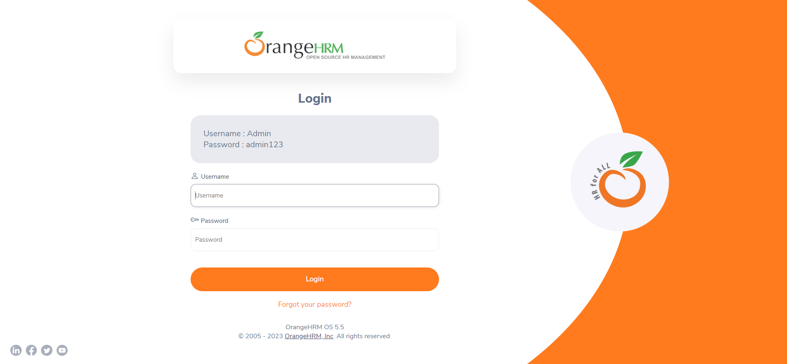

Report generated on 26-Jul-2023 at 22:01:37 by pytest-html v3.2.0
3 tests ran in 31.61 seconds.
(Un)check the boxes to filter the results.
2 passed, 0 skipped, 1 failed, 0 errors, 0 expected failures, 0 unexpected passes| Result | Test | Duration | Links |
|---|---|---|---|
| No results found. Try to check the filters | |||
| Failed | test_001_login.py::TestLogin::test_login_page_visibility | 27.02 | |
|
 self = <page_objects.login_page.login_page_visibility.LoginPageVisibility object at 0x000001D3788F1310> def login_page_visibility(self): try: logo_top = WebDriverWait(self.driver, 5).until( ec.visibility_of_element_located((By.XPATH, self.logo_top_xpath))) assert logo_top.is_displayed() self.logger.info("logo_top is displayed") except Exception as e: self.logger.error("logo_top is not displayed", exc_info=True) raise Exception("Message: {}".format(str(e))) try: logo_right = WebDriverWait(self.driver, 5).until( ec.visibility_of_element_located((By.XPATH, self.logo_right_xpath))) assert logo_right.is_displayed() self.logger.info("logo_right is displayed") except Exception as e: self.logger.error("logo_right is not displayed", exc_info=True) raise Exception("Message: {}".format(str(e))) try: login_title = WebDriverWait(self.driver, 5).until( ec.visibility_of_element_located((By.CLASS_NAME, self.login_title_class_name))) assert login_title.is_displayed() self.logger.info("login_title is displayed") except Exception as e: self.logger.error("login_title is not displayed", exc_info=True) raise Exception("Message: {}".format(str(e))) try: label_username_xpath = WebDriverWait(self.driver, 1).until( ec.visibility_of_element_located((By.XPATH, self.label_username_xpath))) assert label_username_xpath.is_displayed() self.logger.info("label_username_xpath is displayed") except Exception as e: self.logger.error("label_username_xpath is not displayed", exc_info=True) raise Exception("Message: {}".format(str(e))) try: label_password_xpath = WebDriverWait(self.driver, 20).until( ec.visibility_of_element_located((By.XPATH, self.label_password_xpath))) assert label_password_xpath.is_displayed() self.logger.info("label_password_xpath is displayed") except Exception as e: self.logger.error("label_password_xpath is not displayed", exc_info=True) raise Exception("Message: {}".format(str(e))) try: credentials_username_xpath = WebDriverWait(self.driver, 20).until( ec.visibility_of_element_located((By.XPATH, self.credentials_username_xpath))) assert credentials_username_xpath.is_displayed() credentials_username = self.driver.find_element(By.XPATH, self.credentials_username_xpath).text credentials_username_text = credentials_username.replace('Username : ', '') assert credentials_username_text == self.username_text self.logger.info("Username is: " + self.username_text) except Exception as e: self.logger.error("credentials_username_text is not displayed", exc_info=True) raise Exception("Message: {}".format(str(e))) try: credentials_password_xpath = WebDriverWait(self.driver, 20).until( ec.visibility_of_element_located((By.XPATH, self.credentials_password_xpath))) assert credentials_password_xpath.is_displayed() credentials_password = self.driver.find_element(By.XPATH, self.credentials_password_xpath).text credentials_password_text = credentials_password.replace('Password : ', '') assert credentials_password_text == self.password_text self.logger.info("Password is: " + self.password_text) except Exception as e: self.logger.error("credentials_password_text is not displayed", exc_info=True) raise Exception("Message: {}".format(str(e))) try: input_username = self.driver.find_element( locate_with(By.TAG_NAME, "input").below(label_username_xpath)) # 1 input below label username assert input_username.is_displayed() self.logger.info("input_username is displayed") except Exception as e: self.logger.error("input_username is not displayed", exc_info=True) raise Exception("Message: {}".format(str(e))) try: input_password = self.driver.find_element( locate_with(By.TAG_NAME, "input").below(label_password_xpath)) # 1 input below label password assert input_password.is_displayed() self.logger.info("input_password is displayed") except Exception as e: self.logger.error("input_password is not displayed", exc_info=True) raise Exception("Message: {}".format(str(e))) try: button_login = WebDriverWait(self.driver, 20).until( ec.visibility_of_element_located((By.XPATH, self.button_login_xpath))) assert button_login.is_displayed() self.logger.info("button_login is displayed") except Exception as e: self.logger.error("button_login is not displayed", exc_info=True) raise Exception("Message: {}".format(str(e))) try: forgot_password = WebDriverWait(self.driver, 20).until( ec.visibility_of_element_located((By.CLASS_NAME, self.forgot_password_class_name))) assert forgot_password.is_displayed() self.logger.info("forgot_password is displayed") except Exception as e: self.logger.error("forgot_password not displayed", exc_info=True) raise Exception("Message: {}".format(str(e))) try: footer = WebDriverWait(self.driver, 20).until( ec.visibility_of_element_located((By.CLASS_NAME, self.footer_class_name))) assert footer.is_displayed() self.logger.info("footer is displayed") except Exception as e: self.logger.error("footer is not displayed", exc_info=True) raise Exception("Message: {}".format(str(e))) try: orangehrm_copyright = WebDriverWait(self.driver, 20).until( ec.visibility_of_element_located((By.XPATH, self.orangehrm_copyright_xpath_0))) assert orangehrm_copyright.is_displayed() self.logger.info("orangehrm_copyright is displayed") except Exception as e: self.logger.error("orangehrm_copyright is not displayed", exc_info=True) raise Exception("Message: {}".format(str(e))) try: orangehrm_copyright_1 = WebDriverWait(self.driver, 20).until( ec.visibility_of_element_located((By.XPATH, self.orangehrm_copyright_xpath_1))) assert orangehrm_copyright_1.is_displayed() self.logger.info("orangehrm_copyright_1 is displayed") except Exception as e: self.logger.error("orangehrm_copyright_1 is not displayed", exc_info=True) raise Exception("Message: {}".format(str(e))) try: orangehrm_copyright_2 = WebDriverWait(self.driver, 20).until( ec.visibility_of_element_located((By.XPATH, self.orangehrm_copyright_xpath_2))) assert orangehrm_copyright_2.is_displayed() self.logger.info("orangehrm_copyright_2 is displayed") except Exception as e: self.logger.error("orangehrm_copyright_2 is not displayed", exc_info=True) raise Exception("Message: {}".format(str(e))) try: > social_network_icons_linkedin = WebDriverWait(self.driver, 20).until( ec.visibility_of_element_located((By.XPATH, self.social_network_icons_linkedin_xpath))) page_objects\login_page\login_page_visibility.py:207: _ _ _ _ _ _ _ _ _ _ _ _ _ _ _ _ _ _ _ _ _ _ _ _ _ _ _ _ _ _ _ _ _ _ _ _ _ _ _ _ self = <selenium.webdriver.support.wait.WebDriverWait (session="fb3950a9774031b625cbe095bdb12b58")> method = <function visibility_of_element_located.<locals>._predicate at 0x000001D379504180>, message = '' def until(self, method, message: str = ""): """Calls the method provided with the driver as an argument until the \ return value does not evaluate to ``False``. :param method: callable(WebDriver) :param message: optional message for :exc:`TimeoutException` :returns: the result of the last call to `method` :raises: :exc:`selenium.common.exceptions.TimeoutException` if timeout occurs """ screen = None stacktrace = None end_time = time.monotonic() + self._timeout while True: try: value = method(self._driver) if value: return value except self._ignored_exceptions as exc: screen = getattr(exc, "screen", None) stacktrace = getattr(exc, "stacktrace", None) time.sleep(self._poll) if time.monotonic() > end_time: break > raise TimeoutException(message, screen, stacktrace) E selenium.common.exceptions.TimeoutException: Message: E Stacktrace: E Backtrace: E GetHandleVerifier [0x00A4A813+48355] E (No symbol) [0x009DC4B1] E (No symbol) [0x008E5358] E (No symbol) [0x009109A5] E (No symbol) [0x00910B3B] E (No symbol) [0x0093E232] E (No symbol) [0x0092A784] E (No symbol) [0x0093C922] E (No symbol) [0x0092A536] E (No symbol) [0x009082DC] E (No symbol) [0x009093DD] E GetHandleVerifier [0x00CAAABD+2539405] E GetHandleVerifier [0x00CEA78F+2800735] E GetHandleVerifier [0x00CE456C+2775612] E GetHandleVerifier [0x00AD51E0+616112] E (No symbol) [0x009E5F8C] E (No symbol) [0x009E2328] E (No symbol) [0x009E240B] E (No symbol) [0x009D4FF7] E BaseThreadInitThunk [0x76F700C9+25] E RtlGetAppContainerNamedObjectPath [0x77147B1E+286] E RtlGetAppContainerNamedObjectPath [0x77147AEE+238] venvs\Lib\site-packages\selenium\webdriver\support\wait.py:95: TimeoutException During handling of the above exception, another exception occurred: self = <tests.test_scripts.test_001_login.TestLogin object at 0x000001D378905950>, setup = <selenium.webdriver.chrome.webdriver.WebDriver (session="fb3950a9774031b625cbe095bdb12b58")> > ??? D:\Projects-Testing\PyCharm\project-ohrm\tests\test_scripts\test_001_login.py:38: _ _ _ _ _ _ _ _ _ _ _ _ _ _ _ _ _ _ _ _ _ _ _ _ _ _ _ _ _ _ _ _ _ _ _ _ _ _ _ _ self = <page_objects.login_page.login_page_visibility.LoginPageVisibility object at 0x000001D3788F1310> def login_page_visibility(self): try: logo_top = WebDriverWait(self.driver, 5).until( ec.visibility_of_element_located((By.XPATH, self.logo_top_xpath))) assert logo_top.is_displayed() self.logger.info("logo_top is displayed") except Exception as e: self.logger.error("logo_top is not displayed", exc_info=True) raise Exception("Message: {}".format(str(e))) try: logo_right = WebDriverWait(self.driver, 5).until( ec.visibility_of_element_located((By.XPATH, self.logo_right_xpath))) assert logo_right.is_displayed() self.logger.info("logo_right is displayed") except Exception as e: self.logger.error("logo_right is not displayed", exc_info=True) raise Exception("Message: {}".format(str(e))) try: login_title = WebDriverWait(self.driver, 5).until( ec.visibility_of_element_located((By.CLASS_NAME, self.login_title_class_name))) assert login_title.is_displayed() self.logger.info("login_title is displayed") except Exception as e: self.logger.error("login_title is not displayed", exc_info=True) raise Exception("Message: {}".format(str(e))) try: label_username_xpath = WebDriverWait(self.driver, 1).until( ec.visibility_of_element_located((By.XPATH, self.label_username_xpath))) assert label_username_xpath.is_displayed() self.logger.info("label_username_xpath is displayed") except Exception as e: self.logger.error("label_username_xpath is not displayed", exc_info=True) raise Exception("Message: {}".format(str(e))) try: label_password_xpath = WebDriverWait(self.driver, 20).until( ec.visibility_of_element_located((By.XPATH, self.label_password_xpath))) assert label_password_xpath.is_displayed() self.logger.info("label_password_xpath is displayed") except Exception as e: self.logger.error("label_password_xpath is not displayed", exc_info=True) raise Exception("Message: {}".format(str(e))) try: credentials_username_xpath = WebDriverWait(self.driver, 20).until( ec.visibility_of_element_located((By.XPATH, self.credentials_username_xpath))) assert credentials_username_xpath.is_displayed() credentials_username = self.driver.find_element(By.XPATH, self.credentials_username_xpath).text credentials_username_text = credentials_username.replace('Username : ', '') assert credentials_username_text == self.username_text self.logger.info("Username is: " + self.username_text) except Exception as e: self.logger.error("credentials_username_text is not displayed", exc_info=True) raise Exception("Message: {}".format(str(e))) try: credentials_password_xpath = WebDriverWait(self.driver, 20).until( ec.visibility_of_element_located((By.XPATH, self.credentials_password_xpath))) assert credentials_password_xpath.is_displayed() credentials_password = self.driver.find_element(By.XPATH, self.credentials_password_xpath).text credentials_password_text = credentials_password.replace('Password : ', '') assert credentials_password_text == self.password_text self.logger.info("Password is: " + self.password_text) except Exception as e: self.logger.error("credentials_password_text is not displayed", exc_info=True) raise Exception("Message: {}".format(str(e))) try: input_username = self.driver.find_element( locate_with(By.TAG_NAME, "input").below(label_username_xpath)) # 1 input below label username assert input_username.is_displayed() self.logger.info("input_username is displayed") except Exception as e: self.logger.error("input_username is not displayed", exc_info=True) raise Exception("Message: {}".format(str(e))) try: input_password = self.driver.find_element( locate_with(By.TAG_NAME, "input").below(label_password_xpath)) # 1 input below label password assert input_password.is_displayed() self.logger.info("input_password is displayed") except Exception as e: self.logger.error("input_password is not displayed", exc_info=True) raise Exception("Message: {}".format(str(e))) try: button_login = WebDriverWait(self.driver, 20).until( ec.visibility_of_element_located((By.XPATH, self.button_login_xpath))) assert button_login.is_displayed() self.logger.info("button_login is displayed") except Exception as e: self.logger.error("button_login is not displayed", exc_info=True) raise Exception("Message: {}".format(str(e))) try: forgot_password = WebDriverWait(self.driver, 20).until( ec.visibility_of_element_located((By.CLASS_NAME, self.forgot_password_class_name))) assert forgot_password.is_displayed() self.logger.info("forgot_password is displayed") except Exception as e: self.logger.error("forgot_password not displayed", exc_info=True) raise Exception("Message: {}".format(str(e))) try: footer = WebDriverWait(self.driver, 20).until( ec.visibility_of_element_located((By.CLASS_NAME, self.footer_class_name))) assert footer.is_displayed() self.logger.info("footer is displayed") except Exception as e: self.logger.error("footer is not displayed", exc_info=True) raise Exception("Message: {}".format(str(e))) try: orangehrm_copyright = WebDriverWait(self.driver, 20).until( ec.visibility_of_element_located((By.XPATH, self.orangehrm_copyright_xpath_0))) assert orangehrm_copyright.is_displayed() self.logger.info("orangehrm_copyright is displayed") except Exception as e: self.logger.error("orangehrm_copyright is not displayed", exc_info=True) raise Exception("Message: {}".format(str(e))) try: orangehrm_copyright_1 = WebDriverWait(self.driver, 20).until( ec.visibility_of_element_located((By.XPATH, self.orangehrm_copyright_xpath_1))) assert orangehrm_copyright_1.is_displayed() self.logger.info("orangehrm_copyright_1 is displayed") except Exception as e: self.logger.error("orangehrm_copyright_1 is not displayed", exc_info=True) raise Exception("Message: {}".format(str(e))) try: orangehrm_copyright_2 = WebDriverWait(self.driver, 20).until( ec.visibility_of_element_located((By.XPATH, self.orangehrm_copyright_xpath_2))) assert orangehrm_copyright_2.is_displayed() self.logger.info("orangehrm_copyright_2 is displayed") except Exception as e: self.logger.error("orangehrm_copyright_2 is not displayed", exc_info=True) raise Exception("Message: {}".format(str(e))) try: social_network_icons_linkedin = WebDriverWait(self.driver, 20).until( ec.visibility_of_element_located((By.XPATH, self.social_network_icons_linkedin_xpath))) assert social_network_icons_linkedin.is_displayed() self.logger.info("social_network_icons_linkedin is displayed") except Exception as e: self.logger.error("social_network_icons_linkedin is not displayed", exc_info=True) > raise Exception("Message: {}".format(str(e))) E Exception: Message: Message: E Stacktrace: E Backtrace: E GetHandleVerifier [0x00A4A813+48355] E (No symbol) [0x009DC4B1] E (No symbol) [0x008E5358] E (No symbol) [0x009109A5] E (No symbol) [0x00910B3B] E (No symbol) [0x0093E232] E (No symbol) [0x0092A784] E (No symbol) [0x0093C922] E (No symbol) [0x0092A536] E (No symbol) [0x009082DC] E (No symbol) [0x009093DD] E GetHandleVerifier [0x00CAAABD+2539405] E GetHandleVerifier [0x00CEA78F+2800735] E GetHandleVerifier [0x00CE456C+2775612] E GetHandleVerifier [0x00AD51E0+616112] E (No symbol) [0x009E5F8C] E (No symbol) [0x009E2328] E (No symbol) [0x009E240B] E (No symbol) [0x009D4FF7] E BaseThreadInitThunk [0x76F700C9+25] E RtlGetAppContainerNamedObjectPath [0x77147B1E+286] E RtlGetAppContainerNamedObjectPath [0x77147AEE+238] page_objects\login_page\login_page_visibility.py:213: Exception -------------------------------Captured log setup------------------------------- WARNING selenium.webdriver.common.selenium_manager:selenium_manager.py:125 Error getting version of chromedriver 115. Retrying with chromedriver 114 (attempt 1/5) ------------------------------Captured stdout call------------------------------ 2023-07-26 22:01:09,164 - LoginPage - INFO - test_login_page_visibility *** START 2023-07-26 22:01:09,164 - LoginPage - INFO - test_login_page_visibility *** START 2023-07-26 22:01:09,164 - LoginPage - INFO - test_login_page_visibility *** START 2023-07-26 22:01:09,164 - LoginPage - INFO - test_login_page_visibility *** START 2023-07-26 22:01:09,164 - LoginPage - INFO - test_login_page_visibility *** START url is: https://opensource-demo.orangehrmlive.com/web/index.php/auth/login 2023-07-26 22:01:11,029 - LoginPage - INFO - logo_top is displayed 2023-07-26 22:01:11,029 - LoginPage - INFO - logo_top is displayed 2023-07-26 22:01:11,029 - LoginPage - INFO - logo_top is displayed 2023-07-26 22:01:11,029 - LoginPage - INFO - logo_top is displayed 2023-07-26 22:01:11,029 - LoginPage - INFO - logo_top is displayed 2023-07-26 22:01:11,136 - LoginPage - INFO - logo_right is displayed 2023-07-26 22:01:11,136 - LoginPage - INFO - logo_right is displayed 2023-07-26 22:01:11,136 - LoginPage - INFO - logo_right is displayed 2023-07-26 22:01:11,136 - LoginPage - INFO - logo_right is displayed 2023-07-26 22:01:11,136 - LoginPage - INFO - logo_right is displayed 2023-07-26 22:01:11,212 - LoginPage - INFO - login_title is displayed 2023-07-26 22:01:11,212 - LoginPage - INFO - login_title is displayed 2023-07-26 22:01:11,212 - LoginPage - INFO - login_title is displayed 2023-07-26 22:01:11,212 - LoginPage - INFO - login_title is displayed 2023-07-26 22:01:11,212 - LoginPage - INFO - login_title is displayed 2023-07-26 22:01:11,279 - LoginPage - INFO - label_username_xpath is displayed 2023-07-26 22:01:11,279 - LoginPage - INFO - label_username_xpath is displayed 2023-07-26 22:01:11,279 - LoginPage - INFO - label_username_xpath is displayed 2023-07-26 22:01:11,279 - LoginPage - INFO - label_username_xpath is displayed 2023-07-26 22:01:11,279 - LoginPage - INFO - label_username_xpath is displayed 2023-07-26 22:01:11,336 - LoginPage - INFO - label_password_xpath is displayed 2023-07-26 22:01:11,336 - LoginPage - INFO - label_password_xpath is displayed 2023-07-26 22:01:11,336 - LoginPage - INFO - label_password_xpath is displayed 2023-07-26 22:01:11,336 - LoginPage - INFO - label_password_xpath is displayed 2023-07-26 22:01:11,336 - LoginPage - INFO - label_password_xpath is displayed 2023-07-26 22:01:11,485 - LoginPage - INFO - Username is: Admin 2023-07-26 22:01:11,485 - LoginPage - INFO - Username is: Admin 2023-07-26 22:01:11,485 - LoginPage - INFO - Username is: Admin 2023-07-26 22:01:11,485 - LoginPage - INFO - Username is: Admin 2023-07-26 22:01:11,485 - LoginPage - INFO - Username is: Admin 2023-07-26 22:01:11,577 - LoginPage - INFO - Password is: admin123 2023-07-26 22:01:11,577 - LoginPage - INFO - Password is: admin123 2023-07-26 22:01:11,577 - LoginPage - INFO - Password is: admin123 2023-07-26 22:01:11,577 - LoginPage - INFO - Password is: admin123 2023-07-26 22:01:11,577 - LoginPage - INFO - Password is: admin123 2023-07-26 22:01:11,629 - LoginPage - INFO - input_username is displayed 2023-07-26 22:01:11,629 - LoginPage - INFO - input_username is displayed 2023-07-26 22:01:11,629 - LoginPage - INFO - input_username is displayed 2023-07-26 22:01:11,629 - LoginPage - INFO - input_username is displayed 2023-07-26 22:01:11,629 - LoginPage - INFO - input_username is displayed 2023-07-26 22:01:11,685 - LoginPage - INFO - input_password is displayed 2023-07-26 22:01:11,685 - LoginPage - INFO - input_password is displayed 2023-07-26 22:01:11,685 - LoginPage - INFO - input_password is displayed 2023-07-26 22:01:11,685 - LoginPage - INFO - input_password is displayed 2023-07-26 22:01:11,685 - LoginPage - INFO - input_password is displayed 2023-07-26 22:01:11,743 - LoginPage - INFO - button_login is displayed 2023-07-26 22:01:11,743 - LoginPage - INFO - button_login is displayed 2023-07-26 22:01:11,743 - LoginPage - INFO - button_login is displayed 2023-07-26 22:01:11,743 - LoginPage - INFO - button_login is displayed 2023-07-26 22:01:11,743 - LoginPage - INFO - button_login is displayed 2023-07-26 22:01:11,813 - LoginPage - INFO - forgot_password is displayed 2023-07-26 22:01:11,813 - LoginPage - INFO - forgot_password is displayed 2023-07-26 22:01:11,813 - LoginPage - INFO - forgot_password is displayed 2023-07-26 22:01:11,813 - LoginPage - INFO - forgot_password is displayed 2023-07-26 22:01:11,813 - LoginPage - INFO - forgot_password is displayed 2023-07-26 22:01:11,868 - LoginPage - INFO - footer is displayed 2023-07-26 22:01:11,868 - LoginPage - INFO - footer is displayed 2023-07-26 22:01:11,868 - LoginPage - INFO - footer is displayed 2023-07-26 22:01:11,868 - LoginPage - INFO - footer is displayed 2023-07-26 22:01:11,868 - LoginPage - INFO - footer is displayed 2023-07-26 22:01:11,935 - LoginPage - INFO - orangehrm_copyright is displayed 2023-07-26 22:01:11,935 - LoginPage - INFO - orangehrm_copyright is displayed 2023-07-26 22:01:11,935 - LoginPage - INFO - orangehrm_copyright is displayed 2023-07-26 22:01:11,935 - LoginPage - INFO - orangehrm_copyright is displayed 2023-07-26 22:01:11,935 - LoginPage - INFO - orangehrm_copyright is displayed 2023-07-26 22:01:11,995 - LoginPage - INFO - orangehrm_copyright_1 is displayed 2023-07-26 22:01:11,995 - LoginPage - INFO - orangehrm_copyright_1 is displayed 2023-07-26 22:01:11,995 - LoginPage - INFO - orangehrm_copyright_1 is displayed 2023-07-26 22:01:11,995 - LoginPage - INFO - orangehrm_copyright_1 is displayed 2023-07-26 22:01:11,995 - LoginPage - INFO - orangehrm_copyright_1 is displayed 2023-07-26 22:01:12,059 - LoginPage - INFO - orangehrm_copyright_2 is displayed 2023-07-26 22:01:12,059 - LoginPage - INFO - orangehrm_copyright_2 is displayed 2023-07-26 22:01:12,059 - LoginPage - INFO - orangehrm_copyright_2 is displayed 2023-07-26 22:01:12,059 - LoginPage - INFO - orangehrm_copyright_2 is displayed 2023-07-26 22:01:12,059 - LoginPage - INFO - orangehrm_copyright_2 is displayed 2023-07-26 22:01:33,123 - LoginPage - ERROR - social_network_icons_linkedin is not displayed Traceback (most recent call last): File "D:\Projects\Testing\Pytest_Selenium\project-ohrm\page_objects\login_page\login_page_visibility.py", line 207, in login_page_visibility social_network_icons_linkedin = WebDriverWait(self.driver, 20).until( ^^^^^^^^^^^^^^^^^^^^^^^^^^^^^^^^^^^^^ File "D:\Projects\Testing\Pytest_Selenium\project-ohrm\venvs\Lib\site-packages\selenium\webdriver\support\wait.py", line 95, in until raise TimeoutException(message, screen, stacktrace) selenium.common.exceptions.TimeoutException: Message: Stacktrace: Backtrace: GetHandleVerifier [0x00A4A813+48355] (No symbol) [0x009DC4B1] (No symbol) [0x008E5358] (No symbol) [0x009109A5] (No symbol) [0x00910B3B] (No symbol) [0x0093E232] (No symbol) [0x0092A784] (No symbol) [0x0093C922] (No symbol) [0x0092A536] (No symbol) [0x009082DC] (No symbol) [0x009093DD] GetHandleVerifier [0x00CAAABD+2539405] GetHandleVerifier [0x00CEA78F+2800735] GetHandleVerifier [0x00CE456C+2775612] GetHandleVerifier [0x00AD51E0+616112] (No symbol) [0x009E5F8C] (No symbol) [0x009E2328] (No symbol) [0x009E240B] (No symbol) [0x009D4FF7] BaseThreadInitThunk [0x76F700C9+25] RtlGetAppContainerNamedObjectPath [0x77147B1E+286] RtlGetAppContainerNamedObjectPath [0x77147AEE+238] 2023-07-26 22:01:33,123 - LoginPage - ERROR - social_network_icons_linkedin is not displayed Traceback (most recent call last): File "D:\Projects\Testing\Pytest_Selenium\project-ohrm\page_objects\login_page\login_page_visibility.py", line 207, in login_page_visibility social_network_icons_linkedin = WebDriverWait(self.driver, 20).until( ^^^^^^^^^^^^^^^^^^^^^^^^^^^^^^^^^^^^^ File "D:\Projects\Testing\Pytest_Selenium\project-ohrm\venvs\Lib\site-packages\selenium\webdriver\support\wait.py", line 95, in until raise TimeoutException(message, screen, stacktrace) selenium.common.exceptions.TimeoutException: Message: Stacktrace: Backtrace: GetHandleVerifier [0x00A4A813+48355] (No symbol) [0x009DC4B1] (No symbol) [0x008E5358] (No symbol) [0x009109A5] (No symbol) [0x00910B3B] (No symbol) [0x0093E232] (No symbol) [0x0092A784] (No symbol) [0x0093C922] (No symbol) [0x0092A536] (No symbol) [0x009082DC] (No symbol) [0x009093DD] GetHandleVerifier [0x00CAAABD+2539405] GetHandleVerifier [0x00CEA78F+2800735] GetHandleVerifier [0x00CE456C+2775612] GetHandleVerifier [0x00AD51E0+616112] (No symbol) [0x009E5F8C] (No symbol) [0x009E2328] (No symbol) [0x009E240B] (No symbol) [0x009D4FF7] BaseThreadInitThunk [0x76F700C9+25] RtlGetAppContainerNamedObjectPath [0x77147B1E+286] RtlGetAppContainerNamedObjectPath [0x77147AEE+238] 2023-07-26 22:01:33,123 - LoginPage - ERROR - social_network_icons_linkedin is not displayed Traceback (most recent call last): File "D:\Projects\Testing\Pytest_Selenium\project-ohrm\page_objects\login_page\login_page_visibility.py", line 207, in login_page_visibility social_network_icons_linkedin = WebDriverWait(self.driver, 20).until( ^^^^^^^^^^^^^^^^^^^^^^^^^^^^^^^^^^^^^ File "D:\Projects\Testing\Pytest_Selenium\project-ohrm\venvs\Lib\site-packages\selenium\webdriver\support\wait.py", line 95, in until raise TimeoutException(message, screen, stacktrace) selenium.common.exceptions.TimeoutException: Message: Stacktrace: Backtrace: GetHandleVerifier [0x00A4A813+48355] (No symbol) [0x009DC4B1] (No symbol) [0x008E5358] (No symbol) [0x009109A5] (No symbol) [0x00910B3B] (No symbol) [0x0093E232] (No symbol) [0x0092A784] (No symbol) [0x0093C922] (No symbol) [0x0092A536] (No symbol) [0x009082DC] (No symbol) [0x009093DD] GetHandleVerifier [0x00CAAABD+2539405] GetHandleVerifier [0x00CEA78F+2800735] GetHandleVerifier [0x00CE456C+2775612] GetHandleVerifier [0x00AD51E0+616112] (No symbol) [0x009E5F8C] (No symbol) [0x009E2328] (No symbol) [0x009E240B] (No symbol) [0x009D4FF7] BaseThreadInitThunk [0x76F700C9+25] RtlGetAppContainerNamedObjectPath [0x77147B1E+286] RtlGetAppContainerNamedObjectPath [0x77147AEE+238] 2023-07-26 22:01:33,123 - LoginPage - ERROR - social_network_icons_linkedin is not displayed Traceback (most recent call last): File "D:\Projects\Testing\Pytest_Selenium\project-ohrm\page_objects\login_page\login_page_visibility.py", line 207, in login_page_visibility social_network_icons_linkedin = WebDriverWait(self.driver, 20).until( ^^^^^^^^^^^^^^^^^^^^^^^^^^^^^^^^^^^^^ File "D:\Projects\Testing\Pytest_Selenium\project-ohrm\venvs\Lib\site-packages\selenium\webdriver\support\wait.py", line 95, in until raise TimeoutException(message, screen, stacktrace) selenium.common.exceptions.TimeoutException: Message: Stacktrace: Backtrace: GetHandleVerifier [0x00A4A813+48355] (No symbol) [0x009DC4B1] (No symbol) [0x008E5358] (No symbol) [0x009109A5] (No symbol) [0x00910B3B] (No symbol) [0x0093E232] (No symbol) [0x0092A784] (No symbol) [0x0093C922] (No symbol) [0x0092A536] (No symbol) [0x009082DC] (No symbol) [0x009093DD] GetHandleVerifier [0x00CAAABD+2539405] GetHandleVerifier [0x00CEA78F+2800735] GetHandleVerifier [0x00CE456C+2775612] GetHandleVerifier [0x00AD51E0+616112] (No symbol) [0x009E5F8C] (No symbol) [0x009E2328] (No symbol) [0x009E240B] (No symbol) [0x009D4FF7] BaseThreadInitThunk [0x76F700C9+25] RtlGetAppContainerNamedObjectPath [0x77147B1E+286] RtlGetAppContainerNamedObjectPath [0x77147AEE+238] 2023-07-26 22:01:33,123 - LoginPage - ERROR - social_network_icons_linkedin is not displayed Traceback (most recent call last): File "D:\Projects\Testing\Pytest_Selenium\project-ohrm\page_objects\login_page\login_page_visibility.py", line 207, in login_page_visibility social_network_icons_linkedin = WebDriverWait(self.driver, 20).until( ^^^^^^^^^^^^^^^^^^^^^^^^^^^^^^^^^^^^^ File "D:\Projects\Testing\Pytest_Selenium\project-ohrm\venvs\Lib\site-packages\selenium\webdriver\support\wait.py", line 95, in until raise TimeoutException(message, screen, stacktrace) selenium.common.exceptions.TimeoutException: Message: Stacktrace: Backtrace: GetHandleVerifier [0x00A4A813+48355] (No symbol) [0x009DC4B1] (No symbol) [0x008E5358] (No symbol) [0x009109A5] (No symbol) [0x00910B3B] (No symbol) [0x0093E232] (No symbol) [0x0092A784] (No symbol) [0x0093C922] (No symbol) [0x0092A536] (No symbol) [0x009082DC] (No symbol) [0x009093DD] GetHandleVerifier [0x00CAAABD+2539405] GetHandleVerifier [0x00CEA78F+2800735] GetHandleVerifier [0x00CE456C+2775612] GetHandleVerifier [0x00AD51E0+616112] (No symbol) [0x009E5F8C] (No symbol) [0x009E2328] (No symbol) [0x009E240B] (No symbol) [0x009D4FF7] BaseThreadInitThunk [0x76F700C9+25] RtlGetAppContainerNamedObjectPath [0x77147B1E+286] RtlGetAppContainerNamedObjectPath [0x77147AEE+238] ------------------------------Captured stderr call------------------------------ --- Logging error --- Traceback (most recent call last): File "C:\Users\Furman\AppData\Local\Programs\Python\Python311\Lib\logging\handlers.py", line 74, in emit self.doRollover() File "C:\Users\Furman\AppData\Local\Programs\Python\Python311\Lib\logging\handlers.py", line 435, in doRollover self.rotate(self.baseFilename, dfn) File "C:\Users\Furman\AppData\Local\Programs\Python\Python311\Lib\logging\handlers.py", line 115, in rotate os.rename(source, dest) PermissionError: [WinError 32] The process cannot access the file because it is being used by another process: 'D:\\Projects\\Testing\\Pytest_Selenium\\project-ohrm\\logs\\automation.log' -> 'D:\\Projects\\Testing\\Pytest_Selenium\\project-ohrm\\logs\\automation.log.2023-06-18' Call stack: File "<frozen runpy>", line 198, in _run_module_as_main File "<frozen runpy>", line 88, in _run_code File "D:\Projects\Testing\Pytest_Selenium\project-ohrm\venvs\Scripts\py.test.exe\__main__.py", line 7, in <module> sys.exit(console_main()) File "D:\Projects\Testing\Pytest_Selenium\project-ohrm\venvs\Lib\site-packages\_pytest\config\__init__.py", line 189, in console_main code = main() File "D:\Projects\Testing\Pytest_Selenium\project-ohrm\venvs\Lib\site-packages\_pytest\config\__init__.py", line 166, in main ret: Union[ExitCode, int] = config.hook.pytest_cmdline_main( File "D:\Projects\Testing\Pytest_Selenium\project-ohrm\venvs\Lib\site-packages\pluggy\_hooks.py", line 265, in __call__ return self._hookexec(self.name, self.get_hookimpls(), kwargs, firstresult) File "D:\Projects\Testing\Pytest_Selenium\project-ohrm\venvs\Lib\site-packages\pluggy\_manager.py", line 80, in _hookexec return self._inner_hookexec(hook_name, methods, kwargs, firstresult) File "D:\Projects\Testing\Pytest_Selenium\project-ohrm\venvs\Lib\site-packages\pluggy\_callers.py", line 39, in _multicall res = hook_impl.function(*args) File "D:\Projects\Testing\Pytest_Selenium\project-ohrm\venvs\Lib\site-packages\_pytest\main.py", line 316, in pytest_cmdline_main return wrap_session(config, _main) File "D:\Projects\Testing\Pytest_Selenium\project-ohrm\venvs\Lib\site-packages\_pytest\main.py", line 269, in wrap_session session.exitstatus = doit(config, session) or 0 File "D:\Projects\Testing\Pytest_Selenium\project-ohrm\venvs\Lib\site-packages\_pytest\main.py", line 323, in _main config.hook.pytest_runtestloop(session=session) File "D:\Projects\Testing\Pytest_Selenium\project-ohrm\venvs\Lib\site-packages\pluggy\_hooks.py", line 265, in __call__ return self._hookexec(self.name, self.get_hookimpls(), kwargs, firstresult) File "D:\Projects\Testing\Pytest_Selenium\project-ohrm\venvs\Lib\site-packages\pluggy\_manager.py", line 80, in _hookexec return self._inner_hookexec(hook_name, methods, kwargs, firstresult) File "D:\Projects\Testing\Pytest_Selenium\project-ohrm\venvs\Lib\site-packages\pluggy\_callers.py", line 39, in _multicall res = hook_impl.function(*args) File "D:\Projects\Testing\Pytest_Selenium\project-ohrm\venvs\Lib\site-packages\_pytest\main.py", line 348, in pytest_runtestloop item.config.hook.pytest_runtest_protocol(item=item, nextitem=nextitem) File "D:\Projects\Testing\Pytest_Selenium\project-ohrm\venvs\Lib\site-packages\pluggy\_hooks.py", line 265, in __call__ return self._hookexec(self.name, self.get_hookimpls(), kwargs, firstresult) File "D:\Projects\Testing\Pytest_Selenium\project-ohrm\venvs\Lib\site-packages\pluggy\_manager.py", line 80, in _hookexec return self._inner_hookexec(hook_name, methods, kwargs, firstresult) File "D:\Projects\Testing\Pytest_Selenium\project-ohrm\venvs\Lib\site-packages\pluggy\_callers.py", line 39, in _multicall res = hook_impl.function(*args) File "D:\Projects\Testing\Pytest_Selenium\project-ohrm\venvs\Lib\site-packages\_pytest\runner.py", line 114, in pytest_runtest_protocol runtestprotocol(item, nextitem=nextitem) File "D:\Projects\Testing\Pytest_Selenium\project-ohrm\venvs\Lib\site-packages\_pytest\runner.py", line 133, in runtestprotocol reports.append(call_and_report(item, "call", log)) File "D:\Projects\Testing\Pytest_Selenium\project-ohrm\venvs\Lib\site-packages\_pytest\runner.py", line 222, in call_and_report call = call_runtest_hook(item, when, **kwds) File "D:\Projects\Testing\Pytest_Selenium\project-ohrm\venvs\Lib\site-packages\_pytest\runner.py", line 261, in call_runtest_hook return CallInfo.from_call( File "D:\Projects\Testing\Pytest_Selenium\project-ohrm\venvs\Lib\site-packages\_pytest\runner.py", line 341, in from_call result: Optional[TResult] = func() File "D:\Projects\Testing\Pytest_Selenium\project-ohrm\venvs\Lib\site-packages\_pytest\runner.py", line 262, in <lambda> lambda: ihook(item=item, **kwds), when=when, reraise=reraise File "D:\Projects\Testing\Pytest_Selenium\project-ohrm\venvs\Lib\site-packages\pluggy\_hooks.py", line 265, in __call__ return self._hookexec(self.name, self.get_hookimpls(), kwargs, firstresult) File "D:\Projects\Testing\Pytest_Selenium\project-ohrm\venvs\Lib\site-packages\pluggy\_manager.py", line 80, in _hookexec return self._inner_hookexec(hook_name, methods, kwargs, firstresult) File "D:\Projects\Testing\Pytest_Selenium\project-ohrm\venvs\Lib\site-packages\pluggy\_callers.py", line 39, in _multicall res = hook_impl.function(*args) File "D:\Projects\Testing\Pytest_Selenium\project-ohrm\venvs\Lib\site-packages\_pytest\runner.py", line 169, in pytest_runtest_call item.runtest() File "D:\Projects\Testing\Pytest_Selenium\project-ohrm\venvs\Lib\site-packages\_pytest\python.py", line 1799, in runtest self.ihook.pytest_pyfunc_call(pyfuncitem=self) File "D:\Projects\Testing\Pytest_Selenium\project-ohrm\venvs\Lib\site-packages\pluggy\_hooks.py", line 265, in __call__ return self._hookexec(self.name, self.get_hookimpls(), kwargs, firstresult) File "D:\Projects\Testing\Pytest_Selenium\project-ohrm\venvs\Lib\site-packages\pluggy\_manager.py", line 80, in _hookexec return self._inner_hookexec(hook_name, methods, kwargs, firstresult) File "D:\Projects\Testing\Pytest_Selenium\project-ohrm\venvs\Lib\site-packages\pluggy\_callers.py", line 39, in _multicall res = hook_impl.function(*args) File "D:\Projects\Testing\Pytest_Selenium\project-ohrm\venvs\Lib\site-packages\_pytest\python.py", line 194, in pytest_pyfunc_call result = testfunction(**testargs) File "D:\Projects-Testing\PyCharm\project-ohrm\tests\test_scripts\test_001_login.py", line 32, in test_login_page_visibility Message: 'test_login_page_visibility *** START' Arguments: () --- Logging error --- Traceback (most recent call last): File "C:\Users\Furman\AppData\Local\Programs\Python\Python311\Lib\logging\handlers.py", line 74, in emit self.doRollover() File "C:\Users\Furman\AppData\Local\Programs\Python\Python311\Lib\logging\handlers.py", line 435, in doRollover self.rotate(self.baseFilename, dfn) File "C:\Users\Furman\AppData\Local\Programs\Python\Python311\Lib\logging\handlers.py", line 115, in rotate os.rename(source, dest) PermissionError: [WinError 32] The process cannot access the file because it is being used by another process: 'D:\\Projects\\Testing\\Pytest_Selenium\\project-ohrm\\logs\\automation.log' -> 'D:\\Projects\\Testing\\Pytest_Selenium\\project-ohrm\\logs\\automation.log.2023-06-18' Call stack: File "<frozen runpy>", line 198, in _run_module_as_main File "<frozen runpy>", line 88, in _run_code File "D:\Projects\Testing\Pytest_Selenium\project-ohrm\venvs\Scripts\py.test.exe\__main__.py", line 7, in <module> sys.exit(console_main()) File "D:\Projects\Testing\Pytest_Selenium\project-ohrm\venvs\Lib\site-packages\_pytest\config\__init__.py", line 189, in console_main code = main() File "D:\Projects\Testing\Pytest_Selenium\project-ohrm\venvs\Lib\site-packages\_pytest\config\__init__.py", line 166, in main ret: Union[ExitCode, int] = config.hook.pytest_cmdline_main( File "D:\Projects\Testing\Pytest_Selenium\project-ohrm\venvs\Lib\site-packages\pluggy\_hooks.py", line 265, in __call__ return self._hookexec(self.name, self.get_hookimpls(), kwargs, firstresult) File "D:\Projects\Testing\Pytest_Selenium\project-ohrm\venvs\Lib\site-packages\pluggy\_manager.py", line 80, in _hookexec return self._inner_hookexec(hook_name, methods, kwargs, firstresult) File "D:\Projects\Testing\Pytest_Selenium\project-ohrm\venvs\Lib\site-packages\pluggy\_callers.py", line 39, in _multicall res = hook_impl.function(*args) File "D:\Projects\Testing\Pytest_Selenium\project-ohrm\venvs\Lib\site-packages\_pytest\main.py", line 316, in pytest_cmdline_main return wrap_session(config, _main) File "D:\Projects\Testing\Pytest_Selenium\project-ohrm\venvs\Lib\site-packages\_pytest\main.py", line 269, in wrap_session session.exitstatus = doit(config, session) or 0 File "D:\Projects\Testing\Pytest_Selenium\project-ohrm\venvs\Lib\site-packages\_pytest\main.py", line 323, in _main config.hook.pytest_runtestloop(session=session) File "D:\Projects\Testing\Pytest_Selenium\project-ohrm\venvs\Lib\site-packages\pluggy\_hooks.py", line 265, in __call__ return self._hookexec(self.name, self.get_hookimpls(), kwargs, firstresult) File "D:\Projects\Testing\Pytest_Selenium\project-ohrm\venvs\Lib\site-packages\pluggy\_manager.py", line 80, in _hookexec return self._inner_hookexec(hook_name, methods, kwargs, firstresult) File "D:\Projects\Testing\Pytest_Selenium\project-ohrm\venvs\Lib\site-packages\pluggy\_callers.py", line 39, in _multicall res = hook_impl.function(*args) File "D:\Projects\Testing\Pytest_Selenium\project-ohrm\venvs\Lib\site-packages\_pytest\main.py", line 348, in pytest_runtestloop item.config.hook.pytest_runtest_protocol(item=item, nextitem=nextitem) File "D:\Projects\Testing\Pytest_Selenium\project-ohrm\venvs\Lib\site-packages\pluggy\_hooks.py", line 265, in __call__ return self._hookexec(self.name, self.get_hookimpls(), kwargs, firstresult) File "D:\Projects\Testing\Pytest_Selenium\project-ohrm\venvs\Lib\site-packages\pluggy\_manager.py", line 80, in _hookexec return self._inner_hookexec(hook_name, methods, kwargs, firstresult) File "D:\Projects\Testing\Pytest_Selenium\project-ohrm\venvs\Lib\site-packages\pluggy\_callers.py", line 39, in _multicall res = hook_impl.function(*args) File "D:\Projects\Testing\Pytest_Selenium\project-ohrm\venvs\Lib\site-packages\_pytest\runner.py", line 114, in pytest_runtest_protocol runtestprotocol(item, nextitem=nextitem) File "D:\Projects\Testing\Pytest_Selenium\project-ohrm\venvs\Lib\site-packages\_pytest\runner.py", line 133, in runtestprotocol reports.append(call_and_report(item, "call", log)) File "D:\Projects\Testing\Pytest_Selenium\project-ohrm\venvs\Lib\site-packages\_pytest\runner.py", line 222, in call_and_report call = call_runtest_hook(item, when, **kwds) File "D:\Projects\Testing\Pytest_Selenium\project-ohrm\venvs\Lib\site-packages\_pytest\runner.py", line 261, in call_runtest_hook return CallInfo.from_call( File "D:\Projects\Testing\Pytest_Selenium\project-ohrm\venvs\Lib\site-packages\_pytest\runner.py", line 341, in from_call result: Optional[TResult] = func() File "D:\Projects\Testing\Pytest_Selenium\project-ohrm\venvs\Lib\site-packages\_pytest\runner.py", line 262, in <lambda> lambda: ihook(item=item, **kwds), when=when, reraise=reraise File "D:\Projects\Testing\Pytest_Selenium\project-ohrm\venvs\Lib\site-packages\pluggy\_hooks.py", line 265, in __call__ return self._hookexec(self.name, self.get_hookimpls(), kwargs, firstresult) File "D:\Projects\Testing\Pytest_Selenium\project-ohrm\venvs\Lib\site-packages\pluggy\_manager.py", line 80, in _hookexec return self._inner_hookexec(hook_name, methods, kwargs, firstresult) File "D:\Projects\Testing\Pytest_Selenium\project-ohrm\venvs\Lib\site-packages\pluggy\_callers.py", line 39, in _multicall res = hook_impl.function(*args) File "D:\Projects\Testing\Pytest_Selenium\project-ohrm\venvs\Lib\site-packages\_pytest\runner.py", line 169, in pytest_runtest_call item.runtest() File "D:\Projects\Testing\Pytest_Selenium\project-ohrm\venvs\Lib\site-packages\_pytest\python.py", line 1799, in runtest self.ihook.pytest_pyfunc_call(pyfuncitem=self) File "D:\Projects\Testing\Pytest_Selenium\project-ohrm\venvs\Lib\site-packages\pluggy\_hooks.py", line 265, in __call__ return self._hookexec(self.name, self.get_hookimpls(), kwargs, firstresult) File "D:\Projects\Testing\Pytest_Selenium\project-ohrm\venvs\Lib\site-packages\pluggy\_manager.py", line 80, in _hookexec return self._inner_hookexec(hook_name, methods, kwargs, firstresult) File "D:\Projects\Testing\Pytest_Selenium\project-ohrm\venvs\Lib\site-packages\pluggy\_callers.py", line 39, in _multicall res = hook_impl.function(*args) File "D:\Projects\Testing\Pytest_Selenium\project-ohrm\venvs\Lib\site-packages\_pytest\python.py", line 194, in pytest_pyfunc_call result = testfunction(**testargs) File "D:\Projects-Testing\PyCharm\project-ohrm\tests\test_scripts\test_001_login.py", line 32, in test_login_page_visibility Message: 'test_login_page_visibility *** START' Arguments: () --- Logging error --- Traceback (most recent call last): File "C:\Users\Furman\AppData\Local\Programs\Python\Python311\Lib\logging\handlers.py", line 74, in emit self.doRollover() File "C:\Users\Furman\AppData\Local\Programs\Python\Python311\Lib\logging\handlers.py", line 435, in doRollover self.rotate(self.baseFilename, dfn) File "C:\Users\Furman\AppData\Local\Programs\Python\Python311\Lib\logging\handlers.py", line 115, in rotate os.rename(source, dest) PermissionError: [WinError 32] The process cannot access the file because it is being used by another process: 'D:\\Projects\\Testing\\Pytest_Selenium\\project-ohrm\\logs\\automation.log' -> 'D:\\Projects\\Testing\\Pytest_Selenium\\project-ohrm\\logs\\automation.log.2023-06-18' Call stack: File "<frozen runpy>", line 198, in _run_module_as_main File "<frozen runpy>", line 88, in _run_code File "D:\Projects\Testing\Pytest_Selenium\project-ohrm\venvs\Scripts\py.test.exe\__main__.py", line 7, in <module> sys.exit(console_main()) File "D:\Projects\Testing\Pytest_Selenium\project-ohrm\venvs\Lib\site-packages\_pytest\config\__init__.py", line 189, in console_main code = main() File "D:\Projects\Testing\Pytest_Selenium\project-ohrm\venvs\Lib\site-packages\_pytest\config\__init__.py", line 166, in main ret: Union[ExitCode, int] = config.hook.pytest_cmdline_main( File "D:\Projects\Testing\Pytest_Selenium\project-ohrm\venvs\Lib\site-packages\pluggy\_hooks.py", line 265, in __call__ return self._hookexec(self.name, self.get_hookimpls(), kwargs, firstresult) File "D:\Projects\Testing\Pytest_Selenium\project-ohrm\venvs\Lib\site-packages\pluggy\_manager.py", line 80, in _hookexec return self._inner_hookexec(hook_name, methods, kwargs, firstresult) File "D:\Projects\Testing\Pytest_Selenium\project-ohrm\venvs\Lib\site-packages\pluggy\_callers.py", line 39, in _multicall res = hook_impl.function(*args) File "D:\Projects\Testing\Pytest_Selenium\project-ohrm\venvs\Lib\site-packages\_pytest\main.py", line 316, in pytest_cmdline_main return wrap_session(config, _main) File "D:\Projects\Testing\Pytest_Selenium\project-ohrm\venvs\Lib\site-packages\_pytest\main.py", line 269, in wrap_session session.exitstatus = doit(config, session) or 0 File "D:\Projects\Testing\Pytest_Selenium\project-ohrm\venvs\Lib\site-packages\_pytest\main.py", line 323, in _main config.hook.pytest_runtestloop(session=session) File "D:\Projects\Testing\Pytest_Selenium\project-ohrm\venvs\Lib\site-packages\pluggy\_hooks.py", line 265, in __call__ return self._hookexec(self.name, self.get_hookimpls(), kwargs, firstresult) File "D:\Projects\Testing\Pytest_Selenium\project-ohrm\venvs\Lib\site-packages\pluggy\_manager.py", line 80, in _hookexec return self._inner_hookexec(hook_name, methods, kwargs, firstresult) File "D:\Projects\Testing\Pytest_Selenium\project-ohrm\venvs\Lib\site-packages\pluggy\_callers.py", line 39, in _multicall res = hook_impl.function(*args) File "D:\Projects\Testing\Pytest_Selenium\project-ohrm\venvs\Lib\site-packages\_pytest\main.py", line 348, in pytest_runtestloop item.config.hook.pytest_runtest_protocol(item=item, nextitem=nextitem) File "D:\Projects\Testing\Pytest_Selenium\project-ohrm\venvs\Lib\site-packages\pluggy\_hooks.py", line 265, in __call__ return self._hookexec(self.name, self.get_hookimpls(), kwargs, firstresult) File "D:\Projects\Testing\Pytest_Selenium\project-ohrm\venvs\Lib\site-packages\pluggy\_manager.py", line 80, in _hookexec return self._inner_hookexec(hook_name, methods, kwargs, firstresult) File "D:\Projects\Testing\Pytest_Selenium\project-ohrm\venvs\Lib\site-packages\pluggy\_callers.py", line 39, in _multicall res = hook_impl.function(*args) File "D:\Projects\Testing\Pytest_Selenium\project-ohrm\venvs\Lib\site-packages\_pytest\runner.py", line 114, in pytest_runtest_protocol runtestprotocol(item, nextitem=nextitem) File "D:\Projects\Testing\Pytest_Selenium\project-ohrm\venvs\Lib\site-packages\_pytest\runner.py", line 133, in runtestprotocol reports.append(call_and_report(item, "call", log)) File "D:\Projects\Testing\Pytest_Selenium\project-ohrm\venvs\Lib\site-packages\_pytest\runner.py", line 222, in call_and_report call = call_runtest_hook(item, when, **kwds) File "D:\Projects\Testing\Pytest_Selenium\project-ohrm\venvs\Lib\site-packages\_pytest\runner.py", line 261, in call_runtest_hook return CallInfo.from_call( File "D:\Projects\Testing\Pytest_Selenium\project-ohrm\venvs\Lib\site-packages\_pytest\runner.py", line 341, in from_call result: Optional[TResult] = func() File "D:\Projects\Testing\Pytest_Selenium\project-ohrm\venvs\Lib\site-packages\_pytest\runner.py", line 262, in <lambda> lambda: ihook(item=item, **kwds), when=when, reraise=reraise File "D:\Projects\Testing\Pytest_Selenium\project-ohrm\venvs\Lib\site-packages\pluggy\_hooks.py", line 265, in __call__ return self._hookexec(self.name, self.get_hookimpls(), kwargs, firstresult) File "D:\Projects\Testing\Pytest_Selenium\project-ohrm\venvs\Lib\site-packages\pluggy\_manager.py", line 80, in _hookexec return self._inner_hookexec(hook_name, methods, kwargs, firstresult) File "D:\Projects\Testing\Pytest_Selenium\project-ohrm\venvs\Lib\site-packages\pluggy\_callers.py", line 39, in _multicall res = hook_impl.function(*args) File "D:\Projects\Testing\Pytest_Selenium\project-ohrm\venvs\Lib\site-packages\_pytest\runner.py", line 169, in pytest_runtest_call item.runtest() File "D:\Projects\Testing\Pytest_Selenium\project-ohrm\venvs\Lib\site-packages\_pytest\python.py", line 1799, in runtest self.ihook.pytest_pyfunc_call(pyfuncitem=self) File "D:\Projects\Testing\Pytest_Selenium\project-ohrm\venvs\Lib\site-packages\pluggy\_hooks.py", line 265, in __call__ return self._hookexec(self.name, self.get_hookimpls(), kwargs, firstresult) File "D:\Projects\Testing\Pytest_Selenium\project-ohrm\venvs\Lib\site-packages\pluggy\_manager.py", line 80, in _hookexec return self._inner_hookexec(hook_name, methods, kwargs, firstresult) File "D:\Projects\Testing\Pytest_Selenium\project-ohrm\venvs\Lib\site-packages\pluggy\_callers.py", line 39, in _multicall res = hook_impl.function(*args) File "D:\Projects\Testing\Pytest_Selenium\project-ohrm\venvs\Lib\site-packages\_pytest\python.py", line 194, in pytest_pyfunc_call result = testfunction(**testargs) File "D:\Projects-Testing\PyCharm\project-ohrm\tests\test_scripts\test_001_login.py", line 32, in test_login_page_visibility Message: 'test_login_page_visibility *** START' Arguments: () --- Logging error --- Traceback (most recent call last): File "C:\Users\Furman\AppData\Local\Programs\Python\Python311\Lib\logging\handlers.py", line 74, in emit self.doRollover() File "C:\Users\Furman\AppData\Local\Programs\Python\Python311\Lib\logging\handlers.py", line 435, in doRollover self.rotate(self.baseFilename, dfn) File "C:\Users\Furman\AppData\Local\Programs\Python\Python311\Lib\logging\handlers.py", line 115, in rotate os.rename(source, dest) PermissionError: [WinError 32] The process cannot access the file because it is being used by another process: 'D:\\Projects\\Testing\\Pytest_Selenium\\project-ohrm\\logs\\automation.log' -> 'D:\\Projects\\Testing\\Pytest_Selenium\\project-ohrm\\logs\\automation.log.2023-06-18' Call stack: File "<frozen runpy>", line 198, in _run_module_as_main File "<frozen runpy>", line 88, in _run_code File "D:\Projects\Testing\Pytest_Selenium\project-ohrm\venvs\Scripts\py.test.exe\__main__.py", line 7, in <module> sys.exit(console_main()) File "D:\Projects\Testing\Pytest_Selenium\project-ohrm\venvs\Lib\site-packages\_pytest\config\__init__.py", line 189, in console_main code = main() File "D:\Projects\Testing\Pytest_Selenium\project-ohrm\venvs\Lib\site-packages\_pytest\config\__init__.py", line 166, in main ret: Union[ExitCode, int] = config.hook.pytest_cmdline_main( File "D:\Projects\Testing\Pytest_Selenium\project-ohrm\venvs\Lib\site-packages\pluggy\_hooks.py", line 265, in __call__ return self._hookexec(self.name, self.get_hookimpls(), kwargs, firstresult) File "D:\Projects\Testing\Pytest_Selenium\project-ohrm\venvs\Lib\site-packages\pluggy\_manager.py", line 80, in _hookexec return self._inner_hookexec(hook_name, methods, kwargs, firstresult) File "D:\Projects\Testing\Pytest_Selenium\project-ohrm\venvs\Lib\site-packages\pluggy\_callers.py", line 39, in _multicall res = hook_impl.function(*args) File "D:\Projects\Testing\Pytest_Selenium\project-ohrm\venvs\Lib\site-packages\_pytest\main.py", line 316, in pytest_cmdline_main return wrap_session(config, _main) File "D:\Projects\Testing\Pytest_Selenium\project-ohrm\venvs\Lib\site-packages\_pytest\main.py", line 269, in wrap_session session.exitstatus = doit(config, session) or 0 File "D:\Projects\Testing\Pytest_Selenium\project-ohrm\venvs\Lib\site-packages\_pytest\main.py", line 323, in _main config.hook.pytest_runtestloop(session=session) File "D:\Projects\Testing\Pytest_Selenium\project-ohrm\venvs\Lib\site-packages\pluggy\_hooks.py", line 265, in __call__ return self._hookexec(self.name, self.get_hookimpls(), kwargs, firstresult) File "D:\Projects\Testing\Pytest_Selenium\project-ohrm\venvs\Lib\site-packages\pluggy\_manager.py", line 80, in _hookexec return self._inner_hookexec(hook_name, methods, kwargs, firstresult) File "D:\Projects\Testing\Pytest_Selenium\project-ohrm\venvs\Lib\site-packages\pluggy\_callers.py", line 39, in _multicall res = hook_impl.function(*args) File "D:\Projects\Testing\Pytest_Selenium\project-ohrm\venvs\Lib\site-packages\_pytest\main.py", line 348, in pytest_runtestloop item.config.hook.pytest_runtest_protocol(item=item, nextitem=nextitem) File "D:\Projects\Testing\Pytest_Selenium\project-ohrm\venvs\Lib\site-packages\pluggy\_hooks.py", line 265, in __call__ return self._hookexec(self.name, self.get_hookimpls(), kwargs, firstresult) File "D:\Projects\Testing\Pytest_Selenium\project-ohrm\venvs\Lib\site-packages\pluggy\_manager.py", line 80, in _hookexec return self._inner_hookexec(hook_name, methods, kwargs, firstresult) File "D:\Projects\Testing\Pytest_Selenium\project-ohrm\venvs\Lib\site-packages\pluggy\_callers.py", line 39, in _multicall res = hook_impl.function(*args) File "D:\Projects\Testing\Pytest_Selenium\project-ohrm\venvs\Lib\site-packages\_pytest\runner.py", line 114, in pytest_runtest_protocol runtestprotocol(item, nextitem=nextitem) File "D:\Projects\Testing\Pytest_Selenium\project-ohrm\venvs\Lib\site-packages\_pytest\runner.py", line 133, in runtestprotocol reports.append(call_and_report(item, "call", log)) File "D:\Projects\Testing\Pytest_Selenium\project-ohrm\venvs\Lib\site-packages\_pytest\runner.py", line 222, in call_and_report call = call_runtest_hook(item, when, **kwds) File "D:\Projects\Testing\Pytest_Selenium\project-ohrm\venvs\Lib\site-packages\_pytest\runner.py", line 261, in call_runtest_hook return CallInfo.from_call( File "D:\Projects\Testing\Pytest_Selenium\project-ohrm\venvs\Lib\site-packages\_pytest\runner.py", line 341, in from_call result: Optional[TResult] = func() File "D:\Projects\Testing\Pytest_Selenium\project-ohrm\venvs\Lib\site-packages\_pytest\runner.py", line 262, in <lambda> lambda: ihook(item=item, **kwds), when=when, reraise=reraise File "D:\Projects\Testing\Pytest_Selenium\project-ohrm\venvs\Lib\site-packages\pluggy\_hooks.py", line 265, in __call__ return self._hookexec(self.name, self.get_hookimpls(), kwargs, firstresult) File "D:\Projects\Testing\Pytest_Selenium\project-ohrm\venvs\Lib\site-packages\pluggy\_manager.py", line 80, in _hookexec return self._inner_hookexec(hook_name, methods, kwargs, firstresult) File "D:\Projects\Testing\Pytest_Selenium\project-ohrm\venvs\Lib\site-packages\pluggy\_callers.py", line 39, in _multicall res = hook_impl.function(*args) File "D:\Projects\Testing\Pytest_Selenium\project-ohrm\venvs\Lib\site-packages\_pytest\runner.py", line 169, in pytest_runtest_call item.runtest() File "D:\Projects\Testing\Pytest_Selenium\project-ohrm\venvs\Lib\site-packages\_pytest\python.py", line 1799, in runtest self.ihook.pytest_pyfunc_call(pyfuncitem=self) File "D:\Projects\Testing\Pytest_Selenium\project-ohrm\venvs\Lib\site-packages\pluggy\_hooks.py", line 265, in __call__ return self._hookexec(self.name, self.get_hookimpls(), kwargs, firstresult) File "D:\Projects\Testing\Pytest_Selenium\project-ohrm\venvs\Lib\site-packages\pluggy\_manager.py", line 80, in _hookexec return self._inner_hookexec(hook_name, methods, kwargs, firstresult) File "D:\Projects\Testing\Pytest_Selenium\project-ohrm\venvs\Lib\site-packages\pluggy\_callers.py", line 39, in _multicall res = hook_impl.function(*args) File "D:\Projects\Testing\Pytest_Selenium\project-ohrm\venvs\Lib\site-packages\_pytest\python.py", line 194, in pytest_pyfunc_call result = testfunction(**testargs) File "D:\Projects-Testing\PyCharm\project-ohrm\tests\test_scripts\test_001_login.py", line 32, in test_login_page_visibility Message: 'test_login_page_visibility *** START' Arguments: () --- Logging error --- Traceback (most recent call last): File "C:\Users\Furman\AppData\Local\Programs\Python\Python311\Lib\logging\handlers.py", line 74, in emit self.doRollover() File "C:\Users\Furman\AppData\Local\Programs\Python\Python311\Lib\logging\handlers.py", line 435, in doRollover self.rotate(self.baseFilename, dfn) File "C:\Users\Furman\AppData\Local\Programs\Python\Python311\Lib\logging\handlers.py", line 115, in rotate os.rename(source, dest) PermissionError: [WinError 32] The process cannot access the file because it is being used by another process: 'D:\\Projects\\Testing\\Pytest_Selenium\\project-ohrm\\logs\\automation.log' -> 'D:\\Projects\\Testing\\Pytest_Selenium\\project-ohrm\\logs\\automation.log.2023-06-18' Call stack: File "<frozen runpy>", line 198, in _run_module_as_main File "<frozen runpy>", line 88, in _run_code File "D:\Projects\Testing\Pytest_Selenium\project-ohrm\venvs\Scripts\py.test.exe\__main__.py", line 7, in <module> sys.exit(console_main()) File "D:\Projects\Testing\Pytest_Selenium\project-ohrm\venvs\Lib\site-packages\_pytest\config\__init__.py", line 189, in console_main code = main() File "D:\Projects\Testing\Pytest_Selenium\project-ohrm\venvs\Lib\site-packages\_pytest\config\__init__.py", line 166, in main ret: Union[ExitCode, int] = config.hook.pytest_cmdline_main( File "D:\Projects\Testing\Pytest_Selenium\project-ohrm\venvs\Lib\site-packages\pluggy\_hooks.py", line 265, in __call__ return self._hookexec(self.name, self.get_hookimpls(), kwargs, firstresult) File "D:\Projects\Testing\Pytest_Selenium\project-ohrm\venvs\Lib\site-packages\pluggy\_manager.py", line 80, in _hookexec return self._inner_hookexec(hook_name, methods, kwargs, firstresult) File "D:\Projects\Testing\Pytest_Selenium\project-ohrm\venvs\Lib\site-packages\pluggy\_callers.py", line 39, in _multicall res = hook_impl.function(*args) File "D:\Projects\Testing\Pytest_Selenium\project-ohrm\venvs\Lib\site-packages\_pytest\main.py", line 316, in pytest_cmdline_main return wrap_session(config, _main) File "D:\Projects\Testing\Pytest_Selenium\project-ohrm\venvs\Lib\site-packages\_pytest\main.py", line 269, in wrap_session session.exitstatus = doit(config, session) or 0 File "D:\Projects\Testing\Pytest_Selenium\project-ohrm\venvs\Lib\site-packages\_pytest\main.py", line 323, in _main config.hook.pytest_runtestloop(session=session) File "D:\Projects\Testing\Pytest_Selenium\project-ohrm\venvs\Lib\site-packages\pluggy\_hooks.py", line 265, in __call__ return self._hookexec(self.name, self.get_hookimpls(), kwargs, firstresult) File "D:\Projects\Testing\Pytest_Selenium\project-ohrm\venvs\Lib\site-packages\pluggy\_manager.py", line 80, in _hookexec return self._inner_hookexec(hook_name, methods, kwargs, firstresult) File "D:\Projects\Testing\Pytest_Selenium\project-ohrm\venvs\Lib\site-packages\pluggy\_callers.py", line 39, in _multicall res = hook_impl.function(*args) File "D:\Projects\Testing\Pytest_Selenium\project-ohrm\venvs\Lib\site-packages\_pytest\main.py", line 348, in pytest_runtestloop item.config.hook.pytest_runtest_protocol(item=item, nextitem=nextitem) File "D:\Projects\Testing\Pytest_Selenium\project-ohrm\venvs\Lib\site-packages\pluggy\_hooks.py", line 265, in __call__ return self._hookexec(self.name, self.get_hookimpls(), kwargs, firstresult) File "D:\Projects\Testing\Pytest_Selenium\project-ohrm\venvs\Lib\site-packages\pluggy\_manager.py", line 80, in _hookexec return self._inner_hookexec(hook_name, methods, kwargs, firstresult) File "D:\Projects\Testing\Pytest_Selenium\project-ohrm\venvs\Lib\site-packages\pluggy\_callers.py", line 39, in _multicall res = hook_impl.function(*args) File "D:\Projects\Testing\Pytest_Selenium\project-ohrm\venvs\Lib\site-packages\_pytest\runner.py", line 114, in pytest_runtest_protocol runtestprotocol(item, nextitem=nextitem) File "D:\Projects\Testing\Pytest_Selenium\project-ohrm\venvs\Lib\site-packages\_pytest\runner.py", line 133, in runtestprotocol reports.append(call_and_report(item, "call", log)) File "D:\Projects\Testing\Pytest_Selenium\project-ohrm\venvs\Lib\site-packages\_pytest\runner.py", line 222, in call_and_report call = call_runtest_hook(item, when, **kwds) File "D:\Projects\Testing\Pytest_Selenium\project-ohrm\venvs\Lib\site-packages\_pytest\runner.py", line 261, in call_runtest_hook return CallInfo.from_call( File "D:\Projects\Testing\Pytest_Selenium\project-ohrm\venvs\Lib\site-packages\_pytest\runner.py", line 341, in from_call result: Optional[TResult] = func() File "D:\Projects\Testing\Pytest_Selenium\project-ohrm\venvs\Lib\site-packages\_pytest\runner.py", line 262, in <lambda> lambda: ihook(item=item, **kwds), when=when, reraise=reraise File "D:\Projects\Testing\Pytest_Selenium\project-ohrm\venvs\Lib\site-packages\pluggy\_hooks.py", line 265, in __call__ return self._hookexec(self.name, self.get_hookimpls(), kwargs, firstresult) File "D:\Projects\Testing\Pytest_Selenium\project-ohrm\venvs\Lib\site-packages\pluggy\_manager.py", line 80, in _hookexec return self._inner_hookexec(hook_name, methods, kwargs, firstresult) File "D:\Projects\Testing\Pytest_Selenium\project-ohrm\venvs\Lib\site-packages\pluggy\_callers.py", line 39, in _multicall res = hook_impl.function(*args) File "D:\Projects\Testing\Pytest_Selenium\project-ohrm\venvs\Lib\site-packages\_pytest\runner.py", line 169, in pytest_runtest_call item.runtest() File "D:\Projects\Testing\Pytest_Selenium\project-ohrm\venvs\Lib\site-packages\_pytest\python.py", line 1799, in runtest self.ihook.pytest_pyfunc_call(pyfuncitem=self) File "D:\Projects\Testing\Pytest_Selenium\project-ohrm\venvs\Lib\site-packages\pluggy\_hooks.py", line 265, in __call__ return self._hookexec(self.name, self.get_hookimpls(), kwargs, firstresult) File "D:\Projects\Testing\Pytest_Selenium\project-ohrm\venvs\Lib\site-packages\pluggy\_manager.py", line 80, in _hookexec return self._inner_hookexec(hook_name, methods, kwargs, firstresult) File "D:\Projects\Testing\Pytest_Selenium\project-ohrm\venvs\Lib\site-packages\pluggy\_callers.py", line 39, in _multicall res = hook_impl.function(*args) File "D:\Projects\Testing\Pytest_Selenium\project-ohrm\venvs\Lib\site-packages\_pytest\python.py", line 194, in pytest_pyfunc_call result = testfunction(**testargs) File "D:\Projects-Testing\PyCharm\project-ohrm\tests\test_scripts\test_001_login.py", line 38, in test_login_page_visibility File "D:\Projects\Testing\Pytest_Selenium\project-ohrm\page_objects\login_page\login_page_visibility.py", line 69, in login_page_visibility self.logger.info("logo_top is displayed") Message: 'logo_top is displayed' Arguments: () --- Logging error --- Traceback (most recent call last): File "C:\Users\Furman\AppData\Local\Programs\Python\Python311\Lib\logging\handlers.py", line 74, in emit self.doRollover() File "C:\Users\Furman\AppData\Local\Programs\Python\Python311\Lib\logging\handlers.py", line 435, in doRollover self.rotate(self.baseFilename, dfn) File "C:\Users\Furman\AppData\Local\Programs\Python\Python311\Lib\logging\handlers.py", line 115, in rotate os.rename(source, dest) PermissionError: [WinError 32] The process cannot access the file because it is being used by another process: 'D:\\Projects\\Testing\\Pytest_Selenium\\project-ohrm\\logs\\automation.log' -> 'D:\\Projects\\Testing\\Pytest_Selenium\\project-ohrm\\logs\\automation.log.2023-06-18' Call stack: File "<frozen runpy>", line 198, in _run_module_as_main File "<frozen runpy>", line 88, in _run_code File "D:\Projects\Testing\Pytest_Selenium\project-ohrm\venvs\Scripts\py.test.exe\__main__.py", line 7, in <module> sys.exit(console_main()) File "D:\Projects\Testing\Pytest_Selenium\project-ohrm\venvs\Lib\site-packages\_pytest\config\__init__.py", line 189, in console_main code = main() File "D:\Projects\Testing\Pytest_Selenium\project-ohrm\venvs\Lib\site-packages\_pytest\config\__init__.py", line 166, in main ret: Union[ExitCode, int] = config.hook.pytest_cmdline_main( File "D:\Projects\Testing\Pytest_Selenium\project-ohrm\venvs\Lib\site-packages\pluggy\_hooks.py", line 265, in __call__ return self._hookexec(self.name, self.get_hookimpls(), kwargs, firstresult) File "D:\Projects\Testing\Pytest_Selenium\project-ohrm\venvs\Lib\site-packages\pluggy\_manager.py", line 80, in _hookexec return self._inner_hookexec(hook_name, methods, kwargs, firstresult) File "D:\Projects\Testing\Pytest_Selenium\project-ohrm\venvs\Lib\site-packages\pluggy\_callers.py", line 39, in _multicall res = hook_impl.function(*args) File "D:\Projects\Testing\Pytest_Selenium\project-ohrm\venvs\Lib\site-packages\_pytest\main.py", line 316, in pytest_cmdline_main return wrap_session(config, _main) File "D:\Projects\Testing\Pytest_Selenium\project-ohrm\venvs\Lib\site-packages\_pytest\main.py", line 269, in wrap_session session.exitstatus = doit(config, session) or 0 File "D:\Projects\Testing\Pytest_Selenium\project-ohrm\venvs\Lib\site-packages\_pytest\main.py", line 323, in _main config.hook.pytest_runtestloop(session=session) File "D:\Projects\Testing\Pytest_Selenium\project-ohrm\venvs\Lib\site-packages\pluggy\_hooks.py", line 265, in __call__ return self._hookexec(self.name, self.get_hookimpls(), kwargs, firstresult) File "D:\Projects\Testing\Pytest_Selenium\project-ohrm\venvs\Lib\site-packages\pluggy\_manager.py", line 80, in _hookexec return self._inner_hookexec(hook_name, methods, kwargs, firstresult) File "D:\Projects\Testing\Pytest_Selenium\project-ohrm\venvs\Lib\site-packages\pluggy\_callers.py", line 39, in _multicall res = hook_impl.function(*args) File "D:\Projects\Testing\Pytest_Selenium\project-ohrm\venvs\Lib\site-packages\_pytest\main.py", line 348, in pytest_runtestloop item.config.hook.pytest_runtest_protocol(item=item, nextitem=nextitem) File "D:\Projects\Testing\Pytest_Selenium\project-ohrm\venvs\Lib\site-packages\pluggy\_hooks.py", line 265, in __call__ return self._hookexec(self.name, self.get_hookimpls(), kwargs, firstresult) File "D:\Projects\Testing\Pytest_Selenium\project-ohrm\venvs\Lib\site-packages\pluggy\_manager.py", line 80, in _hookexec return self._inner_hookexec(hook_name, methods, kwargs, firstresult) File "D:\Projects\Testing\Pytest_Selenium\project-ohrm\venvs\Lib\site-packages\pluggy\_callers.py", line 39, in _multicall res = hook_impl.function(*args) File "D:\Projects\Testing\Pytest_Selenium\project-ohrm\venvs\Lib\site-packages\_pytest\runner.py", line 114, in pytest_runtest_protocol runtestprotocol(item, nextitem=nextitem) File "D:\Projects\Testing\Pytest_Selenium\project-ohrm\venvs\Lib\site-packages\_pytest\runner.py", line 133, in runtestprotocol reports.append(call_and_report(item, "call", log)) File "D:\Projects\Testing\Pytest_Selenium\project-ohrm\venvs\Lib\site-packages\_pytest\runner.py", line 222, in call_and_report call = call_runtest_hook(item, when, **kwds) File "D:\Projects\Testing\Pytest_Selenium\project-ohrm\venvs\Lib\site-packages\_pytest\runner.py", line 261, in call_runtest_hook return CallInfo.from_call( File "D:\Projects\Testing\Pytest_Selenium\project-ohrm\venvs\Lib\site-packages\_pytest\runner.py", line 341, in from_call result: Optional[TResult] = func() File "D:\Projects\Testing\Pytest_Selenium\project-ohrm\venvs\Lib\site-packages\_pytest\runner.py", line 262, in <lambda> lambda: ihook(item=item, **kwds), when=when, reraise=reraise File "D:\Projects\Testing\Pytest_Selenium\project-ohrm\venvs\Lib\site-packages\pluggy\_hooks.py", line 265, in __call__ return self._hookexec(self.name, self.get_hookimpls(), kwargs, firstresult) File "D:\Projects\Testing\Pytest_Selenium\project-ohrm\venvs\Lib\site-packages\pluggy\_manager.py", line 80, in _hookexec return self._inner_hookexec(hook_name, methods, kwargs, firstresult) File "D:\Projects\Testing\Pytest_Selenium\project-ohrm\venvs\Lib\site-packages\pluggy\_callers.py", line 39, in _multicall res = hook_impl.function(*args) File "D:\Projects\Testing\Pytest_Selenium\project-ohrm\venvs\Lib\site-packages\_pytest\runner.py", line 169, in pytest_runtest_call item.runtest() File "D:\Projects\Testing\Pytest_Selenium\project-ohrm\venvs\Lib\site-packages\_pytest\python.py", line 1799, in runtest self.ihook.pytest_pyfunc_call(pyfuncitem=self) File "D:\Projects\Testing\Pytest_Selenium\project-ohrm\venvs\Lib\site-packages\pluggy\_hooks.py", line 265, in __call__ return self._hookexec(self.name, self.get_hookimpls(), kwargs, firstresult) File "D:\Projects\Testing\Pytest_Selenium\project-ohrm\venvs\Lib\site-packages\pluggy\_manager.py", line 80, in _hookexec return self._inner_hookexec(hook_name, methods, kwargs, firstresult) File "D:\Projects\Testing\Pytest_Selenium\project-ohrm\venvs\Lib\site-packages\pluggy\_callers.py", line 39, in _multicall res = hook_impl.function(*args) File "D:\Projects\Testing\Pytest_Selenium\project-ohrm\venvs\Lib\site-packages\_pytest\python.py", line 194, in pytest_pyfunc_call result = testfunction(**testargs) File "D:\Projects-Testing\PyCharm\project-ohrm\tests\test_scripts\test_001_login.py", line 38, in test_login_page_visibility File "D:\Projects\Testing\Pytest_Selenium\project-ohrm\page_objects\login_page\login_page_visibility.py", line 69, in login_page_visibility self.logger.info("logo_top is displayed") Message: 'logo_top is displayed' Arguments: () --- Logging error --- Traceback (most recent call last): File "C:\Users\Furman\AppData\Local\Programs\Python\Python311\Lib\logging\handlers.py", line 74, in emit self.doRollover() File "C:\Users\Furman\AppData\Local\Programs\Python\Python311\Lib\logging\handlers.py", line 435, in doRollover self.rotate(self.baseFilename, dfn) File "C:\Users\Furman\AppData\Local\Programs\Python\Python311\Lib\logging\handlers.py", line 115, in rotate os.rename(source, dest) PermissionError: [WinError 32] The process cannot access the file because it is being used by another process: 'D:\\Projects\\Testing\\Pytest_Selenium\\project-ohrm\\logs\\automation.log' -> 'D:\\Projects\\Testing\\Pytest_Selenium\\project-ohrm\\logs\\automation.log.2023-06-18' Call stack: File "<frozen runpy>", line 198, in _run_module_as_main File "<frozen runpy>", line 88, in _run_code File "D:\Projects\Testing\Pytest_Selenium\project-ohrm\venvs\Scripts\py.test.exe\__main__.py", line 7, in <module> sys.exit(console_main()) File "D:\Projects\Testing\Pytest_Selenium\project-ohrm\venvs\Lib\site-packages\_pytest\config\__init__.py", line 189, in console_main code = main() File "D:\Projects\Testing\Pytest_Selenium\project-ohrm\venvs\Lib\site-packages\_pytest\config\__init__.py", line 166, in main ret: Union[ExitCode, int] = config.hook.pytest_cmdline_main( File "D:\Projects\Testing\Pytest_Selenium\project-ohrm\venvs\Lib\site-packages\pluggy\_hooks.py", line 265, in __call__ return self._hookexec(self.name, self.get_hookimpls(), kwargs, firstresult) File "D:\Projects\Testing\Pytest_Selenium\project-ohrm\venvs\Lib\site-packages\pluggy\_manager.py", line 80, in _hookexec return self._inner_hookexec(hook_name, methods, kwargs, firstresult) File "D:\Projects\Testing\Pytest_Selenium\project-ohrm\venvs\Lib\site-packages\pluggy\_callers.py", line 39, in _multicall res = hook_impl.function(*args) File "D:\Projects\Testing\Pytest_Selenium\project-ohrm\venvs\Lib\site-packages\_pytest\main.py", line 316, in pytest_cmdline_main return wrap_session(config, _main) File "D:\Projects\Testing\Pytest_Selenium\project-ohrm\venvs\Lib\site-packages\_pytest\main.py", line 269, in wrap_session session.exitstatus = doit(config, session) or 0 File "D:\Projects\Testing\Pytest_Selenium\project-ohrm\venvs\Lib\site-packages\_pytest\main.py", line 323, in _main config.hook.pytest_runtestloop(session=session) File "D:\Projects\Testing\Pytest_Selenium\project-ohrm\venvs\Lib\site-packages\pluggy\_hooks.py", line 265, in __call__ return self._hookexec(self.name, self.get_hookimpls(), kwargs, firstresult) File "D:\Projects\Testing\Pytest_Selenium\project-ohrm\venvs\Lib\site-packages\pluggy\_manager.py", line 80, in _hookexec return self._inner_hookexec(hook_name, methods, kwargs, firstresult) File "D:\Projects\Testing\Pytest_Selenium\project-ohrm\venvs\Lib\site-packages\pluggy\_callers.py", line 39, in _multicall res = hook_impl.function(*args) File "D:\Projects\Testing\Pytest_Selenium\project-ohrm\venvs\Lib\site-packages\_pytest\main.py", line 348, in pytest_runtestloop item.config.hook.pytest_runtest_protocol(item=item, nextitem=nextitem) File "D:\Projects\Testing\Pytest_Selenium\project-ohrm\venvs\Lib\site-packages\pluggy\_hooks.py", line 265, in __call__ return self._hookexec(self.name, self.get_hookimpls(), kwargs, firstresult) File "D:\Projects\Testing\Pytest_Selenium\project-ohrm\venvs\Lib\site-packages\pluggy\_manager.py", line 80, in _hookexec return self._inner_hookexec(hook_name, methods, kwargs, firstresult) File "D:\Projects\Testing\Pytest_Selenium\project-ohrm\venvs\Lib\site-packages\pluggy\_callers.py", line 39, in _multicall res = hook_impl.function(*args) File "D:\Projects\Testing\Pytest_Selenium\project-ohrm\venvs\Lib\site-packages\_pytest\runner.py", line 114, in pytest_runtest_protocol runtestprotocol(item, nextitem=nextitem) File "D:\Projects\Testing\Pytest_Selenium\project-ohrm\venvs\Lib\site-packages\_pytest\runner.py", line 133, in runtestprotocol reports.append(call_and_report(item, "call", log)) File "D:\Projects\Testing\Pytest_Selenium\project-ohrm\venvs\Lib\site-packages\_pytest\runner.py", line 222, in call_and_report call = call_runtest_hook(item, when, **kwds) File "D:\Projects\Testing\Pytest_Selenium\project-ohrm\venvs\Lib\site-packages\_pytest\runner.py", line 261, in call_runtest_hook return CallInfo.from_call( File "D:\Projects\Testing\Pytest_Selenium\project-ohrm\venvs\Lib\site-packages\_pytest\runner.py", line 341, in from_call result: Optional[TResult] = func() File "D:\Projects\Testing\Pytest_Selenium\project-ohrm\venvs\Lib\site-packages\_pytest\runner.py", line 262, in <lambda> lambda: ihook(item=item, **kwds), when=when, reraise=reraise File "D:\Projects\Testing\Pytest_Selenium\project-ohrm\venvs\Lib\site-packages\pluggy\_hooks.py", line 265, in __call__ return self._hookexec(self.name, self.get_hookimpls(), kwargs, firstresult) File "D:\Projects\Testing\Pytest_Selenium\project-ohrm\venvs\Lib\site-packages\pluggy\_manager.py", line 80, in _hookexec return self._inner_hookexec(hook_name, methods, kwargs, firstresult) File "D:\Projects\Testing\Pytest_Selenium\project-ohrm\venvs\Lib\site-packages\pluggy\_callers.py", line 39, in _multicall res = hook_impl.function(*args) File "D:\Projects\Testing\Pytest_Selenium\project-ohrm\venvs\Lib\site-packages\_pytest\runner.py", line 169, in pytest_runtest_call item.runtest() File "D:\Projects\Testing\Pytest_Selenium\project-ohrm\venvs\Lib\site-packages\_pytest\python.py", line 1799, in runtest self.ihook.pytest_pyfunc_call(pyfuncitem=self) File "D:\Projects\Testing\Pytest_Selenium\project-ohrm\venvs\Lib\site-packages\pluggy\_hooks.py", line 265, in __call__ return self._hookexec(self.name, self.get_hookimpls(), kwargs, firstresult) File "D:\Projects\Testing\Pytest_Selenium\project-ohrm\venvs\Lib\site-packages\pluggy\_manager.py", line 80, in _hookexec return self._inner_hookexec(hook_name, methods, kwargs, firstresult) File "D:\Projects\Testing\Pytest_Selenium\project-ohrm\venvs\Lib\site-packages\pluggy\_callers.py", line 39, in _multicall res = hook_impl.function(*args) File "D:\Projects\Testing\Pytest_Selenium\project-ohrm\venvs\Lib\site-packages\_pytest\python.py", line 194, in pytest_pyfunc_call result = testfunction(**testargs) File "D:\Projects-Testing\PyCharm\project-ohrm\tests\test_scripts\test_001_login.py", line 38, in test_login_page_visibility File "D:\Projects\Testing\Pytest_Selenium\project-ohrm\page_objects\login_page\login_page_visibility.py", line 69, in login_page_visibility self.logger.info("logo_top is displayed") Message: 'logo_top is displayed' Arguments: () --- Logging error --- Traceback (most recent call last): File "C:\Users\Furman\AppData\Local\Programs\Python\Python311\Lib\logging\handlers.py", line 74, in emit self.doRollover() File "C:\Users\Furman\AppData\Local\Programs\Python\Python311\Lib\logging\handlers.py", line 435, in doRollover self.rotate(self.baseFilename, dfn) File "C:\Users\Furman\AppData\Local\Programs\Python\Python311\Lib\logging\handlers.py", line 115, in rotate os.rename(source, dest) PermissionError: [WinError 32] The process cannot access the file because it is being used by another process: 'D:\\Projects\\Testing\\Pytest_Selenium\\project-ohrm\\logs\\automation.log' -> 'D:\\Projects\\Testing\\Pytest_Selenium\\project-ohrm\\logs\\automation.log.2023-06-18' Call stack: File "<frozen runpy>", line 198, in _run_module_as_main File "<frozen runpy>", line 88, in _run_code File "D:\Projects\Testing\Pytest_Selenium\project-ohrm\venvs\Scripts\py.test.exe\__main__.py", line 7, in <module> sys.exit(console_main()) File "D:\Projects\Testing\Pytest_Selenium\project-ohrm\venvs\Lib\site-packages\_pytest\config\__init__.py", line 189, in console_main code = main() File "D:\Projects\Testing\Pytest_Selenium\project-ohrm\venvs\Lib\site-packages\_pytest\config\__init__.py", line 166, in main ret: Union[ExitCode, int] = config.hook.pytest_cmdline_main( File "D:\Projects\Testing\Pytest_Selenium\project-ohrm\venvs\Lib\site-packages\pluggy\_hooks.py", line 265, in __call__ return self._hookexec(self.name, self.get_hookimpls(), kwargs, firstresult) File "D:\Projects\Testing\Pytest_Selenium\project-ohrm\venvs\Lib\site-packages\pluggy\_manager.py", line 80, in _hookexec return self._inner_hookexec(hook_name, methods, kwargs, firstresult) File "D:\Projects\Testing\Pytest_Selenium\project-ohrm\venvs\Lib\site-packages\pluggy\_callers.py", line 39, in _multicall res = hook_impl.function(*args) File "D:\Projects\Testing\Pytest_Selenium\project-ohrm\venvs\Lib\site-packages\_pytest\main.py", line 316, in pytest_cmdline_main return wrap_session(config, _main) File "D:\Projects\Testing\Pytest_Selenium\project-ohrm\venvs\Lib\site-packages\_pytest\main.py", line 269, in wrap_session session.exitstatus = doit(config, session) or 0 File "D:\Projects\Testing\Pytest_Selenium\project-ohrm\venvs\Lib\site-packages\_pytest\main.py", line 323, in _main config.hook.pytest_runtestloop(session=session) File "D:\Projects\Testing\Pytest_Selenium\project-ohrm\venvs\Lib\site-packages\pluggy\_hooks.py", line 265, in __call__ return self._hookexec(self.name, self.get_hookimpls(), kwargs, firstresult) File "D:\Projects\Testing\Pytest_Selenium\project-ohrm\venvs\Lib\site-packages\pluggy\_manager.py", line 80, in _hookexec return self._inner_hookexec(hook_name, methods, kwargs, firstresult) File "D:\Projects\Testing\Pytest_Selenium\project-ohrm\venvs\Lib\site-packages\pluggy\_callers.py", line 39, in _multicall res = hook_impl.function(*args) File "D:\Projects\Testing\Pytest_Selenium\project-ohrm\venvs\Lib\site-packages\_pytest\main.py", line 348, in pytest_runtestloop item.config.hook.pytest_runtest_protocol(item=item, nextitem=nextitem) File "D:\Projects\Testing\Pytest_Selenium\project-ohrm\venvs\Lib\site-packages\pluggy\_hooks.py", line 265, in __call__ return self._hookexec(self.name, self.get_hookimpls(), kwargs, firstresult) File "D:\Projects\Testing\Pytest_Selenium\project-ohrm\venvs\Lib\site-packages\pluggy\_manager.py", line 80, in _hookexec return self._inner_hookexec(hook_name, methods, kwargs, firstresult) File "D:\Projects\Testing\Pytest_Selenium\project-ohrm\venvs\Lib\site-packages\pluggy\_callers.py", line 39, in _multicall res = hook_impl.function(*args) File "D:\Projects\Testing\Pytest_Selenium\project-ohrm\venvs\Lib\site-packages\_pytest\runner.py", line 114, in pytest_runtest_protocol runtestprotocol(item, nextitem=nextitem) File "D:\Projects\Testing\Pytest_Selenium\project-ohrm\venvs\Lib\site-packages\_pytest\runner.py", line 133, in runtestprotocol reports.append(call_and_report(item, "call", log)) File "D:\Projects\Testing\Pytest_Selenium\project-ohrm\venvs\Lib\site-packages\_pytest\runner.py", line 222, in call_and_report call = call_runtest_hook(item, when, **kwds) File "D:\Projects\Testing\Pytest_Selenium\project-ohrm\venvs\Lib\site-packages\_pytest\runner.py", line 261, in call_runtest_hook return CallInfo.from_call( File "D:\Projects\Testing\Pytest_Selenium\project-ohrm\venvs\Lib\site-packages\_pytest\runner.py", line 341, in from_call result: Optional[TResult] = func() File "D:\Projects\Testing\Pytest_Selenium\project-ohrm\venvs\Lib\site-packages\_pytest\runner.py", line 262, in <lambda> lambda: ihook(item=item, **kwds), when=when, reraise=reraise File "D:\Projects\Testing\Pytest_Selenium\project-ohrm\venvs\Lib\site-packages\pluggy\_hooks.py", line 265, in __call__ return self._hookexec(self.name, self.get_hookimpls(), kwargs, firstresult) File "D:\Projects\Testing\Pytest_Selenium\project-ohrm\venvs\Lib\site-packages\pluggy\_manager.py", line 80, in _hookexec return self._inner_hookexec(hook_name, methods, kwargs, firstresult) File "D:\Projects\Testing\Pytest_Selenium\project-ohrm\venvs\Lib\site-packages\pluggy\_callers.py", line 39, in _multicall res = hook_impl.function(*args) File "D:\Projects\Testing\Pytest_Selenium\project-ohrm\venvs\Lib\site-packages\_pytest\runner.py", line 169, in pytest_runtest_call item.runtest() File "D:\Projects\Testing\Pytest_Selenium\project-ohrm\venvs\Lib\site-packages\_pytest\python.py", line 1799, in runtest self.ihook.pytest_pyfunc_call(pyfuncitem=self) File "D:\Projects\Testing\Pytest_Selenium\project-ohrm\venvs\Lib\site-packages\pluggy\_hooks.py", line 265, in __call__ return self._hookexec(self.name, self.get_hookimpls(), kwargs, firstresult) File "D:\Projects\Testing\Pytest_Selenium\project-ohrm\venvs\Lib\site-packages\pluggy\_manager.py", line 80, in _hookexec return self._inner_hookexec(hook_name, methods, kwargs, firstresult) File "D:\Projects\Testing\Pytest_Selenium\project-ohrm\venvs\Lib\site-packages\pluggy\_callers.py", line 39, in _multicall res = hook_impl.function(*args) File "D:\Projects\Testing\Pytest_Selenium\project-ohrm\venvs\Lib\site-packages\_pytest\python.py", line 194, in pytest_pyfunc_call result = testfunction(**testargs) File "D:\Projects-Testing\PyCharm\project-ohrm\tests\test_scripts\test_001_login.py", line 38, in test_login_page_visibility File "D:\Projects\Testing\Pytest_Selenium\project-ohrm\page_objects\login_page\login_page_visibility.py", line 69, in login_page_visibility self.logger.info("logo_top is displayed") Message: 'logo_top is displayed' Arguments: () --- Logging error --- Traceback (most recent call last): File "C:\Users\Furman\AppData\Local\Programs\Python\Python311\Lib\logging\handlers.py", line 74, in emit self.doRollover() File "C:\Users\Furman\AppData\Local\Programs\Python\Python311\Lib\logging\handlers.py", line 435, in doRollover self.rotate(self.baseFilename, dfn) File "C:\Users\Furman\AppData\Local\Programs\Python\Python311\Lib\logging\handlers.py", line 115, in rotate os.rename(source, dest) PermissionError: [WinError 32] The process cannot access the file because it is being used by another process: 'D:\\Projects\\Testing\\Pytest_Selenium\\project-ohrm\\logs\\automation.log' -> 'D:\\Projects\\Testing\\Pytest_Selenium\\project-ohrm\\logs\\automation.log.2023-06-18' Call stack: File "<frozen runpy>", line 198, in _run_module_as_main File "<frozen runpy>", line 88, in _run_code File "D:\Projects\Testing\Pytest_Selenium\project-ohrm\venvs\Scripts\py.test.exe\__main__.py", line 7, in <module> sys.exit(console_main()) File "D:\Projects\Testing\Pytest_Selenium\project-ohrm\venvs\Lib\site-packages\_pytest\config\__init__.py", line 189, in console_main code = main() File "D:\Projects\Testing\Pytest_Selenium\project-ohrm\venvs\Lib\site-packages\_pytest\config\__init__.py", line 166, in main ret: Union[ExitCode, int] = config.hook.pytest_cmdline_main( File "D:\Projects\Testing\Pytest_Selenium\project-ohrm\venvs\Lib\site-packages\pluggy\_hooks.py", line 265, in __call__ return self._hookexec(self.name, self.get_hookimpls(), kwargs, firstresult) File "D:\Projects\Testing\Pytest_Selenium\project-ohrm\venvs\Lib\site-packages\pluggy\_manager.py", line 80, in _hookexec return self._inner_hookexec(hook_name, methods, kwargs, firstresult) File "D:\Projects\Testing\Pytest_Selenium\project-ohrm\venvs\Lib\site-packages\pluggy\_callers.py", line 39, in _multicall res = hook_impl.function(*args) File "D:\Projects\Testing\Pytest_Selenium\project-ohrm\venvs\Lib\site-packages\_pytest\main.py", line 316, in pytest_cmdline_main return wrap_session(config, _main) File "D:\Projects\Testing\Pytest_Selenium\project-ohrm\venvs\Lib\site-packages\_pytest\main.py", line 269, in wrap_session session.exitstatus = doit(config, session) or 0 File "D:\Projects\Testing\Pytest_Selenium\project-ohrm\venvs\Lib\site-packages\_pytest\main.py", line 323, in _main config.hook.pytest_runtestloop(session=session) File "D:\Projects\Testing\Pytest_Selenium\project-ohrm\venvs\Lib\site-packages\pluggy\_hooks.py", line 265, in __call__ return self._hookexec(self.name, self.get_hookimpls(), kwargs, firstresult) File "D:\Projects\Testing\Pytest_Selenium\project-ohrm\venvs\Lib\site-packages\pluggy\_manager.py", line 80, in _hookexec return self._inner_hookexec(hook_name, methods, kwargs, firstresult) File "D:\Projects\Testing\Pytest_Selenium\project-ohrm\venvs\Lib\site-packages\pluggy\_callers.py", line 39, in _multicall res = hook_impl.function(*args) File "D:\Projects\Testing\Pytest_Selenium\project-ohrm\venvs\Lib\site-packages\_pytest\main.py", line 348, in pytest_runtestloop item.config.hook.pytest_runtest_protocol(item=item, nextitem=nextitem) File "D:\Projects\Testing\Pytest_Selenium\project-ohrm\venvs\Lib\site-packages\pluggy\_hooks.py", line 265, in __call__ return self._hookexec(self.name, self.get_hookimpls(), kwargs, firstresult) File "D:\Projects\Testing\Pytest_Selenium\project-ohrm\venvs\Lib\site-packages\pluggy\_manager.py", line 80, in _hookexec return self._inner_hookexec(hook_name, methods, kwargs, firstresult) File "D:\Projects\Testing\Pytest_Selenium\project-ohrm\venvs\Lib\site-packages\pluggy\_callers.py", line 39, in _multicall res = hook_impl.function(*args) File "D:\Projects\Testing\Pytest_Selenium\project-ohrm\venvs\Lib\site-packages\_pytest\runner.py", line 114, in pytest_runtest_protocol runtestprotocol(item, nextitem=nextitem) File "D:\Projects\Testing\Pytest_Selenium\project-ohrm\venvs\Lib\site-packages\_pytest\runner.py", line 133, in runtestprotocol reports.append(call_and_report(item, "call", log)) File "D:\Projects\Testing\Pytest_Selenium\project-ohrm\venvs\Lib\site-packages\_pytest\runner.py", line 222, in call_and_report call = call_runtest_hook(item, when, **kwds) File "D:\Projects\Testing\Pytest_Selenium\project-ohrm\venvs\Lib\site-packages\_pytest\runner.py", line 261, in call_runtest_hook return CallInfo.from_call( File "D:\Projects\Testing\Pytest_Selenium\project-ohrm\venvs\Lib\site-packages\_pytest\runner.py", line 341, in from_call result: Optional[TResult] = func() File "D:\Projects\Testing\Pytest_Selenium\project-ohrm\venvs\Lib\site-packages\_pytest\runner.py", line 262, in <lambda> lambda: ihook(item=item, **kwds), when=when, reraise=reraise File "D:\Projects\Testing\Pytest_Selenium\project-ohrm\venvs\Lib\site-packages\pluggy\_hooks.py", line 265, in __call__ return self._hookexec(self.name, self.get_hookimpls(), kwargs, firstresult) File "D:\Projects\Testing\Pytest_Selenium\project-ohrm\venvs\Lib\site-packages\pluggy\_manager.py", line 80, in _hookexec return self._inner_hookexec(hook_name, methods, kwargs, firstresult) File "D:\Projects\Testing\Pytest_Selenium\project-ohrm\venvs\Lib\site-packages\pluggy\_callers.py", line 39, in _multicall res = hook_impl.function(*args) File "D:\Projects\Testing\Pytest_Selenium\project-ohrm\venvs\Lib\site-packages\_pytest\runner.py", line 169, in pytest_runtest_call item.runtest() File "D:\Projects\Testing\Pytest_Selenium\project-ohrm\venvs\Lib\site-packages\_pytest\python.py", line 1799, in runtest self.ihook.pytest_pyfunc_call(pyfuncitem=self) File "D:\Projects\Testing\Pytest_Selenium\project-ohrm\venvs\Lib\site-packages\pluggy\_hooks.py", line 265, in __call__ return self._hookexec(self.name, self.get_hookimpls(), kwargs, firstresult) File "D:\Projects\Testing\Pytest_Selenium\project-ohrm\venvs\Lib\site-packages\pluggy\_manager.py", line 80, in _hookexec return self._inner_hookexec(hook_name, methods, kwargs, firstresult) File "D:\Projects\Testing\Pytest_Selenium\project-ohrm\venvs\Lib\site-packages\pluggy\_callers.py", line 39, in _multicall res = hook_impl.function(*args) File "D:\Projects\Testing\Pytest_Selenium\project-ohrm\venvs\Lib\site-packages\_pytest\python.py", line 194, in pytest_pyfunc_call result = testfunction(**testargs) File "D:\Projects-Testing\PyCharm\project-ohrm\tests\test_scripts\test_001_login.py", line 38, in test_login_page_visibility File "D:\Projects\Testing\Pytest_Selenium\project-ohrm\page_objects\login_page\login_page_visibility.py", line 78, in login_page_visibility self.logger.info("logo_right is displayed") Message: 'logo_right is displayed' Arguments: () --- Logging error --- Traceback (most recent call last): File "C:\Users\Furman\AppData\Local\Programs\Python\Python311\Lib\logging\handlers.py", line 74, in emit self.doRollover() File "C:\Users\Furman\AppData\Local\Programs\Python\Python311\Lib\logging\handlers.py", line 435, in doRollover self.rotate(self.baseFilename, dfn) File "C:\Users\Furman\AppData\Local\Programs\Python\Python311\Lib\logging\handlers.py", line 115, in rotate os.rename(source, dest) PermissionError: [WinError 32] The process cannot access the file because it is being used by another process: 'D:\\Projects\\Testing\\Pytest_Selenium\\project-ohrm\\logs\\automation.log' -> 'D:\\Projects\\Testing\\Pytest_Selenium\\project-ohrm\\logs\\automation.log.2023-06-18' Call stack: File "<frozen runpy>", line 198, in _run_module_as_main File "<frozen runpy>", line 88, in _run_code File "D:\Projects\Testing\Pytest_Selenium\project-ohrm\venvs\Scripts\py.test.exe\__main__.py", line 7, in <module> sys.exit(console_main()) File "D:\Projects\Testing\Pytest_Selenium\project-ohrm\venvs\Lib\site-packages\_pytest\config\__init__.py", line 189, in console_main code = main() File "D:\Projects\Testing\Pytest_Selenium\project-ohrm\venvs\Lib\site-packages\_pytest\config\__init__.py", line 166, in main ret: Union[ExitCode, int] = config.hook.pytest_cmdline_main( File "D:\Projects\Testing\Pytest_Selenium\project-ohrm\venvs\Lib\site-packages\pluggy\_hooks.py", line 265, in __call__ return self._hookexec(self.name, self.get_hookimpls(), kwargs, firstresult) File "D:\Projects\Testing\Pytest_Selenium\project-ohrm\venvs\Lib\site-packages\pluggy\_manager.py", line 80, in _hookexec return self._inner_hookexec(hook_name, methods, kwargs, firstresult) File "D:\Projects\Testing\Pytest_Selenium\project-ohrm\venvs\Lib\site-packages\pluggy\_callers.py", line 39, in _multicall res = hook_impl.function(*args) File "D:\Projects\Testing\Pytest_Selenium\project-ohrm\venvs\Lib\site-packages\_pytest\main.py", line 316, in pytest_cmdline_main return wrap_session(config, _main) File "D:\Projects\Testing\Pytest_Selenium\project-ohrm\venvs\Lib\site-packages\_pytest\main.py", line 269, in wrap_session session.exitstatus = doit(config, session) or 0 File "D:\Projects\Testing\Pytest_Selenium\project-ohrm\venvs\Lib\site-packages\_pytest\main.py", line 323, in _main config.hook.pytest_runtestloop(session=session) File "D:\Projects\Testing\Pytest_Selenium\project-ohrm\venvs\Lib\site-packages\pluggy\_hooks.py", line 265, in __call__ return self._hookexec(self.name, self.get_hookimpls(), kwargs, firstresult) File "D:\Projects\Testing\Pytest_Selenium\project-ohrm\venvs\Lib\site-packages\pluggy\_manager.py", line 80, in _hookexec return self._inner_hookexec(hook_name, methods, kwargs, firstresult) File "D:\Projects\Testing\Pytest_Selenium\project-ohrm\venvs\Lib\site-packages\pluggy\_callers.py", line 39, in _multicall res = hook_impl.function(*args) File "D:\Projects\Testing\Pytest_Selenium\project-ohrm\venvs\Lib\site-packages\_pytest\main.py", line 348, in pytest_runtestloop item.config.hook.pytest_runtest_protocol(item=item, nextitem=nextitem) File "D:\Projects\Testing\Pytest_Selenium\project-ohrm\venvs\Lib\site-packages\pluggy\_hooks.py", line 265, in __call__ return self._hookexec(self.name, self.get_hookimpls(), kwargs, firstresult) File "D:\Projects\Testing\Pytest_Selenium\project-ohrm\venvs\Lib\site-packages\pluggy\_manager.py", line 80, in _hookexec return self._inner_hookexec(hook_name, methods, kwargs, firstresult) File "D:\Projects\Testing\Pytest_Selenium\project-ohrm\venvs\Lib\site-packages\pluggy\_callers.py", line 39, in _multicall res = hook_impl.function(*args) File "D:\Projects\Testing\Pytest_Selenium\project-ohrm\venvs\Lib\site-packages\_pytest\runner.py", line 114, in pytest_runtest_protocol runtestprotocol(item, nextitem=nextitem) File "D:\Projects\Testing\Pytest_Selenium\project-ohrm\venvs\Lib\site-packages\_pytest\runner.py", line 133, in runtestprotocol reports.append(call_and_report(item, "call", log)) File "D:\Projects\Testing\Pytest_Selenium\project-ohrm\venvs\Lib\site-packages\_pytest\runner.py", line 222, in call_and_report call = call_runtest_hook(item, when, **kwds) File "D:\Projects\Testing\Pytest_Selenium\project-ohrm\venvs\Lib\site-packages\_pytest\runner.py", line 261, in call_runtest_hook return CallInfo.from_call( File "D:\Projects\Testing\Pytest_Selenium\project-ohrm\venvs\Lib\site-packages\_pytest\runner.py", line 341, in from_call result: Optional[TResult] = func() File "D:\Projects\Testing\Pytest_Selenium\project-ohrm\venvs\Lib\site-packages\_pytest\runner.py", line 262, in <lambda> lambda: ihook(item=item, **kwds), when=when, reraise=reraise File "D:\Projects\Testing\Pytest_Selenium\project-ohrm\venvs\Lib\site-packages\pluggy\_hooks.py", line 265, in __call__ return self._hookexec(self.name, self.get_hookimpls(), kwargs, firstresult) File "D:\Projects\Testing\Pytest_Selenium\project-ohrm\venvs\Lib\site-packages\pluggy\_manager.py", line 80, in _hookexec return self._inner_hookexec(hook_name, methods, kwargs, firstresult) File "D:\Projects\Testing\Pytest_Selenium\project-ohrm\venvs\Lib\site-packages\pluggy\_callers.py", line 39, in _multicall res = hook_impl.function(*args) File "D:\Projects\Testing\Pytest_Selenium\project-ohrm\venvs\Lib\site-packages\_pytest\runner.py", line 169, in pytest_runtest_call item.runtest() File "D:\Projects\Testing\Pytest_Selenium\project-ohrm\venvs\Lib\site-packages\_pytest\python.py", line 1799, in runtest self.ihook.pytest_pyfunc_call(pyfuncitem=self) File "D:\Projects\Testing\Pytest_Selenium\project-ohrm\venvs\Lib\site-packages\pluggy\_hooks.py", line 265, in __call__ return self._hookexec(self.name, self.get_hookimpls(), kwargs, firstresult) File "D:\Projects\Testing\Pytest_Selenium\project-ohrm\venvs\Lib\site-packages\pluggy\_manager.py", line 80, in _hookexec return self._inner_hookexec(hook_name, methods, kwargs, firstresult) File "D:\Projects\Testing\Pytest_Selenium\project-ohrm\venvs\Lib\site-packages\pluggy\_callers.py", line 39, in _multicall res = hook_impl.function(*args) File "D:\Projects\Testing\Pytest_Selenium\project-ohrm\venvs\Lib\site-packages\_pytest\python.py", line 194, in pytest_pyfunc_call result = testfunction(**testargs) File "D:\Projects-Testing\PyCharm\project-ohrm\tests\test_scripts\test_001_login.py", line 38, in test_login_page_visibility File "D:\Projects\Testing\Pytest_Selenium\project-ohrm\page_objects\login_page\login_page_visibility.py", line 78, in login_page_visibility self.logger.info("logo_right is displayed") Message: 'logo_right is displayed' Arguments: () --- Logging error --- Traceback (most recent call last): File "C:\Users\Furman\AppData\Local\Programs\Python\Python311\Lib\logging\handlers.py", line 74, in emit self.doRollover() File "C:\Users\Furman\AppData\Local\Programs\Python\Python311\Lib\logging\handlers.py", line 435, in doRollover self.rotate(self.baseFilename, dfn) File "C:\Users\Furman\AppData\Local\Programs\Python\Python311\Lib\logging\handlers.py", line 115, in rotate os.rename(source, dest) PermissionError: [WinError 32] The process cannot access the file because it is being used by another process: 'D:\\Projects\\Testing\\Pytest_Selenium\\project-ohrm\\logs\\automation.log' -> 'D:\\Projects\\Testing\\Pytest_Selenium\\project-ohrm\\logs\\automation.log.2023-06-18' Call stack: File "<frozen runpy>", line 198, in _run_module_as_main File "<frozen runpy>", line 88, in _run_code File "D:\Projects\Testing\Pytest_Selenium\project-ohrm\venvs\Scripts\py.test.exe\__main__.py", line 7, in <module> sys.exit(console_main()) File "D:\Projects\Testing\Pytest_Selenium\project-ohrm\venvs\Lib\site-packages\_pytest\config\__init__.py", line 189, in console_main code = main() File "D:\Projects\Testing\Pytest_Selenium\project-ohrm\venvs\Lib\site-packages\_pytest\config\__init__.py", line 166, in main ret: Union[ExitCode, int] = config.hook.pytest_cmdline_main( File "D:\Projects\Testing\Pytest_Selenium\project-ohrm\venvs\Lib\site-packages\pluggy\_hooks.py", line 265, in __call__ return self._hookexec(self.name, self.get_hookimpls(), kwargs, firstresult) File "D:\Projects\Testing\Pytest_Selenium\project-ohrm\venvs\Lib\site-packages\pluggy\_manager.py", line 80, in _hookexec return self._inner_hookexec(hook_name, methods, kwargs, firstresult) File "D:\Projects\Testing\Pytest_Selenium\project-ohrm\venvs\Lib\site-packages\pluggy\_callers.py", line 39, in _multicall res = hook_impl.function(*args) File "D:\Projects\Testing\Pytest_Selenium\project-ohrm\venvs\Lib\site-packages\_pytest\main.py", line 316, in pytest_cmdline_main return wrap_session(config, _main) File "D:\Projects\Testing\Pytest_Selenium\project-ohrm\venvs\Lib\site-packages\_pytest\main.py", line 269, in wrap_session session.exitstatus = doit(config, session) or 0 File "D:\Projects\Testing\Pytest_Selenium\project-ohrm\venvs\Lib\site-packages\_pytest\main.py", line 323, in _main config.hook.pytest_runtestloop(session=session) File "D:\Projects\Testing\Pytest_Selenium\project-ohrm\venvs\Lib\site-packages\pluggy\_hooks.py", line 265, in __call__ return self._hookexec(self.name, self.get_hookimpls(), kwargs, firstresult) File "D:\Projects\Testing\Pytest_Selenium\project-ohrm\venvs\Lib\site-packages\pluggy\_manager.py", line 80, in _hookexec return self._inner_hookexec(hook_name, methods, kwargs, firstresult) File "D:\Projects\Testing\Pytest_Selenium\project-ohrm\venvs\Lib\site-packages\pluggy\_callers.py", line 39, in _multicall res = hook_impl.function(*args) File "D:\Projects\Testing\Pytest_Selenium\project-ohrm\venvs\Lib\site-packages\_pytest\main.py", line 348, in pytest_runtestloop item.config.hook.pytest_runtest_protocol(item=item, nextitem=nextitem) File "D:\Projects\Testing\Pytest_Selenium\project-ohrm\venvs\Lib\site-packages\pluggy\_hooks.py", line 265, in __call__ return self._hookexec(self.name, self.get_hookimpls(), kwargs, firstresult) File "D:\Projects\Testing\Pytest_Selenium\project-ohrm\venvs\Lib\site-packages\pluggy\_manager.py", line 80, in _hookexec return self._inner_hookexec(hook_name, methods, kwargs, firstresult) File "D:\Projects\Testing\Pytest_Selenium\project-ohrm\venvs\Lib\site-packages\pluggy\_callers.py", line 39, in _multicall res = hook_impl.function(*args) File "D:\Projects\Testing\Pytest_Selenium\project-ohrm\venvs\Lib\site-packages\_pytest\runner.py", line 114, in pytest_runtest_protocol runtestprotocol(item, nextitem=nextitem) File "D:\Projects\Testing\Pytest_Selenium\project-ohrm\venvs\Lib\site-packages\_pytest\runner.py", line 133, in runtestprotocol reports.append(call_and_report(item, "call", log)) File "D:\Projects\Testing\Pytest_Selenium\project-ohrm\venvs\Lib\site-packages\_pytest\runner.py", line 222, in call_and_report call = call_runtest_hook(item, when, **kwds) File "D:\Projects\Testing\Pytest_Selenium\project-ohrm\venvs\Lib\site-packages\_pytest\runner.py", line 261, in call_runtest_hook return CallInfo.from_call( File "D:\Projects\Testing\Pytest_Selenium\project-ohrm\venvs\Lib\site-packages\_pytest\runner.py", line 341, in from_call result: Optional[TResult] = func() File "D:\Projects\Testing\Pytest_Selenium\project-ohrm\venvs\Lib\site-packages\_pytest\runner.py", line 262, in <lambda> lambda: ihook(item=item, **kwds), when=when, reraise=reraise File "D:\Projects\Testing\Pytest_Selenium\project-ohrm\venvs\Lib\site-packages\pluggy\_hooks.py", line 265, in __call__ return self._hookexec(self.name, self.get_hookimpls(), kwargs, firstresult) File "D:\Projects\Testing\Pytest_Selenium\project-ohrm\venvs\Lib\site-packages\pluggy\_manager.py", line 80, in _hookexec return self._inner_hookexec(hook_name, methods, kwargs, firstresult) File "D:\Projects\Testing\Pytest_Selenium\project-ohrm\venvs\Lib\site-packages\pluggy\_callers.py", line 39, in _multicall res = hook_impl.function(*args) File "D:\Projects\Testing\Pytest_Selenium\project-ohrm\venvs\Lib\site-packages\_pytest\runner.py", line 169, in pytest_runtest_call item.runtest() File "D:\Projects\Testing\Pytest_Selenium\project-ohrm\venvs\Lib\site-packages\_pytest\python.py", line 1799, in runtest self.ihook.pytest_pyfunc_call(pyfuncitem=self) File "D:\Projects\Testing\Pytest_Selenium\project-ohrm\venvs\Lib\site-packages\pluggy\_hooks.py", line 265, in __call__ return self._hookexec(self.name, self.get_hookimpls(), kwargs, firstresult) File "D:\Projects\Testing\Pytest_Selenium\project-ohrm\venvs\Lib\site-packages\pluggy\_manager.py", line 80, in _hookexec return self._inner_hookexec(hook_name, methods, kwargs, firstresult) File "D:\Projects\Testing\Pytest_Selenium\project-ohrm\venvs\Lib\site-packages\pluggy\_callers.py", line 39, in _multicall res = hook_impl.function(*args) File "D:\Projects\Testing\Pytest_Selenium\project-ohrm\venvs\Lib\site-packages\_pytest\python.py", line 194, in pytest_pyfunc_call result = testfunction(**testargs) File "D:\Projects-Testing\PyCharm\project-ohrm\tests\test_scripts\test_001_login.py", line 38, in test_login_page_visibility File "D:\Projects\Testing\Pytest_Selenium\project-ohrm\page_objects\login_page\login_page_visibility.py", line 78, in login_page_visibility self.logger.info("logo_right is displayed") Message: 'logo_right is displayed' Arguments: () --- Logging error --- Traceback (most recent call last): File "C:\Users\Furman\AppData\Local\Programs\Python\Python311\Lib\logging\handlers.py", line 74, in emit self.doRollover() File "C:\Users\Furman\AppData\Local\Programs\Python\Python311\Lib\logging\handlers.py", line 435, in doRollover self.rotate(self.baseFilename, dfn) File "C:\Users\Furman\AppData\Local\Programs\Python\Python311\Lib\logging\handlers.py", line 115, in rotate os.rename(source, dest) PermissionError: [WinError 32] The process cannot access the file because it is being used by another process: 'D:\\Projects\\Testing\\Pytest_Selenium\\project-ohrm\\logs\\automation.log' -> 'D:\\Projects\\Testing\\Pytest_Selenium\\project-ohrm\\logs\\automation.log.2023-06-18' Call stack: File "<frozen runpy>", line 198, in _run_module_as_main File "<frozen runpy>", line 88, in _run_code File "D:\Projects\Testing\Pytest_Selenium\project-ohrm\venvs\Scripts\py.test.exe\__main__.py", line 7, in <module> sys.exit(console_main()) File "D:\Projects\Testing\Pytest_Selenium\project-ohrm\venvs\Lib\site-packages\_pytest\config\__init__.py", line 189, in console_main code = main() File "D:\Projects\Testing\Pytest_Selenium\project-ohrm\venvs\Lib\site-packages\_pytest\config\__init__.py", line 166, in main ret: Union[ExitCode, int] = config.hook.pytest_cmdline_main( File "D:\Projects\Testing\Pytest_Selenium\project-ohrm\venvs\Lib\site-packages\pluggy\_hooks.py", line 265, in __call__ return self._hookexec(self.name, self.get_hookimpls(), kwargs, firstresult) File "D:\Projects\Testing\Pytest_Selenium\project-ohrm\venvs\Lib\site-packages\pluggy\_manager.py", line 80, in _hookexec return self._inner_hookexec(hook_name, methods, kwargs, firstresult) File "D:\Projects\Testing\Pytest_Selenium\project-ohrm\venvs\Lib\site-packages\pluggy\_callers.py", line 39, in _multicall res = hook_impl.function(*args) File "D:\Projects\Testing\Pytest_Selenium\project-ohrm\venvs\Lib\site-packages\_pytest\main.py", line 316, in pytest_cmdline_main return wrap_session(config, _main) File "D:\Projects\Testing\Pytest_Selenium\project-ohrm\venvs\Lib\site-packages\_pytest\main.py", line 269, in wrap_session session.exitstatus = doit(config, session) or 0 File "D:\Projects\Testing\Pytest_Selenium\project-ohrm\venvs\Lib\site-packages\_pytest\main.py", line 323, in _main config.hook.pytest_runtestloop(session=session) File "D:\Projects\Testing\Pytest_Selenium\project-ohrm\venvs\Lib\site-packages\pluggy\_hooks.py", line 265, in __call__ return self._hookexec(self.name, self.get_hookimpls(), kwargs, firstresult) File "D:\Projects\Testing\Pytest_Selenium\project-ohrm\venvs\Lib\site-packages\pluggy\_manager.py", line 80, in _hookexec return self._inner_hookexec(hook_name, methods, kwargs, firstresult) File "D:\Projects\Testing\Pytest_Selenium\project-ohrm\venvs\Lib\site-packages\pluggy\_callers.py", line 39, in _multicall res = hook_impl.function(*args) File "D:\Projects\Testing\Pytest_Selenium\project-ohrm\venvs\Lib\site-packages\_pytest\main.py", line 348, in pytest_runtestloop item.config.hook.pytest_runtest_protocol(item=item, nextitem=nextitem) File "D:\Projects\Testing\Pytest_Selenium\project-ohrm\venvs\Lib\site-packages\pluggy\_hooks.py", line 265, in __call__ return self._hookexec(self.name, self.get_hookimpls(), kwargs, firstresult) File "D:\Projects\Testing\Pytest_Selenium\project-ohrm\venvs\Lib\site-packages\pluggy\_manager.py", line 80, in _hookexec return self._inner_hookexec(hook_name, methods, kwargs, firstresult) File "D:\Projects\Testing\Pytest_Selenium\project-ohrm\venvs\Lib\site-packages\pluggy\_callers.py", line 39, in _multicall res = hook_impl.function(*args) File "D:\Projects\Testing\Pytest_Selenium\project-ohrm\venvs\Lib\site-packages\_pytest\runner.py", line 114, in pytest_runtest_protocol runtestprotocol(item, nextitem=nextitem) File "D:\Projects\Testing\Pytest_Selenium\project-ohrm\venvs\Lib\site-packages\_pytest\runner.py", line 133, in runtestprotocol reports.append(call_and_report(item, "call", log)) File "D:\Projects\Testing\Pytest_Selenium\project-ohrm\venvs\Lib\site-packages\_pytest\runner.py", line 222, in call_and_report call = call_runtest_hook(item, when, **kwds) File "D:\Projects\Testing\Pytest_Selenium\project-ohrm\venvs\Lib\site-packages\_pytest\runner.py", line 261, in call_runtest_hook return CallInfo.from_call( File "D:\Projects\Testing\Pytest_Selenium\project-ohrm\venvs\Lib\site-packages\_pytest\runner.py", line 341, in from_call result: Optional[TResult] = func() File "D:\Projects\Testing\Pytest_Selenium\project-ohrm\venvs\Lib\site-packages\_pytest\runner.py", line 262, in <lambda> lambda: ihook(item=item, **kwds), when=when, reraise=reraise File "D:\Projects\Testing\Pytest_Selenium\project-ohrm\venvs\Lib\site-packages\pluggy\_hooks.py", line 265, in __call__ return self._hookexec(self.name, self.get_hookimpls(), kwargs, firstresult) File "D:\Projects\Testing\Pytest_Selenium\project-ohrm\venvs\Lib\site-packages\pluggy\_manager.py", line 80, in _hookexec return self._inner_hookexec(hook_name, methods, kwargs, firstresult) File "D:\Projects\Testing\Pytest_Selenium\project-ohrm\venvs\Lib\site-packages\pluggy\_callers.py", line 39, in _multicall res = hook_impl.function(*args) File "D:\Projects\Testing\Pytest_Selenium\project-ohrm\venvs\Lib\site-packages\_pytest\runner.py", line 169, in pytest_runtest_call item.runtest() File "D:\Projects\Testing\Pytest_Selenium\project-ohrm\venvs\Lib\site-packages\_pytest\python.py", line 1799, in runtest self.ihook.pytest_pyfunc_call(pyfuncitem=self) File "D:\Projects\Testing\Pytest_Selenium\project-ohrm\venvs\Lib\site-packages\pluggy\_hooks.py", line 265, in __call__ return self._hookexec(self.name, self.get_hookimpls(), kwargs, firstresult) File "D:\Projects\Testing\Pytest_Selenium\project-ohrm\venvs\Lib\site-packages\pluggy\_manager.py", line 80, in _hookexec return self._inner_hookexec(hook_name, methods, kwargs, firstresult) File "D:\Projects\Testing\Pytest_Selenium\project-ohrm\venvs\Lib\site-packages\pluggy\_callers.py", line 39, in _multicall res = hook_impl.function(*args) File "D:\Projects\Testing\Pytest_Selenium\project-ohrm\venvs\Lib\site-packages\_pytest\python.py", line 194, in pytest_pyfunc_call result = testfunction(**testargs) File "D:\Projects-Testing\PyCharm\project-ohrm\tests\test_scripts\test_001_login.py", line 38, in test_login_page_visibility File "D:\Projects\Testing\Pytest_Selenium\project-ohrm\page_objects\login_page\login_page_visibility.py", line 78, in login_page_visibility self.logger.info("logo_right is displayed") Message: 'logo_right is displayed' Arguments: () --- Logging error --- Traceback (most recent call last): File "C:\Users\Furman\AppData\Local\Programs\Python\Python311\Lib\logging\handlers.py", line 74, in emit self.doRollover() File "C:\Users\Furman\AppData\Local\Programs\Python\Python311\Lib\logging\handlers.py", line 435, in doRollover self.rotate(self.baseFilename, dfn) File "C:\Users\Furman\AppData\Local\Programs\Python\Python311\Lib\logging\handlers.py", line 115, in rotate os.rename(source, dest) PermissionError: [WinError 32] The process cannot access the file because it is being used by another process: 'D:\\Projects\\Testing\\Pytest_Selenium\\project-ohrm\\logs\\automation.log' -> 'D:\\Projects\\Testing\\Pytest_Selenium\\project-ohrm\\logs\\automation.log.2023-06-18' Call stack: File "<frozen runpy>", line 198, in _run_module_as_main File "<frozen runpy>", line 88, in _run_code File "D:\Projects\Testing\Pytest_Selenium\project-ohrm\venvs\Scripts\py.test.exe\__main__.py", line 7, in <module> sys.exit(console_main()) File "D:\Projects\Testing\Pytest_Selenium\project-ohrm\venvs\Lib\site-packages\_pytest\config\__init__.py", line 189, in console_main code = main() File "D:\Projects\Testing\Pytest_Selenium\project-ohrm\venvs\Lib\site-packages\_pytest\config\__init__.py", line 166, in main ret: Union[ExitCode, int] = config.hook.pytest_cmdline_main( File "D:\Projects\Testing\Pytest_Selenium\project-ohrm\venvs\Lib\site-packages\pluggy\_hooks.py", line 265, in __call__ return self._hookexec(self.name, self.get_hookimpls(), kwargs, firstresult) File "D:\Projects\Testing\Pytest_Selenium\project-ohrm\venvs\Lib\site-packages\pluggy\_manager.py", line 80, in _hookexec return self._inner_hookexec(hook_name, methods, kwargs, firstresult) File "D:\Projects\Testing\Pytest_Selenium\project-ohrm\venvs\Lib\site-packages\pluggy\_callers.py", line 39, in _multicall res = hook_impl.function(*args) File "D:\Projects\Testing\Pytest_Selenium\project-ohrm\venvs\Lib\site-packages\_pytest\main.py", line 316, in pytest_cmdline_main return wrap_session(config, _main) File "D:\Projects\Testing\Pytest_Selenium\project-ohrm\venvs\Lib\site-packages\_pytest\main.py", line 269, in wrap_session session.exitstatus = doit(config, session) or 0 File "D:\Projects\Testing\Pytest_Selenium\project-ohrm\venvs\Lib\site-packages\_pytest\main.py", line 323, in _main config.hook.pytest_runtestloop(session=session) File "D:\Projects\Testing\Pytest_Selenium\project-ohrm\venvs\Lib\site-packages\pluggy\_hooks.py", line 265, in __call__ return self._hookexec(self.name, self.get_hookimpls(), kwargs, firstresult) File "D:\Projects\Testing\Pytest_Selenium\project-ohrm\venvs\Lib\site-packages\pluggy\_manager.py", line 80, in _hookexec return self._inner_hookexec(hook_name, methods, kwargs, firstresult) File "D:\Projects\Testing\Pytest_Selenium\project-ohrm\venvs\Lib\site-packages\pluggy\_callers.py", line 39, in _multicall res = hook_impl.function(*args) File "D:\Projects\Testing\Pytest_Selenium\project-ohrm\venvs\Lib\site-packages\_pytest\main.py", line 348, in pytest_runtestloop item.config.hook.pytest_runtest_protocol(item=item, nextitem=nextitem) File "D:\Projects\Testing\Pytest_Selenium\project-ohrm\venvs\Lib\site-packages\pluggy\_hooks.py", line 265, in __call__ return self._hookexec(self.name, self.get_hookimpls(), kwargs, firstresult) File "D:\Projects\Testing\Pytest_Selenium\project-ohrm\venvs\Lib\site-packages\pluggy\_manager.py", line 80, in _hookexec return self._inner_hookexec(hook_name, methods, kwargs, firstresult) File "D:\Projects\Testing\Pytest_Selenium\project-ohrm\venvs\Lib\site-packages\pluggy\_callers.py", line 39, in _multicall res = hook_impl.function(*args) File "D:\Projects\Testing\Pytest_Selenium\project-ohrm\venvs\Lib\site-packages\_pytest\runner.py", line 114, in pytest_runtest_protocol runtestprotocol(item, nextitem=nextitem) File "D:\Projects\Testing\Pytest_Selenium\project-ohrm\venvs\Lib\site-packages\_pytest\runner.py", line 133, in runtestprotocol reports.append(call_and_report(item, "call", log)) File "D:\Projects\Testing\Pytest_Selenium\project-ohrm\venvs\Lib\site-packages\_pytest\runner.py", line 222, in call_and_report call = call_runtest_hook(item, when, **kwds) File "D:\Projects\Testing\Pytest_Selenium\project-ohrm\venvs\Lib\site-packages\_pytest\runner.py", line 261, in call_runtest_hook return CallInfo.from_call( File "D:\Projects\Testing\Pytest_Selenium\project-ohrm\venvs\Lib\site-packages\_pytest\runner.py", line 341, in from_call result: Optional[TResult] = func() File "D:\Projects\Testing\Pytest_Selenium\project-ohrm\venvs\Lib\site-packages\_pytest\runner.py", line 262, in <lambda> lambda: ihook(item=item, **kwds), when=when, reraise=reraise File "D:\Projects\Testing\Pytest_Selenium\project-ohrm\venvs\Lib\site-packages\pluggy\_hooks.py", line 265, in __call__ return self._hookexec(self.name, self.get_hookimpls(), kwargs, firstresult) File "D:\Projects\Testing\Pytest_Selenium\project-ohrm\venvs\Lib\site-packages\pluggy\_manager.py", line 80, in _hookexec return self._inner_hookexec(hook_name, methods, kwargs, firstresult) File "D:\Projects\Testing\Pytest_Selenium\project-ohrm\venvs\Lib\site-packages\pluggy\_callers.py", line 39, in _multicall res = hook_impl.function(*args) File "D:\Projects\Testing\Pytest_Selenium\project-ohrm\venvs\Lib\site-packages\_pytest\runner.py", line 169, in pytest_runtest_call item.runtest() File "D:\Projects\Testing\Pytest_Selenium\project-ohrm\venvs\Lib\site-packages\_pytest\python.py", line 1799, in runtest self.ihook.pytest_pyfunc_call(pyfuncitem=self) File "D:\Projects\Testing\Pytest_Selenium\project-ohrm\venvs\Lib\site-packages\pluggy\_hooks.py", line 265, in __call__ return self._hookexec(self.name, self.get_hookimpls(), kwargs, firstresult) File "D:\Projects\Testing\Pytest_Selenium\project-ohrm\venvs\Lib\site-packages\pluggy\_manager.py", line 80, in _hookexec return self._inner_hookexec(hook_name, methods, kwargs, firstresult) File "D:\Projects\Testing\Pytest_Selenium\project-ohrm\venvs\Lib\site-packages\pluggy\_callers.py", line 39, in _multicall res = hook_impl.function(*args) File "D:\Projects\Testing\Pytest_Selenium\project-ohrm\venvs\Lib\site-packages\_pytest\python.py", line 194, in pytest_pyfunc_call result = testfunction(**testargs) File "D:\Projects-Testing\PyCharm\project-ohrm\tests\test_scripts\test_001_login.py", line 38, in test_login_page_visibility File "D:\Projects\Testing\Pytest_Selenium\project-ohrm\page_objects\login_page\login_page_visibility.py", line 87, in login_page_visibility self.logger.info("login_title is displayed") Message: 'login_title is displayed' Arguments: () --- Logging error --- Traceback (most recent call last): File "C:\Users\Furman\AppData\Local\Programs\Python\Python311\Lib\logging\handlers.py", line 74, in emit self.doRollover() File "C:\Users\Furman\AppData\Local\Programs\Python\Python311\Lib\logging\handlers.py", line 435, in doRollover self.rotate(self.baseFilename, dfn) File "C:\Users\Furman\AppData\Local\Programs\Python\Python311\Lib\logging\handlers.py", line 115, in rotate os.rename(source, dest) PermissionError: [WinError 32] The process cannot access the file because it is being used by another process: 'D:\\Projects\\Testing\\Pytest_Selenium\\project-ohrm\\logs\\automation.log' -> 'D:\\Projects\\Testing\\Pytest_Selenium\\project-ohrm\\logs\\automation.log.2023-06-18' Call stack: File "<frozen runpy>", line 198, in _run_module_as_main File "<frozen runpy>", line 88, in _run_code File "D:\Projects\Testing\Pytest_Selenium\project-ohrm\venvs\Scripts\py.test.exe\__main__.py", line 7, in <module> sys.exit(console_main()) File "D:\Projects\Testing\Pytest_Selenium\project-ohrm\venvs\Lib\site-packages\_pytest\config\__init__.py", line 189, in console_main code = main() File "D:\Projects\Testing\Pytest_Selenium\project-ohrm\venvs\Lib\site-packages\_pytest\config\__init__.py", line 166, in main ret: Union[ExitCode, int] = config.hook.pytest_cmdline_main( File "D:\Projects\Testing\Pytest_Selenium\project-ohrm\venvs\Lib\site-packages\pluggy\_hooks.py", line 265, in __call__ return self._hookexec(self.name, self.get_hookimpls(), kwargs, firstresult) File "D:\Projects\Testing\Pytest_Selenium\project-ohrm\venvs\Lib\site-packages\pluggy\_manager.py", line 80, in _hookexec return self._inner_hookexec(hook_name, methods, kwargs, firstresult) File "D:\Projects\Testing\Pytest_Selenium\project-ohrm\venvs\Lib\site-packages\pluggy\_callers.py", line 39, in _multicall res = hook_impl.function(*args) File "D:\Projects\Testing\Pytest_Selenium\project-ohrm\venvs\Lib\site-packages\_pytest\main.py", line 316, in pytest_cmdline_main return wrap_session(config, _main) File "D:\Projects\Testing\Pytest_Selenium\project-ohrm\venvs\Lib\site-packages\_pytest\main.py", line 269, in wrap_session session.exitstatus = doit(config, session) or 0 File "D:\Projects\Testing\Pytest_Selenium\project-ohrm\venvs\Lib\site-packages\_pytest\main.py", line 323, in _main config.hook.pytest_runtestloop(session=session) File "D:\Projects\Testing\Pytest_Selenium\project-ohrm\venvs\Lib\site-packages\pluggy\_hooks.py", line 265, in __call__ return self._hookexec(self.name, self.get_hookimpls(), kwargs, firstresult) File "D:\Projects\Testing\Pytest_Selenium\project-ohrm\venvs\Lib\site-packages\pluggy\_manager.py", line 80, in _hookexec return self._inner_hookexec(hook_name, methods, kwargs, firstresult) File "D:\Projects\Testing\Pytest_Selenium\project-ohrm\venvs\Lib\site-packages\pluggy\_callers.py", line 39, in _multicall res = hook_impl.function(*args) File "D:\Projects\Testing\Pytest_Selenium\project-ohrm\venvs\Lib\site-packages\_pytest\main.py", line 348, in pytest_runtestloop item.config.hook.pytest_runtest_protocol(item=item, nextitem=nextitem) File "D:\Projects\Testing\Pytest_Selenium\project-ohrm\venvs\Lib\site-packages\pluggy\_hooks.py", line 265, in __call__ return self._hookexec(self.name, self.get_hookimpls(), kwargs, firstresult) File "D:\Projects\Testing\Pytest_Selenium\project-ohrm\venvs\Lib\site-packages\pluggy\_manager.py", line 80, in _hookexec return self._inner_hookexec(hook_name, methods, kwargs, firstresult) File "D:\Projects\Testing\Pytest_Selenium\project-ohrm\venvs\Lib\site-packages\pluggy\_callers.py", line 39, in _multicall res = hook_impl.function(*args) File "D:\Projects\Testing\Pytest_Selenium\project-ohrm\venvs\Lib\site-packages\_pytest\runner.py", line 114, in pytest_runtest_protocol runtestprotocol(item, nextitem=nextitem) File "D:\Projects\Testing\Pytest_Selenium\project-ohrm\venvs\Lib\site-packages\_pytest\runner.py", line 133, in runtestprotocol reports.append(call_and_report(item, "call", log)) File "D:\Projects\Testing\Pytest_Selenium\project-ohrm\venvs\Lib\site-packages\_pytest\runner.py", line 222, in call_and_report call = call_runtest_hook(item, when, **kwds) File "D:\Projects\Testing\Pytest_Selenium\project-ohrm\venvs\Lib\site-packages\_pytest\runner.py", line 261, in call_runtest_hook return CallInfo.from_call( File "D:\Projects\Testing\Pytest_Selenium\project-ohrm\venvs\Lib\site-packages\_pytest\runner.py", line 341, in from_call result: Optional[TResult] = func() File "D:\Projects\Testing\Pytest_Selenium\project-ohrm\venvs\Lib\site-packages\_pytest\runner.py", line 262, in <lambda> lambda: ihook(item=item, **kwds), when=when, reraise=reraise File "D:\Projects\Testing\Pytest_Selenium\project-ohrm\venvs\Lib\site-packages\pluggy\_hooks.py", line 265, in __call__ return self._hookexec(self.name, self.get_hookimpls(), kwargs, firstresult) File "D:\Projects\Testing\Pytest_Selenium\project-ohrm\venvs\Lib\site-packages\pluggy\_manager.py", line 80, in _hookexec return self._inner_hookexec(hook_name, methods, kwargs, firstresult) File "D:\Projects\Testing\Pytest_Selenium\project-ohrm\venvs\Lib\site-packages\pluggy\_callers.py", line 39, in _multicall res = hook_impl.function(*args) File "D:\Projects\Testing\Pytest_Selenium\project-ohrm\venvs\Lib\site-packages\_pytest\runner.py", line 169, in pytest_runtest_call item.runtest() File "D:\Projects\Testing\Pytest_Selenium\project-ohrm\venvs\Lib\site-packages\_pytest\python.py", line 1799, in runtest self.ihook.pytest_pyfunc_call(pyfuncitem=self) File "D:\Projects\Testing\Pytest_Selenium\project-ohrm\venvs\Lib\site-packages\pluggy\_hooks.py", line 265, in __call__ return self._hookexec(self.name, self.get_hookimpls(), kwargs, firstresult) File "D:\Projects\Testing\Pytest_Selenium\project-ohrm\venvs\Lib\site-packages\pluggy\_manager.py", line 80, in _hookexec return self._inner_hookexec(hook_name, methods, kwargs, firstresult) File "D:\Projects\Testing\Pytest_Selenium\project-ohrm\venvs\Lib\site-packages\pluggy\_callers.py", line 39, in _multicall res = hook_impl.function(*args) File "D:\Projects\Testing\Pytest_Selenium\project-ohrm\venvs\Lib\site-packages\_pytest\python.py", line 194, in pytest_pyfunc_call result = testfunction(**testargs) File "D:\Projects-Testing\PyCharm\project-ohrm\tests\test_scripts\test_001_login.py", line 38, in test_login_page_visibility File "D:\Projects\Testing\Pytest_Selenium\project-ohrm\page_objects\login_page\login_page_visibility.py", line 87, in login_page_visibility self.logger.info("login_title is displayed") Message: 'login_title is displayed' Arguments: () --- Logging error --- Traceback (most recent call last): File "C:\Users\Furman\AppData\Local\Programs\Python\Python311\Lib\logging\handlers.py", line 74, in emit self.doRollover() File "C:\Users\Furman\AppData\Local\Programs\Python\Python311\Lib\logging\handlers.py", line 435, in doRollover self.rotate(self.baseFilename, dfn) File "C:\Users\Furman\AppData\Local\Programs\Python\Python311\Lib\logging\handlers.py", line 115, in rotate os.rename(source, dest) PermissionError: [WinError 32] The process cannot access the file because it is being used by another process: 'D:\\Projects\\Testing\\Pytest_Selenium\\project-ohrm\\logs\\automation.log' -> 'D:\\Projects\\Testing\\Pytest_Selenium\\project-ohrm\\logs\\automation.log.2023-06-18' Call stack: File "<frozen runpy>", line 198, in _run_module_as_main File "<frozen runpy>", line 88, in _run_code File "D:\Projects\Testing\Pytest_Selenium\project-ohrm\venvs\Scripts\py.test.exe\__main__.py", line 7, in <module> sys.exit(console_main()) File "D:\Projects\Testing\Pytest_Selenium\project-ohrm\venvs\Lib\site-packages\_pytest\config\__init__.py", line 189, in console_main code = main() File "D:\Projects\Testing\Pytest_Selenium\project-ohrm\venvs\Lib\site-packages\_pytest\config\__init__.py", line 166, in main ret: Union[ExitCode, int] = config.hook.pytest_cmdline_main( File "D:\Projects\Testing\Pytest_Selenium\project-ohrm\venvs\Lib\site-packages\pluggy\_hooks.py", line 265, in __call__ return self._hookexec(self.name, self.get_hookimpls(), kwargs, firstresult) File "D:\Projects\Testing\Pytest_Selenium\project-ohrm\venvs\Lib\site-packages\pluggy\_manager.py", line 80, in _hookexec return self._inner_hookexec(hook_name, methods, kwargs, firstresult) File "D:\Projects\Testing\Pytest_Selenium\project-ohrm\venvs\Lib\site-packages\pluggy\_callers.py", line 39, in _multicall res = hook_impl.function(*args) File "D:\Projects\Testing\Pytest_Selenium\project-ohrm\venvs\Lib\site-packages\_pytest\main.py", line 316, in pytest_cmdline_main return wrap_session(config, _main) File "D:\Projects\Testing\Pytest_Selenium\project-ohrm\venvs\Lib\site-packages\_pytest\main.py", line 269, in wrap_session session.exitstatus = doit(config, session) or 0 File "D:\Projects\Testing\Pytest_Selenium\project-ohrm\venvs\Lib\site-packages\_pytest\main.py", line 323, in _main config.hook.pytest_runtestloop(session=session) File "D:\Projects\Testing\Pytest_Selenium\project-ohrm\venvs\Lib\site-packages\pluggy\_hooks.py", line 265, in __call__ return self._hookexec(self.name, self.get_hookimpls(), kwargs, firstresult) File "D:\Projects\Testing\Pytest_Selenium\project-ohrm\venvs\Lib\site-packages\pluggy\_manager.py", line 80, in _hookexec return self._inner_hookexec(hook_name, methods, kwargs, firstresult) File "D:\Projects\Testing\Pytest_Selenium\project-ohrm\venvs\Lib\site-packages\pluggy\_callers.py", line 39, in _multicall res = hook_impl.function(*args) File "D:\Projects\Testing\Pytest_Selenium\project-ohrm\venvs\Lib\site-packages\_pytest\main.py", line 348, in pytest_runtestloop item.config.hook.pytest_runtest_protocol(item=item, nextitem=nextitem) File "D:\Projects\Testing\Pytest_Selenium\project-ohrm\venvs\Lib\site-packages\pluggy\_hooks.py", line 265, in __call__ return self._hookexec(self.name, self.get_hookimpls(), kwargs, firstresult) File "D:\Projects\Testing\Pytest_Selenium\project-ohrm\venvs\Lib\site-packages\pluggy\_manager.py", line 80, in _hookexec return self._inner_hookexec(hook_name, methods, kwargs, firstresult) File "D:\Projects\Testing\Pytest_Selenium\project-ohrm\venvs\Lib\site-packages\pluggy\_callers.py", line 39, in _multicall res = hook_impl.function(*args) File "D:\Projects\Testing\Pytest_Selenium\project-ohrm\venvs\Lib\site-packages\_pytest\runner.py", line 114, in pytest_runtest_protocol runtestprotocol(item, nextitem=nextitem) File "D:\Projects\Testing\Pytest_Selenium\project-ohrm\venvs\Lib\site-packages\_pytest\runner.py", line 133, in runtestprotocol reports.append(call_and_report(item, "call", log)) File "D:\Projects\Testing\Pytest_Selenium\project-ohrm\venvs\Lib\site-packages\_pytest\runner.py", line 222, in call_and_report call = call_runtest_hook(item, when, **kwds) File "D:\Projects\Testing\Pytest_Selenium\project-ohrm\venvs\Lib\site-packages\_pytest\runner.py", line 261, in call_runtest_hook return CallInfo.from_call( File "D:\Projects\Testing\Pytest_Selenium\project-ohrm\venvs\Lib\site-packages\_pytest\runner.py", line 341, in from_call result: Optional[TResult] = func() File "D:\Projects\Testing\Pytest_Selenium\project-ohrm\venvs\Lib\site-packages\_pytest\runner.py", line 262, in <lambda> lambda: ihook(item=item, **kwds), when=when, reraise=reraise File "D:\Projects\Testing\Pytest_Selenium\project-ohrm\venvs\Lib\site-packages\pluggy\_hooks.py", line 265, in __call__ return self._hookexec(self.name, self.get_hookimpls(), kwargs, firstresult) File "D:\Projects\Testing\Pytest_Selenium\project-ohrm\venvs\Lib\site-packages\pluggy\_manager.py", line 80, in _hookexec return self._inner_hookexec(hook_name, methods, kwargs, firstresult) File "D:\Projects\Testing\Pytest_Selenium\project-ohrm\venvs\Lib\site-packages\pluggy\_callers.py", line 39, in _multicall res = hook_impl.function(*args) File "D:\Projects\Testing\Pytest_Selenium\project-ohrm\venvs\Lib\site-packages\_pytest\runner.py", line 169, in pytest_runtest_call item.runtest() File "D:\Projects\Testing\Pytest_Selenium\project-ohrm\venvs\Lib\site-packages\_pytest\python.py", line 1799, in runtest self.ihook.pytest_pyfunc_call(pyfuncitem=self) File "D:\Projects\Testing\Pytest_Selenium\project-ohrm\venvs\Lib\site-packages\pluggy\_hooks.py", line 265, in __call__ return self._hookexec(self.name, self.get_hookimpls(), kwargs, firstresult) File "D:\Projects\Testing\Pytest_Selenium\project-ohrm\venvs\Lib\site-packages\pluggy\_manager.py", line 80, in _hookexec return self._inner_hookexec(hook_name, methods, kwargs, firstresult) File "D:\Projects\Testing\Pytest_Selenium\project-ohrm\venvs\Lib\site-packages\pluggy\_callers.py", line 39, in _multicall res = hook_impl.function(*args) File "D:\Projects\Testing\Pytest_Selenium\project-ohrm\venvs\Lib\site-packages\_pytest\python.py", line 194, in pytest_pyfunc_call result = testfunction(**testargs) File "D:\Projects-Testing\PyCharm\project-ohrm\tests\test_scripts\test_001_login.py", line 38, in test_login_page_visibility File "D:\Projects\Testing\Pytest_Selenium\project-ohrm\page_objects\login_page\login_page_visibility.py", line 87, in login_page_visibility self.logger.info("login_title is displayed") Message: 'login_title is displayed' Arguments: () --- Logging error --- Traceback (most recent call last): File "C:\Users\Furman\AppData\Local\Programs\Python\Python311\Lib\logging\handlers.py", line 74, in emit self.doRollover() File "C:\Users\Furman\AppData\Local\Programs\Python\Python311\Lib\logging\handlers.py", line 435, in doRollover self.rotate(self.baseFilename, dfn) File "C:\Users\Furman\AppData\Local\Programs\Python\Python311\Lib\logging\handlers.py", line 115, in rotate os.rename(source, dest) PermissionError: [WinError 32] The process cannot access the file because it is being used by another process: 'D:\\Projects\\Testing\\Pytest_Selenium\\project-ohrm\\logs\\automation.log' -> 'D:\\Projects\\Testing\\Pytest_Selenium\\project-ohrm\\logs\\automation.log.2023-06-18' Call stack: File "<frozen runpy>", line 198, in _run_module_as_main File "<frozen runpy>", line 88, in _run_code File "D:\Projects\Testing\Pytest_Selenium\project-ohrm\venvs\Scripts\py.test.exe\__main__.py", line 7, in <module> sys.exit(console_main()) File "D:\Projects\Testing\Pytest_Selenium\project-ohrm\venvs\Lib\site-packages\_pytest\config\__init__.py", line 189, in console_main code = main() File "D:\Projects\Testing\Pytest_Selenium\project-ohrm\venvs\Lib\site-packages\_pytest\config\__init__.py", line 166, in main ret: Union[ExitCode, int] = config.hook.pytest_cmdline_main( File "D:\Projects\Testing\Pytest_Selenium\project-ohrm\venvs\Lib\site-packages\pluggy\_hooks.py", line 265, in __call__ return self._hookexec(self.name, self.get_hookimpls(), kwargs, firstresult) File "D:\Projects\Testing\Pytest_Selenium\project-ohrm\venvs\Lib\site-packages\pluggy\_manager.py", line 80, in _hookexec return self._inner_hookexec(hook_name, methods, kwargs, firstresult) File "D:\Projects\Testing\Pytest_Selenium\project-ohrm\venvs\Lib\site-packages\pluggy\_callers.py", line 39, in _multicall res = hook_impl.function(*args) File "D:\Projects\Testing\Pytest_Selenium\project-ohrm\venvs\Lib\site-packages\_pytest\main.py", line 316, in pytest_cmdline_main return wrap_session(config, _main) File "D:\Projects\Testing\Pytest_Selenium\project-ohrm\venvs\Lib\site-packages\_pytest\main.py", line 269, in wrap_session session.exitstatus = doit(config, session) or 0 File "D:\Projects\Testing\Pytest_Selenium\project-ohrm\venvs\Lib\site-packages\_pytest\main.py", line 323, in _main config.hook.pytest_runtestloop(session=session) File "D:\Projects\Testing\Pytest_Selenium\project-ohrm\venvs\Lib\site-packages\pluggy\_hooks.py", line 265, in __call__ return self._hookexec(self.name, self.get_hookimpls(), kwargs, firstresult) File "D:\Projects\Testing\Pytest_Selenium\project-ohrm\venvs\Lib\site-packages\pluggy\_manager.py", line 80, in _hookexec return self._inner_hookexec(hook_name, methods, kwargs, firstresult) File "D:\Projects\Testing\Pytest_Selenium\project-ohrm\venvs\Lib\site-packages\pluggy\_callers.py", line 39, in _multicall res = hook_impl.function(*args) File "D:\Projects\Testing\Pytest_Selenium\project-ohrm\venvs\Lib\site-packages\_pytest\main.py", line 348, in pytest_runtestloop item.config.hook.pytest_runtest_protocol(item=item, nextitem=nextitem) File "D:\Projects\Testing\Pytest_Selenium\project-ohrm\venvs\Lib\site-packages\pluggy\_hooks.py", line 265, in __call__ return self._hookexec(self.name, self.get_hookimpls(), kwargs, firstresult) File "D:\Projects\Testing\Pytest_Selenium\project-ohrm\venvs\Lib\site-packages\pluggy\_manager.py", line 80, in _hookexec return self._inner_hookexec(hook_name, methods, kwargs, firstresult) File "D:\Projects\Testing\Pytest_Selenium\project-ohrm\venvs\Lib\site-packages\pluggy\_callers.py", line 39, in _multicall res = hook_impl.function(*args) File "D:\Projects\Testing\Pytest_Selenium\project-ohrm\venvs\Lib\site-packages\_pytest\runner.py", line 114, in pytest_runtest_protocol runtestprotocol(item, nextitem=nextitem) File "D:\Projects\Testing\Pytest_Selenium\project-ohrm\venvs\Lib\site-packages\_pytest\runner.py", line 133, in runtestprotocol reports.append(call_and_report(item, "call", log)) File "D:\Projects\Testing\Pytest_Selenium\project-ohrm\venvs\Lib\site-packages\_pytest\runner.py", line 222, in call_and_report call = call_runtest_hook(item, when, **kwds) File "D:\Projects\Testing\Pytest_Selenium\project-ohrm\venvs\Lib\site-packages\_pytest\runner.py", line 261, in call_runtest_hook return CallInfo.from_call( File "D:\Projects\Testing\Pytest_Selenium\project-ohrm\venvs\Lib\site-packages\_pytest\runner.py", line 341, in from_call result: Optional[TResult] = func() File "D:\Projects\Testing\Pytest_Selenium\project-ohrm\venvs\Lib\site-packages\_pytest\runner.py", line 262, in <lambda> lambda: ihook(item=item, **kwds), when=when, reraise=reraise File "D:\Projects\Testing\Pytest_Selenium\project-ohrm\venvs\Lib\site-packages\pluggy\_hooks.py", line 265, in __call__ return self._hookexec(self.name, self.get_hookimpls(), kwargs, firstresult) File "D:\Projects\Testing\Pytest_Selenium\project-ohrm\venvs\Lib\site-packages\pluggy\_manager.py", line 80, in _hookexec return self._inner_hookexec(hook_name, methods, kwargs, firstresult) File "D:\Projects\Testing\Pytest_Selenium\project-ohrm\venvs\Lib\site-packages\pluggy\_callers.py", line 39, in _multicall res = hook_impl.function(*args) File "D:\Projects\Testing\Pytest_Selenium\project-ohrm\venvs\Lib\site-packages\_pytest\runner.py", line 169, in pytest_runtest_call item.runtest() File "D:\Projects\Testing\Pytest_Selenium\project-ohrm\venvs\Lib\site-packages\_pytest\python.py", line 1799, in runtest self.ihook.pytest_pyfunc_call(pyfuncitem=self) File "D:\Projects\Testing\Pytest_Selenium\project-ohrm\venvs\Lib\site-packages\pluggy\_hooks.py", line 265, in __call__ return self._hookexec(self.name, self.get_hookimpls(), kwargs, firstresult) File "D:\Projects\Testing\Pytest_Selenium\project-ohrm\venvs\Lib\site-packages\pluggy\_manager.py", line 80, in _hookexec return self._inner_hookexec(hook_name, methods, kwargs, firstresult) File "D:\Projects\Testing\Pytest_Selenium\project-ohrm\venvs\Lib\site-packages\pluggy\_callers.py", line 39, in _multicall res = hook_impl.function(*args) File "D:\Projects\Testing\Pytest_Selenium\project-ohrm\venvs\Lib\site-packages\_pytest\python.py", line 194, in pytest_pyfunc_call result = testfunction(**testargs) File "D:\Projects-Testing\PyCharm\project-ohrm\tests\test_scripts\test_001_login.py", line 38, in test_login_page_visibility File "D:\Projects\Testing\Pytest_Selenium\project-ohrm\page_objects\login_page\login_page_visibility.py", line 87, in login_page_visibility self.logger.info("login_title is displayed") Message: 'login_title is displayed' Arguments: () --- Logging error --- Traceback (most recent call last): File "C:\Users\Furman\AppData\Local\Programs\Python\Python311\Lib\logging\handlers.py", line 74, in emit self.doRollover() File "C:\Users\Furman\AppData\Local\Programs\Python\Python311\Lib\logging\handlers.py", line 435, in doRollover self.rotate(self.baseFilename, dfn) File "C:\Users\Furman\AppData\Local\Programs\Python\Python311\Lib\logging\handlers.py", line 115, in rotate os.rename(source, dest) PermissionError: [WinError 32] The process cannot access the file because it is being used by another process: 'D:\\Projects\\Testing\\Pytest_Selenium\\project-ohrm\\logs\\automation.log' -> 'D:\\Projects\\Testing\\Pytest_Selenium\\project-ohrm\\logs\\automation.log.2023-06-18' Call stack: File "<frozen runpy>", line 198, in _run_module_as_main File "<frozen runpy>", line 88, in _run_code File "D:\Projects\Testing\Pytest_Selenium\project-ohrm\venvs\Scripts\py.test.exe\__main__.py", line 7, in <module> sys.exit(console_main()) File "D:\Projects\Testing\Pytest_Selenium\project-ohrm\venvs\Lib\site-packages\_pytest\config\__init__.py", line 189, in console_main code = main() File "D:\Projects\Testing\Pytest_Selenium\project-ohrm\venvs\Lib\site-packages\_pytest\config\__init__.py", line 166, in main ret: Union[ExitCode, int] = config.hook.pytest_cmdline_main( File "D:\Projects\Testing\Pytest_Selenium\project-ohrm\venvs\Lib\site-packages\pluggy\_hooks.py", line 265, in __call__ return self._hookexec(self.name, self.get_hookimpls(), kwargs, firstresult) File "D:\Projects\Testing\Pytest_Selenium\project-ohrm\venvs\Lib\site-packages\pluggy\_manager.py", line 80, in _hookexec return self._inner_hookexec(hook_name, methods, kwargs, firstresult) File "D:\Projects\Testing\Pytest_Selenium\project-ohrm\venvs\Lib\site-packages\pluggy\_callers.py", line 39, in _multicall res = hook_impl.function(*args) File "D:\Projects\Testing\Pytest_Selenium\project-ohrm\venvs\Lib\site-packages\_pytest\main.py", line 316, in pytest_cmdline_main return wrap_session(config, _main) File "D:\Projects\Testing\Pytest_Selenium\project-ohrm\venvs\Lib\site-packages\_pytest\main.py", line 269, in wrap_session session.exitstatus = doit(config, session) or 0 File "D:\Projects\Testing\Pytest_Selenium\project-ohrm\venvs\Lib\site-packages\_pytest\main.py", line 323, in _main config.hook.pytest_runtestloop(session=session) File "D:\Projects\Testing\Pytest_Selenium\project-ohrm\venvs\Lib\site-packages\pluggy\_hooks.py", line 265, in __call__ return self._hookexec(self.name, self.get_hookimpls(), kwargs, firstresult) File "D:\Projects\Testing\Pytest_Selenium\project-ohrm\venvs\Lib\site-packages\pluggy\_manager.py", line 80, in _hookexec return self._inner_hookexec(hook_name, methods, kwargs, firstresult) File "D:\Projects\Testing\Pytest_Selenium\project-ohrm\venvs\Lib\site-packages\pluggy\_callers.py", line 39, in _multicall res = hook_impl.function(*args) File "D:\Projects\Testing\Pytest_Selenium\project-ohrm\venvs\Lib\site-packages\_pytest\main.py", line 348, in pytest_runtestloop item.config.hook.pytest_runtest_protocol(item=item, nextitem=nextitem) File "D:\Projects\Testing\Pytest_Selenium\project-ohrm\venvs\Lib\site-packages\pluggy\_hooks.py", line 265, in __call__ return self._hookexec(self.name, self.get_hookimpls(), kwargs, firstresult) File "D:\Projects\Testing\Pytest_Selenium\project-ohrm\venvs\Lib\site-packages\pluggy\_manager.py", line 80, in _hookexec return self._inner_hookexec(hook_name, methods, kwargs, firstresult) File "D:\Projects\Testing\Pytest_Selenium\project-ohrm\venvs\Lib\site-packages\pluggy\_callers.py", line 39, in _multicall res = hook_impl.function(*args) File "D:\Projects\Testing\Pytest_Selenium\project-ohrm\venvs\Lib\site-packages\_pytest\runner.py", line 114, in pytest_runtest_protocol runtestprotocol(item, nextitem=nextitem) File "D:\Projects\Testing\Pytest_Selenium\project-ohrm\venvs\Lib\site-packages\_pytest\runner.py", line 133, in runtestprotocol reports.append(call_and_report(item, "call", log)) File "D:\Projects\Testing\Pytest_Selenium\project-ohrm\venvs\Lib\site-packages\_pytest\runner.py", line 222, in call_and_report call = call_runtest_hook(item, when, **kwds) File "D:\Projects\Testing\Pytest_Selenium\project-ohrm\venvs\Lib\site-packages\_pytest\runner.py", line 261, in call_runtest_hook return CallInfo.from_call( File "D:\Projects\Testing\Pytest_Selenium\project-ohrm\venvs\Lib\site-packages\_pytest\runner.py", line 341, in from_call result: Optional[TResult] = func() File "D:\Projects\Testing\Pytest_Selenium\project-ohrm\venvs\Lib\site-packages\_pytest\runner.py", line 262, in <lambda> lambda: ihook(item=item, **kwds), when=when, reraise=reraise File "D:\Projects\Testing\Pytest_Selenium\project-ohrm\venvs\Lib\site-packages\pluggy\_hooks.py", line 265, in __call__ return self._hookexec(self.name, self.get_hookimpls(), kwargs, firstresult) File "D:\Projects\Testing\Pytest_Selenium\project-ohrm\venvs\Lib\site-packages\pluggy\_manager.py", line 80, in _hookexec return self._inner_hookexec(hook_name, methods, kwargs, firstresult) File "D:\Projects\Testing\Pytest_Selenium\project-ohrm\venvs\Lib\site-packages\pluggy\_callers.py", line 39, in _multicall res = hook_impl.function(*args) File "D:\Projects\Testing\Pytest_Selenium\project-ohrm\venvs\Lib\site-packages\_pytest\runner.py", line 169, in pytest_runtest_call item.runtest() File "D:\Projects\Testing\Pytest_Selenium\project-ohrm\venvs\Lib\site-packages\_pytest\python.py", line 1799, in runtest self.ihook.pytest_pyfunc_call(pyfuncitem=self) File "D:\Projects\Testing\Pytest_Selenium\project-ohrm\venvs\Lib\site-packages\pluggy\_hooks.py", line 265, in __call__ return self._hookexec(self.name, self.get_hookimpls(), kwargs, firstresult) File "D:\Projects\Testing\Pytest_Selenium\project-ohrm\venvs\Lib\site-packages\pluggy\_manager.py", line 80, in _hookexec return self._inner_hookexec(hook_name, methods, kwargs, firstresult) File "D:\Projects\Testing\Pytest_Selenium\project-ohrm\venvs\Lib\site-packages\pluggy\_callers.py", line 39, in _multicall res = hook_impl.function(*args) File "D:\Projects\Testing\Pytest_Selenium\project-ohrm\venvs\Lib\site-packages\_pytest\python.py", line 194, in pytest_pyfunc_call result = testfunction(**testargs) File "D:\Projects-Testing\PyCharm\project-ohrm\tests\test_scripts\test_001_login.py", line 38, in test_login_page_visibility File "D:\Projects\Testing\Pytest_Selenium\project-ohrm\page_objects\login_page\login_page_visibility.py", line 96, in login_page_visibility self.logger.info("label_username_xpath is displayed") Message: 'label_username_xpath is displayed' Arguments: () --- Logging error --- Traceback (most recent call last): File "C:\Users\Furman\AppData\Local\Programs\Python\Python311\Lib\logging\handlers.py", line 74, in emit self.doRollover() File "C:\Users\Furman\AppData\Local\Programs\Python\Python311\Lib\logging\handlers.py", line 435, in doRollover self.rotate(self.baseFilename, dfn) File "C:\Users\Furman\AppData\Local\Programs\Python\Python311\Lib\logging\handlers.py", line 115, in rotate os.rename(source, dest) PermissionError: [WinError 32] The process cannot access the file because it is being used by another process: 'D:\\Projects\\Testing\\Pytest_Selenium\\project-ohrm\\logs\\automation.log' -> 'D:\\Projects\\Testing\\Pytest_Selenium\\project-ohrm\\logs\\automation.log.2023-06-18' Call stack: File "<frozen runpy>", line 198, in _run_module_as_main File "<frozen runpy>", line 88, in _run_code File "D:\Projects\Testing\Pytest_Selenium\project-ohrm\venvs\Scripts\py.test.exe\__main__.py", line 7, in <module> sys.exit(console_main()) File "D:\Projects\Testing\Pytest_Selenium\project-ohrm\venvs\Lib\site-packages\_pytest\config\__init__.py", line 189, in console_main code = main() File "D:\Projects\Testing\Pytest_Selenium\project-ohrm\venvs\Lib\site-packages\_pytest\config\__init__.py", line 166, in main ret: Union[ExitCode, int] = config.hook.pytest_cmdline_main( File "D:\Projects\Testing\Pytest_Selenium\project-ohrm\venvs\Lib\site-packages\pluggy\_hooks.py", line 265, in __call__ return self._hookexec(self.name, self.get_hookimpls(), kwargs, firstresult) File "D:\Projects\Testing\Pytest_Selenium\project-ohrm\venvs\Lib\site-packages\pluggy\_manager.py", line 80, in _hookexec return self._inner_hookexec(hook_name, methods, kwargs, firstresult) File "D:\Projects\Testing\Pytest_Selenium\project-ohrm\venvs\Lib\site-packages\pluggy\_callers.py", line 39, in _multicall res = hook_impl.function(*args) File "D:\Projects\Testing\Pytest_Selenium\project-ohrm\venvs\Lib\site-packages\_pytest\main.py", line 316, in pytest_cmdline_main return wrap_session(config, _main) File "D:\Projects\Testing\Pytest_Selenium\project-ohrm\venvs\Lib\site-packages\_pytest\main.py", line 269, in wrap_session session.exitstatus = doit(config, session) or 0 File "D:\Projects\Testing\Pytest_Selenium\project-ohrm\venvs\Lib\site-packages\_pytest\main.py", line 323, in _main config.hook.pytest_runtestloop(session=session) File "D:\Projects\Testing\Pytest_Selenium\project-ohrm\venvs\Lib\site-packages\pluggy\_hooks.py", line 265, in __call__ return self._hookexec(self.name, self.get_hookimpls(), kwargs, firstresult) File "D:\Projects\Testing\Pytest_Selenium\project-ohrm\venvs\Lib\site-packages\pluggy\_manager.py", line 80, in _hookexec return self._inner_hookexec(hook_name, methods, kwargs, firstresult) File "D:\Projects\Testing\Pytest_Selenium\project-ohrm\venvs\Lib\site-packages\pluggy\_callers.py", line 39, in _multicall res = hook_impl.function(*args) File "D:\Projects\Testing\Pytest_Selenium\project-ohrm\venvs\Lib\site-packages\_pytest\main.py", line 348, in pytest_runtestloop item.config.hook.pytest_runtest_protocol(item=item, nextitem=nextitem) File "D:\Projects\Testing\Pytest_Selenium\project-ohrm\venvs\Lib\site-packages\pluggy\_hooks.py", line 265, in __call__ return self._hookexec(self.name, self.get_hookimpls(), kwargs, firstresult) File "D:\Projects\Testing\Pytest_Selenium\project-ohrm\venvs\Lib\site-packages\pluggy\_manager.py", line 80, in _hookexec return self._inner_hookexec(hook_name, methods, kwargs, firstresult) File "D:\Projects\Testing\Pytest_Selenium\project-ohrm\venvs\Lib\site-packages\pluggy\_callers.py", line 39, in _multicall res = hook_impl.function(*args) File "D:\Projects\Testing\Pytest_Selenium\project-ohrm\venvs\Lib\site-packages\_pytest\runner.py", line 114, in pytest_runtest_protocol runtestprotocol(item, nextitem=nextitem) File "D:\Projects\Testing\Pytest_Selenium\project-ohrm\venvs\Lib\site-packages\_pytest\runner.py", line 133, in runtestprotocol reports.append(call_and_report(item, "call", log)) File "D:\Projects\Testing\Pytest_Selenium\project-ohrm\venvs\Lib\site-packages\_pytest\runner.py", line 222, in call_and_report call = call_runtest_hook(item, when, **kwds) File "D:\Projects\Testing\Pytest_Selenium\project-ohrm\venvs\Lib\site-packages\_pytest\runner.py", line 261, in call_runtest_hook return CallInfo.from_call( File "D:\Projects\Testing\Pytest_Selenium\project-ohrm\venvs\Lib\site-packages\_pytest\runner.py", line 341, in from_call result: Optional[TResult] = func() File "D:\Projects\Testing\Pytest_Selenium\project-ohrm\venvs\Lib\site-packages\_pytest\runner.py", line 262, in <lambda> lambda: ihook(item=item, **kwds), when=when, reraise=reraise File "D:\Projects\Testing\Pytest_Selenium\project-ohrm\venvs\Lib\site-packages\pluggy\_hooks.py", line 265, in __call__ return self._hookexec(self.name, self.get_hookimpls(), kwargs, firstresult) File "D:\Projects\Testing\Pytest_Selenium\project-ohrm\venvs\Lib\site-packages\pluggy\_manager.py", line 80, in _hookexec return self._inner_hookexec(hook_name, methods, kwargs, firstresult) File "D:\Projects\Testing\Pytest_Selenium\project-ohrm\venvs\Lib\site-packages\pluggy\_callers.py", line 39, in _multicall res = hook_impl.function(*args) File "D:\Projects\Testing\Pytest_Selenium\project-ohrm\venvs\Lib\site-packages\_pytest\runner.py", line 169, in pytest_runtest_call item.runtest() File "D:\Projects\Testing\Pytest_Selenium\project-ohrm\venvs\Lib\site-packages\_pytest\python.py", line 1799, in runtest self.ihook.pytest_pyfunc_call(pyfuncitem=self) File "D:\Projects\Testing\Pytest_Selenium\project-ohrm\venvs\Lib\site-packages\pluggy\_hooks.py", line 265, in __call__ return self._hookexec(self.name, self.get_hookimpls(), kwargs, firstresult) File "D:\Projects\Testing\Pytest_Selenium\project-ohrm\venvs\Lib\site-packages\pluggy\_manager.py", line 80, in _hookexec return self._inner_hookexec(hook_name, methods, kwargs, firstresult) File "D:\Projects\Testing\Pytest_Selenium\project-ohrm\venvs\Lib\site-packages\pluggy\_callers.py", line 39, in _multicall res = hook_impl.function(*args) File "D:\Projects\Testing\Pytest_Selenium\project-ohrm\venvs\Lib\site-packages\_pytest\python.py", line 194, in pytest_pyfunc_call result = testfunction(**testargs) File "D:\Projects-Testing\PyCharm\project-ohrm\tests\test_scripts\test_001_login.py", line 38, in test_login_page_visibility File "D:\Projects\Testing\Pytest_Selenium\project-ohrm\page_objects\login_page\login_page_visibility.py", line 96, in login_page_visibility self.logger.info("label_username_xpath is displayed") Message: 'label_username_xpath is displayed' Arguments: () --- Logging error --- Traceback (most recent call last): File "C:\Users\Furman\AppData\Local\Programs\Python\Python311\Lib\logging\handlers.py", line 74, in emit self.doRollover() File "C:\Users\Furman\AppData\Local\Programs\Python\Python311\Lib\logging\handlers.py", line 435, in doRollover self.rotate(self.baseFilename, dfn) File "C:\Users\Furman\AppData\Local\Programs\Python\Python311\Lib\logging\handlers.py", line 115, in rotate os.rename(source, dest) PermissionError: [WinError 32] The process cannot access the file because it is being used by another process: 'D:\\Projects\\Testing\\Pytest_Selenium\\project-ohrm\\logs\\automation.log' -> 'D:\\Projects\\Testing\\Pytest_Selenium\\project-ohrm\\logs\\automation.log.2023-06-18' Call stack: File "<frozen runpy>", line 198, in _run_module_as_main File "<frozen runpy>", line 88, in _run_code File "D:\Projects\Testing\Pytest_Selenium\project-ohrm\venvs\Scripts\py.test.exe\__main__.py", line 7, in <module> sys.exit(console_main()) File "D:\Projects\Testing\Pytest_Selenium\project-ohrm\venvs\Lib\site-packages\_pytest\config\__init__.py", line 189, in console_main code = main() File "D:\Projects\Testing\Pytest_Selenium\project-ohrm\venvs\Lib\site-packages\_pytest\config\__init__.py", line 166, in main ret: Union[ExitCode, int] = config.hook.pytest_cmdline_main( File "D:\Projects\Testing\Pytest_Selenium\project-ohrm\venvs\Lib\site-packages\pluggy\_hooks.py", line 265, in __call__ return self._hookexec(self.name, self.get_hookimpls(), kwargs, firstresult) File "D:\Projects\Testing\Pytest_Selenium\project-ohrm\venvs\Lib\site-packages\pluggy\_manager.py", line 80, in _hookexec return self._inner_hookexec(hook_name, methods, kwargs, firstresult) File "D:\Projects\Testing\Pytest_Selenium\project-ohrm\venvs\Lib\site-packages\pluggy\_callers.py", line 39, in _multicall res = hook_impl.function(*args) File "D:\Projects\Testing\Pytest_Selenium\project-ohrm\venvs\Lib\site-packages\_pytest\main.py", line 316, in pytest_cmdline_main return wrap_session(config, _main) File "D:\Projects\Testing\Pytest_Selenium\project-ohrm\venvs\Lib\site-packages\_pytest\main.py", line 269, in wrap_session session.exitstatus = doit(config, session) or 0 File "D:\Projects\Testing\Pytest_Selenium\project-ohrm\venvs\Lib\site-packages\_pytest\main.py", line 323, in _main config.hook.pytest_runtestloop(session=session) File "D:\Projects\Testing\Pytest_Selenium\project-ohrm\venvs\Lib\site-packages\pluggy\_hooks.py", line 265, in __call__ return self._hookexec(self.name, self.get_hookimpls(), kwargs, firstresult) File "D:\Projects\Testing\Pytest_Selenium\project-ohrm\venvs\Lib\site-packages\pluggy\_manager.py", line 80, in _hookexec return self._inner_hookexec(hook_name, methods, kwargs, firstresult) File "D:\Projects\Testing\Pytest_Selenium\project-ohrm\venvs\Lib\site-packages\pluggy\_callers.py", line 39, in _multicall res = hook_impl.function(*args) File "D:\Projects\Testing\Pytest_Selenium\project-ohrm\venvs\Lib\site-packages\_pytest\main.py", line 348, in pytest_runtestloop item.config.hook.pytest_runtest_protocol(item=item, nextitem=nextitem) File "D:\Projects\Testing\Pytest_Selenium\project-ohrm\venvs\Lib\site-packages\pluggy\_hooks.py", line 265, in __call__ return self._hookexec(self.name, self.get_hookimpls(), kwargs, firstresult) File "D:\Projects\Testing\Pytest_Selenium\project-ohrm\venvs\Lib\site-packages\pluggy\_manager.py", line 80, in _hookexec return self._inner_hookexec(hook_name, methods, kwargs, firstresult) File "D:\Projects\Testing\Pytest_Selenium\project-ohrm\venvs\Lib\site-packages\pluggy\_callers.py", line 39, in _multicall res = hook_impl.function(*args) File "D:\Projects\Testing\Pytest_Selenium\project-ohrm\venvs\Lib\site-packages\_pytest\runner.py", line 114, in pytest_runtest_protocol runtestprotocol(item, nextitem=nextitem) File "D:\Projects\Testing\Pytest_Selenium\project-ohrm\venvs\Lib\site-packages\_pytest\runner.py", line 133, in runtestprotocol reports.append(call_and_report(item, "call", log)) File "D:\Projects\Testing\Pytest_Selenium\project-ohrm\venvs\Lib\site-packages\_pytest\runner.py", line 222, in call_and_report call = call_runtest_hook(item, when, **kwds) File "D:\Projects\Testing\Pytest_Selenium\project-ohrm\venvs\Lib\site-packages\_pytest\runner.py", line 261, in call_runtest_hook return CallInfo.from_call( File "D:\Projects\Testing\Pytest_Selenium\project-ohrm\venvs\Lib\site-packages\_pytest\runner.py", line 341, in from_call result: Optional[TResult] = func() File "D:\Projects\Testing\Pytest_Selenium\project-ohrm\venvs\Lib\site-packages\_pytest\runner.py", line 262, in <lambda> lambda: ihook(item=item, **kwds), when=when, reraise=reraise File "D:\Projects\Testing\Pytest_Selenium\project-ohrm\venvs\Lib\site-packages\pluggy\_hooks.py", line 265, in __call__ return self._hookexec(self.name, self.get_hookimpls(), kwargs, firstresult) File "D:\Projects\Testing\Pytest_Selenium\project-ohrm\venvs\Lib\site-packages\pluggy\_manager.py", line 80, in _hookexec return self._inner_hookexec(hook_name, methods, kwargs, firstresult) File "D:\Projects\Testing\Pytest_Selenium\project-ohrm\venvs\Lib\site-packages\pluggy\_callers.py", line 39, in _multicall res = hook_impl.function(*args) File "D:\Projects\Testing\Pytest_Selenium\project-ohrm\venvs\Lib\site-packages\_pytest\runner.py", line 169, in pytest_runtest_call item.runtest() File "D:\Projects\Testing\Pytest_Selenium\project-ohrm\venvs\Lib\site-packages\_pytest\python.py", line 1799, in runtest self.ihook.pytest_pyfunc_call(pyfuncitem=self) File "D:\Projects\Testing\Pytest_Selenium\project-ohrm\venvs\Lib\site-packages\pluggy\_hooks.py", line 265, in __call__ return self._hookexec(self.name, self.get_hookimpls(), kwargs, firstresult) File "D:\Projects\Testing\Pytest_Selenium\project-ohrm\venvs\Lib\site-packages\pluggy\_manager.py", line 80, in _hookexec return self._inner_hookexec(hook_name, methods, kwargs, firstresult) File "D:\Projects\Testing\Pytest_Selenium\project-ohrm\venvs\Lib\site-packages\pluggy\_callers.py", line 39, in _multicall res = hook_impl.function(*args) File "D:\Projects\Testing\Pytest_Selenium\project-ohrm\venvs\Lib\site-packages\_pytest\python.py", line 194, in pytest_pyfunc_call result = testfunction(**testargs) File "D:\Projects-Testing\PyCharm\project-ohrm\tests\test_scripts\test_001_login.py", line 38, in test_login_page_visibility File "D:\Projects\Testing\Pytest_Selenium\project-ohrm\page_objects\login_page\login_page_visibility.py", line 96, in login_page_visibility self.logger.info("label_username_xpath is displayed") Message: 'label_username_xpath is displayed' Arguments: () --- Logging error --- Traceback (most recent call last): File "C:\Users\Furman\AppData\Local\Programs\Python\Python311\Lib\logging\handlers.py", line 74, in emit self.doRollover() File "C:\Users\Furman\AppData\Local\Programs\Python\Python311\Lib\logging\handlers.py", line 435, in doRollover self.rotate(self.baseFilename, dfn) File "C:\Users\Furman\AppData\Local\Programs\Python\Python311\Lib\logging\handlers.py", line 115, in rotate os.rename(source, dest) PermissionError: [WinError 32] The process cannot access the file because it is being used by another process: 'D:\\Projects\\Testing\\Pytest_Selenium\\project-ohrm\\logs\\automation.log' -> 'D:\\Projects\\Testing\\Pytest_Selenium\\project-ohrm\\logs\\automation.log.2023-06-18' Call stack: File "<frozen runpy>", line 198, in _run_module_as_main File "<frozen runpy>", line 88, in _run_code File "D:\Projects\Testing\Pytest_Selenium\project-ohrm\venvs\Scripts\py.test.exe\__main__.py", line 7, in <module> sys.exit(console_main()) File "D:\Projects\Testing\Pytest_Selenium\project-ohrm\venvs\Lib\site-packages\_pytest\config\__init__.py", line 189, in console_main code = main() File "D:\Projects\Testing\Pytest_Selenium\project-ohrm\venvs\Lib\site-packages\_pytest\config\__init__.py", line 166, in main ret: Union[ExitCode, int] = config.hook.pytest_cmdline_main( File "D:\Projects\Testing\Pytest_Selenium\project-ohrm\venvs\Lib\site-packages\pluggy\_hooks.py", line 265, in __call__ return self._hookexec(self.name, self.get_hookimpls(), kwargs, firstresult) File "D:\Projects\Testing\Pytest_Selenium\project-ohrm\venvs\Lib\site-packages\pluggy\_manager.py", line 80, in _hookexec return self._inner_hookexec(hook_name, methods, kwargs, firstresult) File "D:\Projects\Testing\Pytest_Selenium\project-ohrm\venvs\Lib\site-packages\pluggy\_callers.py", line 39, in _multicall res = hook_impl.function(*args) File "D:\Projects\Testing\Pytest_Selenium\project-ohrm\venvs\Lib\site-packages\_pytest\main.py", line 316, in pytest_cmdline_main return wrap_session(config, _main) File "D:\Projects\Testing\Pytest_Selenium\project-ohrm\venvs\Lib\site-packages\_pytest\main.py", line 269, in wrap_session session.exitstatus = doit(config, session) or 0 File "D:\Projects\Testing\Pytest_Selenium\project-ohrm\venvs\Lib\site-packages\_pytest\main.py", line 323, in _main config.hook.pytest_runtestloop(session=session) File "D:\Projects\Testing\Pytest_Selenium\project-ohrm\venvs\Lib\site-packages\pluggy\_hooks.py", line 265, in __call__ return self._hookexec(self.name, self.get_hookimpls(), kwargs, firstresult) File "D:\Projects\Testing\Pytest_Selenium\project-ohrm\venvs\Lib\site-packages\pluggy\_manager.py", line 80, in _hookexec return self._inner_hookexec(hook_name, methods, kwargs, firstresult) File "D:\Projects\Testing\Pytest_Selenium\project-ohrm\venvs\Lib\site-packages\pluggy\_callers.py", line 39, in _multicall res = hook_impl.function(*args) File "D:\Projects\Testing\Pytest_Selenium\project-ohrm\venvs\Lib\site-packages\_pytest\main.py", line 348, in pytest_runtestloop item.config.hook.pytest_runtest_protocol(item=item, nextitem=nextitem) File "D:\Projects\Testing\Pytest_Selenium\project-ohrm\venvs\Lib\site-packages\pluggy\_hooks.py", line 265, in __call__ return self._hookexec(self.name, self.get_hookimpls(), kwargs, firstresult) File "D:\Projects\Testing\Pytest_Selenium\project-ohrm\venvs\Lib\site-packages\pluggy\_manager.py", line 80, in _hookexec return self._inner_hookexec(hook_name, methods, kwargs, firstresult) File "D:\Projects\Testing\Pytest_Selenium\project-ohrm\venvs\Lib\site-packages\pluggy\_callers.py", line 39, in _multicall res = hook_impl.function(*args) File "D:\Projects\Testing\Pytest_Selenium\project-ohrm\venvs\Lib\site-packages\_pytest\runner.py", line 114, in pytest_runtest_protocol runtestprotocol(item, nextitem=nextitem) File "D:\Projects\Testing\Pytest_Selenium\project-ohrm\venvs\Lib\site-packages\_pytest\runner.py", line 133, in runtestprotocol reports.append(call_and_report(item, "call", log)) File "D:\Projects\Testing\Pytest_Selenium\project-ohrm\venvs\Lib\site-packages\_pytest\runner.py", line 222, in call_and_report call = call_runtest_hook(item, when, **kwds) File "D:\Projects\Testing\Pytest_Selenium\project-ohrm\venvs\Lib\site-packages\_pytest\runner.py", line 261, in call_runtest_hook return CallInfo.from_call( File "D:\Projects\Testing\Pytest_Selenium\project-ohrm\venvs\Lib\site-packages\_pytest\runner.py", line 341, in from_call result: Optional[TResult] = func() File "D:\Projects\Testing\Pytest_Selenium\project-ohrm\venvs\Lib\site-packages\_pytest\runner.py", line 262, in <lambda> lambda: ihook(item=item, **kwds), when=when, reraise=reraise File "D:\Projects\Testing\Pytest_Selenium\project-ohrm\venvs\Lib\site-packages\pluggy\_hooks.py", line 265, in __call__ return self._hookexec(self.name, self.get_hookimpls(), kwargs, firstresult) File "D:\Projects\Testing\Pytest_Selenium\project-ohrm\venvs\Lib\site-packages\pluggy\_manager.py", line 80, in _hookexec return self._inner_hookexec(hook_name, methods, kwargs, firstresult) File "D:\Projects\Testing\Pytest_Selenium\project-ohrm\venvs\Lib\site-packages\pluggy\_callers.py", line 39, in _multicall res = hook_impl.function(*args) File "D:\Projects\Testing\Pytest_Selenium\project-ohrm\venvs\Lib\site-packages\_pytest\runner.py", line 169, in pytest_runtest_call item.runtest() File "D:\Projects\Testing\Pytest_Selenium\project-ohrm\venvs\Lib\site-packages\_pytest\python.py", line 1799, in runtest self.ihook.pytest_pyfunc_call(pyfuncitem=self) File "D:\Projects\Testing\Pytest_Selenium\project-ohrm\venvs\Lib\site-packages\pluggy\_hooks.py", line 265, in __call__ return self._hookexec(self.name, self.get_hookimpls(), kwargs, firstresult) File "D:\Projects\Testing\Pytest_Selenium\project-ohrm\venvs\Lib\site-packages\pluggy\_manager.py", line 80, in _hookexec return self._inner_hookexec(hook_name, methods, kwargs, firstresult) File "D:\Projects\Testing\Pytest_Selenium\project-ohrm\venvs\Lib\site-packages\pluggy\_callers.py", line 39, in _multicall res = hook_impl.function(*args) File "D:\Projects\Testing\Pytest_Selenium\project-ohrm\venvs\Lib\site-packages\_pytest\python.py", line 194, in pytest_pyfunc_call result = testfunction(**testargs) File "D:\Projects-Testing\PyCharm\project-ohrm\tests\test_scripts\test_001_login.py", line 38, in test_login_page_visibility File "D:\Projects\Testing\Pytest_Selenium\project-ohrm\page_objects\login_page\login_page_visibility.py", line 96, in login_page_visibility self.logger.info("label_username_xpath is displayed") Message: 'label_username_xpath is displayed' Arguments: () --- Logging error --- Traceback (most recent call last): File "C:\Users\Furman\AppData\Local\Programs\Python\Python311\Lib\logging\handlers.py", line 74, in emit self.doRollover() File "C:\Users\Furman\AppData\Local\Programs\Python\Python311\Lib\logging\handlers.py", line 435, in doRollover self.rotate(self.baseFilename, dfn) File "C:\Users\Furman\AppData\Local\Programs\Python\Python311\Lib\logging\handlers.py", line 115, in rotate os.rename(source, dest) PermissionError: [WinError 32] The process cannot access the file because it is being used by another process: 'D:\\Projects\\Testing\\Pytest_Selenium\\project-ohrm\\logs\\automation.log' -> 'D:\\Projects\\Testing\\Pytest_Selenium\\project-ohrm\\logs\\automation.log.2023-06-18' Call stack: File "<frozen runpy>", line 198, in _run_module_as_main File "<frozen runpy>", line 88, in _run_code File "D:\Projects\Testing\Pytest_Selenium\project-ohrm\venvs\Scripts\py.test.exe\__main__.py", line 7, in <module> sys.exit(console_main()) File "D:\Projects\Testing\Pytest_Selenium\project-ohrm\venvs\Lib\site-packages\_pytest\config\__init__.py", line 189, in console_main code = main() File "D:\Projects\Testing\Pytest_Selenium\project-ohrm\venvs\Lib\site-packages\_pytest\config\__init__.py", line 166, in main ret: Union[ExitCode, int] = config.hook.pytest_cmdline_main( File "D:\Projects\Testing\Pytest_Selenium\project-ohrm\venvs\Lib\site-packages\pluggy\_hooks.py", line 265, in __call__ return self._hookexec(self.name, self.get_hookimpls(), kwargs, firstresult) File "D:\Projects\Testing\Pytest_Selenium\project-ohrm\venvs\Lib\site-packages\pluggy\_manager.py", line 80, in _hookexec return self._inner_hookexec(hook_name, methods, kwargs, firstresult) File "D:\Projects\Testing\Pytest_Selenium\project-ohrm\venvs\Lib\site-packages\pluggy\_callers.py", line 39, in _multicall res = hook_impl.function(*args) File "D:\Projects\Testing\Pytest_Selenium\project-ohrm\venvs\Lib\site-packages\_pytest\main.py", line 316, in pytest_cmdline_main return wrap_session(config, _main) File "D:\Projects\Testing\Pytest_Selenium\project-ohrm\venvs\Lib\site-packages\_pytest\main.py", line 269, in wrap_session session.exitstatus = doit(config, session) or 0 File "D:\Projects\Testing\Pytest_Selenium\project-ohrm\venvs\Lib\site-packages\_pytest\main.py", line 323, in _main config.hook.pytest_runtestloop(session=session) File "D:\Projects\Testing\Pytest_Selenium\project-ohrm\venvs\Lib\site-packages\pluggy\_hooks.py", line 265, in __call__ return self._hookexec(self.name, self.get_hookimpls(), kwargs, firstresult) File "D:\Projects\Testing\Pytest_Selenium\project-ohrm\venvs\Lib\site-packages\pluggy\_manager.py", line 80, in _hookexec return self._inner_hookexec(hook_name, methods, kwargs, firstresult) File "D:\Projects\Testing\Pytest_Selenium\project-ohrm\venvs\Lib\site-packages\pluggy\_callers.py", line 39, in _multicall res = hook_impl.function(*args) File "D:\Projects\Testing\Pytest_Selenium\project-ohrm\venvs\Lib\site-packages\_pytest\main.py", line 348, in pytest_runtestloop item.config.hook.pytest_runtest_protocol(item=item, nextitem=nextitem) File "D:\Projects\Testing\Pytest_Selenium\project-ohrm\venvs\Lib\site-packages\pluggy\_hooks.py", line 265, in __call__ return self._hookexec(self.name, self.get_hookimpls(), kwargs, firstresult) File "D:\Projects\Testing\Pytest_Selenium\project-ohrm\venvs\Lib\site-packages\pluggy\_manager.py", line 80, in _hookexec return self._inner_hookexec(hook_name, methods, kwargs, firstresult) File "D:\Projects\Testing\Pytest_Selenium\project-ohrm\venvs\Lib\site-packages\pluggy\_callers.py", line 39, in _multicall res = hook_impl.function(*args) File "D:\Projects\Testing\Pytest_Selenium\project-ohrm\venvs\Lib\site-packages\_pytest\runner.py", line 114, in pytest_runtest_protocol runtestprotocol(item, nextitem=nextitem) File "D:\Projects\Testing\Pytest_Selenium\project-ohrm\venvs\Lib\site-packages\_pytest\runner.py", line 133, in runtestprotocol reports.append(call_and_report(item, "call", log)) File "D:\Projects\Testing\Pytest_Selenium\project-ohrm\venvs\Lib\site-packages\_pytest\runner.py", line 222, in call_and_report call = call_runtest_hook(item, when, **kwds) File "D:\Projects\Testing\Pytest_Selenium\project-ohrm\venvs\Lib\site-packages\_pytest\runner.py", line 261, in call_runtest_hook return CallInfo.from_call( File "D:\Projects\Testing\Pytest_Selenium\project-ohrm\venvs\Lib\site-packages\_pytest\runner.py", line 341, in from_call result: Optional[TResult] = func() File "D:\Projects\Testing\Pytest_Selenium\project-ohrm\venvs\Lib\site-packages\_pytest\runner.py", line 262, in <lambda> lambda: ihook(item=item, **kwds), when=when, reraise=reraise File "D:\Projects\Testing\Pytest_Selenium\project-ohrm\venvs\Lib\site-packages\pluggy\_hooks.py", line 265, in __call__ return self._hookexec(self.name, self.get_hookimpls(), kwargs, firstresult) File "D:\Projects\Testing\Pytest_Selenium\project-ohrm\venvs\Lib\site-packages\pluggy\_manager.py", line 80, in _hookexec return self._inner_hookexec(hook_name, methods, kwargs, firstresult) File "D:\Projects\Testing\Pytest_Selenium\project-ohrm\venvs\Lib\site-packages\pluggy\_callers.py", line 39, in _multicall res = hook_impl.function(*args) File "D:\Projects\Testing\Pytest_Selenium\project-ohrm\venvs\Lib\site-packages\_pytest\runner.py", line 169, in pytest_runtest_call item.runtest() File "D:\Projects\Testing\Pytest_Selenium\project-ohrm\venvs\Lib\site-packages\_pytest\python.py", line 1799, in runtest self.ihook.pytest_pyfunc_call(pyfuncitem=self) File "D:\Projects\Testing\Pytest_Selenium\project-ohrm\venvs\Lib\site-packages\pluggy\_hooks.py", line 265, in __call__ return self._hookexec(self.name, self.get_hookimpls(), kwargs, firstresult) File "D:\Projects\Testing\Pytest_Selenium\project-ohrm\venvs\Lib\site-packages\pluggy\_manager.py", line 80, in _hookexec return self._inner_hookexec(hook_name, methods, kwargs, firstresult) File "D:\Projects\Testing\Pytest_Selenium\project-ohrm\venvs\Lib\site-packages\pluggy\_callers.py", line 39, in _multicall res = hook_impl.function(*args) File "D:\Projects\Testing\Pytest_Selenium\project-ohrm\venvs\Lib\site-packages\_pytest\python.py", line 194, in pytest_pyfunc_call result = testfunction(**testargs) File "D:\Projects-Testing\PyCharm\project-ohrm\tests\test_scripts\test_001_login.py", line 38, in test_login_page_visibility File "D:\Projects\Testing\Pytest_Selenium\project-ohrm\page_objects\login_page\login_page_visibility.py", line 105, in login_page_visibility self.logger.info("label_password_xpath is displayed") Message: 'label_password_xpath is displayed' Arguments: () --- Logging error --- Traceback (most recent call last): File "C:\Users\Furman\AppData\Local\Programs\Python\Python311\Lib\logging\handlers.py", line 74, in emit self.doRollover() File "C:\Users\Furman\AppData\Local\Programs\Python\Python311\Lib\logging\handlers.py", line 435, in doRollover self.rotate(self.baseFilename, dfn) File "C:\Users\Furman\AppData\Local\Programs\Python\Python311\Lib\logging\handlers.py", line 115, in rotate os.rename(source, dest) PermissionError: [WinError 32] The process cannot access the file because it is being used by another process: 'D:\\Projects\\Testing\\Pytest_Selenium\\project-ohrm\\logs\\automation.log' -> 'D:\\Projects\\Testing\\Pytest_Selenium\\project-ohrm\\logs\\automation.log.2023-06-18' Call stack: File "<frozen runpy>", line 198, in _run_module_as_main File "<frozen runpy>", line 88, in _run_code File "D:\Projects\Testing\Pytest_Selenium\project-ohrm\venvs\Scripts\py.test.exe\__main__.py", line 7, in <module> sys.exit(console_main()) File "D:\Projects\Testing\Pytest_Selenium\project-ohrm\venvs\Lib\site-packages\_pytest\config\__init__.py", line 189, in console_main code = main() File "D:\Projects\Testing\Pytest_Selenium\project-ohrm\venvs\Lib\site-packages\_pytest\config\__init__.py", line 166, in main ret: Union[ExitCode, int] = config.hook.pytest_cmdline_main( File "D:\Projects\Testing\Pytest_Selenium\project-ohrm\venvs\Lib\site-packages\pluggy\_hooks.py", line 265, in __call__ return self._hookexec(self.name, self.get_hookimpls(), kwargs, firstresult) File "D:\Projects\Testing\Pytest_Selenium\project-ohrm\venvs\Lib\site-packages\pluggy\_manager.py", line 80, in _hookexec return self._inner_hookexec(hook_name, methods, kwargs, firstresult) File "D:\Projects\Testing\Pytest_Selenium\project-ohrm\venvs\Lib\site-packages\pluggy\_callers.py", line 39, in _multicall res = hook_impl.function(*args) File "D:\Projects\Testing\Pytest_Selenium\project-ohrm\venvs\Lib\site-packages\_pytest\main.py", line 316, in pytest_cmdline_main return wrap_session(config, _main) File "D:\Projects\Testing\Pytest_Selenium\project-ohrm\venvs\Lib\site-packages\_pytest\main.py", line 269, in wrap_session session.exitstatus = doit(config, session) or 0 File "D:\Projects\Testing\Pytest_Selenium\project-ohrm\venvs\Lib\site-packages\_pytest\main.py", line 323, in _main config.hook.pytest_runtestloop(session=session) File "D:\Projects\Testing\Pytest_Selenium\project-ohrm\venvs\Lib\site-packages\pluggy\_hooks.py", line 265, in __call__ return self._hookexec(self.name, self.get_hookimpls(), kwargs, firstresult) File "D:\Projects\Testing\Pytest_Selenium\project-ohrm\venvs\Lib\site-packages\pluggy\_manager.py", line 80, in _hookexec return self._inner_hookexec(hook_name, methods, kwargs, firstresult) File "D:\Projects\Testing\Pytest_Selenium\project-ohrm\venvs\Lib\site-packages\pluggy\_callers.py", line 39, in _multicall res = hook_impl.function(*args) File "D:\Projects\Testing\Pytest_Selenium\project-ohrm\venvs\Lib\site-packages\_pytest\main.py", line 348, in pytest_runtestloop item.config.hook.pytest_runtest_protocol(item=item, nextitem=nextitem) File "D:\Projects\Testing\Pytest_Selenium\project-ohrm\venvs\Lib\site-packages\pluggy\_hooks.py", line 265, in __call__ return self._hookexec(self.name, self.get_hookimpls(), kwargs, firstresult) File "D:\Projects\Testing\Pytest_Selenium\project-ohrm\venvs\Lib\site-packages\pluggy\_manager.py", line 80, in _hookexec return self._inner_hookexec(hook_name, methods, kwargs, firstresult) File "D:\Projects\Testing\Pytest_Selenium\project-ohrm\venvs\Lib\site-packages\pluggy\_callers.py", line 39, in _multicall res = hook_impl.function(*args) File "D:\Projects\Testing\Pytest_Selenium\project-ohrm\venvs\Lib\site-packages\_pytest\runner.py", line 114, in pytest_runtest_protocol runtestprotocol(item, nextitem=nextitem) File "D:\Projects\Testing\Pytest_Selenium\project-ohrm\venvs\Lib\site-packages\_pytest\runner.py", line 133, in runtestprotocol reports.append(call_and_report(item, "call", log)) File "D:\Projects\Testing\Pytest_Selenium\project-ohrm\venvs\Lib\site-packages\_pytest\runner.py", line 222, in call_and_report call = call_runtest_hook(item, when, **kwds) File "D:\Projects\Testing\Pytest_Selenium\project-ohrm\venvs\Lib\site-packages\_pytest\runner.py", line 261, in call_runtest_hook return CallInfo.from_call( File "D:\Projects\Testing\Pytest_Selenium\project-ohrm\venvs\Lib\site-packages\_pytest\runner.py", line 341, in from_call result: Optional[TResult] = func() File "D:\Projects\Testing\Pytest_Selenium\project-ohrm\venvs\Lib\site-packages\_pytest\runner.py", line 262, in <lambda> lambda: ihook(item=item, **kwds), when=when, reraise=reraise File "D:\Projects\Testing\Pytest_Selenium\project-ohrm\venvs\Lib\site-packages\pluggy\_hooks.py", line 265, in __call__ return self._hookexec(self.name, self.get_hookimpls(), kwargs, firstresult) File "D:\Projects\Testing\Pytest_Selenium\project-ohrm\venvs\Lib\site-packages\pluggy\_manager.py", line 80, in _hookexec return self._inner_hookexec(hook_name, methods, kwargs, firstresult) File "D:\Projects\Testing\Pytest_Selenium\project-ohrm\venvs\Lib\site-packages\pluggy\_callers.py", line 39, in _multicall res = hook_impl.function(*args) File "D:\Projects\Testing\Pytest_Selenium\project-ohrm\venvs\Lib\site-packages\_pytest\runner.py", line 169, in pytest_runtest_call item.runtest() File "D:\Projects\Testing\Pytest_Selenium\project-ohrm\venvs\Lib\site-packages\_pytest\python.py", line 1799, in runtest self.ihook.pytest_pyfunc_call(pyfuncitem=self) File "D:\Projects\Testing\Pytest_Selenium\project-ohrm\venvs\Lib\site-packages\pluggy\_hooks.py", line 265, in __call__ return self._hookexec(self.name, self.get_hookimpls(), kwargs, firstresult) File "D:\Projects\Testing\Pytest_Selenium\project-ohrm\venvs\Lib\site-packages\pluggy\_manager.py", line 80, in _hookexec return self._inner_hookexec(hook_name, methods, kwargs, firstresult) File "D:\Projects\Testing\Pytest_Selenium\project-ohrm\venvs\Lib\site-packages\pluggy\_callers.py", line 39, in _multicall res = hook_impl.function(*args) File "D:\Projects\Testing\Pytest_Selenium\project-ohrm\venvs\Lib\site-packages\_pytest\python.py", line 194, in pytest_pyfunc_call result = testfunction(**testargs) File "D:\Projects-Testing\PyCharm\project-ohrm\tests\test_scripts\test_001_login.py", line 38, in test_login_page_visibility File "D:\Projects\Testing\Pytest_Selenium\project-ohrm\page_objects\login_page\login_page_visibility.py", line 105, in login_page_visibility self.logger.info("label_password_xpath is displayed") Message: 'label_password_xpath is displayed' Arguments: () --- Logging error --- Traceback (most recent call last): File "C:\Users\Furman\AppData\Local\Programs\Python\Python311\Lib\logging\handlers.py", line 74, in emit self.doRollover() File "C:\Users\Furman\AppData\Local\Programs\Python\Python311\Lib\logging\handlers.py", line 435, in doRollover self.rotate(self.baseFilename, dfn) File "C:\Users\Furman\AppData\Local\Programs\Python\Python311\Lib\logging\handlers.py", line 115, in rotate os.rename(source, dest) PermissionError: [WinError 32] The process cannot access the file because it is being used by another process: 'D:\\Projects\\Testing\\Pytest_Selenium\\project-ohrm\\logs\\automation.log' -> 'D:\\Projects\\Testing\\Pytest_Selenium\\project-ohrm\\logs\\automation.log.2023-06-18' Call stack: File "<frozen runpy>", line 198, in _run_module_as_main File "<frozen runpy>", line 88, in _run_code File "D:\Projects\Testing\Pytest_Selenium\project-ohrm\venvs\Scripts\py.test.exe\__main__.py", line 7, in <module> sys.exit(console_main()) File "D:\Projects\Testing\Pytest_Selenium\project-ohrm\venvs\Lib\site-packages\_pytest\config\__init__.py", line 189, in console_main code = main() File "D:\Projects\Testing\Pytest_Selenium\project-ohrm\venvs\Lib\site-packages\_pytest\config\__init__.py", line 166, in main ret: Union[ExitCode, int] = config.hook.pytest_cmdline_main( File "D:\Projects\Testing\Pytest_Selenium\project-ohrm\venvs\Lib\site-packages\pluggy\_hooks.py", line 265, in __call__ return self._hookexec(self.name, self.get_hookimpls(), kwargs, firstresult) File "D:\Projects\Testing\Pytest_Selenium\project-ohrm\venvs\Lib\site-packages\pluggy\_manager.py", line 80, in _hookexec return self._inner_hookexec(hook_name, methods, kwargs, firstresult) File "D:\Projects\Testing\Pytest_Selenium\project-ohrm\venvs\Lib\site-packages\pluggy\_callers.py", line 39, in _multicall res = hook_impl.function(*args) File "D:\Projects\Testing\Pytest_Selenium\project-ohrm\venvs\Lib\site-packages\_pytest\main.py", line 316, in pytest_cmdline_main return wrap_session(config, _main) File "D:\Projects\Testing\Pytest_Selenium\project-ohrm\venvs\Lib\site-packages\_pytest\main.py", line 269, in wrap_session session.exitstatus = doit(config, session) or 0 File "D:\Projects\Testing\Pytest_Selenium\project-ohrm\venvs\Lib\site-packages\_pytest\main.py", line 323, in _main config.hook.pytest_runtestloop(session=session) File "D:\Projects\Testing\Pytest_Selenium\project-ohrm\venvs\Lib\site-packages\pluggy\_hooks.py", line 265, in __call__ return self._hookexec(self.name, self.get_hookimpls(), kwargs, firstresult) File "D:\Projects\Testing\Pytest_Selenium\project-ohrm\venvs\Lib\site-packages\pluggy\_manager.py", line 80, in _hookexec return self._inner_hookexec(hook_name, methods, kwargs, firstresult) File "D:\Projects\Testing\Pytest_Selenium\project-ohrm\venvs\Lib\site-packages\pluggy\_callers.py", line 39, in _multicall res = hook_impl.function(*args) File "D:\Projects\Testing\Pytest_Selenium\project-ohrm\venvs\Lib\site-packages\_pytest\main.py", line 348, in pytest_runtestloop item.config.hook.pytest_runtest_protocol(item=item, nextitem=nextitem) File "D:\Projects\Testing\Pytest_Selenium\project-ohrm\venvs\Lib\site-packages\pluggy\_hooks.py", line 265, in __call__ return self._hookexec(self.name, self.get_hookimpls(), kwargs, firstresult) File "D:\Projects\Testing\Pytest_Selenium\project-ohrm\venvs\Lib\site-packages\pluggy\_manager.py", line 80, in _hookexec return self._inner_hookexec(hook_name, methods, kwargs, firstresult) File "D:\Projects\Testing\Pytest_Selenium\project-ohrm\venvs\Lib\site-packages\pluggy\_callers.py", line 39, in _multicall res = hook_impl.function(*args) File "D:\Projects\Testing\Pytest_Selenium\project-ohrm\venvs\Lib\site-packages\_pytest\runner.py", line 114, in pytest_runtest_protocol runtestprotocol(item, nextitem=nextitem) File "D:\Projects\Testing\Pytest_Selenium\project-ohrm\venvs\Lib\site-packages\_pytest\runner.py", line 133, in runtestprotocol reports.append(call_and_report(item, "call", log)) File "D:\Projects\Testing\Pytest_Selenium\project-ohrm\venvs\Lib\site-packages\_pytest\runner.py", line 222, in call_and_report call = call_runtest_hook(item, when, **kwds) File "D:\Projects\Testing\Pytest_Selenium\project-ohrm\venvs\Lib\site-packages\_pytest\runner.py", line 261, in call_runtest_hook return CallInfo.from_call( File "D:\Projects\Testing\Pytest_Selenium\project-ohrm\venvs\Lib\site-packages\_pytest\runner.py", line 341, in from_call result: Optional[TResult] = func() File "D:\Projects\Testing\Pytest_Selenium\project-ohrm\venvs\Lib\site-packages\_pytest\runner.py", line 262, in <lambda> lambda: ihook(item=item, **kwds), when=when, reraise=reraise File "D:\Projects\Testing\Pytest_Selenium\project-ohrm\venvs\Lib\site-packages\pluggy\_hooks.py", line 265, in __call__ return self._hookexec(self.name, self.get_hookimpls(), kwargs, firstresult) File "D:\Projects\Testing\Pytest_Selenium\project-ohrm\venvs\Lib\site-packages\pluggy\_manager.py", line 80, in _hookexec return self._inner_hookexec(hook_name, methods, kwargs, firstresult) File "D:\Projects\Testing\Pytest_Selenium\project-ohrm\venvs\Lib\site-packages\pluggy\_callers.py", line 39, in _multicall res = hook_impl.function(*args) File "D:\Projects\Testing\Pytest_Selenium\project-ohrm\venvs\Lib\site-packages\_pytest\runner.py", line 169, in pytest_runtest_call item.runtest() File "D:\Projects\Testing\Pytest_Selenium\project-ohrm\venvs\Lib\site-packages\_pytest\python.py", line 1799, in runtest self.ihook.pytest_pyfunc_call(pyfuncitem=self) File "D:\Projects\Testing\Pytest_Selenium\project-ohrm\venvs\Lib\site-packages\pluggy\_hooks.py", line 265, in __call__ return self._hookexec(self.name, self.get_hookimpls(), kwargs, firstresult) File "D:\Projects\Testing\Pytest_Selenium\project-ohrm\venvs\Lib\site-packages\pluggy\_manager.py", line 80, in _hookexec return self._inner_hookexec(hook_name, methods, kwargs, firstresult) File "D:\Projects\Testing\Pytest_Selenium\project-ohrm\venvs\Lib\site-packages\pluggy\_callers.py", line 39, in _multicall res = hook_impl.function(*args) File "D:\Projects\Testing\Pytest_Selenium\project-ohrm\venvs\Lib\site-packages\_pytest\python.py", line 194, in pytest_pyfunc_call result = testfunction(**testargs) File "D:\Projects-Testing\PyCharm\project-ohrm\tests\test_scripts\test_001_login.py", line 38, in test_login_page_visibility File "D:\Projects\Testing\Pytest_Selenium\project-ohrm\page_objects\login_page\login_page_visibility.py", line 105, in login_page_visibility self.logger.info("label_password_xpath is displayed") Message: 'label_password_xpath is displayed' Arguments: () --- Logging error --- Traceback (most recent call last): File "C:\Users\Furman\AppData\Local\Programs\Python\Python311\Lib\logging\handlers.py", line 74, in emit self.doRollover() File "C:\Users\Furman\AppData\Local\Programs\Python\Python311\Lib\logging\handlers.py", line 435, in doRollover self.rotate(self.baseFilename, dfn) File "C:\Users\Furman\AppData\Local\Programs\Python\Python311\Lib\logging\handlers.py", line 115, in rotate os.rename(source, dest) PermissionError: [WinError 32] The process cannot access the file because it is being used by another process: 'D:\\Projects\\Testing\\Pytest_Selenium\\project-ohrm\\logs\\automation.log' -> 'D:\\Projects\\Testing\\Pytest_Selenium\\project-ohrm\\logs\\automation.log.2023-06-18' Call stack: File "<frozen runpy>", line 198, in _run_module_as_main File "<frozen runpy>", line 88, in _run_code File "D:\Projects\Testing\Pytest_Selenium\project-ohrm\venvs\Scripts\py.test.exe\__main__.py", line 7, in <module> sys.exit(console_main()) File "D:\Projects\Testing\Pytest_Selenium\project-ohrm\venvs\Lib\site-packages\_pytest\config\__init__.py", line 189, in console_main code = main() File "D:\Projects\Testing\Pytest_Selenium\project-ohrm\venvs\Lib\site-packages\_pytest\config\__init__.py", line 166, in main ret: Union[ExitCode, int] = config.hook.pytest_cmdline_main( File "D:\Projects\Testing\Pytest_Selenium\project-ohrm\venvs\Lib\site-packages\pluggy\_hooks.py", line 265, in __call__ return self._hookexec(self.name, self.get_hookimpls(), kwargs, firstresult) File "D:\Projects\Testing\Pytest_Selenium\project-ohrm\venvs\Lib\site-packages\pluggy\_manager.py", line 80, in _hookexec return self._inner_hookexec(hook_name, methods, kwargs, firstresult) File "D:\Projects\Testing\Pytest_Selenium\project-ohrm\venvs\Lib\site-packages\pluggy\_callers.py", line 39, in _multicall res = hook_impl.function(*args) File "D:\Projects\Testing\Pytest_Selenium\project-ohrm\venvs\Lib\site-packages\_pytest\main.py", line 316, in pytest_cmdline_main return wrap_session(config, _main) File "D:\Projects\Testing\Pytest_Selenium\project-ohrm\venvs\Lib\site-packages\_pytest\main.py", line 269, in wrap_session session.exitstatus = doit(config, session) or 0 File "D:\Projects\Testing\Pytest_Selenium\project-ohrm\venvs\Lib\site-packages\_pytest\main.py", line 323, in _main config.hook.pytest_runtestloop(session=session) File "D:\Projects\Testing\Pytest_Selenium\project-ohrm\venvs\Lib\site-packages\pluggy\_hooks.py", line 265, in __call__ return self._hookexec(self.name, self.get_hookimpls(), kwargs, firstresult) File "D:\Projects\Testing\Pytest_Selenium\project-ohrm\venvs\Lib\site-packages\pluggy\_manager.py", line 80, in _hookexec return self._inner_hookexec(hook_name, methods, kwargs, firstresult) File "D:\Projects\Testing\Pytest_Selenium\project-ohrm\venvs\Lib\site-packages\pluggy\_callers.py", line 39, in _multicall res = hook_impl.function(*args) File "D:\Projects\Testing\Pytest_Selenium\project-ohrm\venvs\Lib\site-packages\_pytest\main.py", line 348, in pytest_runtestloop item.config.hook.pytest_runtest_protocol(item=item, nextitem=nextitem) File "D:\Projects\Testing\Pytest_Selenium\project-ohrm\venvs\Lib\site-packages\pluggy\_hooks.py", line 265, in __call__ return self._hookexec(self.name, self.get_hookimpls(), kwargs, firstresult) File "D:\Projects\Testing\Pytest_Selenium\project-ohrm\venvs\Lib\site-packages\pluggy\_manager.py", line 80, in _hookexec return self._inner_hookexec(hook_name, methods, kwargs, firstresult) File "D:\Projects\Testing\Pytest_Selenium\project-ohrm\venvs\Lib\site-packages\pluggy\_callers.py", line 39, in _multicall res = hook_impl.function(*args) File "D:\Projects\Testing\Pytest_Selenium\project-ohrm\venvs\Lib\site-packages\_pytest\runner.py", line 114, in pytest_runtest_protocol runtestprotocol(item, nextitem=nextitem) File "D:\Projects\Testing\Pytest_Selenium\project-ohrm\venvs\Lib\site-packages\_pytest\runner.py", line 133, in runtestprotocol reports.append(call_and_report(item, "call", log)) File "D:\Projects\Testing\Pytest_Selenium\project-ohrm\venvs\Lib\site-packages\_pytest\runner.py", line 222, in call_and_report call = call_runtest_hook(item, when, **kwds) File "D:\Projects\Testing\Pytest_Selenium\project-ohrm\venvs\Lib\site-packages\_pytest\runner.py", line 261, in call_runtest_hook return CallInfo.from_call( File "D:\Projects\Testing\Pytest_Selenium\project-ohrm\venvs\Lib\site-packages\_pytest\runner.py", line 341, in from_call result: Optional[TResult] = func() File "D:\Projects\Testing\Pytest_Selenium\project-ohrm\venvs\Lib\site-packages\_pytest\runner.py", line 262, in <lambda> lambda: ihook(item=item, **kwds), when=when, reraise=reraise File "D:\Projects\Testing\Pytest_Selenium\project-ohrm\venvs\Lib\site-packages\pluggy\_hooks.py", line 265, in __call__ return self._hookexec(self.name, self.get_hookimpls(), kwargs, firstresult) File "D:\Projects\Testing\Pytest_Selenium\project-ohrm\venvs\Lib\site-packages\pluggy\_manager.py", line 80, in _hookexec return self._inner_hookexec(hook_name, methods, kwargs, firstresult) File "D:\Projects\Testing\Pytest_Selenium\project-ohrm\venvs\Lib\site-packages\pluggy\_callers.py", line 39, in _multicall res = hook_impl.function(*args) File "D:\Projects\Testing\Pytest_Selenium\project-ohrm\venvs\Lib\site-packages\_pytest\runner.py", line 169, in pytest_runtest_call item.runtest() File "D:\Projects\Testing\Pytest_Selenium\project-ohrm\venvs\Lib\site-packages\_pytest\python.py", line 1799, in runtest self.ihook.pytest_pyfunc_call(pyfuncitem=self) File "D:\Projects\Testing\Pytest_Selenium\project-ohrm\venvs\Lib\site-packages\pluggy\_hooks.py", line 265, in __call__ return self._hookexec(self.name, self.get_hookimpls(), kwargs, firstresult) File "D:\Projects\Testing\Pytest_Selenium\project-ohrm\venvs\Lib\site-packages\pluggy\_manager.py", line 80, in _hookexec return self._inner_hookexec(hook_name, methods, kwargs, firstresult) File "D:\Projects\Testing\Pytest_Selenium\project-ohrm\venvs\Lib\site-packages\pluggy\_callers.py", line 39, in _multicall res = hook_impl.function(*args) File "D:\Projects\Testing\Pytest_Selenium\project-ohrm\venvs\Lib\site-packages\_pytest\python.py", line 194, in pytest_pyfunc_call result = testfunction(**testargs) File "D:\Projects-Testing\PyCharm\project-ohrm\tests\test_scripts\test_001_login.py", line 38, in test_login_page_visibility File "D:\Projects\Testing\Pytest_Selenium\project-ohrm\page_objects\login_page\login_page_visibility.py", line 105, in login_page_visibility self.logger.info("label_password_xpath is displayed") Message: 'label_password_xpath is displayed' Arguments: () --- Logging error --- Traceback (most recent call last): File "C:\Users\Furman\AppData\Local\Programs\Python\Python311\Lib\logging\handlers.py", line 74, in emit self.doRollover() File "C:\Users\Furman\AppData\Local\Programs\Python\Python311\Lib\logging\handlers.py", line 435, in doRollover self.rotate(self.baseFilename, dfn) File "C:\Users\Furman\AppData\Local\Programs\Python\Python311\Lib\logging\handlers.py", line 115, in rotate os.rename(source, dest) PermissionError: [WinError 32] The process cannot access the file because it is being used by another process: 'D:\\Projects\\Testing\\Pytest_Selenium\\project-ohrm\\logs\\automation.log' -> 'D:\\Projects\\Testing\\Pytest_Selenium\\project-ohrm\\logs\\automation.log.2023-06-18' Call stack: File "<frozen runpy>", line 198, in _run_module_as_main File "<frozen runpy>", line 88, in _run_code File "D:\Projects\Testing\Pytest_Selenium\project-ohrm\venvs\Scripts\py.test.exe\__main__.py", line 7, in <module> sys.exit(console_main()) File "D:\Projects\Testing\Pytest_Selenium\project-ohrm\venvs\Lib\site-packages\_pytest\config\__init__.py", line 189, in console_main code = main() File "D:\Projects\Testing\Pytest_Selenium\project-ohrm\venvs\Lib\site-packages\_pytest\config\__init__.py", line 166, in main ret: Union[ExitCode, int] = config.hook.pytest_cmdline_main( File "D:\Projects\Testing\Pytest_Selenium\project-ohrm\venvs\Lib\site-packages\pluggy\_hooks.py", line 265, in __call__ return self._hookexec(self.name, self.get_hookimpls(), kwargs, firstresult) File "D:\Projects\Testing\Pytest_Selenium\project-ohrm\venvs\Lib\site-packages\pluggy\_manager.py", line 80, in _hookexec return self._inner_hookexec(hook_name, methods, kwargs, firstresult) File "D:\Projects\Testing\Pytest_Selenium\project-ohrm\venvs\Lib\site-packages\pluggy\_callers.py", line 39, in _multicall res = hook_impl.function(*args) File "D:\Projects\Testing\Pytest_Selenium\project-ohrm\venvs\Lib\site-packages\_pytest\main.py", line 316, in pytest_cmdline_main return wrap_session(config, _main) File "D:\Projects\Testing\Pytest_Selenium\project-ohrm\venvs\Lib\site-packages\_pytest\main.py", line 269, in wrap_session session.exitstatus = doit(config, session) or 0 File "D:\Projects\Testing\Pytest_Selenium\project-ohrm\venvs\Lib\site-packages\_pytest\main.py", line 323, in _main config.hook.pytest_runtestloop(session=session) File "D:\Projects\Testing\Pytest_Selenium\project-ohrm\venvs\Lib\site-packages\pluggy\_hooks.py", line 265, in __call__ return self._hookexec(self.name, self.get_hookimpls(), kwargs, firstresult) File "D:\Projects\Testing\Pytest_Selenium\project-ohrm\venvs\Lib\site-packages\pluggy\_manager.py", line 80, in _hookexec return self._inner_hookexec(hook_name, methods, kwargs, firstresult) File "D:\Projects\Testing\Pytest_Selenium\project-ohrm\venvs\Lib\site-packages\pluggy\_callers.py", line 39, in _multicall res = hook_impl.function(*args) File "D:\Projects\Testing\Pytest_Selenium\project-ohrm\venvs\Lib\site-packages\_pytest\main.py", line 348, in pytest_runtestloop item.config.hook.pytest_runtest_protocol(item=item, nextitem=nextitem) File "D:\Projects\Testing\Pytest_Selenium\project-ohrm\venvs\Lib\site-packages\pluggy\_hooks.py", line 265, in __call__ return self._hookexec(self.name, self.get_hookimpls(), kwargs, firstresult) File "D:\Projects\Testing\Pytest_Selenium\project-ohrm\venvs\Lib\site-packages\pluggy\_manager.py", line 80, in _hookexec return self._inner_hookexec(hook_name, methods, kwargs, firstresult) File "D:\Projects\Testing\Pytest_Selenium\project-ohrm\venvs\Lib\site-packages\pluggy\_callers.py", line 39, in _multicall res = hook_impl.function(*args) File "D:\Projects\Testing\Pytest_Selenium\project-ohrm\venvs\Lib\site-packages\_pytest\runner.py", line 114, in pytest_runtest_protocol runtestprotocol(item, nextitem=nextitem) File "D:\Projects\Testing\Pytest_Selenium\project-ohrm\venvs\Lib\site-packages\_pytest\runner.py", line 133, in runtestprotocol reports.append(call_and_report(item, "call", log)) File "D:\Projects\Testing\Pytest_Selenium\project-ohrm\venvs\Lib\site-packages\_pytest\runner.py", line 222, in call_and_report call = call_runtest_hook(item, when, **kwds) File "D:\Projects\Testing\Pytest_Selenium\project-ohrm\venvs\Lib\site-packages\_pytest\runner.py", line 261, in call_runtest_hook return CallInfo.from_call( File "D:\Projects\Testing\Pytest_Selenium\project-ohrm\venvs\Lib\site-packages\_pytest\runner.py", line 341, in from_call result: Optional[TResult] = func() File "D:\Projects\Testing\Pytest_Selenium\project-ohrm\venvs\Lib\site-packages\_pytest\runner.py", line 262, in <lambda> lambda: ihook(item=item, **kwds), when=when, reraise=reraise File "D:\Projects\Testing\Pytest_Selenium\project-ohrm\venvs\Lib\site-packages\pluggy\_hooks.py", line 265, in __call__ return self._hookexec(self.name, self.get_hookimpls(), kwargs, firstresult) File "D:\Projects\Testing\Pytest_Selenium\project-ohrm\venvs\Lib\site-packages\pluggy\_manager.py", line 80, in _hookexec return self._inner_hookexec(hook_name, methods, kwargs, firstresult) File "D:\Projects\Testing\Pytest_Selenium\project-ohrm\venvs\Lib\site-packages\pluggy\_callers.py", line 39, in _multicall res = hook_impl.function(*args) File "D:\Projects\Testing\Pytest_Selenium\project-ohrm\venvs\Lib\site-packages\_pytest\runner.py", line 169, in pytest_runtest_call item.runtest() File "D:\Projects\Testing\Pytest_Selenium\project-ohrm\venvs\Lib\site-packages\_pytest\python.py", line 1799, in runtest self.ihook.pytest_pyfunc_call(pyfuncitem=self) File "D:\Projects\Testing\Pytest_Selenium\project-ohrm\venvs\Lib\site-packages\pluggy\_hooks.py", line 265, in __call__ return self._hookexec(self.name, self.get_hookimpls(), kwargs, firstresult) File "D:\Projects\Testing\Pytest_Selenium\project-ohrm\venvs\Lib\site-packages\pluggy\_manager.py", line 80, in _hookexec return self._inner_hookexec(hook_name, methods, kwargs, firstresult) File "D:\Projects\Testing\Pytest_Selenium\project-ohrm\venvs\Lib\site-packages\pluggy\_callers.py", line 39, in _multicall res = hook_impl.function(*args) File "D:\Projects\Testing\Pytest_Selenium\project-ohrm\venvs\Lib\site-packages\_pytest\python.py", line 194, in pytest_pyfunc_call result = testfunction(**testargs) File "D:\Projects-Testing\PyCharm\project-ohrm\tests\test_scripts\test_001_login.py", line 38, in test_login_page_visibility File "D:\Projects\Testing\Pytest_Selenium\project-ohrm\page_objects\login_page\login_page_visibility.py", line 117, in login_page_visibility self.logger.info("Username is: " + self.username_text) Message: 'Username is: Admin' Arguments: () --- Logging error --- Traceback (most recent call last): File "C:\Users\Furman\AppData\Local\Programs\Python\Python311\Lib\logging\handlers.py", line 74, in emit self.doRollover() File "C:\Users\Furman\AppData\Local\Programs\Python\Python311\Lib\logging\handlers.py", line 435, in doRollover self.rotate(self.baseFilename, dfn) File "C:\Users\Furman\AppData\Local\Programs\Python\Python311\Lib\logging\handlers.py", line 115, in rotate os.rename(source, dest) PermissionError: [WinError 32] The process cannot access the file because it is being used by another process: 'D:\\Projects\\Testing\\Pytest_Selenium\\project-ohrm\\logs\\automation.log' -> 'D:\\Projects\\Testing\\Pytest_Selenium\\project-ohrm\\logs\\automation.log.2023-06-18' Call stack: File "<frozen runpy>", line 198, in _run_module_as_main File "<frozen runpy>", line 88, in _run_code File "D:\Projects\Testing\Pytest_Selenium\project-ohrm\venvs\Scripts\py.test.exe\__main__.py", line 7, in <module> sys.exit(console_main()) File "D:\Projects\Testing\Pytest_Selenium\project-ohrm\venvs\Lib\site-packages\_pytest\config\__init__.py", line 189, in console_main code = main() File "D:\Projects\Testing\Pytest_Selenium\project-ohrm\venvs\Lib\site-packages\_pytest\config\__init__.py", line 166, in main ret: Union[ExitCode, int] = config.hook.pytest_cmdline_main( File "D:\Projects\Testing\Pytest_Selenium\project-ohrm\venvs\Lib\site-packages\pluggy\_hooks.py", line 265, in __call__ return self._hookexec(self.name, self.get_hookimpls(), kwargs, firstresult) File "D:\Projects\Testing\Pytest_Selenium\project-ohrm\venvs\Lib\site-packages\pluggy\_manager.py", line 80, in _hookexec return self._inner_hookexec(hook_name, methods, kwargs, firstresult) File "D:\Projects\Testing\Pytest_Selenium\project-ohrm\venvs\Lib\site-packages\pluggy\_callers.py", line 39, in _multicall res = hook_impl.function(*args) File "D:\Projects\Testing\Pytest_Selenium\project-ohrm\venvs\Lib\site-packages\_pytest\main.py", line 316, in pytest_cmdline_main return wrap_session(config, _main) File "D:\Projects\Testing\Pytest_Selenium\project-ohrm\venvs\Lib\site-packages\_pytest\main.py", line 269, in wrap_session session.exitstatus = doit(config, session) or 0 File "D:\Projects\Testing\Pytest_Selenium\project-ohrm\venvs\Lib\site-packages\_pytest\main.py", line 323, in _main config.hook.pytest_runtestloop(session=session) File "D:\Projects\Testing\Pytest_Selenium\project-ohrm\venvs\Lib\site-packages\pluggy\_hooks.py", line 265, in __call__ return self._hookexec(self.name, self.get_hookimpls(), kwargs, firstresult) File "D:\Projects\Testing\Pytest_Selenium\project-ohrm\venvs\Lib\site-packages\pluggy\_manager.py", line 80, in _hookexec return self._inner_hookexec(hook_name, methods, kwargs, firstresult) File "D:\Projects\Testing\Pytest_Selenium\project-ohrm\venvs\Lib\site-packages\pluggy\_callers.py", line 39, in _multicall res = hook_impl.function(*args) File "D:\Projects\Testing\Pytest_Selenium\project-ohrm\venvs\Lib\site-packages\_pytest\main.py", line 348, in pytest_runtestloop item.config.hook.pytest_runtest_protocol(item=item, nextitem=nextitem) File "D:\Projects\Testing\Pytest_Selenium\project-ohrm\venvs\Lib\site-packages\pluggy\_hooks.py", line 265, in __call__ return self._hookexec(self.name, self.get_hookimpls(), kwargs, firstresult) File "D:\Projects\Testing\Pytest_Selenium\project-ohrm\venvs\Lib\site-packages\pluggy\_manager.py", line 80, in _hookexec return self._inner_hookexec(hook_name, methods, kwargs, firstresult) File "D:\Projects\Testing\Pytest_Selenium\project-ohrm\venvs\Lib\site-packages\pluggy\_callers.py", line 39, in _multicall res = hook_impl.function(*args) File "D:\Projects\Testing\Pytest_Selenium\project-ohrm\venvs\Lib\site-packages\_pytest\runner.py", line 114, in pytest_runtest_protocol runtestprotocol(item, nextitem=nextitem) File "D:\Projects\Testing\Pytest_Selenium\project-ohrm\venvs\Lib\site-packages\_pytest\runner.py", line 133, in runtestprotocol reports.append(call_and_report(item, "call", log)) File "D:\Projects\Testing\Pytest_Selenium\project-ohrm\venvs\Lib\site-packages\_pytest\runner.py", line 222, in call_and_report call = call_runtest_hook(item, when, **kwds) File "D:\Projects\Testing\Pytest_Selenium\project-ohrm\venvs\Lib\site-packages\_pytest\runner.py", line 261, in call_runtest_hook return CallInfo.from_call( File "D:\Projects\Testing\Pytest_Selenium\project-ohrm\venvs\Lib\site-packages\_pytest\runner.py", line 341, in from_call result: Optional[TResult] = func() File "D:\Projects\Testing\Pytest_Selenium\project-ohrm\venvs\Lib\site-packages\_pytest\runner.py", line 262, in <lambda> lambda: ihook(item=item, **kwds), when=when, reraise=reraise File "D:\Projects\Testing\Pytest_Selenium\project-ohrm\venvs\Lib\site-packages\pluggy\_hooks.py", line 265, in __call__ return self._hookexec(self.name, self.get_hookimpls(), kwargs, firstresult) File "D:\Projects\Testing\Pytest_Selenium\project-ohrm\venvs\Lib\site-packages\pluggy\_manager.py", line 80, in _hookexec return self._inner_hookexec(hook_name, methods, kwargs, firstresult) File "D:\Projects\Testing\Pytest_Selenium\project-ohrm\venvs\Lib\site-packages\pluggy\_callers.py", line 39, in _multicall res = hook_impl.function(*args) File "D:\Projects\Testing\Pytest_Selenium\project-ohrm\venvs\Lib\site-packages\_pytest\runner.py", line 169, in pytest_runtest_call item.runtest() File "D:\Projects\Testing\Pytest_Selenium\project-ohrm\venvs\Lib\site-packages\_pytest\python.py", line 1799, in runtest self.ihook.pytest_pyfunc_call(pyfuncitem=self) File "D:\Projects\Testing\Pytest_Selenium\project-ohrm\venvs\Lib\site-packages\pluggy\_hooks.py", line 265, in __call__ return self._hookexec(self.name, self.get_hookimpls(), kwargs, firstresult) File "D:\Projects\Testing\Pytest_Selenium\project-ohrm\venvs\Lib\site-packages\pluggy\_manager.py", line 80, in _hookexec return self._inner_hookexec(hook_name, methods, kwargs, firstresult) File "D:\Projects\Testing\Pytest_Selenium\project-ohrm\venvs\Lib\site-packages\pluggy\_callers.py", line 39, in _multicall res = hook_impl.function(*args) File "D:\Projects\Testing\Pytest_Selenium\project-ohrm\venvs\Lib\site-packages\_pytest\python.py", line 194, in pytest_pyfunc_call result = testfunction(**testargs) File "D:\Projects-Testing\PyCharm\project-ohrm\tests\test_scripts\test_001_login.py", line 38, in test_login_page_visibility File "D:\Projects\Testing\Pytest_Selenium\project-ohrm\page_objects\login_page\login_page_visibility.py", line 117, in login_page_visibility self.logger.info("Username is: " + self.username_text) Message: 'Username is: Admin' Arguments: () --- Logging error --- Traceback (most recent call last): File "C:\Users\Furman\AppData\Local\Programs\Python\Python311\Lib\logging\handlers.py", line 74, in emit self.doRollover() File "C:\Users\Furman\AppData\Local\Programs\Python\Python311\Lib\logging\handlers.py", line 435, in doRollover self.rotate(self.baseFilename, dfn) File "C:\Users\Furman\AppData\Local\Programs\Python\Python311\Lib\logging\handlers.py", line 115, in rotate os.rename(source, dest) PermissionError: [WinError 32] The process cannot access the file because it is being used by another process: 'D:\\Projects\\Testing\\Pytest_Selenium\\project-ohrm\\logs\\automation.log' -> 'D:\\Projects\\Testing\\Pytest_Selenium\\project-ohrm\\logs\\automation.log.2023-06-18' Call stack: File "<frozen runpy>", line 198, in _run_module_as_main File "<frozen runpy>", line 88, in _run_code File "D:\Projects\Testing\Pytest_Selenium\project-ohrm\venvs\Scripts\py.test.exe\__main__.py", line 7, in <module> sys.exit(console_main()) File "D:\Projects\Testing\Pytest_Selenium\project-ohrm\venvs\Lib\site-packages\_pytest\config\__init__.py", line 189, in console_main code = main() File "D:\Projects\Testing\Pytest_Selenium\project-ohrm\venvs\Lib\site-packages\_pytest\config\__init__.py", line 166, in main ret: Union[ExitCode, int] = config.hook.pytest_cmdline_main( File "D:\Projects\Testing\Pytest_Selenium\project-ohrm\venvs\Lib\site-packages\pluggy\_hooks.py", line 265, in __call__ return self._hookexec(self.name, self.get_hookimpls(), kwargs, firstresult) File "D:\Projects\Testing\Pytest_Selenium\project-ohrm\venvs\Lib\site-packages\pluggy\_manager.py", line 80, in _hookexec return self._inner_hookexec(hook_name, methods, kwargs, firstresult) File "D:\Projects\Testing\Pytest_Selenium\project-ohrm\venvs\Lib\site-packages\pluggy\_callers.py", line 39, in _multicall res = hook_impl.function(*args) File "D:\Projects\Testing\Pytest_Selenium\project-ohrm\venvs\Lib\site-packages\_pytest\main.py", line 316, in pytest_cmdline_main return wrap_session(config, _main) File "D:\Projects\Testing\Pytest_Selenium\project-ohrm\venvs\Lib\site-packages\_pytest\main.py", line 269, in wrap_session session.exitstatus = doit(config, session) or 0 File "D:\Projects\Testing\Pytest_Selenium\project-ohrm\venvs\Lib\site-packages\_pytest\main.py", line 323, in _main config.hook.pytest_runtestloop(session=session) File "D:\Projects\Testing\Pytest_Selenium\project-ohrm\venvs\Lib\site-packages\pluggy\_hooks.py", line 265, in __call__ return self._hookexec(self.name, self.get_hookimpls(), kwargs, firstresult) File "D:\Projects\Testing\Pytest_Selenium\project-ohrm\venvs\Lib\site-packages\pluggy\_manager.py", line 80, in _hookexec return self._inner_hookexec(hook_name, methods, kwargs, firstresult) File "D:\Projects\Testing\Pytest_Selenium\project-ohrm\venvs\Lib\site-packages\pluggy\_callers.py", line 39, in _multicall res = hook_impl.function(*args) File "D:\Projects\Testing\Pytest_Selenium\project-ohrm\venvs\Lib\site-packages\_pytest\main.py", line 348, in pytest_runtestloop item.config.hook.pytest_runtest_protocol(item=item, nextitem=nextitem) File "D:\Projects\Testing\Pytest_Selenium\project-ohrm\venvs\Lib\site-packages\pluggy\_hooks.py", line 265, in __call__ return self._hookexec(self.name, self.get_hookimpls(), kwargs, firstresult) File "D:\Projects\Testing\Pytest_Selenium\project-ohrm\venvs\Lib\site-packages\pluggy\_manager.py", line 80, in _hookexec return self._inner_hookexec(hook_name, methods, kwargs, firstresult) File "D:\Projects\Testing\Pytest_Selenium\project-ohrm\venvs\Lib\site-packages\pluggy\_callers.py", line 39, in _multicall res = hook_impl.function(*args) File "D:\Projects\Testing\Pytest_Selenium\project-ohrm\venvs\Lib\site-packages\_pytest\runner.py", line 114, in pytest_runtest_protocol runtestprotocol(item, nextitem=nextitem) File "D:\Projects\Testing\Pytest_Selenium\project-ohrm\venvs\Lib\site-packages\_pytest\runner.py", line 133, in runtestprotocol reports.append(call_and_report(item, "call", log)) File "D:\Projects\Testing\Pytest_Selenium\project-ohrm\venvs\Lib\site-packages\_pytest\runner.py", line 222, in call_and_report call = call_runtest_hook(item, when, **kwds) File "D:\Projects\Testing\Pytest_Selenium\project-ohrm\venvs\Lib\site-packages\_pytest\runner.py", line 261, in call_runtest_hook return CallInfo.from_call( File "D:\Projects\Testing\Pytest_Selenium\project-ohrm\venvs\Lib\site-packages\_pytest\runner.py", line 341, in from_call result: Optional[TResult] = func() File "D:\Projects\Testing\Pytest_Selenium\project-ohrm\venvs\Lib\site-packages\_pytest\runner.py", line 262, in <lambda> lambda: ihook(item=item, **kwds), when=when, reraise=reraise File "D:\Projects\Testing\Pytest_Selenium\project-ohrm\venvs\Lib\site-packages\pluggy\_hooks.py", line 265, in __call__ return self._hookexec(self.name, self.get_hookimpls(), kwargs, firstresult) File "D:\Projects\Testing\Pytest_Selenium\project-ohrm\venvs\Lib\site-packages\pluggy\_manager.py", line 80, in _hookexec return self._inner_hookexec(hook_name, methods, kwargs, firstresult) File "D:\Projects\Testing\Pytest_Selenium\project-ohrm\venvs\Lib\site-packages\pluggy\_callers.py", line 39, in _multicall res = hook_impl.function(*args) File "D:\Projects\Testing\Pytest_Selenium\project-ohrm\venvs\Lib\site-packages\_pytest\runner.py", line 169, in pytest_runtest_call item.runtest() File "D:\Projects\Testing\Pytest_Selenium\project-ohrm\venvs\Lib\site-packages\_pytest\python.py", line 1799, in runtest self.ihook.pytest_pyfunc_call(pyfuncitem=self) File "D:\Projects\Testing\Pytest_Selenium\project-ohrm\venvs\Lib\site-packages\pluggy\_hooks.py", line 265, in __call__ return self._hookexec(self.name, self.get_hookimpls(), kwargs, firstresult) File "D:\Projects\Testing\Pytest_Selenium\project-ohrm\venvs\Lib\site-packages\pluggy\_manager.py", line 80, in _hookexec return self._inner_hookexec(hook_name, methods, kwargs, firstresult) File "D:\Projects\Testing\Pytest_Selenium\project-ohrm\venvs\Lib\site-packages\pluggy\_callers.py", line 39, in _multicall res = hook_impl.function(*args) File "D:\Projects\Testing\Pytest_Selenium\project-ohrm\venvs\Lib\site-packages\_pytest\python.py", line 194, in pytest_pyfunc_call result = testfunction(**testargs) File "D:\Projects-Testing\PyCharm\project-ohrm\tests\test_scripts\test_001_login.py", line 38, in test_login_page_visibility File "D:\Projects\Testing\Pytest_Selenium\project-ohrm\page_objects\login_page\login_page_visibility.py", line 117, in login_page_visibility self.logger.info("Username is: " + self.username_text) Message: 'Username is: Admin' Arguments: () --- Logging error --- Traceback (most recent call last): File "C:\Users\Furman\AppData\Local\Programs\Python\Python311\Lib\logging\handlers.py", line 74, in emit self.doRollover() File "C:\Users\Furman\AppData\Local\Programs\Python\Python311\Lib\logging\handlers.py", line 435, in doRollover self.rotate(self.baseFilename, dfn) File "C:\Users\Furman\AppData\Local\Programs\Python\Python311\Lib\logging\handlers.py", line 115, in rotate os.rename(source, dest) PermissionError: [WinError 32] The process cannot access the file because it is being used by another process: 'D:\\Projects\\Testing\\Pytest_Selenium\\project-ohrm\\logs\\automation.log' -> 'D:\\Projects\\Testing\\Pytest_Selenium\\project-ohrm\\logs\\automation.log.2023-06-18' Call stack: File "<frozen runpy>", line 198, in _run_module_as_main File "<frozen runpy>", line 88, in _run_code File "D:\Projects\Testing\Pytest_Selenium\project-ohrm\venvs\Scripts\py.test.exe\__main__.py", line 7, in <module> sys.exit(console_main()) File "D:\Projects\Testing\Pytest_Selenium\project-ohrm\venvs\Lib\site-packages\_pytest\config\__init__.py", line 189, in console_main code = main() File "D:\Projects\Testing\Pytest_Selenium\project-ohrm\venvs\Lib\site-packages\_pytest\config\__init__.py", line 166, in main ret: Union[ExitCode, int] = config.hook.pytest_cmdline_main( File "D:\Projects\Testing\Pytest_Selenium\project-ohrm\venvs\Lib\site-packages\pluggy\_hooks.py", line 265, in __call__ return self._hookexec(self.name, self.get_hookimpls(), kwargs, firstresult) File "D:\Projects\Testing\Pytest_Selenium\project-ohrm\venvs\Lib\site-packages\pluggy\_manager.py", line 80, in _hookexec return self._inner_hookexec(hook_name, methods, kwargs, firstresult) File "D:\Projects\Testing\Pytest_Selenium\project-ohrm\venvs\Lib\site-packages\pluggy\_callers.py", line 39, in _multicall res = hook_impl.function(*args) File "D:\Projects\Testing\Pytest_Selenium\project-ohrm\venvs\Lib\site-packages\_pytest\main.py", line 316, in pytest_cmdline_main return wrap_session(config, _main) File "D:\Projects\Testing\Pytest_Selenium\project-ohrm\venvs\Lib\site-packages\_pytest\main.py", line 269, in wrap_session session.exitstatus = doit(config, session) or 0 File "D:\Projects\Testing\Pytest_Selenium\project-ohrm\venvs\Lib\site-packages\_pytest\main.py", line 323, in _main config.hook.pytest_runtestloop(session=session) File "D:\Projects\Testing\Pytest_Selenium\project-ohrm\venvs\Lib\site-packages\pluggy\_hooks.py", line 265, in __call__ return self._hookexec(self.name, self.get_hookimpls(), kwargs, firstresult) File "D:\Projects\Testing\Pytest_Selenium\project-ohrm\venvs\Lib\site-packages\pluggy\_manager.py", line 80, in _hookexec return self._inner_hookexec(hook_name, methods, kwargs, firstresult) File "D:\Projects\Testing\Pytest_Selenium\project-ohrm\venvs\Lib\site-packages\pluggy\_callers.py", line 39, in _multicall res = hook_impl.function(*args) File "D:\Projects\Testing\Pytest_Selenium\project-ohrm\venvs\Lib\site-packages\_pytest\main.py", line 348, in pytest_runtestloop item.config.hook.pytest_runtest_protocol(item=item, nextitem=nextitem) File "D:\Projects\Testing\Pytest_Selenium\project-ohrm\venvs\Lib\site-packages\pluggy\_hooks.py", line 265, in __call__ return self._hookexec(self.name, self.get_hookimpls(), kwargs, firstresult) File "D:\Projects\Testing\Pytest_Selenium\project-ohrm\venvs\Lib\site-packages\pluggy\_manager.py", line 80, in _hookexec return self._inner_hookexec(hook_name, methods, kwargs, firstresult) File "D:\Projects\Testing\Pytest_Selenium\project-ohrm\venvs\Lib\site-packages\pluggy\_callers.py", line 39, in _multicall res = hook_impl.function(*args) File "D:\Projects\Testing\Pytest_Selenium\project-ohrm\venvs\Lib\site-packages\_pytest\runner.py", line 114, in pytest_runtest_protocol runtestprotocol(item, nextitem=nextitem) File "D:\Projects\Testing\Pytest_Selenium\project-ohrm\venvs\Lib\site-packages\_pytest\runner.py", line 133, in runtestprotocol reports.append(call_and_report(item, "call", log)) File "D:\Projects\Testing\Pytest_Selenium\project-ohrm\venvs\Lib\site-packages\_pytest\runner.py", line 222, in call_and_report call = call_runtest_hook(item, when, **kwds) File "D:\Projects\Testing\Pytest_Selenium\project-ohrm\venvs\Lib\site-packages\_pytest\runner.py", line 261, in call_runtest_hook return CallInfo.from_call( File "D:\Projects\Testing\Pytest_Selenium\project-ohrm\venvs\Lib\site-packages\_pytest\runner.py", line 341, in from_call result: Optional[TResult] = func() File "D:\Projects\Testing\Pytest_Selenium\project-ohrm\venvs\Lib\site-packages\_pytest\runner.py", line 262, in <lambda> lambda: ihook(item=item, **kwds), when=when, reraise=reraise File "D:\Projects\Testing\Pytest_Selenium\project-ohrm\venvs\Lib\site-packages\pluggy\_hooks.py", line 265, in __call__ return self._hookexec(self.name, self.get_hookimpls(), kwargs, firstresult) File "D:\Projects\Testing\Pytest_Selenium\project-ohrm\venvs\Lib\site-packages\pluggy\_manager.py", line 80, in _hookexec return self._inner_hookexec(hook_name, methods, kwargs, firstresult) File "D:\Projects\Testing\Pytest_Selenium\project-ohrm\venvs\Lib\site-packages\pluggy\_callers.py", line 39, in _multicall res = hook_impl.function(*args) File "D:\Projects\Testing\Pytest_Selenium\project-ohrm\venvs\Lib\site-packages\_pytest\runner.py", line 169, in pytest_runtest_call item.runtest() File "D:\Projects\Testing\Pytest_Selenium\project-ohrm\venvs\Lib\site-packages\_pytest\python.py", line 1799, in runtest self.ihook.pytest_pyfunc_call(pyfuncitem=self) File "D:\Projects\Testing\Pytest_Selenium\project-ohrm\venvs\Lib\site-packages\pluggy\_hooks.py", line 265, in __call__ return self._hookexec(self.name, self.get_hookimpls(), kwargs, firstresult) File "D:\Projects\Testing\Pytest_Selenium\project-ohrm\venvs\Lib\site-packages\pluggy\_manager.py", line 80, in _hookexec return self._inner_hookexec(hook_name, methods, kwargs, firstresult) File "D:\Projects\Testing\Pytest_Selenium\project-ohrm\venvs\Lib\site-packages\pluggy\_callers.py", line 39, in _multicall res = hook_impl.function(*args) File "D:\Projects\Testing\Pytest_Selenium\project-ohrm\venvs\Lib\site-packages\_pytest\python.py", line 194, in pytest_pyfunc_call result = testfunction(**testargs) File "D:\Projects-Testing\PyCharm\project-ohrm\tests\test_scripts\test_001_login.py", line 38, in test_login_page_visibility File "D:\Projects\Testing\Pytest_Selenium\project-ohrm\page_objects\login_page\login_page_visibility.py", line 117, in login_page_visibility self.logger.info("Username is: " + self.username_text) Message: 'Username is: Admin' Arguments: () --- Logging error --- Traceback (most recent call last): File "C:\Users\Furman\AppData\Local\Programs\Python\Python311\Lib\logging\handlers.py", line 74, in emit self.doRollover() File "C:\Users\Furman\AppData\Local\Programs\Python\Python311\Lib\logging\handlers.py", line 435, in doRollover self.rotate(self.baseFilename, dfn) File "C:\Users\Furman\AppData\Local\Programs\Python\Python311\Lib\logging\handlers.py", line 115, in rotate os.rename(source, dest) PermissionError: [WinError 32] The process cannot access the file because it is being used by another process: 'D:\\Projects\\Testing\\Pytest_Selenium\\project-ohrm\\logs\\automation.log' -> 'D:\\Projects\\Testing\\Pytest_Selenium\\project-ohrm\\logs\\automation.log.2023-06-18' Call stack: File "<frozen runpy>", line 198, in _run_module_as_main File "<frozen runpy>", line 88, in _run_code File "D:\Projects\Testing\Pytest_Selenium\project-ohrm\venvs\Scripts\py.test.exe\__main__.py", line 7, in <module> sys.exit(console_main()) File "D:\Projects\Testing\Pytest_Selenium\project-ohrm\venvs\Lib\site-packages\_pytest\config\__init__.py", line 189, in console_main code = main() File "D:\Projects\Testing\Pytest_Selenium\project-ohrm\venvs\Lib\site-packages\_pytest\config\__init__.py", line 166, in main ret: Union[ExitCode, int] = config.hook.pytest_cmdline_main( File "D:\Projects\Testing\Pytest_Selenium\project-ohrm\venvs\Lib\site-packages\pluggy\_hooks.py", line 265, in __call__ return self._hookexec(self.name, self.get_hookimpls(), kwargs, firstresult) File "D:\Projects\Testing\Pytest_Selenium\project-ohrm\venvs\Lib\site-packages\pluggy\_manager.py", line 80, in _hookexec return self._inner_hookexec(hook_name, methods, kwargs, firstresult) File "D:\Projects\Testing\Pytest_Selenium\project-ohrm\venvs\Lib\site-packages\pluggy\_callers.py", line 39, in _multicall res = hook_impl.function(*args) File "D:\Projects\Testing\Pytest_Selenium\project-ohrm\venvs\Lib\site-packages\_pytest\main.py", line 316, in pytest_cmdline_main return wrap_session(config, _main) File "D:\Projects\Testing\Pytest_Selenium\project-ohrm\venvs\Lib\site-packages\_pytest\main.py", line 269, in wrap_session session.exitstatus = doit(config, session) or 0 File "D:\Projects\Testing\Pytest_Selenium\project-ohrm\venvs\Lib\site-packages\_pytest\main.py", line 323, in _main config.hook.pytest_runtestloop(session=session) File "D:\Projects\Testing\Pytest_Selenium\project-ohrm\venvs\Lib\site-packages\pluggy\_hooks.py", line 265, in __call__ return self._hookexec(self.name, self.get_hookimpls(), kwargs, firstresult) File "D:\Projects\Testing\Pytest_Selenium\project-ohrm\venvs\Lib\site-packages\pluggy\_manager.py", line 80, in _hookexec return self._inner_hookexec(hook_name, methods, kwargs, firstresult) File "D:\Projects\Testing\Pytest_Selenium\project-ohrm\venvs\Lib\site-packages\pluggy\_callers.py", line 39, in _multicall res = hook_impl.function(*args) File "D:\Projects\Testing\Pytest_Selenium\project-ohrm\venvs\Lib\site-packages\_pytest\main.py", line 348, in pytest_runtestloop item.config.hook.pytest_runtest_protocol(item=item, nextitem=nextitem) File "D:\Projects\Testing\Pytest_Selenium\project-ohrm\venvs\Lib\site-packages\pluggy\_hooks.py", line 265, in __call__ return self._hookexec(self.name, self.get_hookimpls(), kwargs, firstresult) File "D:\Projects\Testing\Pytest_Selenium\project-ohrm\venvs\Lib\site-packages\pluggy\_manager.py", line 80, in _hookexec return self._inner_hookexec(hook_name, methods, kwargs, firstresult) File "D:\Projects\Testing\Pytest_Selenium\project-ohrm\venvs\Lib\site-packages\pluggy\_callers.py", line 39, in _multicall res = hook_impl.function(*args) File "D:\Projects\Testing\Pytest_Selenium\project-ohrm\venvs\Lib\site-packages\_pytest\runner.py", line 114, in pytest_runtest_protocol runtestprotocol(item, nextitem=nextitem) File "D:\Projects\Testing\Pytest_Selenium\project-ohrm\venvs\Lib\site-packages\_pytest\runner.py", line 133, in runtestprotocol reports.append(call_and_report(item, "call", log)) File "D:\Projects\Testing\Pytest_Selenium\project-ohrm\venvs\Lib\site-packages\_pytest\runner.py", line 222, in call_and_report call = call_runtest_hook(item, when, **kwds) File "D:\Projects\Testing\Pytest_Selenium\project-ohrm\venvs\Lib\site-packages\_pytest\runner.py", line 261, in call_runtest_hook return CallInfo.from_call( File "D:\Projects\Testing\Pytest_Selenium\project-ohrm\venvs\Lib\site-packages\_pytest\runner.py", line 341, in from_call result: Optional[TResult] = func() File "D:\Projects\Testing\Pytest_Selenium\project-ohrm\venvs\Lib\site-packages\_pytest\runner.py", line 262, in <lambda> lambda: ihook(item=item, **kwds), when=when, reraise=reraise File "D:\Projects\Testing\Pytest_Selenium\project-ohrm\venvs\Lib\site-packages\pluggy\_hooks.py", line 265, in __call__ return self._hookexec(self.name, self.get_hookimpls(), kwargs, firstresult) File "D:\Projects\Testing\Pytest_Selenium\project-ohrm\venvs\Lib\site-packages\pluggy\_manager.py", line 80, in _hookexec return self._inner_hookexec(hook_name, methods, kwargs, firstresult) File "D:\Projects\Testing\Pytest_Selenium\project-ohrm\venvs\Lib\site-packages\pluggy\_callers.py", line 39, in _multicall res = hook_impl.function(*args) File "D:\Projects\Testing\Pytest_Selenium\project-ohrm\venvs\Lib\site-packages\_pytest\runner.py", line 169, in pytest_runtest_call item.runtest() File "D:\Projects\Testing\Pytest_Selenium\project-ohrm\venvs\Lib\site-packages\_pytest\python.py", line 1799, in runtest self.ihook.pytest_pyfunc_call(pyfuncitem=self) File "D:\Projects\Testing\Pytest_Selenium\project-ohrm\venvs\Lib\site-packages\pluggy\_hooks.py", line 265, in __call__ return self._hookexec(self.name, self.get_hookimpls(), kwargs, firstresult) File "D:\Projects\Testing\Pytest_Selenium\project-ohrm\venvs\Lib\site-packages\pluggy\_manager.py", line 80, in _hookexec return self._inner_hookexec(hook_name, methods, kwargs, firstresult) File "D:\Projects\Testing\Pytest_Selenium\project-ohrm\venvs\Lib\site-packages\pluggy\_callers.py", line 39, in _multicall res = hook_impl.function(*args) File "D:\Projects\Testing\Pytest_Selenium\project-ohrm\venvs\Lib\site-packages\_pytest\python.py", line 194, in pytest_pyfunc_call result = testfunction(**testargs) File "D:\Projects-Testing\PyCharm\project-ohrm\tests\test_scripts\test_001_login.py", line 38, in test_login_page_visibility File "D:\Projects\Testing\Pytest_Selenium\project-ohrm\page_objects\login_page\login_page_visibility.py", line 129, in login_page_visibility self.logger.info("Password is: " + self.password_text) Message: 'Password is: admin123' Arguments: () --- Logging error --- Traceback (most recent call last): File "C:\Users\Furman\AppData\Local\Programs\Python\Python311\Lib\logging\handlers.py", line 74, in emit self.doRollover() File "C:\Users\Furman\AppData\Local\Programs\Python\Python311\Lib\logging\handlers.py", line 435, in doRollover self.rotate(self.baseFilename, dfn) File "C:\Users\Furman\AppData\Local\Programs\Python\Python311\Lib\logging\handlers.py", line 115, in rotate os.rename(source, dest) PermissionError: [WinError 32] The process cannot access the file because it is being used by another process: 'D:\\Projects\\Testing\\Pytest_Selenium\\project-ohrm\\logs\\automation.log' -> 'D:\\Projects\\Testing\\Pytest_Selenium\\project-ohrm\\logs\\automation.log.2023-06-18' Call stack: File "<frozen runpy>", line 198, in _run_module_as_main File "<frozen runpy>", line 88, in _run_code File "D:\Projects\Testing\Pytest_Selenium\project-ohrm\venvs\Scripts\py.test.exe\__main__.py", line 7, in <module> sys.exit(console_main()) File "D:\Projects\Testing\Pytest_Selenium\project-ohrm\venvs\Lib\site-packages\_pytest\config\__init__.py", line 189, in console_main code = main() File "D:\Projects\Testing\Pytest_Selenium\project-ohrm\venvs\Lib\site-packages\_pytest\config\__init__.py", line 166, in main ret: Union[ExitCode, int] = config.hook.pytest_cmdline_main( File "D:\Projects\Testing\Pytest_Selenium\project-ohrm\venvs\Lib\site-packages\pluggy\_hooks.py", line 265, in __call__ return self._hookexec(self.name, self.get_hookimpls(), kwargs, firstresult) File "D:\Projects\Testing\Pytest_Selenium\project-ohrm\venvs\Lib\site-packages\pluggy\_manager.py", line 80, in _hookexec return self._inner_hookexec(hook_name, methods, kwargs, firstresult) File "D:\Projects\Testing\Pytest_Selenium\project-ohrm\venvs\Lib\site-packages\pluggy\_callers.py", line 39, in _multicall res = hook_impl.function(*args) File "D:\Projects\Testing\Pytest_Selenium\project-ohrm\venvs\Lib\site-packages\_pytest\main.py", line 316, in pytest_cmdline_main return wrap_session(config, _main) File "D:\Projects\Testing\Pytest_Selenium\project-ohrm\venvs\Lib\site-packages\_pytest\main.py", line 269, in wrap_session session.exitstatus = doit(config, session) or 0 File "D:\Projects\Testing\Pytest_Selenium\project-ohrm\venvs\Lib\site-packages\_pytest\main.py", line 323, in _main config.hook.pytest_runtestloop(session=session) File "D:\Projects\Testing\Pytest_Selenium\project-ohrm\venvs\Lib\site-packages\pluggy\_hooks.py", line 265, in __call__ return self._hookexec(self.name, self.get_hookimpls(), kwargs, firstresult) File "D:\Projects\Testing\Pytest_Selenium\project-ohrm\venvs\Lib\site-packages\pluggy\_manager.py", line 80, in _hookexec return self._inner_hookexec(hook_name, methods, kwargs, firstresult) File "D:\Projects\Testing\Pytest_Selenium\project-ohrm\venvs\Lib\site-packages\pluggy\_callers.py", line 39, in _multicall res = hook_impl.function(*args) File "D:\Projects\Testing\Pytest_Selenium\project-ohrm\venvs\Lib\site-packages\_pytest\main.py", line 348, in pytest_runtestloop item.config.hook.pytest_runtest_protocol(item=item, nextitem=nextitem) File "D:\Projects\Testing\Pytest_Selenium\project-ohrm\venvs\Lib\site-packages\pluggy\_hooks.py", line 265, in __call__ return self._hookexec(self.name, self.get_hookimpls(), kwargs, firstresult) File "D:\Projects\Testing\Pytest_Selenium\project-ohrm\venvs\Lib\site-packages\pluggy\_manager.py", line 80, in _hookexec return self._inner_hookexec(hook_name, methods, kwargs, firstresult) File "D:\Projects\Testing\Pytest_Selenium\project-ohrm\venvs\Lib\site-packages\pluggy\_callers.py", line 39, in _multicall res = hook_impl.function(*args) File "D:\Projects\Testing\Pytest_Selenium\project-ohrm\venvs\Lib\site-packages\_pytest\runner.py", line 114, in pytest_runtest_protocol runtestprotocol(item, nextitem=nextitem) File "D:\Projects\Testing\Pytest_Selenium\project-ohrm\venvs\Lib\site-packages\_pytest\runner.py", line 133, in runtestprotocol reports.append(call_and_report(item, "call", log)) File "D:\Projects\Testing\Pytest_Selenium\project-ohrm\venvs\Lib\site-packages\_pytest\runner.py", line 222, in call_and_report call = call_runtest_hook(item, when, **kwds) File "D:\Projects\Testing\Pytest_Selenium\project-ohrm\venvs\Lib\site-packages\_pytest\runner.py", line 261, in call_runtest_hook return CallInfo.from_call( File "D:\Projects\Testing\Pytest_Selenium\project-ohrm\venvs\Lib\site-packages\_pytest\runner.py", line 341, in from_call result: Optional[TResult] = func() File "D:\Projects\Testing\Pytest_Selenium\project-ohrm\venvs\Lib\site-packages\_pytest\runner.py", line 262, in <lambda> lambda: ihook(item=item, **kwds), when=when, reraise=reraise File "D:\Projects\Testing\Pytest_Selenium\project-ohrm\venvs\Lib\site-packages\pluggy\_hooks.py", line 265, in __call__ return self._hookexec(self.name, self.get_hookimpls(), kwargs, firstresult) File "D:\Projects\Testing\Pytest_Selenium\project-ohrm\venvs\Lib\site-packages\pluggy\_manager.py", line 80, in _hookexec return self._inner_hookexec(hook_name, methods, kwargs, firstresult) File "D:\Projects\Testing\Pytest_Selenium\project-ohrm\venvs\Lib\site-packages\pluggy\_callers.py", line 39, in _multicall res = hook_impl.function(*args) File "D:\Projects\Testing\Pytest_Selenium\project-ohrm\venvs\Lib\site-packages\_pytest\runner.py", line 169, in pytest_runtest_call item.runtest() File "D:\Projects\Testing\Pytest_Selenium\project-ohrm\venvs\Lib\site-packages\_pytest\python.py", line 1799, in runtest self.ihook.pytest_pyfunc_call(pyfuncitem=self) File "D:\Projects\Testing\Pytest_Selenium\project-ohrm\venvs\Lib\site-packages\pluggy\_hooks.py", line 265, in __call__ return self._hookexec(self.name, self.get_hookimpls(), kwargs, firstresult) File "D:\Projects\Testing\Pytest_Selenium\project-ohrm\venvs\Lib\site-packages\pluggy\_manager.py", line 80, in _hookexec return self._inner_hookexec(hook_name, methods, kwargs, firstresult) File "D:\Projects\Testing\Pytest_Selenium\project-ohrm\venvs\Lib\site-packages\pluggy\_callers.py", line 39, in _multicall res = hook_impl.function(*args) File "D:\Projects\Testing\Pytest_Selenium\project-ohrm\venvs\Lib\site-packages\_pytest\python.py", line 194, in pytest_pyfunc_call result = testfunction(**testargs) File "D:\Projects-Testing\PyCharm\project-ohrm\tests\test_scripts\test_001_login.py", line 38, in test_login_page_visibility File "D:\Projects\Testing\Pytest_Selenium\project-ohrm\page_objects\login_page\login_page_visibility.py", line 129, in login_page_visibility self.logger.info("Password is: " + self.password_text) Message: 'Password is: admin123' Arguments: () --- Logging error --- Traceback (most recent call last): File "C:\Users\Furman\AppData\Local\Programs\Python\Python311\Lib\logging\handlers.py", line 74, in emit self.doRollover() File "C:\Users\Furman\AppData\Local\Programs\Python\Python311\Lib\logging\handlers.py", line 435, in doRollover self.rotate(self.baseFilename, dfn) File "C:\Users\Furman\AppData\Local\Programs\Python\Python311\Lib\logging\handlers.py", line 115, in rotate os.rename(source, dest) PermissionError: [WinError 32] The process cannot access the file because it is being used by another process: 'D:\\Projects\\Testing\\Pytest_Selenium\\project-ohrm\\logs\\automation.log' -> 'D:\\Projects\\Testing\\Pytest_Selenium\\project-ohrm\\logs\\automation.log.2023-06-18' Call stack: File "<frozen runpy>", line 198, in _run_module_as_main File "<frozen runpy>", line 88, in _run_code File "D:\Projects\Testing\Pytest_Selenium\project-ohrm\venvs\Scripts\py.test.exe\__main__.py", line 7, in <module> sys.exit(console_main()) File "D:\Projects\Testing\Pytest_Selenium\project-ohrm\venvs\Lib\site-packages\_pytest\config\__init__.py", line 189, in console_main code = main() File "D:\Projects\Testing\Pytest_Selenium\project-ohrm\venvs\Lib\site-packages\_pytest\config\__init__.py", line 166, in main ret: Union[ExitCode, int] = config.hook.pytest_cmdline_main( File "D:\Projects\Testing\Pytest_Selenium\project-ohrm\venvs\Lib\site-packages\pluggy\_hooks.py", line 265, in __call__ return self._hookexec(self.name, self.get_hookimpls(), kwargs, firstresult) File "D:\Projects\Testing\Pytest_Selenium\project-ohrm\venvs\Lib\site-packages\pluggy\_manager.py", line 80, in _hookexec return self._inner_hookexec(hook_name, methods, kwargs, firstresult) File "D:\Projects\Testing\Pytest_Selenium\project-ohrm\venvs\Lib\site-packages\pluggy\_callers.py", line 39, in _multicall res = hook_impl.function(*args) File "D:\Projects\Testing\Pytest_Selenium\project-ohrm\venvs\Lib\site-packages\_pytest\main.py", line 316, in pytest_cmdline_main return wrap_session(config, _main) File "D:\Projects\Testing\Pytest_Selenium\project-ohrm\venvs\Lib\site-packages\_pytest\main.py", line 269, in wrap_session session.exitstatus = doit(config, session) or 0 File "D:\Projects\Testing\Pytest_Selenium\project-ohrm\venvs\Lib\site-packages\_pytest\main.py", line 323, in _main config.hook.pytest_runtestloop(session=session) File "D:\Projects\Testing\Pytest_Selenium\project-ohrm\venvs\Lib\site-packages\pluggy\_hooks.py", line 265, in __call__ return self._hookexec(self.name, self.get_hookimpls(), kwargs, firstresult) File "D:\Projects\Testing\Pytest_Selenium\project-ohrm\venvs\Lib\site-packages\pluggy\_manager.py", line 80, in _hookexec return self._inner_hookexec(hook_name, methods, kwargs, firstresult) File "D:\Projects\Testing\Pytest_Selenium\project-ohrm\venvs\Lib\site-packages\pluggy\_callers.py", line 39, in _multicall res = hook_impl.function(*args) File "D:\Projects\Testing\Pytest_Selenium\project-ohrm\venvs\Lib\site-packages\_pytest\main.py", line 348, in pytest_runtestloop item.config.hook.pytest_runtest_protocol(item=item, nextitem=nextitem) File "D:\Projects\Testing\Pytest_Selenium\project-ohrm\venvs\Lib\site-packages\pluggy\_hooks.py", line 265, in __call__ return self._hookexec(self.name, self.get_hookimpls(), kwargs, firstresult) File "D:\Projects\Testing\Pytest_Selenium\project-ohrm\venvs\Lib\site-packages\pluggy\_manager.py", line 80, in _hookexec return self._inner_hookexec(hook_name, methods, kwargs, firstresult) File "D:\Projects\Testing\Pytest_Selenium\project-ohrm\venvs\Lib\site-packages\pluggy\_callers.py", line 39, in _multicall res = hook_impl.function(*args) File "D:\Projects\Testing\Pytest_Selenium\project-ohrm\venvs\Lib\site-packages\_pytest\runner.py", line 114, in pytest_runtest_protocol runtestprotocol(item, nextitem=nextitem) File "D:\Projects\Testing\Pytest_Selenium\project-ohrm\venvs\Lib\site-packages\_pytest\runner.py", line 133, in runtestprotocol reports.append(call_and_report(item, "call", log)) File "D:\Projects\Testing\Pytest_Selenium\project-ohrm\venvs\Lib\site-packages\_pytest\runner.py", line 222, in call_and_report call = call_runtest_hook(item, when, **kwds) File "D:\Projects\Testing\Pytest_Selenium\project-ohrm\venvs\Lib\site-packages\_pytest\runner.py", line 261, in call_runtest_hook return CallInfo.from_call( File "D:\Projects\Testing\Pytest_Selenium\project-ohrm\venvs\Lib\site-packages\_pytest\runner.py", line 341, in from_call result: Optional[TResult] = func() File "D:\Projects\Testing\Pytest_Selenium\project-ohrm\venvs\Lib\site-packages\_pytest\runner.py", line 262, in <lambda> lambda: ihook(item=item, **kwds), when=when, reraise=reraise File "D:\Projects\Testing\Pytest_Selenium\project-ohrm\venvs\Lib\site-packages\pluggy\_hooks.py", line 265, in __call__ return self._hookexec(self.name, self.get_hookimpls(), kwargs, firstresult) File "D:\Projects\Testing\Pytest_Selenium\project-ohrm\venvs\Lib\site-packages\pluggy\_manager.py", line 80, in _hookexec return self._inner_hookexec(hook_name, methods, kwargs, firstresult) File "D:\Projects\Testing\Pytest_Selenium\project-ohrm\venvs\Lib\site-packages\pluggy\_callers.py", line 39, in _multicall res = hook_impl.function(*args) File "D:\Projects\Testing\Pytest_Selenium\project-ohrm\venvs\Lib\site-packages\_pytest\runner.py", line 169, in pytest_runtest_call item.runtest() File "D:\Projects\Testing\Pytest_Selenium\project-ohrm\venvs\Lib\site-packages\_pytest\python.py", line 1799, in runtest self.ihook.pytest_pyfunc_call(pyfuncitem=self) File "D:\Projects\Testing\Pytest_Selenium\project-ohrm\venvs\Lib\site-packages\pluggy\_hooks.py", line 265, in __call__ return self._hookexec(self.name, self.get_hookimpls(), kwargs, firstresult) File "D:\Projects\Testing\Pytest_Selenium\project-ohrm\venvs\Lib\site-packages\pluggy\_manager.py", line 80, in _hookexec return self._inner_hookexec(hook_name, methods, kwargs, firstresult) File "D:\Projects\Testing\Pytest_Selenium\project-ohrm\venvs\Lib\site-packages\pluggy\_callers.py", line 39, in _multicall res = hook_impl.function(*args) File "D:\Projects\Testing\Pytest_Selenium\project-ohrm\venvs\Lib\site-packages\_pytest\python.py", line 194, in pytest_pyfunc_call result = testfunction(**testargs) File "D:\Projects-Testing\PyCharm\project-ohrm\tests\test_scripts\test_001_login.py", line 38, in test_login_page_visibility File "D:\Projects\Testing\Pytest_Selenium\project-ohrm\page_objects\login_page\login_page_visibility.py", line 129, in login_page_visibility self.logger.info("Password is: " + self.password_text) Message: 'Password is: admin123' Arguments: () --- Logging error --- Traceback (most recent call last): File "C:\Users\Furman\AppData\Local\Programs\Python\Python311\Lib\logging\handlers.py", line 74, in emit self.doRollover() File "C:\Users\Furman\AppData\Local\Programs\Python\Python311\Lib\logging\handlers.py", line 435, in doRollover self.rotate(self.baseFilename, dfn) File "C:\Users\Furman\AppData\Local\Programs\Python\Python311\Lib\logging\handlers.py", line 115, in rotate os.rename(source, dest) PermissionError: [WinError 32] The process cannot access the file because it is being used by another process: 'D:\\Projects\\Testing\\Pytest_Selenium\\project-ohrm\\logs\\automation.log' -> 'D:\\Projects\\Testing\\Pytest_Selenium\\project-ohrm\\logs\\automation.log.2023-06-18' Call stack: File "<frozen runpy>", line 198, in _run_module_as_main File "<frozen runpy>", line 88, in _run_code File "D:\Projects\Testing\Pytest_Selenium\project-ohrm\venvs\Scripts\py.test.exe\__main__.py", line 7, in <module> sys.exit(console_main()) File "D:\Projects\Testing\Pytest_Selenium\project-ohrm\venvs\Lib\site-packages\_pytest\config\__init__.py", line 189, in console_main code = main() File "D:\Projects\Testing\Pytest_Selenium\project-ohrm\venvs\Lib\site-packages\_pytest\config\__init__.py", line 166, in main ret: Union[ExitCode, int] = config.hook.pytest_cmdline_main( File "D:\Projects\Testing\Pytest_Selenium\project-ohrm\venvs\Lib\site-packages\pluggy\_hooks.py", line 265, in __call__ return self._hookexec(self.name, self.get_hookimpls(), kwargs, firstresult) File "D:\Projects\Testing\Pytest_Selenium\project-ohrm\venvs\Lib\site-packages\pluggy\_manager.py", line 80, in _hookexec return self._inner_hookexec(hook_name, methods, kwargs, firstresult) File "D:\Projects\Testing\Pytest_Selenium\project-ohrm\venvs\Lib\site-packages\pluggy\_callers.py", line 39, in _multicall res = hook_impl.function(*args) File "D:\Projects\Testing\Pytest_Selenium\project-ohrm\venvs\Lib\site-packages\_pytest\main.py", line 316, in pytest_cmdline_main return wrap_session(config, _main) File "D:\Projects\Testing\Pytest_Selenium\project-ohrm\venvs\Lib\site-packages\_pytest\main.py", line 269, in wrap_session session.exitstatus = doit(config, session) or 0 File "D:\Projects\Testing\Pytest_Selenium\project-ohrm\venvs\Lib\site-packages\_pytest\main.py", line 323, in _main config.hook.pytest_runtestloop(session=session) File "D:\Projects\Testing\Pytest_Selenium\project-ohrm\venvs\Lib\site-packages\pluggy\_hooks.py", line 265, in __call__ return self._hookexec(self.name, self.get_hookimpls(), kwargs, firstresult) File "D:\Projects\Testing\Pytest_Selenium\project-ohrm\venvs\Lib\site-packages\pluggy\_manager.py", line 80, in _hookexec return self._inner_hookexec(hook_name, methods, kwargs, firstresult) File "D:\Projects\Testing\Pytest_Selenium\project-ohrm\venvs\Lib\site-packages\pluggy\_callers.py", line 39, in _multicall res = hook_impl.function(*args) File "D:\Projects\Testing\Pytest_Selenium\project-ohrm\venvs\Lib\site-packages\_pytest\main.py", line 348, in pytest_runtestloop item.config.hook.pytest_runtest_protocol(item=item, nextitem=nextitem) File "D:\Projects\Testing\Pytest_Selenium\project-ohrm\venvs\Lib\site-packages\pluggy\_hooks.py", line 265, in __call__ return self._hookexec(self.name, self.get_hookimpls(), kwargs, firstresult) File "D:\Projects\Testing\Pytest_Selenium\project-ohrm\venvs\Lib\site-packages\pluggy\_manager.py", line 80, in _hookexec return self._inner_hookexec(hook_name, methods, kwargs, firstresult) File "D:\Projects\Testing\Pytest_Selenium\project-ohrm\venvs\Lib\site-packages\pluggy\_callers.py", line 39, in _multicall res = hook_impl.function(*args) File "D:\Projects\Testing\Pytest_Selenium\project-ohrm\venvs\Lib\site-packages\_pytest\runner.py", line 114, in pytest_runtest_protocol runtestprotocol(item, nextitem=nextitem) File "D:\Projects\Testing\Pytest_Selenium\project-ohrm\venvs\Lib\site-packages\_pytest\runner.py", line 133, in runtestprotocol reports.append(call_and_report(item, "call", log)) File "D:\Projects\Testing\Pytest_Selenium\project-ohrm\venvs\Lib\site-packages\_pytest\runner.py", line 222, in call_and_report call = call_runtest_hook(item, when, **kwds) File "D:\Projects\Testing\Pytest_Selenium\project-ohrm\venvs\Lib\site-packages\_pytest\runner.py", line 261, in call_runtest_hook return CallInfo.from_call( File "D:\Projects\Testing\Pytest_Selenium\project-ohrm\venvs\Lib\site-packages\_pytest\runner.py", line 341, in from_call result: Optional[TResult] = func() File "D:\Projects\Testing\Pytest_Selenium\project-ohrm\venvs\Lib\site-packages\_pytest\runner.py", line 262, in <lambda> lambda: ihook(item=item, **kwds), when=when, reraise=reraise File "D:\Projects\Testing\Pytest_Selenium\project-ohrm\venvs\Lib\site-packages\pluggy\_hooks.py", line 265, in __call__ return self._hookexec(self.name, self.get_hookimpls(), kwargs, firstresult) File "D:\Projects\Testing\Pytest_Selenium\project-ohrm\venvs\Lib\site-packages\pluggy\_manager.py", line 80, in _hookexec return self._inner_hookexec(hook_name, methods, kwargs, firstresult) File "D:\Projects\Testing\Pytest_Selenium\project-ohrm\venvs\Lib\site-packages\pluggy\_callers.py", line 39, in _multicall res = hook_impl.function(*args) File "D:\Projects\Testing\Pytest_Selenium\project-ohrm\venvs\Lib\site-packages\_pytest\runner.py", line 169, in pytest_runtest_call item.runtest() File "D:\Projects\Testing\Pytest_Selenium\project-ohrm\venvs\Lib\site-packages\_pytest\python.py", line 1799, in runtest self.ihook.pytest_pyfunc_call(pyfuncitem=self) File "D:\Projects\Testing\Pytest_Selenium\project-ohrm\venvs\Lib\site-packages\pluggy\_hooks.py", line 265, in __call__ return self._hookexec(self.name, self.get_hookimpls(), kwargs, firstresult) File "D:\Projects\Testing\Pytest_Selenium\project-ohrm\venvs\Lib\site-packages\pluggy\_manager.py", line 80, in _hookexec return self._inner_hookexec(hook_name, methods, kwargs, firstresult) File "D:\Projects\Testing\Pytest_Selenium\project-ohrm\venvs\Lib\site-packages\pluggy\_callers.py", line 39, in _multicall res = hook_impl.function(*args) File "D:\Projects\Testing\Pytest_Selenium\project-ohrm\venvs\Lib\site-packages\_pytest\python.py", line 194, in pytest_pyfunc_call result = testfunction(**testargs) File "D:\Projects-Testing\PyCharm\project-ohrm\tests\test_scripts\test_001_login.py", line 38, in test_login_page_visibility File "D:\Projects\Testing\Pytest_Selenium\project-ohrm\page_objects\login_page\login_page_visibility.py", line 129, in login_page_visibility self.logger.info("Password is: " + self.password_text) Message: 'Password is: admin123' Arguments: () --- Logging error --- Traceback (most recent call last): File "C:\Users\Furman\AppData\Local\Programs\Python\Python311\Lib\logging\handlers.py", line 74, in emit self.doRollover() File "C:\Users\Furman\AppData\Local\Programs\Python\Python311\Lib\logging\handlers.py", line 435, in doRollover self.rotate(self.baseFilename, dfn) File "C:\Users\Furman\AppData\Local\Programs\Python\Python311\Lib\logging\handlers.py", line 115, in rotate os.rename(source, dest) PermissionError: [WinError 32] The process cannot access the file because it is being used by another process: 'D:\\Projects\\Testing\\Pytest_Selenium\\project-ohrm\\logs\\automation.log' -> 'D:\\Projects\\Testing\\Pytest_Selenium\\project-ohrm\\logs\\automation.log.2023-06-18' Call stack: File "<frozen runpy>", line 198, in _run_module_as_main File "<frozen runpy>", line 88, in _run_code File "D:\Projects\Testing\Pytest_Selenium\project-ohrm\venvs\Scripts\py.test.exe\__main__.py", line 7, in <module> sys.exit(console_main()) File "D:\Projects\Testing\Pytest_Selenium\project-ohrm\venvs\Lib\site-packages\_pytest\config\__init__.py", line 189, in console_main code = main() File "D:\Projects\Testing\Pytest_Selenium\project-ohrm\venvs\Lib\site-packages\_pytest\config\__init__.py", line 166, in main ret: Union[ExitCode, int] = config.hook.pytest_cmdline_main( File "D:\Projects\Testing\Pytest_Selenium\project-ohrm\venvs\Lib\site-packages\pluggy\_hooks.py", line 265, in __call__ return self._hookexec(self.name, self.get_hookimpls(), kwargs, firstresult) File "D:\Projects\Testing\Pytest_Selenium\project-ohrm\venvs\Lib\site-packages\pluggy\_manager.py", line 80, in _hookexec return self._inner_hookexec(hook_name, methods, kwargs, firstresult) File "D:\Projects\Testing\Pytest_Selenium\project-ohrm\venvs\Lib\site-packages\pluggy\_callers.py", line 39, in _multicall res = hook_impl.function(*args) File "D:\Projects\Testing\Pytest_Selenium\project-ohrm\venvs\Lib\site-packages\_pytest\main.py", line 316, in pytest_cmdline_main return wrap_session(config, _main) File "D:\Projects\Testing\Pytest_Selenium\project-ohrm\venvs\Lib\site-packages\_pytest\main.py", line 269, in wrap_session session.exitstatus = doit(config, session) or 0 File "D:\Projects\Testing\Pytest_Selenium\project-ohrm\venvs\Lib\site-packages\_pytest\main.py", line 323, in _main config.hook.pytest_runtestloop(session=session) File "D:\Projects\Testing\Pytest_Selenium\project-ohrm\venvs\Lib\site-packages\pluggy\_hooks.py", line 265, in __call__ return self._hookexec(self.name, self.get_hookimpls(), kwargs, firstresult) File "D:\Projects\Testing\Pytest_Selenium\project-ohrm\venvs\Lib\site-packages\pluggy\_manager.py", line 80, in _hookexec return self._inner_hookexec(hook_name, methods, kwargs, firstresult) File "D:\Projects\Testing\Pytest_Selenium\project-ohrm\venvs\Lib\site-packages\pluggy\_callers.py", line 39, in _multicall res = hook_impl.function(*args) File "D:\Projects\Testing\Pytest_Selenium\project-ohrm\venvs\Lib\site-packages\_pytest\main.py", line 348, in pytest_runtestloop item.config.hook.pytest_runtest_protocol(item=item, nextitem=nextitem) File "D:\Projects\Testing\Pytest_Selenium\project-ohrm\venvs\Lib\site-packages\pluggy\_hooks.py", line 265, in __call__ return self._hookexec(self.name, self.get_hookimpls(), kwargs, firstresult) File "D:\Projects\Testing\Pytest_Selenium\project-ohrm\venvs\Lib\site-packages\pluggy\_manager.py", line 80, in _hookexec return self._inner_hookexec(hook_name, methods, kwargs, firstresult) File "D:\Projects\Testing\Pytest_Selenium\project-ohrm\venvs\Lib\site-packages\pluggy\_callers.py", line 39, in _multicall res = hook_impl.function(*args) File "D:\Projects\Testing\Pytest_Selenium\project-ohrm\venvs\Lib\site-packages\_pytest\runner.py", line 114, in pytest_runtest_protocol runtestprotocol(item, nextitem=nextitem) File "D:\Projects\Testing\Pytest_Selenium\project-ohrm\venvs\Lib\site-packages\_pytest\runner.py", line 133, in runtestprotocol reports.append(call_and_report(item, "call", log)) File "D:\Projects\Testing\Pytest_Selenium\project-ohrm\venvs\Lib\site-packages\_pytest\runner.py", line 222, in call_and_report call = call_runtest_hook(item, when, **kwds) File "D:\Projects\Testing\Pytest_Selenium\project-ohrm\venvs\Lib\site-packages\_pytest\runner.py", line 261, in call_runtest_hook return CallInfo.from_call( File "D:\Projects\Testing\Pytest_Selenium\project-ohrm\venvs\Lib\site-packages\_pytest\runner.py", line 341, in from_call result: Optional[TResult] = func() File "D:\Projects\Testing\Pytest_Selenium\project-ohrm\venvs\Lib\site-packages\_pytest\runner.py", line 262, in <lambda> lambda: ihook(item=item, **kwds), when=when, reraise=reraise File "D:\Projects\Testing\Pytest_Selenium\project-ohrm\venvs\Lib\site-packages\pluggy\_hooks.py", line 265, in __call__ return self._hookexec(self.name, self.get_hookimpls(), kwargs, firstresult) File "D:\Projects\Testing\Pytest_Selenium\project-ohrm\venvs\Lib\site-packages\pluggy\_manager.py", line 80, in _hookexec return self._inner_hookexec(hook_name, methods, kwargs, firstresult) File "D:\Projects\Testing\Pytest_Selenium\project-ohrm\venvs\Lib\site-packages\pluggy\_callers.py", line 39, in _multicall res = hook_impl.function(*args) File "D:\Projects\Testing\Pytest_Selenium\project-ohrm\venvs\Lib\site-packages\_pytest\runner.py", line 169, in pytest_runtest_call item.runtest() File "D:\Projects\Testing\Pytest_Selenium\project-ohrm\venvs\Lib\site-packages\_pytest\python.py", line 1799, in runtest self.ihook.pytest_pyfunc_call(pyfuncitem=self) File "D:\Projects\Testing\Pytest_Selenium\project-ohrm\venvs\Lib\site-packages\pluggy\_hooks.py", line 265, in __call__ return self._hookexec(self.name, self.get_hookimpls(), kwargs, firstresult) File "D:\Projects\Testing\Pytest_Selenium\project-ohrm\venvs\Lib\site-packages\pluggy\_manager.py", line 80, in _hookexec return self._inner_hookexec(hook_name, methods, kwargs, firstresult) File "D:\Projects\Testing\Pytest_Selenium\project-ohrm\venvs\Lib\site-packages\pluggy\_callers.py", line 39, in _multicall res = hook_impl.function(*args) File "D:\Projects\Testing\Pytest_Selenium\project-ohrm\venvs\Lib\site-packages\_pytest\python.py", line 194, in pytest_pyfunc_call result = testfunction(**testargs) File "D:\Projects-Testing\PyCharm\project-ohrm\tests\test_scripts\test_001_login.py", line 38, in test_login_page_visibility File "D:\Projects\Testing\Pytest_Selenium\project-ohrm\page_objects\login_page\login_page_visibility.py", line 138, in login_page_visibility self.logger.info("input_username is displayed") Message: 'input_username is displayed' Arguments: () --- Logging error --- Traceback (most recent call last): File "C:\Users\Furman\AppData\Local\Programs\Python\Python311\Lib\logging\handlers.py", line 74, in emit self.doRollover() File "C:\Users\Furman\AppData\Local\Programs\Python\Python311\Lib\logging\handlers.py", line 435, in doRollover self.rotate(self.baseFilename, dfn) File "C:\Users\Furman\AppData\Local\Programs\Python\Python311\Lib\logging\handlers.py", line 115, in rotate os.rename(source, dest) PermissionError: [WinError 32] The process cannot access the file because it is being used by another process: 'D:\\Projects\\Testing\\Pytest_Selenium\\project-ohrm\\logs\\automation.log' -> 'D:\\Projects\\Testing\\Pytest_Selenium\\project-ohrm\\logs\\automation.log.2023-06-18' Call stack: File "<frozen runpy>", line 198, in _run_module_as_main File "<frozen runpy>", line 88, in _run_code File "D:\Projects\Testing\Pytest_Selenium\project-ohrm\venvs\Scripts\py.test.exe\__main__.py", line 7, in <module> sys.exit(console_main()) File "D:\Projects\Testing\Pytest_Selenium\project-ohrm\venvs\Lib\site-packages\_pytest\config\__init__.py", line 189, in console_main code = main() File "D:\Projects\Testing\Pytest_Selenium\project-ohrm\venvs\Lib\site-packages\_pytest\config\__init__.py", line 166, in main ret: Union[ExitCode, int] = config.hook.pytest_cmdline_main( File "D:\Projects\Testing\Pytest_Selenium\project-ohrm\venvs\Lib\site-packages\pluggy\_hooks.py", line 265, in __call__ return self._hookexec(self.name, self.get_hookimpls(), kwargs, firstresult) File "D:\Projects\Testing\Pytest_Selenium\project-ohrm\venvs\Lib\site-packages\pluggy\_manager.py", line 80, in _hookexec return self._inner_hookexec(hook_name, methods, kwargs, firstresult) File "D:\Projects\Testing\Pytest_Selenium\project-ohrm\venvs\Lib\site-packages\pluggy\_callers.py", line 39, in _multicall res = hook_impl.function(*args) File "D:\Projects\Testing\Pytest_Selenium\project-ohrm\venvs\Lib\site-packages\_pytest\main.py", line 316, in pytest_cmdline_main return wrap_session(config, _main) File "D:\Projects\Testing\Pytest_Selenium\project-ohrm\venvs\Lib\site-packages\_pytest\main.py", line 269, in wrap_session session.exitstatus = doit(config, session) or 0 File "D:\Projects\Testing\Pytest_Selenium\project-ohrm\venvs\Lib\site-packages\_pytest\main.py", line 323, in _main config.hook.pytest_runtestloop(session=session) File "D:\Projects\Testing\Pytest_Selenium\project-ohrm\venvs\Lib\site-packages\pluggy\_hooks.py", line 265, in __call__ return self._hookexec(self.name, self.get_hookimpls(), kwargs, firstresult) File "D:\Projects\Testing\Pytest_Selenium\project-ohrm\venvs\Lib\site-packages\pluggy\_manager.py", line 80, in _hookexec return self._inner_hookexec(hook_name, methods, kwargs, firstresult) File "D:\Projects\Testing\Pytest_Selenium\project-ohrm\venvs\Lib\site-packages\pluggy\_callers.py", line 39, in _multicall res = hook_impl.function(*args) File "D:\Projects\Testing\Pytest_Selenium\project-ohrm\venvs\Lib\site-packages\_pytest\main.py", line 348, in pytest_runtestloop item.config.hook.pytest_runtest_protocol(item=item, nextitem=nextitem) File "D:\Projects\Testing\Pytest_Selenium\project-ohrm\venvs\Lib\site-packages\pluggy\_hooks.py", line 265, in __call__ return self._hookexec(self.name, self.get_hookimpls(), kwargs, firstresult) File "D:\Projects\Testing\Pytest_Selenium\project-ohrm\venvs\Lib\site-packages\pluggy\_manager.py", line 80, in _hookexec return self._inner_hookexec(hook_name, methods, kwargs, firstresult) File "D:\Projects\Testing\Pytest_Selenium\project-ohrm\venvs\Lib\site-packages\pluggy\_callers.py", line 39, in _multicall res = hook_impl.function(*args) File "D:\Projects\Testing\Pytest_Selenium\project-ohrm\venvs\Lib\site-packages\_pytest\runner.py", line 114, in pytest_runtest_protocol runtestprotocol(item, nextitem=nextitem) File "D:\Projects\Testing\Pytest_Selenium\project-ohrm\venvs\Lib\site-packages\_pytest\runner.py", line 133, in runtestprotocol reports.append(call_and_report(item, "call", log)) File "D:\Projects\Testing\Pytest_Selenium\project-ohrm\venvs\Lib\site-packages\_pytest\runner.py", line 222, in call_and_report call = call_runtest_hook(item, when, **kwds) File "D:\Projects\Testing\Pytest_Selenium\project-ohrm\venvs\Lib\site-packages\_pytest\runner.py", line 261, in call_runtest_hook return CallInfo.from_call( File "D:\Projects\Testing\Pytest_Selenium\project-ohrm\venvs\Lib\site-packages\_pytest\runner.py", line 341, in from_call result: Optional[TResult] = func() File "D:\Projects\Testing\Pytest_Selenium\project-ohrm\venvs\Lib\site-packages\_pytest\runner.py", line 262, in <lambda> lambda: ihook(item=item, **kwds), when=when, reraise=reraise File "D:\Projects\Testing\Pytest_Selenium\project-ohrm\venvs\Lib\site-packages\pluggy\_hooks.py", line 265, in __call__ return self._hookexec(self.name, self.get_hookimpls(), kwargs, firstresult) File "D:\Projects\Testing\Pytest_Selenium\project-ohrm\venvs\Lib\site-packages\pluggy\_manager.py", line 80, in _hookexec return self._inner_hookexec(hook_name, methods, kwargs, firstresult) File "D:\Projects\Testing\Pytest_Selenium\project-ohrm\venvs\Lib\site-packages\pluggy\_callers.py", line 39, in _multicall res = hook_impl.function(*args) File "D:\Projects\Testing\Pytest_Selenium\project-ohrm\venvs\Lib\site-packages\_pytest\runner.py", line 169, in pytest_runtest_call item.runtest() File "D:\Projects\Testing\Pytest_Selenium\project-ohrm\venvs\Lib\site-packages\_pytest\python.py", line 1799, in runtest self.ihook.pytest_pyfunc_call(pyfuncitem=self) File "D:\Projects\Testing\Pytest_Selenium\project-ohrm\venvs\Lib\site-packages\pluggy\_hooks.py", line 265, in __call__ return self._hookexec(self.name, self.get_hookimpls(), kwargs, firstresult) File "D:\Projects\Testing\Pytest_Selenium\project-ohrm\venvs\Lib\site-packages\pluggy\_manager.py", line 80, in _hookexec return self._inner_hookexec(hook_name, methods, kwargs, firstresult) File "D:\Projects\Testing\Pytest_Selenium\project-ohrm\venvs\Lib\site-packages\pluggy\_callers.py", line 39, in _multicall res = hook_impl.function(*args) File "D:\Projects\Testing\Pytest_Selenium\project-ohrm\venvs\Lib\site-packages\_pytest\python.py", line 194, in pytest_pyfunc_call result = testfunction(**testargs) File "D:\Projects-Testing\PyCharm\project-ohrm\tests\test_scripts\test_001_login.py", line 38, in test_login_page_visibility File "D:\Projects\Testing\Pytest_Selenium\project-ohrm\page_objects\login_page\login_page_visibility.py", line 138, in login_page_visibility self.logger.info("input_username is displayed") Message: 'input_username is displayed' Arguments: () --- Logging error --- Traceback (most recent call last): File "C:\Users\Furman\AppData\Local\Programs\Python\Python311\Lib\logging\handlers.py", line 74, in emit self.doRollover() File "C:\Users\Furman\AppData\Local\Programs\Python\Python311\Lib\logging\handlers.py", line 435, in doRollover self.rotate(self.baseFilename, dfn) File "C:\Users\Furman\AppData\Local\Programs\Python\Python311\Lib\logging\handlers.py", line 115, in rotate os.rename(source, dest) PermissionError: [WinError 32] The process cannot access the file because it is being used by another process: 'D:\\Projects\\Testing\\Pytest_Selenium\\project-ohrm\\logs\\automation.log' -> 'D:\\Projects\\Testing\\Pytest_Selenium\\project-ohrm\\logs\\automation.log.2023-06-18' Call stack: File "<frozen runpy>", line 198, in _run_module_as_main File "<frozen runpy>", line 88, in _run_code File "D:\Projects\Testing\Pytest_Selenium\project-ohrm\venvs\Scripts\py.test.exe\__main__.py", line 7, in <module> sys.exit(console_main()) File "D:\Projects\Testing\Pytest_Selenium\project-ohrm\venvs\Lib\site-packages\_pytest\config\__init__.py", line 189, in console_main code = main() File "D:\Projects\Testing\Pytest_Selenium\project-ohrm\venvs\Lib\site-packages\_pytest\config\__init__.py", line 166, in main ret: Union[ExitCode, int] = config.hook.pytest_cmdline_main( File "D:\Projects\Testing\Pytest_Selenium\project-ohrm\venvs\Lib\site-packages\pluggy\_hooks.py", line 265, in __call__ return self._hookexec(self.name, self.get_hookimpls(), kwargs, firstresult) File "D:\Projects\Testing\Pytest_Selenium\project-ohrm\venvs\Lib\site-packages\pluggy\_manager.py", line 80, in _hookexec return self._inner_hookexec(hook_name, methods, kwargs, firstresult) File "D:\Projects\Testing\Pytest_Selenium\project-ohrm\venvs\Lib\site-packages\pluggy\_callers.py", line 39, in _multicall res = hook_impl.function(*args) File "D:\Projects\Testing\Pytest_Selenium\project-ohrm\venvs\Lib\site-packages\_pytest\main.py", line 316, in pytest_cmdline_main return wrap_session(config, _main) File "D:\Projects\Testing\Pytest_Selenium\project-ohrm\venvs\Lib\site-packages\_pytest\main.py", line 269, in wrap_session session.exitstatus = doit(config, session) or 0 File "D:\Projects\Testing\Pytest_Selenium\project-ohrm\venvs\Lib\site-packages\_pytest\main.py", line 323, in _main config.hook.pytest_runtestloop(session=session) File "D:\Projects\Testing\Pytest_Selenium\project-ohrm\venvs\Lib\site-packages\pluggy\_hooks.py", line 265, in __call__ return self._hookexec(self.name, self.get_hookimpls(), kwargs, firstresult) File "D:\Projects\Testing\Pytest_Selenium\project-ohrm\venvs\Lib\site-packages\pluggy\_manager.py", line 80, in _hookexec return self._inner_hookexec(hook_name, methods, kwargs, firstresult) File "D:\Projects\Testing\Pytest_Selenium\project-ohrm\venvs\Lib\site-packages\pluggy\_callers.py", line 39, in _multicall res = hook_impl.function(*args) File "D:\Projects\Testing\Pytest_Selenium\project-ohrm\venvs\Lib\site-packages\_pytest\main.py", line 348, in pytest_runtestloop item.config.hook.pytest_runtest_protocol(item=item, nextitem=nextitem) File "D:\Projects\Testing\Pytest_Selenium\project-ohrm\venvs\Lib\site-packages\pluggy\_hooks.py", line 265, in __call__ return self._hookexec(self.name, self.get_hookimpls(), kwargs, firstresult) File "D:\Projects\Testing\Pytest_Selenium\project-ohrm\venvs\Lib\site-packages\pluggy\_manager.py", line 80, in _hookexec return self._inner_hookexec(hook_name, methods, kwargs, firstresult) File "D:\Projects\Testing\Pytest_Selenium\project-ohrm\venvs\Lib\site-packages\pluggy\_callers.py", line 39, in _multicall res = hook_impl.function(*args) File "D:\Projects\Testing\Pytest_Selenium\project-ohrm\venvs\Lib\site-packages\_pytest\runner.py", line 114, in pytest_runtest_protocol runtestprotocol(item, nextitem=nextitem) File "D:\Projects\Testing\Pytest_Selenium\project-ohrm\venvs\Lib\site-packages\_pytest\runner.py", line 133, in runtestprotocol reports.append(call_and_report(item, "call", log)) File "D:\Projects\Testing\Pytest_Selenium\project-ohrm\venvs\Lib\site-packages\_pytest\runner.py", line 222, in call_and_report call = call_runtest_hook(item, when, **kwds) File "D:\Projects\Testing\Pytest_Selenium\project-ohrm\venvs\Lib\site-packages\_pytest\runner.py", line 261, in call_runtest_hook return CallInfo.from_call( File "D:\Projects\Testing\Pytest_Selenium\project-ohrm\venvs\Lib\site-packages\_pytest\runner.py", line 341, in from_call result: Optional[TResult] = func() File "D:\Projects\Testing\Pytest_Selenium\project-ohrm\venvs\Lib\site-packages\_pytest\runner.py", line 262, in <lambda> lambda: ihook(item=item, **kwds), when=when, reraise=reraise File "D:\Projects\Testing\Pytest_Selenium\project-ohrm\venvs\Lib\site-packages\pluggy\_hooks.py", line 265, in __call__ return self._hookexec(self.name, self.get_hookimpls(), kwargs, firstresult) File "D:\Projects\Testing\Pytest_Selenium\project-ohrm\venvs\Lib\site-packages\pluggy\_manager.py", line 80, in _hookexec return self._inner_hookexec(hook_name, methods, kwargs, firstresult) File "D:\Projects\Testing\Pytest_Selenium\project-ohrm\venvs\Lib\site-packages\pluggy\_callers.py", line 39, in _multicall res = hook_impl.function(*args) File "D:\Projects\Testing\Pytest_Selenium\project-ohrm\venvs\Lib\site-packages\_pytest\runner.py", line 169, in pytest_runtest_call item.runtest() File "D:\Projects\Testing\Pytest_Selenium\project-ohrm\venvs\Lib\site-packages\_pytest\python.py", line 1799, in runtest self.ihook.pytest_pyfunc_call(pyfuncitem=self) File "D:\Projects\Testing\Pytest_Selenium\project-ohrm\venvs\Lib\site-packages\pluggy\_hooks.py", line 265, in __call__ return self._hookexec(self.name, self.get_hookimpls(), kwargs, firstresult) File "D:\Projects\Testing\Pytest_Selenium\project-ohrm\venvs\Lib\site-packages\pluggy\_manager.py", line 80, in _hookexec return self._inner_hookexec(hook_name, methods, kwargs, firstresult) File "D:\Projects\Testing\Pytest_Selenium\project-ohrm\venvs\Lib\site-packages\pluggy\_callers.py", line 39, in _multicall res = hook_impl.function(*args) File "D:\Projects\Testing\Pytest_Selenium\project-ohrm\venvs\Lib\site-packages\_pytest\python.py", line 194, in pytest_pyfunc_call result = testfunction(**testargs) File "D:\Projects-Testing\PyCharm\project-ohrm\tests\test_scripts\test_001_login.py", line 38, in test_login_page_visibility File "D:\Projects\Testing\Pytest_Selenium\project-ohrm\page_objects\login_page\login_page_visibility.py", line 138, in login_page_visibility self.logger.info("input_username is displayed") Message: 'input_username is displayed' Arguments: () --- Logging error --- Traceback (most recent call last): File "C:\Users\Furman\AppData\Local\Programs\Python\Python311\Lib\logging\handlers.py", line 74, in emit self.doRollover() File "C:\Users\Furman\AppData\Local\Programs\Python\Python311\Lib\logging\handlers.py", line 435, in doRollover self.rotate(self.baseFilename, dfn) File "C:\Users\Furman\AppData\Local\Programs\Python\Python311\Lib\logging\handlers.py", line 115, in rotate os.rename(source, dest) PermissionError: [WinError 32] The process cannot access the file because it is being used by another process: 'D:\\Projects\\Testing\\Pytest_Selenium\\project-ohrm\\logs\\automation.log' -> 'D:\\Projects\\Testing\\Pytest_Selenium\\project-ohrm\\logs\\automation.log.2023-06-18' Call stack: File "<frozen runpy>", line 198, in _run_module_as_main File "<frozen runpy>", line 88, in _run_code File "D:\Projects\Testing\Pytest_Selenium\project-ohrm\venvs\Scripts\py.test.exe\__main__.py", line 7, in <module> sys.exit(console_main()) File "D:\Projects\Testing\Pytest_Selenium\project-ohrm\venvs\Lib\site-packages\_pytest\config\__init__.py", line 189, in console_main code = main() File "D:\Projects\Testing\Pytest_Selenium\project-ohrm\venvs\Lib\site-packages\_pytest\config\__init__.py", line 166, in main ret: Union[ExitCode, int] = config.hook.pytest_cmdline_main( File "D:\Projects\Testing\Pytest_Selenium\project-ohrm\venvs\Lib\site-packages\pluggy\_hooks.py", line 265, in __call__ return self._hookexec(self.name, self.get_hookimpls(), kwargs, firstresult) File "D:\Projects\Testing\Pytest_Selenium\project-ohrm\venvs\Lib\site-packages\pluggy\_manager.py", line 80, in _hookexec return self._inner_hookexec(hook_name, methods, kwargs, firstresult) File "D:\Projects\Testing\Pytest_Selenium\project-ohrm\venvs\Lib\site-packages\pluggy\_callers.py", line 39, in _multicall res = hook_impl.function(*args) File "D:\Projects\Testing\Pytest_Selenium\project-ohrm\venvs\Lib\site-packages\_pytest\main.py", line 316, in pytest_cmdline_main return wrap_session(config, _main) File "D:\Projects\Testing\Pytest_Selenium\project-ohrm\venvs\Lib\site-packages\_pytest\main.py", line 269, in wrap_session session.exitstatus = doit(config, session) or 0 File "D:\Projects\Testing\Pytest_Selenium\project-ohrm\venvs\Lib\site-packages\_pytest\main.py", line 323, in _main config.hook.pytest_runtestloop(session=session) File "D:\Projects\Testing\Pytest_Selenium\project-ohrm\venvs\Lib\site-packages\pluggy\_hooks.py", line 265, in __call__ return self._hookexec(self.name, self.get_hookimpls(), kwargs, firstresult) File "D:\Projects\Testing\Pytest_Selenium\project-ohrm\venvs\Lib\site-packages\pluggy\_manager.py", line 80, in _hookexec return self._inner_hookexec(hook_name, methods, kwargs, firstresult) File "D:\Projects\Testing\Pytest_Selenium\project-ohrm\venvs\Lib\site-packages\pluggy\_callers.py", line 39, in _multicall res = hook_impl.function(*args) File "D:\Projects\Testing\Pytest_Selenium\project-ohrm\venvs\Lib\site-packages\_pytest\main.py", line 348, in pytest_runtestloop item.config.hook.pytest_runtest_protocol(item=item, nextitem=nextitem) File "D:\Projects\Testing\Pytest_Selenium\project-ohrm\venvs\Lib\site-packages\pluggy\_hooks.py", line 265, in __call__ return self._hookexec(self.name, self.get_hookimpls(), kwargs, firstresult) File "D:\Projects\Testing\Pytest_Selenium\project-ohrm\venvs\Lib\site-packages\pluggy\_manager.py", line 80, in _hookexec return self._inner_hookexec(hook_name, methods, kwargs, firstresult) File "D:\Projects\Testing\Pytest_Selenium\project-ohrm\venvs\Lib\site-packages\pluggy\_callers.py", line 39, in _multicall res = hook_impl.function(*args) File "D:\Projects\Testing\Pytest_Selenium\project-ohrm\venvs\Lib\site-packages\_pytest\runner.py", line 114, in pytest_runtest_protocol runtestprotocol(item, nextitem=nextitem) File "D:\Projects\Testing\Pytest_Selenium\project-ohrm\venvs\Lib\site-packages\_pytest\runner.py", line 133, in runtestprotocol reports.append(call_and_report(item, "call", log)) File "D:\Projects\Testing\Pytest_Selenium\project-ohrm\venvs\Lib\site-packages\_pytest\runner.py", line 222, in call_and_report call = call_runtest_hook(item, when, **kwds) File "D:\Projects\Testing\Pytest_Selenium\project-ohrm\venvs\Lib\site-packages\_pytest\runner.py", line 261, in call_runtest_hook return CallInfo.from_call( File "D:\Projects\Testing\Pytest_Selenium\project-ohrm\venvs\Lib\site-packages\_pytest\runner.py", line 341, in from_call result: Optional[TResult] = func() File "D:\Projects\Testing\Pytest_Selenium\project-ohrm\venvs\Lib\site-packages\_pytest\runner.py", line 262, in <lambda> lambda: ihook(item=item, **kwds), when=when, reraise=reraise File "D:\Projects\Testing\Pytest_Selenium\project-ohrm\venvs\Lib\site-packages\pluggy\_hooks.py", line 265, in __call__ return self._hookexec(self.name, self.get_hookimpls(), kwargs, firstresult) File "D:\Projects\Testing\Pytest_Selenium\project-ohrm\venvs\Lib\site-packages\pluggy\_manager.py", line 80, in _hookexec return self._inner_hookexec(hook_name, methods, kwargs, firstresult) File "D:\Projects\Testing\Pytest_Selenium\project-ohrm\venvs\Lib\site-packages\pluggy\_callers.py", line 39, in _multicall res = hook_impl.function(*args) File "D:\Projects\Testing\Pytest_Selenium\project-ohrm\venvs\Lib\site-packages\_pytest\runner.py", line 169, in pytest_runtest_call item.runtest() File "D:\Projects\Testing\Pytest_Selenium\project-ohrm\venvs\Lib\site-packages\_pytest\python.py", line 1799, in runtest self.ihook.pytest_pyfunc_call(pyfuncitem=self) File "D:\Projects\Testing\Pytest_Selenium\project-ohrm\venvs\Lib\site-packages\pluggy\_hooks.py", line 265, in __call__ return self._hookexec(self.name, self.get_hookimpls(), kwargs, firstresult) File "D:\Projects\Testing\Pytest_Selenium\project-ohrm\venvs\Lib\site-packages\pluggy\_manager.py", line 80, in _hookexec return self._inner_hookexec(hook_name, methods, kwargs, firstresult) File "D:\Projects\Testing\Pytest_Selenium\project-ohrm\venvs\Lib\site-packages\pluggy\_callers.py", line 39, in _multicall res = hook_impl.function(*args) File "D:\Projects\Testing\Pytest_Selenium\project-ohrm\venvs\Lib\site-packages\_pytest\python.py", line 194, in pytest_pyfunc_call result = testfunction(**testargs) File "D:\Projects-Testing\PyCharm\project-ohrm\tests\test_scripts\test_001_login.py", line 38, in test_login_page_visibility File "D:\Projects\Testing\Pytest_Selenium\project-ohrm\page_objects\login_page\login_page_visibility.py", line 138, in login_page_visibility self.logger.info("input_username is displayed") Message: 'input_username is displayed' Arguments: () --- Logging error --- Traceback (most recent call last): File "C:\Users\Furman\AppData\Local\Programs\Python\Python311\Lib\logging\handlers.py", line 74, in emit self.doRollover() File "C:\Users\Furman\AppData\Local\Programs\Python\Python311\Lib\logging\handlers.py", line 435, in doRollover self.rotate(self.baseFilename, dfn) File "C:\Users\Furman\AppData\Local\Programs\Python\Python311\Lib\logging\handlers.py", line 115, in rotate os.rename(source, dest) PermissionError: [WinError 32] The process cannot access the file because it is being used by another process: 'D:\\Projects\\Testing\\Pytest_Selenium\\project-ohrm\\logs\\automation.log' -> 'D:\\Projects\\Testing\\Pytest_Selenium\\project-ohrm\\logs\\automation.log.2023-06-18' Call stack: File "<frozen runpy>", line 198, in _run_module_as_main File "<frozen runpy>", line 88, in _run_code File "D:\Projects\Testing\Pytest_Selenium\project-ohrm\venvs\Scripts\py.test.exe\__main__.py", line 7, in <module> sys.exit(console_main()) File "D:\Projects\Testing\Pytest_Selenium\project-ohrm\venvs\Lib\site-packages\_pytest\config\__init__.py", line 189, in console_main code = main() File "D:\Projects\Testing\Pytest_Selenium\project-ohrm\venvs\Lib\site-packages\_pytest\config\__init__.py", line 166, in main ret: Union[ExitCode, int] = config.hook.pytest_cmdline_main( File "D:\Projects\Testing\Pytest_Selenium\project-ohrm\venvs\Lib\site-packages\pluggy\_hooks.py", line 265, in __call__ return self._hookexec(self.name, self.get_hookimpls(), kwargs, firstresult) File "D:\Projects\Testing\Pytest_Selenium\project-ohrm\venvs\Lib\site-packages\pluggy\_manager.py", line 80, in _hookexec return self._inner_hookexec(hook_name, methods, kwargs, firstresult) File "D:\Projects\Testing\Pytest_Selenium\project-ohrm\venvs\Lib\site-packages\pluggy\_callers.py", line 39, in _multicall res = hook_impl.function(*args) File "D:\Projects\Testing\Pytest_Selenium\project-ohrm\venvs\Lib\site-packages\_pytest\main.py", line 316, in pytest_cmdline_main return wrap_session(config, _main) File "D:\Projects\Testing\Pytest_Selenium\project-ohrm\venvs\Lib\site-packages\_pytest\main.py", line 269, in wrap_session session.exitstatus = doit(config, session) or 0 File "D:\Projects\Testing\Pytest_Selenium\project-ohrm\venvs\Lib\site-packages\_pytest\main.py", line 323, in _main config.hook.pytest_runtestloop(session=session) File "D:\Projects\Testing\Pytest_Selenium\project-ohrm\venvs\Lib\site-packages\pluggy\_hooks.py", line 265, in __call__ return self._hookexec(self.name, self.get_hookimpls(), kwargs, firstresult) File "D:\Projects\Testing\Pytest_Selenium\project-ohrm\venvs\Lib\site-packages\pluggy\_manager.py", line 80, in _hookexec return self._inner_hookexec(hook_name, methods, kwargs, firstresult) File "D:\Projects\Testing\Pytest_Selenium\project-ohrm\venvs\Lib\site-packages\pluggy\_callers.py", line 39, in _multicall res = hook_impl.function(*args) File "D:\Projects\Testing\Pytest_Selenium\project-ohrm\venvs\Lib\site-packages\_pytest\main.py", line 348, in pytest_runtestloop item.config.hook.pytest_runtest_protocol(item=item, nextitem=nextitem) File "D:\Projects\Testing\Pytest_Selenium\project-ohrm\venvs\Lib\site-packages\pluggy\_hooks.py", line 265, in __call__ return self._hookexec(self.name, self.get_hookimpls(), kwargs, firstresult) File "D:\Projects\Testing\Pytest_Selenium\project-ohrm\venvs\Lib\site-packages\pluggy\_manager.py", line 80, in _hookexec return self._inner_hookexec(hook_name, methods, kwargs, firstresult) File "D:\Projects\Testing\Pytest_Selenium\project-ohrm\venvs\Lib\site-packages\pluggy\_callers.py", line 39, in _multicall res = hook_impl.function(*args) File "D:\Projects\Testing\Pytest_Selenium\project-ohrm\venvs\Lib\site-packages\_pytest\runner.py", line 114, in pytest_runtest_protocol runtestprotocol(item, nextitem=nextitem) File "D:\Projects\Testing\Pytest_Selenium\project-ohrm\venvs\Lib\site-packages\_pytest\runner.py", line 133, in runtestprotocol reports.append(call_and_report(item, "call", log)) File "D:\Projects\Testing\Pytest_Selenium\project-ohrm\venvs\Lib\site-packages\_pytest\runner.py", line 222, in call_and_report call = call_runtest_hook(item, when, **kwds) File "D:\Projects\Testing\Pytest_Selenium\project-ohrm\venvs\Lib\site-packages\_pytest\runner.py", line 261, in call_runtest_hook return CallInfo.from_call( File "D:\Projects\Testing\Pytest_Selenium\project-ohrm\venvs\Lib\site-packages\_pytest\runner.py", line 341, in from_call result: Optional[TResult] = func() File "D:\Projects\Testing\Pytest_Selenium\project-ohrm\venvs\Lib\site-packages\_pytest\runner.py", line 262, in <lambda> lambda: ihook(item=item, **kwds), when=when, reraise=reraise File "D:\Projects\Testing\Pytest_Selenium\project-ohrm\venvs\Lib\site-packages\pluggy\_hooks.py", line 265, in __call__ return self._hookexec(self.name, self.get_hookimpls(), kwargs, firstresult) File "D:\Projects\Testing\Pytest_Selenium\project-ohrm\venvs\Lib\site-packages\pluggy\_manager.py", line 80, in _hookexec return self._inner_hookexec(hook_name, methods, kwargs, firstresult) File "D:\Projects\Testing\Pytest_Selenium\project-ohrm\venvs\Lib\site-packages\pluggy\_callers.py", line 39, in _multicall res = hook_impl.function(*args) File "D:\Projects\Testing\Pytest_Selenium\project-ohrm\venvs\Lib\site-packages\_pytest\runner.py", line 169, in pytest_runtest_call item.runtest() File "D:\Projects\Testing\Pytest_Selenium\project-ohrm\venvs\Lib\site-packages\_pytest\python.py", line 1799, in runtest self.ihook.pytest_pyfunc_call(pyfuncitem=self) File "D:\Projects\Testing\Pytest_Selenium\project-ohrm\venvs\Lib\site-packages\pluggy\_hooks.py", line 265, in __call__ return self._hookexec(self.name, self.get_hookimpls(), kwargs, firstresult) File "D:\Projects\Testing\Pytest_Selenium\project-ohrm\venvs\Lib\site-packages\pluggy\_manager.py", line 80, in _hookexec return self._inner_hookexec(hook_name, methods, kwargs, firstresult) File "D:\Projects\Testing\Pytest_Selenium\project-ohrm\venvs\Lib\site-packages\pluggy\_callers.py", line 39, in _multicall res = hook_impl.function(*args) File "D:\Projects\Testing\Pytest_Selenium\project-ohrm\venvs\Lib\site-packages\_pytest\python.py", line 194, in pytest_pyfunc_call result = testfunction(**testargs) File "D:\Projects-Testing\PyCharm\project-ohrm\tests\test_scripts\test_001_login.py", line 38, in test_login_page_visibility File "D:\Projects\Testing\Pytest_Selenium\project-ohrm\page_objects\login_page\login_page_visibility.py", line 147, in login_page_visibility self.logger.info("input_password is displayed") Message: 'input_password is displayed' Arguments: () --- Logging error --- Traceback (most recent call last): File "C:\Users\Furman\AppData\Local\Programs\Python\Python311\Lib\logging\handlers.py", line 74, in emit self.doRollover() File "C:\Users\Furman\AppData\Local\Programs\Python\Python311\Lib\logging\handlers.py", line 435, in doRollover self.rotate(self.baseFilename, dfn) File "C:\Users\Furman\AppData\Local\Programs\Python\Python311\Lib\logging\handlers.py", line 115, in rotate os.rename(source, dest) PermissionError: [WinError 32] The process cannot access the file because it is being used by another process: 'D:\\Projects\\Testing\\Pytest_Selenium\\project-ohrm\\logs\\automation.log' -> 'D:\\Projects\\Testing\\Pytest_Selenium\\project-ohrm\\logs\\automation.log.2023-06-18' Call stack: File "<frozen runpy>", line 198, in _run_module_as_main File "<frozen runpy>", line 88, in _run_code File "D:\Projects\Testing\Pytest_Selenium\project-ohrm\venvs\Scripts\py.test.exe\__main__.py", line 7, in <module> sys.exit(console_main()) File "D:\Projects\Testing\Pytest_Selenium\project-ohrm\venvs\Lib\site-packages\_pytest\config\__init__.py", line 189, in console_main code = main() File "D:\Projects\Testing\Pytest_Selenium\project-ohrm\venvs\Lib\site-packages\_pytest\config\__init__.py", line 166, in main ret: Union[ExitCode, int] = config.hook.pytest_cmdline_main( File "D:\Projects\Testing\Pytest_Selenium\project-ohrm\venvs\Lib\site-packages\pluggy\_hooks.py", line 265, in __call__ return self._hookexec(self.name, self.get_hookimpls(), kwargs, firstresult) File "D:\Projects\Testing\Pytest_Selenium\project-ohrm\venvs\Lib\site-packages\pluggy\_manager.py", line 80, in _hookexec return self._inner_hookexec(hook_name, methods, kwargs, firstresult) File "D:\Projects\Testing\Pytest_Selenium\project-ohrm\venvs\Lib\site-packages\pluggy\_callers.py", line 39, in _multicall res = hook_impl.function(*args) File "D:\Projects\Testing\Pytest_Selenium\project-ohrm\venvs\Lib\site-packages\_pytest\main.py", line 316, in pytest_cmdline_main return wrap_session(config, _main) File "D:\Projects\Testing\Pytest_Selenium\project-ohrm\venvs\Lib\site-packages\_pytest\main.py", line 269, in wrap_session session.exitstatus = doit(config, session) or 0 File "D:\Projects\Testing\Pytest_Selenium\project-ohrm\venvs\Lib\site-packages\_pytest\main.py", line 323, in _main config.hook.pytest_runtestloop(session=session) File "D:\Projects\Testing\Pytest_Selenium\project-ohrm\venvs\Lib\site-packages\pluggy\_hooks.py", line 265, in __call__ return self._hookexec(self.name, self.get_hookimpls(), kwargs, firstresult) File "D:\Projects\Testing\Pytest_Selenium\project-ohrm\venvs\Lib\site-packages\pluggy\_manager.py", line 80, in _hookexec return self._inner_hookexec(hook_name, methods, kwargs, firstresult) File "D:\Projects\Testing\Pytest_Selenium\project-ohrm\venvs\Lib\site-packages\pluggy\_callers.py", line 39, in _multicall res = hook_impl.function(*args) File "D:\Projects\Testing\Pytest_Selenium\project-ohrm\venvs\Lib\site-packages\_pytest\main.py", line 348, in pytest_runtestloop item.config.hook.pytest_runtest_protocol(item=item, nextitem=nextitem) File "D:\Projects\Testing\Pytest_Selenium\project-ohrm\venvs\Lib\site-packages\pluggy\_hooks.py", line 265, in __call__ return self._hookexec(self.name, self.get_hookimpls(), kwargs, firstresult) File "D:\Projects\Testing\Pytest_Selenium\project-ohrm\venvs\Lib\site-packages\pluggy\_manager.py", line 80, in _hookexec return self._inner_hookexec(hook_name, methods, kwargs, firstresult) File "D:\Projects\Testing\Pytest_Selenium\project-ohrm\venvs\Lib\site-packages\pluggy\_callers.py", line 39, in _multicall res = hook_impl.function(*args) File "D:\Projects\Testing\Pytest_Selenium\project-ohrm\venvs\Lib\site-packages\_pytest\runner.py", line 114, in pytest_runtest_protocol runtestprotocol(item, nextitem=nextitem) File "D:\Projects\Testing\Pytest_Selenium\project-ohrm\venvs\Lib\site-packages\_pytest\runner.py", line 133, in runtestprotocol reports.append(call_and_report(item, "call", log)) File "D:\Projects\Testing\Pytest_Selenium\project-ohrm\venvs\Lib\site-packages\_pytest\runner.py", line 222, in call_and_report call = call_runtest_hook(item, when, **kwds) File "D:\Projects\Testing\Pytest_Selenium\project-ohrm\venvs\Lib\site-packages\_pytest\runner.py", line 261, in call_runtest_hook return CallInfo.from_call( File "D:\Projects\Testing\Pytest_Selenium\project-ohrm\venvs\Lib\site-packages\_pytest\runner.py", line 341, in from_call result: Optional[TResult] = func() File "D:\Projects\Testing\Pytest_Selenium\project-ohrm\venvs\Lib\site-packages\_pytest\runner.py", line 262, in <lambda> lambda: ihook(item=item, **kwds), when=when, reraise=reraise File "D:\Projects\Testing\Pytest_Selenium\project-ohrm\venvs\Lib\site-packages\pluggy\_hooks.py", line 265, in __call__ return self._hookexec(self.name, self.get_hookimpls(), kwargs, firstresult) File "D:\Projects\Testing\Pytest_Selenium\project-ohrm\venvs\Lib\site-packages\pluggy\_manager.py", line 80, in _hookexec return self._inner_hookexec(hook_name, methods, kwargs, firstresult) File "D:\Projects\Testing\Pytest_Selenium\project-ohrm\venvs\Lib\site-packages\pluggy\_callers.py", line 39, in _multicall res = hook_impl.function(*args) File "D:\Projects\Testing\Pytest_Selenium\project-ohrm\venvs\Lib\site-packages\_pytest\runner.py", line 169, in pytest_runtest_call item.runtest() File "D:\Projects\Testing\Pytest_Selenium\project-ohrm\venvs\Lib\site-packages\_pytest\python.py", line 1799, in runtest self.ihook.pytest_pyfunc_call(pyfuncitem=self) File "D:\Projects\Testing\Pytest_Selenium\project-ohrm\venvs\Lib\site-packages\pluggy\_hooks.py", line 265, in __call__ return self._hookexec(self.name, self.get_hookimpls(), kwargs, firstresult) File "D:\Projects\Testing\Pytest_Selenium\project-ohrm\venvs\Lib\site-packages\pluggy\_manager.py", line 80, in _hookexec return self._inner_hookexec(hook_name, methods, kwargs, firstresult) File "D:\Projects\Testing\Pytest_Selenium\project-ohrm\venvs\Lib\site-packages\pluggy\_callers.py", line 39, in _multicall res = hook_impl.function(*args) File "D:\Projects\Testing\Pytest_Selenium\project-ohrm\venvs\Lib\site-packages\_pytest\python.py", line 194, in pytest_pyfunc_call result = testfunction(**testargs) File "D:\Projects-Testing\PyCharm\project-ohrm\tests\test_scripts\test_001_login.py", line 38, in test_login_page_visibility File "D:\Projects\Testing\Pytest_Selenium\project-ohrm\page_objects\login_page\login_page_visibility.py", line 147, in login_page_visibility self.logger.info("input_password is displayed") Message: 'input_password is displayed' Arguments: () --- Logging error --- Traceback (most recent call last): File "C:\Users\Furman\AppData\Local\Programs\Python\Python311\Lib\logging\handlers.py", line 74, in emit self.doRollover() File "C:\Users\Furman\AppData\Local\Programs\Python\Python311\Lib\logging\handlers.py", line 435, in doRollover self.rotate(self.baseFilename, dfn) File "C:\Users\Furman\AppData\Local\Programs\Python\Python311\Lib\logging\handlers.py", line 115, in rotate os.rename(source, dest) PermissionError: [WinError 32] The process cannot access the file because it is being used by another process: 'D:\\Projects\\Testing\\Pytest_Selenium\\project-ohrm\\logs\\automation.log' -> 'D:\\Projects\\Testing\\Pytest_Selenium\\project-ohrm\\logs\\automation.log.2023-06-18' Call stack: File "<frozen runpy>", line 198, in _run_module_as_main File "<frozen runpy>", line 88, in _run_code File "D:\Projects\Testing\Pytest_Selenium\project-ohrm\venvs\Scripts\py.test.exe\__main__.py", line 7, in <module> sys.exit(console_main()) File "D:\Projects\Testing\Pytest_Selenium\project-ohrm\venvs\Lib\site-packages\_pytest\config\__init__.py", line 189, in console_main code = main() File "D:\Projects\Testing\Pytest_Selenium\project-ohrm\venvs\Lib\site-packages\_pytest\config\__init__.py", line 166, in main ret: Union[ExitCode, int] = config.hook.pytest_cmdline_main( File "D:\Projects\Testing\Pytest_Selenium\project-ohrm\venvs\Lib\site-packages\pluggy\_hooks.py", line 265, in __call__ return self._hookexec(self.name, self.get_hookimpls(), kwargs, firstresult) File "D:\Projects\Testing\Pytest_Selenium\project-ohrm\venvs\Lib\site-packages\pluggy\_manager.py", line 80, in _hookexec return self._inner_hookexec(hook_name, methods, kwargs, firstresult) File "D:\Projects\Testing\Pytest_Selenium\project-ohrm\venvs\Lib\site-packages\pluggy\_callers.py", line 39, in _multicall res = hook_impl.function(*args) File "D:\Projects\Testing\Pytest_Selenium\project-ohrm\venvs\Lib\site-packages\_pytest\main.py", line 316, in pytest_cmdline_main return wrap_session(config, _main) File "D:\Projects\Testing\Pytest_Selenium\project-ohrm\venvs\Lib\site-packages\_pytest\main.py", line 269, in wrap_session session.exitstatus = doit(config, session) or 0 File "D:\Projects\Testing\Pytest_Selenium\project-ohrm\venvs\Lib\site-packages\_pytest\main.py", line 323, in _main config.hook.pytest_runtestloop(session=session) File "D:\Projects\Testing\Pytest_Selenium\project-ohrm\venvs\Lib\site-packages\pluggy\_hooks.py", line 265, in __call__ return self._hookexec(self.name, self.get_hookimpls(), kwargs, firstresult) File "D:\Projects\Testing\Pytest_Selenium\project-ohrm\venvs\Lib\site-packages\pluggy\_manager.py", line 80, in _hookexec return self._inner_hookexec(hook_name, methods, kwargs, firstresult) File "D:\Projects\Testing\Pytest_Selenium\project-ohrm\venvs\Lib\site-packages\pluggy\_callers.py", line 39, in _multicall res = hook_impl.function(*args) File "D:\Projects\Testing\Pytest_Selenium\project-ohrm\venvs\Lib\site-packages\_pytest\main.py", line 348, in pytest_runtestloop item.config.hook.pytest_runtest_protocol(item=item, nextitem=nextitem) File "D:\Projects\Testing\Pytest_Selenium\project-ohrm\venvs\Lib\site-packages\pluggy\_hooks.py", line 265, in __call__ return self._hookexec(self.name, self.get_hookimpls(), kwargs, firstresult) File "D:\Projects\Testing\Pytest_Selenium\project-ohrm\venvs\Lib\site-packages\pluggy\_manager.py", line 80, in _hookexec return self._inner_hookexec(hook_name, methods, kwargs, firstresult) File "D:\Projects\Testing\Pytest_Selenium\project-ohrm\venvs\Lib\site-packages\pluggy\_callers.py", line 39, in _multicall res = hook_impl.function(*args) File "D:\Projects\Testing\Pytest_Selenium\project-ohrm\venvs\Lib\site-packages\_pytest\runner.py", line 114, in pytest_runtest_protocol runtestprotocol(item, nextitem=nextitem) File "D:\Projects\Testing\Pytest_Selenium\project-ohrm\venvs\Lib\site-packages\_pytest\runner.py", line 133, in runtestprotocol reports.append(call_and_report(item, "call", log)) File "D:\Projects\Testing\Pytest_Selenium\project-ohrm\venvs\Lib\site-packages\_pytest\runner.py", line 222, in call_and_report call = call_runtest_hook(item, when, **kwds) File "D:\Projects\Testing\Pytest_Selenium\project-ohrm\venvs\Lib\site-packages\_pytest\runner.py", line 261, in call_runtest_hook return CallInfo.from_call( File "D:\Projects\Testing\Pytest_Selenium\project-ohrm\venvs\Lib\site-packages\_pytest\runner.py", line 341, in from_call result: Optional[TResult] = func() File "D:\Projects\Testing\Pytest_Selenium\project-ohrm\venvs\Lib\site-packages\_pytest\runner.py", line 262, in <lambda> lambda: ihook(item=item, **kwds), when=when, reraise=reraise File "D:\Projects\Testing\Pytest_Selenium\project-ohrm\venvs\Lib\site-packages\pluggy\_hooks.py", line 265, in __call__ return self._hookexec(self.name, self.get_hookimpls(), kwargs, firstresult) File "D:\Projects\Testing\Pytest_Selenium\project-ohrm\venvs\Lib\site-packages\pluggy\_manager.py", line 80, in _hookexec return self._inner_hookexec(hook_name, methods, kwargs, firstresult) File "D:\Projects\Testing\Pytest_Selenium\project-ohrm\venvs\Lib\site-packages\pluggy\_callers.py", line 39, in _multicall res = hook_impl.function(*args) File "D:\Projects\Testing\Pytest_Selenium\project-ohrm\venvs\Lib\site-packages\_pytest\runner.py", line 169, in pytest_runtest_call item.runtest() File "D:\Projects\Testing\Pytest_Selenium\project-ohrm\venvs\Lib\site-packages\_pytest\python.py", line 1799, in runtest self.ihook.pytest_pyfunc_call(pyfuncitem=self) File "D:\Projects\Testing\Pytest_Selenium\project-ohrm\venvs\Lib\site-packages\pluggy\_hooks.py", line 265, in __call__ return self._hookexec(self.name, self.get_hookimpls(), kwargs, firstresult) File "D:\Projects\Testing\Pytest_Selenium\project-ohrm\venvs\Lib\site-packages\pluggy\_manager.py", line 80, in _hookexec return self._inner_hookexec(hook_name, methods, kwargs, firstresult) File "D:\Projects\Testing\Pytest_Selenium\project-ohrm\venvs\Lib\site-packages\pluggy\_callers.py", line 39, in _multicall res = hook_impl.function(*args) File "D:\Projects\Testing\Pytest_Selenium\project-ohrm\venvs\Lib\site-packages\_pytest\python.py", line 194, in pytest_pyfunc_call result = testfunction(**testargs) File "D:\Projects-Testing\PyCharm\project-ohrm\tests\test_scripts\test_001_login.py", line 38, in test_login_page_visibility File "D:\Projects\Testing\Pytest_Selenium\project-ohrm\page_objects\login_page\login_page_visibility.py", line 147, in login_page_visibility self.logger.info("input_password is displayed") Message: 'input_password is displayed' Arguments: () --- Logging error --- Traceback (most recent call last): File "C:\Users\Furman\AppData\Local\Programs\Python\Python311\Lib\logging\handlers.py", line 74, in emit self.doRollover() File "C:\Users\Furman\AppData\Local\Programs\Python\Python311\Lib\logging\handlers.py", line 435, in doRollover self.rotate(self.baseFilename, dfn) File "C:\Users\Furman\AppData\Local\Programs\Python\Python311\Lib\logging\handlers.py", line 115, in rotate os.rename(source, dest) PermissionError: [WinError 32] The process cannot access the file because it is being used by another process: 'D:\\Projects\\Testing\\Pytest_Selenium\\project-ohrm\\logs\\automation.log' -> 'D:\\Projects\\Testing\\Pytest_Selenium\\project-ohrm\\logs\\automation.log.2023-06-18' Call stack: File "<frozen runpy>", line 198, in _run_module_as_main File "<frozen runpy>", line 88, in _run_code File "D:\Projects\Testing\Pytest_Selenium\project-ohrm\venvs\Scripts\py.test.exe\__main__.py", line 7, in <module> sys.exit(console_main()) File "D:\Projects\Testing\Pytest_Selenium\project-ohrm\venvs\Lib\site-packages\_pytest\config\__init__.py", line 189, in console_main code = main() File "D:\Projects\Testing\Pytest_Selenium\project-ohrm\venvs\Lib\site-packages\_pytest\config\__init__.py", line 166, in main ret: Union[ExitCode, int] = config.hook.pytest_cmdline_main( File "D:\Projects\Testing\Pytest_Selenium\project-ohrm\venvs\Lib\site-packages\pluggy\_hooks.py", line 265, in __call__ return self._hookexec(self.name, self.get_hookimpls(), kwargs, firstresult) File "D:\Projects\Testing\Pytest_Selenium\project-ohrm\venvs\Lib\site-packages\pluggy\_manager.py", line 80, in _hookexec return self._inner_hookexec(hook_name, methods, kwargs, firstresult) File "D:\Projects\Testing\Pytest_Selenium\project-ohrm\venvs\Lib\site-packages\pluggy\_callers.py", line 39, in _multicall res = hook_impl.function(*args) File "D:\Projects\Testing\Pytest_Selenium\project-ohrm\venvs\Lib\site-packages\_pytest\main.py", line 316, in pytest_cmdline_main return wrap_session(config, _main) File "D:\Projects\Testing\Pytest_Selenium\project-ohrm\venvs\Lib\site-packages\_pytest\main.py", line 269, in wrap_session session.exitstatus = doit(config, session) or 0 File "D:\Projects\Testing\Pytest_Selenium\project-ohrm\venvs\Lib\site-packages\_pytest\main.py", line 323, in _main config.hook.pytest_runtestloop(session=session) File "D:\Projects\Testing\Pytest_Selenium\project-ohrm\venvs\Lib\site-packages\pluggy\_hooks.py", line 265, in __call__ return self._hookexec(self.name, self.get_hookimpls(), kwargs, firstresult) File "D:\Projects\Testing\Pytest_Selenium\project-ohrm\venvs\Lib\site-packages\pluggy\_manager.py", line 80, in _hookexec return self._inner_hookexec(hook_name, methods, kwargs, firstresult) File "D:\Projects\Testing\Pytest_Selenium\project-ohrm\venvs\Lib\site-packages\pluggy\_callers.py", line 39, in _multicall res = hook_impl.function(*args) File "D:\Projects\Testing\Pytest_Selenium\project-ohrm\venvs\Lib\site-packages\_pytest\main.py", line 348, in pytest_runtestloop item.config.hook.pytest_runtest_protocol(item=item, nextitem=nextitem) File "D:\Projects\Testing\Pytest_Selenium\project-ohrm\venvs\Lib\site-packages\pluggy\_hooks.py", line 265, in __call__ return self._hookexec(self.name, self.get_hookimpls(), kwargs, firstresult) File "D:\Projects\Testing\Pytest_Selenium\project-ohrm\venvs\Lib\site-packages\pluggy\_manager.py", line 80, in _hookexec return self._inner_hookexec(hook_name, methods, kwargs, firstresult) File "D:\Projects\Testing\Pytest_Selenium\project-ohrm\venvs\Lib\site-packages\pluggy\_callers.py", line 39, in _multicall res = hook_impl.function(*args) File "D:\Projects\Testing\Pytest_Selenium\project-ohrm\venvs\Lib\site-packages\_pytest\runner.py", line 114, in pytest_runtest_protocol runtestprotocol(item, nextitem=nextitem) File "D:\Projects\Testing\Pytest_Selenium\project-ohrm\venvs\Lib\site-packages\_pytest\runner.py", line 133, in runtestprotocol reports.append(call_and_report(item, "call", log)) File "D:\Projects\Testing\Pytest_Selenium\project-ohrm\venvs\Lib\site-packages\_pytest\runner.py", line 222, in call_and_report call = call_runtest_hook(item, when, **kwds) File "D:\Projects\Testing\Pytest_Selenium\project-ohrm\venvs\Lib\site-packages\_pytest\runner.py", line 261, in call_runtest_hook return CallInfo.from_call( File "D:\Projects\Testing\Pytest_Selenium\project-ohrm\venvs\Lib\site-packages\_pytest\runner.py", line 341, in from_call result: Optional[TResult] = func() File "D:\Projects\Testing\Pytest_Selenium\project-ohrm\venvs\Lib\site-packages\_pytest\runner.py", line 262, in <lambda> lambda: ihook(item=item, **kwds), when=when, reraise=reraise File "D:\Projects\Testing\Pytest_Selenium\project-ohrm\venvs\Lib\site-packages\pluggy\_hooks.py", line 265, in __call__ return self._hookexec(self.name, self.get_hookimpls(), kwargs, firstresult) File "D:\Projects\Testing\Pytest_Selenium\project-ohrm\venvs\Lib\site-packages\pluggy\_manager.py", line 80, in _hookexec return self._inner_hookexec(hook_name, methods, kwargs, firstresult) File "D:\Projects\Testing\Pytest_Selenium\project-ohrm\venvs\Lib\site-packages\pluggy\_callers.py", line 39, in _multicall res = hook_impl.function(*args) File "D:\Projects\Testing\Pytest_Selenium\project-ohrm\venvs\Lib\site-packages\_pytest\runner.py", line 169, in pytest_runtest_call item.runtest() File "D:\Projects\Testing\Pytest_Selenium\project-ohrm\venvs\Lib\site-packages\_pytest\python.py", line 1799, in runtest self.ihook.pytest_pyfunc_call(pyfuncitem=self) File "D:\Projects\Testing\Pytest_Selenium\project-ohrm\venvs\Lib\site-packages\pluggy\_hooks.py", line 265, in __call__ return self._hookexec(self.name, self.get_hookimpls(), kwargs, firstresult) File "D:\Projects\Testing\Pytest_Selenium\project-ohrm\venvs\Lib\site-packages\pluggy\_manager.py", line 80, in _hookexec return self._inner_hookexec(hook_name, methods, kwargs, firstresult) File "D:\Projects\Testing\Pytest_Selenium\project-ohrm\venvs\Lib\site-packages\pluggy\_callers.py", line 39, in _multicall res = hook_impl.function(*args) File "D:\Projects\Testing\Pytest_Selenium\project-ohrm\venvs\Lib\site-packages\_pytest\python.py", line 194, in pytest_pyfunc_call result = testfunction(**testargs) File "D:\Projects-Testing\PyCharm\project-ohrm\tests\test_scripts\test_001_login.py", line 38, in test_login_page_visibility File "D:\Projects\Testing\Pytest_Selenium\project-ohrm\page_objects\login_page\login_page_visibility.py", line 147, in login_page_visibility self.logger.info("input_password is displayed") Message: 'input_password is displayed' Arguments: () --- Logging error --- Traceback (most recent call last): File "C:\Users\Furman\AppData\Local\Programs\Python\Python311\Lib\logging\handlers.py", line 74, in emit self.doRollover() File "C:\Users\Furman\AppData\Local\Programs\Python\Python311\Lib\logging\handlers.py", line 435, in doRollover self.rotate(self.baseFilename, dfn) File "C:\Users\Furman\AppData\Local\Programs\Python\Python311\Lib\logging\handlers.py", line 115, in rotate os.rename(source, dest) PermissionError: [WinError 32] The process cannot access the file because it is being used by another process: 'D:\\Projects\\Testing\\Pytest_Selenium\\project-ohrm\\logs\\automation.log' -> 'D:\\Projects\\Testing\\Pytest_Selenium\\project-ohrm\\logs\\automation.log.2023-06-18' Call stack: File "<frozen runpy>", line 198, in _run_module_as_main File "<frozen runpy>", line 88, in _run_code File "D:\Projects\Testing\Pytest_Selenium\project-ohrm\venvs\Scripts\py.test.exe\__main__.py", line 7, in <module> sys.exit(console_main()) File "D:\Projects\Testing\Pytest_Selenium\project-ohrm\venvs\Lib\site-packages\_pytest\config\__init__.py", line 189, in console_main code = main() File "D:\Projects\Testing\Pytest_Selenium\project-ohrm\venvs\Lib\site-packages\_pytest\config\__init__.py", line 166, in main ret: Union[ExitCode, int] = config.hook.pytest_cmdline_main( File "D:\Projects\Testing\Pytest_Selenium\project-ohrm\venvs\Lib\site-packages\pluggy\_hooks.py", line 265, in __call__ return self._hookexec(self.name, self.get_hookimpls(), kwargs, firstresult) File "D:\Projects\Testing\Pytest_Selenium\project-ohrm\venvs\Lib\site-packages\pluggy\_manager.py", line 80, in _hookexec return self._inner_hookexec(hook_name, methods, kwargs, firstresult) File "D:\Projects\Testing\Pytest_Selenium\project-ohrm\venvs\Lib\site-packages\pluggy\_callers.py", line 39, in _multicall res = hook_impl.function(*args) File "D:\Projects\Testing\Pytest_Selenium\project-ohrm\venvs\Lib\site-packages\_pytest\main.py", line 316, in pytest_cmdline_main return wrap_session(config, _main) File "D:\Projects\Testing\Pytest_Selenium\project-ohrm\venvs\Lib\site-packages\_pytest\main.py", line 269, in wrap_session session.exitstatus = doit(config, session) or 0 File "D:\Projects\Testing\Pytest_Selenium\project-ohrm\venvs\Lib\site-packages\_pytest\main.py", line 323, in _main config.hook.pytest_runtestloop(session=session) File "D:\Projects\Testing\Pytest_Selenium\project-ohrm\venvs\Lib\site-packages\pluggy\_hooks.py", line 265, in __call__ return self._hookexec(self.name, self.get_hookimpls(), kwargs, firstresult) File "D:\Projects\Testing\Pytest_Selenium\project-ohrm\venvs\Lib\site-packages\pluggy\_manager.py", line 80, in _hookexec return self._inner_hookexec(hook_name, methods, kwargs, firstresult) File "D:\Projects\Testing\Pytest_Selenium\project-ohrm\venvs\Lib\site-packages\pluggy\_callers.py", line 39, in _multicall res = hook_impl.function(*args) File "D:\Projects\Testing\Pytest_Selenium\project-ohrm\venvs\Lib\site-packages\_pytest\main.py", line 348, in pytest_runtestloop item.config.hook.pytest_runtest_protocol(item=item, nextitem=nextitem) File "D:\Projects\Testing\Pytest_Selenium\project-ohrm\venvs\Lib\site-packages\pluggy\_hooks.py", line 265, in __call__ return self._hookexec(self.name, self.get_hookimpls(), kwargs, firstresult) File "D:\Projects\Testing\Pytest_Selenium\project-ohrm\venvs\Lib\site-packages\pluggy\_manager.py", line 80, in _hookexec return self._inner_hookexec(hook_name, methods, kwargs, firstresult) File "D:\Projects\Testing\Pytest_Selenium\project-ohrm\venvs\Lib\site-packages\pluggy\_callers.py", line 39, in _multicall res = hook_impl.function(*args) File "D:\Projects\Testing\Pytest_Selenium\project-ohrm\venvs\Lib\site-packages\_pytest\runner.py", line 114, in pytest_runtest_protocol runtestprotocol(item, nextitem=nextitem) File "D:\Projects\Testing\Pytest_Selenium\project-ohrm\venvs\Lib\site-packages\_pytest\runner.py", line 133, in runtestprotocol reports.append(call_and_report(item, "call", log)) File "D:\Projects\Testing\Pytest_Selenium\project-ohrm\venvs\Lib\site-packages\_pytest\runner.py", line 222, in call_and_report call = call_runtest_hook(item, when, **kwds) File "D:\Projects\Testing\Pytest_Selenium\project-ohrm\venvs\Lib\site-packages\_pytest\runner.py", line 261, in call_runtest_hook return CallInfo.from_call( File "D:\Projects\Testing\Pytest_Selenium\project-ohrm\venvs\Lib\site-packages\_pytest\runner.py", line 341, in from_call result: Optional[TResult] = func() File "D:\Projects\Testing\Pytest_Selenium\project-ohrm\venvs\Lib\site-packages\_pytest\runner.py", line 262, in <lambda> lambda: ihook(item=item, **kwds), when=when, reraise=reraise File "D:\Projects\Testing\Pytest_Selenium\project-ohrm\venvs\Lib\site-packages\pluggy\_hooks.py", line 265, in __call__ return self._hookexec(self.name, self.get_hookimpls(), kwargs, firstresult) File "D:\Projects\Testing\Pytest_Selenium\project-ohrm\venvs\Lib\site-packages\pluggy\_manager.py", line 80, in _hookexec return self._inner_hookexec(hook_name, methods, kwargs, firstresult) File "D:\Projects\Testing\Pytest_Selenium\project-ohrm\venvs\Lib\site-packages\pluggy\_callers.py", line 39, in _multicall res = hook_impl.function(*args) File "D:\Projects\Testing\Pytest_Selenium\project-ohrm\venvs\Lib\site-packages\_pytest\runner.py", line 169, in pytest_runtest_call item.runtest() File "D:\Projects\Testing\Pytest_Selenium\project-ohrm\venvs\Lib\site-packages\_pytest\python.py", line 1799, in runtest self.ihook.pytest_pyfunc_call(pyfuncitem=self) File "D:\Projects\Testing\Pytest_Selenium\project-ohrm\venvs\Lib\site-packages\pluggy\_hooks.py", line 265, in __call__ return self._hookexec(self.name, self.get_hookimpls(), kwargs, firstresult) File "D:\Projects\Testing\Pytest_Selenium\project-ohrm\venvs\Lib\site-packages\pluggy\_manager.py", line 80, in _hookexec return self._inner_hookexec(hook_name, methods, kwargs, firstresult) File "D:\Projects\Testing\Pytest_Selenium\project-ohrm\venvs\Lib\site-packages\pluggy\_callers.py", line 39, in _multicall res = hook_impl.function(*args) File "D:\Projects\Testing\Pytest_Selenium\project-ohrm\venvs\Lib\site-packages\_pytest\python.py", line 194, in pytest_pyfunc_call result = testfunction(**testargs) File "D:\Projects-Testing\PyCharm\project-ohrm\tests\test_scripts\test_001_login.py", line 38, in test_login_page_visibility File "D:\Projects\Testing\Pytest_Selenium\project-ohrm\page_objects\login_page\login_page_visibility.py", line 156, in login_page_visibility self.logger.info("button_login is displayed") Message: 'button_login is displayed' Arguments: () --- Logging error --- Traceback (most recent call last): File "C:\Users\Furman\AppData\Local\Programs\Python\Python311\Lib\logging\handlers.py", line 74, in emit self.doRollover() File "C:\Users\Furman\AppData\Local\Programs\Python\Python311\Lib\logging\handlers.py", line 435, in doRollover self.rotate(self.baseFilename, dfn) File "C:\Users\Furman\AppData\Local\Programs\Python\Python311\Lib\logging\handlers.py", line 115, in rotate os.rename(source, dest) PermissionError: [WinError 32] The process cannot access the file because it is being used by another process: 'D:\\Projects\\Testing\\Pytest_Selenium\\project-ohrm\\logs\\automation.log' -> 'D:\\Projects\\Testing\\Pytest_Selenium\\project-ohrm\\logs\\automation.log.2023-06-18' Call stack: File "<frozen runpy>", line 198, in _run_module_as_main File "<frozen runpy>", line 88, in _run_code File "D:\Projects\Testing\Pytest_Selenium\project-ohrm\venvs\Scripts\py.test.exe\__main__.py", line 7, in <module> sys.exit(console_main()) File "D:\Projects\Testing\Pytest_Selenium\project-ohrm\venvs\Lib\site-packages\_pytest\config\__init__.py", line 189, in console_main code = main() File "D:\Projects\Testing\Pytest_Selenium\project-ohrm\venvs\Lib\site-packages\_pytest\config\__init__.py", line 166, in main ret: Union[ExitCode, int] = config.hook.pytest_cmdline_main( File "D:\Projects\Testing\Pytest_Selenium\project-ohrm\venvs\Lib\site-packages\pluggy\_hooks.py", line 265, in __call__ return self._hookexec(self.name, self.get_hookimpls(), kwargs, firstresult) File "D:\Projects\Testing\Pytest_Selenium\project-ohrm\venvs\Lib\site-packages\pluggy\_manager.py", line 80, in _hookexec return self._inner_hookexec(hook_name, methods, kwargs, firstresult) File "D:\Projects\Testing\Pytest_Selenium\project-ohrm\venvs\Lib\site-packages\pluggy\_callers.py", line 39, in _multicall res = hook_impl.function(*args) File "D:\Projects\Testing\Pytest_Selenium\project-ohrm\venvs\Lib\site-packages\_pytest\main.py", line 316, in pytest_cmdline_main return wrap_session(config, _main) File "D:\Projects\Testing\Pytest_Selenium\project-ohrm\venvs\Lib\site-packages\_pytest\main.py", line 269, in wrap_session session.exitstatus = doit(config, session) or 0 File "D:\Projects\Testing\Pytest_Selenium\project-ohrm\venvs\Lib\site-packages\_pytest\main.py", line 323, in _main config.hook.pytest_runtestloop(session=session) File "D:\Projects\Testing\Pytest_Selenium\project-ohrm\venvs\Lib\site-packages\pluggy\_hooks.py", line 265, in __call__ return self._hookexec(self.name, self.get_hookimpls(), kwargs, firstresult) File "D:\Projects\Testing\Pytest_Selenium\project-ohrm\venvs\Lib\site-packages\pluggy\_manager.py", line 80, in _hookexec return self._inner_hookexec(hook_name, methods, kwargs, firstresult) File "D:\Projects\Testing\Pytest_Selenium\project-ohrm\venvs\Lib\site-packages\pluggy\_callers.py", line 39, in _multicall res = hook_impl.function(*args) File "D:\Projects\Testing\Pytest_Selenium\project-ohrm\venvs\Lib\site-packages\_pytest\main.py", line 348, in pytest_runtestloop item.config.hook.pytest_runtest_protocol(item=item, nextitem=nextitem) File "D:\Projects\Testing\Pytest_Selenium\project-ohrm\venvs\Lib\site-packages\pluggy\_hooks.py", line 265, in __call__ return self._hookexec(self.name, self.get_hookimpls(), kwargs, firstresult) File "D:\Projects\Testing\Pytest_Selenium\project-ohrm\venvs\Lib\site-packages\pluggy\_manager.py", line 80, in _hookexec return self._inner_hookexec(hook_name, methods, kwargs, firstresult) File "D:\Projects\Testing\Pytest_Selenium\project-ohrm\venvs\Lib\site-packages\pluggy\_callers.py", line 39, in _multicall res = hook_impl.function(*args) File "D:\Projects\Testing\Pytest_Selenium\project-ohrm\venvs\Lib\site-packages\_pytest\runner.py", line 114, in pytest_runtest_protocol runtestprotocol(item, nextitem=nextitem) File "D:\Projects\Testing\Pytest_Selenium\project-ohrm\venvs\Lib\site-packages\_pytest\runner.py", line 133, in runtestprotocol reports.append(call_and_report(item, "call", log)) File "D:\Projects\Testing\Pytest_Selenium\project-ohrm\venvs\Lib\site-packages\_pytest\runner.py", line 222, in call_and_report call = call_runtest_hook(item, when, **kwds) File "D:\Projects\Testing\Pytest_Selenium\project-ohrm\venvs\Lib\site-packages\_pytest\runner.py", line 261, in call_runtest_hook return CallInfo.from_call( File "D:\Projects\Testing\Pytest_Selenium\project-ohrm\venvs\Lib\site-packages\_pytest\runner.py", line 341, in from_call result: Optional[TResult] = func() File "D:\Projects\Testing\Pytest_Selenium\project-ohrm\venvs\Lib\site-packages\_pytest\runner.py", line 262, in <lambda> lambda: ihook(item=item, **kwds), when=when, reraise=reraise File "D:\Projects\Testing\Pytest_Selenium\project-ohrm\venvs\Lib\site-packages\pluggy\_hooks.py", line 265, in __call__ return self._hookexec(self.name, self.get_hookimpls(), kwargs, firstresult) File "D:\Projects\Testing\Pytest_Selenium\project-ohrm\venvs\Lib\site-packages\pluggy\_manager.py", line 80, in _hookexec return self._inner_hookexec(hook_name, methods, kwargs, firstresult) File "D:\Projects\Testing\Pytest_Selenium\project-ohrm\venvs\Lib\site-packages\pluggy\_callers.py", line 39, in _multicall res = hook_impl.function(*args) File "D:\Projects\Testing\Pytest_Selenium\project-ohrm\venvs\Lib\site-packages\_pytest\runner.py", line 169, in pytest_runtest_call item.runtest() File "D:\Projects\Testing\Pytest_Selenium\project-ohrm\venvs\Lib\site-packages\_pytest\python.py", line 1799, in runtest self.ihook.pytest_pyfunc_call(pyfuncitem=self) File "D:\Projects\Testing\Pytest_Selenium\project-ohrm\venvs\Lib\site-packages\pluggy\_hooks.py", line 265, in __call__ return self._hookexec(self.name, self.get_hookimpls(), kwargs, firstresult) File "D:\Projects\Testing\Pytest_Selenium\project-ohrm\venvs\Lib\site-packages\pluggy\_manager.py", line 80, in _hookexec return self._inner_hookexec(hook_name, methods, kwargs, firstresult) File "D:\Projects\Testing\Pytest_Selenium\project-ohrm\venvs\Lib\site-packages\pluggy\_callers.py", line 39, in _multicall res = hook_impl.function(*args) File "D:\Projects\Testing\Pytest_Selenium\project-ohrm\venvs\Lib\site-packages\_pytest\python.py", line 194, in pytest_pyfunc_call result = testfunction(**testargs) File "D:\Projects-Testing\PyCharm\project-ohrm\tests\test_scripts\test_001_login.py", line 38, in test_login_page_visibility File "D:\Projects\Testing\Pytest_Selenium\project-ohrm\page_objects\login_page\login_page_visibility.py", line 156, in login_page_visibility self.logger.info("button_login is displayed") Message: 'button_login is displayed' Arguments: () --- Logging error --- Traceback (most recent call last): File "C:\Users\Furman\AppData\Local\Programs\Python\Python311\Lib\logging\handlers.py", line 74, in emit self.doRollover() File "C:\Users\Furman\AppData\Local\Programs\Python\Python311\Lib\logging\handlers.py", line 435, in doRollover self.rotate(self.baseFilename, dfn) File "C:\Users\Furman\AppData\Local\Programs\Python\Python311\Lib\logging\handlers.py", line 115, in rotate os.rename(source, dest) PermissionError: [WinError 32] The process cannot access the file because it is being used by another process: 'D:\\Projects\\Testing\\Pytest_Selenium\\project-ohrm\\logs\\automation.log' -> 'D:\\Projects\\Testing\\Pytest_Selenium\\project-ohrm\\logs\\automation.log.2023-06-18' Call stack: File "<frozen runpy>", line 198, in _run_module_as_main File "<frozen runpy>", line 88, in _run_code File "D:\Projects\Testing\Pytest_Selenium\project-ohrm\venvs\Scripts\py.test.exe\__main__.py", line 7, in <module> sys.exit(console_main()) File "D:\Projects\Testing\Pytest_Selenium\project-ohrm\venvs\Lib\site-packages\_pytest\config\__init__.py", line 189, in console_main code = main() File "D:\Projects\Testing\Pytest_Selenium\project-ohrm\venvs\Lib\site-packages\_pytest\config\__init__.py", line 166, in main ret: Union[ExitCode, int] = config.hook.pytest_cmdline_main( File "D:\Projects\Testing\Pytest_Selenium\project-ohrm\venvs\Lib\site-packages\pluggy\_hooks.py", line 265, in __call__ return self._hookexec(self.name, self.get_hookimpls(), kwargs, firstresult) File "D:\Projects\Testing\Pytest_Selenium\project-ohrm\venvs\Lib\site-packages\pluggy\_manager.py", line 80, in _hookexec return self._inner_hookexec(hook_name, methods, kwargs, firstresult) File "D:\Projects\Testing\Pytest_Selenium\project-ohrm\venvs\Lib\site-packages\pluggy\_callers.py", line 39, in _multicall res = hook_impl.function(*args) File "D:\Projects\Testing\Pytest_Selenium\project-ohrm\venvs\Lib\site-packages\_pytest\main.py", line 316, in pytest_cmdline_main return wrap_session(config, _main) File "D:\Projects\Testing\Pytest_Selenium\project-ohrm\venvs\Lib\site-packages\_pytest\main.py", line 269, in wrap_session session.exitstatus = doit(config, session) or 0 File "D:\Projects\Testing\Pytest_Selenium\project-ohrm\venvs\Lib\site-packages\_pytest\main.py", line 323, in _main config.hook.pytest_runtestloop(session=session) File "D:\Projects\Testing\Pytest_Selenium\project-ohrm\venvs\Lib\site-packages\pluggy\_hooks.py", line 265, in __call__ return self._hookexec(self.name, self.get_hookimpls(), kwargs, firstresult) File "D:\Projects\Testing\Pytest_Selenium\project-ohrm\venvs\Lib\site-packages\pluggy\_manager.py", line 80, in _hookexec return self._inner_hookexec(hook_name, methods, kwargs, firstresult) File "D:\Projects\Testing\Pytest_Selenium\project-ohrm\venvs\Lib\site-packages\pluggy\_callers.py", line 39, in _multicall res = hook_impl.function(*args) File "D:\Projects\Testing\Pytest_Selenium\project-ohrm\venvs\Lib\site-packages\_pytest\main.py", line 348, in pytest_runtestloop item.config.hook.pytest_runtest_protocol(item=item, nextitem=nextitem) File "D:\Projects\Testing\Pytest_Selenium\project-ohrm\venvs\Lib\site-packages\pluggy\_hooks.py", line 265, in __call__ return self._hookexec(self.name, self.get_hookimpls(), kwargs, firstresult) File "D:\Projects\Testing\Pytest_Selenium\project-ohrm\venvs\Lib\site-packages\pluggy\_manager.py", line 80, in _hookexec return self._inner_hookexec(hook_name, methods, kwargs, firstresult) File "D:\Projects\Testing\Pytest_Selenium\project-ohrm\venvs\Lib\site-packages\pluggy\_callers.py", line 39, in _multicall res = hook_impl.function(*args) File "D:\Projects\Testing\Pytest_Selenium\project-ohrm\venvs\Lib\site-packages\_pytest\runner.py", line 114, in pytest_runtest_protocol runtestprotocol(item, nextitem=nextitem) File "D:\Projects\Testing\Pytest_Selenium\project-ohrm\venvs\Lib\site-packages\_pytest\runner.py", line 133, in runtestprotocol reports.append(call_and_report(item, "call", log)) File "D:\Projects\Testing\Pytest_Selenium\project-ohrm\venvs\Lib\site-packages\_pytest\runner.py", line 222, in call_and_report call = call_runtest_hook(item, when, **kwds) File "D:\Projects\Testing\Pytest_Selenium\project-ohrm\venvs\Lib\site-packages\_pytest\runner.py", line 261, in call_runtest_hook return CallInfo.from_call( File "D:\Projects\Testing\Pytest_Selenium\project-ohrm\venvs\Lib\site-packages\_pytest\runner.py", line 341, in from_call result: Optional[TResult] = func() File "D:\Projects\Testing\Pytest_Selenium\project-ohrm\venvs\Lib\site-packages\_pytest\runner.py", line 262, in <lambda> lambda: ihook(item=item, **kwds), when=when, reraise=reraise File "D:\Projects\Testing\Pytest_Selenium\project-ohrm\venvs\Lib\site-packages\pluggy\_hooks.py", line 265, in __call__ return self._hookexec(self.name, self.get_hookimpls(), kwargs, firstresult) File "D:\Projects\Testing\Pytest_Selenium\project-ohrm\venvs\Lib\site-packages\pluggy\_manager.py", line 80, in _hookexec return self._inner_hookexec(hook_name, methods, kwargs, firstresult) File "D:\Projects\Testing\Pytest_Selenium\project-ohrm\venvs\Lib\site-packages\pluggy\_callers.py", line 39, in _multicall res = hook_impl.function(*args) File "D:\Projects\Testing\Pytest_Selenium\project-ohrm\venvs\Lib\site-packages\_pytest\runner.py", line 169, in pytest_runtest_call item.runtest() File "D:\Projects\Testing\Pytest_Selenium\project-ohrm\venvs\Lib\site-packages\_pytest\python.py", line 1799, in runtest self.ihook.pytest_pyfunc_call(pyfuncitem=self) File "D:\Projects\Testing\Pytest_Selenium\project-ohrm\venvs\Lib\site-packages\pluggy\_hooks.py", line 265, in __call__ return self._hookexec(self.name, self.get_hookimpls(), kwargs, firstresult) File "D:\Projects\Testing\Pytest_Selenium\project-ohrm\venvs\Lib\site-packages\pluggy\_manager.py", line 80, in _hookexec return self._inner_hookexec(hook_name, methods, kwargs, firstresult) File "D:\Projects\Testing\Pytest_Selenium\project-ohrm\venvs\Lib\site-packages\pluggy\_callers.py", line 39, in _multicall res = hook_impl.function(*args) File "D:\Projects\Testing\Pytest_Selenium\project-ohrm\venvs\Lib\site-packages\_pytest\python.py", line 194, in pytest_pyfunc_call result = testfunction(**testargs) File "D:\Projects-Testing\PyCharm\project-ohrm\tests\test_scripts\test_001_login.py", line 38, in test_login_page_visibility File "D:\Projects\Testing\Pytest_Selenium\project-ohrm\page_objects\login_page\login_page_visibility.py", line 156, in login_page_visibility self.logger.info("button_login is displayed") Message: 'button_login is displayed' Arguments: () --- Logging error --- Traceback (most recent call last): File "C:\Users\Furman\AppData\Local\Programs\Python\Python311\Lib\logging\handlers.py", line 74, in emit self.doRollover() File "C:\Users\Furman\AppData\Local\Programs\Python\Python311\Lib\logging\handlers.py", line 435, in doRollover self.rotate(self.baseFilename, dfn) File "C:\Users\Furman\AppData\Local\Programs\Python\Python311\Lib\logging\handlers.py", line 115, in rotate os.rename(source, dest) PermissionError: [WinError 32] The process cannot access the file because it is being used by another process: 'D:\\Projects\\Testing\\Pytest_Selenium\\project-ohrm\\logs\\automation.log' -> 'D:\\Projects\\Testing\\Pytest_Selenium\\project-ohrm\\logs\\automation.log.2023-06-18' Call stack: File "<frozen runpy>", line 198, in _run_module_as_main File "<frozen runpy>", line 88, in _run_code File "D:\Projects\Testing\Pytest_Selenium\project-ohrm\venvs\Scripts\py.test.exe\__main__.py", line 7, in <module> sys.exit(console_main()) File "D:\Projects\Testing\Pytest_Selenium\project-ohrm\venvs\Lib\site-packages\_pytest\config\__init__.py", line 189, in console_main code = main() File "D:\Projects\Testing\Pytest_Selenium\project-ohrm\venvs\Lib\site-packages\_pytest\config\__init__.py", line 166, in main ret: Union[ExitCode, int] = config.hook.pytest_cmdline_main( File "D:\Projects\Testing\Pytest_Selenium\project-ohrm\venvs\Lib\site-packages\pluggy\_hooks.py", line 265, in __call__ return self._hookexec(self.name, self.get_hookimpls(), kwargs, firstresult) File "D:\Projects\Testing\Pytest_Selenium\project-ohrm\venvs\Lib\site-packages\pluggy\_manager.py", line 80, in _hookexec return self._inner_hookexec(hook_name, methods, kwargs, firstresult) File "D:\Projects\Testing\Pytest_Selenium\project-ohrm\venvs\Lib\site-packages\pluggy\_callers.py", line 39, in _multicall res = hook_impl.function(*args) File "D:\Projects\Testing\Pytest_Selenium\project-ohrm\venvs\Lib\site-packages\_pytest\main.py", line 316, in pytest_cmdline_main return wrap_session(config, _main) File "D:\Projects\Testing\Pytest_Selenium\project-ohrm\venvs\Lib\site-packages\_pytest\main.py", line 269, in wrap_session session.exitstatus = doit(config, session) or 0 File "D:\Projects\Testing\Pytest_Selenium\project-ohrm\venvs\Lib\site-packages\_pytest\main.py", line 323, in _main config.hook.pytest_runtestloop(session=session) File "D:\Projects\Testing\Pytest_Selenium\project-ohrm\venvs\Lib\site-packages\pluggy\_hooks.py", line 265, in __call__ return self._hookexec(self.name, self.get_hookimpls(), kwargs, firstresult) File "D:\Projects\Testing\Pytest_Selenium\project-ohrm\venvs\Lib\site-packages\pluggy\_manager.py", line 80, in _hookexec return self._inner_hookexec(hook_name, methods, kwargs, firstresult) File "D:\Projects\Testing\Pytest_Selenium\project-ohrm\venvs\Lib\site-packages\pluggy\_callers.py", line 39, in _multicall res = hook_impl.function(*args) File "D:\Projects\Testing\Pytest_Selenium\project-ohrm\venvs\Lib\site-packages\_pytest\main.py", line 348, in pytest_runtestloop item.config.hook.pytest_runtest_protocol(item=item, nextitem=nextitem) File "D:\Projects\Testing\Pytest_Selenium\project-ohrm\venvs\Lib\site-packages\pluggy\_hooks.py", line 265, in __call__ return self._hookexec(self.name, self.get_hookimpls(), kwargs, firstresult) File "D:\Projects\Testing\Pytest_Selenium\project-ohrm\venvs\Lib\site-packages\pluggy\_manager.py", line 80, in _hookexec return self._inner_hookexec(hook_name, methods, kwargs, firstresult) File "D:\Projects\Testing\Pytest_Selenium\project-ohrm\venvs\Lib\site-packages\pluggy\_callers.py", line 39, in _multicall res = hook_impl.function(*args) File "D:\Projects\Testing\Pytest_Selenium\project-ohrm\venvs\Lib\site-packages\_pytest\runner.py", line 114, in pytest_runtest_protocol runtestprotocol(item, nextitem=nextitem) File "D:\Projects\Testing\Pytest_Selenium\project-ohrm\venvs\Lib\site-packages\_pytest\runner.py", line 133, in runtestprotocol reports.append(call_and_report(item, "call", log)) File "D:\Projects\Testing\Pytest_Selenium\project-ohrm\venvs\Lib\site-packages\_pytest\runner.py", line 222, in call_and_report call = call_runtest_hook(item, when, **kwds) File "D:\Projects\Testing\Pytest_Selenium\project-ohrm\venvs\Lib\site-packages\_pytest\runner.py", line 261, in call_runtest_hook return CallInfo.from_call( File "D:\Projects\Testing\Pytest_Selenium\project-ohrm\venvs\Lib\site-packages\_pytest\runner.py", line 341, in from_call result: Optional[TResult] = func() File "D:\Projects\Testing\Pytest_Selenium\project-ohrm\venvs\Lib\site-packages\_pytest\runner.py", line 262, in <lambda> lambda: ihook(item=item, **kwds), when=when, reraise=reraise File "D:\Projects\Testing\Pytest_Selenium\project-ohrm\venvs\Lib\site-packages\pluggy\_hooks.py", line 265, in __call__ return self._hookexec(self.name, self.get_hookimpls(), kwargs, firstresult) File "D:\Projects\Testing\Pytest_Selenium\project-ohrm\venvs\Lib\site-packages\pluggy\_manager.py", line 80, in _hookexec return self._inner_hookexec(hook_name, methods, kwargs, firstresult) File "D:\Projects\Testing\Pytest_Selenium\project-ohrm\venvs\Lib\site-packages\pluggy\_callers.py", line 39, in _multicall res = hook_impl.function(*args) File "D:\Projects\Testing\Pytest_Selenium\project-ohrm\venvs\Lib\site-packages\_pytest\runner.py", line 169, in pytest_runtest_call item.runtest() File "D:\Projects\Testing\Pytest_Selenium\project-ohrm\venvs\Lib\site-packages\_pytest\python.py", line 1799, in runtest self.ihook.pytest_pyfunc_call(pyfuncitem=self) File "D:\Projects\Testing\Pytest_Selenium\project-ohrm\venvs\Lib\site-packages\pluggy\_hooks.py", line 265, in __call__ return self._hookexec(self.name, self.get_hookimpls(), kwargs, firstresult) File "D:\Projects\Testing\Pytest_Selenium\project-ohrm\venvs\Lib\site-packages\pluggy\_manager.py", line 80, in _hookexec return self._inner_hookexec(hook_name, methods, kwargs, firstresult) File "D:\Projects\Testing\Pytest_Selenium\project-ohrm\venvs\Lib\site-packages\pluggy\_callers.py", line 39, in _multicall res = hook_impl.function(*args) File "D:\Projects\Testing\Pytest_Selenium\project-ohrm\venvs\Lib\site-packages\_pytest\python.py", line 194, in pytest_pyfunc_call result = testfunction(**testargs) File "D:\Projects-Testing\PyCharm\project-ohrm\tests\test_scripts\test_001_login.py", line 38, in test_login_page_visibility File "D:\Projects\Testing\Pytest_Selenium\project-ohrm\page_objects\login_page\login_page_visibility.py", line 156, in login_page_visibility self.logger.info("button_login is displayed") Message: 'button_login is displayed' Arguments: () --- Logging error --- Traceback (most recent call last): File "C:\Users\Furman\AppData\Local\Programs\Python\Python311\Lib\logging\handlers.py", line 74, in emit self.doRollover() File "C:\Users\Furman\AppData\Local\Programs\Python\Python311\Lib\logging\handlers.py", line 435, in doRollover self.rotate(self.baseFilename, dfn) File "C:\Users\Furman\AppData\Local\Programs\Python\Python311\Lib\logging\handlers.py", line 115, in rotate os.rename(source, dest) PermissionError: [WinError 32] The process cannot access the file because it is being used by another process: 'D:\\Projects\\Testing\\Pytest_Selenium\\project-ohrm\\logs\\automation.log' -> 'D:\\Projects\\Testing\\Pytest_Selenium\\project-ohrm\\logs\\automation.log.2023-06-18' Call stack: File "<frozen runpy>", line 198, in _run_module_as_main File "<frozen runpy>", line 88, in _run_code File "D:\Projects\Testing\Pytest_Selenium\project-ohrm\venvs\Scripts\py.test.exe\__main__.py", line 7, in <module> sys.exit(console_main()) File "D:\Projects\Testing\Pytest_Selenium\project-ohrm\venvs\Lib\site-packages\_pytest\config\__init__.py", line 189, in console_main code = main() File "D:\Projects\Testing\Pytest_Selenium\project-ohrm\venvs\Lib\site-packages\_pytest\config\__init__.py", line 166, in main ret: Union[ExitCode, int] = config.hook.pytest_cmdline_main( File "D:\Projects\Testing\Pytest_Selenium\project-ohrm\venvs\Lib\site-packages\pluggy\_hooks.py", line 265, in __call__ return self._hookexec(self.name, self.get_hookimpls(), kwargs, firstresult) File "D:\Projects\Testing\Pytest_Selenium\project-ohrm\venvs\Lib\site-packages\pluggy\_manager.py", line 80, in _hookexec return self._inner_hookexec(hook_name, methods, kwargs, firstresult) File "D:\Projects\Testing\Pytest_Selenium\project-ohrm\venvs\Lib\site-packages\pluggy\_callers.py", line 39, in _multicall res = hook_impl.function(*args) File "D:\Projects\Testing\Pytest_Selenium\project-ohrm\venvs\Lib\site-packages\_pytest\main.py", line 316, in pytest_cmdline_main return wrap_session(config, _main) File "D:\Projects\Testing\Pytest_Selenium\project-ohrm\venvs\Lib\site-packages\_pytest\main.py", line 269, in wrap_session session.exitstatus = doit(config, session) or 0 File "D:\Projects\Testing\Pytest_Selenium\project-ohrm\venvs\Lib\site-packages\_pytest\main.py", line 323, in _main config.hook.pytest_runtestloop(session=session) File "D:\Projects\Testing\Pytest_Selenium\project-ohrm\venvs\Lib\site-packages\pluggy\_hooks.py", line 265, in __call__ return self._hookexec(self.name, self.get_hookimpls(), kwargs, firstresult) File "D:\Projects\Testing\Pytest_Selenium\project-ohrm\venvs\Lib\site-packages\pluggy\_manager.py", line 80, in _hookexec return self._inner_hookexec(hook_name, methods, kwargs, firstresult) File "D:\Projects\Testing\Pytest_Selenium\project-ohrm\venvs\Lib\site-packages\pluggy\_callers.py", line 39, in _multicall res = hook_impl.function(*args) File "D:\Projects\Testing\Pytest_Selenium\project-ohrm\venvs\Lib\site-packages\_pytest\main.py", line 348, in pytest_runtestloop item.config.hook.pytest_runtest_protocol(item=item, nextitem=nextitem) File "D:\Projects\Testing\Pytest_Selenium\project-ohrm\venvs\Lib\site-packages\pluggy\_hooks.py", line 265, in __call__ return self._hookexec(self.name, self.get_hookimpls(), kwargs, firstresult) File "D:\Projects\Testing\Pytest_Selenium\project-ohrm\venvs\Lib\site-packages\pluggy\_manager.py", line 80, in _hookexec return self._inner_hookexec(hook_name, methods, kwargs, firstresult) File "D:\Projects\Testing\Pytest_Selenium\project-ohrm\venvs\Lib\site-packages\pluggy\_callers.py", line 39, in _multicall res = hook_impl.function(*args) File "D:\Projects\Testing\Pytest_Selenium\project-ohrm\venvs\Lib\site-packages\_pytest\runner.py", line 114, in pytest_runtest_protocol runtestprotocol(item, nextitem=nextitem) File "D:\Projects\Testing\Pytest_Selenium\project-ohrm\venvs\Lib\site-packages\_pytest\runner.py", line 133, in runtestprotocol reports.append(call_and_report(item, "call", log)) File "D:\Projects\Testing\Pytest_Selenium\project-ohrm\venvs\Lib\site-packages\_pytest\runner.py", line 222, in call_and_report call = call_runtest_hook(item, when, **kwds) File "D:\Projects\Testing\Pytest_Selenium\project-ohrm\venvs\Lib\site-packages\_pytest\runner.py", line 261, in call_runtest_hook return CallInfo.from_call( File "D:\Projects\Testing\Pytest_Selenium\project-ohrm\venvs\Lib\site-packages\_pytest\runner.py", line 341, in from_call result: Optional[TResult] = func() File "D:\Projects\Testing\Pytest_Selenium\project-ohrm\venvs\Lib\site-packages\_pytest\runner.py", line 262, in <lambda> lambda: ihook(item=item, **kwds), when=when, reraise=reraise File "D:\Projects\Testing\Pytest_Selenium\project-ohrm\venvs\Lib\site-packages\pluggy\_hooks.py", line 265, in __call__ return self._hookexec(self.name, self.get_hookimpls(), kwargs, firstresult) File "D:\Projects\Testing\Pytest_Selenium\project-ohrm\venvs\Lib\site-packages\pluggy\_manager.py", line 80, in _hookexec return self._inner_hookexec(hook_name, methods, kwargs, firstresult) File "D:\Projects\Testing\Pytest_Selenium\project-ohrm\venvs\Lib\site-packages\pluggy\_callers.py", line 39, in _multicall res = hook_impl.function(*args) File "D:\Projects\Testing\Pytest_Selenium\project-ohrm\venvs\Lib\site-packages\_pytest\runner.py", line 169, in pytest_runtest_call item.runtest() File "D:\Projects\Testing\Pytest_Selenium\project-ohrm\venvs\Lib\site-packages\_pytest\python.py", line 1799, in runtest self.ihook.pytest_pyfunc_call(pyfuncitem=self) File "D:\Projects\Testing\Pytest_Selenium\project-ohrm\venvs\Lib\site-packages\pluggy\_hooks.py", line 265, in __call__ return self._hookexec(self.name, self.get_hookimpls(), kwargs, firstresult) File "D:\Projects\Testing\Pytest_Selenium\project-ohrm\venvs\Lib\site-packages\pluggy\_manager.py", line 80, in _hookexec return self._inner_hookexec(hook_name, methods, kwargs, firstresult) File "D:\Projects\Testing\Pytest_Selenium\project-ohrm\venvs\Lib\site-packages\pluggy\_callers.py", line 39, in _multicall res = hook_impl.function(*args) File "D:\Projects\Testing\Pytest_Selenium\project-ohrm\venvs\Lib\site-packages\_pytest\python.py", line 194, in pytest_pyfunc_call result = testfunction(**testargs) File "D:\Projects-Testing\PyCharm\project-ohrm\tests\test_scripts\test_001_login.py", line 38, in test_login_page_visibility File "D:\Projects\Testing\Pytest_Selenium\project-ohrm\page_objects\login_page\login_page_visibility.py", line 165, in login_page_visibility self.logger.info("forgot_password is displayed") Message: 'forgot_password is displayed' Arguments: () --- Logging error --- Traceback (most recent call last): File "C:\Users\Furman\AppData\Local\Programs\Python\Python311\Lib\logging\handlers.py", line 74, in emit self.doRollover() File "C:\Users\Furman\AppData\Local\Programs\Python\Python311\Lib\logging\handlers.py", line 435, in doRollover self.rotate(self.baseFilename, dfn) File "C:\Users\Furman\AppData\Local\Programs\Python\Python311\Lib\logging\handlers.py", line 115, in rotate os.rename(source, dest) PermissionError: [WinError 32] The process cannot access the file because it is being used by another process: 'D:\\Projects\\Testing\\Pytest_Selenium\\project-ohrm\\logs\\automation.log' -> 'D:\\Projects\\Testing\\Pytest_Selenium\\project-ohrm\\logs\\automation.log.2023-06-18' Call stack: File "<frozen runpy>", line 198, in _run_module_as_main File "<frozen runpy>", line 88, in _run_code File "D:\Projects\Testing\Pytest_Selenium\project-ohrm\venvs\Scripts\py.test.exe\__main__.py", line 7, in <module> sys.exit(console_main()) File "D:\Projects\Testing\Pytest_Selenium\project-ohrm\venvs\Lib\site-packages\_pytest\config\__init__.py", line 189, in console_main code = main() File "D:\Projects\Testing\Pytest_Selenium\project-ohrm\venvs\Lib\site-packages\_pytest\config\__init__.py", line 166, in main ret: Union[ExitCode, int] = config.hook.pytest_cmdline_main( File "D:\Projects\Testing\Pytest_Selenium\project-ohrm\venvs\Lib\site-packages\pluggy\_hooks.py", line 265, in __call__ return self._hookexec(self.name, self.get_hookimpls(), kwargs, firstresult) File "D:\Projects\Testing\Pytest_Selenium\project-ohrm\venvs\Lib\site-packages\pluggy\_manager.py", line 80, in _hookexec return self._inner_hookexec(hook_name, methods, kwargs, firstresult) File "D:\Projects\Testing\Pytest_Selenium\project-ohrm\venvs\Lib\site-packages\pluggy\_callers.py", line 39, in _multicall res = hook_impl.function(*args) File "D:\Projects\Testing\Pytest_Selenium\project-ohrm\venvs\Lib\site-packages\_pytest\main.py", line 316, in pytest_cmdline_main return wrap_session(config, _main) File "D:\Projects\Testing\Pytest_Selenium\project-ohrm\venvs\Lib\site-packages\_pytest\main.py", line 269, in wrap_session session.exitstatus = doit(config, session) or 0 File "D:\Projects\Testing\Pytest_Selenium\project-ohrm\venvs\Lib\site-packages\_pytest\main.py", line 323, in _main config.hook.pytest_runtestloop(session=session) File "D:\Projects\Testing\Pytest_Selenium\project-ohrm\venvs\Lib\site-packages\pluggy\_hooks.py", line 265, in __call__ return self._hookexec(self.name, self.get_hookimpls(), kwargs, firstresult) File "D:\Projects\Testing\Pytest_Selenium\project-ohrm\venvs\Lib\site-packages\pluggy\_manager.py", line 80, in _hookexec return self._inner_hookexec(hook_name, methods, kwargs, firstresult) File "D:\Projects\Testing\Pytest_Selenium\project-ohrm\venvs\Lib\site-packages\pluggy\_callers.py", line 39, in _multicall res = hook_impl.function(*args) File "D:\Projects\Testing\Pytest_Selenium\project-ohrm\venvs\Lib\site-packages\_pytest\main.py", line 348, in pytest_runtestloop item.config.hook.pytest_runtest_protocol(item=item, nextitem=nextitem) File "D:\Projects\Testing\Pytest_Selenium\project-ohrm\venvs\Lib\site-packages\pluggy\_hooks.py", line 265, in __call__ return self._hookexec(self.name, self.get_hookimpls(), kwargs, firstresult) File "D:\Projects\Testing\Pytest_Selenium\project-ohrm\venvs\Lib\site-packages\pluggy\_manager.py", line 80, in _hookexec return self._inner_hookexec(hook_name, methods, kwargs, firstresult) File "D:\Projects\Testing\Pytest_Selenium\project-ohrm\venvs\Lib\site-packages\pluggy\_callers.py", line 39, in _multicall res = hook_impl.function(*args) File "D:\Projects\Testing\Pytest_Selenium\project-ohrm\venvs\Lib\site-packages\_pytest\runner.py", line 114, in pytest_runtest_protocol runtestprotocol(item, nextitem=nextitem) File "D:\Projects\Testing\Pytest_Selenium\project-ohrm\venvs\Lib\site-packages\_pytest\runner.py", line 133, in runtestprotocol reports.append(call_and_report(item, "call", log)) File "D:\Projects\Testing\Pytest_Selenium\project-ohrm\venvs\Lib\site-packages\_pytest\runner.py", line 222, in call_and_report call = call_runtest_hook(item, when, **kwds) File "D:\Projects\Testing\Pytest_Selenium\project-ohrm\venvs\Lib\site-packages\_pytest\runner.py", line 261, in call_runtest_hook return CallInfo.from_call( File "D:\Projects\Testing\Pytest_Selenium\project-ohrm\venvs\Lib\site-packages\_pytest\runner.py", line 341, in from_call result: Optional[TResult] = func() File "D:\Projects\Testing\Pytest_Selenium\project-ohrm\venvs\Lib\site-packages\_pytest\runner.py", line 262, in <lambda> lambda: ihook(item=item, **kwds), when=when, reraise=reraise File "D:\Projects\Testing\Pytest_Selenium\project-ohrm\venvs\Lib\site-packages\pluggy\_hooks.py", line 265, in __call__ return self._hookexec(self.name, self.get_hookimpls(), kwargs, firstresult) File "D:\Projects\Testing\Pytest_Selenium\project-ohrm\venvs\Lib\site-packages\pluggy\_manager.py", line 80, in _hookexec return self._inner_hookexec(hook_name, methods, kwargs, firstresult) File "D:\Projects\Testing\Pytest_Selenium\project-ohrm\venvs\Lib\site-packages\pluggy\_callers.py", line 39, in _multicall res = hook_impl.function(*args) File "D:\Projects\Testing\Pytest_Selenium\project-ohrm\venvs\Lib\site-packages\_pytest\runner.py", line 169, in pytest_runtest_call item.runtest() File "D:\Projects\Testing\Pytest_Selenium\project-ohrm\venvs\Lib\site-packages\_pytest\python.py", line 1799, in runtest self.ihook.pytest_pyfunc_call(pyfuncitem=self) File "D:\Projects\Testing\Pytest_Selenium\project-ohrm\venvs\Lib\site-packages\pluggy\_hooks.py", line 265, in __call__ return self._hookexec(self.name, self.get_hookimpls(), kwargs, firstresult) File "D:\Projects\Testing\Pytest_Selenium\project-ohrm\venvs\Lib\site-packages\pluggy\_manager.py", line 80, in _hookexec return self._inner_hookexec(hook_name, methods, kwargs, firstresult) File "D:\Projects\Testing\Pytest_Selenium\project-ohrm\venvs\Lib\site-packages\pluggy\_callers.py", line 39, in _multicall res = hook_impl.function(*args) File "D:\Projects\Testing\Pytest_Selenium\project-ohrm\venvs\Lib\site-packages\_pytest\python.py", line 194, in pytest_pyfunc_call result = testfunction(**testargs) File "D:\Projects-Testing\PyCharm\project-ohrm\tests\test_scripts\test_001_login.py", line 38, in test_login_page_visibility File "D:\Projects\Testing\Pytest_Selenium\project-ohrm\page_objects\login_page\login_page_visibility.py", line 165, in login_page_visibility self.logger.info("forgot_password is displayed") Message: 'forgot_password is displayed' Arguments: () --- Logging error --- Traceback (most recent call last): File "C:\Users\Furman\AppData\Local\Programs\Python\Python311\Lib\logging\handlers.py", line 74, in emit self.doRollover() File "C:\Users\Furman\AppData\Local\Programs\Python\Python311\Lib\logging\handlers.py", line 435, in doRollover self.rotate(self.baseFilename, dfn) File "C:\Users\Furman\AppData\Local\Programs\Python\Python311\Lib\logging\handlers.py", line 115, in rotate os.rename(source, dest) PermissionError: [WinError 32] The process cannot access the file because it is being used by another process: 'D:\\Projects\\Testing\\Pytest_Selenium\\project-ohrm\\logs\\automation.log' -> 'D:\\Projects\\Testing\\Pytest_Selenium\\project-ohrm\\logs\\automation.log.2023-06-18' Call stack: File "<frozen runpy>", line 198, in _run_module_as_main File "<frozen runpy>", line 88, in _run_code File "D:\Projects\Testing\Pytest_Selenium\project-ohrm\venvs\Scripts\py.test.exe\__main__.py", line 7, in <module> sys.exit(console_main()) File "D:\Projects\Testing\Pytest_Selenium\project-ohrm\venvs\Lib\site-packages\_pytest\config\__init__.py", line 189, in console_main code = main() File "D:\Projects\Testing\Pytest_Selenium\project-ohrm\venvs\Lib\site-packages\_pytest\config\__init__.py", line 166, in main ret: Union[ExitCode, int] = config.hook.pytest_cmdline_main( File "D:\Projects\Testing\Pytest_Selenium\project-ohrm\venvs\Lib\site-packages\pluggy\_hooks.py", line 265, in __call__ return self._hookexec(self.name, self.get_hookimpls(), kwargs, firstresult) File "D:\Projects\Testing\Pytest_Selenium\project-ohrm\venvs\Lib\site-packages\pluggy\_manager.py", line 80, in _hookexec return self._inner_hookexec(hook_name, methods, kwargs, firstresult) File "D:\Projects\Testing\Pytest_Selenium\project-ohrm\venvs\Lib\site-packages\pluggy\_callers.py", line 39, in _multicall res = hook_impl.function(*args) File "D:\Projects\Testing\Pytest_Selenium\project-ohrm\venvs\Lib\site-packages\_pytest\main.py", line 316, in pytest_cmdline_main return wrap_session(config, _main) File "D:\Projects\Testing\Pytest_Selenium\project-ohrm\venvs\Lib\site-packages\_pytest\main.py", line 269, in wrap_session session.exitstatus = doit(config, session) or 0 File "D:\Projects\Testing\Pytest_Selenium\project-ohrm\venvs\Lib\site-packages\_pytest\main.py", line 323, in _main config.hook.pytest_runtestloop(session=session) File "D:\Projects\Testing\Pytest_Selenium\project-ohrm\venvs\Lib\site-packages\pluggy\_hooks.py", line 265, in __call__ return self._hookexec(self.name, self.get_hookimpls(), kwargs, firstresult) File "D:\Projects\Testing\Pytest_Selenium\project-ohrm\venvs\Lib\site-packages\pluggy\_manager.py", line 80, in _hookexec return self._inner_hookexec(hook_name, methods, kwargs, firstresult) File "D:\Projects\Testing\Pytest_Selenium\project-ohrm\venvs\Lib\site-packages\pluggy\_callers.py", line 39, in _multicall res = hook_impl.function(*args) File "D:\Projects\Testing\Pytest_Selenium\project-ohrm\venvs\Lib\site-packages\_pytest\main.py", line 348, in pytest_runtestloop item.config.hook.pytest_runtest_protocol(item=item, nextitem=nextitem) File "D:\Projects\Testing\Pytest_Selenium\project-ohrm\venvs\Lib\site-packages\pluggy\_hooks.py", line 265, in __call__ return self._hookexec(self.name, self.get_hookimpls(), kwargs, firstresult) File "D:\Projects\Testing\Pytest_Selenium\project-ohrm\venvs\Lib\site-packages\pluggy\_manager.py", line 80, in _hookexec return self._inner_hookexec(hook_name, methods, kwargs, firstresult) File "D:\Projects\Testing\Pytest_Selenium\project-ohrm\venvs\Lib\site-packages\pluggy\_callers.py", line 39, in _multicall res = hook_impl.function(*args) File "D:\Projects\Testing\Pytest_Selenium\project-ohrm\venvs\Lib\site-packages\_pytest\runner.py", line 114, in pytest_runtest_protocol runtestprotocol(item, nextitem=nextitem) File "D:\Projects\Testing\Pytest_Selenium\project-ohrm\venvs\Lib\site-packages\_pytest\runner.py", line 133, in runtestprotocol reports.append(call_and_report(item, "call", log)) File "D:\Projects\Testing\Pytest_Selenium\project-ohrm\venvs\Lib\site-packages\_pytest\runner.py", line 222, in call_and_report call = call_runtest_hook(item, when, **kwds) File "D:\Projects\Testing\Pytest_Selenium\project-ohrm\venvs\Lib\site-packages\_pytest\runner.py", line 261, in call_runtest_hook return CallInfo.from_call( File "D:\Projects\Testing\Pytest_Selenium\project-ohrm\venvs\Lib\site-packages\_pytest\runner.py", line 341, in from_call result: Optional[TResult] = func() File "D:\Projects\Testing\Pytest_Selenium\project-ohrm\venvs\Lib\site-packages\_pytest\runner.py", line 262, in <lambda> lambda: ihook(item=item, **kwds), when=when, reraise=reraise File "D:\Projects\Testing\Pytest_Selenium\project-ohrm\venvs\Lib\site-packages\pluggy\_hooks.py", line 265, in __call__ return self._hookexec(self.name, self.get_hookimpls(), kwargs, firstresult) File "D:\Projects\Testing\Pytest_Selenium\project-ohrm\venvs\Lib\site-packages\pluggy\_manager.py", line 80, in _hookexec return self._inner_hookexec(hook_name, methods, kwargs, firstresult) File "D:\Projects\Testing\Pytest_Selenium\project-ohrm\venvs\Lib\site-packages\pluggy\_callers.py", line 39, in _multicall res = hook_impl.function(*args) File "D:\Projects\Testing\Pytest_Selenium\project-ohrm\venvs\Lib\site-packages\_pytest\runner.py", line 169, in pytest_runtest_call item.runtest() File "D:\Projects\Testing\Pytest_Selenium\project-ohrm\venvs\Lib\site-packages\_pytest\python.py", line 1799, in runtest self.ihook.pytest_pyfunc_call(pyfuncitem=self) File "D:\Projects\Testing\Pytest_Selenium\project-ohrm\venvs\Lib\site-packages\pluggy\_hooks.py", line 265, in __call__ return self._hookexec(self.name, self.get_hookimpls(), kwargs, firstresult) File "D:\Projects\Testing\Pytest_Selenium\project-ohrm\venvs\Lib\site-packages\pluggy\_manager.py", line 80, in _hookexec return self._inner_hookexec(hook_name, methods, kwargs, firstresult) File "D:\Projects\Testing\Pytest_Selenium\project-ohrm\venvs\Lib\site-packages\pluggy\_callers.py", line 39, in _multicall res = hook_impl.function(*args) File "D:\Projects\Testing\Pytest_Selenium\project-ohrm\venvs\Lib\site-packages\_pytest\python.py", line 194, in pytest_pyfunc_call result = testfunction(**testargs) File "D:\Projects-Testing\PyCharm\project-ohrm\tests\test_scripts\test_001_login.py", line 38, in test_login_page_visibility File "D:\Projects\Testing\Pytest_Selenium\project-ohrm\page_objects\login_page\login_page_visibility.py", line 165, in login_page_visibility self.logger.info("forgot_password is displayed") Message: 'forgot_password is displayed' Arguments: () --- Logging error --- Traceback (most recent call last): File "C:\Users\Furman\AppData\Local\Programs\Python\Python311\Lib\logging\handlers.py", line 74, in emit self.doRollover() File "C:\Users\Furman\AppData\Local\Programs\Python\Python311\Lib\logging\handlers.py", line 435, in doRollover self.rotate(self.baseFilename, dfn) File "C:\Users\Furman\AppData\Local\Programs\Python\Python311\Lib\logging\handlers.py", line 115, in rotate os.rename(source, dest) PermissionError: [WinError 32] The process cannot access the file because it is being used by another process: 'D:\\Projects\\Testing\\Pytest_Selenium\\project-ohrm\\logs\\automation.log' -> 'D:\\Projects\\Testing\\Pytest_Selenium\\project-ohrm\\logs\\automation.log.2023-06-18' Call stack: File "<frozen runpy>", line 198, in _run_module_as_main File "<frozen runpy>", line 88, in _run_code File "D:\Projects\Testing\Pytest_Selenium\project-ohrm\venvs\Scripts\py.test.exe\__main__.py", line 7, in <module> sys.exit(console_main()) File "D:\Projects\Testing\Pytest_Selenium\project-ohrm\venvs\Lib\site-packages\_pytest\config\__init__.py", line 189, in console_main code = main() File "D:\Projects\Testing\Pytest_Selenium\project-ohrm\venvs\Lib\site-packages\_pytest\config\__init__.py", line 166, in main ret: Union[ExitCode, int] = config.hook.pytest_cmdline_main( File "D:\Projects\Testing\Pytest_Selenium\project-ohrm\venvs\Lib\site-packages\pluggy\_hooks.py", line 265, in __call__ return self._hookexec(self.name, self.get_hookimpls(), kwargs, firstresult) File "D:\Projects\Testing\Pytest_Selenium\project-ohrm\venvs\Lib\site-packages\pluggy\_manager.py", line 80, in _hookexec return self._inner_hookexec(hook_name, methods, kwargs, firstresult) File "D:\Projects\Testing\Pytest_Selenium\project-ohrm\venvs\Lib\site-packages\pluggy\_callers.py", line 39, in _multicall res = hook_impl.function(*args) File "D:\Projects\Testing\Pytest_Selenium\project-ohrm\venvs\Lib\site-packages\_pytest\main.py", line 316, in pytest_cmdline_main return wrap_session(config, _main) File "D:\Projects\Testing\Pytest_Selenium\project-ohrm\venvs\Lib\site-packages\_pytest\main.py", line 269, in wrap_session session.exitstatus = doit(config, session) or 0 File "D:\Projects\Testing\Pytest_Selenium\project-ohrm\venvs\Lib\site-packages\_pytest\main.py", line 323, in _main config.hook.pytest_runtestloop(session=session) File "D:\Projects\Testing\Pytest_Selenium\project-ohrm\venvs\Lib\site-packages\pluggy\_hooks.py", line 265, in __call__ return self._hookexec(self.name, self.get_hookimpls(), kwargs, firstresult) File "D:\Projects\Testing\Pytest_Selenium\project-ohrm\venvs\Lib\site-packages\pluggy\_manager.py", line 80, in _hookexec return self._inner_hookexec(hook_name, methods, kwargs, firstresult) File "D:\Projects\Testing\Pytest_Selenium\project-ohrm\venvs\Lib\site-packages\pluggy\_callers.py", line 39, in _multicall res = hook_impl.function(*args) File "D:\Projects\Testing\Pytest_Selenium\project-ohrm\venvs\Lib\site-packages\_pytest\main.py", line 348, in pytest_runtestloop item.config.hook.pytest_runtest_protocol(item=item, nextitem=nextitem) File "D:\Projects\Testing\Pytest_Selenium\project-ohrm\venvs\Lib\site-packages\pluggy\_hooks.py", line 265, in __call__ return self._hookexec(self.name, self.get_hookimpls(), kwargs, firstresult) File "D:\Projects\Testing\Pytest_Selenium\project-ohrm\venvs\Lib\site-packages\pluggy\_manager.py", line 80, in _hookexec return self._inner_hookexec(hook_name, methods, kwargs, firstresult) File "D:\Projects\Testing\Pytest_Selenium\project-ohrm\venvs\Lib\site-packages\pluggy\_callers.py", line 39, in _multicall res = hook_impl.function(*args) File "D:\Projects\Testing\Pytest_Selenium\project-ohrm\venvs\Lib\site-packages\_pytest\runner.py", line 114, in pytest_runtest_protocol runtestprotocol(item, nextitem=nextitem) File "D:\Projects\Testing\Pytest_Selenium\project-ohrm\venvs\Lib\site-packages\_pytest\runner.py", line 133, in runtestprotocol reports.append(call_and_report(item, "call", log)) File "D:\Projects\Testing\Pytest_Selenium\project-ohrm\venvs\Lib\site-packages\_pytest\runner.py", line 222, in call_and_report call = call_runtest_hook(item, when, **kwds) File "D:\Projects\Testing\Pytest_Selenium\project-ohrm\venvs\Lib\site-packages\_pytest\runner.py", line 261, in call_runtest_hook return CallInfo.from_call( File "D:\Projects\Testing\Pytest_Selenium\project-ohrm\venvs\Lib\site-packages\_pytest\runner.py", line 341, in from_call result: Optional[TResult] = func() File "D:\Projects\Testing\Pytest_Selenium\project-ohrm\venvs\Lib\site-packages\_pytest\runner.py", line 262, in <lambda> lambda: ihook(item=item, **kwds), when=when, reraise=reraise File "D:\Projects\Testing\Pytest_Selenium\project-ohrm\venvs\Lib\site-packages\pluggy\_hooks.py", line 265, in __call__ return self._hookexec(self.name, self.get_hookimpls(), kwargs, firstresult) File "D:\Projects\Testing\Pytest_Selenium\project-ohrm\venvs\Lib\site-packages\pluggy\_manager.py", line 80, in _hookexec return self._inner_hookexec(hook_name, methods, kwargs, firstresult) File "D:\Projects\Testing\Pytest_Selenium\project-ohrm\venvs\Lib\site-packages\pluggy\_callers.py", line 39, in _multicall res = hook_impl.function(*args) File "D:\Projects\Testing\Pytest_Selenium\project-ohrm\venvs\Lib\site-packages\_pytest\runner.py", line 169, in pytest_runtest_call item.runtest() File "D:\Projects\Testing\Pytest_Selenium\project-ohrm\venvs\Lib\site-packages\_pytest\python.py", line 1799, in runtest self.ihook.pytest_pyfunc_call(pyfuncitem=self) File "D:\Projects\Testing\Pytest_Selenium\project-ohrm\venvs\Lib\site-packages\pluggy\_hooks.py", line 265, in __call__ return self._hookexec(self.name, self.get_hookimpls(), kwargs, firstresult) File "D:\Projects\Testing\Pytest_Selenium\project-ohrm\venvs\Lib\site-packages\pluggy\_manager.py", line 80, in _hookexec return self._inner_hookexec(hook_name, methods, kwargs, firstresult) File "D:\Projects\Testing\Pytest_Selenium\project-ohrm\venvs\Lib\site-packages\pluggy\_callers.py", line 39, in _multicall res = hook_impl.function(*args) File "D:\Projects\Testing\Pytest_Selenium\project-ohrm\venvs\Lib\site-packages\_pytest\python.py", line 194, in pytest_pyfunc_call result = testfunction(**testargs) File "D:\Projects-Testing\PyCharm\project-ohrm\tests\test_scripts\test_001_login.py", line 38, in test_login_page_visibility File "D:\Projects\Testing\Pytest_Selenium\project-ohrm\page_objects\login_page\login_page_visibility.py", line 165, in login_page_visibility self.logger.info("forgot_password is displayed") Message: 'forgot_password is displayed' Arguments: () --- Logging error --- Traceback (most recent call last): File "C:\Users\Furman\AppData\Local\Programs\Python\Python311\Lib\logging\handlers.py", line 74, in emit self.doRollover() File "C:\Users\Furman\AppData\Local\Programs\Python\Python311\Lib\logging\handlers.py", line 435, in doRollover self.rotate(self.baseFilename, dfn) File "C:\Users\Furman\AppData\Local\Programs\Python\Python311\Lib\logging\handlers.py", line 115, in rotate os.rename(source, dest) PermissionError: [WinError 32] The process cannot access the file because it is being used by another process: 'D:\\Projects\\Testing\\Pytest_Selenium\\project-ohrm\\logs\\automation.log' -> 'D:\\Projects\\Testing\\Pytest_Selenium\\project-ohrm\\logs\\automation.log.2023-06-18' Call stack: File "<frozen runpy>", line 198, in _run_module_as_main File "<frozen runpy>", line 88, in _run_code File "D:\Projects\Testing\Pytest_Selenium\project-ohrm\venvs\Scripts\py.test.exe\__main__.py", line 7, in <module> sys.exit(console_main()) File "D:\Projects\Testing\Pytest_Selenium\project-ohrm\venvs\Lib\site-packages\_pytest\config\__init__.py", line 189, in console_main code = main() File "D:\Projects\Testing\Pytest_Selenium\project-ohrm\venvs\Lib\site-packages\_pytest\config\__init__.py", line 166, in main ret: Union[ExitCode, int] = config.hook.pytest_cmdline_main( File "D:\Projects\Testing\Pytest_Selenium\project-ohrm\venvs\Lib\site-packages\pluggy\_hooks.py", line 265, in __call__ return self._hookexec(self.name, self.get_hookimpls(), kwargs, firstresult) File "D:\Projects\Testing\Pytest_Selenium\project-ohrm\venvs\Lib\site-packages\pluggy\_manager.py", line 80, in _hookexec return self._inner_hookexec(hook_name, methods, kwargs, firstresult) File "D:\Projects\Testing\Pytest_Selenium\project-ohrm\venvs\Lib\site-packages\pluggy\_callers.py", line 39, in _multicall res = hook_impl.function(*args) File "D:\Projects\Testing\Pytest_Selenium\project-ohrm\venvs\Lib\site-packages\_pytest\main.py", line 316, in pytest_cmdline_main return wrap_session(config, _main) File "D:\Projects\Testing\Pytest_Selenium\project-ohrm\venvs\Lib\site-packages\_pytest\main.py", line 269, in wrap_session session.exitstatus = doit(config, session) or 0 File "D:\Projects\Testing\Pytest_Selenium\project-ohrm\venvs\Lib\site-packages\_pytest\main.py", line 323, in _main config.hook.pytest_runtestloop(session=session) File "D:\Projects\Testing\Pytest_Selenium\project-ohrm\venvs\Lib\site-packages\pluggy\_hooks.py", line 265, in __call__ return self._hookexec(self.name, self.get_hookimpls(), kwargs, firstresult) File "D:\Projects\Testing\Pytest_Selenium\project-ohrm\venvs\Lib\site-packages\pluggy\_manager.py", line 80, in _hookexec return self._inner_hookexec(hook_name, methods, kwargs, firstresult) File "D:\Projects\Testing\Pytest_Selenium\project-ohrm\venvs\Lib\site-packages\pluggy\_callers.py", line 39, in _multicall res = hook_impl.function(*args) File "D:\Projects\Testing\Pytest_Selenium\project-ohrm\venvs\Lib\site-packages\_pytest\main.py", line 348, in pytest_runtestloop item.config.hook.pytest_runtest_protocol(item=item, nextitem=nextitem) File "D:\Projects\Testing\Pytest_Selenium\project-ohrm\venvs\Lib\site-packages\pluggy\_hooks.py", line 265, in __call__ return self._hookexec(self.name, self.get_hookimpls(), kwargs, firstresult) File "D:\Projects\Testing\Pytest_Selenium\project-ohrm\venvs\Lib\site-packages\pluggy\_manager.py", line 80, in _hookexec return self._inner_hookexec(hook_name, methods, kwargs, firstresult) File "D:\Projects\Testing\Pytest_Selenium\project-ohrm\venvs\Lib\site-packages\pluggy\_callers.py", line 39, in _multicall res = hook_impl.function(*args) File "D:\Projects\Testing\Pytest_Selenium\project-ohrm\venvs\Lib\site-packages\_pytest\runner.py", line 114, in pytest_runtest_protocol runtestprotocol(item, nextitem=nextitem) File "D:\Projects\Testing\Pytest_Selenium\project-ohrm\venvs\Lib\site-packages\_pytest\runner.py", line 133, in runtestprotocol reports.append(call_and_report(item, "call", log)) File "D:\Projects\Testing\Pytest_Selenium\project-ohrm\venvs\Lib\site-packages\_pytest\runner.py", line 222, in call_and_report call = call_runtest_hook(item, when, **kwds) File "D:\Projects\Testing\Pytest_Selenium\project-ohrm\venvs\Lib\site-packages\_pytest\runner.py", line 261, in call_runtest_hook return CallInfo.from_call( File "D:\Projects\Testing\Pytest_Selenium\project-ohrm\venvs\Lib\site-packages\_pytest\runner.py", line 341, in from_call result: Optional[TResult] = func() File "D:\Projects\Testing\Pytest_Selenium\project-ohrm\venvs\Lib\site-packages\_pytest\runner.py", line 262, in <lambda> lambda: ihook(item=item, **kwds), when=when, reraise=reraise File "D:\Projects\Testing\Pytest_Selenium\project-ohrm\venvs\Lib\site-packages\pluggy\_hooks.py", line 265, in __call__ return self._hookexec(self.name, self.get_hookimpls(), kwargs, firstresult) File "D:\Projects\Testing\Pytest_Selenium\project-ohrm\venvs\Lib\site-packages\pluggy\_manager.py", line 80, in _hookexec return self._inner_hookexec(hook_name, methods, kwargs, firstresult) File "D:\Projects\Testing\Pytest_Selenium\project-ohrm\venvs\Lib\site-packages\pluggy\_callers.py", line 39, in _multicall res = hook_impl.function(*args) File "D:\Projects\Testing\Pytest_Selenium\project-ohrm\venvs\Lib\site-packages\_pytest\runner.py", line 169, in pytest_runtest_call item.runtest() File "D:\Projects\Testing\Pytest_Selenium\project-ohrm\venvs\Lib\site-packages\_pytest\python.py", line 1799, in runtest self.ihook.pytest_pyfunc_call(pyfuncitem=self) File "D:\Projects\Testing\Pytest_Selenium\project-ohrm\venvs\Lib\site-packages\pluggy\_hooks.py", line 265, in __call__ return self._hookexec(self.name, self.get_hookimpls(), kwargs, firstresult) File "D:\Projects\Testing\Pytest_Selenium\project-ohrm\venvs\Lib\site-packages\pluggy\_manager.py", line 80, in _hookexec return self._inner_hookexec(hook_name, methods, kwargs, firstresult) File "D:\Projects\Testing\Pytest_Selenium\project-ohrm\venvs\Lib\site-packages\pluggy\_callers.py", line 39, in _multicall res = hook_impl.function(*args) File "D:\Projects\Testing\Pytest_Selenium\project-ohrm\venvs\Lib\site-packages\_pytest\python.py", line 194, in pytest_pyfunc_call result = testfunction(**testargs) File "D:\Projects-Testing\PyCharm\project-ohrm\tests\test_scripts\test_001_login.py", line 38, in test_login_page_visibility File "D:\Projects\Testing\Pytest_Selenium\project-ohrm\page_objects\login_page\login_page_visibility.py", line 174, in login_page_visibility self.logger.info("footer is displayed") Message: 'footer is displayed' Arguments: () --- Logging error --- Traceback (most recent call last): File "C:\Users\Furman\AppData\Local\Programs\Python\Python311\Lib\logging\handlers.py", line 74, in emit self.doRollover() File "C:\Users\Furman\AppData\Local\Programs\Python\Python311\Lib\logging\handlers.py", line 435, in doRollover self.rotate(self.baseFilename, dfn) File "C:\Users\Furman\AppData\Local\Programs\Python\Python311\Lib\logging\handlers.py", line 115, in rotate os.rename(source, dest) PermissionError: [WinError 32] The process cannot access the file because it is being used by another process: 'D:\\Projects\\Testing\\Pytest_Selenium\\project-ohrm\\logs\\automation.log' -> 'D:\\Projects\\Testing\\Pytest_Selenium\\project-ohrm\\logs\\automation.log.2023-06-18' Call stack: File "<frozen runpy>", line 198, in _run_module_as_main File "<frozen runpy>", line 88, in _run_code File "D:\Projects\Testing\Pytest_Selenium\project-ohrm\venvs\Scripts\py.test.exe\__main__.py", line 7, in <module> sys.exit(console_main()) File "D:\Projects\Testing\Pytest_Selenium\project-ohrm\venvs\Lib\site-packages\_pytest\config\__init__.py", line 189, in console_main code = main() File "D:\Projects\Testing\Pytest_Selenium\project-ohrm\venvs\Lib\site-packages\_pytest\config\__init__.py", line 166, in main ret: Union[ExitCode, int] = config.hook.pytest_cmdline_main( File "D:\Projects\Testing\Pytest_Selenium\project-ohrm\venvs\Lib\site-packages\pluggy\_hooks.py", line 265, in __call__ return self._hookexec(self.name, self.get_hookimpls(), kwargs, firstresult) File "D:\Projects\Testing\Pytest_Selenium\project-ohrm\venvs\Lib\site-packages\pluggy\_manager.py", line 80, in _hookexec return self._inner_hookexec(hook_name, methods, kwargs, firstresult) File "D:\Projects\Testing\Pytest_Selenium\project-ohrm\venvs\Lib\site-packages\pluggy\_callers.py", line 39, in _multicall res = hook_impl.function(*args) File "D:\Projects\Testing\Pytest_Selenium\project-ohrm\venvs\Lib\site-packages\_pytest\main.py", line 316, in pytest_cmdline_main return wrap_session(config, _main) File "D:\Projects\Testing\Pytest_Selenium\project-ohrm\venvs\Lib\site-packages\_pytest\main.py", line 269, in wrap_session session.exitstatus = doit(config, session) or 0 File "D:\Projects\Testing\Pytest_Selenium\project-ohrm\venvs\Lib\site-packages\_pytest\main.py", line 323, in _main config.hook.pytest_runtestloop(session=session) File "D:\Projects\Testing\Pytest_Selenium\project-ohrm\venvs\Lib\site-packages\pluggy\_hooks.py", line 265, in __call__ return self._hookexec(self.name, self.get_hookimpls(), kwargs, firstresult) File "D:\Projects\Testing\Pytest_Selenium\project-ohrm\venvs\Lib\site-packages\pluggy\_manager.py", line 80, in _hookexec return self._inner_hookexec(hook_name, methods, kwargs, firstresult) File "D:\Projects\Testing\Pytest_Selenium\project-ohrm\venvs\Lib\site-packages\pluggy\_callers.py", line 39, in _multicall res = hook_impl.function(*args) File "D:\Projects\Testing\Pytest_Selenium\project-ohrm\venvs\Lib\site-packages\_pytest\main.py", line 348, in pytest_runtestloop item.config.hook.pytest_runtest_protocol(item=item, nextitem=nextitem) File "D:\Projects\Testing\Pytest_Selenium\project-ohrm\venvs\Lib\site-packages\pluggy\_hooks.py", line 265, in __call__ return self._hookexec(self.name, self.get_hookimpls(), kwargs, firstresult) File "D:\Projects\Testing\Pytest_Selenium\project-ohrm\venvs\Lib\site-packages\pluggy\_manager.py", line 80, in _hookexec return self._inner_hookexec(hook_name, methods, kwargs, firstresult) File "D:\Projects\Testing\Pytest_Selenium\project-ohrm\venvs\Lib\site-packages\pluggy\_callers.py", line 39, in _multicall res = hook_impl.function(*args) File "D:\Projects\Testing\Pytest_Selenium\project-ohrm\venvs\Lib\site-packages\_pytest\runner.py", line 114, in pytest_runtest_protocol runtestprotocol(item, nextitem=nextitem) File "D:\Projects\Testing\Pytest_Selenium\project-ohrm\venvs\Lib\site-packages\_pytest\runner.py", line 133, in runtestprotocol reports.append(call_and_report(item, "call", log)) File "D:\Projects\Testing\Pytest_Selenium\project-ohrm\venvs\Lib\site-packages\_pytest\runner.py", line 222, in call_and_report call = call_runtest_hook(item, when, **kwds) File "D:\Projects\Testing\Pytest_Selenium\project-ohrm\venvs\Lib\site-packages\_pytest\runner.py", line 261, in call_runtest_hook return CallInfo.from_call( File "D:\Projects\Testing\Pytest_Selenium\project-ohrm\venvs\Lib\site-packages\_pytest\runner.py", line 341, in from_call result: Optional[TResult] = func() File "D:\Projects\Testing\Pytest_Selenium\project-ohrm\venvs\Lib\site-packages\_pytest\runner.py", line 262, in <lambda> lambda: ihook(item=item, **kwds), when=when, reraise=reraise File "D:\Projects\Testing\Pytest_Selenium\project-ohrm\venvs\Lib\site-packages\pluggy\_hooks.py", line 265, in __call__ return self._hookexec(self.name, self.get_hookimpls(), kwargs, firstresult) File "D:\Projects\Testing\Pytest_Selenium\project-ohrm\venvs\Lib\site-packages\pluggy\_manager.py", line 80, in _hookexec return self._inner_hookexec(hook_name, methods, kwargs, firstresult) File "D:\Projects\Testing\Pytest_Selenium\project-ohrm\venvs\Lib\site-packages\pluggy\_callers.py", line 39, in _multicall res = hook_impl.function(*args) File "D:\Projects\Testing\Pytest_Selenium\project-ohrm\venvs\Lib\site-packages\_pytest\runner.py", line 169, in pytest_runtest_call item.runtest() File "D:\Projects\Testing\Pytest_Selenium\project-ohrm\venvs\Lib\site-packages\_pytest\python.py", line 1799, in runtest self.ihook.pytest_pyfunc_call(pyfuncitem=self) File "D:\Projects\Testing\Pytest_Selenium\project-ohrm\venvs\Lib\site-packages\pluggy\_hooks.py", line 265, in __call__ return self._hookexec(self.name, self.get_hookimpls(), kwargs, firstresult) File "D:\Projects\Testing\Pytest_Selenium\project-ohrm\venvs\Lib\site-packages\pluggy\_manager.py", line 80, in _hookexec return self._inner_hookexec(hook_name, methods, kwargs, firstresult) File "D:\Projects\Testing\Pytest_Selenium\project-ohrm\venvs\Lib\site-packages\pluggy\_callers.py", line 39, in _multicall res = hook_impl.function(*args) File "D:\Projects\Testing\Pytest_Selenium\project-ohrm\venvs\Lib\site-packages\_pytest\python.py", line 194, in pytest_pyfunc_call result = testfunction(**testargs) File "D:\Projects-Testing\PyCharm\project-ohrm\tests\test_scripts\test_001_login.py", line 38, in test_login_page_visibility File "D:\Projects\Testing\Pytest_Selenium\project-ohrm\page_objects\login_page\login_page_visibility.py", line 174, in login_page_visibility self.logger.info("footer is displayed") Message: 'footer is displayed' Arguments: () --- Logging error --- Traceback (most recent call last): File "C:\Users\Furman\AppData\Local\Programs\Python\Python311\Lib\logging\handlers.py", line 74, in emit self.doRollover() File "C:\Users\Furman\AppData\Local\Programs\Python\Python311\Lib\logging\handlers.py", line 435, in doRollover self.rotate(self.baseFilename, dfn) File "C:\Users\Furman\AppData\Local\Programs\Python\Python311\Lib\logging\handlers.py", line 115, in rotate os.rename(source, dest) PermissionError: [WinError 32] The process cannot access the file because it is being used by another process: 'D:\\Projects\\Testing\\Pytest_Selenium\\project-ohrm\\logs\\automation.log' -> 'D:\\Projects\\Testing\\Pytest_Selenium\\project-ohrm\\logs\\automation.log.2023-06-18' Call stack: File "<frozen runpy>", line 198, in _run_module_as_main File "<frozen runpy>", line 88, in _run_code File "D:\Projects\Testing\Pytest_Selenium\project-ohrm\venvs\Scripts\py.test.exe\__main__.py", line 7, in <module> sys.exit(console_main()) File "D:\Projects\Testing\Pytest_Selenium\project-ohrm\venvs\Lib\site-packages\_pytest\config\__init__.py", line 189, in console_main code = main() File "D:\Projects\Testing\Pytest_Selenium\project-ohrm\venvs\Lib\site-packages\_pytest\config\__init__.py", line 166, in main ret: Union[ExitCode, int] = config.hook.pytest_cmdline_main( File "D:\Projects\Testing\Pytest_Selenium\project-ohrm\venvs\Lib\site-packages\pluggy\_hooks.py", line 265, in __call__ return self._hookexec(self.name, self.get_hookimpls(), kwargs, firstresult) File "D:\Projects\Testing\Pytest_Selenium\project-ohrm\venvs\Lib\site-packages\pluggy\_manager.py", line 80, in _hookexec return self._inner_hookexec(hook_name, methods, kwargs, firstresult) File "D:\Projects\Testing\Pytest_Selenium\project-ohrm\venvs\Lib\site-packages\pluggy\_callers.py", line 39, in _multicall res = hook_impl.function(*args) File "D:\Projects\Testing\Pytest_Selenium\project-ohrm\venvs\Lib\site-packages\_pytest\main.py", line 316, in pytest_cmdline_main return wrap_session(config, _main) File "D:\Projects\Testing\Pytest_Selenium\project-ohrm\venvs\Lib\site-packages\_pytest\main.py", line 269, in wrap_session session.exitstatus = doit(config, session) or 0 File "D:\Projects\Testing\Pytest_Selenium\project-ohrm\venvs\Lib\site-packages\_pytest\main.py", line 323, in _main config.hook.pytest_runtestloop(session=session) File "D:\Projects\Testing\Pytest_Selenium\project-ohrm\venvs\Lib\site-packages\pluggy\_hooks.py", line 265, in __call__ return self._hookexec(self.name, self.get_hookimpls(), kwargs, firstresult) File "D:\Projects\Testing\Pytest_Selenium\project-ohrm\venvs\Lib\site-packages\pluggy\_manager.py", line 80, in _hookexec return self._inner_hookexec(hook_name, methods, kwargs, firstresult) File "D:\Projects\Testing\Pytest_Selenium\project-ohrm\venvs\Lib\site-packages\pluggy\_callers.py", line 39, in _multicall res = hook_impl.function(*args) File "D:\Projects\Testing\Pytest_Selenium\project-ohrm\venvs\Lib\site-packages\_pytest\main.py", line 348, in pytest_runtestloop item.config.hook.pytest_runtest_protocol(item=item, nextitem=nextitem) File "D:\Projects\Testing\Pytest_Selenium\project-ohrm\venvs\Lib\site-packages\pluggy\_hooks.py", line 265, in __call__ return self._hookexec(self.name, self.get_hookimpls(), kwargs, firstresult) File "D:\Projects\Testing\Pytest_Selenium\project-ohrm\venvs\Lib\site-packages\pluggy\_manager.py", line 80, in _hookexec return self._inner_hookexec(hook_name, methods, kwargs, firstresult) File "D:\Projects\Testing\Pytest_Selenium\project-ohrm\venvs\Lib\site-packages\pluggy\_callers.py", line 39, in _multicall res = hook_impl.function(*args) File "D:\Projects\Testing\Pytest_Selenium\project-ohrm\venvs\Lib\site-packages\_pytest\runner.py", line 114, in pytest_runtest_protocol runtestprotocol(item, nextitem=nextitem) File "D:\Projects\Testing\Pytest_Selenium\project-ohrm\venvs\Lib\site-packages\_pytest\runner.py", line 133, in runtestprotocol reports.append(call_and_report(item, "call", log)) File "D:\Projects\Testing\Pytest_Selenium\project-ohrm\venvs\Lib\site-packages\_pytest\runner.py", line 222, in call_and_report call = call_runtest_hook(item, when, **kwds) File "D:\Projects\Testing\Pytest_Selenium\project-ohrm\venvs\Lib\site-packages\_pytest\runner.py", line 261, in call_runtest_hook return CallInfo.from_call( File "D:\Projects\Testing\Pytest_Selenium\project-ohrm\venvs\Lib\site-packages\_pytest\runner.py", line 341, in from_call result: Optional[TResult] = func() File "D:\Projects\Testing\Pytest_Selenium\project-ohrm\venvs\Lib\site-packages\_pytest\runner.py", line 262, in <lambda> lambda: ihook(item=item, **kwds), when=when, reraise=reraise File "D:\Projects\Testing\Pytest_Selenium\project-ohrm\venvs\Lib\site-packages\pluggy\_hooks.py", line 265, in __call__ return self._hookexec(self.name, self.get_hookimpls(), kwargs, firstresult) File "D:\Projects\Testing\Pytest_Selenium\project-ohrm\venvs\Lib\site-packages\pluggy\_manager.py", line 80, in _hookexec return self._inner_hookexec(hook_name, methods, kwargs, firstresult) File "D:\Projects\Testing\Pytest_Selenium\project-ohrm\venvs\Lib\site-packages\pluggy\_callers.py", line 39, in _multicall res = hook_impl.function(*args) File "D:\Projects\Testing\Pytest_Selenium\project-ohrm\venvs\Lib\site-packages\_pytest\runner.py", line 169, in pytest_runtest_call item.runtest() File "D:\Projects\Testing\Pytest_Selenium\project-ohrm\venvs\Lib\site-packages\_pytest\python.py", line 1799, in runtest self.ihook.pytest_pyfunc_call(pyfuncitem=self) File "D:\Projects\Testing\Pytest_Selenium\project-ohrm\venvs\Lib\site-packages\pluggy\_hooks.py", line 265, in __call__ return self._hookexec(self.name, self.get_hookimpls(), kwargs, firstresult) File "D:\Projects\Testing\Pytest_Selenium\project-ohrm\venvs\Lib\site-packages\pluggy\_manager.py", line 80, in _hookexec return self._inner_hookexec(hook_name, methods, kwargs, firstresult) File "D:\Projects\Testing\Pytest_Selenium\project-ohrm\venvs\Lib\site-packages\pluggy\_callers.py", line 39, in _multicall res = hook_impl.function(*args) File "D:\Projects\Testing\Pytest_Selenium\project-ohrm\venvs\Lib\site-packages\_pytest\python.py", line 194, in pytest_pyfunc_call result = testfunction(**testargs) File "D:\Projects-Testing\PyCharm\project-ohrm\tests\test_scripts\test_001_login.py", line 38, in test_login_page_visibility File "D:\Projects\Testing\Pytest_Selenium\project-ohrm\page_objects\login_page\login_page_visibility.py", line 174, in login_page_visibility self.logger.info("footer is displayed") Message: 'footer is displayed' Arguments: () --- Logging error --- Traceback (most recent call last): File "C:\Users\Furman\AppData\Local\Programs\Python\Python311\Lib\logging\handlers.py", line 74, in emit self.doRollover() File "C:\Users\Furman\AppData\Local\Programs\Python\Python311\Lib\logging\handlers.py", line 435, in doRollover self.rotate(self.baseFilename, dfn) File "C:\Users\Furman\AppData\Local\Programs\Python\Python311\Lib\logging\handlers.py", line 115, in rotate os.rename(source, dest) PermissionError: [WinError 32] The process cannot access the file because it is being used by another process: 'D:\\Projects\\Testing\\Pytest_Selenium\\project-ohrm\\logs\\automation.log' -> 'D:\\Projects\\Testing\\Pytest_Selenium\\project-ohrm\\logs\\automation.log.2023-06-18' Call stack: File "<frozen runpy>", line 198, in _run_module_as_main File "<frozen runpy>", line 88, in _run_code File "D:\Projects\Testing\Pytest_Selenium\project-ohrm\venvs\Scripts\py.test.exe\__main__.py", line 7, in <module> sys.exit(console_main()) File "D:\Projects\Testing\Pytest_Selenium\project-ohrm\venvs\Lib\site-packages\_pytest\config\__init__.py", line 189, in console_main code = main() File "D:\Projects\Testing\Pytest_Selenium\project-ohrm\venvs\Lib\site-packages\_pytest\config\__init__.py", line 166, in main ret: Union[ExitCode, int] = config.hook.pytest_cmdline_main( File "D:\Projects\Testing\Pytest_Selenium\project-ohrm\venvs\Lib\site-packages\pluggy\_hooks.py", line 265, in __call__ return self._hookexec(self.name, self.get_hookimpls(), kwargs, firstresult) File "D:\Projects\Testing\Pytest_Selenium\project-ohrm\venvs\Lib\site-packages\pluggy\_manager.py", line 80, in _hookexec return self._inner_hookexec(hook_name, methods, kwargs, firstresult) File "D:\Projects\Testing\Pytest_Selenium\project-ohrm\venvs\Lib\site-packages\pluggy\_callers.py", line 39, in _multicall res = hook_impl.function(*args) File "D:\Projects\Testing\Pytest_Selenium\project-ohrm\venvs\Lib\site-packages\_pytest\main.py", line 316, in pytest_cmdline_main return wrap_session(config, _main) File "D:\Projects\Testing\Pytest_Selenium\project-ohrm\venvs\Lib\site-packages\_pytest\main.py", line 269, in wrap_session session.exitstatus = doit(config, session) or 0 File "D:\Projects\Testing\Pytest_Selenium\project-ohrm\venvs\Lib\site-packages\_pytest\main.py", line 323, in _main config.hook.pytest_runtestloop(session=session) File "D:\Projects\Testing\Pytest_Selenium\project-ohrm\venvs\Lib\site-packages\pluggy\_hooks.py", line 265, in __call__ return self._hookexec(self.name, self.get_hookimpls(), kwargs, firstresult) File "D:\Projects\Testing\Pytest_Selenium\project-ohrm\venvs\Lib\site-packages\pluggy\_manager.py", line 80, in _hookexec return self._inner_hookexec(hook_name, methods, kwargs, firstresult) File "D:\Projects\Testing\Pytest_Selenium\project-ohrm\venvs\Lib\site-packages\pluggy\_callers.py", line 39, in _multicall res = hook_impl.function(*args) File "D:\Projects\Testing\Pytest_Selenium\project-ohrm\venvs\Lib\site-packages\_pytest\main.py", line 348, in pytest_runtestloop item.config.hook.pytest_runtest_protocol(item=item, nextitem=nextitem) File "D:\Projects\Testing\Pytest_Selenium\project-ohrm\venvs\Lib\site-packages\pluggy\_hooks.py", line 265, in __call__ return self._hookexec(self.name, self.get_hookimpls(), kwargs, firstresult) File "D:\Projects\Testing\Pytest_Selenium\project-ohrm\venvs\Lib\site-packages\pluggy\_manager.py", line 80, in _hookexec return self._inner_hookexec(hook_name, methods, kwargs, firstresult) File "D:\Projects\Testing\Pytest_Selenium\project-ohrm\venvs\Lib\site-packages\pluggy\_callers.py", line 39, in _multicall res = hook_impl.function(*args) File "D:\Projects\Testing\Pytest_Selenium\project-ohrm\venvs\Lib\site-packages\_pytest\runner.py", line 114, in pytest_runtest_protocol runtestprotocol(item, nextitem=nextitem) File "D:\Projects\Testing\Pytest_Selenium\project-ohrm\venvs\Lib\site-packages\_pytest\runner.py", line 133, in runtestprotocol reports.append(call_and_report(item, "call", log)) File "D:\Projects\Testing\Pytest_Selenium\project-ohrm\venvs\Lib\site-packages\_pytest\runner.py", line 222, in call_and_report call = call_runtest_hook(item, when, **kwds) File "D:\Projects\Testing\Pytest_Selenium\project-ohrm\venvs\Lib\site-packages\_pytest\runner.py", line 261, in call_runtest_hook return CallInfo.from_call( File "D:\Projects\Testing\Pytest_Selenium\project-ohrm\venvs\Lib\site-packages\_pytest\runner.py", line 341, in from_call result: Optional[TResult] = func() File "D:\Projects\Testing\Pytest_Selenium\project-ohrm\venvs\Lib\site-packages\_pytest\runner.py", line 262, in <lambda> lambda: ihook(item=item, **kwds), when=when, reraise=reraise File "D:\Projects\Testing\Pytest_Selenium\project-ohrm\venvs\Lib\site-packages\pluggy\_hooks.py", line 265, in __call__ return self._hookexec(self.name, self.get_hookimpls(), kwargs, firstresult) File "D:\Projects\Testing\Pytest_Selenium\project-ohrm\venvs\Lib\site-packages\pluggy\_manager.py", line 80, in _hookexec return self._inner_hookexec(hook_name, methods, kwargs, firstresult) File "D:\Projects\Testing\Pytest_Selenium\project-ohrm\venvs\Lib\site-packages\pluggy\_callers.py", line 39, in _multicall res = hook_impl.function(*args) File "D:\Projects\Testing\Pytest_Selenium\project-ohrm\venvs\Lib\site-packages\_pytest\runner.py", line 169, in pytest_runtest_call item.runtest() File "D:\Projects\Testing\Pytest_Selenium\project-ohrm\venvs\Lib\site-packages\_pytest\python.py", line 1799, in runtest self.ihook.pytest_pyfunc_call(pyfuncitem=self) File "D:\Projects\Testing\Pytest_Selenium\project-ohrm\venvs\Lib\site-packages\pluggy\_hooks.py", line 265, in __call__ return self._hookexec(self.name, self.get_hookimpls(), kwargs, firstresult) File "D:\Projects\Testing\Pytest_Selenium\project-ohrm\venvs\Lib\site-packages\pluggy\_manager.py", line 80, in _hookexec return self._inner_hookexec(hook_name, methods, kwargs, firstresult) File "D:\Projects\Testing\Pytest_Selenium\project-ohrm\venvs\Lib\site-packages\pluggy\_callers.py", line 39, in _multicall res = hook_impl.function(*args) File "D:\Projects\Testing\Pytest_Selenium\project-ohrm\venvs\Lib\site-packages\_pytest\python.py", line 194, in pytest_pyfunc_call result = testfunction(**testargs) File "D:\Projects-Testing\PyCharm\project-ohrm\tests\test_scripts\test_001_login.py", line 38, in test_login_page_visibility File "D:\Projects\Testing\Pytest_Selenium\project-ohrm\page_objects\login_page\login_page_visibility.py", line 174, in login_page_visibility self.logger.info("footer is displayed") Message: 'footer is displayed' Arguments: () --- Logging error --- Traceback (most recent call last): File "C:\Users\Furman\AppData\Local\Programs\Python\Python311\Lib\logging\handlers.py", line 74, in emit self.doRollover() File "C:\Users\Furman\AppData\Local\Programs\Python\Python311\Lib\logging\handlers.py", line 435, in doRollover self.rotate(self.baseFilename, dfn) File "C:\Users\Furman\AppData\Local\Programs\Python\Python311\Lib\logging\handlers.py", line 115, in rotate os.rename(source, dest) PermissionError: [WinError 32] The process cannot access the file because it is being used by another process: 'D:\\Projects\\Testing\\Pytest_Selenium\\project-ohrm\\logs\\automation.log' -> 'D:\\Projects\\Testing\\Pytest_Selenium\\project-ohrm\\logs\\automation.log.2023-06-18' Call stack: File "<frozen runpy>", line 198, in _run_module_as_main File "<frozen runpy>", line 88, in _run_code File "D:\Projects\Testing\Pytest_Selenium\project-ohrm\venvs\Scripts\py.test.exe\__main__.py", line 7, in <module> sys.exit(console_main()) File "D:\Projects\Testing\Pytest_Selenium\project-ohrm\venvs\Lib\site-packages\_pytest\config\__init__.py", line 189, in console_main code = main() File "D:\Projects\Testing\Pytest_Selenium\project-ohrm\venvs\Lib\site-packages\_pytest\config\__init__.py", line 166, in main ret: Union[ExitCode, int] = config.hook.pytest_cmdline_main( File "D:\Projects\Testing\Pytest_Selenium\project-ohrm\venvs\Lib\site-packages\pluggy\_hooks.py", line 265, in __call__ return self._hookexec(self.name, self.get_hookimpls(), kwargs, firstresult) File "D:\Projects\Testing\Pytest_Selenium\project-ohrm\venvs\Lib\site-packages\pluggy\_manager.py", line 80, in _hookexec return self._inner_hookexec(hook_name, methods, kwargs, firstresult) File "D:\Projects\Testing\Pytest_Selenium\project-ohrm\venvs\Lib\site-packages\pluggy\_callers.py", line 39, in _multicall res = hook_impl.function(*args) File "D:\Projects\Testing\Pytest_Selenium\project-ohrm\venvs\Lib\site-packages\_pytest\main.py", line 316, in pytest_cmdline_main return wrap_session(config, _main) File "D:\Projects\Testing\Pytest_Selenium\project-ohrm\venvs\Lib\site-packages\_pytest\main.py", line 269, in wrap_session session.exitstatus = doit(config, session) or 0 File "D:\Projects\Testing\Pytest_Selenium\project-ohrm\venvs\Lib\site-packages\_pytest\main.py", line 323, in _main config.hook.pytest_runtestloop(session=session) File "D:\Projects\Testing\Pytest_Selenium\project-ohrm\venvs\Lib\site-packages\pluggy\_hooks.py", line 265, in __call__ return self._hookexec(self.name, self.get_hookimpls(), kwargs, firstresult) File "D:\Projects\Testing\Pytest_Selenium\project-ohrm\venvs\Lib\site-packages\pluggy\_manager.py", line 80, in _hookexec return self._inner_hookexec(hook_name, methods, kwargs, firstresult) File "D:\Projects\Testing\Pytest_Selenium\project-ohrm\venvs\Lib\site-packages\pluggy\_callers.py", line 39, in _multicall res = hook_impl.function(*args) File "D:\Projects\Testing\Pytest_Selenium\project-ohrm\venvs\Lib\site-packages\_pytest\main.py", line 348, in pytest_runtestloop item.config.hook.pytest_runtest_protocol(item=item, nextitem=nextitem) File "D:\Projects\Testing\Pytest_Selenium\project-ohrm\venvs\Lib\site-packages\pluggy\_hooks.py", line 265, in __call__ return self._hookexec(self.name, self.get_hookimpls(), kwargs, firstresult) File "D:\Projects\Testing\Pytest_Selenium\project-ohrm\venvs\Lib\site-packages\pluggy\_manager.py", line 80, in _hookexec return self._inner_hookexec(hook_name, methods, kwargs, firstresult) File "D:\Projects\Testing\Pytest_Selenium\project-ohrm\venvs\Lib\site-packages\pluggy\_callers.py", line 39, in _multicall res = hook_impl.function(*args) File "D:\Projects\Testing\Pytest_Selenium\project-ohrm\venvs\Lib\site-packages\_pytest\runner.py", line 114, in pytest_runtest_protocol runtestprotocol(item, nextitem=nextitem) File "D:\Projects\Testing\Pytest_Selenium\project-ohrm\venvs\Lib\site-packages\_pytest\runner.py", line 133, in runtestprotocol reports.append(call_and_report(item, "call", log)) File "D:\Projects\Testing\Pytest_Selenium\project-ohrm\venvs\Lib\site-packages\_pytest\runner.py", line 222, in call_and_report call = call_runtest_hook(item, when, **kwds) File "D:\Projects\Testing\Pytest_Selenium\project-ohrm\venvs\Lib\site-packages\_pytest\runner.py", line 261, in call_runtest_hook return CallInfo.from_call( File "D:\Projects\Testing\Pytest_Selenium\project-ohrm\venvs\Lib\site-packages\_pytest\runner.py", line 341, in from_call result: Optional[TResult] = func() File "D:\Projects\Testing\Pytest_Selenium\project-ohrm\venvs\Lib\site-packages\_pytest\runner.py", line 262, in <lambda> lambda: ihook(item=item, **kwds), when=when, reraise=reraise File "D:\Projects\Testing\Pytest_Selenium\project-ohrm\venvs\Lib\site-packages\pluggy\_hooks.py", line 265, in __call__ return self._hookexec(self.name, self.get_hookimpls(), kwargs, firstresult) File "D:\Projects\Testing\Pytest_Selenium\project-ohrm\venvs\Lib\site-packages\pluggy\_manager.py", line 80, in _hookexec return self._inner_hookexec(hook_name, methods, kwargs, firstresult) File "D:\Projects\Testing\Pytest_Selenium\project-ohrm\venvs\Lib\site-packages\pluggy\_callers.py", line 39, in _multicall res = hook_impl.function(*args) File "D:\Projects\Testing\Pytest_Selenium\project-ohrm\venvs\Lib\site-packages\_pytest\runner.py", line 169, in pytest_runtest_call item.runtest() File "D:\Projects\Testing\Pytest_Selenium\project-ohrm\venvs\Lib\site-packages\_pytest\python.py", line 1799, in runtest self.ihook.pytest_pyfunc_call(pyfuncitem=self) File "D:\Projects\Testing\Pytest_Selenium\project-ohrm\venvs\Lib\site-packages\pluggy\_hooks.py", line 265, in __call__ return self._hookexec(self.name, self.get_hookimpls(), kwargs, firstresult) File "D:\Projects\Testing\Pytest_Selenium\project-ohrm\venvs\Lib\site-packages\pluggy\_manager.py", line 80, in _hookexec return self._inner_hookexec(hook_name, methods, kwargs, firstresult) File "D:\Projects\Testing\Pytest_Selenium\project-ohrm\venvs\Lib\site-packages\pluggy\_callers.py", line 39, in _multicall res = hook_impl.function(*args) File "D:\Projects\Testing\Pytest_Selenium\project-ohrm\venvs\Lib\site-packages\_pytest\python.py", line 194, in pytest_pyfunc_call result = testfunction(**testargs) File "D:\Projects-Testing\PyCharm\project-ohrm\tests\test_scripts\test_001_login.py", line 38, in test_login_page_visibility File "D:\Projects\Testing\Pytest_Selenium\project-ohrm\page_objects\login_page\login_page_visibility.py", line 183, in login_page_visibility self.logger.info("orangehrm_copyright is displayed") Message: 'orangehrm_copyright is displayed' Arguments: () --- Logging error --- Traceback (most recent call last): File "C:\Users\Furman\AppData\Local\Programs\Python\Python311\Lib\logging\handlers.py", line 74, in emit self.doRollover() File "C:\Users\Furman\AppData\Local\Programs\Python\Python311\Lib\logging\handlers.py", line 435, in doRollover self.rotate(self.baseFilename, dfn) File "C:\Users\Furman\AppData\Local\Programs\Python\Python311\Lib\logging\handlers.py", line 115, in rotate os.rename(source, dest) PermissionError: [WinError 32] The process cannot access the file because it is being used by another process: 'D:\\Projects\\Testing\\Pytest_Selenium\\project-ohrm\\logs\\automation.log' -> 'D:\\Projects\\Testing\\Pytest_Selenium\\project-ohrm\\logs\\automation.log.2023-06-18' Call stack: File "<frozen runpy>", line 198, in _run_module_as_main File "<frozen runpy>", line 88, in _run_code File "D:\Projects\Testing\Pytest_Selenium\project-ohrm\venvs\Scripts\py.test.exe\__main__.py", line 7, in <module> sys.exit(console_main()) File "D:\Projects\Testing\Pytest_Selenium\project-ohrm\venvs\Lib\site-packages\_pytest\config\__init__.py", line 189, in console_main code = main() File "D:\Projects\Testing\Pytest_Selenium\project-ohrm\venvs\Lib\site-packages\_pytest\config\__init__.py", line 166, in main ret: Union[ExitCode, int] = config.hook.pytest_cmdline_main( File "D:\Projects\Testing\Pytest_Selenium\project-ohrm\venvs\Lib\site-packages\pluggy\_hooks.py", line 265, in __call__ return self._hookexec(self.name, self.get_hookimpls(), kwargs, firstresult) File "D:\Projects\Testing\Pytest_Selenium\project-ohrm\venvs\Lib\site-packages\pluggy\_manager.py", line 80, in _hookexec return self._inner_hookexec(hook_name, methods, kwargs, firstresult) File "D:\Projects\Testing\Pytest_Selenium\project-ohrm\venvs\Lib\site-packages\pluggy\_callers.py", line 39, in _multicall res = hook_impl.function(*args) File "D:\Projects\Testing\Pytest_Selenium\project-ohrm\venvs\Lib\site-packages\_pytest\main.py", line 316, in pytest_cmdline_main return wrap_session(config, _main) File "D:\Projects\Testing\Pytest_Selenium\project-ohrm\venvs\Lib\site-packages\_pytest\main.py", line 269, in wrap_session session.exitstatus = doit(config, session) or 0 File "D:\Projects\Testing\Pytest_Selenium\project-ohrm\venvs\Lib\site-packages\_pytest\main.py", line 323, in _main config.hook.pytest_runtestloop(session=session) File "D:\Projects\Testing\Pytest_Selenium\project-ohrm\venvs\Lib\site-packages\pluggy\_hooks.py", line 265, in __call__ return self._hookexec(self.name, self.get_hookimpls(), kwargs, firstresult) File "D:\Projects\Testing\Pytest_Selenium\project-ohrm\venvs\Lib\site-packages\pluggy\_manager.py", line 80, in _hookexec return self._inner_hookexec(hook_name, methods, kwargs, firstresult) File "D:\Projects\Testing\Pytest_Selenium\project-ohrm\venvs\Lib\site-packages\pluggy\_callers.py", line 39, in _multicall res = hook_impl.function(*args) File "D:\Projects\Testing\Pytest_Selenium\project-ohrm\venvs\Lib\site-packages\_pytest\main.py", line 348, in pytest_runtestloop item.config.hook.pytest_runtest_protocol(item=item, nextitem=nextitem) File "D:\Projects\Testing\Pytest_Selenium\project-ohrm\venvs\Lib\site-packages\pluggy\_hooks.py", line 265, in __call__ return self._hookexec(self.name, self.get_hookimpls(), kwargs, firstresult) File "D:\Projects\Testing\Pytest_Selenium\project-ohrm\venvs\Lib\site-packages\pluggy\_manager.py", line 80, in _hookexec return self._inner_hookexec(hook_name, methods, kwargs, firstresult) File "D:\Projects\Testing\Pytest_Selenium\project-ohrm\venvs\Lib\site-packages\pluggy\_callers.py", line 39, in _multicall res = hook_impl.function(*args) File "D:\Projects\Testing\Pytest_Selenium\project-ohrm\venvs\Lib\site-packages\_pytest\runner.py", line 114, in pytest_runtest_protocol runtestprotocol(item, nextitem=nextitem) File "D:\Projects\Testing\Pytest_Selenium\project-ohrm\venvs\Lib\site-packages\_pytest\runner.py", line 133, in runtestprotocol reports.append(call_and_report(item, "call", log)) File "D:\Projects\Testing\Pytest_Selenium\project-ohrm\venvs\Lib\site-packages\_pytest\runner.py", line 222, in call_and_report call = call_runtest_hook(item, when, **kwds) File "D:\Projects\Testing\Pytest_Selenium\project-ohrm\venvs\Lib\site-packages\_pytest\runner.py", line 261, in call_runtest_hook return CallInfo.from_call( File "D:\Projects\Testing\Pytest_Selenium\project-ohrm\venvs\Lib\site-packages\_pytest\runner.py", line 341, in from_call result: Optional[TResult] = func() File "D:\Projects\Testing\Pytest_Selenium\project-ohrm\venvs\Lib\site-packages\_pytest\runner.py", line 262, in <lambda> lambda: ihook(item=item, **kwds), when=when, reraise=reraise File "D:\Projects\Testing\Pytest_Selenium\project-ohrm\venvs\Lib\site-packages\pluggy\_hooks.py", line 265, in __call__ return self._hookexec(self.name, self.get_hookimpls(), kwargs, firstresult) File "D:\Projects\Testing\Pytest_Selenium\project-ohrm\venvs\Lib\site-packages\pluggy\_manager.py", line 80, in _hookexec return self._inner_hookexec(hook_name, methods, kwargs, firstresult) File "D:\Projects\Testing\Pytest_Selenium\project-ohrm\venvs\Lib\site-packages\pluggy\_callers.py", line 39, in _multicall res = hook_impl.function(*args) File "D:\Projects\Testing\Pytest_Selenium\project-ohrm\venvs\Lib\site-packages\_pytest\runner.py", line 169, in pytest_runtest_call item.runtest() File "D:\Projects\Testing\Pytest_Selenium\project-ohrm\venvs\Lib\site-packages\_pytest\python.py", line 1799, in runtest self.ihook.pytest_pyfunc_call(pyfuncitem=self) File "D:\Projects\Testing\Pytest_Selenium\project-ohrm\venvs\Lib\site-packages\pluggy\_hooks.py", line 265, in __call__ return self._hookexec(self.name, self.get_hookimpls(), kwargs, firstresult) File "D:\Projects\Testing\Pytest_Selenium\project-ohrm\venvs\Lib\site-packages\pluggy\_manager.py", line 80, in _hookexec return self._inner_hookexec(hook_name, methods, kwargs, firstresult) File "D:\Projects\Testing\Pytest_Selenium\project-ohrm\venvs\Lib\site-packages\pluggy\_callers.py", line 39, in _multicall res = hook_impl.function(*args) File "D:\Projects\Testing\Pytest_Selenium\project-ohrm\venvs\Lib\site-packages\_pytest\python.py", line 194, in pytest_pyfunc_call result = testfunction(**testargs) File "D:\Projects-Testing\PyCharm\project-ohrm\tests\test_scripts\test_001_login.py", line 38, in test_login_page_visibility File "D:\Projects\Testing\Pytest_Selenium\project-ohrm\page_objects\login_page\login_page_visibility.py", line 183, in login_page_visibility self.logger.info("orangehrm_copyright is displayed") Message: 'orangehrm_copyright is displayed' Arguments: () --- Logging error --- Traceback (most recent call last): File "C:\Users\Furman\AppData\Local\Programs\Python\Python311\Lib\logging\handlers.py", line 74, in emit self.doRollover() File "C:\Users\Furman\AppData\Local\Programs\Python\Python311\Lib\logging\handlers.py", line 435, in doRollover self.rotate(self.baseFilename, dfn) File "C:\Users\Furman\AppData\Local\Programs\Python\Python311\Lib\logging\handlers.py", line 115, in rotate os.rename(source, dest) PermissionError: [WinError 32] The process cannot access the file because it is being used by another process: 'D:\\Projects\\Testing\\Pytest_Selenium\\project-ohrm\\logs\\automation.log' -> 'D:\\Projects\\Testing\\Pytest_Selenium\\project-ohrm\\logs\\automation.log.2023-06-18' Call stack: File "<frozen runpy>", line 198, in _run_module_as_main File "<frozen runpy>", line 88, in _run_code File "D:\Projects\Testing\Pytest_Selenium\project-ohrm\venvs\Scripts\py.test.exe\__main__.py", line 7, in <module> sys.exit(console_main()) File "D:\Projects\Testing\Pytest_Selenium\project-ohrm\venvs\Lib\site-packages\_pytest\config\__init__.py", line 189, in console_main code = main() File "D:\Projects\Testing\Pytest_Selenium\project-ohrm\venvs\Lib\site-packages\_pytest\config\__init__.py", line 166, in main ret: Union[ExitCode, int] = config.hook.pytest_cmdline_main( File "D:\Projects\Testing\Pytest_Selenium\project-ohrm\venvs\Lib\site-packages\pluggy\_hooks.py", line 265, in __call__ return self._hookexec(self.name, self.get_hookimpls(), kwargs, firstresult) File "D:\Projects\Testing\Pytest_Selenium\project-ohrm\venvs\Lib\site-packages\pluggy\_manager.py", line 80, in _hookexec return self._inner_hookexec(hook_name, methods, kwargs, firstresult) File "D:\Projects\Testing\Pytest_Selenium\project-ohrm\venvs\Lib\site-packages\pluggy\_callers.py", line 39, in _multicall res = hook_impl.function(*args) File "D:\Projects\Testing\Pytest_Selenium\project-ohrm\venvs\Lib\site-packages\_pytest\main.py", line 316, in pytest_cmdline_main return wrap_session(config, _main) File "D:\Projects\Testing\Pytest_Selenium\project-ohrm\venvs\Lib\site-packages\_pytest\main.py", line 269, in wrap_session session.exitstatus = doit(config, session) or 0 File "D:\Projects\Testing\Pytest_Selenium\project-ohrm\venvs\Lib\site-packages\_pytest\main.py", line 323, in _main config.hook.pytest_runtestloop(session=session) File "D:\Projects\Testing\Pytest_Selenium\project-ohrm\venvs\Lib\site-packages\pluggy\_hooks.py", line 265, in __call__ return self._hookexec(self.name, self.get_hookimpls(), kwargs, firstresult) File "D:\Projects\Testing\Pytest_Selenium\project-ohrm\venvs\Lib\site-packages\pluggy\_manager.py", line 80, in _hookexec return self._inner_hookexec(hook_name, methods, kwargs, firstresult) File "D:\Projects\Testing\Pytest_Selenium\project-ohrm\venvs\Lib\site-packages\pluggy\_callers.py", line 39, in _multicall res = hook_impl.function(*args) File "D:\Projects\Testing\Pytest_Selenium\project-ohrm\venvs\Lib\site-packages\_pytest\main.py", line 348, in pytest_runtestloop item.config.hook.pytest_runtest_protocol(item=item, nextitem=nextitem) File "D:\Projects\Testing\Pytest_Selenium\project-ohrm\venvs\Lib\site-packages\pluggy\_hooks.py", line 265, in __call__ return self._hookexec(self.name, self.get_hookimpls(), kwargs, firstresult) File "D:\Projects\Testing\Pytest_Selenium\project-ohrm\venvs\Lib\site-packages\pluggy\_manager.py", line 80, in _hookexec return self._inner_hookexec(hook_name, methods, kwargs, firstresult) File "D:\Projects\Testing\Pytest_Selenium\project-ohrm\venvs\Lib\site-packages\pluggy\_callers.py", line 39, in _multicall res = hook_impl.function(*args) File "D:\Projects\Testing\Pytest_Selenium\project-ohrm\venvs\Lib\site-packages\_pytest\runner.py", line 114, in pytest_runtest_protocol runtestprotocol(item, nextitem=nextitem) File "D:\Projects\Testing\Pytest_Selenium\project-ohrm\venvs\Lib\site-packages\_pytest\runner.py", line 133, in runtestprotocol reports.append(call_and_report(item, "call", log)) File "D:\Projects\Testing\Pytest_Selenium\project-ohrm\venvs\Lib\site-packages\_pytest\runner.py", line 222, in call_and_report call = call_runtest_hook(item, when, **kwds) File "D:\Projects\Testing\Pytest_Selenium\project-ohrm\venvs\Lib\site-packages\_pytest\runner.py", line 261, in call_runtest_hook return CallInfo.from_call( File "D:\Projects\Testing\Pytest_Selenium\project-ohrm\venvs\Lib\site-packages\_pytest\runner.py", line 341, in from_call result: Optional[TResult] = func() File "D:\Projects\Testing\Pytest_Selenium\project-ohrm\venvs\Lib\site-packages\_pytest\runner.py", line 262, in <lambda> lambda: ihook(item=item, **kwds), when=when, reraise=reraise File "D:\Projects\Testing\Pytest_Selenium\project-ohrm\venvs\Lib\site-packages\pluggy\_hooks.py", line 265, in __call__ return self._hookexec(self.name, self.get_hookimpls(), kwargs, firstresult) File "D:\Projects\Testing\Pytest_Selenium\project-ohrm\venvs\Lib\site-packages\pluggy\_manager.py", line 80, in _hookexec return self._inner_hookexec(hook_name, methods, kwargs, firstresult) File "D:\Projects\Testing\Pytest_Selenium\project-ohrm\venvs\Lib\site-packages\pluggy\_callers.py", line 39, in _multicall res = hook_impl.function(*args) File "D:\Projects\Testing\Pytest_Selenium\project-ohrm\venvs\Lib\site-packages\_pytest\runner.py", line 169, in pytest_runtest_call item.runtest() File "D:\Projects\Testing\Pytest_Selenium\project-ohrm\venvs\Lib\site-packages\_pytest\python.py", line 1799, in runtest self.ihook.pytest_pyfunc_call(pyfuncitem=self) File "D:\Projects\Testing\Pytest_Selenium\project-ohrm\venvs\Lib\site-packages\pluggy\_hooks.py", line 265, in __call__ return self._hookexec(self.name, self.get_hookimpls(), kwargs, firstresult) File "D:\Projects\Testing\Pytest_Selenium\project-ohrm\venvs\Lib\site-packages\pluggy\_manager.py", line 80, in _hookexec return self._inner_hookexec(hook_name, methods, kwargs, firstresult) File "D:\Projects\Testing\Pytest_Selenium\project-ohrm\venvs\Lib\site-packages\pluggy\_callers.py", line 39, in _multicall res = hook_impl.function(*args) File "D:\Projects\Testing\Pytest_Selenium\project-ohrm\venvs\Lib\site-packages\_pytest\python.py", line 194, in pytest_pyfunc_call result = testfunction(**testargs) File "D:\Projects-Testing\PyCharm\project-ohrm\tests\test_scripts\test_001_login.py", line 38, in test_login_page_visibility File "D:\Projects\Testing\Pytest_Selenium\project-ohrm\page_objects\login_page\login_page_visibility.py", line 183, in login_page_visibility self.logger.info("orangehrm_copyright is displayed") Message: 'orangehrm_copyright is displayed' Arguments: () --- Logging error --- Traceback (most recent call last): File "C:\Users\Furman\AppData\Local\Programs\Python\Python311\Lib\logging\handlers.py", line 74, in emit self.doRollover() File "C:\Users\Furman\AppData\Local\Programs\Python\Python311\Lib\logging\handlers.py", line 435, in doRollover self.rotate(self.baseFilename, dfn) File "C:\Users\Furman\AppData\Local\Programs\Python\Python311\Lib\logging\handlers.py", line 115, in rotate os.rename(source, dest) PermissionError: [WinError 32] The process cannot access the file because it is being used by another process: 'D:\\Projects\\Testing\\Pytest_Selenium\\project-ohrm\\logs\\automation.log' -> 'D:\\Projects\\Testing\\Pytest_Selenium\\project-ohrm\\logs\\automation.log.2023-06-18' Call stack: File "<frozen runpy>", line 198, in _run_module_as_main File "<frozen runpy>", line 88, in _run_code File "D:\Projects\Testing\Pytest_Selenium\project-ohrm\venvs\Scripts\py.test.exe\__main__.py", line 7, in <module> sys.exit(console_main()) File "D:\Projects\Testing\Pytest_Selenium\project-ohrm\venvs\Lib\site-packages\_pytest\config\__init__.py", line 189, in console_main code = main() File "D:\Projects\Testing\Pytest_Selenium\project-ohrm\venvs\Lib\site-packages\_pytest\config\__init__.py", line 166, in main ret: Union[ExitCode, int] = config.hook.pytest_cmdline_main( File "D:\Projects\Testing\Pytest_Selenium\project-ohrm\venvs\Lib\site-packages\pluggy\_hooks.py", line 265, in __call__ return self._hookexec(self.name, self.get_hookimpls(), kwargs, firstresult) File "D:\Projects\Testing\Pytest_Selenium\project-ohrm\venvs\Lib\site-packages\pluggy\_manager.py", line 80, in _hookexec return self._inner_hookexec(hook_name, methods, kwargs, firstresult) File "D:\Projects\Testing\Pytest_Selenium\project-ohrm\venvs\Lib\site-packages\pluggy\_callers.py", line 39, in _multicall res = hook_impl.function(*args) File "D:\Projects\Testing\Pytest_Selenium\project-ohrm\venvs\Lib\site-packages\_pytest\main.py", line 316, in pytest_cmdline_main return wrap_session(config, _main) File "D:\Projects\Testing\Pytest_Selenium\project-ohrm\venvs\Lib\site-packages\_pytest\main.py", line 269, in wrap_session session.exitstatus = doit(config, session) or 0 File "D:\Projects\Testing\Pytest_Selenium\project-ohrm\venvs\Lib\site-packages\_pytest\main.py", line 323, in _main config.hook.pytest_runtestloop(session=session) File "D:\Projects\Testing\Pytest_Selenium\project-ohrm\venvs\Lib\site-packages\pluggy\_hooks.py", line 265, in __call__ return self._hookexec(self.name, self.get_hookimpls(), kwargs, firstresult) File "D:\Projects\Testing\Pytest_Selenium\project-ohrm\venvs\Lib\site-packages\pluggy\_manager.py", line 80, in _hookexec return self._inner_hookexec(hook_name, methods, kwargs, firstresult) File "D:\Projects\Testing\Pytest_Selenium\project-ohrm\venvs\Lib\site-packages\pluggy\_callers.py", line 39, in _multicall res = hook_impl.function(*args) File "D:\Projects\Testing\Pytest_Selenium\project-ohrm\venvs\Lib\site-packages\_pytest\main.py", line 348, in pytest_runtestloop item.config.hook.pytest_runtest_protocol(item=item, nextitem=nextitem) File "D:\Projects\Testing\Pytest_Selenium\project-ohrm\venvs\Lib\site-packages\pluggy\_hooks.py", line 265, in __call__ return self._hookexec(self.name, self.get_hookimpls(), kwargs, firstresult) File "D:\Projects\Testing\Pytest_Selenium\project-ohrm\venvs\Lib\site-packages\pluggy\_manager.py", line 80, in _hookexec return self._inner_hookexec(hook_name, methods, kwargs, firstresult) File "D:\Projects\Testing\Pytest_Selenium\project-ohrm\venvs\Lib\site-packages\pluggy\_callers.py", line 39, in _multicall res = hook_impl.function(*args) File "D:\Projects\Testing\Pytest_Selenium\project-ohrm\venvs\Lib\site-packages\_pytest\runner.py", line 114, in pytest_runtest_protocol runtestprotocol(item, nextitem=nextitem) File "D:\Projects\Testing\Pytest_Selenium\project-ohrm\venvs\Lib\site-packages\_pytest\runner.py", line 133, in runtestprotocol reports.append(call_and_report(item, "call", log)) File "D:\Projects\Testing\Pytest_Selenium\project-ohrm\venvs\Lib\site-packages\_pytest\runner.py", line 222, in call_and_report call = call_runtest_hook(item, when, **kwds) File "D:\Projects\Testing\Pytest_Selenium\project-ohrm\venvs\Lib\site-packages\_pytest\runner.py", line 261, in call_runtest_hook return CallInfo.from_call( File "D:\Projects\Testing\Pytest_Selenium\project-ohrm\venvs\Lib\site-packages\_pytest\runner.py", line 341, in from_call result: Optional[TResult] = func() File "D:\Projects\Testing\Pytest_Selenium\project-ohrm\venvs\Lib\site-packages\_pytest\runner.py", line 262, in <lambda> lambda: ihook(item=item, **kwds), when=when, reraise=reraise File "D:\Projects\Testing\Pytest_Selenium\project-ohrm\venvs\Lib\site-packages\pluggy\_hooks.py", line 265, in __call__ return self._hookexec(self.name, self.get_hookimpls(), kwargs, firstresult) File "D:\Projects\Testing\Pytest_Selenium\project-ohrm\venvs\Lib\site-packages\pluggy\_manager.py", line 80, in _hookexec return self._inner_hookexec(hook_name, methods, kwargs, firstresult) File "D:\Projects\Testing\Pytest_Selenium\project-ohrm\venvs\Lib\site-packages\pluggy\_callers.py", line 39, in _multicall res = hook_impl.function(*args) File "D:\Projects\Testing\Pytest_Selenium\project-ohrm\venvs\Lib\site-packages\_pytest\runner.py", line 169, in pytest_runtest_call item.runtest() File "D:\Projects\Testing\Pytest_Selenium\project-ohrm\venvs\Lib\site-packages\_pytest\python.py", line 1799, in runtest self.ihook.pytest_pyfunc_call(pyfuncitem=self) File "D:\Projects\Testing\Pytest_Selenium\project-ohrm\venvs\Lib\site-packages\pluggy\_hooks.py", line 265, in __call__ return self._hookexec(self.name, self.get_hookimpls(), kwargs, firstresult) File "D:\Projects\Testing\Pytest_Selenium\project-ohrm\venvs\Lib\site-packages\pluggy\_manager.py", line 80, in _hookexec return self._inner_hookexec(hook_name, methods, kwargs, firstresult) File "D:\Projects\Testing\Pytest_Selenium\project-ohrm\venvs\Lib\site-packages\pluggy\_callers.py", line 39, in _multicall res = hook_impl.function(*args) File "D:\Projects\Testing\Pytest_Selenium\project-ohrm\venvs\Lib\site-packages\_pytest\python.py", line 194, in pytest_pyfunc_call result = testfunction(**testargs) File "D:\Projects-Testing\PyCharm\project-ohrm\tests\test_scripts\test_001_login.py", line 38, in test_login_page_visibility File "D:\Projects\Testing\Pytest_Selenium\project-ohrm\page_objects\login_page\login_page_visibility.py", line 183, in login_page_visibility self.logger.info("orangehrm_copyright is displayed") Message: 'orangehrm_copyright is displayed' Arguments: () --- Logging error --- Traceback (most recent call last): File "C:\Users\Furman\AppData\Local\Programs\Python\Python311\Lib\logging\handlers.py", line 74, in emit self.doRollover() File "C:\Users\Furman\AppData\Local\Programs\Python\Python311\Lib\logging\handlers.py", line 435, in doRollover self.rotate(self.baseFilename, dfn) File "C:\Users\Furman\AppData\Local\Programs\Python\Python311\Lib\logging\handlers.py", line 115, in rotate os.rename(source, dest) PermissionError: [WinError 32] The process cannot access the file because it is being used by another process: 'D:\\Projects\\Testing\\Pytest_Selenium\\project-ohrm\\logs\\automation.log' -> 'D:\\Projects\\Testing\\Pytest_Selenium\\project-ohrm\\logs\\automation.log.2023-06-18' Call stack: File "<frozen runpy>", line 198, in _run_module_as_main File "<frozen runpy>", line 88, in _run_code File "D:\Projects\Testing\Pytest_Selenium\project-ohrm\venvs\Scripts\py.test.exe\__main__.py", line 7, in <module> sys.exit(console_main()) File "D:\Projects\Testing\Pytest_Selenium\project-ohrm\venvs\Lib\site-packages\_pytest\config\__init__.py", line 189, in console_main code = main() File "D:\Projects\Testing\Pytest_Selenium\project-ohrm\venvs\Lib\site-packages\_pytest\config\__init__.py", line 166, in main ret: Union[ExitCode, int] = config.hook.pytest_cmdline_main( File "D:\Projects\Testing\Pytest_Selenium\project-ohrm\venvs\Lib\site-packages\pluggy\_hooks.py", line 265, in __call__ return self._hookexec(self.name, self.get_hookimpls(), kwargs, firstresult) File "D:\Projects\Testing\Pytest_Selenium\project-ohrm\venvs\Lib\site-packages\pluggy\_manager.py", line 80, in _hookexec return self._inner_hookexec(hook_name, methods, kwargs, firstresult) File "D:\Projects\Testing\Pytest_Selenium\project-ohrm\venvs\Lib\site-packages\pluggy\_callers.py", line 39, in _multicall res = hook_impl.function(*args) File "D:\Projects\Testing\Pytest_Selenium\project-ohrm\venvs\Lib\site-packages\_pytest\main.py", line 316, in pytest_cmdline_main return wrap_session(config, _main) File "D:\Projects\Testing\Pytest_Selenium\project-ohrm\venvs\Lib\site-packages\_pytest\main.py", line 269, in wrap_session session.exitstatus = doit(config, session) or 0 File "D:\Projects\Testing\Pytest_Selenium\project-ohrm\venvs\Lib\site-packages\_pytest\main.py", line 323, in _main config.hook.pytest_runtestloop(session=session) File "D:\Projects\Testing\Pytest_Selenium\project-ohrm\venvs\Lib\site-packages\pluggy\_hooks.py", line 265, in __call__ return self._hookexec(self.name, self.get_hookimpls(), kwargs, firstresult) File "D:\Projects\Testing\Pytest_Selenium\project-ohrm\venvs\Lib\site-packages\pluggy\_manager.py", line 80, in _hookexec return self._inner_hookexec(hook_name, methods, kwargs, firstresult) File "D:\Projects\Testing\Pytest_Selenium\project-ohrm\venvs\Lib\site-packages\pluggy\_callers.py", line 39, in _multicall res = hook_impl.function(*args) File "D:\Projects\Testing\Pytest_Selenium\project-ohrm\venvs\Lib\site-packages\_pytest\main.py", line 348, in pytest_runtestloop item.config.hook.pytest_runtest_protocol(item=item, nextitem=nextitem) File "D:\Projects\Testing\Pytest_Selenium\project-ohrm\venvs\Lib\site-packages\pluggy\_hooks.py", line 265, in __call__ return self._hookexec(self.name, self.get_hookimpls(), kwargs, firstresult) File "D:\Projects\Testing\Pytest_Selenium\project-ohrm\venvs\Lib\site-packages\pluggy\_manager.py", line 80, in _hookexec return self._inner_hookexec(hook_name, methods, kwargs, firstresult) File "D:\Projects\Testing\Pytest_Selenium\project-ohrm\venvs\Lib\site-packages\pluggy\_callers.py", line 39, in _multicall res = hook_impl.function(*args) File "D:\Projects\Testing\Pytest_Selenium\project-ohrm\venvs\Lib\site-packages\_pytest\runner.py", line 114, in pytest_runtest_protocol runtestprotocol(item, nextitem=nextitem) File "D:\Projects\Testing\Pytest_Selenium\project-ohrm\venvs\Lib\site-packages\_pytest\runner.py", line 133, in runtestprotocol reports.append(call_and_report(item, "call", log)) File "D:\Projects\Testing\Pytest_Selenium\project-ohrm\venvs\Lib\site-packages\_pytest\runner.py", line 222, in call_and_report call = call_runtest_hook(item, when, **kwds) File "D:\Projects\Testing\Pytest_Selenium\project-ohrm\venvs\Lib\site-packages\_pytest\runner.py", line 261, in call_runtest_hook return CallInfo.from_call( File "D:\Projects\Testing\Pytest_Selenium\project-ohrm\venvs\Lib\site-packages\_pytest\runner.py", line 341, in from_call result: Optional[TResult] = func() File "D:\Projects\Testing\Pytest_Selenium\project-ohrm\venvs\Lib\site-packages\_pytest\runner.py", line 262, in <lambda> lambda: ihook(item=item, **kwds), when=when, reraise=reraise File "D:\Projects\Testing\Pytest_Selenium\project-ohrm\venvs\Lib\site-packages\pluggy\_hooks.py", line 265, in __call__ return self._hookexec(self.name, self.get_hookimpls(), kwargs, firstresult) File "D:\Projects\Testing\Pytest_Selenium\project-ohrm\venvs\Lib\site-packages\pluggy\_manager.py", line 80, in _hookexec return self._inner_hookexec(hook_name, methods, kwargs, firstresult) File "D:\Projects\Testing\Pytest_Selenium\project-ohrm\venvs\Lib\site-packages\pluggy\_callers.py", line 39, in _multicall res = hook_impl.function(*args) File "D:\Projects\Testing\Pytest_Selenium\project-ohrm\venvs\Lib\site-packages\_pytest\runner.py", line 169, in pytest_runtest_call item.runtest() File "D:\Projects\Testing\Pytest_Selenium\project-ohrm\venvs\Lib\site-packages\_pytest\python.py", line 1799, in runtest self.ihook.pytest_pyfunc_call(pyfuncitem=self) File "D:\Projects\Testing\Pytest_Selenium\project-ohrm\venvs\Lib\site-packages\pluggy\_hooks.py", line 265, in __call__ return self._hookexec(self.name, self.get_hookimpls(), kwargs, firstresult) File "D:\Projects\Testing\Pytest_Selenium\project-ohrm\venvs\Lib\site-packages\pluggy\_manager.py", line 80, in _hookexec return self._inner_hookexec(hook_name, methods, kwargs, firstresult) File "D:\Projects\Testing\Pytest_Selenium\project-ohrm\venvs\Lib\site-packages\pluggy\_callers.py", line 39, in _multicall res = hook_impl.function(*args) File "D:\Projects\Testing\Pytest_Selenium\project-ohrm\venvs\Lib\site-packages\_pytest\python.py", line 194, in pytest_pyfunc_call result = testfunction(**testargs) File "D:\Projects-Testing\PyCharm\project-ohrm\tests\test_scripts\test_001_login.py", line 38, in test_login_page_visibility File "D:\Projects\Testing\Pytest_Selenium\project-ohrm\page_objects\login_page\login_page_visibility.py", line 192, in login_page_visibility self.logger.info("orangehrm_copyright_1 is displayed") Message: 'orangehrm_copyright_1 is displayed' Arguments: () --- Logging error --- Traceback (most recent call last): File "C:\Users\Furman\AppData\Local\Programs\Python\Python311\Lib\logging\handlers.py", line 74, in emit self.doRollover() File "C:\Users\Furman\AppData\Local\Programs\Python\Python311\Lib\logging\handlers.py", line 435, in doRollover self.rotate(self.baseFilename, dfn) File "C:\Users\Furman\AppData\Local\Programs\Python\Python311\Lib\logging\handlers.py", line 115, in rotate os.rename(source, dest) PermissionError: [WinError 32] The process cannot access the file because it is being used by another process: 'D:\\Projects\\Testing\\Pytest_Selenium\\project-ohrm\\logs\\automation.log' -> 'D:\\Projects\\Testing\\Pytest_Selenium\\project-ohrm\\logs\\automation.log.2023-06-18' Call stack: File "<frozen runpy>", line 198, in _run_module_as_main File "<frozen runpy>", line 88, in _run_code File "D:\Projects\Testing\Pytest_Selenium\project-ohrm\venvs\Scripts\py.test.exe\__main__.py", line 7, in <module> sys.exit(console_main()) File "D:\Projects\Testing\Pytest_Selenium\project-ohrm\venvs\Lib\site-packages\_pytest\config\__init__.py", line 189, in console_main code = main() File "D:\Projects\Testing\Pytest_Selenium\project-ohrm\venvs\Lib\site-packages\_pytest\config\__init__.py", line 166, in main ret: Union[ExitCode, int] = config.hook.pytest_cmdline_main( File "D:\Projects\Testing\Pytest_Selenium\project-ohrm\venvs\Lib\site-packages\pluggy\_hooks.py", line 265, in __call__ return self._hookexec(self.name, self.get_hookimpls(), kwargs, firstresult) File "D:\Projects\Testing\Pytest_Selenium\project-ohrm\venvs\Lib\site-packages\pluggy\_manager.py", line 80, in _hookexec return self._inner_hookexec(hook_name, methods, kwargs, firstresult) File "D:\Projects\Testing\Pytest_Selenium\project-ohrm\venvs\Lib\site-packages\pluggy\_callers.py", line 39, in _multicall res = hook_impl.function(*args) File "D:\Projects\Testing\Pytest_Selenium\project-ohrm\venvs\Lib\site-packages\_pytest\main.py", line 316, in pytest_cmdline_main return wrap_session(config, _main) File "D:\Projects\Testing\Pytest_Selenium\project-ohrm\venvs\Lib\site-packages\_pytest\main.py", line 269, in wrap_session session.exitstatus = doit(config, session) or 0 File "D:\Projects\Testing\Pytest_Selenium\project-ohrm\venvs\Lib\site-packages\_pytest\main.py", line 323, in _main config.hook.pytest_runtestloop(session=session) File "D:\Projects\Testing\Pytest_Selenium\project-ohrm\venvs\Lib\site-packages\pluggy\_hooks.py", line 265, in __call__ return self._hookexec(self.name, self.get_hookimpls(), kwargs, firstresult) File "D:\Projects\Testing\Pytest_Selenium\project-ohrm\venvs\Lib\site-packages\pluggy\_manager.py", line 80, in _hookexec return self._inner_hookexec(hook_name, methods, kwargs, firstresult) File "D:\Projects\Testing\Pytest_Selenium\project-ohrm\venvs\Lib\site-packages\pluggy\_callers.py", line 39, in _multicall res = hook_impl.function(*args) File "D:\Projects\Testing\Pytest_Selenium\project-ohrm\venvs\Lib\site-packages\_pytest\main.py", line 348, in pytest_runtestloop item.config.hook.pytest_runtest_protocol(item=item, nextitem=nextitem) File "D:\Projects\Testing\Pytest_Selenium\project-ohrm\venvs\Lib\site-packages\pluggy\_hooks.py", line 265, in __call__ return self._hookexec(self.name, self.get_hookimpls(), kwargs, firstresult) File "D:\Projects\Testing\Pytest_Selenium\project-ohrm\venvs\Lib\site-packages\pluggy\_manager.py", line 80, in _hookexec return self._inner_hookexec(hook_name, methods, kwargs, firstresult) File "D:\Projects\Testing\Pytest_Selenium\project-ohrm\venvs\Lib\site-packages\pluggy\_callers.py", line 39, in _multicall res = hook_impl.function(*args) File "D:\Projects\Testing\Pytest_Selenium\project-ohrm\venvs\Lib\site-packages\_pytest\runner.py", line 114, in pytest_runtest_protocol runtestprotocol(item, nextitem=nextitem) File "D:\Projects\Testing\Pytest_Selenium\project-ohrm\venvs\Lib\site-packages\_pytest\runner.py", line 133, in runtestprotocol reports.append(call_and_report(item, "call", log)) File "D:\Projects\Testing\Pytest_Selenium\project-ohrm\venvs\Lib\site-packages\_pytest\runner.py", line 222, in call_and_report call = call_runtest_hook(item, when, **kwds) File "D:\Projects\Testing\Pytest_Selenium\project-ohrm\venvs\Lib\site-packages\_pytest\runner.py", line 261, in call_runtest_hook return CallInfo.from_call( File "D:\Projects\Testing\Pytest_Selenium\project-ohrm\venvs\Lib\site-packages\_pytest\runner.py", line 341, in from_call result: Optional[TResult] = func() File "D:\Projects\Testing\Pytest_Selenium\project-ohrm\venvs\Lib\site-packages\_pytest\runner.py", line 262, in <lambda> lambda: ihook(item=item, **kwds), when=when, reraise=reraise File "D:\Projects\Testing\Pytest_Selenium\project-ohrm\venvs\Lib\site-packages\pluggy\_hooks.py", line 265, in __call__ return self._hookexec(self.name, self.get_hookimpls(), kwargs, firstresult) File "D:\Projects\Testing\Pytest_Selenium\project-ohrm\venvs\Lib\site-packages\pluggy\_manager.py", line 80, in _hookexec return self._inner_hookexec(hook_name, methods, kwargs, firstresult) File "D:\Projects\Testing\Pytest_Selenium\project-ohrm\venvs\Lib\site-packages\pluggy\_callers.py", line 39, in _multicall res = hook_impl.function(*args) File "D:\Projects\Testing\Pytest_Selenium\project-ohrm\venvs\Lib\site-packages\_pytest\runner.py", line 169, in pytest_runtest_call item.runtest() File "D:\Projects\Testing\Pytest_Selenium\project-ohrm\venvs\Lib\site-packages\_pytest\python.py", line 1799, in runtest self.ihook.pytest_pyfunc_call(pyfuncitem=self) File "D:\Projects\Testing\Pytest_Selenium\project-ohrm\venvs\Lib\site-packages\pluggy\_hooks.py", line 265, in __call__ return self._hookexec(self.name, self.get_hookimpls(), kwargs, firstresult) File "D:\Projects\Testing\Pytest_Selenium\project-ohrm\venvs\Lib\site-packages\pluggy\_manager.py", line 80, in _hookexec return self._inner_hookexec(hook_name, methods, kwargs, firstresult) File "D:\Projects\Testing\Pytest_Selenium\project-ohrm\venvs\Lib\site-packages\pluggy\_callers.py", line 39, in _multicall res = hook_impl.function(*args) File "D:\Projects\Testing\Pytest_Selenium\project-ohrm\venvs\Lib\site-packages\_pytest\python.py", line 194, in pytest_pyfunc_call result = testfunction(**testargs) File "D:\Projects-Testing\PyCharm\project-ohrm\tests\test_scripts\test_001_login.py", line 38, in test_login_page_visibility File "D:\Projects\Testing\Pytest_Selenium\project-ohrm\page_objects\login_page\login_page_visibility.py", line 192, in login_page_visibility self.logger.info("orangehrm_copyright_1 is displayed") Message: 'orangehrm_copyright_1 is displayed' Arguments: () --- Logging error --- Traceback (most recent call last): File "C:\Users\Furman\AppData\Local\Programs\Python\Python311\Lib\logging\handlers.py", line 74, in emit self.doRollover() File "C:\Users\Furman\AppData\Local\Programs\Python\Python311\Lib\logging\handlers.py", line 435, in doRollover self.rotate(self.baseFilename, dfn) File "C:\Users\Furman\AppData\Local\Programs\Python\Python311\Lib\logging\handlers.py", line 115, in rotate os.rename(source, dest) PermissionError: [WinError 32] The process cannot access the file because it is being used by another process: 'D:\\Projects\\Testing\\Pytest_Selenium\\project-ohrm\\logs\\automation.log' -> 'D:\\Projects\\Testing\\Pytest_Selenium\\project-ohrm\\logs\\automation.log.2023-06-18' Call stack: File "<frozen runpy>", line 198, in _run_module_as_main File "<frozen runpy>", line 88, in _run_code File "D:\Projects\Testing\Pytest_Selenium\project-ohrm\venvs\Scripts\py.test.exe\__main__.py", line 7, in <module> sys.exit(console_main()) File "D:\Projects\Testing\Pytest_Selenium\project-ohrm\venvs\Lib\site-packages\_pytest\config\__init__.py", line 189, in console_main code = main() File "D:\Projects\Testing\Pytest_Selenium\project-ohrm\venvs\Lib\site-packages\_pytest\config\__init__.py", line 166, in main ret: Union[ExitCode, int] = config.hook.pytest_cmdline_main( File "D:\Projects\Testing\Pytest_Selenium\project-ohrm\venvs\Lib\site-packages\pluggy\_hooks.py", line 265, in __call__ return self._hookexec(self.name, self.get_hookimpls(), kwargs, firstresult) File "D:\Projects\Testing\Pytest_Selenium\project-ohrm\venvs\Lib\site-packages\pluggy\_manager.py", line 80, in _hookexec return self._inner_hookexec(hook_name, methods, kwargs, firstresult) File "D:\Projects\Testing\Pytest_Selenium\project-ohrm\venvs\Lib\site-packages\pluggy\_callers.py", line 39, in _multicall res = hook_impl.function(*args) File "D:\Projects\Testing\Pytest_Selenium\project-ohrm\venvs\Lib\site-packages\_pytest\main.py", line 316, in pytest_cmdline_main return wrap_session(config, _main) File "D:\Projects\Testing\Pytest_Selenium\project-ohrm\venvs\Lib\site-packages\_pytest\main.py", line 269, in wrap_session session.exitstatus = doit(config, session) or 0 File "D:\Projects\Testing\Pytest_Selenium\project-ohrm\venvs\Lib\site-packages\_pytest\main.py", line 323, in _main config.hook.pytest_runtestloop(session=session) File "D:\Projects\Testing\Pytest_Selenium\project-ohrm\venvs\Lib\site-packages\pluggy\_hooks.py", line 265, in __call__ return self._hookexec(self.name, self.get_hookimpls(), kwargs, firstresult) File "D:\Projects\Testing\Pytest_Selenium\project-ohrm\venvs\Lib\site-packages\pluggy\_manager.py", line 80, in _hookexec return self._inner_hookexec(hook_name, methods, kwargs, firstresult) File "D:\Projects\Testing\Pytest_Selenium\project-ohrm\venvs\Lib\site-packages\pluggy\_callers.py", line 39, in _multicall res = hook_impl.function(*args) File "D:\Projects\Testing\Pytest_Selenium\project-ohrm\venvs\Lib\site-packages\_pytest\main.py", line 348, in pytest_runtestloop item.config.hook.pytest_runtest_protocol(item=item, nextitem=nextitem) File "D:\Projects\Testing\Pytest_Selenium\project-ohrm\venvs\Lib\site-packages\pluggy\_hooks.py", line 265, in __call__ return self._hookexec(self.name, self.get_hookimpls(), kwargs, firstresult) File "D:\Projects\Testing\Pytest_Selenium\project-ohrm\venvs\Lib\site-packages\pluggy\_manager.py", line 80, in _hookexec return self._inner_hookexec(hook_name, methods, kwargs, firstresult) File "D:\Projects\Testing\Pytest_Selenium\project-ohrm\venvs\Lib\site-packages\pluggy\_callers.py", line 39, in _multicall res = hook_impl.function(*args) File "D:\Projects\Testing\Pytest_Selenium\project-ohrm\venvs\Lib\site-packages\_pytest\runner.py", line 114, in pytest_runtest_protocol runtestprotocol(item, nextitem=nextitem) File "D:\Projects\Testing\Pytest_Selenium\project-ohrm\venvs\Lib\site-packages\_pytest\runner.py", line 133, in runtestprotocol reports.append(call_and_report(item, "call", log)) File "D:\Projects\Testing\Pytest_Selenium\project-ohrm\venvs\Lib\site-packages\_pytest\runner.py", line 222, in call_and_report call = call_runtest_hook(item, when, **kwds) File "D:\Projects\Testing\Pytest_Selenium\project-ohrm\venvs\Lib\site-packages\_pytest\runner.py", line 261, in call_runtest_hook return CallInfo.from_call( File "D:\Projects\Testing\Pytest_Selenium\project-ohrm\venvs\Lib\site-packages\_pytest\runner.py", line 341, in from_call result: Optional[TResult] = func() File "D:\Projects\Testing\Pytest_Selenium\project-ohrm\venvs\Lib\site-packages\_pytest\runner.py", line 262, in <lambda> lambda: ihook(item=item, **kwds), when=when, reraise=reraise File "D:\Projects\Testing\Pytest_Selenium\project-ohrm\venvs\Lib\site-packages\pluggy\_hooks.py", line 265, in __call__ return self._hookexec(self.name, self.get_hookimpls(), kwargs, firstresult) File "D:\Projects\Testing\Pytest_Selenium\project-ohrm\venvs\Lib\site-packages\pluggy\_manager.py", line 80, in _hookexec return self._inner_hookexec(hook_name, methods, kwargs, firstresult) File "D:\Projects\Testing\Pytest_Selenium\project-ohrm\venvs\Lib\site-packages\pluggy\_callers.py", line 39, in _multicall res = hook_impl.function(*args) File "D:\Projects\Testing\Pytest_Selenium\project-ohrm\venvs\Lib\site-packages\_pytest\runner.py", line 169, in pytest_runtest_call item.runtest() File "D:\Projects\Testing\Pytest_Selenium\project-ohrm\venvs\Lib\site-packages\_pytest\python.py", line 1799, in runtest self.ihook.pytest_pyfunc_call(pyfuncitem=self) File "D:\Projects\Testing\Pytest_Selenium\project-ohrm\venvs\Lib\site-packages\pluggy\_hooks.py", line 265, in __call__ return self._hookexec(self.name, self.get_hookimpls(), kwargs, firstresult) File "D:\Projects\Testing\Pytest_Selenium\project-ohrm\venvs\Lib\site-packages\pluggy\_manager.py", line 80, in _hookexec return self._inner_hookexec(hook_name, methods, kwargs, firstresult) File "D:\Projects\Testing\Pytest_Selenium\project-ohrm\venvs\Lib\site-packages\pluggy\_callers.py", line 39, in _multicall res = hook_impl.function(*args) File "D:\Projects\Testing\Pytest_Selenium\project-ohrm\venvs\Lib\site-packages\_pytest\python.py", line 194, in pytest_pyfunc_call result = testfunction(**testargs) File "D:\Projects-Testing\PyCharm\project-ohrm\tests\test_scripts\test_001_login.py", line 38, in test_login_page_visibility File "D:\Projects\Testing\Pytest_Selenium\project-ohrm\page_objects\login_page\login_page_visibility.py", line 192, in login_page_visibility self.logger.info("orangehrm_copyright_1 is displayed") Message: 'orangehrm_copyright_1 is displayed' Arguments: () --- Logging error --- Traceback (most recent call last): File "C:\Users\Furman\AppData\Local\Programs\Python\Python311\Lib\logging\handlers.py", line 74, in emit self.doRollover() File "C:\Users\Furman\AppData\Local\Programs\Python\Python311\Lib\logging\handlers.py", line 435, in doRollover self.rotate(self.baseFilename, dfn) File "C:\Users\Furman\AppData\Local\Programs\Python\Python311\Lib\logging\handlers.py", line 115, in rotate os.rename(source, dest) PermissionError: [WinError 32] The process cannot access the file because it is being used by another process: 'D:\\Projects\\Testing\\Pytest_Selenium\\project-ohrm\\logs\\automation.log' -> 'D:\\Projects\\Testing\\Pytest_Selenium\\project-ohrm\\logs\\automation.log.2023-06-18' Call stack: File "<frozen runpy>", line 198, in _run_module_as_main File "<frozen runpy>", line 88, in _run_code File "D:\Projects\Testing\Pytest_Selenium\project-ohrm\venvs\Scripts\py.test.exe\__main__.py", line 7, in <module> sys.exit(console_main()) File "D:\Projects\Testing\Pytest_Selenium\project-ohrm\venvs\Lib\site-packages\_pytest\config\__init__.py", line 189, in console_main code = main() File "D:\Projects\Testing\Pytest_Selenium\project-ohrm\venvs\Lib\site-packages\_pytest\config\__init__.py", line 166, in main ret: Union[ExitCode, int] = config.hook.pytest_cmdline_main( File "D:\Projects\Testing\Pytest_Selenium\project-ohrm\venvs\Lib\site-packages\pluggy\_hooks.py", line 265, in __call__ return self._hookexec(self.name, self.get_hookimpls(), kwargs, firstresult) File "D:\Projects\Testing\Pytest_Selenium\project-ohrm\venvs\Lib\site-packages\pluggy\_manager.py", line 80, in _hookexec return self._inner_hookexec(hook_name, methods, kwargs, firstresult) File "D:\Projects\Testing\Pytest_Selenium\project-ohrm\venvs\Lib\site-packages\pluggy\_callers.py", line 39, in _multicall res = hook_impl.function(*args) File "D:\Projects\Testing\Pytest_Selenium\project-ohrm\venvs\Lib\site-packages\_pytest\main.py", line 316, in pytest_cmdline_main return wrap_session(config, _main) File "D:\Projects\Testing\Pytest_Selenium\project-ohrm\venvs\Lib\site-packages\_pytest\main.py", line 269, in wrap_session session.exitstatus = doit(config, session) or 0 File "D:\Projects\Testing\Pytest_Selenium\project-ohrm\venvs\Lib\site-packages\_pytest\main.py", line 323, in _main config.hook.pytest_runtestloop(session=session) File "D:\Projects\Testing\Pytest_Selenium\project-ohrm\venvs\Lib\site-packages\pluggy\_hooks.py", line 265, in __call__ return self._hookexec(self.name, self.get_hookimpls(), kwargs, firstresult) File "D:\Projects\Testing\Pytest_Selenium\project-ohrm\venvs\Lib\site-packages\pluggy\_manager.py", line 80, in _hookexec return self._inner_hookexec(hook_name, methods, kwargs, firstresult) File "D:\Projects\Testing\Pytest_Selenium\project-ohrm\venvs\Lib\site-packages\pluggy\_callers.py", line 39, in _multicall res = hook_impl.function(*args) File "D:\Projects\Testing\Pytest_Selenium\project-ohrm\venvs\Lib\site-packages\_pytest\main.py", line 348, in pytest_runtestloop item.config.hook.pytest_runtest_protocol(item=item, nextitem=nextitem) File "D:\Projects\Testing\Pytest_Selenium\project-ohrm\venvs\Lib\site-packages\pluggy\_hooks.py", line 265, in __call__ return self._hookexec(self.name, self.get_hookimpls(), kwargs, firstresult) File "D:\Projects\Testing\Pytest_Selenium\project-ohrm\venvs\Lib\site-packages\pluggy\_manager.py", line 80, in _hookexec return self._inner_hookexec(hook_name, methods, kwargs, firstresult) File "D:\Projects\Testing\Pytest_Selenium\project-ohrm\venvs\Lib\site-packages\pluggy\_callers.py", line 39, in _multicall res = hook_impl.function(*args) File "D:\Projects\Testing\Pytest_Selenium\project-ohrm\venvs\Lib\site-packages\_pytest\runner.py", line 114, in pytest_runtest_protocol runtestprotocol(item, nextitem=nextitem) File "D:\Projects\Testing\Pytest_Selenium\project-ohrm\venvs\Lib\site-packages\_pytest\runner.py", line 133, in runtestprotocol reports.append(call_and_report(item, "call", log)) File "D:\Projects\Testing\Pytest_Selenium\project-ohrm\venvs\Lib\site-packages\_pytest\runner.py", line 222, in call_and_report call = call_runtest_hook(item, when, **kwds) File "D:\Projects\Testing\Pytest_Selenium\project-ohrm\venvs\Lib\site-packages\_pytest\runner.py", line 261, in call_runtest_hook return CallInfo.from_call( File "D:\Projects\Testing\Pytest_Selenium\project-ohrm\venvs\Lib\site-packages\_pytest\runner.py", line 341, in from_call result: Optional[TResult] = func() File "D:\Projects\Testing\Pytest_Selenium\project-ohrm\venvs\Lib\site-packages\_pytest\runner.py", line 262, in <lambda> lambda: ihook(item=item, **kwds), when=when, reraise=reraise File "D:\Projects\Testing\Pytest_Selenium\project-ohrm\venvs\Lib\site-packages\pluggy\_hooks.py", line 265, in __call__ return self._hookexec(self.name, self.get_hookimpls(), kwargs, firstresult) File "D:\Projects\Testing\Pytest_Selenium\project-ohrm\venvs\Lib\site-packages\pluggy\_manager.py", line 80, in _hookexec return self._inner_hookexec(hook_name, methods, kwargs, firstresult) File "D:\Projects\Testing\Pytest_Selenium\project-ohrm\venvs\Lib\site-packages\pluggy\_callers.py", line 39, in _multicall res = hook_impl.function(*args) File "D:\Projects\Testing\Pytest_Selenium\project-ohrm\venvs\Lib\site-packages\_pytest\runner.py", line 169, in pytest_runtest_call item.runtest() File "D:\Projects\Testing\Pytest_Selenium\project-ohrm\venvs\Lib\site-packages\_pytest\python.py", line 1799, in runtest self.ihook.pytest_pyfunc_call(pyfuncitem=self) File "D:\Projects\Testing\Pytest_Selenium\project-ohrm\venvs\Lib\site-packages\pluggy\_hooks.py", line 265, in __call__ return self._hookexec(self.name, self.get_hookimpls(), kwargs, firstresult) File "D:\Projects\Testing\Pytest_Selenium\project-ohrm\venvs\Lib\site-packages\pluggy\_manager.py", line 80, in _hookexec return self._inner_hookexec(hook_name, methods, kwargs, firstresult) File "D:\Projects\Testing\Pytest_Selenium\project-ohrm\venvs\Lib\site-packages\pluggy\_callers.py", line 39, in _multicall res = hook_impl.function(*args) File "D:\Projects\Testing\Pytest_Selenium\project-ohrm\venvs\Lib\site-packages\_pytest\python.py", line 194, in pytest_pyfunc_call result = testfunction(**testargs) File "D:\Projects-Testing\PyCharm\project-ohrm\tests\test_scripts\test_001_login.py", line 38, in test_login_page_visibility File "D:\Projects\Testing\Pytest_Selenium\project-ohrm\page_objects\login_page\login_page_visibility.py", line 192, in login_page_visibility self.logger.info("orangehrm_copyright_1 is displayed") Message: 'orangehrm_copyright_1 is displayed' Arguments: () --- Logging error --- Traceback (most recent call last): File "C:\Users\Furman\AppData\Local\Programs\Python\Python311\Lib\logging\handlers.py", line 74, in emit self.doRollover() File "C:\Users\Furman\AppData\Local\Programs\Python\Python311\Lib\logging\handlers.py", line 435, in doRollover self.rotate(self.baseFilename, dfn) File "C:\Users\Furman\AppData\Local\Programs\Python\Python311\Lib\logging\handlers.py", line 115, in rotate os.rename(source, dest) PermissionError: [WinError 32] The process cannot access the file because it is being used by another process: 'D:\\Projects\\Testing\\Pytest_Selenium\\project-ohrm\\logs\\automation.log' -> 'D:\\Projects\\Testing\\Pytest_Selenium\\project-ohrm\\logs\\automation.log.2023-06-18' Call stack: File "<frozen runpy>", line 198, in _run_module_as_main File "<frozen runpy>", line 88, in _run_code File "D:\Projects\Testing\Pytest_Selenium\project-ohrm\venvs\Scripts\py.test.exe\__main__.py", line 7, in <module> sys.exit(console_main()) File "D:\Projects\Testing\Pytest_Selenium\project-ohrm\venvs\Lib\site-packages\_pytest\config\__init__.py", line 189, in console_main code = main() File "D:\Projects\Testing\Pytest_Selenium\project-ohrm\venvs\Lib\site-packages\_pytest\config\__init__.py", line 166, in main ret: Union[ExitCode, int] = config.hook.pytest_cmdline_main( File "D:\Projects\Testing\Pytest_Selenium\project-ohrm\venvs\Lib\site-packages\pluggy\_hooks.py", line 265, in __call__ return self._hookexec(self.name, self.get_hookimpls(), kwargs, firstresult) File "D:\Projects\Testing\Pytest_Selenium\project-ohrm\venvs\Lib\site-packages\pluggy\_manager.py", line 80, in _hookexec return self._inner_hookexec(hook_name, methods, kwargs, firstresult) File "D:\Projects\Testing\Pytest_Selenium\project-ohrm\venvs\Lib\site-packages\pluggy\_callers.py", line 39, in _multicall res = hook_impl.function(*args) File "D:\Projects\Testing\Pytest_Selenium\project-ohrm\venvs\Lib\site-packages\_pytest\main.py", line 316, in pytest_cmdline_main return wrap_session(config, _main) File "D:\Projects\Testing\Pytest_Selenium\project-ohrm\venvs\Lib\site-packages\_pytest\main.py", line 269, in wrap_session session.exitstatus = doit(config, session) or 0 File "D:\Projects\Testing\Pytest_Selenium\project-ohrm\venvs\Lib\site-packages\_pytest\main.py", line 323, in _main config.hook.pytest_runtestloop(session=session) File "D:\Projects\Testing\Pytest_Selenium\project-ohrm\venvs\Lib\site-packages\pluggy\_hooks.py", line 265, in __call__ return self._hookexec(self.name, self.get_hookimpls(), kwargs, firstresult) File "D:\Projects\Testing\Pytest_Selenium\project-ohrm\venvs\Lib\site-packages\pluggy\_manager.py", line 80, in _hookexec return self._inner_hookexec(hook_name, methods, kwargs, firstresult) File "D:\Projects\Testing\Pytest_Selenium\project-ohrm\venvs\Lib\site-packages\pluggy\_callers.py", line 39, in _multicall res = hook_impl.function(*args) File "D:\Projects\Testing\Pytest_Selenium\project-ohrm\venvs\Lib\site-packages\_pytest\main.py", line 348, in pytest_runtestloop item.config.hook.pytest_runtest_protocol(item=item, nextitem=nextitem) File "D:\Projects\Testing\Pytest_Selenium\project-ohrm\venvs\Lib\site-packages\pluggy\_hooks.py", line 265, in __call__ return self._hookexec(self.name, self.get_hookimpls(), kwargs, firstresult) File "D:\Projects\Testing\Pytest_Selenium\project-ohrm\venvs\Lib\site-packages\pluggy\_manager.py", line 80, in _hookexec return self._inner_hookexec(hook_name, methods, kwargs, firstresult) File "D:\Projects\Testing\Pytest_Selenium\project-ohrm\venvs\Lib\site-packages\pluggy\_callers.py", line 39, in _multicall res = hook_impl.function(*args) File "D:\Projects\Testing\Pytest_Selenium\project-ohrm\venvs\Lib\site-packages\_pytest\runner.py", line 114, in pytest_runtest_protocol runtestprotocol(item, nextitem=nextitem) File "D:\Projects\Testing\Pytest_Selenium\project-ohrm\venvs\Lib\site-packages\_pytest\runner.py", line 133, in runtestprotocol reports.append(call_and_report(item, "call", log)) File "D:\Projects\Testing\Pytest_Selenium\project-ohrm\venvs\Lib\site-packages\_pytest\runner.py", line 222, in call_and_report call = call_runtest_hook(item, when, **kwds) File "D:\Projects\Testing\Pytest_Selenium\project-ohrm\venvs\Lib\site-packages\_pytest\runner.py", line 261, in call_runtest_hook return CallInfo.from_call( File "D:\Projects\Testing\Pytest_Selenium\project-ohrm\venvs\Lib\site-packages\_pytest\runner.py", line 341, in from_call result: Optional[TResult] = func() File "D:\Projects\Testing\Pytest_Selenium\project-ohrm\venvs\Lib\site-packages\_pytest\runner.py", line 262, in <lambda> lambda: ihook(item=item, **kwds), when=when, reraise=reraise File "D:\Projects\Testing\Pytest_Selenium\project-ohrm\venvs\Lib\site-packages\pluggy\_hooks.py", line 265, in __call__ return self._hookexec(self.name, self.get_hookimpls(), kwargs, firstresult) File "D:\Projects\Testing\Pytest_Selenium\project-ohrm\venvs\Lib\site-packages\pluggy\_manager.py", line 80, in _hookexec return self._inner_hookexec(hook_name, methods, kwargs, firstresult) File "D:\Projects\Testing\Pytest_Selenium\project-ohrm\venvs\Lib\site-packages\pluggy\_callers.py", line 39, in _multicall res = hook_impl.function(*args) File "D:\Projects\Testing\Pytest_Selenium\project-ohrm\venvs\Lib\site-packages\_pytest\runner.py", line 169, in pytest_runtest_call item.runtest() File "D:\Projects\Testing\Pytest_Selenium\project-ohrm\venvs\Lib\site-packages\_pytest\python.py", line 1799, in runtest self.ihook.pytest_pyfunc_call(pyfuncitem=self) File "D:\Projects\Testing\Pytest_Selenium\project-ohrm\venvs\Lib\site-packages\pluggy\_hooks.py", line 265, in __call__ return self._hookexec(self.name, self.get_hookimpls(), kwargs, firstresult) File "D:\Projects\Testing\Pytest_Selenium\project-ohrm\venvs\Lib\site-packages\pluggy\_manager.py", line 80, in _hookexec return self._inner_hookexec(hook_name, methods, kwargs, firstresult) File "D:\Projects\Testing\Pytest_Selenium\project-ohrm\venvs\Lib\site-packages\pluggy\_callers.py", line 39, in _multicall res = hook_impl.function(*args) File "D:\Projects\Testing\Pytest_Selenium\project-ohrm\venvs\Lib\site-packages\_pytest\python.py", line 194, in pytest_pyfunc_call result = testfunction(**testargs) File "D:\Projects-Testing\PyCharm\project-ohrm\tests\test_scripts\test_001_login.py", line 38, in test_login_page_visibility File "D:\Projects\Testing\Pytest_Selenium\project-ohrm\page_objects\login_page\login_page_visibility.py", line 201, in login_page_visibility self.logger.info("orangehrm_copyright_2 is displayed") Message: 'orangehrm_copyright_2 is displayed' Arguments: () --- Logging error --- Traceback (most recent call last): File "C:\Users\Furman\AppData\Local\Programs\Python\Python311\Lib\logging\handlers.py", line 74, in emit self.doRollover() File "C:\Users\Furman\AppData\Local\Programs\Python\Python311\Lib\logging\handlers.py", line 435, in doRollover self.rotate(self.baseFilename, dfn) File "C:\Users\Furman\AppData\Local\Programs\Python\Python311\Lib\logging\handlers.py", line 115, in rotate os.rename(source, dest) PermissionError: [WinError 32] The process cannot access the file because it is being used by another process: 'D:\\Projects\\Testing\\Pytest_Selenium\\project-ohrm\\logs\\automation.log' -> 'D:\\Projects\\Testing\\Pytest_Selenium\\project-ohrm\\logs\\automation.log.2023-06-18' Call stack: File "<frozen runpy>", line 198, in _run_module_as_main File "<frozen runpy>", line 88, in _run_code File "D:\Projects\Testing\Pytest_Selenium\project-ohrm\venvs\Scripts\py.test.exe\__main__.py", line 7, in <module> sys.exit(console_main()) File "D:\Projects\Testing\Pytest_Selenium\project-ohrm\venvs\Lib\site-packages\_pytest\config\__init__.py", line 189, in console_main code = main() File "D:\Projects\Testing\Pytest_Selenium\project-ohrm\venvs\Lib\site-packages\_pytest\config\__init__.py", line 166, in main ret: Union[ExitCode, int] = config.hook.pytest_cmdline_main( File "D:\Projects\Testing\Pytest_Selenium\project-ohrm\venvs\Lib\site-packages\pluggy\_hooks.py", line 265, in __call__ return self._hookexec(self.name, self.get_hookimpls(), kwargs, firstresult) File "D:\Projects\Testing\Pytest_Selenium\project-ohrm\venvs\Lib\site-packages\pluggy\_manager.py", line 80, in _hookexec return self._inner_hookexec(hook_name, methods, kwargs, firstresult) File "D:\Projects\Testing\Pytest_Selenium\project-ohrm\venvs\Lib\site-packages\pluggy\_callers.py", line 39, in _multicall res = hook_impl.function(*args) File "D:\Projects\Testing\Pytest_Selenium\project-ohrm\venvs\Lib\site-packages\_pytest\main.py", line 316, in pytest_cmdline_main return wrap_session(config, _main) File "D:\Projects\Testing\Pytest_Selenium\project-ohrm\venvs\Lib\site-packages\_pytest\main.py", line 269, in wrap_session session.exitstatus = doit(config, session) or 0 File "D:\Projects\Testing\Pytest_Selenium\project-ohrm\venvs\Lib\site-packages\_pytest\main.py", line 323, in _main config.hook.pytest_runtestloop(session=session) File "D:\Projects\Testing\Pytest_Selenium\project-ohrm\venvs\Lib\site-packages\pluggy\_hooks.py", line 265, in __call__ return self._hookexec(self.name, self.get_hookimpls(), kwargs, firstresult) File "D:\Projects\Testing\Pytest_Selenium\project-ohrm\venvs\Lib\site-packages\pluggy\_manager.py", line 80, in _hookexec return self._inner_hookexec(hook_name, methods, kwargs, firstresult) File "D:\Projects\Testing\Pytest_Selenium\project-ohrm\venvs\Lib\site-packages\pluggy\_callers.py", line 39, in _multicall res = hook_impl.function(*args) File "D:\Projects\Testing\Pytest_Selenium\project-ohrm\venvs\Lib\site-packages\_pytest\main.py", line 348, in pytest_runtestloop item.config.hook.pytest_runtest_protocol(item=item, nextitem=nextitem) File "D:\Projects\Testing\Pytest_Selenium\project-ohrm\venvs\Lib\site-packages\pluggy\_hooks.py", line 265, in __call__ return self._hookexec(self.name, self.get_hookimpls(), kwargs, firstresult) File "D:\Projects\Testing\Pytest_Selenium\project-ohrm\venvs\Lib\site-packages\pluggy\_manager.py", line 80, in _hookexec return self._inner_hookexec(hook_name, methods, kwargs, firstresult) File "D:\Projects\Testing\Pytest_Selenium\project-ohrm\venvs\Lib\site-packages\pluggy\_callers.py", line 39, in _multicall res = hook_impl.function(*args) File "D:\Projects\Testing\Pytest_Selenium\project-ohrm\venvs\Lib\site-packages\_pytest\runner.py", line 114, in pytest_runtest_protocol runtestprotocol(item, nextitem=nextitem) File "D:\Projects\Testing\Pytest_Selenium\project-ohrm\venvs\Lib\site-packages\_pytest\runner.py", line 133, in runtestprotocol reports.append(call_and_report(item, "call", log)) File "D:\Projects\Testing\Pytest_Selenium\project-ohrm\venvs\Lib\site-packages\_pytest\runner.py", line 222, in call_and_report call = call_runtest_hook(item, when, **kwds) File "D:\Projects\Testing\Pytest_Selenium\project-ohrm\venvs\Lib\site-packages\_pytest\runner.py", line 261, in call_runtest_hook return CallInfo.from_call( File "D:\Projects\Testing\Pytest_Selenium\project-ohrm\venvs\Lib\site-packages\_pytest\runner.py", line 341, in from_call result: Optional[TResult] = func() File "D:\Projects\Testing\Pytest_Selenium\project-ohrm\venvs\Lib\site-packages\_pytest\runner.py", line 262, in <lambda> lambda: ihook(item=item, **kwds), when=when, reraise=reraise File "D:\Projects\Testing\Pytest_Selenium\project-ohrm\venvs\Lib\site-packages\pluggy\_hooks.py", line 265, in __call__ return self._hookexec(self.name, self.get_hookimpls(), kwargs, firstresult) File "D:\Projects\Testing\Pytest_Selenium\project-ohrm\venvs\Lib\site-packages\pluggy\_manager.py", line 80, in _hookexec return self._inner_hookexec(hook_name, methods, kwargs, firstresult) File "D:\Projects\Testing\Pytest_Selenium\project-ohrm\venvs\Lib\site-packages\pluggy\_callers.py", line 39, in _multicall res = hook_impl.function(*args) File "D:\Projects\Testing\Pytest_Selenium\project-ohrm\venvs\Lib\site-packages\_pytest\runner.py", line 169, in pytest_runtest_call item.runtest() File "D:\Projects\Testing\Pytest_Selenium\project-ohrm\venvs\Lib\site-packages\_pytest\python.py", line 1799, in runtest self.ihook.pytest_pyfunc_call(pyfuncitem=self) File "D:\Projects\Testing\Pytest_Selenium\project-ohrm\venvs\Lib\site-packages\pluggy\_hooks.py", line 265, in __call__ return self._hookexec(self.name, self.get_hookimpls(), kwargs, firstresult) File "D:\Projects\Testing\Pytest_Selenium\project-ohrm\venvs\Lib\site-packages\pluggy\_manager.py", line 80, in _hookexec return self._inner_hookexec(hook_name, methods, kwargs, firstresult) File "D:\Projects\Testing\Pytest_Selenium\project-ohrm\venvs\Lib\site-packages\pluggy\_callers.py", line 39, in _multicall res = hook_impl.function(*args) File "D:\Projects\Testing\Pytest_Selenium\project-ohrm\venvs\Lib\site-packages\_pytest\python.py", line 194, in pytest_pyfunc_call result = testfunction(**testargs) File "D:\Projects-Testing\PyCharm\project-ohrm\tests\test_scripts\test_001_login.py", line 38, in test_login_page_visibility File "D:\Projects\Testing\Pytest_Selenium\project-ohrm\page_objects\login_page\login_page_visibility.py", line 201, in login_page_visibility self.logger.info("orangehrm_copyright_2 is displayed") Message: 'orangehrm_copyright_2 is displayed' Arguments: () --- Logging error --- Traceback (most recent call last): File "C:\Users\Furman\AppData\Local\Programs\Python\Python311\Lib\logging\handlers.py", line 74, in emit self.doRollover() File "C:\Users\Furman\AppData\Local\Programs\Python\Python311\Lib\logging\handlers.py", line 435, in doRollover self.rotate(self.baseFilename, dfn) File "C:\Users\Furman\AppData\Local\Programs\Python\Python311\Lib\logging\handlers.py", line 115, in rotate os.rename(source, dest) PermissionError: [WinError 32] The process cannot access the file because it is being used by another process: 'D:\\Projects\\Testing\\Pytest_Selenium\\project-ohrm\\logs\\automation.log' -> 'D:\\Projects\\Testing\\Pytest_Selenium\\project-ohrm\\logs\\automation.log.2023-06-18' Call stack: File "<frozen runpy>", line 198, in _run_module_as_main File "<frozen runpy>", line 88, in _run_code File "D:\Projects\Testing\Pytest_Selenium\project-ohrm\venvs\Scripts\py.test.exe\__main__.py", line 7, in <module> sys.exit(console_main()) File "D:\Projects\Testing\Pytest_Selenium\project-ohrm\venvs\Lib\site-packages\_pytest\config\__init__.py", line 189, in console_main code = main() File "D:\Projects\Testing\Pytest_Selenium\project-ohrm\venvs\Lib\site-packages\_pytest\config\__init__.py", line 166, in main ret: Union[ExitCode, int] = config.hook.pytest_cmdline_main( File "D:\Projects\Testing\Pytest_Selenium\project-ohrm\venvs\Lib\site-packages\pluggy\_hooks.py", line 265, in __call__ return self._hookexec(self.name, self.get_hookimpls(), kwargs, firstresult) File "D:\Projects\Testing\Pytest_Selenium\project-ohrm\venvs\Lib\site-packages\pluggy\_manager.py", line 80, in _hookexec return self._inner_hookexec(hook_name, methods, kwargs, firstresult) File "D:\Projects\Testing\Pytest_Selenium\project-ohrm\venvs\Lib\site-packages\pluggy\_callers.py", line 39, in _multicall res = hook_impl.function(*args) File "D:\Projects\Testing\Pytest_Selenium\project-ohrm\venvs\Lib\site-packages\_pytest\main.py", line 316, in pytest_cmdline_main return wrap_session(config, _main) File "D:\Projects\Testing\Pytest_Selenium\project-ohrm\venvs\Lib\site-packages\_pytest\main.py", line 269, in wrap_session session.exitstatus = doit(config, session) or 0 File "D:\Projects\Testing\Pytest_Selenium\project-ohrm\venvs\Lib\site-packages\_pytest\main.py", line 323, in _main config.hook.pytest_runtestloop(session=session) File "D:\Projects\Testing\Pytest_Selenium\project-ohrm\venvs\Lib\site-packages\pluggy\_hooks.py", line 265, in __call__ return self._hookexec(self.name, self.get_hookimpls(), kwargs, firstresult) File "D:\Projects\Testing\Pytest_Selenium\project-ohrm\venvs\Lib\site-packages\pluggy\_manager.py", line 80, in _hookexec return self._inner_hookexec(hook_name, methods, kwargs, firstresult) File "D:\Projects\Testing\Pytest_Selenium\project-ohrm\venvs\Lib\site-packages\pluggy\_callers.py", line 39, in _multicall res = hook_impl.function(*args) File "D:\Projects\Testing\Pytest_Selenium\project-ohrm\venvs\Lib\site-packages\_pytest\main.py", line 348, in pytest_runtestloop item.config.hook.pytest_runtest_protocol(item=item, nextitem=nextitem) File "D:\Projects\Testing\Pytest_Selenium\project-ohrm\venvs\Lib\site-packages\pluggy\_hooks.py", line 265, in __call__ return self._hookexec(self.name, self.get_hookimpls(), kwargs, firstresult) File "D:\Projects\Testing\Pytest_Selenium\project-ohrm\venvs\Lib\site-packages\pluggy\_manager.py", line 80, in _hookexec return self._inner_hookexec(hook_name, methods, kwargs, firstresult) File "D:\Projects\Testing\Pytest_Selenium\project-ohrm\venvs\Lib\site-packages\pluggy\_callers.py", line 39, in _multicall res = hook_impl.function(*args) File "D:\Projects\Testing\Pytest_Selenium\project-ohrm\venvs\Lib\site-packages\_pytest\runner.py", line 114, in pytest_runtest_protocol runtestprotocol(item, nextitem=nextitem) File "D:\Projects\Testing\Pytest_Selenium\project-ohrm\venvs\Lib\site-packages\_pytest\runner.py", line 133, in runtestprotocol reports.append(call_and_report(item, "call", log)) File "D:\Projects\Testing\Pytest_Selenium\project-ohrm\venvs\Lib\site-packages\_pytest\runner.py", line 222, in call_and_report call = call_runtest_hook(item, when, **kwds) File "D:\Projects\Testing\Pytest_Selenium\project-ohrm\venvs\Lib\site-packages\_pytest\runner.py", line 261, in call_runtest_hook return CallInfo.from_call( File "D:\Projects\Testing\Pytest_Selenium\project-ohrm\venvs\Lib\site-packages\_pytest\runner.py", line 341, in from_call result: Optional[TResult] = func() File "D:\Projects\Testing\Pytest_Selenium\project-ohrm\venvs\Lib\site-packages\_pytest\runner.py", line 262, in <lambda> lambda: ihook(item=item, **kwds), when=when, reraise=reraise File "D:\Projects\Testing\Pytest_Selenium\project-ohrm\venvs\Lib\site-packages\pluggy\_hooks.py", line 265, in __call__ return self._hookexec(self.name, self.get_hookimpls(), kwargs, firstresult) File "D:\Projects\Testing\Pytest_Selenium\project-ohrm\venvs\Lib\site-packages\pluggy\_manager.py", line 80, in _hookexec return self._inner_hookexec(hook_name, methods, kwargs, firstresult) File "D:\Projects\Testing\Pytest_Selenium\project-ohrm\venvs\Lib\site-packages\pluggy\_callers.py", line 39, in _multicall res = hook_impl.function(*args) File "D:\Projects\Testing\Pytest_Selenium\project-ohrm\venvs\Lib\site-packages\_pytest\runner.py", line 169, in pytest_runtest_call item.runtest() File "D:\Projects\Testing\Pytest_Selenium\project-ohrm\venvs\Lib\site-packages\_pytest\python.py", line 1799, in runtest self.ihook.pytest_pyfunc_call(pyfuncitem=self) File "D:\Projects\Testing\Pytest_Selenium\project-ohrm\venvs\Lib\site-packages\pluggy\_hooks.py", line 265, in __call__ return self._hookexec(self.name, self.get_hookimpls(), kwargs, firstresult) File "D:\Projects\Testing\Pytest_Selenium\project-ohrm\venvs\Lib\site-packages\pluggy\_manager.py", line 80, in _hookexec return self._inner_hookexec(hook_name, methods, kwargs, firstresult) File "D:\Projects\Testing\Pytest_Selenium\project-ohrm\venvs\Lib\site-packages\pluggy\_callers.py", line 39, in _multicall res = hook_impl.function(*args) File "D:\Projects\Testing\Pytest_Selenium\project-ohrm\venvs\Lib\site-packages\_pytest\python.py", line 194, in pytest_pyfunc_call result = testfunction(**testargs) File "D:\Projects-Testing\PyCharm\project-ohrm\tests\test_scripts\test_001_login.py", line 38, in test_login_page_visibility File "D:\Projects\Testing\Pytest_Selenium\project-ohrm\page_objects\login_page\login_page_visibility.py", line 201, in login_page_visibility self.logger.info("orangehrm_copyright_2 is displayed") Message: 'orangehrm_copyright_2 is displayed' Arguments: () --- Logging error --- Traceback (most recent call last): File "C:\Users\Furman\AppData\Local\Programs\Python\Python311\Lib\logging\handlers.py", line 74, in emit self.doRollover() File "C:\Users\Furman\AppData\Local\Programs\Python\Python311\Lib\logging\handlers.py", line 435, in doRollover self.rotate(self.baseFilename, dfn) File "C:\Users\Furman\AppData\Local\Programs\Python\Python311\Lib\logging\handlers.py", line 115, in rotate os.rename(source, dest) PermissionError: [WinError 32] The process cannot access the file because it is being used by another process: 'D:\\Projects\\Testing\\Pytest_Selenium\\project-ohrm\\logs\\automation.log' -> 'D:\\Projects\\Testing\\Pytest_Selenium\\project-ohrm\\logs\\automation.log.2023-06-18' Call stack: File "<frozen runpy>", line 198, in _run_module_as_main File "<frozen runpy>", line 88, in _run_code File "D:\Projects\Testing\Pytest_Selenium\project-ohrm\venvs\Scripts\py.test.exe\__main__.py", line 7, in <module> sys.exit(console_main()) File "D:\Projects\Testing\Pytest_Selenium\project-ohrm\venvs\Lib\site-packages\_pytest\config\__init__.py", line 189, in console_main code = main() File "D:\Projects\Testing\Pytest_Selenium\project-ohrm\venvs\Lib\site-packages\_pytest\config\__init__.py", line 166, in main ret: Union[ExitCode, int] = config.hook.pytest_cmdline_main( File "D:\Projects\Testing\Pytest_Selenium\project-ohrm\venvs\Lib\site-packages\pluggy\_hooks.py", line 265, in __call__ return self._hookexec(self.name, self.get_hookimpls(), kwargs, firstresult) File "D:\Projects\Testing\Pytest_Selenium\project-ohrm\venvs\Lib\site-packages\pluggy\_manager.py", line 80, in _hookexec return self._inner_hookexec(hook_name, methods, kwargs, firstresult) File "D:\Projects\Testing\Pytest_Selenium\project-ohrm\venvs\Lib\site-packages\pluggy\_callers.py", line 39, in _multicall res = hook_impl.function(*args) File "D:\Projects\Testing\Pytest_Selenium\project-ohrm\venvs\Lib\site-packages\_pytest\main.py", line 316, in pytest_cmdline_main return wrap_session(config, _main) File "D:\Projects\Testing\Pytest_Selenium\project-ohrm\venvs\Lib\site-packages\_pytest\main.py", line 269, in wrap_session session.exitstatus = doit(config, session) or 0 File "D:\Projects\Testing\Pytest_Selenium\project-ohrm\venvs\Lib\site-packages\_pytest\main.py", line 323, in _main config.hook.pytest_runtestloop(session=session) File "D:\Projects\Testing\Pytest_Selenium\project-ohrm\venvs\Lib\site-packages\pluggy\_hooks.py", line 265, in __call__ return self._hookexec(self.name, self.get_hookimpls(), kwargs, firstresult) File "D:\Projects\Testing\Pytest_Selenium\project-ohrm\venvs\Lib\site-packages\pluggy\_manager.py", line 80, in _hookexec return self._inner_hookexec(hook_name, methods, kwargs, firstresult) File "D:\Projects\Testing\Pytest_Selenium\project-ohrm\venvs\Lib\site-packages\pluggy\_callers.py", line 39, in _multicall res = hook_impl.function(*args) File "D:\Projects\Testing\Pytest_Selenium\project-ohrm\venvs\Lib\site-packages\_pytest\main.py", line 348, in pytest_runtestloop item.config.hook.pytest_runtest_protocol(item=item, nextitem=nextitem) File "D:\Projects\Testing\Pytest_Selenium\project-ohrm\venvs\Lib\site-packages\pluggy\_hooks.py", line 265, in __call__ return self._hookexec(self.name, self.get_hookimpls(), kwargs, firstresult) File "D:\Projects\Testing\Pytest_Selenium\project-ohrm\venvs\Lib\site-packages\pluggy\_manager.py", line 80, in _hookexec return self._inner_hookexec(hook_name, methods, kwargs, firstresult) File "D:\Projects\Testing\Pytest_Selenium\project-ohrm\venvs\Lib\site-packages\pluggy\_callers.py", line 39, in _multicall res = hook_impl.function(*args) File "D:\Projects\Testing\Pytest_Selenium\project-ohrm\venvs\Lib\site-packages\_pytest\runner.py", line 114, in pytest_runtest_protocol runtestprotocol(item, nextitem=nextitem) File "D:\Projects\Testing\Pytest_Selenium\project-ohrm\venvs\Lib\site-packages\_pytest\runner.py", line 133, in runtestprotocol reports.append(call_and_report(item, "call", log)) File "D:\Projects\Testing\Pytest_Selenium\project-ohrm\venvs\Lib\site-packages\_pytest\runner.py", line 222, in call_and_report call = call_runtest_hook(item, when, **kwds) File "D:\Projects\Testing\Pytest_Selenium\project-ohrm\venvs\Lib\site-packages\_pytest\runner.py", line 261, in call_runtest_hook return CallInfo.from_call( File "D:\Projects\Testing\Pytest_Selenium\project-ohrm\venvs\Lib\site-packages\_pytest\runner.py", line 341, in from_call result: Optional[TResult] = func() File "D:\Projects\Testing\Pytest_Selenium\project-ohrm\venvs\Lib\site-packages\_pytest\runner.py", line 262, in <lambda> lambda: ihook(item=item, **kwds), when=when, reraise=reraise File "D:\Projects\Testing\Pytest_Selenium\project-ohrm\venvs\Lib\site-packages\pluggy\_hooks.py", line 265, in __call__ return self._hookexec(self.name, self.get_hookimpls(), kwargs, firstresult) File "D:\Projects\Testing\Pytest_Selenium\project-ohrm\venvs\Lib\site-packages\pluggy\_manager.py", line 80, in _hookexec return self._inner_hookexec(hook_name, methods, kwargs, firstresult) File "D:\Projects\Testing\Pytest_Selenium\project-ohrm\venvs\Lib\site-packages\pluggy\_callers.py", line 39, in _multicall res = hook_impl.function(*args) File "D:\Projects\Testing\Pytest_Selenium\project-ohrm\venvs\Lib\site-packages\_pytest\runner.py", line 169, in pytest_runtest_call item.runtest() File "D:\Projects\Testing\Pytest_Selenium\project-ohrm\venvs\Lib\site-packages\_pytest\python.py", line 1799, in runtest self.ihook.pytest_pyfunc_call(pyfuncitem=self) File "D:\Projects\Testing\Pytest_Selenium\project-ohrm\venvs\Lib\site-packages\pluggy\_hooks.py", line 265, in __call__ return self._hookexec(self.name, self.get_hookimpls(), kwargs, firstresult) File "D:\Projects\Testing\Pytest_Selenium\project-ohrm\venvs\Lib\site-packages\pluggy\_manager.py", line 80, in _hookexec return self._inner_hookexec(hook_name, methods, kwargs, firstresult) File "D:\Projects\Testing\Pytest_Selenium\project-ohrm\venvs\Lib\site-packages\pluggy\_callers.py", line 39, in _multicall res = hook_impl.function(*args) File "D:\Projects\Testing\Pytest_Selenium\project-ohrm\venvs\Lib\site-packages\_pytest\python.py", line 194, in pytest_pyfunc_call result = testfunction(**testargs) File "D:\Projects-Testing\PyCharm\project-ohrm\tests\test_scripts\test_001_login.py", line 38, in test_login_page_visibility File "D:\Projects\Testing\Pytest_Selenium\project-ohrm\page_objects\login_page\login_page_visibility.py", line 201, in login_page_visibility self.logger.info("orangehrm_copyright_2 is displayed") Message: 'orangehrm_copyright_2 is displayed' Arguments: () --- Logging error --- Traceback (most recent call last): File "D:\Projects\Testing\Pytest_Selenium\project-ohrm\page_objects\login_page\login_page_visibility.py", line 207, in login_page_visibility social_network_icons_linkedin = WebDriverWait(self.driver, 20).until( ^^^^^^^^^^^^^^^^^^^^^^^^^^^^^^^^^^^^^ File "D:\Projects\Testing\Pytest_Selenium\project-ohrm\venvs\Lib\site-packages\selenium\webdriver\support\wait.py", line 95, in until raise TimeoutException(message, screen, stacktrace) selenium.common.exceptions.TimeoutException: Message: Stacktrace: Backtrace: GetHandleVerifier [0x00A4A813+48355] (No symbol) [0x009DC4B1] (No symbol) [0x008E5358] (No symbol) [0x009109A5] (No symbol) [0x00910B3B] (No symbol) [0x0093E232] (No symbol) [0x0092A784] (No symbol) [0x0093C922] (No symbol) [0x0092A536] (No symbol) [0x009082DC] (No symbol) [0x009093DD] GetHandleVerifier [0x00CAAABD+2539405] GetHandleVerifier [0x00CEA78F+2800735] GetHandleVerifier [0x00CE456C+2775612] GetHandleVerifier [0x00AD51E0+616112] (No symbol) [0x009E5F8C] (No symbol) [0x009E2328] (No symbol) [0x009E240B] (No symbol) [0x009D4FF7] BaseThreadInitThunk [0x76F700C9+25] RtlGetAppContainerNamedObjectPath [0x77147B1E+286] RtlGetAppContainerNamedObjectPath [0x77147AEE+238] During handling of the above exception, another exception occurred: Traceback (most recent call last): File "C:\Users\Furman\AppData\Local\Programs\Python\Python311\Lib\logging\handlers.py", line 74, in emit self.doRollover() File "C:\Users\Furman\AppData\Local\Programs\Python\Python311\Lib\logging\handlers.py", line 435, in doRollover self.rotate(self.baseFilename, dfn) File "C:\Users\Furman\AppData\Local\Programs\Python\Python311\Lib\logging\handlers.py", line 115, in rotate os.rename(source, dest) PermissionError: [WinError 32] The process cannot access the file because it is being used by another process: 'D:\\Projects\\Testing\\Pytest_Selenium\\project-ohrm\\logs\\automation.log' -> 'D:\\Projects\\Testing\\Pytest_Selenium\\project-ohrm\\logs\\automation.log.2023-06-18' Call stack: File "<frozen runpy>", line 198, in _run_module_as_main File "<frozen runpy>", line 88, in _run_code File "D:\Projects\Testing\Pytest_Selenium\project-ohrm\venvs\Scripts\py.test.exe\__main__.py", line 7, in <module> sys.exit(console_main()) File "D:\Projects\Testing\Pytest_Selenium\project-ohrm\venvs\Lib\site-packages\_pytest\config\__init__.py", line 189, in console_main code = main() File "D:\Projects\Testing\Pytest_Selenium\project-ohrm\venvs\Lib\site-packages\_pytest\config\__init__.py", line 166, in main ret: Union[ExitCode, int] = config.hook.pytest_cmdline_main( File "D:\Projects\Testing\Pytest_Selenium\project-ohrm\venvs\Lib\site-packages\pluggy\_hooks.py", line 265, in __call__ return self._hookexec(self.name, self.get_hookimpls(), kwargs, firstresult) File "D:\Projects\Testing\Pytest_Selenium\project-ohrm\venvs\Lib\site-packages\pluggy\_manager.py", line 80, in _hookexec return self._inner_hookexec(hook_name, methods, kwargs, firstresult) File "D:\Projects\Testing\Pytest_Selenium\project-ohrm\venvs\Lib\site-packages\pluggy\_callers.py", line 39, in _multicall res = hook_impl.function(*args) File "D:\Projects\Testing\Pytest_Selenium\project-ohrm\venvs\Lib\site-packages\_pytest\main.py", line 316, in pytest_cmdline_main return wrap_session(config, _main) File "D:\Projects\Testing\Pytest_Selenium\project-ohrm\venvs\Lib\site-packages\_pytest\main.py", line 269, in wrap_session session.exitstatus = doit(config, session) or 0 File "D:\Projects\Testing\Pytest_Selenium\project-ohrm\venvs\Lib\site-packages\_pytest\main.py", line 323, in _main config.hook.pytest_runtestloop(session=session) File "D:\Projects\Testing\Pytest_Selenium\project-ohrm\venvs\Lib\site-packages\pluggy\_hooks.py", line 265, in __call__ return self._hookexec(self.name, self.get_hookimpls(), kwargs, firstresult) File "D:\Projects\Testing\Pytest_Selenium\project-ohrm\venvs\Lib\site-packages\pluggy\_manager.py", line 80, in _hookexec return self._inner_hookexec(hook_name, methods, kwargs, firstresult) File "D:\Projects\Testing\Pytest_Selenium\project-ohrm\venvs\Lib\site-packages\pluggy\_callers.py", line 39, in _multicall res = hook_impl.function(*args) File "D:\Projects\Testing\Pytest_Selenium\project-ohrm\venvs\Lib\site-packages\_pytest\main.py", line 348, in pytest_runtestloop item.config.hook.pytest_runtest_protocol(item=item, nextitem=nextitem) File "D:\Projects\Testing\Pytest_Selenium\project-ohrm\venvs\Lib\site-packages\pluggy\_hooks.py", line 265, in __call__ return self._hookexec(self.name, self.get_hookimpls(), kwargs, firstresult) File "D:\Projects\Testing\Pytest_Selenium\project-ohrm\venvs\Lib\site-packages\pluggy\_manager.py", line 80, in _hookexec return self._inner_hookexec(hook_name, methods, kwargs, firstresult) File "D:\Projects\Testing\Pytest_Selenium\project-ohrm\venvs\Lib\site-packages\pluggy\_callers.py", line 39, in _multicall res = hook_impl.function(*args) File "D:\Projects\Testing\Pytest_Selenium\project-ohrm\venvs\Lib\site-packages\_pytest\runner.py", line 114, in pytest_runtest_protocol runtestprotocol(item, nextitem=nextitem) File "D:\Projects\Testing\Pytest_Selenium\project-ohrm\venvs\Lib\site-packages\_pytest\runner.py", line 133, in runtestprotocol reports.append(call_and_report(item, "call", log)) File "D:\Projects\Testing\Pytest_Selenium\project-ohrm\venvs\Lib\site-packages\_pytest\runner.py", line 222, in call_and_report call = call_runtest_hook(item, when, **kwds) File "D:\Projects\Testing\Pytest_Selenium\project-ohrm\venvs\Lib\site-packages\_pytest\runner.py", line 261, in call_runtest_hook return CallInfo.from_call( File "D:\Projects\Testing\Pytest_Selenium\project-ohrm\venvs\Lib\site-packages\_pytest\runner.py", line 341, in from_call result: Optional[TResult] = func() File "D:\Projects\Testing\Pytest_Selenium\project-ohrm\venvs\Lib\site-packages\_pytest\runner.py", line 262, in <lambda> lambda: ihook(item=item, **kwds), when=when, reraise=reraise File "D:\Projects\Testing\Pytest_Selenium\project-ohrm\venvs\Lib\site-packages\pluggy\_hooks.py", line 265, in __call__ return self._hookexec(self.name, self.get_hookimpls(), kwargs, firstresult) File "D:\Projects\Testing\Pytest_Selenium\project-ohrm\venvs\Lib\site-packages\pluggy\_manager.py", line 80, in _hookexec return self._inner_hookexec(hook_name, methods, kwargs, firstresult) File "D:\Projects\Testing\Pytest_Selenium\project-ohrm\venvs\Lib\site-packages\pluggy\_callers.py", line 39, in _multicall res = hook_impl.function(*args) File "D:\Projects\Testing\Pytest_Selenium\project-ohrm\venvs\Lib\site-packages\_pytest\runner.py", line 169, in pytest_runtest_call item.runtest() File "D:\Projects\Testing\Pytest_Selenium\project-ohrm\venvs\Lib\site-packages\_pytest\python.py", line 1799, in runtest self.ihook.pytest_pyfunc_call(pyfuncitem=self) File "D:\Projects\Testing\Pytest_Selenium\project-ohrm\venvs\Lib\site-packages\pluggy\_hooks.py", line 265, in __call__ return self._hookexec(self.name, self.get_hookimpls(), kwargs, firstresult) File "D:\Projects\Testing\Pytest_Selenium\project-ohrm\venvs\Lib\site-packages\pluggy\_manager.py", line 80, in _hookexec return self._inner_hookexec(hook_name, methods, kwargs, firstresult) File "D:\Projects\Testing\Pytest_Selenium\project-ohrm\venvs\Lib\site-packages\pluggy\_callers.py", line 39, in _multicall res = hook_impl.function(*args) File "D:\Projects\Testing\Pytest_Selenium\project-ohrm\venvs\Lib\site-packages\_pytest\python.py", line 194, in pytest_pyfunc_call result = testfunction(**testargs) File "D:\Projects-Testing\PyCharm\project-ohrm\tests\test_scripts\test_001_login.py", line 38, in test_login_page_visibility File "D:\Projects\Testing\Pytest_Selenium\project-ohrm\page_objects\login_page\login_page_visibility.py", line 212, in login_page_visibility self.logger.error("social_network_icons_linkedin is not displayed", exc_info=True) Message: 'social_network_icons_linkedin is not displayed' Arguments: () --- Logging error --- Traceback (most recent call last): File "D:\Projects\Testing\Pytest_Selenium\project-ohrm\page_objects\login_page\login_page_visibility.py", line 207, in login_page_visibility social_network_icons_linkedin = WebDriverWait(self.driver, 20).until( ^^^^^^^^^^^^^^^^^^^^^^^^^^^^^^^^^^^^^ File "D:\Projects\Testing\Pytest_Selenium\project-ohrm\venvs\Lib\site-packages\selenium\webdriver\support\wait.py", line 95, in until raise TimeoutException(message, screen, stacktrace) selenium.common.exceptions.TimeoutException: Message: Stacktrace: Backtrace: GetHandleVerifier [0x00A4A813+48355] (No symbol) [0x009DC4B1] (No symbol) [0x008E5358] (No symbol) [0x009109A5] (No symbol) [0x00910B3B] (No symbol) [0x0093E232] (No symbol) [0x0092A784] (No symbol) [0x0093C922] (No symbol) [0x0092A536] (No symbol) [0x009082DC] (No symbol) [0x009093DD] GetHandleVerifier [0x00CAAABD+2539405] GetHandleVerifier [0x00CEA78F+2800735] GetHandleVerifier [0x00CE456C+2775612] GetHandleVerifier [0x00AD51E0+616112] (No symbol) [0x009E5F8C] (No symbol) [0x009E2328] (No symbol) [0x009E240B] (No symbol) [0x009D4FF7] BaseThreadInitThunk [0x76F700C9+25] RtlGetAppContainerNamedObjectPath [0x77147B1E+286] RtlGetAppContainerNamedObjectPath [0x77147AEE+238] During handling of the above exception, another exception occurred: Traceback (most recent call last): File "C:\Users\Furman\AppData\Local\Programs\Python\Python311\Lib\logging\handlers.py", line 74, in emit self.doRollover() File "C:\Users\Furman\AppData\Local\Programs\Python\Python311\Lib\logging\handlers.py", line 435, in doRollover self.rotate(self.baseFilename, dfn) File "C:\Users\Furman\AppData\Local\Programs\Python\Python311\Lib\logging\handlers.py", line 115, in rotate os.rename(source, dest) PermissionError: [WinError 32] The process cannot access the file because it is being used by another process: 'D:\\Projects\\Testing\\Pytest_Selenium\\project-ohrm\\logs\\automation.log' -> 'D:\\Projects\\Testing\\Pytest_Selenium\\project-ohrm\\logs\\automation.log.2023-06-18' Call stack: File "<frozen runpy>", line 198, in _run_module_as_main File "<frozen runpy>", line 88, in _run_code File "D:\Projects\Testing\Pytest_Selenium\project-ohrm\venvs\Scripts\py.test.exe\__main__.py", line 7, in <module> sys.exit(console_main()) File "D:\Projects\Testing\Pytest_Selenium\project-ohrm\venvs\Lib\site-packages\_pytest\config\__init__.py", line 189, in console_main code = main() File "D:\Projects\Testing\Pytest_Selenium\project-ohrm\venvs\Lib\site-packages\_pytest\config\__init__.py", line 166, in main ret: Union[ExitCode, int] = config.hook.pytest_cmdline_main( File "D:\Projects\Testing\Pytest_Selenium\project-ohrm\venvs\Lib\site-packages\pluggy\_hooks.py", line 265, in __call__ return self._hookexec(self.name, self.get_hookimpls(), kwargs, firstresult) File "D:\Projects\Testing\Pytest_Selenium\project-ohrm\venvs\Lib\site-packages\pluggy\_manager.py", line 80, in _hookexec return self._inner_hookexec(hook_name, methods, kwargs, firstresult) File "D:\Projects\Testing\Pytest_Selenium\project-ohrm\venvs\Lib\site-packages\pluggy\_callers.py", line 39, in _multicall res = hook_impl.function(*args) File "D:\Projects\Testing\Pytest_Selenium\project-ohrm\venvs\Lib\site-packages\_pytest\main.py", line 316, in pytest_cmdline_main return wrap_session(config, _main) File "D:\Projects\Testing\Pytest_Selenium\project-ohrm\venvs\Lib\site-packages\_pytest\main.py", line 269, in wrap_session session.exitstatus = doit(config, session) or 0 File "D:\Projects\Testing\Pytest_Selenium\project-ohrm\venvs\Lib\site-packages\_pytest\main.py", line 323, in _main config.hook.pytest_runtestloop(session=session) File "D:\Projects\Testing\Pytest_Selenium\project-ohrm\venvs\Lib\site-packages\pluggy\_hooks.py", line 265, in __call__ return self._hookexec(self.name, self.get_hookimpls(), kwargs, firstresult) File "D:\Projects\Testing\Pytest_Selenium\project-ohrm\venvs\Lib\site-packages\pluggy\_manager.py", line 80, in _hookexec return self._inner_hookexec(hook_name, methods, kwargs, firstresult) File "D:\Projects\Testing\Pytest_Selenium\project-ohrm\venvs\Lib\site-packages\pluggy\_callers.py", line 39, in _multicall res = hook_impl.function(*args) File "D:\Projects\Testing\Pytest_Selenium\project-ohrm\venvs\Lib\site-packages\_pytest\main.py", line 348, in pytest_runtestloop item.config.hook.pytest_runtest_protocol(item=item, nextitem=nextitem) File "D:\Projects\Testing\Pytest_Selenium\project-ohrm\venvs\Lib\site-packages\pluggy\_hooks.py", line 265, in __call__ return self._hookexec(self.name, self.get_hookimpls(), kwargs, firstresult) File "D:\Projects\Testing\Pytest_Selenium\project-ohrm\venvs\Lib\site-packages\pluggy\_manager.py", line 80, in _hookexec return self._inner_hookexec(hook_name, methods, kwargs, firstresult) File "D:\Projects\Testing\Pytest_Selenium\project-ohrm\venvs\Lib\site-packages\pluggy\_callers.py", line 39, in _multicall res = hook_impl.function(*args) File "D:\Projects\Testing\Pytest_Selenium\project-ohrm\venvs\Lib\site-packages\_pytest\runner.py", line 114, in pytest_runtest_protocol runtestprotocol(item, nextitem=nextitem) File "D:\Projects\Testing\Pytest_Selenium\project-ohrm\venvs\Lib\site-packages\_pytest\runner.py", line 133, in runtestprotocol reports.append(call_and_report(item, "call", log)) File "D:\Projects\Testing\Pytest_Selenium\project-ohrm\venvs\Lib\site-packages\_pytest\runner.py", line 222, in call_and_report call = call_runtest_hook(item, when, **kwds) File "D:\Projects\Testing\Pytest_Selenium\project-ohrm\venvs\Lib\site-packages\_pytest\runner.py", line 261, in call_runtest_hook return CallInfo.from_call( File "D:\Projects\Testing\Pytest_Selenium\project-ohrm\venvs\Lib\site-packages\_pytest\runner.py", line 341, in from_call result: Optional[TResult] = func() File "D:\Projects\Testing\Pytest_Selenium\project-ohrm\venvs\Lib\site-packages\_pytest\runner.py", line 262, in <lambda> lambda: ihook(item=item, **kwds), when=when, reraise=reraise File "D:\Projects\Testing\Pytest_Selenium\project-ohrm\venvs\Lib\site-packages\pluggy\_hooks.py", line 265, in __call__ return self._hookexec(self.name, self.get_hookimpls(), kwargs, firstresult) File "D:\Projects\Testing\Pytest_Selenium\project-ohrm\venvs\Lib\site-packages\pluggy\_manager.py", line 80, in _hookexec return self._inner_hookexec(hook_name, methods, kwargs, firstresult) File "D:\Projects\Testing\Pytest_Selenium\project-ohrm\venvs\Lib\site-packages\pluggy\_callers.py", line 39, in _multicall res = hook_impl.function(*args) File "D:\Projects\Testing\Pytest_Selenium\project-ohrm\venvs\Lib\site-packages\_pytest\runner.py", line 169, in pytest_runtest_call item.runtest() File "D:\Projects\Testing\Pytest_Selenium\project-ohrm\venvs\Lib\site-packages\_pytest\python.py", line 1799, in runtest self.ihook.pytest_pyfunc_call(pyfuncitem=self) File "D:\Projects\Testing\Pytest_Selenium\project-ohrm\venvs\Lib\site-packages\pluggy\_hooks.py", line 265, in __call__ return self._hookexec(self.name, self.get_hookimpls(), kwargs, firstresult) File "D:\Projects\Testing\Pytest_Selenium\project-ohrm\venvs\Lib\site-packages\pluggy\_manager.py", line 80, in _hookexec return self._inner_hookexec(hook_name, methods, kwargs, firstresult) File "D:\Projects\Testing\Pytest_Selenium\project-ohrm\venvs\Lib\site-packages\pluggy\_callers.py", line 39, in _multicall res = hook_impl.function(*args) File "D:\Projects\Testing\Pytest_Selenium\project-ohrm\venvs\Lib\site-packages\_pytest\python.py", line 194, in pytest_pyfunc_call result = testfunction(**testargs) File "D:\Projects-Testing\PyCharm\project-ohrm\tests\test_scripts\test_001_login.py", line 38, in test_login_page_visibility File "D:\Projects\Testing\Pytest_Selenium\project-ohrm\page_objects\login_page\login_page_visibility.py", line 212, in login_page_visibility self.logger.error("social_network_icons_linkedin is not displayed", exc_info=True) Message: 'social_network_icons_linkedin is not displayed' Arguments: () --- Logging error --- Traceback (most recent call last): File "D:\Projects\Testing\Pytest_Selenium\project-ohrm\page_objects\login_page\login_page_visibility.py", line 207, in login_page_visibility social_network_icons_linkedin = WebDriverWait(self.driver, 20).until( ^^^^^^^^^^^^^^^^^^^^^^^^^^^^^^^^^^^^^ File "D:\Projects\Testing\Pytest_Selenium\project-ohrm\venvs\Lib\site-packages\selenium\webdriver\support\wait.py", line 95, in until raise TimeoutException(message, screen, stacktrace) selenium.common.exceptions.TimeoutException: Message: Stacktrace: Backtrace: GetHandleVerifier [0x00A4A813+48355] (No symbol) [0x009DC4B1] (No symbol) [0x008E5358] (No symbol) [0x009109A5] (No symbol) [0x00910B3B] (No symbol) [0x0093E232] (No symbol) [0x0092A784] (No symbol) [0x0093C922] (No symbol) [0x0092A536] (No symbol) [0x009082DC] (No symbol) [0x009093DD] GetHandleVerifier [0x00CAAABD+2539405] GetHandleVerifier [0x00CEA78F+2800735] GetHandleVerifier [0x00CE456C+2775612] GetHandleVerifier [0x00AD51E0+616112] (No symbol) [0x009E5F8C] (No symbol) [0x009E2328] (No symbol) [0x009E240B] (No symbol) [0x009D4FF7] BaseThreadInitThunk [0x76F700C9+25] RtlGetAppContainerNamedObjectPath [0x77147B1E+286] RtlGetAppContainerNamedObjectPath [0x77147AEE+238] During handling of the above exception, another exception occurred: Traceback (most recent call last): File "C:\Users\Furman\AppData\Local\Programs\Python\Python311\Lib\logging\handlers.py", line 74, in emit self.doRollover() File "C:\Users\Furman\AppData\Local\Programs\Python\Python311\Lib\logging\handlers.py", line 435, in doRollover self.rotate(self.baseFilename, dfn) File "C:\Users\Furman\AppData\Local\Programs\Python\Python311\Lib\logging\handlers.py", line 115, in rotate os.rename(source, dest) PermissionError: [WinError 32] The process cannot access the file because it is being used by another process: 'D:\\Projects\\Testing\\Pytest_Selenium\\project-ohrm\\logs\\automation.log' -> 'D:\\Projects\\Testing\\Pytest_Selenium\\project-ohrm\\logs\\automation.log.2023-06-18' Call stack: File "<frozen runpy>", line 198, in _run_module_as_main File "<frozen runpy>", line 88, in _run_code File "D:\Projects\Testing\Pytest_Selenium\project-ohrm\venvs\Scripts\py.test.exe\__main__.py", line 7, in <module> sys.exit(console_main()) File "D:\Projects\Testing\Pytest_Selenium\project-ohrm\venvs\Lib\site-packages\_pytest\config\__init__.py", line 189, in console_main code = main() File "D:\Projects\Testing\Pytest_Selenium\project-ohrm\venvs\Lib\site-packages\_pytest\config\__init__.py", line 166, in main ret: Union[ExitCode, int] = config.hook.pytest_cmdline_main( File "D:\Projects\Testing\Pytest_Selenium\project-ohrm\venvs\Lib\site-packages\pluggy\_hooks.py", line 265, in __call__ return self._hookexec(self.name, self.get_hookimpls(), kwargs, firstresult) File "D:\Projects\Testing\Pytest_Selenium\project-ohrm\venvs\Lib\site-packages\pluggy\_manager.py", line 80, in _hookexec return self._inner_hookexec(hook_name, methods, kwargs, firstresult) File "D:\Projects\Testing\Pytest_Selenium\project-ohrm\venvs\Lib\site-packages\pluggy\_callers.py", line 39, in _multicall res = hook_impl.function(*args) File "D:\Projects\Testing\Pytest_Selenium\project-ohrm\venvs\Lib\site-packages\_pytest\main.py", line 316, in pytest_cmdline_main return wrap_session(config, _main) File "D:\Projects\Testing\Pytest_Selenium\project-ohrm\venvs\Lib\site-packages\_pytest\main.py", line 269, in wrap_session session.exitstatus = doit(config, session) or 0 File "D:\Projects\Testing\Pytest_Selenium\project-ohrm\venvs\Lib\site-packages\_pytest\main.py", line 323, in _main config.hook.pytest_runtestloop(session=session) File "D:\Projects\Testing\Pytest_Selenium\project-ohrm\venvs\Lib\site-packages\pluggy\_hooks.py", line 265, in __call__ return self._hookexec(self.name, self.get_hookimpls(), kwargs, firstresult) File "D:\Projects\Testing\Pytest_Selenium\project-ohrm\venvs\Lib\site-packages\pluggy\_manager.py", line 80, in _hookexec return self._inner_hookexec(hook_name, methods, kwargs, firstresult) File "D:\Projects\Testing\Pytest_Selenium\project-ohrm\venvs\Lib\site-packages\pluggy\_callers.py", line 39, in _multicall res = hook_impl.function(*args) File "D:\Projects\Testing\Pytest_Selenium\project-ohrm\venvs\Lib\site-packages\_pytest\main.py", line 348, in pytest_runtestloop item.config.hook.pytest_runtest_protocol(item=item, nextitem=nextitem) File "D:\Projects\Testing\Pytest_Selenium\project-ohrm\venvs\Lib\site-packages\pluggy\_hooks.py", line 265, in __call__ return self._hookexec(self.name, self.get_hookimpls(), kwargs, firstresult) File "D:\Projects\Testing\Pytest_Selenium\project-ohrm\venvs\Lib\site-packages\pluggy\_manager.py", line 80, in _hookexec return self._inner_hookexec(hook_name, methods, kwargs, firstresult) File "D:\Projects\Testing\Pytest_Selenium\project-ohrm\venvs\Lib\site-packages\pluggy\_callers.py", line 39, in _multicall res = hook_impl.function(*args) File "D:\Projects\Testing\Pytest_Selenium\project-ohrm\venvs\Lib\site-packages\_pytest\runner.py", line 114, in pytest_runtest_protocol runtestprotocol(item, nextitem=nextitem) File "D:\Projects\Testing\Pytest_Selenium\project-ohrm\venvs\Lib\site-packages\_pytest\runner.py", line 133, in runtestprotocol reports.append(call_and_report(item, "call", log)) File "D:\Projects\Testing\Pytest_Selenium\project-ohrm\venvs\Lib\site-packages\_pytest\runner.py", line 222, in call_and_report call = call_runtest_hook(item, when, **kwds) File "D:\Projects\Testing\Pytest_Selenium\project-ohrm\venvs\Lib\site-packages\_pytest\runner.py", line 261, in call_runtest_hook return CallInfo.from_call( File "D:\Projects\Testing\Pytest_Selenium\project-ohrm\venvs\Lib\site-packages\_pytest\runner.py", line 341, in from_call result: Optional[TResult] = func() File "D:\Projects\Testing\Pytest_Selenium\project-ohrm\venvs\Lib\site-packages\_pytest\runner.py", line 262, in <lambda> lambda: ihook(item=item, **kwds), when=when, reraise=reraise File "D:\Projects\Testing\Pytest_Selenium\project-ohrm\venvs\Lib\site-packages\pluggy\_hooks.py", line 265, in __call__ return self._hookexec(self.name, self.get_hookimpls(), kwargs, firstresult) File "D:\Projects\Testing\Pytest_Selenium\project-ohrm\venvs\Lib\site-packages\pluggy\_manager.py", line 80, in _hookexec return self._inner_hookexec(hook_name, methods, kwargs, firstresult) File "D:\Projects\Testing\Pytest_Selenium\project-ohrm\venvs\Lib\site-packages\pluggy\_callers.py", line 39, in _multicall res = hook_impl.function(*args) File "D:\Projects\Testing\Pytest_Selenium\project-ohrm\venvs\Lib\site-packages\_pytest\runner.py", line 169, in pytest_runtest_call item.runtest() File "D:\Projects\Testing\Pytest_Selenium\project-ohrm\venvs\Lib\site-packages\_pytest\python.py", line 1799, in runtest self.ihook.pytest_pyfunc_call(pyfuncitem=self) File "D:\Projects\Testing\Pytest_Selenium\project-ohrm\venvs\Lib\site-packages\pluggy\_hooks.py", line 265, in __call__ return self._hookexec(self.name, self.get_hookimpls(), kwargs, firstresult) File "D:\Projects\Testing\Pytest_Selenium\project-ohrm\venvs\Lib\site-packages\pluggy\_manager.py", line 80, in _hookexec return self._inner_hookexec(hook_name, methods, kwargs, firstresult) File "D:\Projects\Testing\Pytest_Selenium\project-ohrm\venvs\Lib\site-packages\pluggy\_callers.py", line 39, in _multicall res = hook_impl.function(*args) File "D:\Projects\Testing\Pytest_Selenium\project-ohrm\venvs\Lib\site-packages\_pytest\python.py", line 194, in pytest_pyfunc_call result = testfunction(**testargs) File "D:\Projects-Testing\PyCharm\project-ohrm\tests\test_scripts\test_001_login.py", line 38, in test_login_page_visibility File "D:\Projects\Testing\Pytest_Selenium\project-ohrm\page_objects\login_page\login_page_visibility.py", line 212, in login_page_visibility self.logger.error("social_network_icons_linkedin is not displayed", exc_info=True) Message: 'social_network_icons_linkedin is not displayed' Arguments: () --- Logging error --- Traceback (most recent call last): File "D:\Projects\Testing\Pytest_Selenium\project-ohrm\page_objects\login_page\login_page_visibility.py", line 207, in login_page_visibility social_network_icons_linkedin = WebDriverWait(self.driver, 20).until( ^^^^^^^^^^^^^^^^^^^^^^^^^^^^^^^^^^^^^ File "D:\Projects\Testing\Pytest_Selenium\project-ohrm\venvs\Lib\site-packages\selenium\webdriver\support\wait.py", line 95, in until raise TimeoutException(message, screen, stacktrace) selenium.common.exceptions.TimeoutException: Message: Stacktrace: Backtrace: GetHandleVerifier [0x00A4A813+48355] (No symbol) [0x009DC4B1] (No symbol) [0x008E5358] (No symbol) [0x009109A5] (No symbol) [0x00910B3B] (No symbol) [0x0093E232] (No symbol) [0x0092A784] (No symbol) [0x0093C922] (No symbol) [0x0092A536] (No symbol) [0x009082DC] (No symbol) [0x009093DD] GetHandleVerifier [0x00CAAABD+2539405] GetHandleVerifier [0x00CEA78F+2800735] GetHandleVerifier [0x00CE456C+2775612] GetHandleVerifier [0x00AD51E0+616112] (No symbol) [0x009E5F8C] (No symbol) [0x009E2328] (No symbol) [0x009E240B] (No symbol) [0x009D4FF7] BaseThreadInitThunk [0x76F700C9+25] RtlGetAppContainerNamedObjectPath [0x77147B1E+286] RtlGetAppContainerNamedObjectPath [0x77147AEE+238] During handling of the above exception, another exception occurred: Traceback (most recent call last): File "C:\Users\Furman\AppData\Local\Programs\Python\Python311\Lib\logging\handlers.py", line 74, in emit self.doRollover() File "C:\Users\Furman\AppData\Local\Programs\Python\Python311\Lib\logging\handlers.py", line 435, in doRollover self.rotate(self.baseFilename, dfn) File "C:\Users\Furman\AppData\Local\Programs\Python\Python311\Lib\logging\handlers.py", line 115, in rotate os.rename(source, dest) PermissionError: [WinError 32] The process cannot access the file because it is being used by another process: 'D:\\Projects\\Testing\\Pytest_Selenium\\project-ohrm\\logs\\automation.log' -> 'D:\\Projects\\Testing\\Pytest_Selenium\\project-ohrm\\logs\\automation.log.2023-06-18' Call stack: File "<frozen runpy>", line 198, in _run_module_as_main File "<frozen runpy>", line 88, in _run_code File "D:\Projects\Testing\Pytest_Selenium\project-ohrm\venvs\Scripts\py.test.exe\__main__.py", line 7, in <module> sys.exit(console_main()) File "D:\Projects\Testing\Pytest_Selenium\project-ohrm\venvs\Lib\site-packages\_pytest\config\__init__.py", line 189, in console_main code = main() File "D:\Projects\Testing\Pytest_Selenium\project-ohrm\venvs\Lib\site-packages\_pytest\config\__init__.py", line 166, in main ret: Union[ExitCode, int] = config.hook.pytest_cmdline_main( File "D:\Projects\Testing\Pytest_Selenium\project-ohrm\venvs\Lib\site-packages\pluggy\_hooks.py", line 265, in __call__ return self._hookexec(self.name, self.get_hookimpls(), kwargs, firstresult) File "D:\Projects\Testing\Pytest_Selenium\project-ohrm\venvs\Lib\site-packages\pluggy\_manager.py", line 80, in _hookexec return self._inner_hookexec(hook_name, methods, kwargs, firstresult) File "D:\Projects\Testing\Pytest_Selenium\project-ohrm\venvs\Lib\site-packages\pluggy\_callers.py", line 39, in _multicall res = hook_impl.function(*args) File "D:\Projects\Testing\Pytest_Selenium\project-ohrm\venvs\Lib\site-packages\_pytest\main.py", line 316, in pytest_cmdline_main return wrap_session(config, _main) File "D:\Projects\Testing\Pytest_Selenium\project-ohrm\venvs\Lib\site-packages\_pytest\main.py", line 269, in wrap_session session.exitstatus = doit(config, session) or 0 File "D:\Projects\Testing\Pytest_Selenium\project-ohrm\venvs\Lib\site-packages\_pytest\main.py", line 323, in _main config.hook.pytest_runtestloop(session=session) File "D:\Projects\Testing\Pytest_Selenium\project-ohrm\venvs\Lib\site-packages\pluggy\_hooks.py", line 265, in __call__ return self._hookexec(self.name, self.get_hookimpls(), kwargs, firstresult) File "D:\Projects\Testing\Pytest_Selenium\project-ohrm\venvs\Lib\site-packages\pluggy\_manager.py", line 80, in _hookexec return self._inner_hookexec(hook_name, methods, kwargs, firstresult) File "D:\Projects\Testing\Pytest_Selenium\project-ohrm\venvs\Lib\site-packages\pluggy\_callers.py", line 39, in _multicall res = hook_impl.function(*args) File "D:\Projects\Testing\Pytest_Selenium\project-ohrm\venvs\Lib\site-packages\_pytest\main.py", line 348, in pytest_runtestloop item.config.hook.pytest_runtest_protocol(item=item, nextitem=nextitem) File "D:\Projects\Testing\Pytest_Selenium\project-ohrm\venvs\Lib\site-packages\pluggy\_hooks.py", line 265, in __call__ return self._hookexec(self.name, self.get_hookimpls(), kwargs, firstresult) File "D:\Projects\Testing\Pytest_Selenium\project-ohrm\venvs\Lib\site-packages\pluggy\_manager.py", line 80, in _hookexec return self._inner_hookexec(hook_name, methods, kwargs, firstresult) File "D:\Projects\Testing\Pytest_Selenium\project-ohrm\venvs\Lib\site-packages\pluggy\_callers.py", line 39, in _multicall res = hook_impl.function(*args) File "D:\Projects\Testing\Pytest_Selenium\project-ohrm\venvs\Lib\site-packages\_pytest\runner.py", line 114, in pytest_runtest_protocol runtestprotocol(item, nextitem=nextitem) File "D:\Projects\Testing\Pytest_Selenium\project-ohrm\venvs\Lib\site-packages\_pytest\runner.py", line 133, in runtestprotocol reports.append(call_and_report(item, "call", log)) File "D:\Projects\Testing\Pytest_Selenium\project-ohrm\venvs\Lib\site-packages\_pytest\runner.py", line 222, in call_and_report call = call_runtest_hook(item, when, **kwds) File "D:\Projects\Testing\Pytest_Selenium\project-ohrm\venvs\Lib\site-packages\_pytest\runner.py", line 261, in call_runtest_hook return CallInfo.from_call( File "D:\Projects\Testing\Pytest_Selenium\project-ohrm\venvs\Lib\site-packages\_pytest\runner.py", line 341, in from_call result: Optional[TResult] = func() File "D:\Projects\Testing\Pytest_Selenium\project-ohrm\venvs\Lib\site-packages\_pytest\runner.py", line 262, in <lambda> lambda: ihook(item=item, **kwds), when=when, reraise=reraise File "D:\Projects\Testing\Pytest_Selenium\project-ohrm\venvs\Lib\site-packages\pluggy\_hooks.py", line 265, in __call__ return self._hookexec(self.name, self.get_hookimpls(), kwargs, firstresult) File "D:\Projects\Testing\Pytest_Selenium\project-ohrm\venvs\Lib\site-packages\pluggy\_manager.py", line 80, in _hookexec return self._inner_hookexec(hook_name, methods, kwargs, firstresult) File "D:\Projects\Testing\Pytest_Selenium\project-ohrm\venvs\Lib\site-packages\pluggy\_callers.py", line 39, in _multicall res = hook_impl.function(*args) File "D:\Projects\Testing\Pytest_Selenium\project-ohrm\venvs\Lib\site-packages\_pytest\runner.py", line 169, in pytest_runtest_call item.runtest() File "D:\Projects\Testing\Pytest_Selenium\project-ohrm\venvs\Lib\site-packages\_pytest\python.py", line 1799, in runtest self.ihook.pytest_pyfunc_call(pyfuncitem=self) File "D:\Projects\Testing\Pytest_Selenium\project-ohrm\venvs\Lib\site-packages\pluggy\_hooks.py", line 265, in __call__ return self._hookexec(self.name, self.get_hookimpls(), kwargs, firstresult) File "D:\Projects\Testing\Pytest_Selenium\project-ohrm\venvs\Lib\site-packages\pluggy\_manager.py", line 80, in _hookexec return self._inner_hookexec(hook_name, methods, kwargs, firstresult) File "D:\Projects\Testing\Pytest_Selenium\project-ohrm\venvs\Lib\site-packages\pluggy\_callers.py", line 39, in _multicall res = hook_impl.function(*args) File "D:\Projects\Testing\Pytest_Selenium\project-ohrm\venvs\Lib\site-packages\_pytest\python.py", line 194, in pytest_pyfunc_call result = testfunction(**testargs) File "D:\Projects-Testing\PyCharm\project-ohrm\tests\test_scripts\test_001_login.py", line 38, in test_login_page_visibility File "D:\Projects\Testing\Pytest_Selenium\project-ohrm\page_objects\login_page\login_page_visibility.py", line 212, in login_page_visibility self.logger.error("social_network_icons_linkedin is not displayed", exc_info=True) Message: 'social_network_icons_linkedin is not displayed' Arguments: () | |||
| Passed | test_001_login.py::TestLogin::test_login_page_error_messages | 2.16 | |
|
------------------------------Captured stdout call------------------------------ 2023-07-26 22:01:33,532 - LoginPage - INFO - test_login_page_error_messages *** START 2023-07-26 22:01:33,532 - LoginPage - INFO - test_login_page_error_messages *** START 2023-07-26 22:01:33,532 - LoginPage - INFO - test_login_page_error_messages *** START 2023-07-26 22:01:33,532 - LoginPage - INFO - test_login_page_error_messages *** START 2023-07-26 22:01:33,532 - LoginPage - INFO - test_login_page_error_messages *** START 2023-07-26 22:01:34,242 - LoginPage - INFO - login_button is displayed 2023-07-26 22:01:34,242 - LoginPage - INFO - login_button is displayed 2023-07-26 22:01:34,242 - LoginPage - INFO - login_button is displayed 2023-07-26 22:01:34,242 - LoginPage - INFO - login_button is displayed 2023-07-26 22:01:34,242 - LoginPage - INFO - login_button is displayed 2023-07-26 22:01:34,398 - LoginPage - INFO - message_invalid_required_username pass 2023-07-26 22:01:34,398 - LoginPage - INFO - message_invalid_required_username pass 2023-07-26 22:01:34,398 - LoginPage - INFO - message_invalid_required_username pass 2023-07-26 22:01:34,398 - LoginPage - INFO - message_invalid_required_username pass 2023-07-26 22:01:34,398 - LoginPage - INFO - message_invalid_required_username pass 2023-07-26 22:01:34,476 - LoginPage - INFO - message_invalid_required_password pass 2023-07-26 22:01:34,476 - LoginPage - INFO - message_invalid_required_password pass 2023-07-26 22:01:34,476 - LoginPage - INFO - message_invalid_required_password pass 2023-07-26 22:01:34,476 - LoginPage - INFO - message_invalid_required_password pass 2023-07-26 22:01:34,476 - LoginPage - INFO - message_invalid_required_password pass 2023-07-26 22:01:34,650 - LoginPage - INFO - Input random username:oqlfxmrt 2023-07-26 22:01:34,650 - LoginPage - INFO - Input random username:oqlfxmrt 2023-07-26 22:01:34,650 - LoginPage - INFO - Input random username:oqlfxmrt 2023-07-26 22:01:34,650 - LoginPage - INFO - Input random username:oqlfxmrt 2023-07-26 22:01:34,650 - LoginPage - INFO - Input random username:oqlfxmrt 2023-07-26 22:01:34,800 - LoginPage - INFO - Input random password :1bd5s95b 2023-07-26 22:01:34,800 - LoginPage - INFO - Input random password :1bd5s95b 2023-07-26 22:01:34,800 - LoginPage - INFO - Input random password :1bd5s95b 2023-07-26 22:01:34,800 - LoginPage - INFO - Input random password :1bd5s95b 2023-07-26 22:01:34,800 - LoginPage - INFO - Input random password :1bd5s95b 2023-07-26 22:01:34,857 - LoginPage - INFO - login_button is displayed 2023-07-26 22:01:34,857 - LoginPage - INFO - login_button is displayed 2023-07-26 22:01:34,857 - LoginPage - INFO - login_button is displayed 2023-07-26 22:01:34,857 - LoginPage - INFO - login_button is displayed 2023-07-26 22:01:34,857 - LoginPage - INFO - login_button is displayed 2023-07-26 22:01:35,687 - LoginPage - INFO - error_message_invalid_credentials is displayed 2023-07-26 22:01:35,687 - LoginPage - INFO - error_message_invalid_credentials is displayed 2023-07-26 22:01:35,687 - LoginPage - INFO - error_message_invalid_credentials is displayed 2023-07-26 22:01:35,687 - LoginPage - INFO - error_message_invalid_credentials is displayed 2023-07-26 22:01:35,687 - LoginPage - INFO - error_message_invalid_credentials is displayed 2023-07-26 22:01:35,697 - LoginPage - INFO - test_login_page_error_messages *** END 2023-07-26 22:01:35,697 - LoginPage - INFO - test_login_page_error_messages *** END 2023-07-26 22:01:35,697 - LoginPage - INFO - test_login_page_error_messages *** END 2023-07-26 22:01:35,697 - LoginPage - INFO - test_login_page_error_messages *** END 2023-07-26 22:01:35,697 - LoginPage - INFO - test_login_page_error_messages *** END ------------------------------Captured stderr call------------------------------ --- Logging error --- Traceback (most recent call last): File "C:\Users\Furman\AppData\Local\Programs\Python\Python311\Lib\logging\handlers.py", line 74, in emit self.doRollover() File "C:\Users\Furman\AppData\Local\Programs\Python\Python311\Lib\logging\handlers.py", line 435, in doRollover self.rotate(self.baseFilename, dfn) File "C:\Users\Furman\AppData\Local\Programs\Python\Python311\Lib\logging\handlers.py", line 115, in rotate os.rename(source, dest) PermissionError: [WinError 32] The process cannot access the file because it is being used by another process: 'D:\\Projects\\Testing\\Pytest_Selenium\\project-ohrm\\logs\\automation.log' -> 'D:\\Projects\\Testing\\Pytest_Selenium\\project-ohrm\\logs\\automation.log.2023-06-18' Call stack: File "<frozen runpy>", line 198, in _run_module_as_main File "<frozen runpy>", line 88, in _run_code File "D:\Projects\Testing\Pytest_Selenium\project-ohrm\venvs\Scripts\py.test.exe\__main__.py", line 7, in <module> sys.exit(console_main()) File "D:\Projects\Testing\Pytest_Selenium\project-ohrm\venvs\Lib\site-packages\_pytest\config\__init__.py", line 189, in console_main code = main() File "D:\Projects\Testing\Pytest_Selenium\project-ohrm\venvs\Lib\site-packages\_pytest\config\__init__.py", line 166, in main ret: Union[ExitCode, int] = config.hook.pytest_cmdline_main( File "D:\Projects\Testing\Pytest_Selenium\project-ohrm\venvs\Lib\site-packages\pluggy\_hooks.py", line 265, in __call__ return self._hookexec(self.name, self.get_hookimpls(), kwargs, firstresult) File "D:\Projects\Testing\Pytest_Selenium\project-ohrm\venvs\Lib\site-packages\pluggy\_manager.py", line 80, in _hookexec return self._inner_hookexec(hook_name, methods, kwargs, firstresult) File "D:\Projects\Testing\Pytest_Selenium\project-ohrm\venvs\Lib\site-packages\pluggy\_callers.py", line 39, in _multicall res = hook_impl.function(*args) File "D:\Projects\Testing\Pytest_Selenium\project-ohrm\venvs\Lib\site-packages\_pytest\main.py", line 316, in pytest_cmdline_main return wrap_session(config, _main) File "D:\Projects\Testing\Pytest_Selenium\project-ohrm\venvs\Lib\site-packages\_pytest\main.py", line 269, in wrap_session session.exitstatus = doit(config, session) or 0 File "D:\Projects\Testing\Pytest_Selenium\project-ohrm\venvs\Lib\site-packages\_pytest\main.py", line 323, in _main config.hook.pytest_runtestloop(session=session) File "D:\Projects\Testing\Pytest_Selenium\project-ohrm\venvs\Lib\site-packages\pluggy\_hooks.py", line 265, in __call__ return self._hookexec(self.name, self.get_hookimpls(), kwargs, firstresult) File "D:\Projects\Testing\Pytest_Selenium\project-ohrm\venvs\Lib\site-packages\pluggy\_manager.py", line 80, in _hookexec return self._inner_hookexec(hook_name, methods, kwargs, firstresult) File "D:\Projects\Testing\Pytest_Selenium\project-ohrm\venvs\Lib\site-packages\pluggy\_callers.py", line 39, in _multicall res = hook_impl.function(*args) File "D:\Projects\Testing\Pytest_Selenium\project-ohrm\venvs\Lib\site-packages\_pytest\main.py", line 348, in pytest_runtestloop item.config.hook.pytest_runtest_protocol(item=item, nextitem=nextitem) File "D:\Projects\Testing\Pytest_Selenium\project-ohrm\venvs\Lib\site-packages\pluggy\_hooks.py", line 265, in __call__ return self._hookexec(self.name, self.get_hookimpls(), kwargs, firstresult) File "D:\Projects\Testing\Pytest_Selenium\project-ohrm\venvs\Lib\site-packages\pluggy\_manager.py", line 80, in _hookexec return self._inner_hookexec(hook_name, methods, kwargs, firstresult) File "D:\Projects\Testing\Pytest_Selenium\project-ohrm\venvs\Lib\site-packages\pluggy\_callers.py", line 39, in _multicall res = hook_impl.function(*args) File "D:\Projects\Testing\Pytest_Selenium\project-ohrm\venvs\Lib\site-packages\_pytest\runner.py", line 114, in pytest_runtest_protocol runtestprotocol(item, nextitem=nextitem) File "D:\Projects\Testing\Pytest_Selenium\project-ohrm\venvs\Lib\site-packages\_pytest\runner.py", line 133, in runtestprotocol reports.append(call_and_report(item, "call", log)) File "D:\Projects\Testing\Pytest_Selenium\project-ohrm\venvs\Lib\site-packages\_pytest\runner.py", line 222, in call_and_report call = call_runtest_hook(item, when, **kwds) File "D:\Projects\Testing\Pytest_Selenium\project-ohrm\venvs\Lib\site-packages\_pytest\runner.py", line 261, in call_runtest_hook return CallInfo.from_call( File "D:\Projects\Testing\Pytest_Selenium\project-ohrm\venvs\Lib\site-packages\_pytest\runner.py", line 341, in from_call result: Optional[TResult] = func() File "D:\Projects\Testing\Pytest_Selenium\project-ohrm\venvs\Lib\site-packages\_pytest\runner.py", line 262, in <lambda> lambda: ihook(item=item, **kwds), when=when, reraise=reraise File "D:\Projects\Testing\Pytest_Selenium\project-ohrm\venvs\Lib\site-packages\pluggy\_hooks.py", line 265, in __call__ return self._hookexec(self.name, self.get_hookimpls(), kwargs, firstresult) File "D:\Projects\Testing\Pytest_Selenium\project-ohrm\venvs\Lib\site-packages\pluggy\_manager.py", line 80, in _hookexec return self._inner_hookexec(hook_name, methods, kwargs, firstresult) File "D:\Projects\Testing\Pytest_Selenium\project-ohrm\venvs\Lib\site-packages\pluggy\_callers.py", line 39, in _multicall res = hook_impl.function(*args) File "D:\Projects\Testing\Pytest_Selenium\project-ohrm\venvs\Lib\site-packages\_pytest\runner.py", line 169, in pytest_runtest_call item.runtest() File "D:\Projects\Testing\Pytest_Selenium\project-ohrm\venvs\Lib\site-packages\_pytest\python.py", line 1799, in runtest self.ihook.pytest_pyfunc_call(pyfuncitem=self) File "D:\Projects\Testing\Pytest_Selenium\project-ohrm\venvs\Lib\site-packages\pluggy\_hooks.py", line 265, in __call__ return self._hookexec(self.name, self.get_hookimpls(), kwargs, firstresult) File "D:\Projects\Testing\Pytest_Selenium\project-ohrm\venvs\Lib\site-packages\pluggy\_manager.py", line 80, in _hookexec return self._inner_hookexec(hook_name, methods, kwargs, firstresult) File "D:\Projects\Testing\Pytest_Selenium\project-ohrm\venvs\Lib\site-packages\pluggy\_callers.py", line 39, in _multicall res = hook_impl.function(*args) File "D:\Projects\Testing\Pytest_Selenium\project-ohrm\venvs\Lib\site-packages\_pytest\python.py", line 194, in pytest_pyfunc_call result = testfunction(**testargs) File "D:\Projects-Testing\PyCharm\project-ohrm\tests\test_scripts\test_001_login.py", line 43, in test_login_page_error_messages Message: 'test_login_page_error_messages *** START' Arguments: () --- Logging error --- Traceback (most recent call last): File "C:\Users\Furman\AppData\Local\Programs\Python\Python311\Lib\logging\handlers.py", line 74, in emit self.doRollover() File "C:\Users\Furman\AppData\Local\Programs\Python\Python311\Lib\logging\handlers.py", line 435, in doRollover self.rotate(self.baseFilename, dfn) File "C:\Users\Furman\AppData\Local\Programs\Python\Python311\Lib\logging\handlers.py", line 115, in rotate os.rename(source, dest) PermissionError: [WinError 32] The process cannot access the file because it is being used by another process: 'D:\\Projects\\Testing\\Pytest_Selenium\\project-ohrm\\logs\\automation.log' -> 'D:\\Projects\\Testing\\Pytest_Selenium\\project-ohrm\\logs\\automation.log.2023-06-18' Call stack: File "<frozen runpy>", line 198, in _run_module_as_main File "<frozen runpy>", line 88, in _run_code File "D:\Projects\Testing\Pytest_Selenium\project-ohrm\venvs\Scripts\py.test.exe\__main__.py", line 7, in <module> sys.exit(console_main()) File "D:\Projects\Testing\Pytest_Selenium\project-ohrm\venvs\Lib\site-packages\_pytest\config\__init__.py", line 189, in console_main code = main() File "D:\Projects\Testing\Pytest_Selenium\project-ohrm\venvs\Lib\site-packages\_pytest\config\__init__.py", line 166, in main ret: Union[ExitCode, int] = config.hook.pytest_cmdline_main( File "D:\Projects\Testing\Pytest_Selenium\project-ohrm\venvs\Lib\site-packages\pluggy\_hooks.py", line 265, in __call__ return self._hookexec(self.name, self.get_hookimpls(), kwargs, firstresult) File "D:\Projects\Testing\Pytest_Selenium\project-ohrm\venvs\Lib\site-packages\pluggy\_manager.py", line 80, in _hookexec return self._inner_hookexec(hook_name, methods, kwargs, firstresult) File "D:\Projects\Testing\Pytest_Selenium\project-ohrm\venvs\Lib\site-packages\pluggy\_callers.py", line 39, in _multicall res = hook_impl.function(*args) File "D:\Projects\Testing\Pytest_Selenium\project-ohrm\venvs\Lib\site-packages\_pytest\main.py", line 316, in pytest_cmdline_main return wrap_session(config, _main) File "D:\Projects\Testing\Pytest_Selenium\project-ohrm\venvs\Lib\site-packages\_pytest\main.py", line 269, in wrap_session session.exitstatus = doit(config, session) or 0 File "D:\Projects\Testing\Pytest_Selenium\project-ohrm\venvs\Lib\site-packages\_pytest\main.py", line 323, in _main config.hook.pytest_runtestloop(session=session) File "D:\Projects\Testing\Pytest_Selenium\project-ohrm\venvs\Lib\site-packages\pluggy\_hooks.py", line 265, in __call__ return self._hookexec(self.name, self.get_hookimpls(), kwargs, firstresult) File "D:\Projects\Testing\Pytest_Selenium\project-ohrm\venvs\Lib\site-packages\pluggy\_manager.py", line 80, in _hookexec return self._inner_hookexec(hook_name, methods, kwargs, firstresult) File "D:\Projects\Testing\Pytest_Selenium\project-ohrm\venvs\Lib\site-packages\pluggy\_callers.py", line 39, in _multicall res = hook_impl.function(*args) File "D:\Projects\Testing\Pytest_Selenium\project-ohrm\venvs\Lib\site-packages\_pytest\main.py", line 348, in pytest_runtestloop item.config.hook.pytest_runtest_protocol(item=item, nextitem=nextitem) File "D:\Projects\Testing\Pytest_Selenium\project-ohrm\venvs\Lib\site-packages\pluggy\_hooks.py", line 265, in __call__ return self._hookexec(self.name, self.get_hookimpls(), kwargs, firstresult) File "D:\Projects\Testing\Pytest_Selenium\project-ohrm\venvs\Lib\site-packages\pluggy\_manager.py", line 80, in _hookexec return self._inner_hookexec(hook_name, methods, kwargs, firstresult) File "D:\Projects\Testing\Pytest_Selenium\project-ohrm\venvs\Lib\site-packages\pluggy\_callers.py", line 39, in _multicall res = hook_impl.function(*args) File "D:\Projects\Testing\Pytest_Selenium\project-ohrm\venvs\Lib\site-packages\_pytest\runner.py", line 114, in pytest_runtest_protocol runtestprotocol(item, nextitem=nextitem) File "D:\Projects\Testing\Pytest_Selenium\project-ohrm\venvs\Lib\site-packages\_pytest\runner.py", line 133, in runtestprotocol reports.append(call_and_report(item, "call", log)) File "D:\Projects\Testing\Pytest_Selenium\project-ohrm\venvs\Lib\site-packages\_pytest\runner.py", line 222, in call_and_report call = call_runtest_hook(item, when, **kwds) File "D:\Projects\Testing\Pytest_Selenium\project-ohrm\venvs\Lib\site-packages\_pytest\runner.py", line 261, in call_runtest_hook return CallInfo.from_call( File "D:\Projects\Testing\Pytest_Selenium\project-ohrm\venvs\Lib\site-packages\_pytest\runner.py", line 341, in from_call result: Optional[TResult] = func() File "D:\Projects\Testing\Pytest_Selenium\project-ohrm\venvs\Lib\site-packages\_pytest\runner.py", line 262, in <lambda> lambda: ihook(item=item, **kwds), when=when, reraise=reraise File "D:\Projects\Testing\Pytest_Selenium\project-ohrm\venvs\Lib\site-packages\pluggy\_hooks.py", line 265, in __call__ return self._hookexec(self.name, self.get_hookimpls(), kwargs, firstresult) File "D:\Projects\Testing\Pytest_Selenium\project-ohrm\venvs\Lib\site-packages\pluggy\_manager.py", line 80, in _hookexec return self._inner_hookexec(hook_name, methods, kwargs, firstresult) File "D:\Projects\Testing\Pytest_Selenium\project-ohrm\venvs\Lib\site-packages\pluggy\_callers.py", line 39, in _multicall res = hook_impl.function(*args) File "D:\Projects\Testing\Pytest_Selenium\project-ohrm\venvs\Lib\site-packages\_pytest\runner.py", line 169, in pytest_runtest_call item.runtest() File "D:\Projects\Testing\Pytest_Selenium\project-ohrm\venvs\Lib\site-packages\_pytest\python.py", line 1799, in runtest self.ihook.pytest_pyfunc_call(pyfuncitem=self) File "D:\Projects\Testing\Pytest_Selenium\project-ohrm\venvs\Lib\site-packages\pluggy\_hooks.py", line 265, in __call__ return self._hookexec(self.name, self.get_hookimpls(), kwargs, firstresult) File "D:\Projects\Testing\Pytest_Selenium\project-ohrm\venvs\Lib\site-packages\pluggy\_manager.py", line 80, in _hookexec return self._inner_hookexec(hook_name, methods, kwargs, firstresult) File "D:\Projects\Testing\Pytest_Selenium\project-ohrm\venvs\Lib\site-packages\pluggy\_callers.py", line 39, in _multicall res = hook_impl.function(*args) File "D:\Projects\Testing\Pytest_Selenium\project-ohrm\venvs\Lib\site-packages\_pytest\python.py", line 194, in pytest_pyfunc_call result = testfunction(**testargs) File "D:\Projects-Testing\PyCharm\project-ohrm\tests\test_scripts\test_001_login.py", line 43, in test_login_page_error_messages Message: 'test_login_page_error_messages *** START' Arguments: () --- Logging error --- Traceback (most recent call last): File "C:\Users\Furman\AppData\Local\Programs\Python\Python311\Lib\logging\handlers.py", line 74, in emit self.doRollover() File "C:\Users\Furman\AppData\Local\Programs\Python\Python311\Lib\logging\handlers.py", line 435, in doRollover self.rotate(self.baseFilename, dfn) File "C:\Users\Furman\AppData\Local\Programs\Python\Python311\Lib\logging\handlers.py", line 115, in rotate os.rename(source, dest) PermissionError: [WinError 32] The process cannot access the file because it is being used by another process: 'D:\\Projects\\Testing\\Pytest_Selenium\\project-ohrm\\logs\\automation.log' -> 'D:\\Projects\\Testing\\Pytest_Selenium\\project-ohrm\\logs\\automation.log.2023-06-18' Call stack: File "<frozen runpy>", line 198, in _run_module_as_main File "<frozen runpy>", line 88, in _run_code File "D:\Projects\Testing\Pytest_Selenium\project-ohrm\venvs\Scripts\py.test.exe\__main__.py", line 7, in <module> sys.exit(console_main()) File "D:\Projects\Testing\Pytest_Selenium\project-ohrm\venvs\Lib\site-packages\_pytest\config\__init__.py", line 189, in console_main code = main() File "D:\Projects\Testing\Pytest_Selenium\project-ohrm\venvs\Lib\site-packages\_pytest\config\__init__.py", line 166, in main ret: Union[ExitCode, int] = config.hook.pytest_cmdline_main( File "D:\Projects\Testing\Pytest_Selenium\project-ohrm\venvs\Lib\site-packages\pluggy\_hooks.py", line 265, in __call__ return self._hookexec(self.name, self.get_hookimpls(), kwargs, firstresult) File "D:\Projects\Testing\Pytest_Selenium\project-ohrm\venvs\Lib\site-packages\pluggy\_manager.py", line 80, in _hookexec return self._inner_hookexec(hook_name, methods, kwargs, firstresult) File "D:\Projects\Testing\Pytest_Selenium\project-ohrm\venvs\Lib\site-packages\pluggy\_callers.py", line 39, in _multicall res = hook_impl.function(*args) File "D:\Projects\Testing\Pytest_Selenium\project-ohrm\venvs\Lib\site-packages\_pytest\main.py", line 316, in pytest_cmdline_main return wrap_session(config, _main) File "D:\Projects\Testing\Pytest_Selenium\project-ohrm\venvs\Lib\site-packages\_pytest\main.py", line 269, in wrap_session session.exitstatus = doit(config, session) or 0 File "D:\Projects\Testing\Pytest_Selenium\project-ohrm\venvs\Lib\site-packages\_pytest\main.py", line 323, in _main config.hook.pytest_runtestloop(session=session) File "D:\Projects\Testing\Pytest_Selenium\project-ohrm\venvs\Lib\site-packages\pluggy\_hooks.py", line 265, in __call__ return self._hookexec(self.name, self.get_hookimpls(), kwargs, firstresult) File "D:\Projects\Testing\Pytest_Selenium\project-ohrm\venvs\Lib\site-packages\pluggy\_manager.py", line 80, in _hookexec return self._inner_hookexec(hook_name, methods, kwargs, firstresult) File "D:\Projects\Testing\Pytest_Selenium\project-ohrm\venvs\Lib\site-packages\pluggy\_callers.py", line 39, in _multicall res = hook_impl.function(*args) File "D:\Projects\Testing\Pytest_Selenium\project-ohrm\venvs\Lib\site-packages\_pytest\main.py", line 348, in pytest_runtestloop item.config.hook.pytest_runtest_protocol(item=item, nextitem=nextitem) File "D:\Projects\Testing\Pytest_Selenium\project-ohrm\venvs\Lib\site-packages\pluggy\_hooks.py", line 265, in __call__ return self._hookexec(self.name, self.get_hookimpls(), kwargs, firstresult) File "D:\Projects\Testing\Pytest_Selenium\project-ohrm\venvs\Lib\site-packages\pluggy\_manager.py", line 80, in _hookexec return self._inner_hookexec(hook_name, methods, kwargs, firstresult) File "D:\Projects\Testing\Pytest_Selenium\project-ohrm\venvs\Lib\site-packages\pluggy\_callers.py", line 39, in _multicall res = hook_impl.function(*args) File "D:\Projects\Testing\Pytest_Selenium\project-ohrm\venvs\Lib\site-packages\_pytest\runner.py", line 114, in pytest_runtest_protocol runtestprotocol(item, nextitem=nextitem) File "D:\Projects\Testing\Pytest_Selenium\project-ohrm\venvs\Lib\site-packages\_pytest\runner.py", line 133, in runtestprotocol reports.append(call_and_report(item, "call", log)) File "D:\Projects\Testing\Pytest_Selenium\project-ohrm\venvs\Lib\site-packages\_pytest\runner.py", line 222, in call_and_report call = call_runtest_hook(item, when, **kwds) File "D:\Projects\Testing\Pytest_Selenium\project-ohrm\venvs\Lib\site-packages\_pytest\runner.py", line 261, in call_runtest_hook return CallInfo.from_call( File "D:\Projects\Testing\Pytest_Selenium\project-ohrm\venvs\Lib\site-packages\_pytest\runner.py", line 341, in from_call result: Optional[TResult] = func() File "D:\Projects\Testing\Pytest_Selenium\project-ohrm\venvs\Lib\site-packages\_pytest\runner.py", line 262, in <lambda> lambda: ihook(item=item, **kwds), when=when, reraise=reraise File "D:\Projects\Testing\Pytest_Selenium\project-ohrm\venvs\Lib\site-packages\pluggy\_hooks.py", line 265, in __call__ return self._hookexec(self.name, self.get_hookimpls(), kwargs, firstresult) File "D:\Projects\Testing\Pytest_Selenium\project-ohrm\venvs\Lib\site-packages\pluggy\_manager.py", line 80, in _hookexec return self._inner_hookexec(hook_name, methods, kwargs, firstresult) File "D:\Projects\Testing\Pytest_Selenium\project-ohrm\venvs\Lib\site-packages\pluggy\_callers.py", line 39, in _multicall res = hook_impl.function(*args) File "D:\Projects\Testing\Pytest_Selenium\project-ohrm\venvs\Lib\site-packages\_pytest\runner.py", line 169, in pytest_runtest_call item.runtest() File "D:\Projects\Testing\Pytest_Selenium\project-ohrm\venvs\Lib\site-packages\_pytest\python.py", line 1799, in runtest self.ihook.pytest_pyfunc_call(pyfuncitem=self) File "D:\Projects\Testing\Pytest_Selenium\project-ohrm\venvs\Lib\site-packages\pluggy\_hooks.py", line 265, in __call__ return self._hookexec(self.name, self.get_hookimpls(), kwargs, firstresult) File "D:\Projects\Testing\Pytest_Selenium\project-ohrm\venvs\Lib\site-packages\pluggy\_manager.py", line 80, in _hookexec return self._inner_hookexec(hook_name, methods, kwargs, firstresult) File "D:\Projects\Testing\Pytest_Selenium\project-ohrm\venvs\Lib\site-packages\pluggy\_callers.py", line 39, in _multicall res = hook_impl.function(*args) File "D:\Projects\Testing\Pytest_Selenium\project-ohrm\venvs\Lib\site-packages\_pytest\python.py", line 194, in pytest_pyfunc_call result = testfunction(**testargs) File "D:\Projects-Testing\PyCharm\project-ohrm\tests\test_scripts\test_001_login.py", line 43, in test_login_page_error_messages Message: 'test_login_page_error_messages *** START' Arguments: () --- Logging error --- Traceback (most recent call last): File "C:\Users\Furman\AppData\Local\Programs\Python\Python311\Lib\logging\handlers.py", line 74, in emit self.doRollover() File "C:\Users\Furman\AppData\Local\Programs\Python\Python311\Lib\logging\handlers.py", line 435, in doRollover self.rotate(self.baseFilename, dfn) File "C:\Users\Furman\AppData\Local\Programs\Python\Python311\Lib\logging\handlers.py", line 115, in rotate os.rename(source, dest) PermissionError: [WinError 32] The process cannot access the file because it is being used by another process: 'D:\\Projects\\Testing\\Pytest_Selenium\\project-ohrm\\logs\\automation.log' -> 'D:\\Projects\\Testing\\Pytest_Selenium\\project-ohrm\\logs\\automation.log.2023-06-18' Call stack: File "<frozen runpy>", line 198, in _run_module_as_main File "<frozen runpy>", line 88, in _run_code File "D:\Projects\Testing\Pytest_Selenium\project-ohrm\venvs\Scripts\py.test.exe\__main__.py", line 7, in <module> sys.exit(console_main()) File "D:\Projects\Testing\Pytest_Selenium\project-ohrm\venvs\Lib\site-packages\_pytest\config\__init__.py", line 189, in console_main code = main() File "D:\Projects\Testing\Pytest_Selenium\project-ohrm\venvs\Lib\site-packages\_pytest\config\__init__.py", line 166, in main ret: Union[ExitCode, int] = config.hook.pytest_cmdline_main( File "D:\Projects\Testing\Pytest_Selenium\project-ohrm\venvs\Lib\site-packages\pluggy\_hooks.py", line 265, in __call__ return self._hookexec(self.name, self.get_hookimpls(), kwargs, firstresult) File "D:\Projects\Testing\Pytest_Selenium\project-ohrm\venvs\Lib\site-packages\pluggy\_manager.py", line 80, in _hookexec return self._inner_hookexec(hook_name, methods, kwargs, firstresult) File "D:\Projects\Testing\Pytest_Selenium\project-ohrm\venvs\Lib\site-packages\pluggy\_callers.py", line 39, in _multicall res = hook_impl.function(*args) File "D:\Projects\Testing\Pytest_Selenium\project-ohrm\venvs\Lib\site-packages\_pytest\main.py", line 316, in pytest_cmdline_main return wrap_session(config, _main) File "D:\Projects\Testing\Pytest_Selenium\project-ohrm\venvs\Lib\site-packages\_pytest\main.py", line 269, in wrap_session session.exitstatus = doit(config, session) or 0 File "D:\Projects\Testing\Pytest_Selenium\project-ohrm\venvs\Lib\site-packages\_pytest\main.py", line 323, in _main config.hook.pytest_runtestloop(session=session) File "D:\Projects\Testing\Pytest_Selenium\project-ohrm\venvs\Lib\site-packages\pluggy\_hooks.py", line 265, in __call__ return self._hookexec(self.name, self.get_hookimpls(), kwargs, firstresult) File "D:\Projects\Testing\Pytest_Selenium\project-ohrm\venvs\Lib\site-packages\pluggy\_manager.py", line 80, in _hookexec return self._inner_hookexec(hook_name, methods, kwargs, firstresult) File "D:\Projects\Testing\Pytest_Selenium\project-ohrm\venvs\Lib\site-packages\pluggy\_callers.py", line 39, in _multicall res = hook_impl.function(*args) File "D:\Projects\Testing\Pytest_Selenium\project-ohrm\venvs\Lib\site-packages\_pytest\main.py", line 348, in pytest_runtestloop item.config.hook.pytest_runtest_protocol(item=item, nextitem=nextitem) File "D:\Projects\Testing\Pytest_Selenium\project-ohrm\venvs\Lib\site-packages\pluggy\_hooks.py", line 265, in __call__ return self._hookexec(self.name, self.get_hookimpls(), kwargs, firstresult) File "D:\Projects\Testing\Pytest_Selenium\project-ohrm\venvs\Lib\site-packages\pluggy\_manager.py", line 80, in _hookexec return self._inner_hookexec(hook_name, methods, kwargs, firstresult) File "D:\Projects\Testing\Pytest_Selenium\project-ohrm\venvs\Lib\site-packages\pluggy\_callers.py", line 39, in _multicall res = hook_impl.function(*args) File "D:\Projects\Testing\Pytest_Selenium\project-ohrm\venvs\Lib\site-packages\_pytest\runner.py", line 114, in pytest_runtest_protocol runtestprotocol(item, nextitem=nextitem) File "D:\Projects\Testing\Pytest_Selenium\project-ohrm\venvs\Lib\site-packages\_pytest\runner.py", line 133, in runtestprotocol reports.append(call_and_report(item, "call", log)) File "D:\Projects\Testing\Pytest_Selenium\project-ohrm\venvs\Lib\site-packages\_pytest\runner.py", line 222, in call_and_report call = call_runtest_hook(item, when, **kwds) File "D:\Projects\Testing\Pytest_Selenium\project-ohrm\venvs\Lib\site-packages\_pytest\runner.py", line 261, in call_runtest_hook return CallInfo.from_call( File "D:\Projects\Testing\Pytest_Selenium\project-ohrm\venvs\Lib\site-packages\_pytest\runner.py", line 341, in from_call result: Optional[TResult] = func() File "D:\Projects\Testing\Pytest_Selenium\project-ohrm\venvs\Lib\site-packages\_pytest\runner.py", line 262, in <lambda> lambda: ihook(item=item, **kwds), when=when, reraise=reraise File "D:\Projects\Testing\Pytest_Selenium\project-ohrm\venvs\Lib\site-packages\pluggy\_hooks.py", line 265, in __call__ return self._hookexec(self.name, self.get_hookimpls(), kwargs, firstresult) File "D:\Projects\Testing\Pytest_Selenium\project-ohrm\venvs\Lib\site-packages\pluggy\_manager.py", line 80, in _hookexec return self._inner_hookexec(hook_name, methods, kwargs, firstresult) File "D:\Projects\Testing\Pytest_Selenium\project-ohrm\venvs\Lib\site-packages\pluggy\_callers.py", line 39, in _multicall res = hook_impl.function(*args) File "D:\Projects\Testing\Pytest_Selenium\project-ohrm\venvs\Lib\site-packages\_pytest\runner.py", line 169, in pytest_runtest_call item.runtest() File "D:\Projects\Testing\Pytest_Selenium\project-ohrm\venvs\Lib\site-packages\_pytest\python.py", line 1799, in runtest self.ihook.pytest_pyfunc_call(pyfuncitem=self) File "D:\Projects\Testing\Pytest_Selenium\project-ohrm\venvs\Lib\site-packages\pluggy\_hooks.py", line 265, in __call__ return self._hookexec(self.name, self.get_hookimpls(), kwargs, firstresult) File "D:\Projects\Testing\Pytest_Selenium\project-ohrm\venvs\Lib\site-packages\pluggy\_manager.py", line 80, in _hookexec return self._inner_hookexec(hook_name, methods, kwargs, firstresult) File "D:\Projects\Testing\Pytest_Selenium\project-ohrm\venvs\Lib\site-packages\pluggy\_callers.py", line 39, in _multicall res = hook_impl.function(*args) File "D:\Projects\Testing\Pytest_Selenium\project-ohrm\venvs\Lib\site-packages\_pytest\python.py", line 194, in pytest_pyfunc_call result = testfunction(**testargs) File "D:\Projects-Testing\PyCharm\project-ohrm\tests\test_scripts\test_001_login.py", line 43, in test_login_page_error_messages Message: 'test_login_page_error_messages *** START' Arguments: () --- Logging error --- Traceback (most recent call last): File "C:\Users\Furman\AppData\Local\Programs\Python\Python311\Lib\logging\handlers.py", line 74, in emit self.doRollover() File "C:\Users\Furman\AppData\Local\Programs\Python\Python311\Lib\logging\handlers.py", line 435, in doRollover self.rotate(self.baseFilename, dfn) File "C:\Users\Furman\AppData\Local\Programs\Python\Python311\Lib\logging\handlers.py", line 115, in rotate os.rename(source, dest) PermissionError: [WinError 32] The process cannot access the file because it is being used by another process: 'D:\\Projects\\Testing\\Pytest_Selenium\\project-ohrm\\logs\\automation.log' -> 'D:\\Projects\\Testing\\Pytest_Selenium\\project-ohrm\\logs\\automation.log.2023-06-18' Call stack: File "<frozen runpy>", line 198, in _run_module_as_main File "<frozen runpy>", line 88, in _run_code File "D:\Projects\Testing\Pytest_Selenium\project-ohrm\venvs\Scripts\py.test.exe\__main__.py", line 7, in <module> sys.exit(console_main()) File "D:\Projects\Testing\Pytest_Selenium\project-ohrm\venvs\Lib\site-packages\_pytest\config\__init__.py", line 189, in console_main code = main() File "D:\Projects\Testing\Pytest_Selenium\project-ohrm\venvs\Lib\site-packages\_pytest\config\__init__.py", line 166, in main ret: Union[ExitCode, int] = config.hook.pytest_cmdline_main( File "D:\Projects\Testing\Pytest_Selenium\project-ohrm\venvs\Lib\site-packages\pluggy\_hooks.py", line 265, in __call__ return self._hookexec(self.name, self.get_hookimpls(), kwargs, firstresult) File "D:\Projects\Testing\Pytest_Selenium\project-ohrm\venvs\Lib\site-packages\pluggy\_manager.py", line 80, in _hookexec return self._inner_hookexec(hook_name, methods, kwargs, firstresult) File "D:\Projects\Testing\Pytest_Selenium\project-ohrm\venvs\Lib\site-packages\pluggy\_callers.py", line 39, in _multicall res = hook_impl.function(*args) File "D:\Projects\Testing\Pytest_Selenium\project-ohrm\venvs\Lib\site-packages\_pytest\main.py", line 316, in pytest_cmdline_main return wrap_session(config, _main) File "D:\Projects\Testing\Pytest_Selenium\project-ohrm\venvs\Lib\site-packages\_pytest\main.py", line 269, in wrap_session session.exitstatus = doit(config, session) or 0 File "D:\Projects\Testing\Pytest_Selenium\project-ohrm\venvs\Lib\site-packages\_pytest\main.py", line 323, in _main config.hook.pytest_runtestloop(session=session) File "D:\Projects\Testing\Pytest_Selenium\project-ohrm\venvs\Lib\site-packages\pluggy\_hooks.py", line 265, in __call__ return self._hookexec(self.name, self.get_hookimpls(), kwargs, firstresult) File "D:\Projects\Testing\Pytest_Selenium\project-ohrm\venvs\Lib\site-packages\pluggy\_manager.py", line 80, in _hookexec return self._inner_hookexec(hook_name, methods, kwargs, firstresult) File "D:\Projects\Testing\Pytest_Selenium\project-ohrm\venvs\Lib\site-packages\pluggy\_callers.py", line 39, in _multicall res = hook_impl.function(*args) File "D:\Projects\Testing\Pytest_Selenium\project-ohrm\venvs\Lib\site-packages\_pytest\main.py", line 348, in pytest_runtestloop item.config.hook.pytest_runtest_protocol(item=item, nextitem=nextitem) File "D:\Projects\Testing\Pytest_Selenium\project-ohrm\venvs\Lib\site-packages\pluggy\_hooks.py", line 265, in __call__ return self._hookexec(self.name, self.get_hookimpls(), kwargs, firstresult) File "D:\Projects\Testing\Pytest_Selenium\project-ohrm\venvs\Lib\site-packages\pluggy\_manager.py", line 80, in _hookexec return self._inner_hookexec(hook_name, methods, kwargs, firstresult) File "D:\Projects\Testing\Pytest_Selenium\project-ohrm\venvs\Lib\site-packages\pluggy\_callers.py", line 39, in _multicall res = hook_impl.function(*args) File "D:\Projects\Testing\Pytest_Selenium\project-ohrm\venvs\Lib\site-packages\_pytest\runner.py", line 114, in pytest_runtest_protocol runtestprotocol(item, nextitem=nextitem) File "D:\Projects\Testing\Pytest_Selenium\project-ohrm\venvs\Lib\site-packages\_pytest\runner.py", line 133, in runtestprotocol reports.append(call_and_report(item, "call", log)) File "D:\Projects\Testing\Pytest_Selenium\project-ohrm\venvs\Lib\site-packages\_pytest\runner.py", line 222, in call_and_report call = call_runtest_hook(item, when, **kwds) File "D:\Projects\Testing\Pytest_Selenium\project-ohrm\venvs\Lib\site-packages\_pytest\runner.py", line 261, in call_runtest_hook return CallInfo.from_call( File "D:\Projects\Testing\Pytest_Selenium\project-ohrm\venvs\Lib\site-packages\_pytest\runner.py", line 341, in from_call result: Optional[TResult] = func() File "D:\Projects\Testing\Pytest_Selenium\project-ohrm\venvs\Lib\site-packages\_pytest\runner.py", line 262, in <lambda> lambda: ihook(item=item, **kwds), when=when, reraise=reraise File "D:\Projects\Testing\Pytest_Selenium\project-ohrm\venvs\Lib\site-packages\pluggy\_hooks.py", line 265, in __call__ return self._hookexec(self.name, self.get_hookimpls(), kwargs, firstresult) File "D:\Projects\Testing\Pytest_Selenium\project-ohrm\venvs\Lib\site-packages\pluggy\_manager.py", line 80, in _hookexec return self._inner_hookexec(hook_name, methods, kwargs, firstresult) File "D:\Projects\Testing\Pytest_Selenium\project-ohrm\venvs\Lib\site-packages\pluggy\_callers.py", line 39, in _multicall res = hook_impl.function(*args) File "D:\Projects\Testing\Pytest_Selenium\project-ohrm\venvs\Lib\site-packages\_pytest\runner.py", line 169, in pytest_runtest_call item.runtest() File "D:\Projects\Testing\Pytest_Selenium\project-ohrm\venvs\Lib\site-packages\_pytest\python.py", line 1799, in runtest self.ihook.pytest_pyfunc_call(pyfuncitem=self) File "D:\Projects\Testing\Pytest_Selenium\project-ohrm\venvs\Lib\site-packages\pluggy\_hooks.py", line 265, in __call__ return self._hookexec(self.name, self.get_hookimpls(), kwargs, firstresult) File "D:\Projects\Testing\Pytest_Selenium\project-ohrm\venvs\Lib\site-packages\pluggy\_manager.py", line 80, in _hookexec return self._inner_hookexec(hook_name, methods, kwargs, firstresult) File "D:\Projects\Testing\Pytest_Selenium\project-ohrm\venvs\Lib\site-packages\pluggy\_callers.py", line 39, in _multicall res = hook_impl.function(*args) File "D:\Projects\Testing\Pytest_Selenium\project-ohrm\venvs\Lib\site-packages\_pytest\python.py", line 194, in pytest_pyfunc_call result = testfunction(**testargs) File "D:\Projects-Testing\PyCharm\project-ohrm\tests\test_scripts\test_001_login.py", line 50, in test_login_page_error_messages File "D:\Projects\Testing\Pytest_Selenium\project-ohrm\page_objects\login_page\login.py", line 53, in click_login_button self.logger.info("login_button is displayed") Message: 'login_button is displayed' Arguments: () --- Logging error --- Traceback (most recent call last): File "C:\Users\Furman\AppData\Local\Programs\Python\Python311\Lib\logging\handlers.py", line 74, in emit self.doRollover() File "C:\Users\Furman\AppData\Local\Programs\Python\Python311\Lib\logging\handlers.py", line 435, in doRollover self.rotate(self.baseFilename, dfn) File "C:\Users\Furman\AppData\Local\Programs\Python\Python311\Lib\logging\handlers.py", line 115, in rotate os.rename(source, dest) PermissionError: [WinError 32] The process cannot access the file because it is being used by another process: 'D:\\Projects\\Testing\\Pytest_Selenium\\project-ohrm\\logs\\automation.log' -> 'D:\\Projects\\Testing\\Pytest_Selenium\\project-ohrm\\logs\\automation.log.2023-06-18' Call stack: File "<frozen runpy>", line 198, in _run_module_as_main File "<frozen runpy>", line 88, in _run_code File "D:\Projects\Testing\Pytest_Selenium\project-ohrm\venvs\Scripts\py.test.exe\__main__.py", line 7, in <module> sys.exit(console_main()) File "D:\Projects\Testing\Pytest_Selenium\project-ohrm\venvs\Lib\site-packages\_pytest\config\__init__.py", line 189, in console_main code = main() File "D:\Projects\Testing\Pytest_Selenium\project-ohrm\venvs\Lib\site-packages\_pytest\config\__init__.py", line 166, in main ret: Union[ExitCode, int] = config.hook.pytest_cmdline_main( File "D:\Projects\Testing\Pytest_Selenium\project-ohrm\venvs\Lib\site-packages\pluggy\_hooks.py", line 265, in __call__ return self._hookexec(self.name, self.get_hookimpls(), kwargs, firstresult) File "D:\Projects\Testing\Pytest_Selenium\project-ohrm\venvs\Lib\site-packages\pluggy\_manager.py", line 80, in _hookexec return self._inner_hookexec(hook_name, methods, kwargs, firstresult) File "D:\Projects\Testing\Pytest_Selenium\project-ohrm\venvs\Lib\site-packages\pluggy\_callers.py", line 39, in _multicall res = hook_impl.function(*args) File "D:\Projects\Testing\Pytest_Selenium\project-ohrm\venvs\Lib\site-packages\_pytest\main.py", line 316, in pytest_cmdline_main return wrap_session(config, _main) File "D:\Projects\Testing\Pytest_Selenium\project-ohrm\venvs\Lib\site-packages\_pytest\main.py", line 269, in wrap_session session.exitstatus = doit(config, session) or 0 File "D:\Projects\Testing\Pytest_Selenium\project-ohrm\venvs\Lib\site-packages\_pytest\main.py", line 323, in _main config.hook.pytest_runtestloop(session=session) File "D:\Projects\Testing\Pytest_Selenium\project-ohrm\venvs\Lib\site-packages\pluggy\_hooks.py", line 265, in __call__ return self._hookexec(self.name, self.get_hookimpls(), kwargs, firstresult) File "D:\Projects\Testing\Pytest_Selenium\project-ohrm\venvs\Lib\site-packages\pluggy\_manager.py", line 80, in _hookexec return self._inner_hookexec(hook_name, methods, kwargs, firstresult) File "D:\Projects\Testing\Pytest_Selenium\project-ohrm\venvs\Lib\site-packages\pluggy\_callers.py", line 39, in _multicall res = hook_impl.function(*args) File "D:\Projects\Testing\Pytest_Selenium\project-ohrm\venvs\Lib\site-packages\_pytest\main.py", line 348, in pytest_runtestloop item.config.hook.pytest_runtest_protocol(item=item, nextitem=nextitem) File "D:\Projects\Testing\Pytest_Selenium\project-ohrm\venvs\Lib\site-packages\pluggy\_hooks.py", line 265, in __call__ return self._hookexec(self.name, self.get_hookimpls(), kwargs, firstresult) File "D:\Projects\Testing\Pytest_Selenium\project-ohrm\venvs\Lib\site-packages\pluggy\_manager.py", line 80, in _hookexec return self._inner_hookexec(hook_name, methods, kwargs, firstresult) File "D:\Projects\Testing\Pytest_Selenium\project-ohrm\venvs\Lib\site-packages\pluggy\_callers.py", line 39, in _multicall res = hook_impl.function(*args) File "D:\Projects\Testing\Pytest_Selenium\project-ohrm\venvs\Lib\site-packages\_pytest\runner.py", line 114, in pytest_runtest_protocol runtestprotocol(item, nextitem=nextitem) File "D:\Projects\Testing\Pytest_Selenium\project-ohrm\venvs\Lib\site-packages\_pytest\runner.py", line 133, in runtestprotocol reports.append(call_and_report(item, "call", log)) File "D:\Projects\Testing\Pytest_Selenium\project-ohrm\venvs\Lib\site-packages\_pytest\runner.py", line 222, in call_and_report call = call_runtest_hook(item, when, **kwds) File "D:\Projects\Testing\Pytest_Selenium\project-ohrm\venvs\Lib\site-packages\_pytest\runner.py", line 261, in call_runtest_hook return CallInfo.from_call( File "D:\Projects\Testing\Pytest_Selenium\project-ohrm\venvs\Lib\site-packages\_pytest\runner.py", line 341, in from_call result: Optional[TResult] = func() File "D:\Projects\Testing\Pytest_Selenium\project-ohrm\venvs\Lib\site-packages\_pytest\runner.py", line 262, in <lambda> lambda: ihook(item=item, **kwds), when=when, reraise=reraise File "D:\Projects\Testing\Pytest_Selenium\project-ohrm\venvs\Lib\site-packages\pluggy\_hooks.py", line 265, in __call__ return self._hookexec(self.name, self.get_hookimpls(), kwargs, firstresult) File "D:\Projects\Testing\Pytest_Selenium\project-ohrm\venvs\Lib\site-packages\pluggy\_manager.py", line 80, in _hookexec return self._inner_hookexec(hook_name, methods, kwargs, firstresult) File "D:\Projects\Testing\Pytest_Selenium\project-ohrm\venvs\Lib\site-packages\pluggy\_callers.py", line 39, in _multicall res = hook_impl.function(*args) File "D:\Projects\Testing\Pytest_Selenium\project-ohrm\venvs\Lib\site-packages\_pytest\runner.py", line 169, in pytest_runtest_call item.runtest() File "D:\Projects\Testing\Pytest_Selenium\project-ohrm\venvs\Lib\site-packages\_pytest\python.py", line 1799, in runtest self.ihook.pytest_pyfunc_call(pyfuncitem=self) File "D:\Projects\Testing\Pytest_Selenium\project-ohrm\venvs\Lib\site-packages\pluggy\_hooks.py", line 265, in __call__ return self._hookexec(self.name, self.get_hookimpls(), kwargs, firstresult) File "D:\Projects\Testing\Pytest_Selenium\project-ohrm\venvs\Lib\site-packages\pluggy\_manager.py", line 80, in _hookexec return self._inner_hookexec(hook_name, methods, kwargs, firstresult) File "D:\Projects\Testing\Pytest_Selenium\project-ohrm\venvs\Lib\site-packages\pluggy\_callers.py", line 39, in _multicall res = hook_impl.function(*args) File "D:\Projects\Testing\Pytest_Selenium\project-ohrm\venvs\Lib\site-packages\_pytest\python.py", line 194, in pytest_pyfunc_call result = testfunction(**testargs) File "D:\Projects-Testing\PyCharm\project-ohrm\tests\test_scripts\test_001_login.py", line 50, in test_login_page_error_messages File "D:\Projects\Testing\Pytest_Selenium\project-ohrm\page_objects\login_page\login.py", line 53, in click_login_button self.logger.info("login_button is displayed") Message: 'login_button is displayed' Arguments: () --- Logging error --- Traceback (most recent call last): File "C:\Users\Furman\AppData\Local\Programs\Python\Python311\Lib\logging\handlers.py", line 74, in emit self.doRollover() File "C:\Users\Furman\AppData\Local\Programs\Python\Python311\Lib\logging\handlers.py", line 435, in doRollover self.rotate(self.baseFilename, dfn) File "C:\Users\Furman\AppData\Local\Programs\Python\Python311\Lib\logging\handlers.py", line 115, in rotate os.rename(source, dest) PermissionError: [WinError 32] The process cannot access the file because it is being used by another process: 'D:\\Projects\\Testing\\Pytest_Selenium\\project-ohrm\\logs\\automation.log' -> 'D:\\Projects\\Testing\\Pytest_Selenium\\project-ohrm\\logs\\automation.log.2023-06-18' Call stack: File "<frozen runpy>", line 198, in _run_module_as_main File "<frozen runpy>", line 88, in _run_code File "D:\Projects\Testing\Pytest_Selenium\project-ohrm\venvs\Scripts\py.test.exe\__main__.py", line 7, in <module> sys.exit(console_main()) File "D:\Projects\Testing\Pytest_Selenium\project-ohrm\venvs\Lib\site-packages\_pytest\config\__init__.py", line 189, in console_main code = main() File "D:\Projects\Testing\Pytest_Selenium\project-ohrm\venvs\Lib\site-packages\_pytest\config\__init__.py", line 166, in main ret: Union[ExitCode, int] = config.hook.pytest_cmdline_main( File "D:\Projects\Testing\Pytest_Selenium\project-ohrm\venvs\Lib\site-packages\pluggy\_hooks.py", line 265, in __call__ return self._hookexec(self.name, self.get_hookimpls(), kwargs, firstresult) File "D:\Projects\Testing\Pytest_Selenium\project-ohrm\venvs\Lib\site-packages\pluggy\_manager.py", line 80, in _hookexec return self._inner_hookexec(hook_name, methods, kwargs, firstresult) File "D:\Projects\Testing\Pytest_Selenium\project-ohrm\venvs\Lib\site-packages\pluggy\_callers.py", line 39, in _multicall res = hook_impl.function(*args) File "D:\Projects\Testing\Pytest_Selenium\project-ohrm\venvs\Lib\site-packages\_pytest\main.py", line 316, in pytest_cmdline_main return wrap_session(config, _main) File "D:\Projects\Testing\Pytest_Selenium\project-ohrm\venvs\Lib\site-packages\_pytest\main.py", line 269, in wrap_session session.exitstatus = doit(config, session) or 0 File "D:\Projects\Testing\Pytest_Selenium\project-ohrm\venvs\Lib\site-packages\_pytest\main.py", line 323, in _main config.hook.pytest_runtestloop(session=session) File "D:\Projects\Testing\Pytest_Selenium\project-ohrm\venvs\Lib\site-packages\pluggy\_hooks.py", line 265, in __call__ return self._hookexec(self.name, self.get_hookimpls(), kwargs, firstresult) File "D:\Projects\Testing\Pytest_Selenium\project-ohrm\venvs\Lib\site-packages\pluggy\_manager.py", line 80, in _hookexec return self._inner_hookexec(hook_name, methods, kwargs, firstresult) File "D:\Projects\Testing\Pytest_Selenium\project-ohrm\venvs\Lib\site-packages\pluggy\_callers.py", line 39, in _multicall res = hook_impl.function(*args) File "D:\Projects\Testing\Pytest_Selenium\project-ohrm\venvs\Lib\site-packages\_pytest\main.py", line 348, in pytest_runtestloop item.config.hook.pytest_runtest_protocol(item=item, nextitem=nextitem) File "D:\Projects\Testing\Pytest_Selenium\project-ohrm\venvs\Lib\site-packages\pluggy\_hooks.py", line 265, in __call__ return self._hookexec(self.name, self.get_hookimpls(), kwargs, firstresult) File "D:\Projects\Testing\Pytest_Selenium\project-ohrm\venvs\Lib\site-packages\pluggy\_manager.py", line 80, in _hookexec return self._inner_hookexec(hook_name, methods, kwargs, firstresult) File "D:\Projects\Testing\Pytest_Selenium\project-ohrm\venvs\Lib\site-packages\pluggy\_callers.py", line 39, in _multicall res = hook_impl.function(*args) File "D:\Projects\Testing\Pytest_Selenium\project-ohrm\venvs\Lib\site-packages\_pytest\runner.py", line 114, in pytest_runtest_protocol runtestprotocol(item, nextitem=nextitem) File "D:\Projects\Testing\Pytest_Selenium\project-ohrm\venvs\Lib\site-packages\_pytest\runner.py", line 133, in runtestprotocol reports.append(call_and_report(item, "call", log)) File "D:\Projects\Testing\Pytest_Selenium\project-ohrm\venvs\Lib\site-packages\_pytest\runner.py", line 222, in call_and_report call = call_runtest_hook(item, when, **kwds) File "D:\Projects\Testing\Pytest_Selenium\project-ohrm\venvs\Lib\site-packages\_pytest\runner.py", line 261, in call_runtest_hook return CallInfo.from_call( File "D:\Projects\Testing\Pytest_Selenium\project-ohrm\venvs\Lib\site-packages\_pytest\runner.py", line 341, in from_call result: Optional[TResult] = func() File "D:\Projects\Testing\Pytest_Selenium\project-ohrm\venvs\Lib\site-packages\_pytest\runner.py", line 262, in <lambda> lambda: ihook(item=item, **kwds), when=when, reraise=reraise File "D:\Projects\Testing\Pytest_Selenium\project-ohrm\venvs\Lib\site-packages\pluggy\_hooks.py", line 265, in __call__ return self._hookexec(self.name, self.get_hookimpls(), kwargs, firstresult) File "D:\Projects\Testing\Pytest_Selenium\project-ohrm\venvs\Lib\site-packages\pluggy\_manager.py", line 80, in _hookexec return self._inner_hookexec(hook_name, methods, kwargs, firstresult) File "D:\Projects\Testing\Pytest_Selenium\project-ohrm\venvs\Lib\site-packages\pluggy\_callers.py", line 39, in _multicall res = hook_impl.function(*args) File "D:\Projects\Testing\Pytest_Selenium\project-ohrm\venvs\Lib\site-packages\_pytest\runner.py", line 169, in pytest_runtest_call item.runtest() File "D:\Projects\Testing\Pytest_Selenium\project-ohrm\venvs\Lib\site-packages\_pytest\python.py", line 1799, in runtest self.ihook.pytest_pyfunc_call(pyfuncitem=self) File "D:\Projects\Testing\Pytest_Selenium\project-ohrm\venvs\Lib\site-packages\pluggy\_hooks.py", line 265, in __call__ return self._hookexec(self.name, self.get_hookimpls(), kwargs, firstresult) File "D:\Projects\Testing\Pytest_Selenium\project-ohrm\venvs\Lib\site-packages\pluggy\_manager.py", line 80, in _hookexec return self._inner_hookexec(hook_name, methods, kwargs, firstresult) File "D:\Projects\Testing\Pytest_Selenium\project-ohrm\venvs\Lib\site-packages\pluggy\_callers.py", line 39, in _multicall res = hook_impl.function(*args) File "D:\Projects\Testing\Pytest_Selenium\project-ohrm\venvs\Lib\site-packages\_pytest\python.py", line 194, in pytest_pyfunc_call result = testfunction(**testargs) File "D:\Projects-Testing\PyCharm\project-ohrm\tests\test_scripts\test_001_login.py", line 50, in test_login_page_error_messages File "D:\Projects\Testing\Pytest_Selenium\project-ohrm\page_objects\login_page\login.py", line 53, in click_login_button self.logger.info("login_button is displayed") Message: 'login_button is displayed' Arguments: () --- Logging error --- Traceback (most recent call last): File "C:\Users\Furman\AppData\Local\Programs\Python\Python311\Lib\logging\handlers.py", line 74, in emit self.doRollover() File "C:\Users\Furman\AppData\Local\Programs\Python\Python311\Lib\logging\handlers.py", line 435, in doRollover self.rotate(self.baseFilename, dfn) File "C:\Users\Furman\AppData\Local\Programs\Python\Python311\Lib\logging\handlers.py", line 115, in rotate os.rename(source, dest) PermissionError: [WinError 32] The process cannot access the file because it is being used by another process: 'D:\\Projects\\Testing\\Pytest_Selenium\\project-ohrm\\logs\\automation.log' -> 'D:\\Projects\\Testing\\Pytest_Selenium\\project-ohrm\\logs\\automation.log.2023-06-18' Call stack: File "<frozen runpy>", line 198, in _run_module_as_main File "<frozen runpy>", line 88, in _run_code File "D:\Projects\Testing\Pytest_Selenium\project-ohrm\venvs\Scripts\py.test.exe\__main__.py", line 7, in <module> sys.exit(console_main()) File "D:\Projects\Testing\Pytest_Selenium\project-ohrm\venvs\Lib\site-packages\_pytest\config\__init__.py", line 189, in console_main code = main() File "D:\Projects\Testing\Pytest_Selenium\project-ohrm\venvs\Lib\site-packages\_pytest\config\__init__.py", line 166, in main ret: Union[ExitCode, int] = config.hook.pytest_cmdline_main( File "D:\Projects\Testing\Pytest_Selenium\project-ohrm\venvs\Lib\site-packages\pluggy\_hooks.py", line 265, in __call__ return self._hookexec(self.name, self.get_hookimpls(), kwargs, firstresult) File "D:\Projects\Testing\Pytest_Selenium\project-ohrm\venvs\Lib\site-packages\pluggy\_manager.py", line 80, in _hookexec return self._inner_hookexec(hook_name, methods, kwargs, firstresult) File "D:\Projects\Testing\Pytest_Selenium\project-ohrm\venvs\Lib\site-packages\pluggy\_callers.py", line 39, in _multicall res = hook_impl.function(*args) File "D:\Projects\Testing\Pytest_Selenium\project-ohrm\venvs\Lib\site-packages\_pytest\main.py", line 316, in pytest_cmdline_main return wrap_session(config, _main) File "D:\Projects\Testing\Pytest_Selenium\project-ohrm\venvs\Lib\site-packages\_pytest\main.py", line 269, in wrap_session session.exitstatus = doit(config, session) or 0 File "D:\Projects\Testing\Pytest_Selenium\project-ohrm\venvs\Lib\site-packages\_pytest\main.py", line 323, in _main config.hook.pytest_runtestloop(session=session) File "D:\Projects\Testing\Pytest_Selenium\project-ohrm\venvs\Lib\site-packages\pluggy\_hooks.py", line 265, in __call__ return self._hookexec(self.name, self.get_hookimpls(), kwargs, firstresult) File "D:\Projects\Testing\Pytest_Selenium\project-ohrm\venvs\Lib\site-packages\pluggy\_manager.py", line 80, in _hookexec return self._inner_hookexec(hook_name, methods, kwargs, firstresult) File "D:\Projects\Testing\Pytest_Selenium\project-ohrm\venvs\Lib\site-packages\pluggy\_callers.py", line 39, in _multicall res = hook_impl.function(*args) File "D:\Projects\Testing\Pytest_Selenium\project-ohrm\venvs\Lib\site-packages\_pytest\main.py", line 348, in pytest_runtestloop item.config.hook.pytest_runtest_protocol(item=item, nextitem=nextitem) File "D:\Projects\Testing\Pytest_Selenium\project-ohrm\venvs\Lib\site-packages\pluggy\_hooks.py", line 265, in __call__ return self._hookexec(self.name, self.get_hookimpls(), kwargs, firstresult) File "D:\Projects\Testing\Pytest_Selenium\project-ohrm\venvs\Lib\site-packages\pluggy\_manager.py", line 80, in _hookexec return self._inner_hookexec(hook_name, methods, kwargs, firstresult) File "D:\Projects\Testing\Pytest_Selenium\project-ohrm\venvs\Lib\site-packages\pluggy\_callers.py", line 39, in _multicall res = hook_impl.function(*args) File "D:\Projects\Testing\Pytest_Selenium\project-ohrm\venvs\Lib\site-packages\_pytest\runner.py", line 114, in pytest_runtest_protocol runtestprotocol(item, nextitem=nextitem) File "D:\Projects\Testing\Pytest_Selenium\project-ohrm\venvs\Lib\site-packages\_pytest\runner.py", line 133, in runtestprotocol reports.append(call_and_report(item, "call", log)) File "D:\Projects\Testing\Pytest_Selenium\project-ohrm\venvs\Lib\site-packages\_pytest\runner.py", line 222, in call_and_report call = call_runtest_hook(item, when, **kwds) File "D:\Projects\Testing\Pytest_Selenium\project-ohrm\venvs\Lib\site-packages\_pytest\runner.py", line 261, in call_runtest_hook return CallInfo.from_call( File "D:\Projects\Testing\Pytest_Selenium\project-ohrm\venvs\Lib\site-packages\_pytest\runner.py", line 341, in from_call result: Optional[TResult] = func() File "D:\Projects\Testing\Pytest_Selenium\project-ohrm\venvs\Lib\site-packages\_pytest\runner.py", line 262, in <lambda> lambda: ihook(item=item, **kwds), when=when, reraise=reraise File "D:\Projects\Testing\Pytest_Selenium\project-ohrm\venvs\Lib\site-packages\pluggy\_hooks.py", line 265, in __call__ return self._hookexec(self.name, self.get_hookimpls(), kwargs, firstresult) File "D:\Projects\Testing\Pytest_Selenium\project-ohrm\venvs\Lib\site-packages\pluggy\_manager.py", line 80, in _hookexec return self._inner_hookexec(hook_name, methods, kwargs, firstresult) File "D:\Projects\Testing\Pytest_Selenium\project-ohrm\venvs\Lib\site-packages\pluggy\_callers.py", line 39, in _multicall res = hook_impl.function(*args) File "D:\Projects\Testing\Pytest_Selenium\project-ohrm\venvs\Lib\site-packages\_pytest\runner.py", line 169, in pytest_runtest_call item.runtest() File "D:\Projects\Testing\Pytest_Selenium\project-ohrm\venvs\Lib\site-packages\_pytest\python.py", line 1799, in runtest self.ihook.pytest_pyfunc_call(pyfuncitem=self) File "D:\Projects\Testing\Pytest_Selenium\project-ohrm\venvs\Lib\site-packages\pluggy\_hooks.py", line 265, in __call__ return self._hookexec(self.name, self.get_hookimpls(), kwargs, firstresult) File "D:\Projects\Testing\Pytest_Selenium\project-ohrm\venvs\Lib\site-packages\pluggy\_manager.py", line 80, in _hookexec return self._inner_hookexec(hook_name, methods, kwargs, firstresult) File "D:\Projects\Testing\Pytest_Selenium\project-ohrm\venvs\Lib\site-packages\pluggy\_callers.py", line 39, in _multicall res = hook_impl.function(*args) File "D:\Projects\Testing\Pytest_Selenium\project-ohrm\venvs\Lib\site-packages\_pytest\python.py", line 194, in pytest_pyfunc_call result = testfunction(**testargs) File "D:\Projects-Testing\PyCharm\project-ohrm\tests\test_scripts\test_001_login.py", line 50, in test_login_page_error_messages File "D:\Projects\Testing\Pytest_Selenium\project-ohrm\page_objects\login_page\login.py", line 53, in click_login_button self.logger.info("login_button is displayed") Message: 'login_button is displayed' Arguments: () --- Logging error --- Traceback (most recent call last): File "C:\Users\Furman\AppData\Local\Programs\Python\Python311\Lib\logging\handlers.py", line 74, in emit self.doRollover() File "C:\Users\Furman\AppData\Local\Programs\Python\Python311\Lib\logging\handlers.py", line 435, in doRollover self.rotate(self.baseFilename, dfn) File "C:\Users\Furman\AppData\Local\Programs\Python\Python311\Lib\logging\handlers.py", line 115, in rotate os.rename(source, dest) PermissionError: [WinError 32] The process cannot access the file because it is being used by another process: 'D:\\Projects\\Testing\\Pytest_Selenium\\project-ohrm\\logs\\automation.log' -> 'D:\\Projects\\Testing\\Pytest_Selenium\\project-ohrm\\logs\\automation.log.2023-06-18' Call stack: File "<frozen runpy>", line 198, in _run_module_as_main File "<frozen runpy>", line 88, in _run_code File "D:\Projects\Testing\Pytest_Selenium\project-ohrm\venvs\Scripts\py.test.exe\__main__.py", line 7, in <module> sys.exit(console_main()) File "D:\Projects\Testing\Pytest_Selenium\project-ohrm\venvs\Lib\site-packages\_pytest\config\__init__.py", line 189, in console_main code = main() File "D:\Projects\Testing\Pytest_Selenium\project-ohrm\venvs\Lib\site-packages\_pytest\config\__init__.py", line 166, in main ret: Union[ExitCode, int] = config.hook.pytest_cmdline_main( File "D:\Projects\Testing\Pytest_Selenium\project-ohrm\venvs\Lib\site-packages\pluggy\_hooks.py", line 265, in __call__ return self._hookexec(self.name, self.get_hookimpls(), kwargs, firstresult) File "D:\Projects\Testing\Pytest_Selenium\project-ohrm\venvs\Lib\site-packages\pluggy\_manager.py", line 80, in _hookexec return self._inner_hookexec(hook_name, methods, kwargs, firstresult) File "D:\Projects\Testing\Pytest_Selenium\project-ohrm\venvs\Lib\site-packages\pluggy\_callers.py", line 39, in _multicall res = hook_impl.function(*args) File "D:\Projects\Testing\Pytest_Selenium\project-ohrm\venvs\Lib\site-packages\_pytest\main.py", line 316, in pytest_cmdline_main return wrap_session(config, _main) File "D:\Projects\Testing\Pytest_Selenium\project-ohrm\venvs\Lib\site-packages\_pytest\main.py", line 269, in wrap_session session.exitstatus = doit(config, session) or 0 File "D:\Projects\Testing\Pytest_Selenium\project-ohrm\venvs\Lib\site-packages\_pytest\main.py", line 323, in _main config.hook.pytest_runtestloop(session=session) File "D:\Projects\Testing\Pytest_Selenium\project-ohrm\venvs\Lib\site-packages\pluggy\_hooks.py", line 265, in __call__ return self._hookexec(self.name, self.get_hookimpls(), kwargs, firstresult) File "D:\Projects\Testing\Pytest_Selenium\project-ohrm\venvs\Lib\site-packages\pluggy\_manager.py", line 80, in _hookexec return self._inner_hookexec(hook_name, methods, kwargs, firstresult) File "D:\Projects\Testing\Pytest_Selenium\project-ohrm\venvs\Lib\site-packages\pluggy\_callers.py", line 39, in _multicall res = hook_impl.function(*args) File "D:\Projects\Testing\Pytest_Selenium\project-ohrm\venvs\Lib\site-packages\_pytest\main.py", line 348, in pytest_runtestloop item.config.hook.pytest_runtest_protocol(item=item, nextitem=nextitem) File "D:\Projects\Testing\Pytest_Selenium\project-ohrm\venvs\Lib\site-packages\pluggy\_hooks.py", line 265, in __call__ return self._hookexec(self.name, self.get_hookimpls(), kwargs, firstresult) File "D:\Projects\Testing\Pytest_Selenium\project-ohrm\venvs\Lib\site-packages\pluggy\_manager.py", line 80, in _hookexec return self._inner_hookexec(hook_name, methods, kwargs, firstresult) File "D:\Projects\Testing\Pytest_Selenium\project-ohrm\venvs\Lib\site-packages\pluggy\_callers.py", line 39, in _multicall res = hook_impl.function(*args) File "D:\Projects\Testing\Pytest_Selenium\project-ohrm\venvs\Lib\site-packages\_pytest\runner.py", line 114, in pytest_runtest_protocol runtestprotocol(item, nextitem=nextitem) File "D:\Projects\Testing\Pytest_Selenium\project-ohrm\venvs\Lib\site-packages\_pytest\runner.py", line 133, in runtestprotocol reports.append(call_and_report(item, "call", log)) File "D:\Projects\Testing\Pytest_Selenium\project-ohrm\venvs\Lib\site-packages\_pytest\runner.py", line 222, in call_and_report call = call_runtest_hook(item, when, **kwds) File "D:\Projects\Testing\Pytest_Selenium\project-ohrm\venvs\Lib\site-packages\_pytest\runner.py", line 261, in call_runtest_hook return CallInfo.from_call( File "D:\Projects\Testing\Pytest_Selenium\project-ohrm\venvs\Lib\site-packages\_pytest\runner.py", line 341, in from_call result: Optional[TResult] = func() File "D:\Projects\Testing\Pytest_Selenium\project-ohrm\venvs\Lib\site-packages\_pytest\runner.py", line 262, in <lambda> lambda: ihook(item=item, **kwds), when=when, reraise=reraise File "D:\Projects\Testing\Pytest_Selenium\project-ohrm\venvs\Lib\site-packages\pluggy\_hooks.py", line 265, in __call__ return self._hookexec(self.name, self.get_hookimpls(), kwargs, firstresult) File "D:\Projects\Testing\Pytest_Selenium\project-ohrm\venvs\Lib\site-packages\pluggy\_manager.py", line 80, in _hookexec return self._inner_hookexec(hook_name, methods, kwargs, firstresult) File "D:\Projects\Testing\Pytest_Selenium\project-ohrm\venvs\Lib\site-packages\pluggy\_callers.py", line 39, in _multicall res = hook_impl.function(*args) File "D:\Projects\Testing\Pytest_Selenium\project-ohrm\venvs\Lib\site-packages\_pytest\runner.py", line 169, in pytest_runtest_call item.runtest() File "D:\Projects\Testing\Pytest_Selenium\project-ohrm\venvs\Lib\site-packages\_pytest\python.py", line 1799, in runtest self.ihook.pytest_pyfunc_call(pyfuncitem=self) File "D:\Projects\Testing\Pytest_Selenium\project-ohrm\venvs\Lib\site-packages\pluggy\_hooks.py", line 265, in __call__ return self._hookexec(self.name, self.get_hookimpls(), kwargs, firstresult) File "D:\Projects\Testing\Pytest_Selenium\project-ohrm\venvs\Lib\site-packages\pluggy\_manager.py", line 80, in _hookexec return self._inner_hookexec(hook_name, methods, kwargs, firstresult) File "D:\Projects\Testing\Pytest_Selenium\project-ohrm\venvs\Lib\site-packages\pluggy\_callers.py", line 39, in _multicall res = hook_impl.function(*args) File "D:\Projects\Testing\Pytest_Selenium\project-ohrm\venvs\Lib\site-packages\_pytest\python.py", line 194, in pytest_pyfunc_call result = testfunction(**testargs) File "D:\Projects-Testing\PyCharm\project-ohrm\tests\test_scripts\test_001_login.py", line 52, in test_login_page_error_messages File "D:\Projects\Testing\Pytest_Selenium\project-ohrm\page_objects\login_page\login_page_error_messages.py", line 82, in message_invalid_required_username self.logger.info("message_invalid_required_username pass") Message: 'message_invalid_required_username pass' Arguments: () --- Logging error --- Traceback (most recent call last): File "C:\Users\Furman\AppData\Local\Programs\Python\Python311\Lib\logging\handlers.py", line 74, in emit self.doRollover() File "C:\Users\Furman\AppData\Local\Programs\Python\Python311\Lib\logging\handlers.py", line 435, in doRollover self.rotate(self.baseFilename, dfn) File "C:\Users\Furman\AppData\Local\Programs\Python\Python311\Lib\logging\handlers.py", line 115, in rotate os.rename(source, dest) PermissionError: [WinError 32] The process cannot access the file because it is being used by another process: 'D:\\Projects\\Testing\\Pytest_Selenium\\project-ohrm\\logs\\automation.log' -> 'D:\\Projects\\Testing\\Pytest_Selenium\\project-ohrm\\logs\\automation.log.2023-06-18' Call stack: File "<frozen runpy>", line 198, in _run_module_as_main File "<frozen runpy>", line 88, in _run_code File "D:\Projects\Testing\Pytest_Selenium\project-ohrm\venvs\Scripts\py.test.exe\__main__.py", line 7, in <module> sys.exit(console_main()) File "D:\Projects\Testing\Pytest_Selenium\project-ohrm\venvs\Lib\site-packages\_pytest\config\__init__.py", line 189, in console_main code = main() File "D:\Projects\Testing\Pytest_Selenium\project-ohrm\venvs\Lib\site-packages\_pytest\config\__init__.py", line 166, in main ret: Union[ExitCode, int] = config.hook.pytest_cmdline_main( File "D:\Projects\Testing\Pytest_Selenium\project-ohrm\venvs\Lib\site-packages\pluggy\_hooks.py", line 265, in __call__ return self._hookexec(self.name, self.get_hookimpls(), kwargs, firstresult) File "D:\Projects\Testing\Pytest_Selenium\project-ohrm\venvs\Lib\site-packages\pluggy\_manager.py", line 80, in _hookexec return self._inner_hookexec(hook_name, methods, kwargs, firstresult) File "D:\Projects\Testing\Pytest_Selenium\project-ohrm\venvs\Lib\site-packages\pluggy\_callers.py", line 39, in _multicall res = hook_impl.function(*args) File "D:\Projects\Testing\Pytest_Selenium\project-ohrm\venvs\Lib\site-packages\_pytest\main.py", line 316, in pytest_cmdline_main return wrap_session(config, _main) File "D:\Projects\Testing\Pytest_Selenium\project-ohrm\venvs\Lib\site-packages\_pytest\main.py", line 269, in wrap_session session.exitstatus = doit(config, session) or 0 File "D:\Projects\Testing\Pytest_Selenium\project-ohrm\venvs\Lib\site-packages\_pytest\main.py", line 323, in _main config.hook.pytest_runtestloop(session=session) File "D:\Projects\Testing\Pytest_Selenium\project-ohrm\venvs\Lib\site-packages\pluggy\_hooks.py", line 265, in __call__ return self._hookexec(self.name, self.get_hookimpls(), kwargs, firstresult) File "D:\Projects\Testing\Pytest_Selenium\project-ohrm\venvs\Lib\site-packages\pluggy\_manager.py", line 80, in _hookexec return self._inner_hookexec(hook_name, methods, kwargs, firstresult) File "D:\Projects\Testing\Pytest_Selenium\project-ohrm\venvs\Lib\site-packages\pluggy\_callers.py", line 39, in _multicall res = hook_impl.function(*args) File "D:\Projects\Testing\Pytest_Selenium\project-ohrm\venvs\Lib\site-packages\_pytest\main.py", line 348, in pytest_runtestloop item.config.hook.pytest_runtest_protocol(item=item, nextitem=nextitem) File "D:\Projects\Testing\Pytest_Selenium\project-ohrm\venvs\Lib\site-packages\pluggy\_hooks.py", line 265, in __call__ return self._hookexec(self.name, self.get_hookimpls(), kwargs, firstresult) File "D:\Projects\Testing\Pytest_Selenium\project-ohrm\venvs\Lib\site-packages\pluggy\_manager.py", line 80, in _hookexec return self._inner_hookexec(hook_name, methods, kwargs, firstresult) File "D:\Projects\Testing\Pytest_Selenium\project-ohrm\venvs\Lib\site-packages\pluggy\_callers.py", line 39, in _multicall res = hook_impl.function(*args) File "D:\Projects\Testing\Pytest_Selenium\project-ohrm\venvs\Lib\site-packages\_pytest\runner.py", line 114, in pytest_runtest_protocol runtestprotocol(item, nextitem=nextitem) File "D:\Projects\Testing\Pytest_Selenium\project-ohrm\venvs\Lib\site-packages\_pytest\runner.py", line 133, in runtestprotocol reports.append(call_and_report(item, "call", log)) File "D:\Projects\Testing\Pytest_Selenium\project-ohrm\venvs\Lib\site-packages\_pytest\runner.py", line 222, in call_and_report call = call_runtest_hook(item, when, **kwds) File "D:\Projects\Testing\Pytest_Selenium\project-ohrm\venvs\Lib\site-packages\_pytest\runner.py", line 261, in call_runtest_hook return CallInfo.from_call( File "D:\Projects\Testing\Pytest_Selenium\project-ohrm\venvs\Lib\site-packages\_pytest\runner.py", line 341, in from_call result: Optional[TResult] = func() File "D:\Projects\Testing\Pytest_Selenium\project-ohrm\venvs\Lib\site-packages\_pytest\runner.py", line 262, in <lambda> lambda: ihook(item=item, **kwds), when=when, reraise=reraise File "D:\Projects\Testing\Pytest_Selenium\project-ohrm\venvs\Lib\site-packages\pluggy\_hooks.py", line 265, in __call__ return self._hookexec(self.name, self.get_hookimpls(), kwargs, firstresult) File "D:\Projects\Testing\Pytest_Selenium\project-ohrm\venvs\Lib\site-packages\pluggy\_manager.py", line 80, in _hookexec return self._inner_hookexec(hook_name, methods, kwargs, firstresult) File "D:\Projects\Testing\Pytest_Selenium\project-ohrm\venvs\Lib\site-packages\pluggy\_callers.py", line 39, in _multicall res = hook_impl.function(*args) File "D:\Projects\Testing\Pytest_Selenium\project-ohrm\venvs\Lib\site-packages\_pytest\runner.py", line 169, in pytest_runtest_call item.runtest() File "D:\Projects\Testing\Pytest_Selenium\project-ohrm\venvs\Lib\site-packages\_pytest\python.py", line 1799, in runtest self.ihook.pytest_pyfunc_call(pyfuncitem=self) File "D:\Projects\Testing\Pytest_Selenium\project-ohrm\venvs\Lib\site-packages\pluggy\_hooks.py", line 265, in __call__ return self._hookexec(self.name, self.get_hookimpls(), kwargs, firstresult) File "D:\Projects\Testing\Pytest_Selenium\project-ohrm\venvs\Lib\site-packages\pluggy\_manager.py", line 80, in _hookexec return self._inner_hookexec(hook_name, methods, kwargs, firstresult) File "D:\Projects\Testing\Pytest_Selenium\project-ohrm\venvs\Lib\site-packages\pluggy\_callers.py", line 39, in _multicall res = hook_impl.function(*args) File "D:\Projects\Testing\Pytest_Selenium\project-ohrm\venvs\Lib\site-packages\_pytest\python.py", line 194, in pytest_pyfunc_call result = testfunction(**testargs) File "D:\Projects-Testing\PyCharm\project-ohrm\tests\test_scripts\test_001_login.py", line 52, in test_login_page_error_messages File "D:\Projects\Testing\Pytest_Selenium\project-ohrm\page_objects\login_page\login_page_error_messages.py", line 82, in message_invalid_required_username self.logger.info("message_invalid_required_username pass") Message: 'message_invalid_required_username pass' Arguments: () --- Logging error --- Traceback (most recent call last): File "C:\Users\Furman\AppData\Local\Programs\Python\Python311\Lib\logging\handlers.py", line 74, in emit self.doRollover() File "C:\Users\Furman\AppData\Local\Programs\Python\Python311\Lib\logging\handlers.py", line 435, in doRollover self.rotate(self.baseFilename, dfn) File "C:\Users\Furman\AppData\Local\Programs\Python\Python311\Lib\logging\handlers.py", line 115, in rotate os.rename(source, dest) PermissionError: [WinError 32] The process cannot access the file because it is being used by another process: 'D:\\Projects\\Testing\\Pytest_Selenium\\project-ohrm\\logs\\automation.log' -> 'D:\\Projects\\Testing\\Pytest_Selenium\\project-ohrm\\logs\\automation.log.2023-06-18' Call stack: File "<frozen runpy>", line 198, in _run_module_as_main File "<frozen runpy>", line 88, in _run_code File "D:\Projects\Testing\Pytest_Selenium\project-ohrm\venvs\Scripts\py.test.exe\__main__.py", line 7, in <module> sys.exit(console_main()) File "D:\Projects\Testing\Pytest_Selenium\project-ohrm\venvs\Lib\site-packages\_pytest\config\__init__.py", line 189, in console_main code = main() File "D:\Projects\Testing\Pytest_Selenium\project-ohrm\venvs\Lib\site-packages\_pytest\config\__init__.py", line 166, in main ret: Union[ExitCode, int] = config.hook.pytest_cmdline_main( File "D:\Projects\Testing\Pytest_Selenium\project-ohrm\venvs\Lib\site-packages\pluggy\_hooks.py", line 265, in __call__ return self._hookexec(self.name, self.get_hookimpls(), kwargs, firstresult) File "D:\Projects\Testing\Pytest_Selenium\project-ohrm\venvs\Lib\site-packages\pluggy\_manager.py", line 80, in _hookexec return self._inner_hookexec(hook_name, methods, kwargs, firstresult) File "D:\Projects\Testing\Pytest_Selenium\project-ohrm\venvs\Lib\site-packages\pluggy\_callers.py", line 39, in _multicall res = hook_impl.function(*args) File "D:\Projects\Testing\Pytest_Selenium\project-ohrm\venvs\Lib\site-packages\_pytest\main.py", line 316, in pytest_cmdline_main return wrap_session(config, _main) File "D:\Projects\Testing\Pytest_Selenium\project-ohrm\venvs\Lib\site-packages\_pytest\main.py", line 269, in wrap_session session.exitstatus = doit(config, session) or 0 File "D:\Projects\Testing\Pytest_Selenium\project-ohrm\venvs\Lib\site-packages\_pytest\main.py", line 323, in _main config.hook.pytest_runtestloop(session=session) File "D:\Projects\Testing\Pytest_Selenium\project-ohrm\venvs\Lib\site-packages\pluggy\_hooks.py", line 265, in __call__ return self._hookexec(self.name, self.get_hookimpls(), kwargs, firstresult) File "D:\Projects\Testing\Pytest_Selenium\project-ohrm\venvs\Lib\site-packages\pluggy\_manager.py", line 80, in _hookexec return self._inner_hookexec(hook_name, methods, kwargs, firstresult) File "D:\Projects\Testing\Pytest_Selenium\project-ohrm\venvs\Lib\site-packages\pluggy\_callers.py", line 39, in _multicall res = hook_impl.function(*args) File "D:\Projects\Testing\Pytest_Selenium\project-ohrm\venvs\Lib\site-packages\_pytest\main.py", line 348, in pytest_runtestloop item.config.hook.pytest_runtest_protocol(item=item, nextitem=nextitem) File "D:\Projects\Testing\Pytest_Selenium\project-ohrm\venvs\Lib\site-packages\pluggy\_hooks.py", line 265, in __call__ return self._hookexec(self.name, self.get_hookimpls(), kwargs, firstresult) File "D:\Projects\Testing\Pytest_Selenium\project-ohrm\venvs\Lib\site-packages\pluggy\_manager.py", line 80, in _hookexec return self._inner_hookexec(hook_name, methods, kwargs, firstresult) File "D:\Projects\Testing\Pytest_Selenium\project-ohrm\venvs\Lib\site-packages\pluggy\_callers.py", line 39, in _multicall res = hook_impl.function(*args) File "D:\Projects\Testing\Pytest_Selenium\project-ohrm\venvs\Lib\site-packages\_pytest\runner.py", line 114, in pytest_runtest_protocol runtestprotocol(item, nextitem=nextitem) File "D:\Projects\Testing\Pytest_Selenium\project-ohrm\venvs\Lib\site-packages\_pytest\runner.py", line 133, in runtestprotocol reports.append(call_and_report(item, "call", log)) File "D:\Projects\Testing\Pytest_Selenium\project-ohrm\venvs\Lib\site-packages\_pytest\runner.py", line 222, in call_and_report call = call_runtest_hook(item, when, **kwds) File "D:\Projects\Testing\Pytest_Selenium\project-ohrm\venvs\Lib\site-packages\_pytest\runner.py", line 261, in call_runtest_hook return CallInfo.from_call( File "D:\Projects\Testing\Pytest_Selenium\project-ohrm\venvs\Lib\site-packages\_pytest\runner.py", line 341, in from_call result: Optional[TResult] = func() File "D:\Projects\Testing\Pytest_Selenium\project-ohrm\venvs\Lib\site-packages\_pytest\runner.py", line 262, in <lambda> lambda: ihook(item=item, **kwds), when=when, reraise=reraise File "D:\Projects\Testing\Pytest_Selenium\project-ohrm\venvs\Lib\site-packages\pluggy\_hooks.py", line 265, in __call__ return self._hookexec(self.name, self.get_hookimpls(), kwargs, firstresult) File "D:\Projects\Testing\Pytest_Selenium\project-ohrm\venvs\Lib\site-packages\pluggy\_manager.py", line 80, in _hookexec return self._inner_hookexec(hook_name, methods, kwargs, firstresult) File "D:\Projects\Testing\Pytest_Selenium\project-ohrm\venvs\Lib\site-packages\pluggy\_callers.py", line 39, in _multicall res = hook_impl.function(*args) File "D:\Projects\Testing\Pytest_Selenium\project-ohrm\venvs\Lib\site-packages\_pytest\runner.py", line 169, in pytest_runtest_call item.runtest() File "D:\Projects\Testing\Pytest_Selenium\project-ohrm\venvs\Lib\site-packages\_pytest\python.py", line 1799, in runtest self.ihook.pytest_pyfunc_call(pyfuncitem=self) File "D:\Projects\Testing\Pytest_Selenium\project-ohrm\venvs\Lib\site-packages\pluggy\_hooks.py", line 265, in __call__ return self._hookexec(self.name, self.get_hookimpls(), kwargs, firstresult) File "D:\Projects\Testing\Pytest_Selenium\project-ohrm\venvs\Lib\site-packages\pluggy\_manager.py", line 80, in _hookexec return self._inner_hookexec(hook_name, methods, kwargs, firstresult) File "D:\Projects\Testing\Pytest_Selenium\project-ohrm\venvs\Lib\site-packages\pluggy\_callers.py", line 39, in _multicall res = hook_impl.function(*args) File "D:\Projects\Testing\Pytest_Selenium\project-ohrm\venvs\Lib\site-packages\_pytest\python.py", line 194, in pytest_pyfunc_call result = testfunction(**testargs) File "D:\Projects-Testing\PyCharm\project-ohrm\tests\test_scripts\test_001_login.py", line 52, in test_login_page_error_messages File "D:\Projects\Testing\Pytest_Selenium\project-ohrm\page_objects\login_page\login_page_error_messages.py", line 82, in message_invalid_required_username self.logger.info("message_invalid_required_username pass") Message: 'message_invalid_required_username pass' Arguments: () --- Logging error --- Traceback (most recent call last): File "C:\Users\Furman\AppData\Local\Programs\Python\Python311\Lib\logging\handlers.py", line 74, in emit self.doRollover() File "C:\Users\Furman\AppData\Local\Programs\Python\Python311\Lib\logging\handlers.py", line 435, in doRollover self.rotate(self.baseFilename, dfn) File "C:\Users\Furman\AppData\Local\Programs\Python\Python311\Lib\logging\handlers.py", line 115, in rotate os.rename(source, dest) PermissionError: [WinError 32] The process cannot access the file because it is being used by another process: 'D:\\Projects\\Testing\\Pytest_Selenium\\project-ohrm\\logs\\automation.log' -> 'D:\\Projects\\Testing\\Pytest_Selenium\\project-ohrm\\logs\\automation.log.2023-06-18' Call stack: File "<frozen runpy>", line 198, in _run_module_as_main File "<frozen runpy>", line 88, in _run_code File "D:\Projects\Testing\Pytest_Selenium\project-ohrm\venvs\Scripts\py.test.exe\__main__.py", line 7, in <module> sys.exit(console_main()) File "D:\Projects\Testing\Pytest_Selenium\project-ohrm\venvs\Lib\site-packages\_pytest\config\__init__.py", line 189, in console_main code = main() File "D:\Projects\Testing\Pytest_Selenium\project-ohrm\venvs\Lib\site-packages\_pytest\config\__init__.py", line 166, in main ret: Union[ExitCode, int] = config.hook.pytest_cmdline_main( File "D:\Projects\Testing\Pytest_Selenium\project-ohrm\venvs\Lib\site-packages\pluggy\_hooks.py", line 265, in __call__ return self._hookexec(self.name, self.get_hookimpls(), kwargs, firstresult) File "D:\Projects\Testing\Pytest_Selenium\project-ohrm\venvs\Lib\site-packages\pluggy\_manager.py", line 80, in _hookexec return self._inner_hookexec(hook_name, methods, kwargs, firstresult) File "D:\Projects\Testing\Pytest_Selenium\project-ohrm\venvs\Lib\site-packages\pluggy\_callers.py", line 39, in _multicall res = hook_impl.function(*args) File "D:\Projects\Testing\Pytest_Selenium\project-ohrm\venvs\Lib\site-packages\_pytest\main.py", line 316, in pytest_cmdline_main return wrap_session(config, _main) File "D:\Projects\Testing\Pytest_Selenium\project-ohrm\venvs\Lib\site-packages\_pytest\main.py", line 269, in wrap_session session.exitstatus = doit(config, session) or 0 File "D:\Projects\Testing\Pytest_Selenium\project-ohrm\venvs\Lib\site-packages\_pytest\main.py", line 323, in _main config.hook.pytest_runtestloop(session=session) File "D:\Projects\Testing\Pytest_Selenium\project-ohrm\venvs\Lib\site-packages\pluggy\_hooks.py", line 265, in __call__ return self._hookexec(self.name, self.get_hookimpls(), kwargs, firstresult) File "D:\Projects\Testing\Pytest_Selenium\project-ohrm\venvs\Lib\site-packages\pluggy\_manager.py", line 80, in _hookexec return self._inner_hookexec(hook_name, methods, kwargs, firstresult) File "D:\Projects\Testing\Pytest_Selenium\project-ohrm\venvs\Lib\site-packages\pluggy\_callers.py", line 39, in _multicall res = hook_impl.function(*args) File "D:\Projects\Testing\Pytest_Selenium\project-ohrm\venvs\Lib\site-packages\_pytest\main.py", line 348, in pytest_runtestloop item.config.hook.pytest_runtest_protocol(item=item, nextitem=nextitem) File "D:\Projects\Testing\Pytest_Selenium\project-ohrm\venvs\Lib\site-packages\pluggy\_hooks.py", line 265, in __call__ return self._hookexec(self.name, self.get_hookimpls(), kwargs, firstresult) File "D:\Projects\Testing\Pytest_Selenium\project-ohrm\venvs\Lib\site-packages\pluggy\_manager.py", line 80, in _hookexec return self._inner_hookexec(hook_name, methods, kwargs, firstresult) File "D:\Projects\Testing\Pytest_Selenium\project-ohrm\venvs\Lib\site-packages\pluggy\_callers.py", line 39, in _multicall res = hook_impl.function(*args) File "D:\Projects\Testing\Pytest_Selenium\project-ohrm\venvs\Lib\site-packages\_pytest\runner.py", line 114, in pytest_runtest_protocol runtestprotocol(item, nextitem=nextitem) File "D:\Projects\Testing\Pytest_Selenium\project-ohrm\venvs\Lib\site-packages\_pytest\runner.py", line 133, in runtestprotocol reports.append(call_and_report(item, "call", log)) File "D:\Projects\Testing\Pytest_Selenium\project-ohrm\venvs\Lib\site-packages\_pytest\runner.py", line 222, in call_and_report call = call_runtest_hook(item, when, **kwds) File "D:\Projects\Testing\Pytest_Selenium\project-ohrm\venvs\Lib\site-packages\_pytest\runner.py", line 261, in call_runtest_hook return CallInfo.from_call( File "D:\Projects\Testing\Pytest_Selenium\project-ohrm\venvs\Lib\site-packages\_pytest\runner.py", line 341, in from_call result: Optional[TResult] = func() File "D:\Projects\Testing\Pytest_Selenium\project-ohrm\venvs\Lib\site-packages\_pytest\runner.py", line 262, in <lambda> lambda: ihook(item=item, **kwds), when=when, reraise=reraise File "D:\Projects\Testing\Pytest_Selenium\project-ohrm\venvs\Lib\site-packages\pluggy\_hooks.py", line 265, in __call__ return self._hookexec(self.name, self.get_hookimpls(), kwargs, firstresult) File "D:\Projects\Testing\Pytest_Selenium\project-ohrm\venvs\Lib\site-packages\pluggy\_manager.py", line 80, in _hookexec return self._inner_hookexec(hook_name, methods, kwargs, firstresult) File "D:\Projects\Testing\Pytest_Selenium\project-ohrm\venvs\Lib\site-packages\pluggy\_callers.py", line 39, in _multicall res = hook_impl.function(*args) File "D:\Projects\Testing\Pytest_Selenium\project-ohrm\venvs\Lib\site-packages\_pytest\runner.py", line 169, in pytest_runtest_call item.runtest() File "D:\Projects\Testing\Pytest_Selenium\project-ohrm\venvs\Lib\site-packages\_pytest\python.py", line 1799, in runtest self.ihook.pytest_pyfunc_call(pyfuncitem=self) File "D:\Projects\Testing\Pytest_Selenium\project-ohrm\venvs\Lib\site-packages\pluggy\_hooks.py", line 265, in __call__ return self._hookexec(self.name, self.get_hookimpls(), kwargs, firstresult) File "D:\Projects\Testing\Pytest_Selenium\project-ohrm\venvs\Lib\site-packages\pluggy\_manager.py", line 80, in _hookexec return self._inner_hookexec(hook_name, methods, kwargs, firstresult) File "D:\Projects\Testing\Pytest_Selenium\project-ohrm\venvs\Lib\site-packages\pluggy\_callers.py", line 39, in _multicall res = hook_impl.function(*args) File "D:\Projects\Testing\Pytest_Selenium\project-ohrm\venvs\Lib\site-packages\_pytest\python.py", line 194, in pytest_pyfunc_call result = testfunction(**testargs) File "D:\Projects-Testing\PyCharm\project-ohrm\tests\test_scripts\test_001_login.py", line 52, in test_login_page_error_messages File "D:\Projects\Testing\Pytest_Selenium\project-ohrm\page_objects\login_page\login_page_error_messages.py", line 82, in message_invalid_required_username self.logger.info("message_invalid_required_username pass") Message: 'message_invalid_required_username pass' Arguments: () --- Logging error --- Traceback (most recent call last): File "C:\Users\Furman\AppData\Local\Programs\Python\Python311\Lib\logging\handlers.py", line 74, in emit self.doRollover() File "C:\Users\Furman\AppData\Local\Programs\Python\Python311\Lib\logging\handlers.py", line 435, in doRollover self.rotate(self.baseFilename, dfn) File "C:\Users\Furman\AppData\Local\Programs\Python\Python311\Lib\logging\handlers.py", line 115, in rotate os.rename(source, dest) PermissionError: [WinError 32] The process cannot access the file because it is being used by another process: 'D:\\Projects\\Testing\\Pytest_Selenium\\project-ohrm\\logs\\automation.log' -> 'D:\\Projects\\Testing\\Pytest_Selenium\\project-ohrm\\logs\\automation.log.2023-06-18' Call stack: File "<frozen runpy>", line 198, in _run_module_as_main File "<frozen runpy>", line 88, in _run_code File "D:\Projects\Testing\Pytest_Selenium\project-ohrm\venvs\Scripts\py.test.exe\__main__.py", line 7, in <module> sys.exit(console_main()) File "D:\Projects\Testing\Pytest_Selenium\project-ohrm\venvs\Lib\site-packages\_pytest\config\__init__.py", line 189, in console_main code = main() File "D:\Projects\Testing\Pytest_Selenium\project-ohrm\venvs\Lib\site-packages\_pytest\config\__init__.py", line 166, in main ret: Union[ExitCode, int] = config.hook.pytest_cmdline_main( File "D:\Projects\Testing\Pytest_Selenium\project-ohrm\venvs\Lib\site-packages\pluggy\_hooks.py", line 265, in __call__ return self._hookexec(self.name, self.get_hookimpls(), kwargs, firstresult) File "D:\Projects\Testing\Pytest_Selenium\project-ohrm\venvs\Lib\site-packages\pluggy\_manager.py", line 80, in _hookexec return self._inner_hookexec(hook_name, methods, kwargs, firstresult) File "D:\Projects\Testing\Pytest_Selenium\project-ohrm\venvs\Lib\site-packages\pluggy\_callers.py", line 39, in _multicall res = hook_impl.function(*args) File "D:\Projects\Testing\Pytest_Selenium\project-ohrm\venvs\Lib\site-packages\_pytest\main.py", line 316, in pytest_cmdline_main return wrap_session(config, _main) File "D:\Projects\Testing\Pytest_Selenium\project-ohrm\venvs\Lib\site-packages\_pytest\main.py", line 269, in wrap_session session.exitstatus = doit(config, session) or 0 File "D:\Projects\Testing\Pytest_Selenium\project-ohrm\venvs\Lib\site-packages\_pytest\main.py", line 323, in _main config.hook.pytest_runtestloop(session=session) File "D:\Projects\Testing\Pytest_Selenium\project-ohrm\venvs\Lib\site-packages\pluggy\_hooks.py", line 265, in __call__ return self._hookexec(self.name, self.get_hookimpls(), kwargs, firstresult) File "D:\Projects\Testing\Pytest_Selenium\project-ohrm\venvs\Lib\site-packages\pluggy\_manager.py", line 80, in _hookexec return self._inner_hookexec(hook_name, methods, kwargs, firstresult) File "D:\Projects\Testing\Pytest_Selenium\project-ohrm\venvs\Lib\site-packages\pluggy\_callers.py", line 39, in _multicall res = hook_impl.function(*args) File "D:\Projects\Testing\Pytest_Selenium\project-ohrm\venvs\Lib\site-packages\_pytest\main.py", line 348, in pytest_runtestloop item.config.hook.pytest_runtest_protocol(item=item, nextitem=nextitem) File "D:\Projects\Testing\Pytest_Selenium\project-ohrm\venvs\Lib\site-packages\pluggy\_hooks.py", line 265, in __call__ return self._hookexec(self.name, self.get_hookimpls(), kwargs, firstresult) File "D:\Projects\Testing\Pytest_Selenium\project-ohrm\venvs\Lib\site-packages\pluggy\_manager.py", line 80, in _hookexec return self._inner_hookexec(hook_name, methods, kwargs, firstresult) File "D:\Projects\Testing\Pytest_Selenium\project-ohrm\venvs\Lib\site-packages\pluggy\_callers.py", line 39, in _multicall res = hook_impl.function(*args) File "D:\Projects\Testing\Pytest_Selenium\project-ohrm\venvs\Lib\site-packages\_pytest\runner.py", line 114, in pytest_runtest_protocol runtestprotocol(item, nextitem=nextitem) File "D:\Projects\Testing\Pytest_Selenium\project-ohrm\venvs\Lib\site-packages\_pytest\runner.py", line 133, in runtestprotocol reports.append(call_and_report(item, "call", log)) File "D:\Projects\Testing\Pytest_Selenium\project-ohrm\venvs\Lib\site-packages\_pytest\runner.py", line 222, in call_and_report call = call_runtest_hook(item, when, **kwds) File "D:\Projects\Testing\Pytest_Selenium\project-ohrm\venvs\Lib\site-packages\_pytest\runner.py", line 261, in call_runtest_hook return CallInfo.from_call( File "D:\Projects\Testing\Pytest_Selenium\project-ohrm\venvs\Lib\site-packages\_pytest\runner.py", line 341, in from_call result: Optional[TResult] = func() File "D:\Projects\Testing\Pytest_Selenium\project-ohrm\venvs\Lib\site-packages\_pytest\runner.py", line 262, in <lambda> lambda: ihook(item=item, **kwds), when=when, reraise=reraise File "D:\Projects\Testing\Pytest_Selenium\project-ohrm\venvs\Lib\site-packages\pluggy\_hooks.py", line 265, in __call__ return self._hookexec(self.name, self.get_hookimpls(), kwargs, firstresult) File "D:\Projects\Testing\Pytest_Selenium\project-ohrm\venvs\Lib\site-packages\pluggy\_manager.py", line 80, in _hookexec return self._inner_hookexec(hook_name, methods, kwargs, firstresult) File "D:\Projects\Testing\Pytest_Selenium\project-ohrm\venvs\Lib\site-packages\pluggy\_callers.py", line 39, in _multicall res = hook_impl.function(*args) File "D:\Projects\Testing\Pytest_Selenium\project-ohrm\venvs\Lib\site-packages\_pytest\runner.py", line 169, in pytest_runtest_call item.runtest() File "D:\Projects\Testing\Pytest_Selenium\project-ohrm\venvs\Lib\site-packages\_pytest\python.py", line 1799, in runtest self.ihook.pytest_pyfunc_call(pyfuncitem=self) File "D:\Projects\Testing\Pytest_Selenium\project-ohrm\venvs\Lib\site-packages\pluggy\_hooks.py", line 265, in __call__ return self._hookexec(self.name, self.get_hookimpls(), kwargs, firstresult) File "D:\Projects\Testing\Pytest_Selenium\project-ohrm\venvs\Lib\site-packages\pluggy\_manager.py", line 80, in _hookexec return self._inner_hookexec(hook_name, methods, kwargs, firstresult) File "D:\Projects\Testing\Pytest_Selenium\project-ohrm\venvs\Lib\site-packages\pluggy\_callers.py", line 39, in _multicall res = hook_impl.function(*args) File "D:\Projects\Testing\Pytest_Selenium\project-ohrm\venvs\Lib\site-packages\_pytest\python.py", line 194, in pytest_pyfunc_call result = testfunction(**testargs) File "D:\Projects-Testing\PyCharm\project-ohrm\tests\test_scripts\test_001_login.py", line 53, in test_login_page_error_messages File "D:\Projects\Testing\Pytest_Selenium\project-ohrm\page_objects\login_page\login_page_error_messages.py", line 92, in message_invalid_required_password self.logger.info("message_invalid_required_password pass") Message: 'message_invalid_required_password pass' Arguments: () --- Logging error --- Traceback (most recent call last): File "C:\Users\Furman\AppData\Local\Programs\Python\Python311\Lib\logging\handlers.py", line 74, in emit self.doRollover() File "C:\Users\Furman\AppData\Local\Programs\Python\Python311\Lib\logging\handlers.py", line 435, in doRollover self.rotate(self.baseFilename, dfn) File "C:\Users\Furman\AppData\Local\Programs\Python\Python311\Lib\logging\handlers.py", line 115, in rotate os.rename(source, dest) PermissionError: [WinError 32] The process cannot access the file because it is being used by another process: 'D:\\Projects\\Testing\\Pytest_Selenium\\project-ohrm\\logs\\automation.log' -> 'D:\\Projects\\Testing\\Pytest_Selenium\\project-ohrm\\logs\\automation.log.2023-06-18' Call stack: File "<frozen runpy>", line 198, in _run_module_as_main File "<frozen runpy>", line 88, in _run_code File "D:\Projects\Testing\Pytest_Selenium\project-ohrm\venvs\Scripts\py.test.exe\__main__.py", line 7, in <module> sys.exit(console_main()) File "D:\Projects\Testing\Pytest_Selenium\project-ohrm\venvs\Lib\site-packages\_pytest\config\__init__.py", line 189, in console_main code = main() File "D:\Projects\Testing\Pytest_Selenium\project-ohrm\venvs\Lib\site-packages\_pytest\config\__init__.py", line 166, in main ret: Union[ExitCode, int] = config.hook.pytest_cmdline_main( File "D:\Projects\Testing\Pytest_Selenium\project-ohrm\venvs\Lib\site-packages\pluggy\_hooks.py", line 265, in __call__ return self._hookexec(self.name, self.get_hookimpls(), kwargs, firstresult) File "D:\Projects\Testing\Pytest_Selenium\project-ohrm\venvs\Lib\site-packages\pluggy\_manager.py", line 80, in _hookexec return self._inner_hookexec(hook_name, methods, kwargs, firstresult) File "D:\Projects\Testing\Pytest_Selenium\project-ohrm\venvs\Lib\site-packages\pluggy\_callers.py", line 39, in _multicall res = hook_impl.function(*args) File "D:\Projects\Testing\Pytest_Selenium\project-ohrm\venvs\Lib\site-packages\_pytest\main.py", line 316, in pytest_cmdline_main return wrap_session(config, _main) File "D:\Projects\Testing\Pytest_Selenium\project-ohrm\venvs\Lib\site-packages\_pytest\main.py", line 269, in wrap_session session.exitstatus = doit(config, session) or 0 File "D:\Projects\Testing\Pytest_Selenium\project-ohrm\venvs\Lib\site-packages\_pytest\main.py", line 323, in _main config.hook.pytest_runtestloop(session=session) File "D:\Projects\Testing\Pytest_Selenium\project-ohrm\venvs\Lib\site-packages\pluggy\_hooks.py", line 265, in __call__ return self._hookexec(self.name, self.get_hookimpls(), kwargs, firstresult) File "D:\Projects\Testing\Pytest_Selenium\project-ohrm\venvs\Lib\site-packages\pluggy\_manager.py", line 80, in _hookexec return self._inner_hookexec(hook_name, methods, kwargs, firstresult) File "D:\Projects\Testing\Pytest_Selenium\project-ohrm\venvs\Lib\site-packages\pluggy\_callers.py", line 39, in _multicall res = hook_impl.function(*args) File "D:\Projects\Testing\Pytest_Selenium\project-ohrm\venvs\Lib\site-packages\_pytest\main.py", line 348, in pytest_runtestloop item.config.hook.pytest_runtest_protocol(item=item, nextitem=nextitem) File "D:\Projects\Testing\Pytest_Selenium\project-ohrm\venvs\Lib\site-packages\pluggy\_hooks.py", line 265, in __call__ return self._hookexec(self.name, self.get_hookimpls(), kwargs, firstresult) File "D:\Projects\Testing\Pytest_Selenium\project-ohrm\venvs\Lib\site-packages\pluggy\_manager.py", line 80, in _hookexec return self._inner_hookexec(hook_name, methods, kwargs, firstresult) File "D:\Projects\Testing\Pytest_Selenium\project-ohrm\venvs\Lib\site-packages\pluggy\_callers.py", line 39, in _multicall res = hook_impl.function(*args) File "D:\Projects\Testing\Pytest_Selenium\project-ohrm\venvs\Lib\site-packages\_pytest\runner.py", line 114, in pytest_runtest_protocol runtestprotocol(item, nextitem=nextitem) File "D:\Projects\Testing\Pytest_Selenium\project-ohrm\venvs\Lib\site-packages\_pytest\runner.py", line 133, in runtestprotocol reports.append(call_and_report(item, "call", log)) File "D:\Projects\Testing\Pytest_Selenium\project-ohrm\venvs\Lib\site-packages\_pytest\runner.py", line 222, in call_and_report call = call_runtest_hook(item, when, **kwds) File "D:\Projects\Testing\Pytest_Selenium\project-ohrm\venvs\Lib\site-packages\_pytest\runner.py", line 261, in call_runtest_hook return CallInfo.from_call( File "D:\Projects\Testing\Pytest_Selenium\project-ohrm\venvs\Lib\site-packages\_pytest\runner.py", line 341, in from_call result: Optional[TResult] = func() File "D:\Projects\Testing\Pytest_Selenium\project-ohrm\venvs\Lib\site-packages\_pytest\runner.py", line 262, in <lambda> lambda: ihook(item=item, **kwds), when=when, reraise=reraise File "D:\Projects\Testing\Pytest_Selenium\project-ohrm\venvs\Lib\site-packages\pluggy\_hooks.py", line 265, in __call__ return self._hookexec(self.name, self.get_hookimpls(), kwargs, firstresult) File "D:\Projects\Testing\Pytest_Selenium\project-ohrm\venvs\Lib\site-packages\pluggy\_manager.py", line 80, in _hookexec return self._inner_hookexec(hook_name, methods, kwargs, firstresult) File "D:\Projects\Testing\Pytest_Selenium\project-ohrm\venvs\Lib\site-packages\pluggy\_callers.py", line 39, in _multicall res = hook_impl.function(*args) File "D:\Projects\Testing\Pytest_Selenium\project-ohrm\venvs\Lib\site-packages\_pytest\runner.py", line 169, in pytest_runtest_call item.runtest() File "D:\Projects\Testing\Pytest_Selenium\project-ohrm\venvs\Lib\site-packages\_pytest\python.py", line 1799, in runtest self.ihook.pytest_pyfunc_call(pyfuncitem=self) File "D:\Projects\Testing\Pytest_Selenium\project-ohrm\venvs\Lib\site-packages\pluggy\_hooks.py", line 265, in __call__ return self._hookexec(self.name, self.get_hookimpls(), kwargs, firstresult) File "D:\Projects\Testing\Pytest_Selenium\project-ohrm\venvs\Lib\site-packages\pluggy\_manager.py", line 80, in _hookexec return self._inner_hookexec(hook_name, methods, kwargs, firstresult) File "D:\Projects\Testing\Pytest_Selenium\project-ohrm\venvs\Lib\site-packages\pluggy\_callers.py", line 39, in _multicall res = hook_impl.function(*args) File "D:\Projects\Testing\Pytest_Selenium\project-ohrm\venvs\Lib\site-packages\_pytest\python.py", line 194, in pytest_pyfunc_call result = testfunction(**testargs) File "D:\Projects-Testing\PyCharm\project-ohrm\tests\test_scripts\test_001_login.py", line 53, in test_login_page_error_messages File "D:\Projects\Testing\Pytest_Selenium\project-ohrm\page_objects\login_page\login_page_error_messages.py", line 92, in message_invalid_required_password self.logger.info("message_invalid_required_password pass") Message: 'message_invalid_required_password pass' Arguments: () --- Logging error --- Traceback (most recent call last): File "C:\Users\Furman\AppData\Local\Programs\Python\Python311\Lib\logging\handlers.py", line 74, in emit self.doRollover() File "C:\Users\Furman\AppData\Local\Programs\Python\Python311\Lib\logging\handlers.py", line 435, in doRollover self.rotate(self.baseFilename, dfn) File "C:\Users\Furman\AppData\Local\Programs\Python\Python311\Lib\logging\handlers.py", line 115, in rotate os.rename(source, dest) PermissionError: [WinError 32] The process cannot access the file because it is being used by another process: 'D:\\Projects\\Testing\\Pytest_Selenium\\project-ohrm\\logs\\automation.log' -> 'D:\\Projects\\Testing\\Pytest_Selenium\\project-ohrm\\logs\\automation.log.2023-06-18' Call stack: File "<frozen runpy>", line 198, in _run_module_as_main File "<frozen runpy>", line 88, in _run_code File "D:\Projects\Testing\Pytest_Selenium\project-ohrm\venvs\Scripts\py.test.exe\__main__.py", line 7, in <module> sys.exit(console_main()) File "D:\Projects\Testing\Pytest_Selenium\project-ohrm\venvs\Lib\site-packages\_pytest\config\__init__.py", line 189, in console_main code = main() File "D:\Projects\Testing\Pytest_Selenium\project-ohrm\venvs\Lib\site-packages\_pytest\config\__init__.py", line 166, in main ret: Union[ExitCode, int] = config.hook.pytest_cmdline_main( File "D:\Projects\Testing\Pytest_Selenium\project-ohrm\venvs\Lib\site-packages\pluggy\_hooks.py", line 265, in __call__ return self._hookexec(self.name, self.get_hookimpls(), kwargs, firstresult) File "D:\Projects\Testing\Pytest_Selenium\project-ohrm\venvs\Lib\site-packages\pluggy\_manager.py", line 80, in _hookexec return self._inner_hookexec(hook_name, methods, kwargs, firstresult) File "D:\Projects\Testing\Pytest_Selenium\project-ohrm\venvs\Lib\site-packages\pluggy\_callers.py", line 39, in _multicall res = hook_impl.function(*args) File "D:\Projects\Testing\Pytest_Selenium\project-ohrm\venvs\Lib\site-packages\_pytest\main.py", line 316, in pytest_cmdline_main return wrap_session(config, _main) File "D:\Projects\Testing\Pytest_Selenium\project-ohrm\venvs\Lib\site-packages\_pytest\main.py", line 269, in wrap_session session.exitstatus = doit(config, session) or 0 File "D:\Projects\Testing\Pytest_Selenium\project-ohrm\venvs\Lib\site-packages\_pytest\main.py", line 323, in _main config.hook.pytest_runtestloop(session=session) File "D:\Projects\Testing\Pytest_Selenium\project-ohrm\venvs\Lib\site-packages\pluggy\_hooks.py", line 265, in __call__ return self._hookexec(self.name, self.get_hookimpls(), kwargs, firstresult) File "D:\Projects\Testing\Pytest_Selenium\project-ohrm\venvs\Lib\site-packages\pluggy\_manager.py", line 80, in _hookexec return self._inner_hookexec(hook_name, methods, kwargs, firstresult) File "D:\Projects\Testing\Pytest_Selenium\project-ohrm\venvs\Lib\site-packages\pluggy\_callers.py", line 39, in _multicall res = hook_impl.function(*args) File "D:\Projects\Testing\Pytest_Selenium\project-ohrm\venvs\Lib\site-packages\_pytest\main.py", line 348, in pytest_runtestloop item.config.hook.pytest_runtest_protocol(item=item, nextitem=nextitem) File "D:\Projects\Testing\Pytest_Selenium\project-ohrm\venvs\Lib\site-packages\pluggy\_hooks.py", line 265, in __call__ return self._hookexec(self.name, self.get_hookimpls(), kwargs, firstresult) File "D:\Projects\Testing\Pytest_Selenium\project-ohrm\venvs\Lib\site-packages\pluggy\_manager.py", line 80, in _hookexec return self._inner_hookexec(hook_name, methods, kwargs, firstresult) File "D:\Projects\Testing\Pytest_Selenium\project-ohrm\venvs\Lib\site-packages\pluggy\_callers.py", line 39, in _multicall res = hook_impl.function(*args) File "D:\Projects\Testing\Pytest_Selenium\project-ohrm\venvs\Lib\site-packages\_pytest\runner.py", line 114, in pytest_runtest_protocol runtestprotocol(item, nextitem=nextitem) File "D:\Projects\Testing\Pytest_Selenium\project-ohrm\venvs\Lib\site-packages\_pytest\runner.py", line 133, in runtestprotocol reports.append(call_and_report(item, "call", log)) File "D:\Projects\Testing\Pytest_Selenium\project-ohrm\venvs\Lib\site-packages\_pytest\runner.py", line 222, in call_and_report call = call_runtest_hook(item, when, **kwds) File "D:\Projects\Testing\Pytest_Selenium\project-ohrm\venvs\Lib\site-packages\_pytest\runner.py", line 261, in call_runtest_hook return CallInfo.from_call( File "D:\Projects\Testing\Pytest_Selenium\project-ohrm\venvs\Lib\site-packages\_pytest\runner.py", line 341, in from_call result: Optional[TResult] = func() File "D:\Projects\Testing\Pytest_Selenium\project-ohrm\venvs\Lib\site-packages\_pytest\runner.py", line 262, in <lambda> lambda: ihook(item=item, **kwds), when=when, reraise=reraise File "D:\Projects\Testing\Pytest_Selenium\project-ohrm\venvs\Lib\site-packages\pluggy\_hooks.py", line 265, in __call__ return self._hookexec(self.name, self.get_hookimpls(), kwargs, firstresult) File "D:\Projects\Testing\Pytest_Selenium\project-ohrm\venvs\Lib\site-packages\pluggy\_manager.py", line 80, in _hookexec return self._inner_hookexec(hook_name, methods, kwargs, firstresult) File "D:\Projects\Testing\Pytest_Selenium\project-ohrm\venvs\Lib\site-packages\pluggy\_callers.py", line 39, in _multicall res = hook_impl.function(*args) File "D:\Projects\Testing\Pytest_Selenium\project-ohrm\venvs\Lib\site-packages\_pytest\runner.py", line 169, in pytest_runtest_call item.runtest() File "D:\Projects\Testing\Pytest_Selenium\project-ohrm\venvs\Lib\site-packages\_pytest\python.py", line 1799, in runtest self.ihook.pytest_pyfunc_call(pyfuncitem=self) File "D:\Projects\Testing\Pytest_Selenium\project-ohrm\venvs\Lib\site-packages\pluggy\_hooks.py", line 265, in __call__ return self._hookexec(self.name, self.get_hookimpls(), kwargs, firstresult) File "D:\Projects\Testing\Pytest_Selenium\project-ohrm\venvs\Lib\site-packages\pluggy\_manager.py", line 80, in _hookexec return self._inner_hookexec(hook_name, methods, kwargs, firstresult) File "D:\Projects\Testing\Pytest_Selenium\project-ohrm\venvs\Lib\site-packages\pluggy\_callers.py", line 39, in _multicall res = hook_impl.function(*args) File "D:\Projects\Testing\Pytest_Selenium\project-ohrm\venvs\Lib\site-packages\_pytest\python.py", line 194, in pytest_pyfunc_call result = testfunction(**testargs) File "D:\Projects-Testing\PyCharm\project-ohrm\tests\test_scripts\test_001_login.py", line 53, in test_login_page_error_messages File "D:\Projects\Testing\Pytest_Selenium\project-ohrm\page_objects\login_page\login_page_error_messages.py", line 92, in message_invalid_required_password self.logger.info("message_invalid_required_password pass") Message: 'message_invalid_required_password pass' Arguments: () --- Logging error --- Traceback (most recent call last): File "C:\Users\Furman\AppData\Local\Programs\Python\Python311\Lib\logging\handlers.py", line 74, in emit self.doRollover() File "C:\Users\Furman\AppData\Local\Programs\Python\Python311\Lib\logging\handlers.py", line 435, in doRollover self.rotate(self.baseFilename, dfn) File "C:\Users\Furman\AppData\Local\Programs\Python\Python311\Lib\logging\handlers.py", line 115, in rotate os.rename(source, dest) PermissionError: [WinError 32] The process cannot access the file because it is being used by another process: 'D:\\Projects\\Testing\\Pytest_Selenium\\project-ohrm\\logs\\automation.log' -> 'D:\\Projects\\Testing\\Pytest_Selenium\\project-ohrm\\logs\\automation.log.2023-06-18' Call stack: File "<frozen runpy>", line 198, in _run_module_as_main File "<frozen runpy>", line 88, in _run_code File "D:\Projects\Testing\Pytest_Selenium\project-ohrm\venvs\Scripts\py.test.exe\__main__.py", line 7, in <module> sys.exit(console_main()) File "D:\Projects\Testing\Pytest_Selenium\project-ohrm\venvs\Lib\site-packages\_pytest\config\__init__.py", line 189, in console_main code = main() File "D:\Projects\Testing\Pytest_Selenium\project-ohrm\venvs\Lib\site-packages\_pytest\config\__init__.py", line 166, in main ret: Union[ExitCode, int] = config.hook.pytest_cmdline_main( File "D:\Projects\Testing\Pytest_Selenium\project-ohrm\venvs\Lib\site-packages\pluggy\_hooks.py", line 265, in __call__ return self._hookexec(self.name, self.get_hookimpls(), kwargs, firstresult) File "D:\Projects\Testing\Pytest_Selenium\project-ohrm\venvs\Lib\site-packages\pluggy\_manager.py", line 80, in _hookexec return self._inner_hookexec(hook_name, methods, kwargs, firstresult) File "D:\Projects\Testing\Pytest_Selenium\project-ohrm\venvs\Lib\site-packages\pluggy\_callers.py", line 39, in _multicall res = hook_impl.function(*args) File "D:\Projects\Testing\Pytest_Selenium\project-ohrm\venvs\Lib\site-packages\_pytest\main.py", line 316, in pytest_cmdline_main return wrap_session(config, _main) File "D:\Projects\Testing\Pytest_Selenium\project-ohrm\venvs\Lib\site-packages\_pytest\main.py", line 269, in wrap_session session.exitstatus = doit(config, session) or 0 File "D:\Projects\Testing\Pytest_Selenium\project-ohrm\venvs\Lib\site-packages\_pytest\main.py", line 323, in _main config.hook.pytest_runtestloop(session=session) File "D:\Projects\Testing\Pytest_Selenium\project-ohrm\venvs\Lib\site-packages\pluggy\_hooks.py", line 265, in __call__ return self._hookexec(self.name, self.get_hookimpls(), kwargs, firstresult) File "D:\Projects\Testing\Pytest_Selenium\project-ohrm\venvs\Lib\site-packages\pluggy\_manager.py", line 80, in _hookexec return self._inner_hookexec(hook_name, methods, kwargs, firstresult) File "D:\Projects\Testing\Pytest_Selenium\project-ohrm\venvs\Lib\site-packages\pluggy\_callers.py", line 39, in _multicall res = hook_impl.function(*args) File "D:\Projects\Testing\Pytest_Selenium\project-ohrm\venvs\Lib\site-packages\_pytest\main.py", line 348, in pytest_runtestloop item.config.hook.pytest_runtest_protocol(item=item, nextitem=nextitem) File "D:\Projects\Testing\Pytest_Selenium\project-ohrm\venvs\Lib\site-packages\pluggy\_hooks.py", line 265, in __call__ return self._hookexec(self.name, self.get_hookimpls(), kwargs, firstresult) File "D:\Projects\Testing\Pytest_Selenium\project-ohrm\venvs\Lib\site-packages\pluggy\_manager.py", line 80, in _hookexec return self._inner_hookexec(hook_name, methods, kwargs, firstresult) File "D:\Projects\Testing\Pytest_Selenium\project-ohrm\venvs\Lib\site-packages\pluggy\_callers.py", line 39, in _multicall res = hook_impl.function(*args) File "D:\Projects\Testing\Pytest_Selenium\project-ohrm\venvs\Lib\site-packages\_pytest\runner.py", line 114, in pytest_runtest_protocol runtestprotocol(item, nextitem=nextitem) File "D:\Projects\Testing\Pytest_Selenium\project-ohrm\venvs\Lib\site-packages\_pytest\runner.py", line 133, in runtestprotocol reports.append(call_and_report(item, "call", log)) File "D:\Projects\Testing\Pytest_Selenium\project-ohrm\venvs\Lib\site-packages\_pytest\runner.py", line 222, in call_and_report call = call_runtest_hook(item, when, **kwds) File "D:\Projects\Testing\Pytest_Selenium\project-ohrm\venvs\Lib\site-packages\_pytest\runner.py", line 261, in call_runtest_hook return CallInfo.from_call( File "D:\Projects\Testing\Pytest_Selenium\project-ohrm\venvs\Lib\site-packages\_pytest\runner.py", line 341, in from_call result: Optional[TResult] = func() File "D:\Projects\Testing\Pytest_Selenium\project-ohrm\venvs\Lib\site-packages\_pytest\runner.py", line 262, in <lambda> lambda: ihook(item=item, **kwds), when=when, reraise=reraise File "D:\Projects\Testing\Pytest_Selenium\project-ohrm\venvs\Lib\site-packages\pluggy\_hooks.py", line 265, in __call__ return self._hookexec(self.name, self.get_hookimpls(), kwargs, firstresult) File "D:\Projects\Testing\Pytest_Selenium\project-ohrm\venvs\Lib\site-packages\pluggy\_manager.py", line 80, in _hookexec return self._inner_hookexec(hook_name, methods, kwargs, firstresult) File "D:\Projects\Testing\Pytest_Selenium\project-ohrm\venvs\Lib\site-packages\pluggy\_callers.py", line 39, in _multicall res = hook_impl.function(*args) File "D:\Projects\Testing\Pytest_Selenium\project-ohrm\venvs\Lib\site-packages\_pytest\runner.py", line 169, in pytest_runtest_call item.runtest() File "D:\Projects\Testing\Pytest_Selenium\project-ohrm\venvs\Lib\site-packages\_pytest\python.py", line 1799, in runtest self.ihook.pytest_pyfunc_call(pyfuncitem=self) File "D:\Projects\Testing\Pytest_Selenium\project-ohrm\venvs\Lib\site-packages\pluggy\_hooks.py", line 265, in __call__ return self._hookexec(self.name, self.get_hookimpls(), kwargs, firstresult) File "D:\Projects\Testing\Pytest_Selenium\project-ohrm\venvs\Lib\site-packages\pluggy\_manager.py", line 80, in _hookexec return self._inner_hookexec(hook_name, methods, kwargs, firstresult) File "D:\Projects\Testing\Pytest_Selenium\project-ohrm\venvs\Lib\site-packages\pluggy\_callers.py", line 39, in _multicall res = hook_impl.function(*args) File "D:\Projects\Testing\Pytest_Selenium\project-ohrm\venvs\Lib\site-packages\_pytest\python.py", line 194, in pytest_pyfunc_call result = testfunction(**testargs) File "D:\Projects-Testing\PyCharm\project-ohrm\tests\test_scripts\test_001_login.py", line 53, in test_login_page_error_messages File "D:\Projects\Testing\Pytest_Selenium\project-ohrm\page_objects\login_page\login_page_error_messages.py", line 92, in message_invalid_required_password self.logger.info("message_invalid_required_password pass") Message: 'message_invalid_required_password pass' Arguments: () --- Logging error --- Traceback (most recent call last): File "C:\Users\Furman\AppData\Local\Programs\Python\Python311\Lib\logging\handlers.py", line 74, in emit self.doRollover() File "C:\Users\Furman\AppData\Local\Programs\Python\Python311\Lib\logging\handlers.py", line 435, in doRollover self.rotate(self.baseFilename, dfn) File "C:\Users\Furman\AppData\Local\Programs\Python\Python311\Lib\logging\handlers.py", line 115, in rotate os.rename(source, dest) PermissionError: [WinError 32] The process cannot access the file because it is being used by another process: 'D:\\Projects\\Testing\\Pytest_Selenium\\project-ohrm\\logs\\automation.log' -> 'D:\\Projects\\Testing\\Pytest_Selenium\\project-ohrm\\logs\\automation.log.2023-06-18' Call stack: File "<frozen runpy>", line 198, in _run_module_as_main File "<frozen runpy>", line 88, in _run_code File "D:\Projects\Testing\Pytest_Selenium\project-ohrm\venvs\Scripts\py.test.exe\__main__.py", line 7, in <module> sys.exit(console_main()) File "D:\Projects\Testing\Pytest_Selenium\project-ohrm\venvs\Lib\site-packages\_pytest\config\__init__.py", line 189, in console_main code = main() File "D:\Projects\Testing\Pytest_Selenium\project-ohrm\venvs\Lib\site-packages\_pytest\config\__init__.py", line 166, in main ret: Union[ExitCode, int] = config.hook.pytest_cmdline_main( File "D:\Projects\Testing\Pytest_Selenium\project-ohrm\venvs\Lib\site-packages\pluggy\_hooks.py", line 265, in __call__ return self._hookexec(self.name, self.get_hookimpls(), kwargs, firstresult) File "D:\Projects\Testing\Pytest_Selenium\project-ohrm\venvs\Lib\site-packages\pluggy\_manager.py", line 80, in _hookexec return self._inner_hookexec(hook_name, methods, kwargs, firstresult) File "D:\Projects\Testing\Pytest_Selenium\project-ohrm\venvs\Lib\site-packages\pluggy\_callers.py", line 39, in _multicall res = hook_impl.function(*args) File "D:\Projects\Testing\Pytest_Selenium\project-ohrm\venvs\Lib\site-packages\_pytest\main.py", line 316, in pytest_cmdline_main return wrap_session(config, _main) File "D:\Projects\Testing\Pytest_Selenium\project-ohrm\venvs\Lib\site-packages\_pytest\main.py", line 269, in wrap_session session.exitstatus = doit(config, session) or 0 File "D:\Projects\Testing\Pytest_Selenium\project-ohrm\venvs\Lib\site-packages\_pytest\main.py", line 323, in _main config.hook.pytest_runtestloop(session=session) File "D:\Projects\Testing\Pytest_Selenium\project-ohrm\venvs\Lib\site-packages\pluggy\_hooks.py", line 265, in __call__ return self._hookexec(self.name, self.get_hookimpls(), kwargs, firstresult) File "D:\Projects\Testing\Pytest_Selenium\project-ohrm\venvs\Lib\site-packages\pluggy\_manager.py", line 80, in _hookexec return self._inner_hookexec(hook_name, methods, kwargs, firstresult) File "D:\Projects\Testing\Pytest_Selenium\project-ohrm\venvs\Lib\site-packages\pluggy\_callers.py", line 39, in _multicall res = hook_impl.function(*args) File "D:\Projects\Testing\Pytest_Selenium\project-ohrm\venvs\Lib\site-packages\_pytest\main.py", line 348, in pytest_runtestloop item.config.hook.pytest_runtest_protocol(item=item, nextitem=nextitem) File "D:\Projects\Testing\Pytest_Selenium\project-ohrm\venvs\Lib\site-packages\pluggy\_hooks.py", line 265, in __call__ return self._hookexec(self.name, self.get_hookimpls(), kwargs, firstresult) File "D:\Projects\Testing\Pytest_Selenium\project-ohrm\venvs\Lib\site-packages\pluggy\_manager.py", line 80, in _hookexec return self._inner_hookexec(hook_name, methods, kwargs, firstresult) File "D:\Projects\Testing\Pytest_Selenium\project-ohrm\venvs\Lib\site-packages\pluggy\_callers.py", line 39, in _multicall res = hook_impl.function(*args) File "D:\Projects\Testing\Pytest_Selenium\project-ohrm\venvs\Lib\site-packages\_pytest\runner.py", line 114, in pytest_runtest_protocol runtestprotocol(item, nextitem=nextitem) File "D:\Projects\Testing\Pytest_Selenium\project-ohrm\venvs\Lib\site-packages\_pytest\runner.py", line 133, in runtestprotocol reports.append(call_and_report(item, "call", log)) File "D:\Projects\Testing\Pytest_Selenium\project-ohrm\venvs\Lib\site-packages\_pytest\runner.py", line 222, in call_and_report call = call_runtest_hook(item, when, **kwds) File "D:\Projects\Testing\Pytest_Selenium\project-ohrm\venvs\Lib\site-packages\_pytest\runner.py", line 261, in call_runtest_hook return CallInfo.from_call( File "D:\Projects\Testing\Pytest_Selenium\project-ohrm\venvs\Lib\site-packages\_pytest\runner.py", line 341, in from_call result: Optional[TResult] = func() File "D:\Projects\Testing\Pytest_Selenium\project-ohrm\venvs\Lib\site-packages\_pytest\runner.py", line 262, in <lambda> lambda: ihook(item=item, **kwds), when=when, reraise=reraise File "D:\Projects\Testing\Pytest_Selenium\project-ohrm\venvs\Lib\site-packages\pluggy\_hooks.py", line 265, in __call__ return self._hookexec(self.name, self.get_hookimpls(), kwargs, firstresult) File "D:\Projects\Testing\Pytest_Selenium\project-ohrm\venvs\Lib\site-packages\pluggy\_manager.py", line 80, in _hookexec return self._inner_hookexec(hook_name, methods, kwargs, firstresult) File "D:\Projects\Testing\Pytest_Selenium\project-ohrm\venvs\Lib\site-packages\pluggy\_callers.py", line 39, in _multicall res = hook_impl.function(*args) File "D:\Projects\Testing\Pytest_Selenium\project-ohrm\venvs\Lib\site-packages\_pytest\runner.py", line 169, in pytest_runtest_call item.runtest() File "D:\Projects\Testing\Pytest_Selenium\project-ohrm\venvs\Lib\site-packages\_pytest\python.py", line 1799, in runtest self.ihook.pytest_pyfunc_call(pyfuncitem=self) File "D:\Projects\Testing\Pytest_Selenium\project-ohrm\venvs\Lib\site-packages\pluggy\_hooks.py", line 265, in __call__ return self._hookexec(self.name, self.get_hookimpls(), kwargs, firstresult) File "D:\Projects\Testing\Pytest_Selenium\project-ohrm\venvs\Lib\site-packages\pluggy\_manager.py", line 80, in _hookexec return self._inner_hookexec(hook_name, methods, kwargs, firstresult) File "D:\Projects\Testing\Pytest_Selenium\project-ohrm\venvs\Lib\site-packages\pluggy\_callers.py", line 39, in _multicall res = hook_impl.function(*args) File "D:\Projects\Testing\Pytest_Selenium\project-ohrm\venvs\Lib\site-packages\_pytest\python.py", line 194, in pytest_pyfunc_call result = testfunction(**testargs) File "D:\Projects-Testing\PyCharm\project-ohrm\tests\test_scripts\test_001_login.py", line 55, in test_login_page_error_messages File "D:\Projects\Testing\Pytest_Selenium\project-ohrm\page_objects\login_page\login_page_error_messages.py", line 62, in input_random_username self.logger.info("Input random username:" + random_input_username) Message: 'Input random username:oqlfxmrt' Arguments: () --- Logging error --- Traceback (most recent call last): File "C:\Users\Furman\AppData\Local\Programs\Python\Python311\Lib\logging\handlers.py", line 74, in emit self.doRollover() File "C:\Users\Furman\AppData\Local\Programs\Python\Python311\Lib\logging\handlers.py", line 435, in doRollover self.rotate(self.baseFilename, dfn) File "C:\Users\Furman\AppData\Local\Programs\Python\Python311\Lib\logging\handlers.py", line 115, in rotate os.rename(source, dest) PermissionError: [WinError 32] The process cannot access the file because it is being used by another process: 'D:\\Projects\\Testing\\Pytest_Selenium\\project-ohrm\\logs\\automation.log' -> 'D:\\Projects\\Testing\\Pytest_Selenium\\project-ohrm\\logs\\automation.log.2023-06-18' Call stack: File "<frozen runpy>", line 198, in _run_module_as_main File "<frozen runpy>", line 88, in _run_code File "D:\Projects\Testing\Pytest_Selenium\project-ohrm\venvs\Scripts\py.test.exe\__main__.py", line 7, in <module> sys.exit(console_main()) File "D:\Projects\Testing\Pytest_Selenium\project-ohrm\venvs\Lib\site-packages\_pytest\config\__init__.py", line 189, in console_main code = main() File "D:\Projects\Testing\Pytest_Selenium\project-ohrm\venvs\Lib\site-packages\_pytest\config\__init__.py", line 166, in main ret: Union[ExitCode, int] = config.hook.pytest_cmdline_main( File "D:\Projects\Testing\Pytest_Selenium\project-ohrm\venvs\Lib\site-packages\pluggy\_hooks.py", line 265, in __call__ return self._hookexec(self.name, self.get_hookimpls(), kwargs, firstresult) File "D:\Projects\Testing\Pytest_Selenium\project-ohrm\venvs\Lib\site-packages\pluggy\_manager.py", line 80, in _hookexec return self._inner_hookexec(hook_name, methods, kwargs, firstresult) File "D:\Projects\Testing\Pytest_Selenium\project-ohrm\venvs\Lib\site-packages\pluggy\_callers.py", line 39, in _multicall res = hook_impl.function(*args) File "D:\Projects\Testing\Pytest_Selenium\project-ohrm\venvs\Lib\site-packages\_pytest\main.py", line 316, in pytest_cmdline_main return wrap_session(config, _main) File "D:\Projects\Testing\Pytest_Selenium\project-ohrm\venvs\Lib\site-packages\_pytest\main.py", line 269, in wrap_session session.exitstatus = doit(config, session) or 0 File "D:\Projects\Testing\Pytest_Selenium\project-ohrm\venvs\Lib\site-packages\_pytest\main.py", line 323, in _main config.hook.pytest_runtestloop(session=session) File "D:\Projects\Testing\Pytest_Selenium\project-ohrm\venvs\Lib\site-packages\pluggy\_hooks.py", line 265, in __call__ return self._hookexec(self.name, self.get_hookimpls(), kwargs, firstresult) File "D:\Projects\Testing\Pytest_Selenium\project-ohrm\venvs\Lib\site-packages\pluggy\_manager.py", line 80, in _hookexec return self._inner_hookexec(hook_name, methods, kwargs, firstresult) File "D:\Projects\Testing\Pytest_Selenium\project-ohrm\venvs\Lib\site-packages\pluggy\_callers.py", line 39, in _multicall res = hook_impl.function(*args) File "D:\Projects\Testing\Pytest_Selenium\project-ohrm\venvs\Lib\site-packages\_pytest\main.py", line 348, in pytest_runtestloop item.config.hook.pytest_runtest_protocol(item=item, nextitem=nextitem) File "D:\Projects\Testing\Pytest_Selenium\project-ohrm\venvs\Lib\site-packages\pluggy\_hooks.py", line 265, in __call__ return self._hookexec(self.name, self.get_hookimpls(), kwargs, firstresult) File "D:\Projects\Testing\Pytest_Selenium\project-ohrm\venvs\Lib\site-packages\pluggy\_manager.py", line 80, in _hookexec return self._inner_hookexec(hook_name, methods, kwargs, firstresult) File "D:\Projects\Testing\Pytest_Selenium\project-ohrm\venvs\Lib\site-packages\pluggy\_callers.py", line 39, in _multicall res = hook_impl.function(*args) File "D:\Projects\Testing\Pytest_Selenium\project-ohrm\venvs\Lib\site-packages\_pytest\runner.py", line 114, in pytest_runtest_protocol runtestprotocol(item, nextitem=nextitem) File "D:\Projects\Testing\Pytest_Selenium\project-ohrm\venvs\Lib\site-packages\_pytest\runner.py", line 133, in runtestprotocol reports.append(call_and_report(item, "call", log)) File "D:\Projects\Testing\Pytest_Selenium\project-ohrm\venvs\Lib\site-packages\_pytest\runner.py", line 222, in call_and_report call = call_runtest_hook(item, when, **kwds) File "D:\Projects\Testing\Pytest_Selenium\project-ohrm\venvs\Lib\site-packages\_pytest\runner.py", line 261, in call_runtest_hook return CallInfo.from_call( File "D:\Projects\Testing\Pytest_Selenium\project-ohrm\venvs\Lib\site-packages\_pytest\runner.py", line 341, in from_call result: Optional[TResult] = func() File "D:\Projects\Testing\Pytest_Selenium\project-ohrm\venvs\Lib\site-packages\_pytest\runner.py", line 262, in <lambda> lambda: ihook(item=item, **kwds), when=when, reraise=reraise File "D:\Projects\Testing\Pytest_Selenium\project-ohrm\venvs\Lib\site-packages\pluggy\_hooks.py", line 265, in __call__ return self._hookexec(self.name, self.get_hookimpls(), kwargs, firstresult) File "D:\Projects\Testing\Pytest_Selenium\project-ohrm\venvs\Lib\site-packages\pluggy\_manager.py", line 80, in _hookexec return self._inner_hookexec(hook_name, methods, kwargs, firstresult) File "D:\Projects\Testing\Pytest_Selenium\project-ohrm\venvs\Lib\site-packages\pluggy\_callers.py", line 39, in _multicall res = hook_impl.function(*args) File "D:\Projects\Testing\Pytest_Selenium\project-ohrm\venvs\Lib\site-packages\_pytest\runner.py", line 169, in pytest_runtest_call item.runtest() File "D:\Projects\Testing\Pytest_Selenium\project-ohrm\venvs\Lib\site-packages\_pytest\python.py", line 1799, in runtest self.ihook.pytest_pyfunc_call(pyfuncitem=self) File "D:\Projects\Testing\Pytest_Selenium\project-ohrm\venvs\Lib\site-packages\pluggy\_hooks.py", line 265, in __call__ return self._hookexec(self.name, self.get_hookimpls(), kwargs, firstresult) File "D:\Projects\Testing\Pytest_Selenium\project-ohrm\venvs\Lib\site-packages\pluggy\_manager.py", line 80, in _hookexec return self._inner_hookexec(hook_name, methods, kwargs, firstresult) File "D:\Projects\Testing\Pytest_Selenium\project-ohrm\venvs\Lib\site-packages\pluggy\_callers.py", line 39, in _multicall res = hook_impl.function(*args) File "D:\Projects\Testing\Pytest_Selenium\project-ohrm\venvs\Lib\site-packages\_pytest\python.py", line 194, in pytest_pyfunc_call result = testfunction(**testargs) File "D:\Projects-Testing\PyCharm\project-ohrm\tests\test_scripts\test_001_login.py", line 55, in test_login_page_error_messages File "D:\Projects\Testing\Pytest_Selenium\project-ohrm\page_objects\login_page\login_page_error_messages.py", line 62, in input_random_username self.logger.info("Input random username:" + random_input_username) Message: 'Input random username:oqlfxmrt' Arguments: () --- Logging error --- Traceback (most recent call last): File "C:\Users\Furman\AppData\Local\Programs\Python\Python311\Lib\logging\handlers.py", line 74, in emit self.doRollover() File "C:\Users\Furman\AppData\Local\Programs\Python\Python311\Lib\logging\handlers.py", line 435, in doRollover self.rotate(self.baseFilename, dfn) File "C:\Users\Furman\AppData\Local\Programs\Python\Python311\Lib\logging\handlers.py", line 115, in rotate os.rename(source, dest) PermissionError: [WinError 32] The process cannot access the file because it is being used by another process: 'D:\\Projects\\Testing\\Pytest_Selenium\\project-ohrm\\logs\\automation.log' -> 'D:\\Projects\\Testing\\Pytest_Selenium\\project-ohrm\\logs\\automation.log.2023-06-18' Call stack: File "<frozen runpy>", line 198, in _run_module_as_main File "<frozen runpy>", line 88, in _run_code File "D:\Projects\Testing\Pytest_Selenium\project-ohrm\venvs\Scripts\py.test.exe\__main__.py", line 7, in <module> sys.exit(console_main()) File "D:\Projects\Testing\Pytest_Selenium\project-ohrm\venvs\Lib\site-packages\_pytest\config\__init__.py", line 189, in console_main code = main() File "D:\Projects\Testing\Pytest_Selenium\project-ohrm\venvs\Lib\site-packages\_pytest\config\__init__.py", line 166, in main ret: Union[ExitCode, int] = config.hook.pytest_cmdline_main( File "D:\Projects\Testing\Pytest_Selenium\project-ohrm\venvs\Lib\site-packages\pluggy\_hooks.py", line 265, in __call__ return self._hookexec(self.name, self.get_hookimpls(), kwargs, firstresult) File "D:\Projects\Testing\Pytest_Selenium\project-ohrm\venvs\Lib\site-packages\pluggy\_manager.py", line 80, in _hookexec return self._inner_hookexec(hook_name, methods, kwargs, firstresult) File "D:\Projects\Testing\Pytest_Selenium\project-ohrm\venvs\Lib\site-packages\pluggy\_callers.py", line 39, in _multicall res = hook_impl.function(*args) File "D:\Projects\Testing\Pytest_Selenium\project-ohrm\venvs\Lib\site-packages\_pytest\main.py", line 316, in pytest_cmdline_main return wrap_session(config, _main) File "D:\Projects\Testing\Pytest_Selenium\project-ohrm\venvs\Lib\site-packages\_pytest\main.py", line 269, in wrap_session session.exitstatus = doit(config, session) or 0 File "D:\Projects\Testing\Pytest_Selenium\project-ohrm\venvs\Lib\site-packages\_pytest\main.py", line 323, in _main config.hook.pytest_runtestloop(session=session) File "D:\Projects\Testing\Pytest_Selenium\project-ohrm\venvs\Lib\site-packages\pluggy\_hooks.py", line 265, in __call__ return self._hookexec(self.name, self.get_hookimpls(), kwargs, firstresult) File "D:\Projects\Testing\Pytest_Selenium\project-ohrm\venvs\Lib\site-packages\pluggy\_manager.py", line 80, in _hookexec return self._inner_hookexec(hook_name, methods, kwargs, firstresult) File "D:\Projects\Testing\Pytest_Selenium\project-ohrm\venvs\Lib\site-packages\pluggy\_callers.py", line 39, in _multicall res = hook_impl.function(*args) File "D:\Projects\Testing\Pytest_Selenium\project-ohrm\venvs\Lib\site-packages\_pytest\main.py", line 348, in pytest_runtestloop item.config.hook.pytest_runtest_protocol(item=item, nextitem=nextitem) File "D:\Projects\Testing\Pytest_Selenium\project-ohrm\venvs\Lib\site-packages\pluggy\_hooks.py", line 265, in __call__ return self._hookexec(self.name, self.get_hookimpls(), kwargs, firstresult) File "D:\Projects\Testing\Pytest_Selenium\project-ohrm\venvs\Lib\site-packages\pluggy\_manager.py", line 80, in _hookexec return self._inner_hookexec(hook_name, methods, kwargs, firstresult) File "D:\Projects\Testing\Pytest_Selenium\project-ohrm\venvs\Lib\site-packages\pluggy\_callers.py", line 39, in _multicall res = hook_impl.function(*args) File "D:\Projects\Testing\Pytest_Selenium\project-ohrm\venvs\Lib\site-packages\_pytest\runner.py", line 114, in pytest_runtest_protocol runtestprotocol(item, nextitem=nextitem) File "D:\Projects\Testing\Pytest_Selenium\project-ohrm\venvs\Lib\site-packages\_pytest\runner.py", line 133, in runtestprotocol reports.append(call_and_report(item, "call", log)) File "D:\Projects\Testing\Pytest_Selenium\project-ohrm\venvs\Lib\site-packages\_pytest\runner.py", line 222, in call_and_report call = call_runtest_hook(item, when, **kwds) File "D:\Projects\Testing\Pytest_Selenium\project-ohrm\venvs\Lib\site-packages\_pytest\runner.py", line 261, in call_runtest_hook return CallInfo.from_call( File "D:\Projects\Testing\Pytest_Selenium\project-ohrm\venvs\Lib\site-packages\_pytest\runner.py", line 341, in from_call result: Optional[TResult] = func() File "D:\Projects\Testing\Pytest_Selenium\project-ohrm\venvs\Lib\site-packages\_pytest\runner.py", line 262, in <lambda> lambda: ihook(item=item, **kwds), when=when, reraise=reraise File "D:\Projects\Testing\Pytest_Selenium\project-ohrm\venvs\Lib\site-packages\pluggy\_hooks.py", line 265, in __call__ return self._hookexec(self.name, self.get_hookimpls(), kwargs, firstresult) File "D:\Projects\Testing\Pytest_Selenium\project-ohrm\venvs\Lib\site-packages\pluggy\_manager.py", line 80, in _hookexec return self._inner_hookexec(hook_name, methods, kwargs, firstresult) File "D:\Projects\Testing\Pytest_Selenium\project-ohrm\venvs\Lib\site-packages\pluggy\_callers.py", line 39, in _multicall res = hook_impl.function(*args) File "D:\Projects\Testing\Pytest_Selenium\project-ohrm\venvs\Lib\site-packages\_pytest\runner.py", line 169, in pytest_runtest_call item.runtest() File "D:\Projects\Testing\Pytest_Selenium\project-ohrm\venvs\Lib\site-packages\_pytest\python.py", line 1799, in runtest self.ihook.pytest_pyfunc_call(pyfuncitem=self) File "D:\Projects\Testing\Pytest_Selenium\project-ohrm\venvs\Lib\site-packages\pluggy\_hooks.py", line 265, in __call__ return self._hookexec(self.name, self.get_hookimpls(), kwargs, firstresult) File "D:\Projects\Testing\Pytest_Selenium\project-ohrm\venvs\Lib\site-packages\pluggy\_manager.py", line 80, in _hookexec return self._inner_hookexec(hook_name, methods, kwargs, firstresult) File "D:\Projects\Testing\Pytest_Selenium\project-ohrm\venvs\Lib\site-packages\pluggy\_callers.py", line 39, in _multicall res = hook_impl.function(*args) File "D:\Projects\Testing\Pytest_Selenium\project-ohrm\venvs\Lib\site-packages\_pytest\python.py", line 194, in pytest_pyfunc_call result = testfunction(**testargs) File "D:\Projects-Testing\PyCharm\project-ohrm\tests\test_scripts\test_001_login.py", line 55, in test_login_page_error_messages File "D:\Projects\Testing\Pytest_Selenium\project-ohrm\page_objects\login_page\login_page_error_messages.py", line 62, in input_random_username self.logger.info("Input random username:" + random_input_username) Message: 'Input random username:oqlfxmrt' Arguments: () --- Logging error --- Traceback (most recent call last): File "C:\Users\Furman\AppData\Local\Programs\Python\Python311\Lib\logging\handlers.py", line 74, in emit self.doRollover() File "C:\Users\Furman\AppData\Local\Programs\Python\Python311\Lib\logging\handlers.py", line 435, in doRollover self.rotate(self.baseFilename, dfn) File "C:\Users\Furman\AppData\Local\Programs\Python\Python311\Lib\logging\handlers.py", line 115, in rotate os.rename(source, dest) PermissionError: [WinError 32] The process cannot access the file because it is being used by another process: 'D:\\Projects\\Testing\\Pytest_Selenium\\project-ohrm\\logs\\automation.log' -> 'D:\\Projects\\Testing\\Pytest_Selenium\\project-ohrm\\logs\\automation.log.2023-06-18' Call stack: File "<frozen runpy>", line 198, in _run_module_as_main File "<frozen runpy>", line 88, in _run_code File "D:\Projects\Testing\Pytest_Selenium\project-ohrm\venvs\Scripts\py.test.exe\__main__.py", line 7, in <module> sys.exit(console_main()) File "D:\Projects\Testing\Pytest_Selenium\project-ohrm\venvs\Lib\site-packages\_pytest\config\__init__.py", line 189, in console_main code = main() File "D:\Projects\Testing\Pytest_Selenium\project-ohrm\venvs\Lib\site-packages\_pytest\config\__init__.py", line 166, in main ret: Union[ExitCode, int] = config.hook.pytest_cmdline_main( File "D:\Projects\Testing\Pytest_Selenium\project-ohrm\venvs\Lib\site-packages\pluggy\_hooks.py", line 265, in __call__ return self._hookexec(self.name, self.get_hookimpls(), kwargs, firstresult) File "D:\Projects\Testing\Pytest_Selenium\project-ohrm\venvs\Lib\site-packages\pluggy\_manager.py", line 80, in _hookexec return self._inner_hookexec(hook_name, methods, kwargs, firstresult) File "D:\Projects\Testing\Pytest_Selenium\project-ohrm\venvs\Lib\site-packages\pluggy\_callers.py", line 39, in _multicall res = hook_impl.function(*args) File "D:\Projects\Testing\Pytest_Selenium\project-ohrm\venvs\Lib\site-packages\_pytest\main.py", line 316, in pytest_cmdline_main return wrap_session(config, _main) File "D:\Projects\Testing\Pytest_Selenium\project-ohrm\venvs\Lib\site-packages\_pytest\main.py", line 269, in wrap_session session.exitstatus = doit(config, session) or 0 File "D:\Projects\Testing\Pytest_Selenium\project-ohrm\venvs\Lib\site-packages\_pytest\main.py", line 323, in _main config.hook.pytest_runtestloop(session=session) File "D:\Projects\Testing\Pytest_Selenium\project-ohrm\venvs\Lib\site-packages\pluggy\_hooks.py", line 265, in __call__ return self._hookexec(self.name, self.get_hookimpls(), kwargs, firstresult) File "D:\Projects\Testing\Pytest_Selenium\project-ohrm\venvs\Lib\site-packages\pluggy\_manager.py", line 80, in _hookexec return self._inner_hookexec(hook_name, methods, kwargs, firstresult) File "D:\Projects\Testing\Pytest_Selenium\project-ohrm\venvs\Lib\site-packages\pluggy\_callers.py", line 39, in _multicall res = hook_impl.function(*args) File "D:\Projects\Testing\Pytest_Selenium\project-ohrm\venvs\Lib\site-packages\_pytest\main.py", line 348, in pytest_runtestloop item.config.hook.pytest_runtest_protocol(item=item, nextitem=nextitem) File "D:\Projects\Testing\Pytest_Selenium\project-ohrm\venvs\Lib\site-packages\pluggy\_hooks.py", line 265, in __call__ return self._hookexec(self.name, self.get_hookimpls(), kwargs, firstresult) File "D:\Projects\Testing\Pytest_Selenium\project-ohrm\venvs\Lib\site-packages\pluggy\_manager.py", line 80, in _hookexec return self._inner_hookexec(hook_name, methods, kwargs, firstresult) File "D:\Projects\Testing\Pytest_Selenium\project-ohrm\venvs\Lib\site-packages\pluggy\_callers.py", line 39, in _multicall res = hook_impl.function(*args) File "D:\Projects\Testing\Pytest_Selenium\project-ohrm\venvs\Lib\site-packages\_pytest\runner.py", line 114, in pytest_runtest_protocol runtestprotocol(item, nextitem=nextitem) File "D:\Projects\Testing\Pytest_Selenium\project-ohrm\venvs\Lib\site-packages\_pytest\runner.py", line 133, in runtestprotocol reports.append(call_and_report(item, "call", log)) File "D:\Projects\Testing\Pytest_Selenium\project-ohrm\venvs\Lib\site-packages\_pytest\runner.py", line 222, in call_and_report call = call_runtest_hook(item, when, **kwds) File "D:\Projects\Testing\Pytest_Selenium\project-ohrm\venvs\Lib\site-packages\_pytest\runner.py", line 261, in call_runtest_hook return CallInfo.from_call( File "D:\Projects\Testing\Pytest_Selenium\project-ohrm\venvs\Lib\site-packages\_pytest\runner.py", line 341, in from_call result: Optional[TResult] = func() File "D:\Projects\Testing\Pytest_Selenium\project-ohrm\venvs\Lib\site-packages\_pytest\runner.py", line 262, in <lambda> lambda: ihook(item=item, **kwds), when=when, reraise=reraise File "D:\Projects\Testing\Pytest_Selenium\project-ohrm\venvs\Lib\site-packages\pluggy\_hooks.py", line 265, in __call__ return self._hookexec(self.name, self.get_hookimpls(), kwargs, firstresult) File "D:\Projects\Testing\Pytest_Selenium\project-ohrm\venvs\Lib\site-packages\pluggy\_manager.py", line 80, in _hookexec return self._inner_hookexec(hook_name, methods, kwargs, firstresult) File "D:\Projects\Testing\Pytest_Selenium\project-ohrm\venvs\Lib\site-packages\pluggy\_callers.py", line 39, in _multicall res = hook_impl.function(*args) File "D:\Projects\Testing\Pytest_Selenium\project-ohrm\venvs\Lib\site-packages\_pytest\runner.py", line 169, in pytest_runtest_call item.runtest() File "D:\Projects\Testing\Pytest_Selenium\project-ohrm\venvs\Lib\site-packages\_pytest\python.py", line 1799, in runtest self.ihook.pytest_pyfunc_call(pyfuncitem=self) File "D:\Projects\Testing\Pytest_Selenium\project-ohrm\venvs\Lib\site-packages\pluggy\_hooks.py", line 265, in __call__ return self._hookexec(self.name, self.get_hookimpls(), kwargs, firstresult) File "D:\Projects\Testing\Pytest_Selenium\project-ohrm\venvs\Lib\site-packages\pluggy\_manager.py", line 80, in _hookexec return self._inner_hookexec(hook_name, methods, kwargs, firstresult) File "D:\Projects\Testing\Pytest_Selenium\project-ohrm\venvs\Lib\site-packages\pluggy\_callers.py", line 39, in _multicall res = hook_impl.function(*args) File "D:\Projects\Testing\Pytest_Selenium\project-ohrm\venvs\Lib\site-packages\_pytest\python.py", line 194, in pytest_pyfunc_call result = testfunction(**testargs) File "D:\Projects-Testing\PyCharm\project-ohrm\tests\test_scripts\test_001_login.py", line 55, in test_login_page_error_messages File "D:\Projects\Testing\Pytest_Selenium\project-ohrm\page_objects\login_page\login_page_error_messages.py", line 62, in input_random_username self.logger.info("Input random username:" + random_input_username) Message: 'Input random username:oqlfxmrt' Arguments: () --- Logging error --- Traceback (most recent call last): File "C:\Users\Furman\AppData\Local\Programs\Python\Python311\Lib\logging\handlers.py", line 74, in emit self.doRollover() File "C:\Users\Furman\AppData\Local\Programs\Python\Python311\Lib\logging\handlers.py", line 435, in doRollover self.rotate(self.baseFilename, dfn) File "C:\Users\Furman\AppData\Local\Programs\Python\Python311\Lib\logging\handlers.py", line 115, in rotate os.rename(source, dest) PermissionError: [WinError 32] The process cannot access the file because it is being used by another process: 'D:\\Projects\\Testing\\Pytest_Selenium\\project-ohrm\\logs\\automation.log' -> 'D:\\Projects\\Testing\\Pytest_Selenium\\project-ohrm\\logs\\automation.log.2023-06-18' Call stack: File "<frozen runpy>", line 198, in _run_module_as_main File "<frozen runpy>", line 88, in _run_code File "D:\Projects\Testing\Pytest_Selenium\project-ohrm\venvs\Scripts\py.test.exe\__main__.py", line 7, in <module> sys.exit(console_main()) File "D:\Projects\Testing\Pytest_Selenium\project-ohrm\venvs\Lib\site-packages\_pytest\config\__init__.py", line 189, in console_main code = main() File "D:\Projects\Testing\Pytest_Selenium\project-ohrm\venvs\Lib\site-packages\_pytest\config\__init__.py", line 166, in main ret: Union[ExitCode, int] = config.hook.pytest_cmdline_main( File "D:\Projects\Testing\Pytest_Selenium\project-ohrm\venvs\Lib\site-packages\pluggy\_hooks.py", line 265, in __call__ return self._hookexec(self.name, self.get_hookimpls(), kwargs, firstresult) File "D:\Projects\Testing\Pytest_Selenium\project-ohrm\venvs\Lib\site-packages\pluggy\_manager.py", line 80, in _hookexec return self._inner_hookexec(hook_name, methods, kwargs, firstresult) File "D:\Projects\Testing\Pytest_Selenium\project-ohrm\venvs\Lib\site-packages\pluggy\_callers.py", line 39, in _multicall res = hook_impl.function(*args) File "D:\Projects\Testing\Pytest_Selenium\project-ohrm\venvs\Lib\site-packages\_pytest\main.py", line 316, in pytest_cmdline_main return wrap_session(config, _main) File "D:\Projects\Testing\Pytest_Selenium\project-ohrm\venvs\Lib\site-packages\_pytest\main.py", line 269, in wrap_session session.exitstatus = doit(config, session) or 0 File "D:\Projects\Testing\Pytest_Selenium\project-ohrm\venvs\Lib\site-packages\_pytest\main.py", line 323, in _main config.hook.pytest_runtestloop(session=session) File "D:\Projects\Testing\Pytest_Selenium\project-ohrm\venvs\Lib\site-packages\pluggy\_hooks.py", line 265, in __call__ return self._hookexec(self.name, self.get_hookimpls(), kwargs, firstresult) File "D:\Projects\Testing\Pytest_Selenium\project-ohrm\venvs\Lib\site-packages\pluggy\_manager.py", line 80, in _hookexec return self._inner_hookexec(hook_name, methods, kwargs, firstresult) File "D:\Projects\Testing\Pytest_Selenium\project-ohrm\venvs\Lib\site-packages\pluggy\_callers.py", line 39, in _multicall res = hook_impl.function(*args) File "D:\Projects\Testing\Pytest_Selenium\project-ohrm\venvs\Lib\site-packages\_pytest\main.py", line 348, in pytest_runtestloop item.config.hook.pytest_runtest_protocol(item=item, nextitem=nextitem) File "D:\Projects\Testing\Pytest_Selenium\project-ohrm\venvs\Lib\site-packages\pluggy\_hooks.py", line 265, in __call__ return self._hookexec(self.name, self.get_hookimpls(), kwargs, firstresult) File "D:\Projects\Testing\Pytest_Selenium\project-ohrm\venvs\Lib\site-packages\pluggy\_manager.py", line 80, in _hookexec return self._inner_hookexec(hook_name, methods, kwargs, firstresult) File "D:\Projects\Testing\Pytest_Selenium\project-ohrm\venvs\Lib\site-packages\pluggy\_callers.py", line 39, in _multicall res = hook_impl.function(*args) File "D:\Projects\Testing\Pytest_Selenium\project-ohrm\venvs\Lib\site-packages\_pytest\runner.py", line 114, in pytest_runtest_protocol runtestprotocol(item, nextitem=nextitem) File "D:\Projects\Testing\Pytest_Selenium\project-ohrm\venvs\Lib\site-packages\_pytest\runner.py", line 133, in runtestprotocol reports.append(call_and_report(item, "call", log)) File "D:\Projects\Testing\Pytest_Selenium\project-ohrm\venvs\Lib\site-packages\_pytest\runner.py", line 222, in call_and_report call = call_runtest_hook(item, when, **kwds) File "D:\Projects\Testing\Pytest_Selenium\project-ohrm\venvs\Lib\site-packages\_pytest\runner.py", line 261, in call_runtest_hook return CallInfo.from_call( File "D:\Projects\Testing\Pytest_Selenium\project-ohrm\venvs\Lib\site-packages\_pytest\runner.py", line 341, in from_call result: Optional[TResult] = func() File "D:\Projects\Testing\Pytest_Selenium\project-ohrm\venvs\Lib\site-packages\_pytest\runner.py", line 262, in <lambda> lambda: ihook(item=item, **kwds), when=when, reraise=reraise File "D:\Projects\Testing\Pytest_Selenium\project-ohrm\venvs\Lib\site-packages\pluggy\_hooks.py", line 265, in __call__ return self._hookexec(self.name, self.get_hookimpls(), kwargs, firstresult) File "D:\Projects\Testing\Pytest_Selenium\project-ohrm\venvs\Lib\site-packages\pluggy\_manager.py", line 80, in _hookexec return self._inner_hookexec(hook_name, methods, kwargs, firstresult) File "D:\Projects\Testing\Pytest_Selenium\project-ohrm\venvs\Lib\site-packages\pluggy\_callers.py", line 39, in _multicall res = hook_impl.function(*args) File "D:\Projects\Testing\Pytest_Selenium\project-ohrm\venvs\Lib\site-packages\_pytest\runner.py", line 169, in pytest_runtest_call item.runtest() File "D:\Projects\Testing\Pytest_Selenium\project-ohrm\venvs\Lib\site-packages\_pytest\python.py", line 1799, in runtest self.ihook.pytest_pyfunc_call(pyfuncitem=self) File "D:\Projects\Testing\Pytest_Selenium\project-ohrm\venvs\Lib\site-packages\pluggy\_hooks.py", line 265, in __call__ return self._hookexec(self.name, self.get_hookimpls(), kwargs, firstresult) File "D:\Projects\Testing\Pytest_Selenium\project-ohrm\venvs\Lib\site-packages\pluggy\_manager.py", line 80, in _hookexec return self._inner_hookexec(hook_name, methods, kwargs, firstresult) File "D:\Projects\Testing\Pytest_Selenium\project-ohrm\venvs\Lib\site-packages\pluggy\_callers.py", line 39, in _multicall res = hook_impl.function(*args) File "D:\Projects\Testing\Pytest_Selenium\project-ohrm\venvs\Lib\site-packages\_pytest\python.py", line 194, in pytest_pyfunc_call result = testfunction(**testargs) File "D:\Projects-Testing\PyCharm\project-ohrm\tests\test_scripts\test_001_login.py", line 56, in test_login_page_error_messages File "D:\Projects\Testing\Pytest_Selenium\project-ohrm\page_objects\login_page\login_page_error_messages.py", line 75, in input_random_password self.logger.info("Input random password :" + random_input_password) Message: 'Input random password :1bd5s95b' Arguments: () --- Logging error --- Traceback (most recent call last): File "C:\Users\Furman\AppData\Local\Programs\Python\Python311\Lib\logging\handlers.py", line 74, in emit self.doRollover() File "C:\Users\Furman\AppData\Local\Programs\Python\Python311\Lib\logging\handlers.py", line 435, in doRollover self.rotate(self.baseFilename, dfn) File "C:\Users\Furman\AppData\Local\Programs\Python\Python311\Lib\logging\handlers.py", line 115, in rotate os.rename(source, dest) PermissionError: [WinError 32] The process cannot access the file because it is being used by another process: 'D:\\Projects\\Testing\\Pytest_Selenium\\project-ohrm\\logs\\automation.log' -> 'D:\\Projects\\Testing\\Pytest_Selenium\\project-ohrm\\logs\\automation.log.2023-06-18' Call stack: File "<frozen runpy>", line 198, in _run_module_as_main File "<frozen runpy>", line 88, in _run_code File "D:\Projects\Testing\Pytest_Selenium\project-ohrm\venvs\Scripts\py.test.exe\__main__.py", line 7, in <module> sys.exit(console_main()) File "D:\Projects\Testing\Pytest_Selenium\project-ohrm\venvs\Lib\site-packages\_pytest\config\__init__.py", line 189, in console_main code = main() File "D:\Projects\Testing\Pytest_Selenium\project-ohrm\venvs\Lib\site-packages\_pytest\config\__init__.py", line 166, in main ret: Union[ExitCode, int] = config.hook.pytest_cmdline_main( File "D:\Projects\Testing\Pytest_Selenium\project-ohrm\venvs\Lib\site-packages\pluggy\_hooks.py", line 265, in __call__ return self._hookexec(self.name, self.get_hookimpls(), kwargs, firstresult) File "D:\Projects\Testing\Pytest_Selenium\project-ohrm\venvs\Lib\site-packages\pluggy\_manager.py", line 80, in _hookexec return self._inner_hookexec(hook_name, methods, kwargs, firstresult) File "D:\Projects\Testing\Pytest_Selenium\project-ohrm\venvs\Lib\site-packages\pluggy\_callers.py", line 39, in _multicall res = hook_impl.function(*args) File "D:\Projects\Testing\Pytest_Selenium\project-ohrm\venvs\Lib\site-packages\_pytest\main.py", line 316, in pytest_cmdline_main return wrap_session(config, _main) File "D:\Projects\Testing\Pytest_Selenium\project-ohrm\venvs\Lib\site-packages\_pytest\main.py", line 269, in wrap_session session.exitstatus = doit(config, session) or 0 File "D:\Projects\Testing\Pytest_Selenium\project-ohrm\venvs\Lib\site-packages\_pytest\main.py", line 323, in _main config.hook.pytest_runtestloop(session=session) File "D:\Projects\Testing\Pytest_Selenium\project-ohrm\venvs\Lib\site-packages\pluggy\_hooks.py", line 265, in __call__ return self._hookexec(self.name, self.get_hookimpls(), kwargs, firstresult) File "D:\Projects\Testing\Pytest_Selenium\project-ohrm\venvs\Lib\site-packages\pluggy\_manager.py", line 80, in _hookexec return self._inner_hookexec(hook_name, methods, kwargs, firstresult) File "D:\Projects\Testing\Pytest_Selenium\project-ohrm\venvs\Lib\site-packages\pluggy\_callers.py", line 39, in _multicall res = hook_impl.function(*args) File "D:\Projects\Testing\Pytest_Selenium\project-ohrm\venvs\Lib\site-packages\_pytest\main.py", line 348, in pytest_runtestloop item.config.hook.pytest_runtest_protocol(item=item, nextitem=nextitem) File "D:\Projects\Testing\Pytest_Selenium\project-ohrm\venvs\Lib\site-packages\pluggy\_hooks.py", line 265, in __call__ return self._hookexec(self.name, self.get_hookimpls(), kwargs, firstresult) File "D:\Projects\Testing\Pytest_Selenium\project-ohrm\venvs\Lib\site-packages\pluggy\_manager.py", line 80, in _hookexec return self._inner_hookexec(hook_name, methods, kwargs, firstresult) File "D:\Projects\Testing\Pytest_Selenium\project-ohrm\venvs\Lib\site-packages\pluggy\_callers.py", line 39, in _multicall res = hook_impl.function(*args) File "D:\Projects\Testing\Pytest_Selenium\project-ohrm\venvs\Lib\site-packages\_pytest\runner.py", line 114, in pytest_runtest_protocol runtestprotocol(item, nextitem=nextitem) File "D:\Projects\Testing\Pytest_Selenium\project-ohrm\venvs\Lib\site-packages\_pytest\runner.py", line 133, in runtestprotocol reports.append(call_and_report(item, "call", log)) File "D:\Projects\Testing\Pytest_Selenium\project-ohrm\venvs\Lib\site-packages\_pytest\runner.py", line 222, in call_and_report call = call_runtest_hook(item, when, **kwds) File "D:\Projects\Testing\Pytest_Selenium\project-ohrm\venvs\Lib\site-packages\_pytest\runner.py", line 261, in call_runtest_hook return CallInfo.from_call( File "D:\Projects\Testing\Pytest_Selenium\project-ohrm\venvs\Lib\site-packages\_pytest\runner.py", line 341, in from_call result: Optional[TResult] = func() File "D:\Projects\Testing\Pytest_Selenium\project-ohrm\venvs\Lib\site-packages\_pytest\runner.py", line 262, in <lambda> lambda: ihook(item=item, **kwds), when=when, reraise=reraise File "D:\Projects\Testing\Pytest_Selenium\project-ohrm\venvs\Lib\site-packages\pluggy\_hooks.py", line 265, in __call__ return self._hookexec(self.name, self.get_hookimpls(), kwargs, firstresult) File "D:\Projects\Testing\Pytest_Selenium\project-ohrm\venvs\Lib\site-packages\pluggy\_manager.py", line 80, in _hookexec return self._inner_hookexec(hook_name, methods, kwargs, firstresult) File "D:\Projects\Testing\Pytest_Selenium\project-ohrm\venvs\Lib\site-packages\pluggy\_callers.py", line 39, in _multicall res = hook_impl.function(*args) File "D:\Projects\Testing\Pytest_Selenium\project-ohrm\venvs\Lib\site-packages\_pytest\runner.py", line 169, in pytest_runtest_call item.runtest() File "D:\Projects\Testing\Pytest_Selenium\project-ohrm\venvs\Lib\site-packages\_pytest\python.py", line 1799, in runtest self.ihook.pytest_pyfunc_call(pyfuncitem=self) File "D:\Projects\Testing\Pytest_Selenium\project-ohrm\venvs\Lib\site-packages\pluggy\_hooks.py", line 265, in __call__ return self._hookexec(self.name, self.get_hookimpls(), kwargs, firstresult) File "D:\Projects\Testing\Pytest_Selenium\project-ohrm\venvs\Lib\site-packages\pluggy\_manager.py", line 80, in _hookexec return self._inner_hookexec(hook_name, methods, kwargs, firstresult) File "D:\Projects\Testing\Pytest_Selenium\project-ohrm\venvs\Lib\site-packages\pluggy\_callers.py", line 39, in _multicall res = hook_impl.function(*args) File "D:\Projects\Testing\Pytest_Selenium\project-ohrm\venvs\Lib\site-packages\_pytest\python.py", line 194, in pytest_pyfunc_call result = testfunction(**testargs) File "D:\Projects-Testing\PyCharm\project-ohrm\tests\test_scripts\test_001_login.py", line 56, in test_login_page_error_messages File "D:\Projects\Testing\Pytest_Selenium\project-ohrm\page_objects\login_page\login_page_error_messages.py", line 75, in input_random_password self.logger.info("Input random password :" + random_input_password) Message: 'Input random password :1bd5s95b' Arguments: () --- Logging error --- Traceback (most recent call last): File "C:\Users\Furman\AppData\Local\Programs\Python\Python311\Lib\logging\handlers.py", line 74, in emit self.doRollover() File "C:\Users\Furman\AppData\Local\Programs\Python\Python311\Lib\logging\handlers.py", line 435, in doRollover self.rotate(self.baseFilename, dfn) File "C:\Users\Furman\AppData\Local\Programs\Python\Python311\Lib\logging\handlers.py", line 115, in rotate os.rename(source, dest) PermissionError: [WinError 32] The process cannot access the file because it is being used by another process: 'D:\\Projects\\Testing\\Pytest_Selenium\\project-ohrm\\logs\\automation.log' -> 'D:\\Projects\\Testing\\Pytest_Selenium\\project-ohrm\\logs\\automation.log.2023-06-18' Call stack: File "<frozen runpy>", line 198, in _run_module_as_main File "<frozen runpy>", line 88, in _run_code File "D:\Projects\Testing\Pytest_Selenium\project-ohrm\venvs\Scripts\py.test.exe\__main__.py", line 7, in <module> sys.exit(console_main()) File "D:\Projects\Testing\Pytest_Selenium\project-ohrm\venvs\Lib\site-packages\_pytest\config\__init__.py", line 189, in console_main code = main() File "D:\Projects\Testing\Pytest_Selenium\project-ohrm\venvs\Lib\site-packages\_pytest\config\__init__.py", line 166, in main ret: Union[ExitCode, int] = config.hook.pytest_cmdline_main( File "D:\Projects\Testing\Pytest_Selenium\project-ohrm\venvs\Lib\site-packages\pluggy\_hooks.py", line 265, in __call__ return self._hookexec(self.name, self.get_hookimpls(), kwargs, firstresult) File "D:\Projects\Testing\Pytest_Selenium\project-ohrm\venvs\Lib\site-packages\pluggy\_manager.py", line 80, in _hookexec return self._inner_hookexec(hook_name, methods, kwargs, firstresult) File "D:\Projects\Testing\Pytest_Selenium\project-ohrm\venvs\Lib\site-packages\pluggy\_callers.py", line 39, in _multicall res = hook_impl.function(*args) File "D:\Projects\Testing\Pytest_Selenium\project-ohrm\venvs\Lib\site-packages\_pytest\main.py", line 316, in pytest_cmdline_main return wrap_session(config, _main) File "D:\Projects\Testing\Pytest_Selenium\project-ohrm\venvs\Lib\site-packages\_pytest\main.py", line 269, in wrap_session session.exitstatus = doit(config, session) or 0 File "D:\Projects\Testing\Pytest_Selenium\project-ohrm\venvs\Lib\site-packages\_pytest\main.py", line 323, in _main config.hook.pytest_runtestloop(session=session) File "D:\Projects\Testing\Pytest_Selenium\project-ohrm\venvs\Lib\site-packages\pluggy\_hooks.py", line 265, in __call__ return self._hookexec(self.name, self.get_hookimpls(), kwargs, firstresult) File "D:\Projects\Testing\Pytest_Selenium\project-ohrm\venvs\Lib\site-packages\pluggy\_manager.py", line 80, in _hookexec return self._inner_hookexec(hook_name, methods, kwargs, firstresult) File "D:\Projects\Testing\Pytest_Selenium\project-ohrm\venvs\Lib\site-packages\pluggy\_callers.py", line 39, in _multicall res = hook_impl.function(*args) File "D:\Projects\Testing\Pytest_Selenium\project-ohrm\venvs\Lib\site-packages\_pytest\main.py", line 348, in pytest_runtestloop item.config.hook.pytest_runtest_protocol(item=item, nextitem=nextitem) File "D:\Projects\Testing\Pytest_Selenium\project-ohrm\venvs\Lib\site-packages\pluggy\_hooks.py", line 265, in __call__ return self._hookexec(self.name, self.get_hookimpls(), kwargs, firstresult) File "D:\Projects\Testing\Pytest_Selenium\project-ohrm\venvs\Lib\site-packages\pluggy\_manager.py", line 80, in _hookexec return self._inner_hookexec(hook_name, methods, kwargs, firstresult) File "D:\Projects\Testing\Pytest_Selenium\project-ohrm\venvs\Lib\site-packages\pluggy\_callers.py", line 39, in _multicall res = hook_impl.function(*args) File "D:\Projects\Testing\Pytest_Selenium\project-ohrm\venvs\Lib\site-packages\_pytest\runner.py", line 114, in pytest_runtest_protocol runtestprotocol(item, nextitem=nextitem) File "D:\Projects\Testing\Pytest_Selenium\project-ohrm\venvs\Lib\site-packages\_pytest\runner.py", line 133, in runtestprotocol reports.append(call_and_report(item, "call", log)) File "D:\Projects\Testing\Pytest_Selenium\project-ohrm\venvs\Lib\site-packages\_pytest\runner.py", line 222, in call_and_report call = call_runtest_hook(item, when, **kwds) File "D:\Projects\Testing\Pytest_Selenium\project-ohrm\venvs\Lib\site-packages\_pytest\runner.py", line 261, in call_runtest_hook return CallInfo.from_call( File "D:\Projects\Testing\Pytest_Selenium\project-ohrm\venvs\Lib\site-packages\_pytest\runner.py", line 341, in from_call result: Optional[TResult] = func() File "D:\Projects\Testing\Pytest_Selenium\project-ohrm\venvs\Lib\site-packages\_pytest\runner.py", line 262, in <lambda> lambda: ihook(item=item, **kwds), when=when, reraise=reraise File "D:\Projects\Testing\Pytest_Selenium\project-ohrm\venvs\Lib\site-packages\pluggy\_hooks.py", line 265, in __call__ return self._hookexec(self.name, self.get_hookimpls(), kwargs, firstresult) File "D:\Projects\Testing\Pytest_Selenium\project-ohrm\venvs\Lib\site-packages\pluggy\_manager.py", line 80, in _hookexec return self._inner_hookexec(hook_name, methods, kwargs, firstresult) File "D:\Projects\Testing\Pytest_Selenium\project-ohrm\venvs\Lib\site-packages\pluggy\_callers.py", line 39, in _multicall res = hook_impl.function(*args) File "D:\Projects\Testing\Pytest_Selenium\project-ohrm\venvs\Lib\site-packages\_pytest\runner.py", line 169, in pytest_runtest_call item.runtest() File "D:\Projects\Testing\Pytest_Selenium\project-ohrm\venvs\Lib\site-packages\_pytest\python.py", line 1799, in runtest self.ihook.pytest_pyfunc_call(pyfuncitem=self) File "D:\Projects\Testing\Pytest_Selenium\project-ohrm\venvs\Lib\site-packages\pluggy\_hooks.py", line 265, in __call__ return self._hookexec(self.name, self.get_hookimpls(), kwargs, firstresult) File "D:\Projects\Testing\Pytest_Selenium\project-ohrm\venvs\Lib\site-packages\pluggy\_manager.py", line 80, in _hookexec return self._inner_hookexec(hook_name, methods, kwargs, firstresult) File "D:\Projects\Testing\Pytest_Selenium\project-ohrm\venvs\Lib\site-packages\pluggy\_callers.py", line 39, in _multicall res = hook_impl.function(*args) File "D:\Projects\Testing\Pytest_Selenium\project-ohrm\venvs\Lib\site-packages\_pytest\python.py", line 194, in pytest_pyfunc_call result = testfunction(**testargs) File "D:\Projects-Testing\PyCharm\project-ohrm\tests\test_scripts\test_001_login.py", line 56, in test_login_page_error_messages File "D:\Projects\Testing\Pytest_Selenium\project-ohrm\page_objects\login_page\login_page_error_messages.py", line 75, in input_random_password self.logger.info("Input random password :" + random_input_password) Message: 'Input random password :1bd5s95b' Arguments: () --- Logging error --- Traceback (most recent call last): File "C:\Users\Furman\AppData\Local\Programs\Python\Python311\Lib\logging\handlers.py", line 74, in emit self.doRollover() File "C:\Users\Furman\AppData\Local\Programs\Python\Python311\Lib\logging\handlers.py", line 435, in doRollover self.rotate(self.baseFilename, dfn) File "C:\Users\Furman\AppData\Local\Programs\Python\Python311\Lib\logging\handlers.py", line 115, in rotate os.rename(source, dest) PermissionError: [WinError 32] The process cannot access the file because it is being used by another process: 'D:\\Projects\\Testing\\Pytest_Selenium\\project-ohrm\\logs\\automation.log' -> 'D:\\Projects\\Testing\\Pytest_Selenium\\project-ohrm\\logs\\automation.log.2023-06-18' Call stack: File "<frozen runpy>", line 198, in _run_module_as_main File "<frozen runpy>", line 88, in _run_code File "D:\Projects\Testing\Pytest_Selenium\project-ohrm\venvs\Scripts\py.test.exe\__main__.py", line 7, in <module> sys.exit(console_main()) File "D:\Projects\Testing\Pytest_Selenium\project-ohrm\venvs\Lib\site-packages\_pytest\config\__init__.py", line 189, in console_main code = main() File "D:\Projects\Testing\Pytest_Selenium\project-ohrm\venvs\Lib\site-packages\_pytest\config\__init__.py", line 166, in main ret: Union[ExitCode, int] = config.hook.pytest_cmdline_main( File "D:\Projects\Testing\Pytest_Selenium\project-ohrm\venvs\Lib\site-packages\pluggy\_hooks.py", line 265, in __call__ return self._hookexec(self.name, self.get_hookimpls(), kwargs, firstresult) File "D:\Projects\Testing\Pytest_Selenium\project-ohrm\venvs\Lib\site-packages\pluggy\_manager.py", line 80, in _hookexec return self._inner_hookexec(hook_name, methods, kwargs, firstresult) File "D:\Projects\Testing\Pytest_Selenium\project-ohrm\venvs\Lib\site-packages\pluggy\_callers.py", line 39, in _multicall res = hook_impl.function(*args) File "D:\Projects\Testing\Pytest_Selenium\project-ohrm\venvs\Lib\site-packages\_pytest\main.py", line 316, in pytest_cmdline_main return wrap_session(config, _main) File "D:\Projects\Testing\Pytest_Selenium\project-ohrm\venvs\Lib\site-packages\_pytest\main.py", line 269, in wrap_session session.exitstatus = doit(config, session) or 0 File "D:\Projects\Testing\Pytest_Selenium\project-ohrm\venvs\Lib\site-packages\_pytest\main.py", line 323, in _main config.hook.pytest_runtestloop(session=session) File "D:\Projects\Testing\Pytest_Selenium\project-ohrm\venvs\Lib\site-packages\pluggy\_hooks.py", line 265, in __call__ return self._hookexec(self.name, self.get_hookimpls(), kwargs, firstresult) File "D:\Projects\Testing\Pytest_Selenium\project-ohrm\venvs\Lib\site-packages\pluggy\_manager.py", line 80, in _hookexec return self._inner_hookexec(hook_name, methods, kwargs, firstresult) File "D:\Projects\Testing\Pytest_Selenium\project-ohrm\venvs\Lib\site-packages\pluggy\_callers.py", line 39, in _multicall res = hook_impl.function(*args) File "D:\Projects\Testing\Pytest_Selenium\project-ohrm\venvs\Lib\site-packages\_pytest\main.py", line 348, in pytest_runtestloop item.config.hook.pytest_runtest_protocol(item=item, nextitem=nextitem) File "D:\Projects\Testing\Pytest_Selenium\project-ohrm\venvs\Lib\site-packages\pluggy\_hooks.py", line 265, in __call__ return self._hookexec(self.name, self.get_hookimpls(), kwargs, firstresult) File "D:\Projects\Testing\Pytest_Selenium\project-ohrm\venvs\Lib\site-packages\pluggy\_manager.py", line 80, in _hookexec return self._inner_hookexec(hook_name, methods, kwargs, firstresult) File "D:\Projects\Testing\Pytest_Selenium\project-ohrm\venvs\Lib\site-packages\pluggy\_callers.py", line 39, in _multicall res = hook_impl.function(*args) File "D:\Projects\Testing\Pytest_Selenium\project-ohrm\venvs\Lib\site-packages\_pytest\runner.py", line 114, in pytest_runtest_protocol runtestprotocol(item, nextitem=nextitem) File "D:\Projects\Testing\Pytest_Selenium\project-ohrm\venvs\Lib\site-packages\_pytest\runner.py", line 133, in runtestprotocol reports.append(call_and_report(item, "call", log)) File "D:\Projects\Testing\Pytest_Selenium\project-ohrm\venvs\Lib\site-packages\_pytest\runner.py", line 222, in call_and_report call = call_runtest_hook(item, when, **kwds) File "D:\Projects\Testing\Pytest_Selenium\project-ohrm\venvs\Lib\site-packages\_pytest\runner.py", line 261, in call_runtest_hook return CallInfo.from_call( File "D:\Projects\Testing\Pytest_Selenium\project-ohrm\venvs\Lib\site-packages\_pytest\runner.py", line 341, in from_call result: Optional[TResult] = func() File "D:\Projects\Testing\Pytest_Selenium\project-ohrm\venvs\Lib\site-packages\_pytest\runner.py", line 262, in <lambda> lambda: ihook(item=item, **kwds), when=when, reraise=reraise File "D:\Projects\Testing\Pytest_Selenium\project-ohrm\venvs\Lib\site-packages\pluggy\_hooks.py", line 265, in __call__ return self._hookexec(self.name, self.get_hookimpls(), kwargs, firstresult) File "D:\Projects\Testing\Pytest_Selenium\project-ohrm\venvs\Lib\site-packages\pluggy\_manager.py", line 80, in _hookexec return self._inner_hookexec(hook_name, methods, kwargs, firstresult) File "D:\Projects\Testing\Pytest_Selenium\project-ohrm\venvs\Lib\site-packages\pluggy\_callers.py", line 39, in _multicall res = hook_impl.function(*args) File "D:\Projects\Testing\Pytest_Selenium\project-ohrm\venvs\Lib\site-packages\_pytest\runner.py", line 169, in pytest_runtest_call item.runtest() File "D:\Projects\Testing\Pytest_Selenium\project-ohrm\venvs\Lib\site-packages\_pytest\python.py", line 1799, in runtest self.ihook.pytest_pyfunc_call(pyfuncitem=self) File "D:\Projects\Testing\Pytest_Selenium\project-ohrm\venvs\Lib\site-packages\pluggy\_hooks.py", line 265, in __call__ return self._hookexec(self.name, self.get_hookimpls(), kwargs, firstresult) File "D:\Projects\Testing\Pytest_Selenium\project-ohrm\venvs\Lib\site-packages\pluggy\_manager.py", line 80, in _hookexec return self._inner_hookexec(hook_name, methods, kwargs, firstresult) File "D:\Projects\Testing\Pytest_Selenium\project-ohrm\venvs\Lib\site-packages\pluggy\_callers.py", line 39, in _multicall res = hook_impl.function(*args) File "D:\Projects\Testing\Pytest_Selenium\project-ohrm\venvs\Lib\site-packages\_pytest\python.py", line 194, in pytest_pyfunc_call result = testfunction(**testargs) File "D:\Projects-Testing\PyCharm\project-ohrm\tests\test_scripts\test_001_login.py", line 56, in test_login_page_error_messages File "D:\Projects\Testing\Pytest_Selenium\project-ohrm\page_objects\login_page\login_page_error_messages.py", line 75, in input_random_password self.logger.info("Input random password :" + random_input_password) Message: 'Input random password :1bd5s95b' Arguments: () --- Logging error --- Traceback (most recent call last): File "C:\Users\Furman\AppData\Local\Programs\Python\Python311\Lib\logging\handlers.py", line 74, in emit self.doRollover() File "C:\Users\Furman\AppData\Local\Programs\Python\Python311\Lib\logging\handlers.py", line 435, in doRollover self.rotate(self.baseFilename, dfn) File "C:\Users\Furman\AppData\Local\Programs\Python\Python311\Lib\logging\handlers.py", line 115, in rotate os.rename(source, dest) PermissionError: [WinError 32] The process cannot access the file because it is being used by another process: 'D:\\Projects\\Testing\\Pytest_Selenium\\project-ohrm\\logs\\automation.log' -> 'D:\\Projects\\Testing\\Pytest_Selenium\\project-ohrm\\logs\\automation.log.2023-06-18' Call stack: File "<frozen runpy>", line 198, in _run_module_as_main File "<frozen runpy>", line 88, in _run_code File "D:\Projects\Testing\Pytest_Selenium\project-ohrm\venvs\Scripts\py.test.exe\__main__.py", line 7, in <module> sys.exit(console_main()) File "D:\Projects\Testing\Pytest_Selenium\project-ohrm\venvs\Lib\site-packages\_pytest\config\__init__.py", line 189, in console_main code = main() File "D:\Projects\Testing\Pytest_Selenium\project-ohrm\venvs\Lib\site-packages\_pytest\config\__init__.py", line 166, in main ret: Union[ExitCode, int] = config.hook.pytest_cmdline_main( File "D:\Projects\Testing\Pytest_Selenium\project-ohrm\venvs\Lib\site-packages\pluggy\_hooks.py", line 265, in __call__ return self._hookexec(self.name, self.get_hookimpls(), kwargs, firstresult) File "D:\Projects\Testing\Pytest_Selenium\project-ohrm\venvs\Lib\site-packages\pluggy\_manager.py", line 80, in _hookexec return self._inner_hookexec(hook_name, methods, kwargs, firstresult) File "D:\Projects\Testing\Pytest_Selenium\project-ohrm\venvs\Lib\site-packages\pluggy\_callers.py", line 39, in _multicall res = hook_impl.function(*args) File "D:\Projects\Testing\Pytest_Selenium\project-ohrm\venvs\Lib\site-packages\_pytest\main.py", line 316, in pytest_cmdline_main return wrap_session(config, _main) File "D:\Projects\Testing\Pytest_Selenium\project-ohrm\venvs\Lib\site-packages\_pytest\main.py", line 269, in wrap_session session.exitstatus = doit(config, session) or 0 File "D:\Projects\Testing\Pytest_Selenium\project-ohrm\venvs\Lib\site-packages\_pytest\main.py", line 323, in _main config.hook.pytest_runtestloop(session=session) File "D:\Projects\Testing\Pytest_Selenium\project-ohrm\venvs\Lib\site-packages\pluggy\_hooks.py", line 265, in __call__ return self._hookexec(self.name, self.get_hookimpls(), kwargs, firstresult) File "D:\Projects\Testing\Pytest_Selenium\project-ohrm\venvs\Lib\site-packages\pluggy\_manager.py", line 80, in _hookexec return self._inner_hookexec(hook_name, methods, kwargs, firstresult) File "D:\Projects\Testing\Pytest_Selenium\project-ohrm\venvs\Lib\site-packages\pluggy\_callers.py", line 39, in _multicall res = hook_impl.function(*args) File "D:\Projects\Testing\Pytest_Selenium\project-ohrm\venvs\Lib\site-packages\_pytest\main.py", line 348, in pytest_runtestloop item.config.hook.pytest_runtest_protocol(item=item, nextitem=nextitem) File "D:\Projects\Testing\Pytest_Selenium\project-ohrm\venvs\Lib\site-packages\pluggy\_hooks.py", line 265, in __call__ return self._hookexec(self.name, self.get_hookimpls(), kwargs, firstresult) File "D:\Projects\Testing\Pytest_Selenium\project-ohrm\venvs\Lib\site-packages\pluggy\_manager.py", line 80, in _hookexec return self._inner_hookexec(hook_name, methods, kwargs, firstresult) File "D:\Projects\Testing\Pytest_Selenium\project-ohrm\venvs\Lib\site-packages\pluggy\_callers.py", line 39, in _multicall res = hook_impl.function(*args) File "D:\Projects\Testing\Pytest_Selenium\project-ohrm\venvs\Lib\site-packages\_pytest\runner.py", line 114, in pytest_runtest_protocol runtestprotocol(item, nextitem=nextitem) File "D:\Projects\Testing\Pytest_Selenium\project-ohrm\venvs\Lib\site-packages\_pytest\runner.py", line 133, in runtestprotocol reports.append(call_and_report(item, "call", log)) File "D:\Projects\Testing\Pytest_Selenium\project-ohrm\venvs\Lib\site-packages\_pytest\runner.py", line 222, in call_and_report call = call_runtest_hook(item, when, **kwds) File "D:\Projects\Testing\Pytest_Selenium\project-ohrm\venvs\Lib\site-packages\_pytest\runner.py", line 261, in call_runtest_hook return CallInfo.from_call( File "D:\Projects\Testing\Pytest_Selenium\project-ohrm\venvs\Lib\site-packages\_pytest\runner.py", line 341, in from_call result: Optional[TResult] = func() File "D:\Projects\Testing\Pytest_Selenium\project-ohrm\venvs\Lib\site-packages\_pytest\runner.py", line 262, in <lambda> lambda: ihook(item=item, **kwds), when=when, reraise=reraise File "D:\Projects\Testing\Pytest_Selenium\project-ohrm\venvs\Lib\site-packages\pluggy\_hooks.py", line 265, in __call__ return self._hookexec(self.name, self.get_hookimpls(), kwargs, firstresult) File "D:\Projects\Testing\Pytest_Selenium\project-ohrm\venvs\Lib\site-packages\pluggy\_manager.py", line 80, in _hookexec return self._inner_hookexec(hook_name, methods, kwargs, firstresult) File "D:\Projects\Testing\Pytest_Selenium\project-ohrm\venvs\Lib\site-packages\pluggy\_callers.py", line 39, in _multicall res = hook_impl.function(*args) File "D:\Projects\Testing\Pytest_Selenium\project-ohrm\venvs\Lib\site-packages\_pytest\runner.py", line 169, in pytest_runtest_call item.runtest() File "D:\Projects\Testing\Pytest_Selenium\project-ohrm\venvs\Lib\site-packages\_pytest\python.py", line 1799, in runtest self.ihook.pytest_pyfunc_call(pyfuncitem=self) File "D:\Projects\Testing\Pytest_Selenium\project-ohrm\venvs\Lib\site-packages\pluggy\_hooks.py", line 265, in __call__ return self._hookexec(self.name, self.get_hookimpls(), kwargs, firstresult) File "D:\Projects\Testing\Pytest_Selenium\project-ohrm\venvs\Lib\site-packages\pluggy\_manager.py", line 80, in _hookexec return self._inner_hookexec(hook_name, methods, kwargs, firstresult) File "D:\Projects\Testing\Pytest_Selenium\project-ohrm\venvs\Lib\site-packages\pluggy\_callers.py", line 39, in _multicall res = hook_impl.function(*args) File "D:\Projects\Testing\Pytest_Selenium\project-ohrm\venvs\Lib\site-packages\_pytest\python.py", line 194, in pytest_pyfunc_call result = testfunction(**testargs) File "D:\Projects-Testing\PyCharm\project-ohrm\tests\test_scripts\test_001_login.py", line 58, in test_login_page_error_messages File "D:\Projects\Testing\Pytest_Selenium\project-ohrm\page_objects\login_page\login.py", line 53, in click_login_button self.logger.info("login_button is displayed") Message: 'login_button is displayed' Arguments: () --- Logging error --- Traceback (most recent call last): File "C:\Users\Furman\AppData\Local\Programs\Python\Python311\Lib\logging\handlers.py", line 74, in emit self.doRollover() File "C:\Users\Furman\AppData\Local\Programs\Python\Python311\Lib\logging\handlers.py", line 435, in doRollover self.rotate(self.baseFilename, dfn) File "C:\Users\Furman\AppData\Local\Programs\Python\Python311\Lib\logging\handlers.py", line 115, in rotate os.rename(source, dest) PermissionError: [WinError 32] The process cannot access the file because it is being used by another process: 'D:\\Projects\\Testing\\Pytest_Selenium\\project-ohrm\\logs\\automation.log' -> 'D:\\Projects\\Testing\\Pytest_Selenium\\project-ohrm\\logs\\automation.log.2023-06-18' Call stack: File "<frozen runpy>", line 198, in _run_module_as_main File "<frozen runpy>", line 88, in _run_code File "D:\Projects\Testing\Pytest_Selenium\project-ohrm\venvs\Scripts\py.test.exe\__main__.py", line 7, in <module> sys.exit(console_main()) File "D:\Projects\Testing\Pytest_Selenium\project-ohrm\venvs\Lib\site-packages\_pytest\config\__init__.py", line 189, in console_main code = main() File "D:\Projects\Testing\Pytest_Selenium\project-ohrm\venvs\Lib\site-packages\_pytest\config\__init__.py", line 166, in main ret: Union[ExitCode, int] = config.hook.pytest_cmdline_main( File "D:\Projects\Testing\Pytest_Selenium\project-ohrm\venvs\Lib\site-packages\pluggy\_hooks.py", line 265, in __call__ return self._hookexec(self.name, self.get_hookimpls(), kwargs, firstresult) File "D:\Projects\Testing\Pytest_Selenium\project-ohrm\venvs\Lib\site-packages\pluggy\_manager.py", line 80, in _hookexec return self._inner_hookexec(hook_name, methods, kwargs, firstresult) File "D:\Projects\Testing\Pytest_Selenium\project-ohrm\venvs\Lib\site-packages\pluggy\_callers.py", line 39, in _multicall res = hook_impl.function(*args) File "D:\Projects\Testing\Pytest_Selenium\project-ohrm\venvs\Lib\site-packages\_pytest\main.py", line 316, in pytest_cmdline_main return wrap_session(config, _main) File "D:\Projects\Testing\Pytest_Selenium\project-ohrm\venvs\Lib\site-packages\_pytest\main.py", line 269, in wrap_session session.exitstatus = doit(config, session) or 0 File "D:\Projects\Testing\Pytest_Selenium\project-ohrm\venvs\Lib\site-packages\_pytest\main.py", line 323, in _main config.hook.pytest_runtestloop(session=session) File "D:\Projects\Testing\Pytest_Selenium\project-ohrm\venvs\Lib\site-packages\pluggy\_hooks.py", line 265, in __call__ return self._hookexec(self.name, self.get_hookimpls(), kwargs, firstresult) File "D:\Projects\Testing\Pytest_Selenium\project-ohrm\venvs\Lib\site-packages\pluggy\_manager.py", line 80, in _hookexec return self._inner_hookexec(hook_name, methods, kwargs, firstresult) File "D:\Projects\Testing\Pytest_Selenium\project-ohrm\venvs\Lib\site-packages\pluggy\_callers.py", line 39, in _multicall res = hook_impl.function(*args) File "D:\Projects\Testing\Pytest_Selenium\project-ohrm\venvs\Lib\site-packages\_pytest\main.py", line 348, in pytest_runtestloop item.config.hook.pytest_runtest_protocol(item=item, nextitem=nextitem) File "D:\Projects\Testing\Pytest_Selenium\project-ohrm\venvs\Lib\site-packages\pluggy\_hooks.py", line 265, in __call__ return self._hookexec(self.name, self.get_hookimpls(), kwargs, firstresult) File "D:\Projects\Testing\Pytest_Selenium\project-ohrm\venvs\Lib\site-packages\pluggy\_manager.py", line 80, in _hookexec return self._inner_hookexec(hook_name, methods, kwargs, firstresult) File "D:\Projects\Testing\Pytest_Selenium\project-ohrm\venvs\Lib\site-packages\pluggy\_callers.py", line 39, in _multicall res = hook_impl.function(*args) File "D:\Projects\Testing\Pytest_Selenium\project-ohrm\venvs\Lib\site-packages\_pytest\runner.py", line 114, in pytest_runtest_protocol runtestprotocol(item, nextitem=nextitem) File "D:\Projects\Testing\Pytest_Selenium\project-ohrm\venvs\Lib\site-packages\_pytest\runner.py", line 133, in runtestprotocol reports.append(call_and_report(item, "call", log)) File "D:\Projects\Testing\Pytest_Selenium\project-ohrm\venvs\Lib\site-packages\_pytest\runner.py", line 222, in call_and_report call = call_runtest_hook(item, when, **kwds) File "D:\Projects\Testing\Pytest_Selenium\project-ohrm\venvs\Lib\site-packages\_pytest\runner.py", line 261, in call_runtest_hook return CallInfo.from_call( File "D:\Projects\Testing\Pytest_Selenium\project-ohrm\venvs\Lib\site-packages\_pytest\runner.py", line 341, in from_call result: Optional[TResult] = func() File "D:\Projects\Testing\Pytest_Selenium\project-ohrm\venvs\Lib\site-packages\_pytest\runner.py", line 262, in <lambda> lambda: ihook(item=item, **kwds), when=when, reraise=reraise File "D:\Projects\Testing\Pytest_Selenium\project-ohrm\venvs\Lib\site-packages\pluggy\_hooks.py", line 265, in __call__ return self._hookexec(self.name, self.get_hookimpls(), kwargs, firstresult) File "D:\Projects\Testing\Pytest_Selenium\project-ohrm\venvs\Lib\site-packages\pluggy\_manager.py", line 80, in _hookexec return self._inner_hookexec(hook_name, methods, kwargs, firstresult) File "D:\Projects\Testing\Pytest_Selenium\project-ohrm\venvs\Lib\site-packages\pluggy\_callers.py", line 39, in _multicall res = hook_impl.function(*args) File "D:\Projects\Testing\Pytest_Selenium\project-ohrm\venvs\Lib\site-packages\_pytest\runner.py", line 169, in pytest_runtest_call item.runtest() File "D:\Projects\Testing\Pytest_Selenium\project-ohrm\venvs\Lib\site-packages\_pytest\python.py", line 1799, in runtest self.ihook.pytest_pyfunc_call(pyfuncitem=self) File "D:\Projects\Testing\Pytest_Selenium\project-ohrm\venvs\Lib\site-packages\pluggy\_hooks.py", line 265, in __call__ return self._hookexec(self.name, self.get_hookimpls(), kwargs, firstresult) File "D:\Projects\Testing\Pytest_Selenium\project-ohrm\venvs\Lib\site-packages\pluggy\_manager.py", line 80, in _hookexec return self._inner_hookexec(hook_name, methods, kwargs, firstresult) File "D:\Projects\Testing\Pytest_Selenium\project-ohrm\venvs\Lib\site-packages\pluggy\_callers.py", line 39, in _multicall res = hook_impl.function(*args) File "D:\Projects\Testing\Pytest_Selenium\project-ohrm\venvs\Lib\site-packages\_pytest\python.py", line 194, in pytest_pyfunc_call result = testfunction(**testargs) File "D:\Projects-Testing\PyCharm\project-ohrm\tests\test_scripts\test_001_login.py", line 58, in test_login_page_error_messages File "D:\Projects\Testing\Pytest_Selenium\project-ohrm\page_objects\login_page\login.py", line 53, in click_login_button self.logger.info("login_button is displayed") Message: 'login_button is displayed' Arguments: () --- Logging error --- Traceback (most recent call last): File "C:\Users\Furman\AppData\Local\Programs\Python\Python311\Lib\logging\handlers.py", line 74, in emit self.doRollover() File "C:\Users\Furman\AppData\Local\Programs\Python\Python311\Lib\logging\handlers.py", line 435, in doRollover self.rotate(self.baseFilename, dfn) File "C:\Users\Furman\AppData\Local\Programs\Python\Python311\Lib\logging\handlers.py", line 115, in rotate os.rename(source, dest) PermissionError: [WinError 32] The process cannot access the file because it is being used by another process: 'D:\\Projects\\Testing\\Pytest_Selenium\\project-ohrm\\logs\\automation.log' -> 'D:\\Projects\\Testing\\Pytest_Selenium\\project-ohrm\\logs\\automation.log.2023-06-18' Call stack: File "<frozen runpy>", line 198, in _run_module_as_main File "<frozen runpy>", line 88, in _run_code File "D:\Projects\Testing\Pytest_Selenium\project-ohrm\venvs\Scripts\py.test.exe\__main__.py", line 7, in <module> sys.exit(console_main()) File "D:\Projects\Testing\Pytest_Selenium\project-ohrm\venvs\Lib\site-packages\_pytest\config\__init__.py", line 189, in console_main code = main() File "D:\Projects\Testing\Pytest_Selenium\project-ohrm\venvs\Lib\site-packages\_pytest\config\__init__.py", line 166, in main ret: Union[ExitCode, int] = config.hook.pytest_cmdline_main( File "D:\Projects\Testing\Pytest_Selenium\project-ohrm\venvs\Lib\site-packages\pluggy\_hooks.py", line 265, in __call__ return self._hookexec(self.name, self.get_hookimpls(), kwargs, firstresult) File "D:\Projects\Testing\Pytest_Selenium\project-ohrm\venvs\Lib\site-packages\pluggy\_manager.py", line 80, in _hookexec return self._inner_hookexec(hook_name, methods, kwargs, firstresult) File "D:\Projects\Testing\Pytest_Selenium\project-ohrm\venvs\Lib\site-packages\pluggy\_callers.py", line 39, in _multicall res = hook_impl.function(*args) File "D:\Projects\Testing\Pytest_Selenium\project-ohrm\venvs\Lib\site-packages\_pytest\main.py", line 316, in pytest_cmdline_main return wrap_session(config, _main) File "D:\Projects\Testing\Pytest_Selenium\project-ohrm\venvs\Lib\site-packages\_pytest\main.py", line 269, in wrap_session session.exitstatus = doit(config, session) or 0 File "D:\Projects\Testing\Pytest_Selenium\project-ohrm\venvs\Lib\site-packages\_pytest\main.py", line 323, in _main config.hook.pytest_runtestloop(session=session) File "D:\Projects\Testing\Pytest_Selenium\project-ohrm\venvs\Lib\site-packages\pluggy\_hooks.py", line 265, in __call__ return self._hookexec(self.name, self.get_hookimpls(), kwargs, firstresult) File "D:\Projects\Testing\Pytest_Selenium\project-ohrm\venvs\Lib\site-packages\pluggy\_manager.py", line 80, in _hookexec return self._inner_hookexec(hook_name, methods, kwargs, firstresult) File "D:\Projects\Testing\Pytest_Selenium\project-ohrm\venvs\Lib\site-packages\pluggy\_callers.py", line 39, in _multicall res = hook_impl.function(*args) File "D:\Projects\Testing\Pytest_Selenium\project-ohrm\venvs\Lib\site-packages\_pytest\main.py", line 348, in pytest_runtestloop item.config.hook.pytest_runtest_protocol(item=item, nextitem=nextitem) File "D:\Projects\Testing\Pytest_Selenium\project-ohrm\venvs\Lib\site-packages\pluggy\_hooks.py", line 265, in __call__ return self._hookexec(self.name, self.get_hookimpls(), kwargs, firstresult) File "D:\Projects\Testing\Pytest_Selenium\project-ohrm\venvs\Lib\site-packages\pluggy\_manager.py", line 80, in _hookexec return self._inner_hookexec(hook_name, methods, kwargs, firstresult) File "D:\Projects\Testing\Pytest_Selenium\project-ohrm\venvs\Lib\site-packages\pluggy\_callers.py", line 39, in _multicall res = hook_impl.function(*args) File "D:\Projects\Testing\Pytest_Selenium\project-ohrm\venvs\Lib\site-packages\_pytest\runner.py", line 114, in pytest_runtest_protocol runtestprotocol(item, nextitem=nextitem) File "D:\Projects\Testing\Pytest_Selenium\project-ohrm\venvs\Lib\site-packages\_pytest\runner.py", line 133, in runtestprotocol reports.append(call_and_report(item, "call", log)) File "D:\Projects\Testing\Pytest_Selenium\project-ohrm\venvs\Lib\site-packages\_pytest\runner.py", line 222, in call_and_report call = call_runtest_hook(item, when, **kwds) File "D:\Projects\Testing\Pytest_Selenium\project-ohrm\venvs\Lib\site-packages\_pytest\runner.py", line 261, in call_runtest_hook return CallInfo.from_call( File "D:\Projects\Testing\Pytest_Selenium\project-ohrm\venvs\Lib\site-packages\_pytest\runner.py", line 341, in from_call result: Optional[TResult] = func() File "D:\Projects\Testing\Pytest_Selenium\project-ohrm\venvs\Lib\site-packages\_pytest\runner.py", line 262, in <lambda> lambda: ihook(item=item, **kwds), when=when, reraise=reraise File "D:\Projects\Testing\Pytest_Selenium\project-ohrm\venvs\Lib\site-packages\pluggy\_hooks.py", line 265, in __call__ return self._hookexec(self.name, self.get_hookimpls(), kwargs, firstresult) File "D:\Projects\Testing\Pytest_Selenium\project-ohrm\venvs\Lib\site-packages\pluggy\_manager.py", line 80, in _hookexec return self._inner_hookexec(hook_name, methods, kwargs, firstresult) File "D:\Projects\Testing\Pytest_Selenium\project-ohrm\venvs\Lib\site-packages\pluggy\_callers.py", line 39, in _multicall res = hook_impl.function(*args) File "D:\Projects\Testing\Pytest_Selenium\project-ohrm\venvs\Lib\site-packages\_pytest\runner.py", line 169, in pytest_runtest_call item.runtest() File "D:\Projects\Testing\Pytest_Selenium\project-ohrm\venvs\Lib\site-packages\_pytest\python.py", line 1799, in runtest self.ihook.pytest_pyfunc_call(pyfuncitem=self) File "D:\Projects\Testing\Pytest_Selenium\project-ohrm\venvs\Lib\site-packages\pluggy\_hooks.py", line 265, in __call__ return self._hookexec(self.name, self.get_hookimpls(), kwargs, firstresult) File "D:\Projects\Testing\Pytest_Selenium\project-ohrm\venvs\Lib\site-packages\pluggy\_manager.py", line 80, in _hookexec return self._inner_hookexec(hook_name, methods, kwargs, firstresult) File "D:\Projects\Testing\Pytest_Selenium\project-ohrm\venvs\Lib\site-packages\pluggy\_callers.py", line 39, in _multicall res = hook_impl.function(*args) File "D:\Projects\Testing\Pytest_Selenium\project-ohrm\venvs\Lib\site-packages\_pytest\python.py", line 194, in pytest_pyfunc_call result = testfunction(**testargs) File "D:\Projects-Testing\PyCharm\project-ohrm\tests\test_scripts\test_001_login.py", line 58, in test_login_page_error_messages File "D:\Projects\Testing\Pytest_Selenium\project-ohrm\page_objects\login_page\login.py", line 53, in click_login_button self.logger.info("login_button is displayed") Message: 'login_button is displayed' Arguments: () --- Logging error --- Traceback (most recent call last): File "C:\Users\Furman\AppData\Local\Programs\Python\Python311\Lib\logging\handlers.py", line 74, in emit self.doRollover() File "C:\Users\Furman\AppData\Local\Programs\Python\Python311\Lib\logging\handlers.py", line 435, in doRollover self.rotate(self.baseFilename, dfn) File "C:\Users\Furman\AppData\Local\Programs\Python\Python311\Lib\logging\handlers.py", line 115, in rotate os.rename(source, dest) PermissionError: [WinError 32] The process cannot access the file because it is being used by another process: 'D:\\Projects\\Testing\\Pytest_Selenium\\project-ohrm\\logs\\automation.log' -> 'D:\\Projects\\Testing\\Pytest_Selenium\\project-ohrm\\logs\\automation.log.2023-06-18' Call stack: File "<frozen runpy>", line 198, in _run_module_as_main File "<frozen runpy>", line 88, in _run_code File "D:\Projects\Testing\Pytest_Selenium\project-ohrm\venvs\Scripts\py.test.exe\__main__.py", line 7, in <module> sys.exit(console_main()) File "D:\Projects\Testing\Pytest_Selenium\project-ohrm\venvs\Lib\site-packages\_pytest\config\__init__.py", line 189, in console_main code = main() File "D:\Projects\Testing\Pytest_Selenium\project-ohrm\venvs\Lib\site-packages\_pytest\config\__init__.py", line 166, in main ret: Union[ExitCode, int] = config.hook.pytest_cmdline_main( File "D:\Projects\Testing\Pytest_Selenium\project-ohrm\venvs\Lib\site-packages\pluggy\_hooks.py", line 265, in __call__ return self._hookexec(self.name, self.get_hookimpls(), kwargs, firstresult) File "D:\Projects\Testing\Pytest_Selenium\project-ohrm\venvs\Lib\site-packages\pluggy\_manager.py", line 80, in _hookexec return self._inner_hookexec(hook_name, methods, kwargs, firstresult) File "D:\Projects\Testing\Pytest_Selenium\project-ohrm\venvs\Lib\site-packages\pluggy\_callers.py", line 39, in _multicall res = hook_impl.function(*args) File "D:\Projects\Testing\Pytest_Selenium\project-ohrm\venvs\Lib\site-packages\_pytest\main.py", line 316, in pytest_cmdline_main return wrap_session(config, _main) File "D:\Projects\Testing\Pytest_Selenium\project-ohrm\venvs\Lib\site-packages\_pytest\main.py", line 269, in wrap_session session.exitstatus = doit(config, session) or 0 File "D:\Projects\Testing\Pytest_Selenium\project-ohrm\venvs\Lib\site-packages\_pytest\main.py", line 323, in _main config.hook.pytest_runtestloop(session=session) File "D:\Projects\Testing\Pytest_Selenium\project-ohrm\venvs\Lib\site-packages\pluggy\_hooks.py", line 265, in __call__ return self._hookexec(self.name, self.get_hookimpls(), kwargs, firstresult) File "D:\Projects\Testing\Pytest_Selenium\project-ohrm\venvs\Lib\site-packages\pluggy\_manager.py", line 80, in _hookexec return self._inner_hookexec(hook_name, methods, kwargs, firstresult) File "D:\Projects\Testing\Pytest_Selenium\project-ohrm\venvs\Lib\site-packages\pluggy\_callers.py", line 39, in _multicall res = hook_impl.function(*args) File "D:\Projects\Testing\Pytest_Selenium\project-ohrm\venvs\Lib\site-packages\_pytest\main.py", line 348, in pytest_runtestloop item.config.hook.pytest_runtest_protocol(item=item, nextitem=nextitem) File "D:\Projects\Testing\Pytest_Selenium\project-ohrm\venvs\Lib\site-packages\pluggy\_hooks.py", line 265, in __call__ return self._hookexec(self.name, self.get_hookimpls(), kwargs, firstresult) File "D:\Projects\Testing\Pytest_Selenium\project-ohrm\venvs\Lib\site-packages\pluggy\_manager.py", line 80, in _hookexec return self._inner_hookexec(hook_name, methods, kwargs, firstresult) File "D:\Projects\Testing\Pytest_Selenium\project-ohrm\venvs\Lib\site-packages\pluggy\_callers.py", line 39, in _multicall res = hook_impl.function(*args) File "D:\Projects\Testing\Pytest_Selenium\project-ohrm\venvs\Lib\site-packages\_pytest\runner.py", line 114, in pytest_runtest_protocol runtestprotocol(item, nextitem=nextitem) File "D:\Projects\Testing\Pytest_Selenium\project-ohrm\venvs\Lib\site-packages\_pytest\runner.py", line 133, in runtestprotocol reports.append(call_and_report(item, "call", log)) File "D:\Projects\Testing\Pytest_Selenium\project-ohrm\venvs\Lib\site-packages\_pytest\runner.py", line 222, in call_and_report call = call_runtest_hook(item, when, **kwds) File "D:\Projects\Testing\Pytest_Selenium\project-ohrm\venvs\Lib\site-packages\_pytest\runner.py", line 261, in call_runtest_hook return CallInfo.from_call( File "D:\Projects\Testing\Pytest_Selenium\project-ohrm\venvs\Lib\site-packages\_pytest\runner.py", line 341, in from_call result: Optional[TResult] = func() File "D:\Projects\Testing\Pytest_Selenium\project-ohrm\venvs\Lib\site-packages\_pytest\runner.py", line 262, in <lambda> lambda: ihook(item=item, **kwds), when=when, reraise=reraise File "D:\Projects\Testing\Pytest_Selenium\project-ohrm\venvs\Lib\site-packages\pluggy\_hooks.py", line 265, in __call__ return self._hookexec(self.name, self.get_hookimpls(), kwargs, firstresult) File "D:\Projects\Testing\Pytest_Selenium\project-ohrm\venvs\Lib\site-packages\pluggy\_manager.py", line 80, in _hookexec return self._inner_hookexec(hook_name, methods, kwargs, firstresult) File "D:\Projects\Testing\Pytest_Selenium\project-ohrm\venvs\Lib\site-packages\pluggy\_callers.py", line 39, in _multicall res = hook_impl.function(*args) File "D:\Projects\Testing\Pytest_Selenium\project-ohrm\venvs\Lib\site-packages\_pytest\runner.py", line 169, in pytest_runtest_call item.runtest() File "D:\Projects\Testing\Pytest_Selenium\project-ohrm\venvs\Lib\site-packages\_pytest\python.py", line 1799, in runtest self.ihook.pytest_pyfunc_call(pyfuncitem=self) File "D:\Projects\Testing\Pytest_Selenium\project-ohrm\venvs\Lib\site-packages\pluggy\_hooks.py", line 265, in __call__ return self._hookexec(self.name, self.get_hookimpls(), kwargs, firstresult) File "D:\Projects\Testing\Pytest_Selenium\project-ohrm\venvs\Lib\site-packages\pluggy\_manager.py", line 80, in _hookexec return self._inner_hookexec(hook_name, methods, kwargs, firstresult) File "D:\Projects\Testing\Pytest_Selenium\project-ohrm\venvs\Lib\site-packages\pluggy\_callers.py", line 39, in _multicall res = hook_impl.function(*args) File "D:\Projects\Testing\Pytest_Selenium\project-ohrm\venvs\Lib\site-packages\_pytest\python.py", line 194, in pytest_pyfunc_call result = testfunction(**testargs) File "D:\Projects-Testing\PyCharm\project-ohrm\tests\test_scripts\test_001_login.py", line 58, in test_login_page_error_messages File "D:\Projects\Testing\Pytest_Selenium\project-ohrm\page_objects\login_page\login.py", line 53, in click_login_button self.logger.info("login_button is displayed") Message: 'login_button is displayed' Arguments: () --- Logging error --- Traceback (most recent call last): File "C:\Users\Furman\AppData\Local\Programs\Python\Python311\Lib\logging\handlers.py", line 74, in emit self.doRollover() File "C:\Users\Furman\AppData\Local\Programs\Python\Python311\Lib\logging\handlers.py", line 435, in doRollover self.rotate(self.baseFilename, dfn) File "C:\Users\Furman\AppData\Local\Programs\Python\Python311\Lib\logging\handlers.py", line 115, in rotate os.rename(source, dest) PermissionError: [WinError 32] The process cannot access the file because it is being used by another process: 'D:\\Projects\\Testing\\Pytest_Selenium\\project-ohrm\\logs\\automation.log' -> 'D:\\Projects\\Testing\\Pytest_Selenium\\project-ohrm\\logs\\automation.log.2023-06-18' Call stack: File "<frozen runpy>", line 198, in _run_module_as_main File "<frozen runpy>", line 88, in _run_code File "D:\Projects\Testing\Pytest_Selenium\project-ohrm\venvs\Scripts\py.test.exe\__main__.py", line 7, in <module> sys.exit(console_main()) File "D:\Projects\Testing\Pytest_Selenium\project-ohrm\venvs\Lib\site-packages\_pytest\config\__init__.py", line 189, in console_main code = main() File "D:\Projects\Testing\Pytest_Selenium\project-ohrm\venvs\Lib\site-packages\_pytest\config\__init__.py", line 166, in main ret: Union[ExitCode, int] = config.hook.pytest_cmdline_main( File "D:\Projects\Testing\Pytest_Selenium\project-ohrm\venvs\Lib\site-packages\pluggy\_hooks.py", line 265, in __call__ return self._hookexec(self.name, self.get_hookimpls(), kwargs, firstresult) File "D:\Projects\Testing\Pytest_Selenium\project-ohrm\venvs\Lib\site-packages\pluggy\_manager.py", line 80, in _hookexec return self._inner_hookexec(hook_name, methods, kwargs, firstresult) File "D:\Projects\Testing\Pytest_Selenium\project-ohrm\venvs\Lib\site-packages\pluggy\_callers.py", line 39, in _multicall res = hook_impl.function(*args) File "D:\Projects\Testing\Pytest_Selenium\project-ohrm\venvs\Lib\site-packages\_pytest\main.py", line 316, in pytest_cmdline_main return wrap_session(config, _main) File "D:\Projects\Testing\Pytest_Selenium\project-ohrm\venvs\Lib\site-packages\_pytest\main.py", line 269, in wrap_session session.exitstatus = doit(config, session) or 0 File "D:\Projects\Testing\Pytest_Selenium\project-ohrm\venvs\Lib\site-packages\_pytest\main.py", line 323, in _main config.hook.pytest_runtestloop(session=session) File "D:\Projects\Testing\Pytest_Selenium\project-ohrm\venvs\Lib\site-packages\pluggy\_hooks.py", line 265, in __call__ return self._hookexec(self.name, self.get_hookimpls(), kwargs, firstresult) File "D:\Projects\Testing\Pytest_Selenium\project-ohrm\venvs\Lib\site-packages\pluggy\_manager.py", line 80, in _hookexec return self._inner_hookexec(hook_name, methods, kwargs, firstresult) File "D:\Projects\Testing\Pytest_Selenium\project-ohrm\venvs\Lib\site-packages\pluggy\_callers.py", line 39, in _multicall res = hook_impl.function(*args) File "D:\Projects\Testing\Pytest_Selenium\project-ohrm\venvs\Lib\site-packages\_pytest\main.py", line 348, in pytest_runtestloop item.config.hook.pytest_runtest_protocol(item=item, nextitem=nextitem) File "D:\Projects\Testing\Pytest_Selenium\project-ohrm\venvs\Lib\site-packages\pluggy\_hooks.py", line 265, in __call__ return self._hookexec(self.name, self.get_hookimpls(), kwargs, firstresult) File "D:\Projects\Testing\Pytest_Selenium\project-ohrm\venvs\Lib\site-packages\pluggy\_manager.py", line 80, in _hookexec return self._inner_hookexec(hook_name, methods, kwargs, firstresult) File "D:\Projects\Testing\Pytest_Selenium\project-ohrm\venvs\Lib\site-packages\pluggy\_callers.py", line 39, in _multicall res = hook_impl.function(*args) File "D:\Projects\Testing\Pytest_Selenium\project-ohrm\venvs\Lib\site-packages\_pytest\runner.py", line 114, in pytest_runtest_protocol runtestprotocol(item, nextitem=nextitem) File "D:\Projects\Testing\Pytest_Selenium\project-ohrm\venvs\Lib\site-packages\_pytest\runner.py", line 133, in runtestprotocol reports.append(call_and_report(item, "call", log)) File "D:\Projects\Testing\Pytest_Selenium\project-ohrm\venvs\Lib\site-packages\_pytest\runner.py", line 222, in call_and_report call = call_runtest_hook(item, when, **kwds) File "D:\Projects\Testing\Pytest_Selenium\project-ohrm\venvs\Lib\site-packages\_pytest\runner.py", line 261, in call_runtest_hook return CallInfo.from_call( File "D:\Projects\Testing\Pytest_Selenium\project-ohrm\venvs\Lib\site-packages\_pytest\runner.py", line 341, in from_call result: Optional[TResult] = func() File "D:\Projects\Testing\Pytest_Selenium\project-ohrm\venvs\Lib\site-packages\_pytest\runner.py", line 262, in <lambda> lambda: ihook(item=item, **kwds), when=when, reraise=reraise File "D:\Projects\Testing\Pytest_Selenium\project-ohrm\venvs\Lib\site-packages\pluggy\_hooks.py", line 265, in __call__ return self._hookexec(self.name, self.get_hookimpls(), kwargs, firstresult) File "D:\Projects\Testing\Pytest_Selenium\project-ohrm\venvs\Lib\site-packages\pluggy\_manager.py", line 80, in _hookexec return self._inner_hookexec(hook_name, methods, kwargs, firstresult) File "D:\Projects\Testing\Pytest_Selenium\project-ohrm\venvs\Lib\site-packages\pluggy\_callers.py", line 39, in _multicall res = hook_impl.function(*args) File "D:\Projects\Testing\Pytest_Selenium\project-ohrm\venvs\Lib\site-packages\_pytest\runner.py", line 169, in pytest_runtest_call item.runtest() File "D:\Projects\Testing\Pytest_Selenium\project-ohrm\venvs\Lib\site-packages\_pytest\python.py", line 1799, in runtest self.ihook.pytest_pyfunc_call(pyfuncitem=self) File "D:\Projects\Testing\Pytest_Selenium\project-ohrm\venvs\Lib\site-packages\pluggy\_hooks.py", line 265, in __call__ return self._hookexec(self.name, self.get_hookimpls(), kwargs, firstresult) File "D:\Projects\Testing\Pytest_Selenium\project-ohrm\venvs\Lib\site-packages\pluggy\_manager.py", line 80, in _hookexec return self._inner_hookexec(hook_name, methods, kwargs, firstresult) File "D:\Projects\Testing\Pytest_Selenium\project-ohrm\venvs\Lib\site-packages\pluggy\_callers.py", line 39, in _multicall res = hook_impl.function(*args) File "D:\Projects\Testing\Pytest_Selenium\project-ohrm\venvs\Lib\site-packages\_pytest\python.py", line 194, in pytest_pyfunc_call result = testfunction(**testargs) File "D:\Projects-Testing\PyCharm\project-ohrm\tests\test_scripts\test_001_login.py", line 60, in test_login_page_error_messages File "D:\Projects\Testing\Pytest_Selenium\project-ohrm\page_objects\login_page\login_page_error_messages.py", line 102, in message_invalid_credentials self.logger.info("error_message_invalid_credentials is displayed") Message: 'error_message_invalid_credentials is displayed' Arguments: () --- Logging error --- Traceback (most recent call last): File "C:\Users\Furman\AppData\Local\Programs\Python\Python311\Lib\logging\handlers.py", line 74, in emit self.doRollover() File "C:\Users\Furman\AppData\Local\Programs\Python\Python311\Lib\logging\handlers.py", line 435, in doRollover self.rotate(self.baseFilename, dfn) File "C:\Users\Furman\AppData\Local\Programs\Python\Python311\Lib\logging\handlers.py", line 115, in rotate os.rename(source, dest) PermissionError: [WinError 32] The process cannot access the file because it is being used by another process: 'D:\\Projects\\Testing\\Pytest_Selenium\\project-ohrm\\logs\\automation.log' -> 'D:\\Projects\\Testing\\Pytest_Selenium\\project-ohrm\\logs\\automation.log.2023-06-18' Call stack: File "<frozen runpy>", line 198, in _run_module_as_main File "<frozen runpy>", line 88, in _run_code File "D:\Projects\Testing\Pytest_Selenium\project-ohrm\venvs\Scripts\py.test.exe\__main__.py", line 7, in <module> sys.exit(console_main()) File "D:\Projects\Testing\Pytest_Selenium\project-ohrm\venvs\Lib\site-packages\_pytest\config\__init__.py", line 189, in console_main code = main() File "D:\Projects\Testing\Pytest_Selenium\project-ohrm\venvs\Lib\site-packages\_pytest\config\__init__.py", line 166, in main ret: Union[ExitCode, int] = config.hook.pytest_cmdline_main( File "D:\Projects\Testing\Pytest_Selenium\project-ohrm\venvs\Lib\site-packages\pluggy\_hooks.py", line 265, in __call__ return self._hookexec(self.name, self.get_hookimpls(), kwargs, firstresult) File "D:\Projects\Testing\Pytest_Selenium\project-ohrm\venvs\Lib\site-packages\pluggy\_manager.py", line 80, in _hookexec return self._inner_hookexec(hook_name, methods, kwargs, firstresult) File "D:\Projects\Testing\Pytest_Selenium\project-ohrm\venvs\Lib\site-packages\pluggy\_callers.py", line 39, in _multicall res = hook_impl.function(*args) File "D:\Projects\Testing\Pytest_Selenium\project-ohrm\venvs\Lib\site-packages\_pytest\main.py", line 316, in pytest_cmdline_main return wrap_session(config, _main) File "D:\Projects\Testing\Pytest_Selenium\project-ohrm\venvs\Lib\site-packages\_pytest\main.py", line 269, in wrap_session session.exitstatus = doit(config, session) or 0 File "D:\Projects\Testing\Pytest_Selenium\project-ohrm\venvs\Lib\site-packages\_pytest\main.py", line 323, in _main config.hook.pytest_runtestloop(session=session) File "D:\Projects\Testing\Pytest_Selenium\project-ohrm\venvs\Lib\site-packages\pluggy\_hooks.py", line 265, in __call__ return self._hookexec(self.name, self.get_hookimpls(), kwargs, firstresult) File "D:\Projects\Testing\Pytest_Selenium\project-ohrm\venvs\Lib\site-packages\pluggy\_manager.py", line 80, in _hookexec return self._inner_hookexec(hook_name, methods, kwargs, firstresult) File "D:\Projects\Testing\Pytest_Selenium\project-ohrm\venvs\Lib\site-packages\pluggy\_callers.py", line 39, in _multicall res = hook_impl.function(*args) File "D:\Projects\Testing\Pytest_Selenium\project-ohrm\venvs\Lib\site-packages\_pytest\main.py", line 348, in pytest_runtestloop item.config.hook.pytest_runtest_protocol(item=item, nextitem=nextitem) File "D:\Projects\Testing\Pytest_Selenium\project-ohrm\venvs\Lib\site-packages\pluggy\_hooks.py", line 265, in __call__ return self._hookexec(self.name, self.get_hookimpls(), kwargs, firstresult) File "D:\Projects\Testing\Pytest_Selenium\project-ohrm\venvs\Lib\site-packages\pluggy\_manager.py", line 80, in _hookexec return self._inner_hookexec(hook_name, methods, kwargs, firstresult) File "D:\Projects\Testing\Pytest_Selenium\project-ohrm\venvs\Lib\site-packages\pluggy\_callers.py", line 39, in _multicall res = hook_impl.function(*args) File "D:\Projects\Testing\Pytest_Selenium\project-ohrm\venvs\Lib\site-packages\_pytest\runner.py", line 114, in pytest_runtest_protocol runtestprotocol(item, nextitem=nextitem) File "D:\Projects\Testing\Pytest_Selenium\project-ohrm\venvs\Lib\site-packages\_pytest\runner.py", line 133, in runtestprotocol reports.append(call_and_report(item, "call", log)) File "D:\Projects\Testing\Pytest_Selenium\project-ohrm\venvs\Lib\site-packages\_pytest\runner.py", line 222, in call_and_report call = call_runtest_hook(item, when, **kwds) File "D:\Projects\Testing\Pytest_Selenium\project-ohrm\venvs\Lib\site-packages\_pytest\runner.py", line 261, in call_runtest_hook return CallInfo.from_call( File "D:\Projects\Testing\Pytest_Selenium\project-ohrm\venvs\Lib\site-packages\_pytest\runner.py", line 341, in from_call result: Optional[TResult] = func() File "D:\Projects\Testing\Pytest_Selenium\project-ohrm\venvs\Lib\site-packages\_pytest\runner.py", line 262, in <lambda> lambda: ihook(item=item, **kwds), when=when, reraise=reraise File "D:\Projects\Testing\Pytest_Selenium\project-ohrm\venvs\Lib\site-packages\pluggy\_hooks.py", line 265, in __call__ return self._hookexec(self.name, self.get_hookimpls(), kwargs, firstresult) File "D:\Projects\Testing\Pytest_Selenium\project-ohrm\venvs\Lib\site-packages\pluggy\_manager.py", line 80, in _hookexec return self._inner_hookexec(hook_name, methods, kwargs, firstresult) File "D:\Projects\Testing\Pytest_Selenium\project-ohrm\venvs\Lib\site-packages\pluggy\_callers.py", line 39, in _multicall res = hook_impl.function(*args) File "D:\Projects\Testing\Pytest_Selenium\project-ohrm\venvs\Lib\site-packages\_pytest\runner.py", line 169, in pytest_runtest_call item.runtest() File "D:\Projects\Testing\Pytest_Selenium\project-ohrm\venvs\Lib\site-packages\_pytest\python.py", line 1799, in runtest self.ihook.pytest_pyfunc_call(pyfuncitem=self) File "D:\Projects\Testing\Pytest_Selenium\project-ohrm\venvs\Lib\site-packages\pluggy\_hooks.py", line 265, in __call__ return self._hookexec(self.name, self.get_hookimpls(), kwargs, firstresult) File "D:\Projects\Testing\Pytest_Selenium\project-ohrm\venvs\Lib\site-packages\pluggy\_manager.py", line 80, in _hookexec return self._inner_hookexec(hook_name, methods, kwargs, firstresult) File "D:\Projects\Testing\Pytest_Selenium\project-ohrm\venvs\Lib\site-packages\pluggy\_callers.py", line 39, in _multicall res = hook_impl.function(*args) File "D:\Projects\Testing\Pytest_Selenium\project-ohrm\venvs\Lib\site-packages\_pytest\python.py", line 194, in pytest_pyfunc_call result = testfunction(**testargs) File "D:\Projects-Testing\PyCharm\project-ohrm\tests\test_scripts\test_001_login.py", line 60, in test_login_page_error_messages File "D:\Projects\Testing\Pytest_Selenium\project-ohrm\page_objects\login_page\login_page_error_messages.py", line 102, in message_invalid_credentials self.logger.info("error_message_invalid_credentials is displayed") Message: 'error_message_invalid_credentials is displayed' Arguments: () --- Logging error --- Traceback (most recent call last): File "C:\Users\Furman\AppData\Local\Programs\Python\Python311\Lib\logging\handlers.py", line 74, in emit self.doRollover() File "C:\Users\Furman\AppData\Local\Programs\Python\Python311\Lib\logging\handlers.py", line 435, in doRollover self.rotate(self.baseFilename, dfn) File "C:\Users\Furman\AppData\Local\Programs\Python\Python311\Lib\logging\handlers.py", line 115, in rotate os.rename(source, dest) PermissionError: [WinError 32] The process cannot access the file because it is being used by another process: 'D:\\Projects\\Testing\\Pytest_Selenium\\project-ohrm\\logs\\automation.log' -> 'D:\\Projects\\Testing\\Pytest_Selenium\\project-ohrm\\logs\\automation.log.2023-06-18' Call stack: File "<frozen runpy>", line 198, in _run_module_as_main File "<frozen runpy>", line 88, in _run_code File "D:\Projects\Testing\Pytest_Selenium\project-ohrm\venvs\Scripts\py.test.exe\__main__.py", line 7, in <module> sys.exit(console_main()) File "D:\Projects\Testing\Pytest_Selenium\project-ohrm\venvs\Lib\site-packages\_pytest\config\__init__.py", line 189, in console_main code = main() File "D:\Projects\Testing\Pytest_Selenium\project-ohrm\venvs\Lib\site-packages\_pytest\config\__init__.py", line 166, in main ret: Union[ExitCode, int] = config.hook.pytest_cmdline_main( File "D:\Projects\Testing\Pytest_Selenium\project-ohrm\venvs\Lib\site-packages\pluggy\_hooks.py", line 265, in __call__ return self._hookexec(self.name, self.get_hookimpls(), kwargs, firstresult) File "D:\Projects\Testing\Pytest_Selenium\project-ohrm\venvs\Lib\site-packages\pluggy\_manager.py", line 80, in _hookexec return self._inner_hookexec(hook_name, methods, kwargs, firstresult) File "D:\Projects\Testing\Pytest_Selenium\project-ohrm\venvs\Lib\site-packages\pluggy\_callers.py", line 39, in _multicall res = hook_impl.function(*args) File "D:\Projects\Testing\Pytest_Selenium\project-ohrm\venvs\Lib\site-packages\_pytest\main.py", line 316, in pytest_cmdline_main return wrap_session(config, _main) File "D:\Projects\Testing\Pytest_Selenium\project-ohrm\venvs\Lib\site-packages\_pytest\main.py", line 269, in wrap_session session.exitstatus = doit(config, session) or 0 File "D:\Projects\Testing\Pytest_Selenium\project-ohrm\venvs\Lib\site-packages\_pytest\main.py", line 323, in _main config.hook.pytest_runtestloop(session=session) File "D:\Projects\Testing\Pytest_Selenium\project-ohrm\venvs\Lib\site-packages\pluggy\_hooks.py", line 265, in __call__ return self._hookexec(self.name, self.get_hookimpls(), kwargs, firstresult) File "D:\Projects\Testing\Pytest_Selenium\project-ohrm\venvs\Lib\site-packages\pluggy\_manager.py", line 80, in _hookexec return self._inner_hookexec(hook_name, methods, kwargs, firstresult) File "D:\Projects\Testing\Pytest_Selenium\project-ohrm\venvs\Lib\site-packages\pluggy\_callers.py", line 39, in _multicall res = hook_impl.function(*args) File "D:\Projects\Testing\Pytest_Selenium\project-ohrm\venvs\Lib\site-packages\_pytest\main.py", line 348, in pytest_runtestloop item.config.hook.pytest_runtest_protocol(item=item, nextitem=nextitem) File "D:\Projects\Testing\Pytest_Selenium\project-ohrm\venvs\Lib\site-packages\pluggy\_hooks.py", line 265, in __call__ return self._hookexec(self.name, self.get_hookimpls(), kwargs, firstresult) File "D:\Projects\Testing\Pytest_Selenium\project-ohrm\venvs\Lib\site-packages\pluggy\_manager.py", line 80, in _hookexec return self._inner_hookexec(hook_name, methods, kwargs, firstresult) File "D:\Projects\Testing\Pytest_Selenium\project-ohrm\venvs\Lib\site-packages\pluggy\_callers.py", line 39, in _multicall res = hook_impl.function(*args) File "D:\Projects\Testing\Pytest_Selenium\project-ohrm\venvs\Lib\site-packages\_pytest\runner.py", line 114, in pytest_runtest_protocol runtestprotocol(item, nextitem=nextitem) File "D:\Projects\Testing\Pytest_Selenium\project-ohrm\venvs\Lib\site-packages\_pytest\runner.py", line 133, in runtestprotocol reports.append(call_and_report(item, "call", log)) File "D:\Projects\Testing\Pytest_Selenium\project-ohrm\venvs\Lib\site-packages\_pytest\runner.py", line 222, in call_and_report call = call_runtest_hook(item, when, **kwds) File "D:\Projects\Testing\Pytest_Selenium\project-ohrm\venvs\Lib\site-packages\_pytest\runner.py", line 261, in call_runtest_hook return CallInfo.from_call( File "D:\Projects\Testing\Pytest_Selenium\project-ohrm\venvs\Lib\site-packages\_pytest\runner.py", line 341, in from_call result: Optional[TResult] = func() File "D:\Projects\Testing\Pytest_Selenium\project-ohrm\venvs\Lib\site-packages\_pytest\runner.py", line 262, in <lambda> lambda: ihook(item=item, **kwds), when=when, reraise=reraise File "D:\Projects\Testing\Pytest_Selenium\project-ohrm\venvs\Lib\site-packages\pluggy\_hooks.py", line 265, in __call__ return self._hookexec(self.name, self.get_hookimpls(), kwargs, firstresult) File "D:\Projects\Testing\Pytest_Selenium\project-ohrm\venvs\Lib\site-packages\pluggy\_manager.py", line 80, in _hookexec return self._inner_hookexec(hook_name, methods, kwargs, firstresult) File "D:\Projects\Testing\Pytest_Selenium\project-ohrm\venvs\Lib\site-packages\pluggy\_callers.py", line 39, in _multicall res = hook_impl.function(*args) File "D:\Projects\Testing\Pytest_Selenium\project-ohrm\venvs\Lib\site-packages\_pytest\runner.py", line 169, in pytest_runtest_call item.runtest() File "D:\Projects\Testing\Pytest_Selenium\project-ohrm\venvs\Lib\site-packages\_pytest\python.py", line 1799, in runtest self.ihook.pytest_pyfunc_call(pyfuncitem=self) File "D:\Projects\Testing\Pytest_Selenium\project-ohrm\venvs\Lib\site-packages\pluggy\_hooks.py", line 265, in __call__ return self._hookexec(self.name, self.get_hookimpls(), kwargs, firstresult) File "D:\Projects\Testing\Pytest_Selenium\project-ohrm\venvs\Lib\site-packages\pluggy\_manager.py", line 80, in _hookexec return self._inner_hookexec(hook_name, methods, kwargs, firstresult) File "D:\Projects\Testing\Pytest_Selenium\project-ohrm\venvs\Lib\site-packages\pluggy\_callers.py", line 39, in _multicall res = hook_impl.function(*args) File "D:\Projects\Testing\Pytest_Selenium\project-ohrm\venvs\Lib\site-packages\_pytest\python.py", line 194, in pytest_pyfunc_call result = testfunction(**testargs) File "D:\Projects-Testing\PyCharm\project-ohrm\tests\test_scripts\test_001_login.py", line 60, in test_login_page_error_messages File "D:\Projects\Testing\Pytest_Selenium\project-ohrm\page_objects\login_page\login_page_error_messages.py", line 102, in message_invalid_credentials self.logger.info("error_message_invalid_credentials is displayed") Message: 'error_message_invalid_credentials is displayed' Arguments: () --- Logging error --- Traceback (most recent call last): File "C:\Users\Furman\AppData\Local\Programs\Python\Python311\Lib\logging\handlers.py", line 74, in emit self.doRollover() File "C:\Users\Furman\AppData\Local\Programs\Python\Python311\Lib\logging\handlers.py", line 435, in doRollover self.rotate(self.baseFilename, dfn) File "C:\Users\Furman\AppData\Local\Programs\Python\Python311\Lib\logging\handlers.py", line 115, in rotate os.rename(source, dest) PermissionError: [WinError 32] The process cannot access the file because it is being used by another process: 'D:\\Projects\\Testing\\Pytest_Selenium\\project-ohrm\\logs\\automation.log' -> 'D:\\Projects\\Testing\\Pytest_Selenium\\project-ohrm\\logs\\automation.log.2023-06-18' Call stack: File "<frozen runpy>", line 198, in _run_module_as_main File "<frozen runpy>", line 88, in _run_code File "D:\Projects\Testing\Pytest_Selenium\project-ohrm\venvs\Scripts\py.test.exe\__main__.py", line 7, in <module> sys.exit(console_main()) File "D:\Projects\Testing\Pytest_Selenium\project-ohrm\venvs\Lib\site-packages\_pytest\config\__init__.py", line 189, in console_main code = main() File "D:\Projects\Testing\Pytest_Selenium\project-ohrm\venvs\Lib\site-packages\_pytest\config\__init__.py", line 166, in main ret: Union[ExitCode, int] = config.hook.pytest_cmdline_main( File "D:\Projects\Testing\Pytest_Selenium\project-ohrm\venvs\Lib\site-packages\pluggy\_hooks.py", line 265, in __call__ return self._hookexec(self.name, self.get_hookimpls(), kwargs, firstresult) File "D:\Projects\Testing\Pytest_Selenium\project-ohrm\venvs\Lib\site-packages\pluggy\_manager.py", line 80, in _hookexec return self._inner_hookexec(hook_name, methods, kwargs, firstresult) File "D:\Projects\Testing\Pytest_Selenium\project-ohrm\venvs\Lib\site-packages\pluggy\_callers.py", line 39, in _multicall res = hook_impl.function(*args) File "D:\Projects\Testing\Pytest_Selenium\project-ohrm\venvs\Lib\site-packages\_pytest\main.py", line 316, in pytest_cmdline_main return wrap_session(config, _main) File "D:\Projects\Testing\Pytest_Selenium\project-ohrm\venvs\Lib\site-packages\_pytest\main.py", line 269, in wrap_session session.exitstatus = doit(config, session) or 0 File "D:\Projects\Testing\Pytest_Selenium\project-ohrm\venvs\Lib\site-packages\_pytest\main.py", line 323, in _main config.hook.pytest_runtestloop(session=session) File "D:\Projects\Testing\Pytest_Selenium\project-ohrm\venvs\Lib\site-packages\pluggy\_hooks.py", line 265, in __call__ return self._hookexec(self.name, self.get_hookimpls(), kwargs, firstresult) File "D:\Projects\Testing\Pytest_Selenium\project-ohrm\venvs\Lib\site-packages\pluggy\_manager.py", line 80, in _hookexec return self._inner_hookexec(hook_name, methods, kwargs, firstresult) File "D:\Projects\Testing\Pytest_Selenium\project-ohrm\venvs\Lib\site-packages\pluggy\_callers.py", line 39, in _multicall res = hook_impl.function(*args) File "D:\Projects\Testing\Pytest_Selenium\project-ohrm\venvs\Lib\site-packages\_pytest\main.py", line 348, in pytest_runtestloop item.config.hook.pytest_runtest_protocol(item=item, nextitem=nextitem) File "D:\Projects\Testing\Pytest_Selenium\project-ohrm\venvs\Lib\site-packages\pluggy\_hooks.py", line 265, in __call__ return self._hookexec(self.name, self.get_hookimpls(), kwargs, firstresult) File "D:\Projects\Testing\Pytest_Selenium\project-ohrm\venvs\Lib\site-packages\pluggy\_manager.py", line 80, in _hookexec return self._inner_hookexec(hook_name, methods, kwargs, firstresult) File "D:\Projects\Testing\Pytest_Selenium\project-ohrm\venvs\Lib\site-packages\pluggy\_callers.py", line 39, in _multicall res = hook_impl.function(*args) File "D:\Projects\Testing\Pytest_Selenium\project-ohrm\venvs\Lib\site-packages\_pytest\runner.py", line 114, in pytest_runtest_protocol runtestprotocol(item, nextitem=nextitem) File "D:\Projects\Testing\Pytest_Selenium\project-ohrm\venvs\Lib\site-packages\_pytest\runner.py", line 133, in runtestprotocol reports.append(call_and_report(item, "call", log)) File "D:\Projects\Testing\Pytest_Selenium\project-ohrm\venvs\Lib\site-packages\_pytest\runner.py", line 222, in call_and_report call = call_runtest_hook(item, when, **kwds) File "D:\Projects\Testing\Pytest_Selenium\project-ohrm\venvs\Lib\site-packages\_pytest\runner.py", line 261, in call_runtest_hook return CallInfo.from_call( File "D:\Projects\Testing\Pytest_Selenium\project-ohrm\venvs\Lib\site-packages\_pytest\runner.py", line 341, in from_call result: Optional[TResult] = func() File "D:\Projects\Testing\Pytest_Selenium\project-ohrm\venvs\Lib\site-packages\_pytest\runner.py", line 262, in <lambda> lambda: ihook(item=item, **kwds), when=when, reraise=reraise File "D:\Projects\Testing\Pytest_Selenium\project-ohrm\venvs\Lib\site-packages\pluggy\_hooks.py", line 265, in __call__ return self._hookexec(self.name, self.get_hookimpls(), kwargs, firstresult) File "D:\Projects\Testing\Pytest_Selenium\project-ohrm\venvs\Lib\site-packages\pluggy\_manager.py", line 80, in _hookexec return self._inner_hookexec(hook_name, methods, kwargs, firstresult) File "D:\Projects\Testing\Pytest_Selenium\project-ohrm\venvs\Lib\site-packages\pluggy\_callers.py", line 39, in _multicall res = hook_impl.function(*args) File "D:\Projects\Testing\Pytest_Selenium\project-ohrm\venvs\Lib\site-packages\_pytest\runner.py", line 169, in pytest_runtest_call item.runtest() File "D:\Projects\Testing\Pytest_Selenium\project-ohrm\venvs\Lib\site-packages\_pytest\python.py", line 1799, in runtest self.ihook.pytest_pyfunc_call(pyfuncitem=self) File "D:\Projects\Testing\Pytest_Selenium\project-ohrm\venvs\Lib\site-packages\pluggy\_hooks.py", line 265, in __call__ return self._hookexec(self.name, self.get_hookimpls(), kwargs, firstresult) File "D:\Projects\Testing\Pytest_Selenium\project-ohrm\venvs\Lib\site-packages\pluggy\_manager.py", line 80, in _hookexec return self._inner_hookexec(hook_name, methods, kwargs, firstresult) File "D:\Projects\Testing\Pytest_Selenium\project-ohrm\venvs\Lib\site-packages\pluggy\_callers.py", line 39, in _multicall res = hook_impl.function(*args) File "D:\Projects\Testing\Pytest_Selenium\project-ohrm\venvs\Lib\site-packages\_pytest\python.py", line 194, in pytest_pyfunc_call result = testfunction(**testargs) File "D:\Projects-Testing\PyCharm\project-ohrm\tests\test_scripts\test_001_login.py", line 60, in test_login_page_error_messages File "D:\Projects\Testing\Pytest_Selenium\project-ohrm\page_objects\login_page\login_page_error_messages.py", line 102, in message_invalid_credentials self.logger.info("error_message_invalid_credentials is displayed") Message: 'error_message_invalid_credentials is displayed' Arguments: () --- Logging error --- Traceback (most recent call last): File "C:\Users\Furman\AppData\Local\Programs\Python\Python311\Lib\logging\handlers.py", line 74, in emit self.doRollover() File "C:\Users\Furman\AppData\Local\Programs\Python\Python311\Lib\logging\handlers.py", line 435, in doRollover self.rotate(self.baseFilename, dfn) File "C:\Users\Furman\AppData\Local\Programs\Python\Python311\Lib\logging\handlers.py", line 115, in rotate os.rename(source, dest) PermissionError: [WinError 32] The process cannot access the file because it is being used by another process: 'D:\\Projects\\Testing\\Pytest_Selenium\\project-ohrm\\logs\\automation.log' -> 'D:\\Projects\\Testing\\Pytest_Selenium\\project-ohrm\\logs\\automation.log.2023-06-18' Call stack: File "<frozen runpy>", line 198, in _run_module_as_main File "<frozen runpy>", line 88, in _run_code File "D:\Projects\Testing\Pytest_Selenium\project-ohrm\venvs\Scripts\py.test.exe\__main__.py", line 7, in <module> sys.exit(console_main()) File "D:\Projects\Testing\Pytest_Selenium\project-ohrm\venvs\Lib\site-packages\_pytest\config\__init__.py", line 189, in console_main code = main() File "D:\Projects\Testing\Pytest_Selenium\project-ohrm\venvs\Lib\site-packages\_pytest\config\__init__.py", line 166, in main ret: Union[ExitCode, int] = config.hook.pytest_cmdline_main( File "D:\Projects\Testing\Pytest_Selenium\project-ohrm\venvs\Lib\site-packages\pluggy\_hooks.py", line 265, in __call__ return self._hookexec(self.name, self.get_hookimpls(), kwargs, firstresult) File "D:\Projects\Testing\Pytest_Selenium\project-ohrm\venvs\Lib\site-packages\pluggy\_manager.py", line 80, in _hookexec return self._inner_hookexec(hook_name, methods, kwargs, firstresult) File "D:\Projects\Testing\Pytest_Selenium\project-ohrm\venvs\Lib\site-packages\pluggy\_callers.py", line 39, in _multicall res = hook_impl.function(*args) File "D:\Projects\Testing\Pytest_Selenium\project-ohrm\venvs\Lib\site-packages\_pytest\main.py", line 316, in pytest_cmdline_main return wrap_session(config, _main) File "D:\Projects\Testing\Pytest_Selenium\project-ohrm\venvs\Lib\site-packages\_pytest\main.py", line 269, in wrap_session session.exitstatus = doit(config, session) or 0 File "D:\Projects\Testing\Pytest_Selenium\project-ohrm\venvs\Lib\site-packages\_pytest\main.py", line 323, in _main config.hook.pytest_runtestloop(session=session) File "D:\Projects\Testing\Pytest_Selenium\project-ohrm\venvs\Lib\site-packages\pluggy\_hooks.py", line 265, in __call__ return self._hookexec(self.name, self.get_hookimpls(), kwargs, firstresult) File "D:\Projects\Testing\Pytest_Selenium\project-ohrm\venvs\Lib\site-packages\pluggy\_manager.py", line 80, in _hookexec return self._inner_hookexec(hook_name, methods, kwargs, firstresult) File "D:\Projects\Testing\Pytest_Selenium\project-ohrm\venvs\Lib\site-packages\pluggy\_callers.py", line 39, in _multicall res = hook_impl.function(*args) File "D:\Projects\Testing\Pytest_Selenium\project-ohrm\venvs\Lib\site-packages\_pytest\main.py", line 348, in pytest_runtestloop item.config.hook.pytest_runtest_protocol(item=item, nextitem=nextitem) File "D:\Projects\Testing\Pytest_Selenium\project-ohrm\venvs\Lib\site-packages\pluggy\_hooks.py", line 265, in __call__ return self._hookexec(self.name, self.get_hookimpls(), kwargs, firstresult) File "D:\Projects\Testing\Pytest_Selenium\project-ohrm\venvs\Lib\site-packages\pluggy\_manager.py", line 80, in _hookexec return self._inner_hookexec(hook_name, methods, kwargs, firstresult) File "D:\Projects\Testing\Pytest_Selenium\project-ohrm\venvs\Lib\site-packages\pluggy\_callers.py", line 39, in _multicall res = hook_impl.function(*args) File "D:\Projects\Testing\Pytest_Selenium\project-ohrm\venvs\Lib\site-packages\_pytest\runner.py", line 114, in pytest_runtest_protocol runtestprotocol(item, nextitem=nextitem) File "D:\Projects\Testing\Pytest_Selenium\project-ohrm\venvs\Lib\site-packages\_pytest\runner.py", line 133, in runtestprotocol reports.append(call_and_report(item, "call", log)) File "D:\Projects\Testing\Pytest_Selenium\project-ohrm\venvs\Lib\site-packages\_pytest\runner.py", line 222, in call_and_report call = call_runtest_hook(item, when, **kwds) File "D:\Projects\Testing\Pytest_Selenium\project-ohrm\venvs\Lib\site-packages\_pytest\runner.py", line 261, in call_runtest_hook return CallInfo.from_call( File "D:\Projects\Testing\Pytest_Selenium\project-ohrm\venvs\Lib\site-packages\_pytest\runner.py", line 341, in from_call result: Optional[TResult] = func() File "D:\Projects\Testing\Pytest_Selenium\project-ohrm\venvs\Lib\site-packages\_pytest\runner.py", line 262, in <lambda> lambda: ihook(item=item, **kwds), when=when, reraise=reraise File "D:\Projects\Testing\Pytest_Selenium\project-ohrm\venvs\Lib\site-packages\pluggy\_hooks.py", line 265, in __call__ return self._hookexec(self.name, self.get_hookimpls(), kwargs, firstresult) File "D:\Projects\Testing\Pytest_Selenium\project-ohrm\venvs\Lib\site-packages\pluggy\_manager.py", line 80, in _hookexec return self._inner_hookexec(hook_name, methods, kwargs, firstresult) File "D:\Projects\Testing\Pytest_Selenium\project-ohrm\venvs\Lib\site-packages\pluggy\_callers.py", line 39, in _multicall res = hook_impl.function(*args) File "D:\Projects\Testing\Pytest_Selenium\project-ohrm\venvs\Lib\site-packages\_pytest\runner.py", line 169, in pytest_runtest_call item.runtest() File "D:\Projects\Testing\Pytest_Selenium\project-ohrm\venvs\Lib\site-packages\_pytest\python.py", line 1799, in runtest self.ihook.pytest_pyfunc_call(pyfuncitem=self) File "D:\Projects\Testing\Pytest_Selenium\project-ohrm\venvs\Lib\site-packages\pluggy\_hooks.py", line 265, in __call__ return self._hookexec(self.name, self.get_hookimpls(), kwargs, firstresult) File "D:\Projects\Testing\Pytest_Selenium\project-ohrm\venvs\Lib\site-packages\pluggy\_manager.py", line 80, in _hookexec return self._inner_hookexec(hook_name, methods, kwargs, firstresult) File "D:\Projects\Testing\Pytest_Selenium\project-ohrm\venvs\Lib\site-packages\pluggy\_callers.py", line 39, in _multicall res = hook_impl.function(*args) File "D:\Projects\Testing\Pytest_Selenium\project-ohrm\venvs\Lib\site-packages\_pytest\python.py", line 194, in pytest_pyfunc_call result = testfunction(**testargs) File "D:\Projects-Testing\PyCharm\project-ohrm\tests\test_scripts\test_001_login.py", line 62, in test_login_page_error_messages Message: 'test_login_page_error_messages *** END' Arguments: () --- Logging error --- Traceback (most recent call last): File "C:\Users\Furman\AppData\Local\Programs\Python\Python311\Lib\logging\handlers.py", line 74, in emit self.doRollover() File "C:\Users\Furman\AppData\Local\Programs\Python\Python311\Lib\logging\handlers.py", line 435, in doRollover self.rotate(self.baseFilename, dfn) File "C:\Users\Furman\AppData\Local\Programs\Python\Python311\Lib\logging\handlers.py", line 115, in rotate os.rename(source, dest) PermissionError: [WinError 32] The process cannot access the file because it is being used by another process: 'D:\\Projects\\Testing\\Pytest_Selenium\\project-ohrm\\logs\\automation.log' -> 'D:\\Projects\\Testing\\Pytest_Selenium\\project-ohrm\\logs\\automation.log.2023-06-18' Call stack: File "<frozen runpy>", line 198, in _run_module_as_main File "<frozen runpy>", line 88, in _run_code File "D:\Projects\Testing\Pytest_Selenium\project-ohrm\venvs\Scripts\py.test.exe\__main__.py", line 7, in <module> sys.exit(console_main()) File "D:\Projects\Testing\Pytest_Selenium\project-ohrm\venvs\Lib\site-packages\_pytest\config\__init__.py", line 189, in console_main code = main() File "D:\Projects\Testing\Pytest_Selenium\project-ohrm\venvs\Lib\site-packages\_pytest\config\__init__.py", line 166, in main ret: Union[ExitCode, int] = config.hook.pytest_cmdline_main( File "D:\Projects\Testing\Pytest_Selenium\project-ohrm\venvs\Lib\site-packages\pluggy\_hooks.py", line 265, in __call__ return self._hookexec(self.name, self.get_hookimpls(), kwargs, firstresult) File "D:\Projects\Testing\Pytest_Selenium\project-ohrm\venvs\Lib\site-packages\pluggy\_manager.py", line 80, in _hookexec return self._inner_hookexec(hook_name, methods, kwargs, firstresult) File "D:\Projects\Testing\Pytest_Selenium\project-ohrm\venvs\Lib\site-packages\pluggy\_callers.py", line 39, in _multicall res = hook_impl.function(*args) File "D:\Projects\Testing\Pytest_Selenium\project-ohrm\venvs\Lib\site-packages\_pytest\main.py", line 316, in pytest_cmdline_main return wrap_session(config, _main) File "D:\Projects\Testing\Pytest_Selenium\project-ohrm\venvs\Lib\site-packages\_pytest\main.py", line 269, in wrap_session session.exitstatus = doit(config, session) or 0 File "D:\Projects\Testing\Pytest_Selenium\project-ohrm\venvs\Lib\site-packages\_pytest\main.py", line 323, in _main config.hook.pytest_runtestloop(session=session) File "D:\Projects\Testing\Pytest_Selenium\project-ohrm\venvs\Lib\site-packages\pluggy\_hooks.py", line 265, in __call__ return self._hookexec(self.name, self.get_hookimpls(), kwargs, firstresult) File "D:\Projects\Testing\Pytest_Selenium\project-ohrm\venvs\Lib\site-packages\pluggy\_manager.py", line 80, in _hookexec return self._inner_hookexec(hook_name, methods, kwargs, firstresult) File "D:\Projects\Testing\Pytest_Selenium\project-ohrm\venvs\Lib\site-packages\pluggy\_callers.py", line 39, in _multicall res = hook_impl.function(*args) File "D:\Projects\Testing\Pytest_Selenium\project-ohrm\venvs\Lib\site-packages\_pytest\main.py", line 348, in pytest_runtestloop item.config.hook.pytest_runtest_protocol(item=item, nextitem=nextitem) File "D:\Projects\Testing\Pytest_Selenium\project-ohrm\venvs\Lib\site-packages\pluggy\_hooks.py", line 265, in __call__ return self._hookexec(self.name, self.get_hookimpls(), kwargs, firstresult) File "D:\Projects\Testing\Pytest_Selenium\project-ohrm\venvs\Lib\site-packages\pluggy\_manager.py", line 80, in _hookexec return self._inner_hookexec(hook_name, methods, kwargs, firstresult) File "D:\Projects\Testing\Pytest_Selenium\project-ohrm\venvs\Lib\site-packages\pluggy\_callers.py", line 39, in _multicall res = hook_impl.function(*args) File "D:\Projects\Testing\Pytest_Selenium\project-ohrm\venvs\Lib\site-packages\_pytest\runner.py", line 114, in pytest_runtest_protocol runtestprotocol(item, nextitem=nextitem) File "D:\Projects\Testing\Pytest_Selenium\project-ohrm\venvs\Lib\site-packages\_pytest\runner.py", line 133, in runtestprotocol reports.append(call_and_report(item, "call", log)) File "D:\Projects\Testing\Pytest_Selenium\project-ohrm\venvs\Lib\site-packages\_pytest\runner.py", line 222, in call_and_report call = call_runtest_hook(item, when, **kwds) File "D:\Projects\Testing\Pytest_Selenium\project-ohrm\venvs\Lib\site-packages\_pytest\runner.py", line 261, in call_runtest_hook return CallInfo.from_call( File "D:\Projects\Testing\Pytest_Selenium\project-ohrm\venvs\Lib\site-packages\_pytest\runner.py", line 341, in from_call result: Optional[TResult] = func() File "D:\Projects\Testing\Pytest_Selenium\project-ohrm\venvs\Lib\site-packages\_pytest\runner.py", line 262, in <lambda> lambda: ihook(item=item, **kwds), when=when, reraise=reraise File "D:\Projects\Testing\Pytest_Selenium\project-ohrm\venvs\Lib\site-packages\pluggy\_hooks.py", line 265, in __call__ return self._hookexec(self.name, self.get_hookimpls(), kwargs, firstresult) File "D:\Projects\Testing\Pytest_Selenium\project-ohrm\venvs\Lib\site-packages\pluggy\_manager.py", line 80, in _hookexec return self._inner_hookexec(hook_name, methods, kwargs, firstresult) File "D:\Projects\Testing\Pytest_Selenium\project-ohrm\venvs\Lib\site-packages\pluggy\_callers.py", line 39, in _multicall res = hook_impl.function(*args) File "D:\Projects\Testing\Pytest_Selenium\project-ohrm\venvs\Lib\site-packages\_pytest\runner.py", line 169, in pytest_runtest_call item.runtest() File "D:\Projects\Testing\Pytest_Selenium\project-ohrm\venvs\Lib\site-packages\_pytest\python.py", line 1799, in runtest self.ihook.pytest_pyfunc_call(pyfuncitem=self) File "D:\Projects\Testing\Pytest_Selenium\project-ohrm\venvs\Lib\site-packages\pluggy\_hooks.py", line 265, in __call__ return self._hookexec(self.name, self.get_hookimpls(), kwargs, firstresult) File "D:\Projects\Testing\Pytest_Selenium\project-ohrm\venvs\Lib\site-packages\pluggy\_manager.py", line 80, in _hookexec return self._inner_hookexec(hook_name, methods, kwargs, firstresult) File "D:\Projects\Testing\Pytest_Selenium\project-ohrm\venvs\Lib\site-packages\pluggy\_callers.py", line 39, in _multicall res = hook_impl.function(*args) File "D:\Projects\Testing\Pytest_Selenium\project-ohrm\venvs\Lib\site-packages\_pytest\python.py", line 194, in pytest_pyfunc_call result = testfunction(**testargs) File "D:\Projects-Testing\PyCharm\project-ohrm\tests\test_scripts\test_001_login.py", line 62, in test_login_page_error_messages Message: 'test_login_page_error_messages *** END' Arguments: () --- Logging error --- Traceback (most recent call last): File "C:\Users\Furman\AppData\Local\Programs\Python\Python311\Lib\logging\handlers.py", line 74, in emit self.doRollover() File "C:\Users\Furman\AppData\Local\Programs\Python\Python311\Lib\logging\handlers.py", line 435, in doRollover self.rotate(self.baseFilename, dfn) File "C:\Users\Furman\AppData\Local\Programs\Python\Python311\Lib\logging\handlers.py", line 115, in rotate os.rename(source, dest) PermissionError: [WinError 32] The process cannot access the file because it is being used by another process: 'D:\\Projects\\Testing\\Pytest_Selenium\\project-ohrm\\logs\\automation.log' -> 'D:\\Projects\\Testing\\Pytest_Selenium\\project-ohrm\\logs\\automation.log.2023-06-18' Call stack: File "<frozen runpy>", line 198, in _run_module_as_main File "<frozen runpy>", line 88, in _run_code File "D:\Projects\Testing\Pytest_Selenium\project-ohrm\venvs\Scripts\py.test.exe\__main__.py", line 7, in <module> sys.exit(console_main()) File "D:\Projects\Testing\Pytest_Selenium\project-ohrm\venvs\Lib\site-packages\_pytest\config\__init__.py", line 189, in console_main code = main() File "D:\Projects\Testing\Pytest_Selenium\project-ohrm\venvs\Lib\site-packages\_pytest\config\__init__.py", line 166, in main ret: Union[ExitCode, int] = config.hook.pytest_cmdline_main( File "D:\Projects\Testing\Pytest_Selenium\project-ohrm\venvs\Lib\site-packages\pluggy\_hooks.py", line 265, in __call__ return self._hookexec(self.name, self.get_hookimpls(), kwargs, firstresult) File "D:\Projects\Testing\Pytest_Selenium\project-ohrm\venvs\Lib\site-packages\pluggy\_manager.py", line 80, in _hookexec return self._inner_hookexec(hook_name, methods, kwargs, firstresult) File "D:\Projects\Testing\Pytest_Selenium\project-ohrm\venvs\Lib\site-packages\pluggy\_callers.py", line 39, in _multicall res = hook_impl.function(*args) File "D:\Projects\Testing\Pytest_Selenium\project-ohrm\venvs\Lib\site-packages\_pytest\main.py", line 316, in pytest_cmdline_main return wrap_session(config, _main) File "D:\Projects\Testing\Pytest_Selenium\project-ohrm\venvs\Lib\site-packages\_pytest\main.py", line 269, in wrap_session session.exitstatus = doit(config, session) or 0 File "D:\Projects\Testing\Pytest_Selenium\project-ohrm\venvs\Lib\site-packages\_pytest\main.py", line 323, in _main config.hook.pytest_runtestloop(session=session) File "D:\Projects\Testing\Pytest_Selenium\project-ohrm\venvs\Lib\site-packages\pluggy\_hooks.py", line 265, in __call__ return self._hookexec(self.name, self.get_hookimpls(), kwargs, firstresult) File "D:\Projects\Testing\Pytest_Selenium\project-ohrm\venvs\Lib\site-packages\pluggy\_manager.py", line 80, in _hookexec return self._inner_hookexec(hook_name, methods, kwargs, firstresult) File "D:\Projects\Testing\Pytest_Selenium\project-ohrm\venvs\Lib\site-packages\pluggy\_callers.py", line 39, in _multicall res = hook_impl.function(*args) File "D:\Projects\Testing\Pytest_Selenium\project-ohrm\venvs\Lib\site-packages\_pytest\main.py", line 348, in pytest_runtestloop item.config.hook.pytest_runtest_protocol(item=item, nextitem=nextitem) File "D:\Projects\Testing\Pytest_Selenium\project-ohrm\venvs\Lib\site-packages\pluggy\_hooks.py", line 265, in __call__ return self._hookexec(self.name, self.get_hookimpls(), kwargs, firstresult) File "D:\Projects\Testing\Pytest_Selenium\project-ohrm\venvs\Lib\site-packages\pluggy\_manager.py", line 80, in _hookexec return self._inner_hookexec(hook_name, methods, kwargs, firstresult) File "D:\Projects\Testing\Pytest_Selenium\project-ohrm\venvs\Lib\site-packages\pluggy\_callers.py", line 39, in _multicall res = hook_impl.function(*args) File "D:\Projects\Testing\Pytest_Selenium\project-ohrm\venvs\Lib\site-packages\_pytest\runner.py", line 114, in pytest_runtest_protocol runtestprotocol(item, nextitem=nextitem) File "D:\Projects\Testing\Pytest_Selenium\project-ohrm\venvs\Lib\site-packages\_pytest\runner.py", line 133, in runtestprotocol reports.append(call_and_report(item, "call", log)) File "D:\Projects\Testing\Pytest_Selenium\project-ohrm\venvs\Lib\site-packages\_pytest\runner.py", line 222, in call_and_report call = call_runtest_hook(item, when, **kwds) File "D:\Projects\Testing\Pytest_Selenium\project-ohrm\venvs\Lib\site-packages\_pytest\runner.py", line 261, in call_runtest_hook return CallInfo.from_call( File "D:\Projects\Testing\Pytest_Selenium\project-ohrm\venvs\Lib\site-packages\_pytest\runner.py", line 341, in from_call result: Optional[TResult] = func() File "D:\Projects\Testing\Pytest_Selenium\project-ohrm\venvs\Lib\site-packages\_pytest\runner.py", line 262, in <lambda> lambda: ihook(item=item, **kwds), when=when, reraise=reraise File "D:\Projects\Testing\Pytest_Selenium\project-ohrm\venvs\Lib\site-packages\pluggy\_hooks.py", line 265, in __call__ return self._hookexec(self.name, self.get_hookimpls(), kwargs, firstresult) File "D:\Projects\Testing\Pytest_Selenium\project-ohrm\venvs\Lib\site-packages\pluggy\_manager.py", line 80, in _hookexec return self._inner_hookexec(hook_name, methods, kwargs, firstresult) File "D:\Projects\Testing\Pytest_Selenium\project-ohrm\venvs\Lib\site-packages\pluggy\_callers.py", line 39, in _multicall res = hook_impl.function(*args) File "D:\Projects\Testing\Pytest_Selenium\project-ohrm\venvs\Lib\site-packages\_pytest\runner.py", line 169, in pytest_runtest_call item.runtest() File "D:\Projects\Testing\Pytest_Selenium\project-ohrm\venvs\Lib\site-packages\_pytest\python.py", line 1799, in runtest self.ihook.pytest_pyfunc_call(pyfuncitem=self) File "D:\Projects\Testing\Pytest_Selenium\project-ohrm\venvs\Lib\site-packages\pluggy\_hooks.py", line 265, in __call__ return self._hookexec(self.name, self.get_hookimpls(), kwargs, firstresult) File "D:\Projects\Testing\Pytest_Selenium\project-ohrm\venvs\Lib\site-packages\pluggy\_manager.py", line 80, in _hookexec return self._inner_hookexec(hook_name, methods, kwargs, firstresult) File "D:\Projects\Testing\Pytest_Selenium\project-ohrm\venvs\Lib\site-packages\pluggy\_callers.py", line 39, in _multicall res = hook_impl.function(*args) File "D:\Projects\Testing\Pytest_Selenium\project-ohrm\venvs\Lib\site-packages\_pytest\python.py", line 194, in pytest_pyfunc_call result = testfunction(**testargs) File "D:\Projects-Testing\PyCharm\project-ohrm\tests\test_scripts\test_001_login.py", line 62, in test_login_page_error_messages Message: 'test_login_page_error_messages *** END' Arguments: () --- Logging error --- Traceback (most recent call last): File "C:\Users\Furman\AppData\Local\Programs\Python\Python311\Lib\logging\handlers.py", line 74, in emit self.doRollover() File "C:\Users\Furman\AppData\Local\Programs\Python\Python311\Lib\logging\handlers.py", line 435, in doRollover self.rotate(self.baseFilename, dfn) File "C:\Users\Furman\AppData\Local\Programs\Python\Python311\Lib\logging\handlers.py", line 115, in rotate os.rename(source, dest) PermissionError: [WinError 32] The process cannot access the file because it is being used by another process: 'D:\\Projects\\Testing\\Pytest_Selenium\\project-ohrm\\logs\\automation.log' -> 'D:\\Projects\\Testing\\Pytest_Selenium\\project-ohrm\\logs\\automation.log.2023-06-18' Call stack: File "<frozen runpy>", line 198, in _run_module_as_main File "<frozen runpy>", line 88, in _run_code File "D:\Projects\Testing\Pytest_Selenium\project-ohrm\venvs\Scripts\py.test.exe\__main__.py", line 7, in <module> sys.exit(console_main()) File "D:\Projects\Testing\Pytest_Selenium\project-ohrm\venvs\Lib\site-packages\_pytest\config\__init__.py", line 189, in console_main code = main() File "D:\Projects\Testing\Pytest_Selenium\project-ohrm\venvs\Lib\site-packages\_pytest\config\__init__.py", line 166, in main ret: Union[ExitCode, int] = config.hook.pytest_cmdline_main( File "D:\Projects\Testing\Pytest_Selenium\project-ohrm\venvs\Lib\site-packages\pluggy\_hooks.py", line 265, in __call__ return self._hookexec(self.name, self.get_hookimpls(), kwargs, firstresult) File "D:\Projects\Testing\Pytest_Selenium\project-ohrm\venvs\Lib\site-packages\pluggy\_manager.py", line 80, in _hookexec return self._inner_hookexec(hook_name, methods, kwargs, firstresult) File "D:\Projects\Testing\Pytest_Selenium\project-ohrm\venvs\Lib\site-packages\pluggy\_callers.py", line 39, in _multicall res = hook_impl.function(*args) File "D:\Projects\Testing\Pytest_Selenium\project-ohrm\venvs\Lib\site-packages\_pytest\main.py", line 316, in pytest_cmdline_main return wrap_session(config, _main) File "D:\Projects\Testing\Pytest_Selenium\project-ohrm\venvs\Lib\site-packages\_pytest\main.py", line 269, in wrap_session session.exitstatus = doit(config, session) or 0 File "D:\Projects\Testing\Pytest_Selenium\project-ohrm\venvs\Lib\site-packages\_pytest\main.py", line 323, in _main config.hook.pytest_runtestloop(session=session) File "D:\Projects\Testing\Pytest_Selenium\project-ohrm\venvs\Lib\site-packages\pluggy\_hooks.py", line 265, in __call__ return self._hookexec(self.name, self.get_hookimpls(), kwargs, firstresult) File "D:\Projects\Testing\Pytest_Selenium\project-ohrm\venvs\Lib\site-packages\pluggy\_manager.py", line 80, in _hookexec return self._inner_hookexec(hook_name, methods, kwargs, firstresult) File "D:\Projects\Testing\Pytest_Selenium\project-ohrm\venvs\Lib\site-packages\pluggy\_callers.py", line 39, in _multicall res = hook_impl.function(*args) File "D:\Projects\Testing\Pytest_Selenium\project-ohrm\venvs\Lib\site-packages\_pytest\main.py", line 348, in pytest_runtestloop item.config.hook.pytest_runtest_protocol(item=item, nextitem=nextitem) File "D:\Projects\Testing\Pytest_Selenium\project-ohrm\venvs\Lib\site-packages\pluggy\_hooks.py", line 265, in __call__ return self._hookexec(self.name, self.get_hookimpls(), kwargs, firstresult) File "D:\Projects\Testing\Pytest_Selenium\project-ohrm\venvs\Lib\site-packages\pluggy\_manager.py", line 80, in _hookexec return self._inner_hookexec(hook_name, methods, kwargs, firstresult) File "D:\Projects\Testing\Pytest_Selenium\project-ohrm\venvs\Lib\site-packages\pluggy\_callers.py", line 39, in _multicall res = hook_impl.function(*args) File "D:\Projects\Testing\Pytest_Selenium\project-ohrm\venvs\Lib\site-packages\_pytest\runner.py", line 114, in pytest_runtest_protocol runtestprotocol(item, nextitem=nextitem) File "D:\Projects\Testing\Pytest_Selenium\project-ohrm\venvs\Lib\site-packages\_pytest\runner.py", line 133, in runtestprotocol reports.append(call_and_report(item, "call", log)) File "D:\Projects\Testing\Pytest_Selenium\project-ohrm\venvs\Lib\site-packages\_pytest\runner.py", line 222, in call_and_report call = call_runtest_hook(item, when, **kwds) File "D:\Projects\Testing\Pytest_Selenium\project-ohrm\venvs\Lib\site-packages\_pytest\runner.py", line 261, in call_runtest_hook return CallInfo.from_call( File "D:\Projects\Testing\Pytest_Selenium\project-ohrm\venvs\Lib\site-packages\_pytest\runner.py", line 341, in from_call result: Optional[TResult] = func() File "D:\Projects\Testing\Pytest_Selenium\project-ohrm\venvs\Lib\site-packages\_pytest\runner.py", line 262, in <lambda> lambda: ihook(item=item, **kwds), when=when, reraise=reraise File "D:\Projects\Testing\Pytest_Selenium\project-ohrm\venvs\Lib\site-packages\pluggy\_hooks.py", line 265, in __call__ return self._hookexec(self.name, self.get_hookimpls(), kwargs, firstresult) File "D:\Projects\Testing\Pytest_Selenium\project-ohrm\venvs\Lib\site-packages\pluggy\_manager.py", line 80, in _hookexec return self._inner_hookexec(hook_name, methods, kwargs, firstresult) File "D:\Projects\Testing\Pytest_Selenium\project-ohrm\venvs\Lib\site-packages\pluggy\_callers.py", line 39, in _multicall res = hook_impl.function(*args) File "D:\Projects\Testing\Pytest_Selenium\project-ohrm\venvs\Lib\site-packages\_pytest\runner.py", line 169, in pytest_runtest_call item.runtest() File "D:\Projects\Testing\Pytest_Selenium\project-ohrm\venvs\Lib\site-packages\_pytest\python.py", line 1799, in runtest self.ihook.pytest_pyfunc_call(pyfuncitem=self) File "D:\Projects\Testing\Pytest_Selenium\project-ohrm\venvs\Lib\site-packages\pluggy\_hooks.py", line 265, in __call__ return self._hookexec(self.name, self.get_hookimpls(), kwargs, firstresult) File "D:\Projects\Testing\Pytest_Selenium\project-ohrm\venvs\Lib\site-packages\pluggy\_manager.py", line 80, in _hookexec return self._inner_hookexec(hook_name, methods, kwargs, firstresult) File "D:\Projects\Testing\Pytest_Selenium\project-ohrm\venvs\Lib\site-packages\pluggy\_callers.py", line 39, in _multicall res = hook_impl.function(*args) File "D:\Projects\Testing\Pytest_Selenium\project-ohrm\venvs\Lib\site-packages\_pytest\python.py", line 194, in pytest_pyfunc_call result = testfunction(**testargs) File "D:\Projects-Testing\PyCharm\project-ohrm\tests\test_scripts\test_001_login.py", line 62, in test_login_page_error_messages Message: 'test_login_page_error_messages *** END' Arguments: () | |||
| Passed | test_001_login.py::TestLogin::test_login | 1.89 | |
|
------------------------------Captured stdout call------------------------------ 2023-07-26 22:01:35,711 - LoginPage - INFO - test_login *** START 2023-07-26 22:01:35,711 - LoginPage - INFO - test_login *** START 2023-07-26 22:01:35,711 - LoginPage - INFO - test_login *** START 2023-07-26 22:01:35,711 - LoginPage - INFO - test_login *** START 2023-07-26 22:01:35,711 - LoginPage - INFO - test_login *** START 2023-07-26 22:01:36,397 - LoginPage - INFO - label_username_xpath is displayed 2023-07-26 22:01:36,397 - LoginPage - INFO - label_username_xpath is displayed 2023-07-26 22:01:36,397 - LoginPage - INFO - label_username_xpath is displayed 2023-07-26 22:01:36,397 - LoginPage - INFO - label_username_xpath is displayed 2023-07-26 22:01:36,397 - LoginPage - INFO - label_username_xpath is displayed 2023-07-26 22:01:36,426 - LoginPage - INFO - input_username is displayed 2023-07-26 22:01:36,426 - LoginPage - INFO - input_username is displayed 2023-07-26 22:01:36,426 - LoginPage - INFO - input_username is displayed 2023-07-26 22:01:36,426 - LoginPage - INFO - input_username is displayed 2023-07-26 22:01:36,426 - LoginPage - INFO - input_username is displayed 2023-07-26 22:01:36,546 - LoginPage - INFO - label_password_xpath is displayed 2023-07-26 22:01:36,546 - LoginPage - INFO - label_password_xpath is displayed 2023-07-26 22:01:36,546 - LoginPage - INFO - label_password_xpath is displayed 2023-07-26 22:01:36,546 - LoginPage - INFO - label_password_xpath is displayed 2023-07-26 22:01:36,546 - LoginPage - INFO - label_password_xpath is displayed 2023-07-26 22:01:36,573 - LoginPage - INFO - input_password is displayed 2023-07-26 22:01:36,573 - LoginPage - INFO - input_password is displayed 2023-07-26 22:01:36,573 - LoginPage - INFO - input_password is displayed 2023-07-26 22:01:36,573 - LoginPage - INFO - input_password is displayed 2023-07-26 22:01:36,573 - LoginPage - INFO - input_password is displayed 2023-07-26 22:01:36,713 - LoginPage - INFO - login_button is displayed 2023-07-26 22:01:36,713 - LoginPage - INFO - login_button is displayed 2023-07-26 22:01:36,713 - LoginPage - INFO - login_button is displayed 2023-07-26 22:01:36,713 - LoginPage - INFO - login_button is displayed 2023-07-26 22:01:36,713 - LoginPage - INFO - login_button is displayed url is: https://opensource-demo.orangehrmlive.com/web/index.php/dashboard/index 2023-07-26 22:01:37,593 - LoginPage - INFO - test_login *** START 2023-07-26 22:01:37,593 - LoginPage - INFO - test_login *** START 2023-07-26 22:01:37,593 - LoginPage - INFO - test_login *** START 2023-07-26 22:01:37,593 - LoginPage - INFO - test_login *** START 2023-07-26 22:01:37,593 - LoginPage - INFO - test_login *** START ------------------------------Captured stderr call------------------------------ --- Logging error --- Traceback (most recent call last): File "C:\Users\Furman\AppData\Local\Programs\Python\Python311\Lib\logging\handlers.py", line 74, in emit self.doRollover() File "C:\Users\Furman\AppData\Local\Programs\Python\Python311\Lib\logging\handlers.py", line 435, in doRollover self.rotate(self.baseFilename, dfn) File "C:\Users\Furman\AppData\Local\Programs\Python\Python311\Lib\logging\handlers.py", line 115, in rotate os.rename(source, dest) PermissionError: [WinError 32] The process cannot access the file because it is being used by another process: 'D:\\Projects\\Testing\\Pytest_Selenium\\project-ohrm\\logs\\automation.log' -> 'D:\\Projects\\Testing\\Pytest_Selenium\\project-ohrm\\logs\\automation.log.2023-06-18' Call stack: File "<frozen runpy>", line 198, in _run_module_as_main File "<frozen runpy>", line 88, in _run_code File "D:\Projects\Testing\Pytest_Selenium\project-ohrm\venvs\Scripts\py.test.exe\__main__.py", line 7, in <module> sys.exit(console_main()) File "D:\Projects\Testing\Pytest_Selenium\project-ohrm\venvs\Lib\site-packages\_pytest\config\__init__.py", line 189, in console_main code = main() File "D:\Projects\Testing\Pytest_Selenium\project-ohrm\venvs\Lib\site-packages\_pytest\config\__init__.py", line 166, in main ret: Union[ExitCode, int] = config.hook.pytest_cmdline_main( File "D:\Projects\Testing\Pytest_Selenium\project-ohrm\venvs\Lib\site-packages\pluggy\_hooks.py", line 265, in __call__ return self._hookexec(self.name, self.get_hookimpls(), kwargs, firstresult) File "D:\Projects\Testing\Pytest_Selenium\project-ohrm\venvs\Lib\site-packages\pluggy\_manager.py", line 80, in _hookexec return self._inner_hookexec(hook_name, methods, kwargs, firstresult) File "D:\Projects\Testing\Pytest_Selenium\project-ohrm\venvs\Lib\site-packages\pluggy\_callers.py", line 39, in _multicall res = hook_impl.function(*args) File "D:\Projects\Testing\Pytest_Selenium\project-ohrm\venvs\Lib\site-packages\_pytest\main.py", line 316, in pytest_cmdline_main return wrap_session(config, _main) File "D:\Projects\Testing\Pytest_Selenium\project-ohrm\venvs\Lib\site-packages\_pytest\main.py", line 269, in wrap_session session.exitstatus = doit(config, session) or 0 File "D:\Projects\Testing\Pytest_Selenium\project-ohrm\venvs\Lib\site-packages\_pytest\main.py", line 323, in _main config.hook.pytest_runtestloop(session=session) File "D:\Projects\Testing\Pytest_Selenium\project-ohrm\venvs\Lib\site-packages\pluggy\_hooks.py", line 265, in __call__ return self._hookexec(self.name, self.get_hookimpls(), kwargs, firstresult) File "D:\Projects\Testing\Pytest_Selenium\project-ohrm\venvs\Lib\site-packages\pluggy\_manager.py", line 80, in _hookexec return self._inner_hookexec(hook_name, methods, kwargs, firstresult) File "D:\Projects\Testing\Pytest_Selenium\project-ohrm\venvs\Lib\site-packages\pluggy\_callers.py", line 39, in _multicall res = hook_impl.function(*args) File "D:\Projects\Testing\Pytest_Selenium\project-ohrm\venvs\Lib\site-packages\_pytest\main.py", line 348, in pytest_runtestloop item.config.hook.pytest_runtest_protocol(item=item, nextitem=nextitem) File "D:\Projects\Testing\Pytest_Selenium\project-ohrm\venvs\Lib\site-packages\pluggy\_hooks.py", line 265, in __call__ return self._hookexec(self.name, self.get_hookimpls(), kwargs, firstresult) File "D:\Projects\Testing\Pytest_Selenium\project-ohrm\venvs\Lib\site-packages\pluggy\_manager.py", line 80, in _hookexec return self._inner_hookexec(hook_name, methods, kwargs, firstresult) File "D:\Projects\Testing\Pytest_Selenium\project-ohrm\venvs\Lib\site-packages\pluggy\_callers.py", line 39, in _multicall res = hook_impl.function(*args) File "D:\Projects\Testing\Pytest_Selenium\project-ohrm\venvs\Lib\site-packages\_pytest\runner.py", line 114, in pytest_runtest_protocol runtestprotocol(item, nextitem=nextitem) File "D:\Projects\Testing\Pytest_Selenium\project-ohrm\venvs\Lib\site-packages\_pytest\runner.py", line 133, in runtestprotocol reports.append(call_and_report(item, "call", log)) File "D:\Projects\Testing\Pytest_Selenium\project-ohrm\venvs\Lib\site-packages\_pytest\runner.py", line 222, in call_and_report call = call_runtest_hook(item, when, **kwds) File "D:\Projects\Testing\Pytest_Selenium\project-ohrm\venvs\Lib\site-packages\_pytest\runner.py", line 261, in call_runtest_hook return CallInfo.from_call( File "D:\Projects\Testing\Pytest_Selenium\project-ohrm\venvs\Lib\site-packages\_pytest\runner.py", line 341, in from_call result: Optional[TResult] = func() File "D:\Projects\Testing\Pytest_Selenium\project-ohrm\venvs\Lib\site-packages\_pytest\runner.py", line 262, in <lambda> lambda: ihook(item=item, **kwds), when=when, reraise=reraise File "D:\Projects\Testing\Pytest_Selenium\project-ohrm\venvs\Lib\site-packages\pluggy\_hooks.py", line 265, in __call__ return self._hookexec(self.name, self.get_hookimpls(), kwargs, firstresult) File "D:\Projects\Testing\Pytest_Selenium\project-ohrm\venvs\Lib\site-packages\pluggy\_manager.py", line 80, in _hookexec return self._inner_hookexec(hook_name, methods, kwargs, firstresult) File "D:\Projects\Testing\Pytest_Selenium\project-ohrm\venvs\Lib\site-packages\pluggy\_callers.py", line 39, in _multicall res = hook_impl.function(*args) File "D:\Projects\Testing\Pytest_Selenium\project-ohrm\venvs\Lib\site-packages\_pytest\runner.py", line 169, in pytest_runtest_call item.runtest() File "D:\Projects\Testing\Pytest_Selenium\project-ohrm\venvs\Lib\site-packages\_pytest\python.py", line 1799, in runtest self.ihook.pytest_pyfunc_call(pyfuncitem=self) File "D:\Projects\Testing\Pytest_Selenium\project-ohrm\venvs\Lib\site-packages\pluggy\_hooks.py", line 265, in __call__ return self._hookexec(self.name, self.get_hookimpls(), kwargs, firstresult) File "D:\Projects\Testing\Pytest_Selenium\project-ohrm\venvs\Lib\site-packages\pluggy\_manager.py", line 80, in _hookexec return self._inner_hookexec(hook_name, methods, kwargs, firstresult) File "D:\Projects\Testing\Pytest_Selenium\project-ohrm\venvs\Lib\site-packages\pluggy\_callers.py", line 39, in _multicall res = hook_impl.function(*args) File "D:\Projects\Testing\Pytest_Selenium\project-ohrm\venvs\Lib\site-packages\_pytest\python.py", line 194, in pytest_pyfunc_call result = testfunction(**testargs) File "D:\Projects-Testing\PyCharm\project-ohrm\tests\test_scripts\test_001_login.py", line 68, in test_login Message: 'test_login *** START' Arguments: () --- Logging error --- Traceback (most recent call last): File "C:\Users\Furman\AppData\Local\Programs\Python\Python311\Lib\logging\handlers.py", line 74, in emit self.doRollover() File "C:\Users\Furman\AppData\Local\Programs\Python\Python311\Lib\logging\handlers.py", line 435, in doRollover self.rotate(self.baseFilename, dfn) File "C:\Users\Furman\AppData\Local\Programs\Python\Python311\Lib\logging\handlers.py", line 115, in rotate os.rename(source, dest) PermissionError: [WinError 32] The process cannot access the file because it is being used by another process: 'D:\\Projects\\Testing\\Pytest_Selenium\\project-ohrm\\logs\\automation.log' -> 'D:\\Projects\\Testing\\Pytest_Selenium\\project-ohrm\\logs\\automation.log.2023-06-18' Call stack: File "<frozen runpy>", line 198, in _run_module_as_main File "<frozen runpy>", line 88, in _run_code File "D:\Projects\Testing\Pytest_Selenium\project-ohrm\venvs\Scripts\py.test.exe\__main__.py", line 7, in <module> sys.exit(console_main()) File "D:\Projects\Testing\Pytest_Selenium\project-ohrm\venvs\Lib\site-packages\_pytest\config\__init__.py", line 189, in console_main code = main() File "D:\Projects\Testing\Pytest_Selenium\project-ohrm\venvs\Lib\site-packages\_pytest\config\__init__.py", line 166, in main ret: Union[ExitCode, int] = config.hook.pytest_cmdline_main( File "D:\Projects\Testing\Pytest_Selenium\project-ohrm\venvs\Lib\site-packages\pluggy\_hooks.py", line 265, in __call__ return self._hookexec(self.name, self.get_hookimpls(), kwargs, firstresult) File "D:\Projects\Testing\Pytest_Selenium\project-ohrm\venvs\Lib\site-packages\pluggy\_manager.py", line 80, in _hookexec return self._inner_hookexec(hook_name, methods, kwargs, firstresult) File "D:\Projects\Testing\Pytest_Selenium\project-ohrm\venvs\Lib\site-packages\pluggy\_callers.py", line 39, in _multicall res = hook_impl.function(*args) File "D:\Projects\Testing\Pytest_Selenium\project-ohrm\venvs\Lib\site-packages\_pytest\main.py", line 316, in pytest_cmdline_main return wrap_session(config, _main) File "D:\Projects\Testing\Pytest_Selenium\project-ohrm\venvs\Lib\site-packages\_pytest\main.py", line 269, in wrap_session session.exitstatus = doit(config, session) or 0 File "D:\Projects\Testing\Pytest_Selenium\project-ohrm\venvs\Lib\site-packages\_pytest\main.py", line 323, in _main config.hook.pytest_runtestloop(session=session) File "D:\Projects\Testing\Pytest_Selenium\project-ohrm\venvs\Lib\site-packages\pluggy\_hooks.py", line 265, in __call__ return self._hookexec(self.name, self.get_hookimpls(), kwargs, firstresult) File "D:\Projects\Testing\Pytest_Selenium\project-ohrm\venvs\Lib\site-packages\pluggy\_manager.py", line 80, in _hookexec return self._inner_hookexec(hook_name, methods, kwargs, firstresult) File "D:\Projects\Testing\Pytest_Selenium\project-ohrm\venvs\Lib\site-packages\pluggy\_callers.py", line 39, in _multicall res = hook_impl.function(*args) File "D:\Projects\Testing\Pytest_Selenium\project-ohrm\venvs\Lib\site-packages\_pytest\main.py", line 348, in pytest_runtestloop item.config.hook.pytest_runtest_protocol(item=item, nextitem=nextitem) File "D:\Projects\Testing\Pytest_Selenium\project-ohrm\venvs\Lib\site-packages\pluggy\_hooks.py", line 265, in __call__ return self._hookexec(self.name, self.get_hookimpls(), kwargs, firstresult) File "D:\Projects\Testing\Pytest_Selenium\project-ohrm\venvs\Lib\site-packages\pluggy\_manager.py", line 80, in _hookexec return self._inner_hookexec(hook_name, methods, kwargs, firstresult) File "D:\Projects\Testing\Pytest_Selenium\project-ohrm\venvs\Lib\site-packages\pluggy\_callers.py", line 39, in _multicall res = hook_impl.function(*args) File "D:\Projects\Testing\Pytest_Selenium\project-ohrm\venvs\Lib\site-packages\_pytest\runner.py", line 114, in pytest_runtest_protocol runtestprotocol(item, nextitem=nextitem) File "D:\Projects\Testing\Pytest_Selenium\project-ohrm\venvs\Lib\site-packages\_pytest\runner.py", line 133, in runtestprotocol reports.append(call_and_report(item, "call", log)) File "D:\Projects\Testing\Pytest_Selenium\project-ohrm\venvs\Lib\site-packages\_pytest\runner.py", line 222, in call_and_report call = call_runtest_hook(item, when, **kwds) File "D:\Projects\Testing\Pytest_Selenium\project-ohrm\venvs\Lib\site-packages\_pytest\runner.py", line 261, in call_runtest_hook return CallInfo.from_call( File "D:\Projects\Testing\Pytest_Selenium\project-ohrm\venvs\Lib\site-packages\_pytest\runner.py", line 341, in from_call result: Optional[TResult] = func() File "D:\Projects\Testing\Pytest_Selenium\project-ohrm\venvs\Lib\site-packages\_pytest\runner.py", line 262, in <lambda> lambda: ihook(item=item, **kwds), when=when, reraise=reraise File "D:\Projects\Testing\Pytest_Selenium\project-ohrm\venvs\Lib\site-packages\pluggy\_hooks.py", line 265, in __call__ return self._hookexec(self.name, self.get_hookimpls(), kwargs, firstresult) File "D:\Projects\Testing\Pytest_Selenium\project-ohrm\venvs\Lib\site-packages\pluggy\_manager.py", line 80, in _hookexec return self._inner_hookexec(hook_name, methods, kwargs, firstresult) File "D:\Projects\Testing\Pytest_Selenium\project-ohrm\venvs\Lib\site-packages\pluggy\_callers.py", line 39, in _multicall res = hook_impl.function(*args) File "D:\Projects\Testing\Pytest_Selenium\project-ohrm\venvs\Lib\site-packages\_pytest\runner.py", line 169, in pytest_runtest_call item.runtest() File "D:\Projects\Testing\Pytest_Selenium\project-ohrm\venvs\Lib\site-packages\_pytest\python.py", line 1799, in runtest self.ihook.pytest_pyfunc_call(pyfuncitem=self) File "D:\Projects\Testing\Pytest_Selenium\project-ohrm\venvs\Lib\site-packages\pluggy\_hooks.py", line 265, in __call__ return self._hookexec(self.name, self.get_hookimpls(), kwargs, firstresult) File "D:\Projects\Testing\Pytest_Selenium\project-ohrm\venvs\Lib\site-packages\pluggy\_manager.py", line 80, in _hookexec return self._inner_hookexec(hook_name, methods, kwargs, firstresult) File "D:\Projects\Testing\Pytest_Selenium\project-ohrm\venvs\Lib\site-packages\pluggy\_callers.py", line 39, in _multicall res = hook_impl.function(*args) File "D:\Projects\Testing\Pytest_Selenium\project-ohrm\venvs\Lib\site-packages\_pytest\python.py", line 194, in pytest_pyfunc_call result = testfunction(**testargs) File "D:\Projects-Testing\PyCharm\project-ohrm\tests\test_scripts\test_001_login.py", line 68, in test_login Message: 'test_login *** START' Arguments: () --- Logging error --- Traceback (most recent call last): File "C:\Users\Furman\AppData\Local\Programs\Python\Python311\Lib\logging\handlers.py", line 74, in emit self.doRollover() File "C:\Users\Furman\AppData\Local\Programs\Python\Python311\Lib\logging\handlers.py", line 435, in doRollover self.rotate(self.baseFilename, dfn) File "C:\Users\Furman\AppData\Local\Programs\Python\Python311\Lib\logging\handlers.py", line 115, in rotate os.rename(source, dest) PermissionError: [WinError 32] The process cannot access the file because it is being used by another process: 'D:\\Projects\\Testing\\Pytest_Selenium\\project-ohrm\\logs\\automation.log' -> 'D:\\Projects\\Testing\\Pytest_Selenium\\project-ohrm\\logs\\automation.log.2023-06-18' Call stack: File "<frozen runpy>", line 198, in _run_module_as_main File "<frozen runpy>", line 88, in _run_code File "D:\Projects\Testing\Pytest_Selenium\project-ohrm\venvs\Scripts\py.test.exe\__main__.py", line 7, in <module> sys.exit(console_main()) File "D:\Projects\Testing\Pytest_Selenium\project-ohrm\venvs\Lib\site-packages\_pytest\config\__init__.py", line 189, in console_main code = main() File "D:\Projects\Testing\Pytest_Selenium\project-ohrm\venvs\Lib\site-packages\_pytest\config\__init__.py", line 166, in main ret: Union[ExitCode, int] = config.hook.pytest_cmdline_main( File "D:\Projects\Testing\Pytest_Selenium\project-ohrm\venvs\Lib\site-packages\pluggy\_hooks.py", line 265, in __call__ return self._hookexec(self.name, self.get_hookimpls(), kwargs, firstresult) File "D:\Projects\Testing\Pytest_Selenium\project-ohrm\venvs\Lib\site-packages\pluggy\_manager.py", line 80, in _hookexec return self._inner_hookexec(hook_name, methods, kwargs, firstresult) File "D:\Projects\Testing\Pytest_Selenium\project-ohrm\venvs\Lib\site-packages\pluggy\_callers.py", line 39, in _multicall res = hook_impl.function(*args) File "D:\Projects\Testing\Pytest_Selenium\project-ohrm\venvs\Lib\site-packages\_pytest\main.py", line 316, in pytest_cmdline_main return wrap_session(config, _main) File "D:\Projects\Testing\Pytest_Selenium\project-ohrm\venvs\Lib\site-packages\_pytest\main.py", line 269, in wrap_session session.exitstatus = doit(config, session) or 0 File "D:\Projects\Testing\Pytest_Selenium\project-ohrm\venvs\Lib\site-packages\_pytest\main.py", line 323, in _main config.hook.pytest_runtestloop(session=session) File "D:\Projects\Testing\Pytest_Selenium\project-ohrm\venvs\Lib\site-packages\pluggy\_hooks.py", line 265, in __call__ return self._hookexec(self.name, self.get_hookimpls(), kwargs, firstresult) File "D:\Projects\Testing\Pytest_Selenium\project-ohrm\venvs\Lib\site-packages\pluggy\_manager.py", line 80, in _hookexec return self._inner_hookexec(hook_name, methods, kwargs, firstresult) File "D:\Projects\Testing\Pytest_Selenium\project-ohrm\venvs\Lib\site-packages\pluggy\_callers.py", line 39, in _multicall res = hook_impl.function(*args) File "D:\Projects\Testing\Pytest_Selenium\project-ohrm\venvs\Lib\site-packages\_pytest\main.py", line 348, in pytest_runtestloop item.config.hook.pytest_runtest_protocol(item=item, nextitem=nextitem) File "D:\Projects\Testing\Pytest_Selenium\project-ohrm\venvs\Lib\site-packages\pluggy\_hooks.py", line 265, in __call__ return self._hookexec(self.name, self.get_hookimpls(), kwargs, firstresult) File "D:\Projects\Testing\Pytest_Selenium\project-ohrm\venvs\Lib\site-packages\pluggy\_manager.py", line 80, in _hookexec return self._inner_hookexec(hook_name, methods, kwargs, firstresult) File "D:\Projects\Testing\Pytest_Selenium\project-ohrm\venvs\Lib\site-packages\pluggy\_callers.py", line 39, in _multicall res = hook_impl.function(*args) File "D:\Projects\Testing\Pytest_Selenium\project-ohrm\venvs\Lib\site-packages\_pytest\runner.py", line 114, in pytest_runtest_protocol runtestprotocol(item, nextitem=nextitem) File "D:\Projects\Testing\Pytest_Selenium\project-ohrm\venvs\Lib\site-packages\_pytest\runner.py", line 133, in runtestprotocol reports.append(call_and_report(item, "call", log)) File "D:\Projects\Testing\Pytest_Selenium\project-ohrm\venvs\Lib\site-packages\_pytest\runner.py", line 222, in call_and_report call = call_runtest_hook(item, when, **kwds) File "D:\Projects\Testing\Pytest_Selenium\project-ohrm\venvs\Lib\site-packages\_pytest\runner.py", line 261, in call_runtest_hook return CallInfo.from_call( File "D:\Projects\Testing\Pytest_Selenium\project-ohrm\venvs\Lib\site-packages\_pytest\runner.py", line 341, in from_call result: Optional[TResult] = func() File "D:\Projects\Testing\Pytest_Selenium\project-ohrm\venvs\Lib\site-packages\_pytest\runner.py", line 262, in <lambda> lambda: ihook(item=item, **kwds), when=when, reraise=reraise File "D:\Projects\Testing\Pytest_Selenium\project-ohrm\venvs\Lib\site-packages\pluggy\_hooks.py", line 265, in __call__ return self._hookexec(self.name, self.get_hookimpls(), kwargs, firstresult) File "D:\Projects\Testing\Pytest_Selenium\project-ohrm\venvs\Lib\site-packages\pluggy\_manager.py", line 80, in _hookexec return self._inner_hookexec(hook_name, methods, kwargs, firstresult) File "D:\Projects\Testing\Pytest_Selenium\project-ohrm\venvs\Lib\site-packages\pluggy\_callers.py", line 39, in _multicall res = hook_impl.function(*args) File "D:\Projects\Testing\Pytest_Selenium\project-ohrm\venvs\Lib\site-packages\_pytest\runner.py", line 169, in pytest_runtest_call item.runtest() File "D:\Projects\Testing\Pytest_Selenium\project-ohrm\venvs\Lib\site-packages\_pytest\python.py", line 1799, in runtest self.ihook.pytest_pyfunc_call(pyfuncitem=self) File "D:\Projects\Testing\Pytest_Selenium\project-ohrm\venvs\Lib\site-packages\pluggy\_hooks.py", line 265, in __call__ return self._hookexec(self.name, self.get_hookimpls(), kwargs, firstresult) File "D:\Projects\Testing\Pytest_Selenium\project-ohrm\venvs\Lib\site-packages\pluggy\_manager.py", line 80, in _hookexec return self._inner_hookexec(hook_name, methods, kwargs, firstresult) File "D:\Projects\Testing\Pytest_Selenium\project-ohrm\venvs\Lib\site-packages\pluggy\_callers.py", line 39, in _multicall res = hook_impl.function(*args) File "D:\Projects\Testing\Pytest_Selenium\project-ohrm\venvs\Lib\site-packages\_pytest\python.py", line 194, in pytest_pyfunc_call result = testfunction(**testargs) File "D:\Projects-Testing\PyCharm\project-ohrm\tests\test_scripts\test_001_login.py", line 68, in test_login Message: 'test_login *** START' Arguments: () --- Logging error --- Traceback (most recent call last): File "C:\Users\Furman\AppData\Local\Programs\Python\Python311\Lib\logging\handlers.py", line 74, in emit self.doRollover() File "C:\Users\Furman\AppData\Local\Programs\Python\Python311\Lib\logging\handlers.py", line 435, in doRollover self.rotate(self.baseFilename, dfn) File "C:\Users\Furman\AppData\Local\Programs\Python\Python311\Lib\logging\handlers.py", line 115, in rotate os.rename(source, dest) PermissionError: [WinError 32] The process cannot access the file because it is being used by another process: 'D:\\Projects\\Testing\\Pytest_Selenium\\project-ohrm\\logs\\automation.log' -> 'D:\\Projects\\Testing\\Pytest_Selenium\\project-ohrm\\logs\\automation.log.2023-06-18' Call stack: File "<frozen runpy>", line 198, in _run_module_as_main File "<frozen runpy>", line 88, in _run_code File "D:\Projects\Testing\Pytest_Selenium\project-ohrm\venvs\Scripts\py.test.exe\__main__.py", line 7, in <module> sys.exit(console_main()) File "D:\Projects\Testing\Pytest_Selenium\project-ohrm\venvs\Lib\site-packages\_pytest\config\__init__.py", line 189, in console_main code = main() File "D:\Projects\Testing\Pytest_Selenium\project-ohrm\venvs\Lib\site-packages\_pytest\config\__init__.py", line 166, in main ret: Union[ExitCode, int] = config.hook.pytest_cmdline_main( File "D:\Projects\Testing\Pytest_Selenium\project-ohrm\venvs\Lib\site-packages\pluggy\_hooks.py", line 265, in __call__ return self._hookexec(self.name, self.get_hookimpls(), kwargs, firstresult) File "D:\Projects\Testing\Pytest_Selenium\project-ohrm\venvs\Lib\site-packages\pluggy\_manager.py", line 80, in _hookexec return self._inner_hookexec(hook_name, methods, kwargs, firstresult) File "D:\Projects\Testing\Pytest_Selenium\project-ohrm\venvs\Lib\site-packages\pluggy\_callers.py", line 39, in _multicall res = hook_impl.function(*args) File "D:\Projects\Testing\Pytest_Selenium\project-ohrm\venvs\Lib\site-packages\_pytest\main.py", line 316, in pytest_cmdline_main return wrap_session(config, _main) File "D:\Projects\Testing\Pytest_Selenium\project-ohrm\venvs\Lib\site-packages\_pytest\main.py", line 269, in wrap_session session.exitstatus = doit(config, session) or 0 File "D:\Projects\Testing\Pytest_Selenium\project-ohrm\venvs\Lib\site-packages\_pytest\main.py", line 323, in _main config.hook.pytest_runtestloop(session=session) File "D:\Projects\Testing\Pytest_Selenium\project-ohrm\venvs\Lib\site-packages\pluggy\_hooks.py", line 265, in __call__ return self._hookexec(self.name, self.get_hookimpls(), kwargs, firstresult) File "D:\Projects\Testing\Pytest_Selenium\project-ohrm\venvs\Lib\site-packages\pluggy\_manager.py", line 80, in _hookexec return self._inner_hookexec(hook_name, methods, kwargs, firstresult) File "D:\Projects\Testing\Pytest_Selenium\project-ohrm\venvs\Lib\site-packages\pluggy\_callers.py", line 39, in _multicall res = hook_impl.function(*args) File "D:\Projects\Testing\Pytest_Selenium\project-ohrm\venvs\Lib\site-packages\_pytest\main.py", line 348, in pytest_runtestloop item.config.hook.pytest_runtest_protocol(item=item, nextitem=nextitem) File "D:\Projects\Testing\Pytest_Selenium\project-ohrm\venvs\Lib\site-packages\pluggy\_hooks.py", line 265, in __call__ return self._hookexec(self.name, self.get_hookimpls(), kwargs, firstresult) File "D:\Projects\Testing\Pytest_Selenium\project-ohrm\venvs\Lib\site-packages\pluggy\_manager.py", line 80, in _hookexec return self._inner_hookexec(hook_name, methods, kwargs, firstresult) File "D:\Projects\Testing\Pytest_Selenium\project-ohrm\venvs\Lib\site-packages\pluggy\_callers.py", line 39, in _multicall res = hook_impl.function(*args) File "D:\Projects\Testing\Pytest_Selenium\project-ohrm\venvs\Lib\site-packages\_pytest\runner.py", line 114, in pytest_runtest_protocol runtestprotocol(item, nextitem=nextitem) File "D:\Projects\Testing\Pytest_Selenium\project-ohrm\venvs\Lib\site-packages\_pytest\runner.py", line 133, in runtestprotocol reports.append(call_and_report(item, "call", log)) File "D:\Projects\Testing\Pytest_Selenium\project-ohrm\venvs\Lib\site-packages\_pytest\runner.py", line 222, in call_and_report call = call_runtest_hook(item, when, **kwds) File "D:\Projects\Testing\Pytest_Selenium\project-ohrm\venvs\Lib\site-packages\_pytest\runner.py", line 261, in call_runtest_hook return CallInfo.from_call( File "D:\Projects\Testing\Pytest_Selenium\project-ohrm\venvs\Lib\site-packages\_pytest\runner.py", line 341, in from_call result: Optional[TResult] = func() File "D:\Projects\Testing\Pytest_Selenium\project-ohrm\venvs\Lib\site-packages\_pytest\runner.py", line 262, in <lambda> lambda: ihook(item=item, **kwds), when=when, reraise=reraise File "D:\Projects\Testing\Pytest_Selenium\project-ohrm\venvs\Lib\site-packages\pluggy\_hooks.py", line 265, in __call__ return self._hookexec(self.name, self.get_hookimpls(), kwargs, firstresult) File "D:\Projects\Testing\Pytest_Selenium\project-ohrm\venvs\Lib\site-packages\pluggy\_manager.py", line 80, in _hookexec return self._inner_hookexec(hook_name, methods, kwargs, firstresult) File "D:\Projects\Testing\Pytest_Selenium\project-ohrm\venvs\Lib\site-packages\pluggy\_callers.py", line 39, in _multicall res = hook_impl.function(*args) File "D:\Projects\Testing\Pytest_Selenium\project-ohrm\venvs\Lib\site-packages\_pytest\runner.py", line 169, in pytest_runtest_call item.runtest() File "D:\Projects\Testing\Pytest_Selenium\project-ohrm\venvs\Lib\site-packages\_pytest\python.py", line 1799, in runtest self.ihook.pytest_pyfunc_call(pyfuncitem=self) File "D:\Projects\Testing\Pytest_Selenium\project-ohrm\venvs\Lib\site-packages\pluggy\_hooks.py", line 265, in __call__ return self._hookexec(self.name, self.get_hookimpls(), kwargs, firstresult) File "D:\Projects\Testing\Pytest_Selenium\project-ohrm\venvs\Lib\site-packages\pluggy\_manager.py", line 80, in _hookexec return self._inner_hookexec(hook_name, methods, kwargs, firstresult) File "D:\Projects\Testing\Pytest_Selenium\project-ohrm\venvs\Lib\site-packages\pluggy\_callers.py", line 39, in _multicall res = hook_impl.function(*args) File "D:\Projects\Testing\Pytest_Selenium\project-ohrm\venvs\Lib\site-packages\_pytest\python.py", line 194, in pytest_pyfunc_call result = testfunction(**testargs) File "D:\Projects-Testing\PyCharm\project-ohrm\tests\test_scripts\test_001_login.py", line 68, in test_login Message: 'test_login *** START' Arguments: () --- Logging error --- Traceback (most recent call last): File "C:\Users\Furman\AppData\Local\Programs\Python\Python311\Lib\logging\handlers.py", line 74, in emit self.doRollover() File "C:\Users\Furman\AppData\Local\Programs\Python\Python311\Lib\logging\handlers.py", line 435, in doRollover self.rotate(self.baseFilename, dfn) File "C:\Users\Furman\AppData\Local\Programs\Python\Python311\Lib\logging\handlers.py", line 115, in rotate os.rename(source, dest) PermissionError: [WinError 32] The process cannot access the file because it is being used by another process: 'D:\\Projects\\Testing\\Pytest_Selenium\\project-ohrm\\logs\\automation.log' -> 'D:\\Projects\\Testing\\Pytest_Selenium\\project-ohrm\\logs\\automation.log.2023-06-18' Call stack: File "<frozen runpy>", line 198, in _run_module_as_main File "<frozen runpy>", line 88, in _run_code File "D:\Projects\Testing\Pytest_Selenium\project-ohrm\venvs\Scripts\py.test.exe\__main__.py", line 7, in <module> sys.exit(console_main()) File "D:\Projects\Testing\Pytest_Selenium\project-ohrm\venvs\Lib\site-packages\_pytest\config\__init__.py", line 189, in console_main code = main() File "D:\Projects\Testing\Pytest_Selenium\project-ohrm\venvs\Lib\site-packages\_pytest\config\__init__.py", line 166, in main ret: Union[ExitCode, int] = config.hook.pytest_cmdline_main( File "D:\Projects\Testing\Pytest_Selenium\project-ohrm\venvs\Lib\site-packages\pluggy\_hooks.py", line 265, in __call__ return self._hookexec(self.name, self.get_hookimpls(), kwargs, firstresult) File "D:\Projects\Testing\Pytest_Selenium\project-ohrm\venvs\Lib\site-packages\pluggy\_manager.py", line 80, in _hookexec return self._inner_hookexec(hook_name, methods, kwargs, firstresult) File "D:\Projects\Testing\Pytest_Selenium\project-ohrm\venvs\Lib\site-packages\pluggy\_callers.py", line 39, in _multicall res = hook_impl.function(*args) File "D:\Projects\Testing\Pytest_Selenium\project-ohrm\venvs\Lib\site-packages\_pytest\main.py", line 316, in pytest_cmdline_main return wrap_session(config, _main) File "D:\Projects\Testing\Pytest_Selenium\project-ohrm\venvs\Lib\site-packages\_pytest\main.py", line 269, in wrap_session session.exitstatus = doit(config, session) or 0 File "D:\Projects\Testing\Pytest_Selenium\project-ohrm\venvs\Lib\site-packages\_pytest\main.py", line 323, in _main config.hook.pytest_runtestloop(session=session) File "D:\Projects\Testing\Pytest_Selenium\project-ohrm\venvs\Lib\site-packages\pluggy\_hooks.py", line 265, in __call__ return self._hookexec(self.name, self.get_hookimpls(), kwargs, firstresult) File "D:\Projects\Testing\Pytest_Selenium\project-ohrm\venvs\Lib\site-packages\pluggy\_manager.py", line 80, in _hookexec return self._inner_hookexec(hook_name, methods, kwargs, firstresult) File "D:\Projects\Testing\Pytest_Selenium\project-ohrm\venvs\Lib\site-packages\pluggy\_callers.py", line 39, in _multicall res = hook_impl.function(*args) File "D:\Projects\Testing\Pytest_Selenium\project-ohrm\venvs\Lib\site-packages\_pytest\main.py", line 348, in pytest_runtestloop item.config.hook.pytest_runtest_protocol(item=item, nextitem=nextitem) File "D:\Projects\Testing\Pytest_Selenium\project-ohrm\venvs\Lib\site-packages\pluggy\_hooks.py", line 265, in __call__ return self._hookexec(self.name, self.get_hookimpls(), kwargs, firstresult) File "D:\Projects\Testing\Pytest_Selenium\project-ohrm\venvs\Lib\site-packages\pluggy\_manager.py", line 80, in _hookexec return self._inner_hookexec(hook_name, methods, kwargs, firstresult) File "D:\Projects\Testing\Pytest_Selenium\project-ohrm\venvs\Lib\site-packages\pluggy\_callers.py", line 39, in _multicall res = hook_impl.function(*args) File "D:\Projects\Testing\Pytest_Selenium\project-ohrm\venvs\Lib\site-packages\_pytest\runner.py", line 114, in pytest_runtest_protocol runtestprotocol(item, nextitem=nextitem) File "D:\Projects\Testing\Pytest_Selenium\project-ohrm\venvs\Lib\site-packages\_pytest\runner.py", line 133, in runtestprotocol reports.append(call_and_report(item, "call", log)) File "D:\Projects\Testing\Pytest_Selenium\project-ohrm\venvs\Lib\site-packages\_pytest\runner.py", line 222, in call_and_report call = call_runtest_hook(item, when, **kwds) File "D:\Projects\Testing\Pytest_Selenium\project-ohrm\venvs\Lib\site-packages\_pytest\runner.py", line 261, in call_runtest_hook return CallInfo.from_call( File "D:\Projects\Testing\Pytest_Selenium\project-ohrm\venvs\Lib\site-packages\_pytest\runner.py", line 341, in from_call result: Optional[TResult] = func() File "D:\Projects\Testing\Pytest_Selenium\project-ohrm\venvs\Lib\site-packages\_pytest\runner.py", line 262, in <lambda> lambda: ihook(item=item, **kwds), when=when, reraise=reraise File "D:\Projects\Testing\Pytest_Selenium\project-ohrm\venvs\Lib\site-packages\pluggy\_hooks.py", line 265, in __call__ return self._hookexec(self.name, self.get_hookimpls(), kwargs, firstresult) File "D:\Projects\Testing\Pytest_Selenium\project-ohrm\venvs\Lib\site-packages\pluggy\_manager.py", line 80, in _hookexec return self._inner_hookexec(hook_name, methods, kwargs, firstresult) File "D:\Projects\Testing\Pytest_Selenium\project-ohrm\venvs\Lib\site-packages\pluggy\_callers.py", line 39, in _multicall res = hook_impl.function(*args) File "D:\Projects\Testing\Pytest_Selenium\project-ohrm\venvs\Lib\site-packages\_pytest\runner.py", line 169, in pytest_runtest_call item.runtest() File "D:\Projects\Testing\Pytest_Selenium\project-ohrm\venvs\Lib\site-packages\_pytest\python.py", line 1799, in runtest self.ihook.pytest_pyfunc_call(pyfuncitem=self) File "D:\Projects\Testing\Pytest_Selenium\project-ohrm\venvs\Lib\site-packages\pluggy\_hooks.py", line 265, in __call__ return self._hookexec(self.name, self.get_hookimpls(), kwargs, firstresult) File "D:\Projects\Testing\Pytest_Selenium\project-ohrm\venvs\Lib\site-packages\pluggy\_manager.py", line 80, in _hookexec return self._inner_hookexec(hook_name, methods, kwargs, firstresult) File "D:\Projects\Testing\Pytest_Selenium\project-ohrm\venvs\Lib\site-packages\pluggy\_callers.py", line 39, in _multicall res = hook_impl.function(*args) File "D:\Projects\Testing\Pytest_Selenium\project-ohrm\venvs\Lib\site-packages\_pytest\python.py", line 194, in pytest_pyfunc_call result = testfunction(**testargs) File "D:\Projects-Testing\PyCharm\project-ohrm\tests\test_scripts\test_001_login.py", line 74, in test_login File "D:\Projects\Testing\Pytest_Selenium\project-ohrm\page_objects\login_page\login.py", line 115, in input_username self.logger.info("label_username_xpath is displayed") Message: 'label_username_xpath is displayed' Arguments: () --- Logging error --- Traceback (most recent call last): File "C:\Users\Furman\AppData\Local\Programs\Python\Python311\Lib\logging\handlers.py", line 74, in emit self.doRollover() File "C:\Users\Furman\AppData\Local\Programs\Python\Python311\Lib\logging\handlers.py", line 435, in doRollover self.rotate(self.baseFilename, dfn) File "C:\Users\Furman\AppData\Local\Programs\Python\Python311\Lib\logging\handlers.py", line 115, in rotate os.rename(source, dest) PermissionError: [WinError 32] The process cannot access the file because it is being used by another process: 'D:\\Projects\\Testing\\Pytest_Selenium\\project-ohrm\\logs\\automation.log' -> 'D:\\Projects\\Testing\\Pytest_Selenium\\project-ohrm\\logs\\automation.log.2023-06-18' Call stack: File "<frozen runpy>", line 198, in _run_module_as_main File "<frozen runpy>", line 88, in _run_code File "D:\Projects\Testing\Pytest_Selenium\project-ohrm\venvs\Scripts\py.test.exe\__main__.py", line 7, in <module> sys.exit(console_main()) File "D:\Projects\Testing\Pytest_Selenium\project-ohrm\venvs\Lib\site-packages\_pytest\config\__init__.py", line 189, in console_main code = main() File "D:\Projects\Testing\Pytest_Selenium\project-ohrm\venvs\Lib\site-packages\_pytest\config\__init__.py", line 166, in main ret: Union[ExitCode, int] = config.hook.pytest_cmdline_main( File "D:\Projects\Testing\Pytest_Selenium\project-ohrm\venvs\Lib\site-packages\pluggy\_hooks.py", line 265, in __call__ return self._hookexec(self.name, self.get_hookimpls(), kwargs, firstresult) File "D:\Projects\Testing\Pytest_Selenium\project-ohrm\venvs\Lib\site-packages\pluggy\_manager.py", line 80, in _hookexec return self._inner_hookexec(hook_name, methods, kwargs, firstresult) File "D:\Projects\Testing\Pytest_Selenium\project-ohrm\venvs\Lib\site-packages\pluggy\_callers.py", line 39, in _multicall res = hook_impl.function(*args) File "D:\Projects\Testing\Pytest_Selenium\project-ohrm\venvs\Lib\site-packages\_pytest\main.py", line 316, in pytest_cmdline_main return wrap_session(config, _main) File "D:\Projects\Testing\Pytest_Selenium\project-ohrm\venvs\Lib\site-packages\_pytest\main.py", line 269, in wrap_session session.exitstatus = doit(config, session) or 0 File "D:\Projects\Testing\Pytest_Selenium\project-ohrm\venvs\Lib\site-packages\_pytest\main.py", line 323, in _main config.hook.pytest_runtestloop(session=session) File "D:\Projects\Testing\Pytest_Selenium\project-ohrm\venvs\Lib\site-packages\pluggy\_hooks.py", line 265, in __call__ return self._hookexec(self.name, self.get_hookimpls(), kwargs, firstresult) File "D:\Projects\Testing\Pytest_Selenium\project-ohrm\venvs\Lib\site-packages\pluggy\_manager.py", line 80, in _hookexec return self._inner_hookexec(hook_name, methods, kwargs, firstresult) File "D:\Projects\Testing\Pytest_Selenium\project-ohrm\venvs\Lib\site-packages\pluggy\_callers.py", line 39, in _multicall res = hook_impl.function(*args) File "D:\Projects\Testing\Pytest_Selenium\project-ohrm\venvs\Lib\site-packages\_pytest\main.py", line 348, in pytest_runtestloop item.config.hook.pytest_runtest_protocol(item=item, nextitem=nextitem) File "D:\Projects\Testing\Pytest_Selenium\project-ohrm\venvs\Lib\site-packages\pluggy\_hooks.py", line 265, in __call__ return self._hookexec(self.name, self.get_hookimpls(), kwargs, firstresult) File "D:\Projects\Testing\Pytest_Selenium\project-ohrm\venvs\Lib\site-packages\pluggy\_manager.py", line 80, in _hookexec return self._inner_hookexec(hook_name, methods, kwargs, firstresult) File "D:\Projects\Testing\Pytest_Selenium\project-ohrm\venvs\Lib\site-packages\pluggy\_callers.py", line 39, in _multicall res = hook_impl.function(*args) File "D:\Projects\Testing\Pytest_Selenium\project-ohrm\venvs\Lib\site-packages\_pytest\runner.py", line 114, in pytest_runtest_protocol runtestprotocol(item, nextitem=nextitem) File "D:\Projects\Testing\Pytest_Selenium\project-ohrm\venvs\Lib\site-packages\_pytest\runner.py", line 133, in runtestprotocol reports.append(call_and_report(item, "call", log)) File "D:\Projects\Testing\Pytest_Selenium\project-ohrm\venvs\Lib\site-packages\_pytest\runner.py", line 222, in call_and_report call = call_runtest_hook(item, when, **kwds) File "D:\Projects\Testing\Pytest_Selenium\project-ohrm\venvs\Lib\site-packages\_pytest\runner.py", line 261, in call_runtest_hook return CallInfo.from_call( File "D:\Projects\Testing\Pytest_Selenium\project-ohrm\venvs\Lib\site-packages\_pytest\runner.py", line 341, in from_call result: Optional[TResult] = func() File "D:\Projects\Testing\Pytest_Selenium\project-ohrm\venvs\Lib\site-packages\_pytest\runner.py", line 262, in <lambda> lambda: ihook(item=item, **kwds), when=when, reraise=reraise File "D:\Projects\Testing\Pytest_Selenium\project-ohrm\venvs\Lib\site-packages\pluggy\_hooks.py", line 265, in __call__ return self._hookexec(self.name, self.get_hookimpls(), kwargs, firstresult) File "D:\Projects\Testing\Pytest_Selenium\project-ohrm\venvs\Lib\site-packages\pluggy\_manager.py", line 80, in _hookexec return self._inner_hookexec(hook_name, methods, kwargs, firstresult) File "D:\Projects\Testing\Pytest_Selenium\project-ohrm\venvs\Lib\site-packages\pluggy\_callers.py", line 39, in _multicall res = hook_impl.function(*args) File "D:\Projects\Testing\Pytest_Selenium\project-ohrm\venvs\Lib\site-packages\_pytest\runner.py", line 169, in pytest_runtest_call item.runtest() File "D:\Projects\Testing\Pytest_Selenium\project-ohrm\venvs\Lib\site-packages\_pytest\python.py", line 1799, in runtest self.ihook.pytest_pyfunc_call(pyfuncitem=self) File "D:\Projects\Testing\Pytest_Selenium\project-ohrm\venvs\Lib\site-packages\pluggy\_hooks.py", line 265, in __call__ return self._hookexec(self.name, self.get_hookimpls(), kwargs, firstresult) File "D:\Projects\Testing\Pytest_Selenium\project-ohrm\venvs\Lib\site-packages\pluggy\_manager.py", line 80, in _hookexec return self._inner_hookexec(hook_name, methods, kwargs, firstresult) File "D:\Projects\Testing\Pytest_Selenium\project-ohrm\venvs\Lib\site-packages\pluggy\_callers.py", line 39, in _multicall res = hook_impl.function(*args) File "D:\Projects\Testing\Pytest_Selenium\project-ohrm\venvs\Lib\site-packages\_pytest\python.py", line 194, in pytest_pyfunc_call result = testfunction(**testargs) File "D:\Projects-Testing\PyCharm\project-ohrm\tests\test_scripts\test_001_login.py", line 74, in test_login File "D:\Projects\Testing\Pytest_Selenium\project-ohrm\page_objects\login_page\login.py", line 115, in input_username self.logger.info("label_username_xpath is displayed") Message: 'label_username_xpath is displayed' Arguments: () --- Logging error --- Traceback (most recent call last): File "C:\Users\Furman\AppData\Local\Programs\Python\Python311\Lib\logging\handlers.py", line 74, in emit self.doRollover() File "C:\Users\Furman\AppData\Local\Programs\Python\Python311\Lib\logging\handlers.py", line 435, in doRollover self.rotate(self.baseFilename, dfn) File "C:\Users\Furman\AppData\Local\Programs\Python\Python311\Lib\logging\handlers.py", line 115, in rotate os.rename(source, dest) PermissionError: [WinError 32] The process cannot access the file because it is being used by another process: 'D:\\Projects\\Testing\\Pytest_Selenium\\project-ohrm\\logs\\automation.log' -> 'D:\\Projects\\Testing\\Pytest_Selenium\\project-ohrm\\logs\\automation.log.2023-06-18' Call stack: File "<frozen runpy>", line 198, in _run_module_as_main File "<frozen runpy>", line 88, in _run_code File "D:\Projects\Testing\Pytest_Selenium\project-ohrm\venvs\Scripts\py.test.exe\__main__.py", line 7, in <module> sys.exit(console_main()) File "D:\Projects\Testing\Pytest_Selenium\project-ohrm\venvs\Lib\site-packages\_pytest\config\__init__.py", line 189, in console_main code = main() File "D:\Projects\Testing\Pytest_Selenium\project-ohrm\venvs\Lib\site-packages\_pytest\config\__init__.py", line 166, in main ret: Union[ExitCode, int] = config.hook.pytest_cmdline_main( File "D:\Projects\Testing\Pytest_Selenium\project-ohrm\venvs\Lib\site-packages\pluggy\_hooks.py", line 265, in __call__ return self._hookexec(self.name, self.get_hookimpls(), kwargs, firstresult) File "D:\Projects\Testing\Pytest_Selenium\project-ohrm\venvs\Lib\site-packages\pluggy\_manager.py", line 80, in _hookexec return self._inner_hookexec(hook_name, methods, kwargs, firstresult) File "D:\Projects\Testing\Pytest_Selenium\project-ohrm\venvs\Lib\site-packages\pluggy\_callers.py", line 39, in _multicall res = hook_impl.function(*args) File "D:\Projects\Testing\Pytest_Selenium\project-ohrm\venvs\Lib\site-packages\_pytest\main.py", line 316, in pytest_cmdline_main return wrap_session(config, _main) File "D:\Projects\Testing\Pytest_Selenium\project-ohrm\venvs\Lib\site-packages\_pytest\main.py", line 269, in wrap_session session.exitstatus = doit(config, session) or 0 File "D:\Projects\Testing\Pytest_Selenium\project-ohrm\venvs\Lib\site-packages\_pytest\main.py", line 323, in _main config.hook.pytest_runtestloop(session=session) File "D:\Projects\Testing\Pytest_Selenium\project-ohrm\venvs\Lib\site-packages\pluggy\_hooks.py", line 265, in __call__ return self._hookexec(self.name, self.get_hookimpls(), kwargs, firstresult) File "D:\Projects\Testing\Pytest_Selenium\project-ohrm\venvs\Lib\site-packages\pluggy\_manager.py", line 80, in _hookexec return self._inner_hookexec(hook_name, methods, kwargs, firstresult) File "D:\Projects\Testing\Pytest_Selenium\project-ohrm\venvs\Lib\site-packages\pluggy\_callers.py", line 39, in _multicall res = hook_impl.function(*args) File "D:\Projects\Testing\Pytest_Selenium\project-ohrm\venvs\Lib\site-packages\_pytest\main.py", line 348, in pytest_runtestloop item.config.hook.pytest_runtest_protocol(item=item, nextitem=nextitem) File "D:\Projects\Testing\Pytest_Selenium\project-ohrm\venvs\Lib\site-packages\pluggy\_hooks.py", line 265, in __call__ return self._hookexec(self.name, self.get_hookimpls(), kwargs, firstresult) File "D:\Projects\Testing\Pytest_Selenium\project-ohrm\venvs\Lib\site-packages\pluggy\_manager.py", line 80, in _hookexec return self._inner_hookexec(hook_name, methods, kwargs, firstresult) File "D:\Projects\Testing\Pytest_Selenium\project-ohrm\venvs\Lib\site-packages\pluggy\_callers.py", line 39, in _multicall res = hook_impl.function(*args) File "D:\Projects\Testing\Pytest_Selenium\project-ohrm\venvs\Lib\site-packages\_pytest\runner.py", line 114, in pytest_runtest_protocol runtestprotocol(item, nextitem=nextitem) File "D:\Projects\Testing\Pytest_Selenium\project-ohrm\venvs\Lib\site-packages\_pytest\runner.py", line 133, in runtestprotocol reports.append(call_and_report(item, "call", log)) File "D:\Projects\Testing\Pytest_Selenium\project-ohrm\venvs\Lib\site-packages\_pytest\runner.py", line 222, in call_and_report call = call_runtest_hook(item, when, **kwds) File "D:\Projects\Testing\Pytest_Selenium\project-ohrm\venvs\Lib\site-packages\_pytest\runner.py", line 261, in call_runtest_hook return CallInfo.from_call( File "D:\Projects\Testing\Pytest_Selenium\project-ohrm\venvs\Lib\site-packages\_pytest\runner.py", line 341, in from_call result: Optional[TResult] = func() File "D:\Projects\Testing\Pytest_Selenium\project-ohrm\venvs\Lib\site-packages\_pytest\runner.py", line 262, in <lambda> lambda: ihook(item=item, **kwds), when=when, reraise=reraise File "D:\Projects\Testing\Pytest_Selenium\project-ohrm\venvs\Lib\site-packages\pluggy\_hooks.py", line 265, in __call__ return self._hookexec(self.name, self.get_hookimpls(), kwargs, firstresult) File "D:\Projects\Testing\Pytest_Selenium\project-ohrm\venvs\Lib\site-packages\pluggy\_manager.py", line 80, in _hookexec return self._inner_hookexec(hook_name, methods, kwargs, firstresult) File "D:\Projects\Testing\Pytest_Selenium\project-ohrm\venvs\Lib\site-packages\pluggy\_callers.py", line 39, in _multicall res = hook_impl.function(*args) File "D:\Projects\Testing\Pytest_Selenium\project-ohrm\venvs\Lib\site-packages\_pytest\runner.py", line 169, in pytest_runtest_call item.runtest() File "D:\Projects\Testing\Pytest_Selenium\project-ohrm\venvs\Lib\site-packages\_pytest\python.py", line 1799, in runtest self.ihook.pytest_pyfunc_call(pyfuncitem=self) File "D:\Projects\Testing\Pytest_Selenium\project-ohrm\venvs\Lib\site-packages\pluggy\_hooks.py", line 265, in __call__ return self._hookexec(self.name, self.get_hookimpls(), kwargs, firstresult) File "D:\Projects\Testing\Pytest_Selenium\project-ohrm\venvs\Lib\site-packages\pluggy\_manager.py", line 80, in _hookexec return self._inner_hookexec(hook_name, methods, kwargs, firstresult) File "D:\Projects\Testing\Pytest_Selenium\project-ohrm\venvs\Lib\site-packages\pluggy\_callers.py", line 39, in _multicall res = hook_impl.function(*args) File "D:\Projects\Testing\Pytest_Selenium\project-ohrm\venvs\Lib\site-packages\_pytest\python.py", line 194, in pytest_pyfunc_call result = testfunction(**testargs) File "D:\Projects-Testing\PyCharm\project-ohrm\tests\test_scripts\test_001_login.py", line 74, in test_login File "D:\Projects\Testing\Pytest_Selenium\project-ohrm\page_objects\login_page\login.py", line 115, in input_username self.logger.info("label_username_xpath is displayed") Message: 'label_username_xpath is displayed' Arguments: () --- Logging error --- Traceback (most recent call last): File "C:\Users\Furman\AppData\Local\Programs\Python\Python311\Lib\logging\handlers.py", line 74, in emit self.doRollover() File "C:\Users\Furman\AppData\Local\Programs\Python\Python311\Lib\logging\handlers.py", line 435, in doRollover self.rotate(self.baseFilename, dfn) File "C:\Users\Furman\AppData\Local\Programs\Python\Python311\Lib\logging\handlers.py", line 115, in rotate os.rename(source, dest) PermissionError: [WinError 32] The process cannot access the file because it is being used by another process: 'D:\\Projects\\Testing\\Pytest_Selenium\\project-ohrm\\logs\\automation.log' -> 'D:\\Projects\\Testing\\Pytest_Selenium\\project-ohrm\\logs\\automation.log.2023-06-18' Call stack: File "<frozen runpy>", line 198, in _run_module_as_main File "<frozen runpy>", line 88, in _run_code File "D:\Projects\Testing\Pytest_Selenium\project-ohrm\venvs\Scripts\py.test.exe\__main__.py", line 7, in <module> sys.exit(console_main()) File "D:\Projects\Testing\Pytest_Selenium\project-ohrm\venvs\Lib\site-packages\_pytest\config\__init__.py", line 189, in console_main code = main() File "D:\Projects\Testing\Pytest_Selenium\project-ohrm\venvs\Lib\site-packages\_pytest\config\__init__.py", line 166, in main ret: Union[ExitCode, int] = config.hook.pytest_cmdline_main( File "D:\Projects\Testing\Pytest_Selenium\project-ohrm\venvs\Lib\site-packages\pluggy\_hooks.py", line 265, in __call__ return self._hookexec(self.name, self.get_hookimpls(), kwargs, firstresult) File "D:\Projects\Testing\Pytest_Selenium\project-ohrm\venvs\Lib\site-packages\pluggy\_manager.py", line 80, in _hookexec return self._inner_hookexec(hook_name, methods, kwargs, firstresult) File "D:\Projects\Testing\Pytest_Selenium\project-ohrm\venvs\Lib\site-packages\pluggy\_callers.py", line 39, in _multicall res = hook_impl.function(*args) File "D:\Projects\Testing\Pytest_Selenium\project-ohrm\venvs\Lib\site-packages\_pytest\main.py", line 316, in pytest_cmdline_main return wrap_session(config, _main) File "D:\Projects\Testing\Pytest_Selenium\project-ohrm\venvs\Lib\site-packages\_pytest\main.py", line 269, in wrap_session session.exitstatus = doit(config, session) or 0 File "D:\Projects\Testing\Pytest_Selenium\project-ohrm\venvs\Lib\site-packages\_pytest\main.py", line 323, in _main config.hook.pytest_runtestloop(session=session) File "D:\Projects\Testing\Pytest_Selenium\project-ohrm\venvs\Lib\site-packages\pluggy\_hooks.py", line 265, in __call__ return self._hookexec(self.name, self.get_hookimpls(), kwargs, firstresult) File "D:\Projects\Testing\Pytest_Selenium\project-ohrm\venvs\Lib\site-packages\pluggy\_manager.py", line 80, in _hookexec return self._inner_hookexec(hook_name, methods, kwargs, firstresult) File "D:\Projects\Testing\Pytest_Selenium\project-ohrm\venvs\Lib\site-packages\pluggy\_callers.py", line 39, in _multicall res = hook_impl.function(*args) File "D:\Projects\Testing\Pytest_Selenium\project-ohrm\venvs\Lib\site-packages\_pytest\main.py", line 348, in pytest_runtestloop item.config.hook.pytest_runtest_protocol(item=item, nextitem=nextitem) File "D:\Projects\Testing\Pytest_Selenium\project-ohrm\venvs\Lib\site-packages\pluggy\_hooks.py", line 265, in __call__ return self._hookexec(self.name, self.get_hookimpls(), kwargs, firstresult) File "D:\Projects\Testing\Pytest_Selenium\project-ohrm\venvs\Lib\site-packages\pluggy\_manager.py", line 80, in _hookexec return self._inner_hookexec(hook_name, methods, kwargs, firstresult) File "D:\Projects\Testing\Pytest_Selenium\project-ohrm\venvs\Lib\site-packages\pluggy\_callers.py", line 39, in _multicall res = hook_impl.function(*args) File "D:\Projects\Testing\Pytest_Selenium\project-ohrm\venvs\Lib\site-packages\_pytest\runner.py", line 114, in pytest_runtest_protocol runtestprotocol(item, nextitem=nextitem) File "D:\Projects\Testing\Pytest_Selenium\project-ohrm\venvs\Lib\site-packages\_pytest\runner.py", line 133, in runtestprotocol reports.append(call_and_report(item, "call", log)) File "D:\Projects\Testing\Pytest_Selenium\project-ohrm\venvs\Lib\site-packages\_pytest\runner.py", line 222, in call_and_report call = call_runtest_hook(item, when, **kwds) File "D:\Projects\Testing\Pytest_Selenium\project-ohrm\venvs\Lib\site-packages\_pytest\runner.py", line 261, in call_runtest_hook return CallInfo.from_call( File "D:\Projects\Testing\Pytest_Selenium\project-ohrm\venvs\Lib\site-packages\_pytest\runner.py", line 341, in from_call result: Optional[TResult] = func() File "D:\Projects\Testing\Pytest_Selenium\project-ohrm\venvs\Lib\site-packages\_pytest\runner.py", line 262, in <lambda> lambda: ihook(item=item, **kwds), when=when, reraise=reraise File "D:\Projects\Testing\Pytest_Selenium\project-ohrm\venvs\Lib\site-packages\pluggy\_hooks.py", line 265, in __call__ return self._hookexec(self.name, self.get_hookimpls(), kwargs, firstresult) File "D:\Projects\Testing\Pytest_Selenium\project-ohrm\venvs\Lib\site-packages\pluggy\_manager.py", line 80, in _hookexec return self._inner_hookexec(hook_name, methods, kwargs, firstresult) File "D:\Projects\Testing\Pytest_Selenium\project-ohrm\venvs\Lib\site-packages\pluggy\_callers.py", line 39, in _multicall res = hook_impl.function(*args) File "D:\Projects\Testing\Pytest_Selenium\project-ohrm\venvs\Lib\site-packages\_pytest\runner.py", line 169, in pytest_runtest_call item.runtest() File "D:\Projects\Testing\Pytest_Selenium\project-ohrm\venvs\Lib\site-packages\_pytest\python.py", line 1799, in runtest self.ihook.pytest_pyfunc_call(pyfuncitem=self) File "D:\Projects\Testing\Pytest_Selenium\project-ohrm\venvs\Lib\site-packages\pluggy\_hooks.py", line 265, in __call__ return self._hookexec(self.name, self.get_hookimpls(), kwargs, firstresult) File "D:\Projects\Testing\Pytest_Selenium\project-ohrm\venvs\Lib\site-packages\pluggy\_manager.py", line 80, in _hookexec return self._inner_hookexec(hook_name, methods, kwargs, firstresult) File "D:\Projects\Testing\Pytest_Selenium\project-ohrm\venvs\Lib\site-packages\pluggy\_callers.py", line 39, in _multicall res = hook_impl.function(*args) File "D:\Projects\Testing\Pytest_Selenium\project-ohrm\venvs\Lib\site-packages\_pytest\python.py", line 194, in pytest_pyfunc_call result = testfunction(**testargs) File "D:\Projects-Testing\PyCharm\project-ohrm\tests\test_scripts\test_001_login.py", line 74, in test_login File "D:\Projects\Testing\Pytest_Selenium\project-ohrm\page_objects\login_page\login.py", line 115, in input_username self.logger.info("label_username_xpath is displayed") Message: 'label_username_xpath is displayed' Arguments: () --- Logging error --- Traceback (most recent call last): File "C:\Users\Furman\AppData\Local\Programs\Python\Python311\Lib\logging\handlers.py", line 74, in emit self.doRollover() File "C:\Users\Furman\AppData\Local\Programs\Python\Python311\Lib\logging\handlers.py", line 435, in doRollover self.rotate(self.baseFilename, dfn) File "C:\Users\Furman\AppData\Local\Programs\Python\Python311\Lib\logging\handlers.py", line 115, in rotate os.rename(source, dest) PermissionError: [WinError 32] The process cannot access the file because it is being used by another process: 'D:\\Projects\\Testing\\Pytest_Selenium\\project-ohrm\\logs\\automation.log' -> 'D:\\Projects\\Testing\\Pytest_Selenium\\project-ohrm\\logs\\automation.log.2023-06-18' Call stack: File "<frozen runpy>", line 198, in _run_module_as_main File "<frozen runpy>", line 88, in _run_code File "D:\Projects\Testing\Pytest_Selenium\project-ohrm\venvs\Scripts\py.test.exe\__main__.py", line 7, in <module> sys.exit(console_main()) File "D:\Projects\Testing\Pytest_Selenium\project-ohrm\venvs\Lib\site-packages\_pytest\config\__init__.py", line 189, in console_main code = main() File "D:\Projects\Testing\Pytest_Selenium\project-ohrm\venvs\Lib\site-packages\_pytest\config\__init__.py", line 166, in main ret: Union[ExitCode, int] = config.hook.pytest_cmdline_main( File "D:\Projects\Testing\Pytest_Selenium\project-ohrm\venvs\Lib\site-packages\pluggy\_hooks.py", line 265, in __call__ return self._hookexec(self.name, self.get_hookimpls(), kwargs, firstresult) File "D:\Projects\Testing\Pytest_Selenium\project-ohrm\venvs\Lib\site-packages\pluggy\_manager.py", line 80, in _hookexec return self._inner_hookexec(hook_name, methods, kwargs, firstresult) File "D:\Projects\Testing\Pytest_Selenium\project-ohrm\venvs\Lib\site-packages\pluggy\_callers.py", line 39, in _multicall res = hook_impl.function(*args) File "D:\Projects\Testing\Pytest_Selenium\project-ohrm\venvs\Lib\site-packages\_pytest\main.py", line 316, in pytest_cmdline_main return wrap_session(config, _main) File "D:\Projects\Testing\Pytest_Selenium\project-ohrm\venvs\Lib\site-packages\_pytest\main.py", line 269, in wrap_session session.exitstatus = doit(config, session) or 0 File "D:\Projects\Testing\Pytest_Selenium\project-ohrm\venvs\Lib\site-packages\_pytest\main.py", line 323, in _main config.hook.pytest_runtestloop(session=session) File "D:\Projects\Testing\Pytest_Selenium\project-ohrm\venvs\Lib\site-packages\pluggy\_hooks.py", line 265, in __call__ return self._hookexec(self.name, self.get_hookimpls(), kwargs, firstresult) File "D:\Projects\Testing\Pytest_Selenium\project-ohrm\venvs\Lib\site-packages\pluggy\_manager.py", line 80, in _hookexec return self._inner_hookexec(hook_name, methods, kwargs, firstresult) File "D:\Projects\Testing\Pytest_Selenium\project-ohrm\venvs\Lib\site-packages\pluggy\_callers.py", line 39, in _multicall res = hook_impl.function(*args) File "D:\Projects\Testing\Pytest_Selenium\project-ohrm\venvs\Lib\site-packages\_pytest\main.py", line 348, in pytest_runtestloop item.config.hook.pytest_runtest_protocol(item=item, nextitem=nextitem) File "D:\Projects\Testing\Pytest_Selenium\project-ohrm\venvs\Lib\site-packages\pluggy\_hooks.py", line 265, in __call__ return self._hookexec(self.name, self.get_hookimpls(), kwargs, firstresult) File "D:\Projects\Testing\Pytest_Selenium\project-ohrm\venvs\Lib\site-packages\pluggy\_manager.py", line 80, in _hookexec return self._inner_hookexec(hook_name, methods, kwargs, firstresult) File "D:\Projects\Testing\Pytest_Selenium\project-ohrm\venvs\Lib\site-packages\pluggy\_callers.py", line 39, in _multicall res = hook_impl.function(*args) File "D:\Projects\Testing\Pytest_Selenium\project-ohrm\venvs\Lib\site-packages\_pytest\runner.py", line 114, in pytest_runtest_protocol runtestprotocol(item, nextitem=nextitem) File "D:\Projects\Testing\Pytest_Selenium\project-ohrm\venvs\Lib\site-packages\_pytest\runner.py", line 133, in runtestprotocol reports.append(call_and_report(item, "call", log)) File "D:\Projects\Testing\Pytest_Selenium\project-ohrm\venvs\Lib\site-packages\_pytest\runner.py", line 222, in call_and_report call = call_runtest_hook(item, when, **kwds) File "D:\Projects\Testing\Pytest_Selenium\project-ohrm\venvs\Lib\site-packages\_pytest\runner.py", line 261, in call_runtest_hook return CallInfo.from_call( File "D:\Projects\Testing\Pytest_Selenium\project-ohrm\venvs\Lib\site-packages\_pytest\runner.py", line 341, in from_call result: Optional[TResult] = func() File "D:\Projects\Testing\Pytest_Selenium\project-ohrm\venvs\Lib\site-packages\_pytest\runner.py", line 262, in <lambda> lambda: ihook(item=item, **kwds), when=when, reraise=reraise File "D:\Projects\Testing\Pytest_Selenium\project-ohrm\venvs\Lib\site-packages\pluggy\_hooks.py", line 265, in __call__ return self._hookexec(self.name, self.get_hookimpls(), kwargs, firstresult) File "D:\Projects\Testing\Pytest_Selenium\project-ohrm\venvs\Lib\site-packages\pluggy\_manager.py", line 80, in _hookexec return self._inner_hookexec(hook_name, methods, kwargs, firstresult) File "D:\Projects\Testing\Pytest_Selenium\project-ohrm\venvs\Lib\site-packages\pluggy\_callers.py", line 39, in _multicall res = hook_impl.function(*args) File "D:\Projects\Testing\Pytest_Selenium\project-ohrm\venvs\Lib\site-packages\_pytest\runner.py", line 169, in pytest_runtest_call item.runtest() File "D:\Projects\Testing\Pytest_Selenium\project-ohrm\venvs\Lib\site-packages\_pytest\python.py", line 1799, in runtest self.ihook.pytest_pyfunc_call(pyfuncitem=self) File "D:\Projects\Testing\Pytest_Selenium\project-ohrm\venvs\Lib\site-packages\pluggy\_hooks.py", line 265, in __call__ return self._hookexec(self.name, self.get_hookimpls(), kwargs, firstresult) File "D:\Projects\Testing\Pytest_Selenium\project-ohrm\venvs\Lib\site-packages\pluggy\_manager.py", line 80, in _hookexec return self._inner_hookexec(hook_name, methods, kwargs, firstresult) File "D:\Projects\Testing\Pytest_Selenium\project-ohrm\venvs\Lib\site-packages\pluggy\_callers.py", line 39, in _multicall res = hook_impl.function(*args) File "D:\Projects\Testing\Pytest_Selenium\project-ohrm\venvs\Lib\site-packages\_pytest\python.py", line 194, in pytest_pyfunc_call result = testfunction(**testargs) File "D:\Projects-Testing\PyCharm\project-ohrm\tests\test_scripts\test_001_login.py", line 74, in test_login File "D:\Projects\Testing\Pytest_Selenium\project-ohrm\page_objects\login_page\login.py", line 123, in input_username self.logger.info("input_username is displayed") Message: 'input_username is displayed' Arguments: () --- Logging error --- Traceback (most recent call last): File "C:\Users\Furman\AppData\Local\Programs\Python\Python311\Lib\logging\handlers.py", line 74, in emit self.doRollover() File "C:\Users\Furman\AppData\Local\Programs\Python\Python311\Lib\logging\handlers.py", line 435, in doRollover self.rotate(self.baseFilename, dfn) File "C:\Users\Furman\AppData\Local\Programs\Python\Python311\Lib\logging\handlers.py", line 115, in rotate os.rename(source, dest) PermissionError: [WinError 32] The process cannot access the file because it is being used by another process: 'D:\\Projects\\Testing\\Pytest_Selenium\\project-ohrm\\logs\\automation.log' -> 'D:\\Projects\\Testing\\Pytest_Selenium\\project-ohrm\\logs\\automation.log.2023-06-18' Call stack: File "<frozen runpy>", line 198, in _run_module_as_main File "<frozen runpy>", line 88, in _run_code File "D:\Projects\Testing\Pytest_Selenium\project-ohrm\venvs\Scripts\py.test.exe\__main__.py", line 7, in <module> sys.exit(console_main()) File "D:\Projects\Testing\Pytest_Selenium\project-ohrm\venvs\Lib\site-packages\_pytest\config\__init__.py", line 189, in console_main code = main() File "D:\Projects\Testing\Pytest_Selenium\project-ohrm\venvs\Lib\site-packages\_pytest\config\__init__.py", line 166, in main ret: Union[ExitCode, int] = config.hook.pytest_cmdline_main( File "D:\Projects\Testing\Pytest_Selenium\project-ohrm\venvs\Lib\site-packages\pluggy\_hooks.py", line 265, in __call__ return self._hookexec(self.name, self.get_hookimpls(), kwargs, firstresult) File "D:\Projects\Testing\Pytest_Selenium\project-ohrm\venvs\Lib\site-packages\pluggy\_manager.py", line 80, in _hookexec return self._inner_hookexec(hook_name, methods, kwargs, firstresult) File "D:\Projects\Testing\Pytest_Selenium\project-ohrm\venvs\Lib\site-packages\pluggy\_callers.py", line 39, in _multicall res = hook_impl.function(*args) File "D:\Projects\Testing\Pytest_Selenium\project-ohrm\venvs\Lib\site-packages\_pytest\main.py", line 316, in pytest_cmdline_main return wrap_session(config, _main) File "D:\Projects\Testing\Pytest_Selenium\project-ohrm\venvs\Lib\site-packages\_pytest\main.py", line 269, in wrap_session session.exitstatus = doit(config, session) or 0 File "D:\Projects\Testing\Pytest_Selenium\project-ohrm\venvs\Lib\site-packages\_pytest\main.py", line 323, in _main config.hook.pytest_runtestloop(session=session) File "D:\Projects\Testing\Pytest_Selenium\project-ohrm\venvs\Lib\site-packages\pluggy\_hooks.py", line 265, in __call__ return self._hookexec(self.name, self.get_hookimpls(), kwargs, firstresult) File "D:\Projects\Testing\Pytest_Selenium\project-ohrm\venvs\Lib\site-packages\pluggy\_manager.py", line 80, in _hookexec return self._inner_hookexec(hook_name, methods, kwargs, firstresult) File "D:\Projects\Testing\Pytest_Selenium\project-ohrm\venvs\Lib\site-packages\pluggy\_callers.py", line 39, in _multicall res = hook_impl.function(*args) File "D:\Projects\Testing\Pytest_Selenium\project-ohrm\venvs\Lib\site-packages\_pytest\main.py", line 348, in pytest_runtestloop item.config.hook.pytest_runtest_protocol(item=item, nextitem=nextitem) File "D:\Projects\Testing\Pytest_Selenium\project-ohrm\venvs\Lib\site-packages\pluggy\_hooks.py", line 265, in __call__ return self._hookexec(self.name, self.get_hookimpls(), kwargs, firstresult) File "D:\Projects\Testing\Pytest_Selenium\project-ohrm\venvs\Lib\site-packages\pluggy\_manager.py", line 80, in _hookexec return self._inner_hookexec(hook_name, methods, kwargs, firstresult) File "D:\Projects\Testing\Pytest_Selenium\project-ohrm\venvs\Lib\site-packages\pluggy\_callers.py", line 39, in _multicall res = hook_impl.function(*args) File "D:\Projects\Testing\Pytest_Selenium\project-ohrm\venvs\Lib\site-packages\_pytest\runner.py", line 114, in pytest_runtest_protocol runtestprotocol(item, nextitem=nextitem) File "D:\Projects\Testing\Pytest_Selenium\project-ohrm\venvs\Lib\site-packages\_pytest\runner.py", line 133, in runtestprotocol reports.append(call_and_report(item, "call", log)) File "D:\Projects\Testing\Pytest_Selenium\project-ohrm\venvs\Lib\site-packages\_pytest\runner.py", line 222, in call_and_report call = call_runtest_hook(item, when, **kwds) File "D:\Projects\Testing\Pytest_Selenium\project-ohrm\venvs\Lib\site-packages\_pytest\runner.py", line 261, in call_runtest_hook return CallInfo.from_call( File "D:\Projects\Testing\Pytest_Selenium\project-ohrm\venvs\Lib\site-packages\_pytest\runner.py", line 341, in from_call result: Optional[TResult] = func() File "D:\Projects\Testing\Pytest_Selenium\project-ohrm\venvs\Lib\site-packages\_pytest\runner.py", line 262, in <lambda> lambda: ihook(item=item, **kwds), when=when, reraise=reraise File "D:\Projects\Testing\Pytest_Selenium\project-ohrm\venvs\Lib\site-packages\pluggy\_hooks.py", line 265, in __call__ return self._hookexec(self.name, self.get_hookimpls(), kwargs, firstresult) File "D:\Projects\Testing\Pytest_Selenium\project-ohrm\venvs\Lib\site-packages\pluggy\_manager.py", line 80, in _hookexec return self._inner_hookexec(hook_name, methods, kwargs, firstresult) File "D:\Projects\Testing\Pytest_Selenium\project-ohrm\venvs\Lib\site-packages\pluggy\_callers.py", line 39, in _multicall res = hook_impl.function(*args) File "D:\Projects\Testing\Pytest_Selenium\project-ohrm\venvs\Lib\site-packages\_pytest\runner.py", line 169, in pytest_runtest_call item.runtest() File "D:\Projects\Testing\Pytest_Selenium\project-ohrm\venvs\Lib\site-packages\_pytest\python.py", line 1799, in runtest self.ihook.pytest_pyfunc_call(pyfuncitem=self) File "D:\Projects\Testing\Pytest_Selenium\project-ohrm\venvs\Lib\site-packages\pluggy\_hooks.py", line 265, in __call__ return self._hookexec(self.name, self.get_hookimpls(), kwargs, firstresult) File "D:\Projects\Testing\Pytest_Selenium\project-ohrm\venvs\Lib\site-packages\pluggy\_manager.py", line 80, in _hookexec return self._inner_hookexec(hook_name, methods, kwargs, firstresult) File "D:\Projects\Testing\Pytest_Selenium\project-ohrm\venvs\Lib\site-packages\pluggy\_callers.py", line 39, in _multicall res = hook_impl.function(*args) File "D:\Projects\Testing\Pytest_Selenium\project-ohrm\venvs\Lib\site-packages\_pytest\python.py", line 194, in pytest_pyfunc_call result = testfunction(**testargs) File "D:\Projects-Testing\PyCharm\project-ohrm\tests\test_scripts\test_001_login.py", line 74, in test_login File "D:\Projects\Testing\Pytest_Selenium\project-ohrm\page_objects\login_page\login.py", line 123, in input_username self.logger.info("input_username is displayed") Message: 'input_username is displayed' Arguments: () --- Logging error --- Traceback (most recent call last): File "C:\Users\Furman\AppData\Local\Programs\Python\Python311\Lib\logging\handlers.py", line 74, in emit self.doRollover() File "C:\Users\Furman\AppData\Local\Programs\Python\Python311\Lib\logging\handlers.py", line 435, in doRollover self.rotate(self.baseFilename, dfn) File "C:\Users\Furman\AppData\Local\Programs\Python\Python311\Lib\logging\handlers.py", line 115, in rotate os.rename(source, dest) PermissionError: [WinError 32] The process cannot access the file because it is being used by another process: 'D:\\Projects\\Testing\\Pytest_Selenium\\project-ohrm\\logs\\automation.log' -> 'D:\\Projects\\Testing\\Pytest_Selenium\\project-ohrm\\logs\\automation.log.2023-06-18' Call stack: File "<frozen runpy>", line 198, in _run_module_as_main File "<frozen runpy>", line 88, in _run_code File "D:\Projects\Testing\Pytest_Selenium\project-ohrm\venvs\Scripts\py.test.exe\__main__.py", line 7, in <module> sys.exit(console_main()) File "D:\Projects\Testing\Pytest_Selenium\project-ohrm\venvs\Lib\site-packages\_pytest\config\__init__.py", line 189, in console_main code = main() File "D:\Projects\Testing\Pytest_Selenium\project-ohrm\venvs\Lib\site-packages\_pytest\config\__init__.py", line 166, in main ret: Union[ExitCode, int] = config.hook.pytest_cmdline_main( File "D:\Projects\Testing\Pytest_Selenium\project-ohrm\venvs\Lib\site-packages\pluggy\_hooks.py", line 265, in __call__ return self._hookexec(self.name, self.get_hookimpls(), kwargs, firstresult) File "D:\Projects\Testing\Pytest_Selenium\project-ohrm\venvs\Lib\site-packages\pluggy\_manager.py", line 80, in _hookexec return self._inner_hookexec(hook_name, methods, kwargs, firstresult) File "D:\Projects\Testing\Pytest_Selenium\project-ohrm\venvs\Lib\site-packages\pluggy\_callers.py", line 39, in _multicall res = hook_impl.function(*args) File "D:\Projects\Testing\Pytest_Selenium\project-ohrm\venvs\Lib\site-packages\_pytest\main.py", line 316, in pytest_cmdline_main return wrap_session(config, _main) File "D:\Projects\Testing\Pytest_Selenium\project-ohrm\venvs\Lib\site-packages\_pytest\main.py", line 269, in wrap_session session.exitstatus = doit(config, session) or 0 File "D:\Projects\Testing\Pytest_Selenium\project-ohrm\venvs\Lib\site-packages\_pytest\main.py", line 323, in _main config.hook.pytest_runtestloop(session=session) File "D:\Projects\Testing\Pytest_Selenium\project-ohrm\venvs\Lib\site-packages\pluggy\_hooks.py", line 265, in __call__ return self._hookexec(self.name, self.get_hookimpls(), kwargs, firstresult) File "D:\Projects\Testing\Pytest_Selenium\project-ohrm\venvs\Lib\site-packages\pluggy\_manager.py", line 80, in _hookexec return self._inner_hookexec(hook_name, methods, kwargs, firstresult) File "D:\Projects\Testing\Pytest_Selenium\project-ohrm\venvs\Lib\site-packages\pluggy\_callers.py", line 39, in _multicall res = hook_impl.function(*args) File "D:\Projects\Testing\Pytest_Selenium\project-ohrm\venvs\Lib\site-packages\_pytest\main.py", line 348, in pytest_runtestloop item.config.hook.pytest_runtest_protocol(item=item, nextitem=nextitem) File "D:\Projects\Testing\Pytest_Selenium\project-ohrm\venvs\Lib\site-packages\pluggy\_hooks.py", line 265, in __call__ return self._hookexec(self.name, self.get_hookimpls(), kwargs, firstresult) File "D:\Projects\Testing\Pytest_Selenium\project-ohrm\venvs\Lib\site-packages\pluggy\_manager.py", line 80, in _hookexec return self._inner_hookexec(hook_name, methods, kwargs, firstresult) File "D:\Projects\Testing\Pytest_Selenium\project-ohrm\venvs\Lib\site-packages\pluggy\_callers.py", line 39, in _multicall res = hook_impl.function(*args) File "D:\Projects\Testing\Pytest_Selenium\project-ohrm\venvs\Lib\site-packages\_pytest\runner.py", line 114, in pytest_runtest_protocol runtestprotocol(item, nextitem=nextitem) File "D:\Projects\Testing\Pytest_Selenium\project-ohrm\venvs\Lib\site-packages\_pytest\runner.py", line 133, in runtestprotocol reports.append(call_and_report(item, "call", log)) File "D:\Projects\Testing\Pytest_Selenium\project-ohrm\venvs\Lib\site-packages\_pytest\runner.py", line 222, in call_and_report call = call_runtest_hook(item, when, **kwds) File "D:\Projects\Testing\Pytest_Selenium\project-ohrm\venvs\Lib\site-packages\_pytest\runner.py", line 261, in call_runtest_hook return CallInfo.from_call( File "D:\Projects\Testing\Pytest_Selenium\project-ohrm\venvs\Lib\site-packages\_pytest\runner.py", line 341, in from_call result: Optional[TResult] = func() File "D:\Projects\Testing\Pytest_Selenium\project-ohrm\venvs\Lib\site-packages\_pytest\runner.py", line 262, in <lambda> lambda: ihook(item=item, **kwds), when=when, reraise=reraise File "D:\Projects\Testing\Pytest_Selenium\project-ohrm\venvs\Lib\site-packages\pluggy\_hooks.py", line 265, in __call__ return self._hookexec(self.name, self.get_hookimpls(), kwargs, firstresult) File "D:\Projects\Testing\Pytest_Selenium\project-ohrm\venvs\Lib\site-packages\pluggy\_manager.py", line 80, in _hookexec return self._inner_hookexec(hook_name, methods, kwargs, firstresult) File "D:\Projects\Testing\Pytest_Selenium\project-ohrm\venvs\Lib\site-packages\pluggy\_callers.py", line 39, in _multicall res = hook_impl.function(*args) File "D:\Projects\Testing\Pytest_Selenium\project-ohrm\venvs\Lib\site-packages\_pytest\runner.py", line 169, in pytest_runtest_call item.runtest() File "D:\Projects\Testing\Pytest_Selenium\project-ohrm\venvs\Lib\site-packages\_pytest\python.py", line 1799, in runtest self.ihook.pytest_pyfunc_call(pyfuncitem=self) File "D:\Projects\Testing\Pytest_Selenium\project-ohrm\venvs\Lib\site-packages\pluggy\_hooks.py", line 265, in __call__ return self._hookexec(self.name, self.get_hookimpls(), kwargs, firstresult) File "D:\Projects\Testing\Pytest_Selenium\project-ohrm\venvs\Lib\site-packages\pluggy\_manager.py", line 80, in _hookexec return self._inner_hookexec(hook_name, methods, kwargs, firstresult) File "D:\Projects\Testing\Pytest_Selenium\project-ohrm\venvs\Lib\site-packages\pluggy\_callers.py", line 39, in _multicall res = hook_impl.function(*args) File "D:\Projects\Testing\Pytest_Selenium\project-ohrm\venvs\Lib\site-packages\_pytest\python.py", line 194, in pytest_pyfunc_call result = testfunction(**testargs) File "D:\Projects-Testing\PyCharm\project-ohrm\tests\test_scripts\test_001_login.py", line 74, in test_login File "D:\Projects\Testing\Pytest_Selenium\project-ohrm\page_objects\login_page\login.py", line 123, in input_username self.logger.info("input_username is displayed") Message: 'input_username is displayed' Arguments: () --- Logging error --- Traceback (most recent call last): File "C:\Users\Furman\AppData\Local\Programs\Python\Python311\Lib\logging\handlers.py", line 74, in emit self.doRollover() File "C:\Users\Furman\AppData\Local\Programs\Python\Python311\Lib\logging\handlers.py", line 435, in doRollover self.rotate(self.baseFilename, dfn) File "C:\Users\Furman\AppData\Local\Programs\Python\Python311\Lib\logging\handlers.py", line 115, in rotate os.rename(source, dest) PermissionError: [WinError 32] The process cannot access the file because it is being used by another process: 'D:\\Projects\\Testing\\Pytest_Selenium\\project-ohrm\\logs\\automation.log' -> 'D:\\Projects\\Testing\\Pytest_Selenium\\project-ohrm\\logs\\automation.log.2023-06-18' Call stack: File "<frozen runpy>", line 198, in _run_module_as_main File "<frozen runpy>", line 88, in _run_code File "D:\Projects\Testing\Pytest_Selenium\project-ohrm\venvs\Scripts\py.test.exe\__main__.py", line 7, in <module> sys.exit(console_main()) File "D:\Projects\Testing\Pytest_Selenium\project-ohrm\venvs\Lib\site-packages\_pytest\config\__init__.py", line 189, in console_main code = main() File "D:\Projects\Testing\Pytest_Selenium\project-ohrm\venvs\Lib\site-packages\_pytest\config\__init__.py", line 166, in main ret: Union[ExitCode, int] = config.hook.pytest_cmdline_main( File "D:\Projects\Testing\Pytest_Selenium\project-ohrm\venvs\Lib\site-packages\pluggy\_hooks.py", line 265, in __call__ return self._hookexec(self.name, self.get_hookimpls(), kwargs, firstresult) File "D:\Projects\Testing\Pytest_Selenium\project-ohrm\venvs\Lib\site-packages\pluggy\_manager.py", line 80, in _hookexec return self._inner_hookexec(hook_name, methods, kwargs, firstresult) File "D:\Projects\Testing\Pytest_Selenium\project-ohrm\venvs\Lib\site-packages\pluggy\_callers.py", line 39, in _multicall res = hook_impl.function(*args) File "D:\Projects\Testing\Pytest_Selenium\project-ohrm\venvs\Lib\site-packages\_pytest\main.py", line 316, in pytest_cmdline_main return wrap_session(config, _main) File "D:\Projects\Testing\Pytest_Selenium\project-ohrm\venvs\Lib\site-packages\_pytest\main.py", line 269, in wrap_session session.exitstatus = doit(config, session) or 0 File "D:\Projects\Testing\Pytest_Selenium\project-ohrm\venvs\Lib\site-packages\_pytest\main.py", line 323, in _main config.hook.pytest_runtestloop(session=session) File "D:\Projects\Testing\Pytest_Selenium\project-ohrm\venvs\Lib\site-packages\pluggy\_hooks.py", line 265, in __call__ return self._hookexec(self.name, self.get_hookimpls(), kwargs, firstresult) File "D:\Projects\Testing\Pytest_Selenium\project-ohrm\venvs\Lib\site-packages\pluggy\_manager.py", line 80, in _hookexec return self._inner_hookexec(hook_name, methods, kwargs, firstresult) File "D:\Projects\Testing\Pytest_Selenium\project-ohrm\venvs\Lib\site-packages\pluggy\_callers.py", line 39, in _multicall res = hook_impl.function(*args) File "D:\Projects\Testing\Pytest_Selenium\project-ohrm\venvs\Lib\site-packages\_pytest\main.py", line 348, in pytest_runtestloop item.config.hook.pytest_runtest_protocol(item=item, nextitem=nextitem) File "D:\Projects\Testing\Pytest_Selenium\project-ohrm\venvs\Lib\site-packages\pluggy\_hooks.py", line 265, in __call__ return self._hookexec(self.name, self.get_hookimpls(), kwargs, firstresult) File "D:\Projects\Testing\Pytest_Selenium\project-ohrm\venvs\Lib\site-packages\pluggy\_manager.py", line 80, in _hookexec return self._inner_hookexec(hook_name, methods, kwargs, firstresult) File "D:\Projects\Testing\Pytest_Selenium\project-ohrm\venvs\Lib\site-packages\pluggy\_callers.py", line 39, in _multicall res = hook_impl.function(*args) File "D:\Projects\Testing\Pytest_Selenium\project-ohrm\venvs\Lib\site-packages\_pytest\runner.py", line 114, in pytest_runtest_protocol runtestprotocol(item, nextitem=nextitem) File "D:\Projects\Testing\Pytest_Selenium\project-ohrm\venvs\Lib\site-packages\_pytest\runner.py", line 133, in runtestprotocol reports.append(call_and_report(item, "call", log)) File "D:\Projects\Testing\Pytest_Selenium\project-ohrm\venvs\Lib\site-packages\_pytest\runner.py", line 222, in call_and_report call = call_runtest_hook(item, when, **kwds) File "D:\Projects\Testing\Pytest_Selenium\project-ohrm\venvs\Lib\site-packages\_pytest\runner.py", line 261, in call_runtest_hook return CallInfo.from_call( File "D:\Projects\Testing\Pytest_Selenium\project-ohrm\venvs\Lib\site-packages\_pytest\runner.py", line 341, in from_call result: Optional[TResult] = func() File "D:\Projects\Testing\Pytest_Selenium\project-ohrm\venvs\Lib\site-packages\_pytest\runner.py", line 262, in <lambda> lambda: ihook(item=item, **kwds), when=when, reraise=reraise File "D:\Projects\Testing\Pytest_Selenium\project-ohrm\venvs\Lib\site-packages\pluggy\_hooks.py", line 265, in __call__ return self._hookexec(self.name, self.get_hookimpls(), kwargs, firstresult) File "D:\Projects\Testing\Pytest_Selenium\project-ohrm\venvs\Lib\site-packages\pluggy\_manager.py", line 80, in _hookexec return self._inner_hookexec(hook_name, methods, kwargs, firstresult) File "D:\Projects\Testing\Pytest_Selenium\project-ohrm\venvs\Lib\site-packages\pluggy\_callers.py", line 39, in _multicall res = hook_impl.function(*args) File "D:\Projects\Testing\Pytest_Selenium\project-ohrm\venvs\Lib\site-packages\_pytest\runner.py", line 169, in pytest_runtest_call item.runtest() File "D:\Projects\Testing\Pytest_Selenium\project-ohrm\venvs\Lib\site-packages\_pytest\python.py", line 1799, in runtest self.ihook.pytest_pyfunc_call(pyfuncitem=self) File "D:\Projects\Testing\Pytest_Selenium\project-ohrm\venvs\Lib\site-packages\pluggy\_hooks.py", line 265, in __call__ return self._hookexec(self.name, self.get_hookimpls(), kwargs, firstresult) File "D:\Projects\Testing\Pytest_Selenium\project-ohrm\venvs\Lib\site-packages\pluggy\_manager.py", line 80, in _hookexec return self._inner_hookexec(hook_name, methods, kwargs, firstresult) File "D:\Projects\Testing\Pytest_Selenium\project-ohrm\venvs\Lib\site-packages\pluggy\_callers.py", line 39, in _multicall res = hook_impl.function(*args) File "D:\Projects\Testing\Pytest_Selenium\project-ohrm\venvs\Lib\site-packages\_pytest\python.py", line 194, in pytest_pyfunc_call result = testfunction(**testargs) File "D:\Projects-Testing\PyCharm\project-ohrm\tests\test_scripts\test_001_login.py", line 74, in test_login File "D:\Projects\Testing\Pytest_Selenium\project-ohrm\page_objects\login_page\login.py", line 123, in input_username self.logger.info("input_username is displayed") Message: 'input_username is displayed' Arguments: () --- Logging error --- Traceback (most recent call last): File "C:\Users\Furman\AppData\Local\Programs\Python\Python311\Lib\logging\handlers.py", line 74, in emit self.doRollover() File "C:\Users\Furman\AppData\Local\Programs\Python\Python311\Lib\logging\handlers.py", line 435, in doRollover self.rotate(self.baseFilename, dfn) File "C:\Users\Furman\AppData\Local\Programs\Python\Python311\Lib\logging\handlers.py", line 115, in rotate os.rename(source, dest) PermissionError: [WinError 32] The process cannot access the file because it is being used by another process: 'D:\\Projects\\Testing\\Pytest_Selenium\\project-ohrm\\logs\\automation.log' -> 'D:\\Projects\\Testing\\Pytest_Selenium\\project-ohrm\\logs\\automation.log.2023-06-18' Call stack: File "<frozen runpy>", line 198, in _run_module_as_main File "<frozen runpy>", line 88, in _run_code File "D:\Projects\Testing\Pytest_Selenium\project-ohrm\venvs\Scripts\py.test.exe\__main__.py", line 7, in <module> sys.exit(console_main()) File "D:\Projects\Testing\Pytest_Selenium\project-ohrm\venvs\Lib\site-packages\_pytest\config\__init__.py", line 189, in console_main code = main() File "D:\Projects\Testing\Pytest_Selenium\project-ohrm\venvs\Lib\site-packages\_pytest\config\__init__.py", line 166, in main ret: Union[ExitCode, int] = config.hook.pytest_cmdline_main( File "D:\Projects\Testing\Pytest_Selenium\project-ohrm\venvs\Lib\site-packages\pluggy\_hooks.py", line 265, in __call__ return self._hookexec(self.name, self.get_hookimpls(), kwargs, firstresult) File "D:\Projects\Testing\Pytest_Selenium\project-ohrm\venvs\Lib\site-packages\pluggy\_manager.py", line 80, in _hookexec return self._inner_hookexec(hook_name, methods, kwargs, firstresult) File "D:\Projects\Testing\Pytest_Selenium\project-ohrm\venvs\Lib\site-packages\pluggy\_callers.py", line 39, in _multicall res = hook_impl.function(*args) File "D:\Projects\Testing\Pytest_Selenium\project-ohrm\venvs\Lib\site-packages\_pytest\main.py", line 316, in pytest_cmdline_main return wrap_session(config, _main) File "D:\Projects\Testing\Pytest_Selenium\project-ohrm\venvs\Lib\site-packages\_pytest\main.py", line 269, in wrap_session session.exitstatus = doit(config, session) or 0 File "D:\Projects\Testing\Pytest_Selenium\project-ohrm\venvs\Lib\site-packages\_pytest\main.py", line 323, in _main config.hook.pytest_runtestloop(session=session) File "D:\Projects\Testing\Pytest_Selenium\project-ohrm\venvs\Lib\site-packages\pluggy\_hooks.py", line 265, in __call__ return self._hookexec(self.name, self.get_hookimpls(), kwargs, firstresult) File "D:\Projects\Testing\Pytest_Selenium\project-ohrm\venvs\Lib\site-packages\pluggy\_manager.py", line 80, in _hookexec return self._inner_hookexec(hook_name, methods, kwargs, firstresult) File "D:\Projects\Testing\Pytest_Selenium\project-ohrm\venvs\Lib\site-packages\pluggy\_callers.py", line 39, in _multicall res = hook_impl.function(*args) File "D:\Projects\Testing\Pytest_Selenium\project-ohrm\venvs\Lib\site-packages\_pytest\main.py", line 348, in pytest_runtestloop item.config.hook.pytest_runtest_protocol(item=item, nextitem=nextitem) File "D:\Projects\Testing\Pytest_Selenium\project-ohrm\venvs\Lib\site-packages\pluggy\_hooks.py", line 265, in __call__ return self._hookexec(self.name, self.get_hookimpls(), kwargs, firstresult) File "D:\Projects\Testing\Pytest_Selenium\project-ohrm\venvs\Lib\site-packages\pluggy\_manager.py", line 80, in _hookexec return self._inner_hookexec(hook_name, methods, kwargs, firstresult) File "D:\Projects\Testing\Pytest_Selenium\project-ohrm\venvs\Lib\site-packages\pluggy\_callers.py", line 39, in _multicall res = hook_impl.function(*args) File "D:\Projects\Testing\Pytest_Selenium\project-ohrm\venvs\Lib\site-packages\_pytest\runner.py", line 114, in pytest_runtest_protocol runtestprotocol(item, nextitem=nextitem) File "D:\Projects\Testing\Pytest_Selenium\project-ohrm\venvs\Lib\site-packages\_pytest\runner.py", line 133, in runtestprotocol reports.append(call_and_report(item, "call", log)) File "D:\Projects\Testing\Pytest_Selenium\project-ohrm\venvs\Lib\site-packages\_pytest\runner.py", line 222, in call_and_report call = call_runtest_hook(item, when, **kwds) File "D:\Projects\Testing\Pytest_Selenium\project-ohrm\venvs\Lib\site-packages\_pytest\runner.py", line 261, in call_runtest_hook return CallInfo.from_call( File "D:\Projects\Testing\Pytest_Selenium\project-ohrm\venvs\Lib\site-packages\_pytest\runner.py", line 341, in from_call result: Optional[TResult] = func() File "D:\Projects\Testing\Pytest_Selenium\project-ohrm\venvs\Lib\site-packages\_pytest\runner.py", line 262, in <lambda> lambda: ihook(item=item, **kwds), when=when, reraise=reraise File "D:\Projects\Testing\Pytest_Selenium\project-ohrm\venvs\Lib\site-packages\pluggy\_hooks.py", line 265, in __call__ return self._hookexec(self.name, self.get_hookimpls(), kwargs, firstresult) File "D:\Projects\Testing\Pytest_Selenium\project-ohrm\venvs\Lib\site-packages\pluggy\_manager.py", line 80, in _hookexec return self._inner_hookexec(hook_name, methods, kwargs, firstresult) File "D:\Projects\Testing\Pytest_Selenium\project-ohrm\venvs\Lib\site-packages\pluggy\_callers.py", line 39, in _multicall res = hook_impl.function(*args) File "D:\Projects\Testing\Pytest_Selenium\project-ohrm\venvs\Lib\site-packages\_pytest\runner.py", line 169, in pytest_runtest_call item.runtest() File "D:\Projects\Testing\Pytest_Selenium\project-ohrm\venvs\Lib\site-packages\_pytest\python.py", line 1799, in runtest self.ihook.pytest_pyfunc_call(pyfuncitem=self) File "D:\Projects\Testing\Pytest_Selenium\project-ohrm\venvs\Lib\site-packages\pluggy\_hooks.py", line 265, in __call__ return self._hookexec(self.name, self.get_hookimpls(), kwargs, firstresult) File "D:\Projects\Testing\Pytest_Selenium\project-ohrm\venvs\Lib\site-packages\pluggy\_manager.py", line 80, in _hookexec return self._inner_hookexec(hook_name, methods, kwargs, firstresult) File "D:\Projects\Testing\Pytest_Selenium\project-ohrm\venvs\Lib\site-packages\pluggy\_callers.py", line 39, in _multicall res = hook_impl.function(*args) File "D:\Projects\Testing\Pytest_Selenium\project-ohrm\venvs\Lib\site-packages\_pytest\python.py", line 194, in pytest_pyfunc_call result = testfunction(**testargs) File "D:\Projects-Testing\PyCharm\project-ohrm\tests\test_scripts\test_001_login.py", line 75, in test_login File "D:\Projects\Testing\Pytest_Selenium\project-ohrm\page_objects\login_page\login.py", line 135, in input_password self.logger.info("label_password_xpath is displayed") Message: 'label_password_xpath is displayed' Arguments: () --- Logging error --- Traceback (most recent call last): File "C:\Users\Furman\AppData\Local\Programs\Python\Python311\Lib\logging\handlers.py", line 74, in emit self.doRollover() File "C:\Users\Furman\AppData\Local\Programs\Python\Python311\Lib\logging\handlers.py", line 435, in doRollover self.rotate(self.baseFilename, dfn) File "C:\Users\Furman\AppData\Local\Programs\Python\Python311\Lib\logging\handlers.py", line 115, in rotate os.rename(source, dest) PermissionError: [WinError 32] The process cannot access the file because it is being used by another process: 'D:\\Projects\\Testing\\Pytest_Selenium\\project-ohrm\\logs\\automation.log' -> 'D:\\Projects\\Testing\\Pytest_Selenium\\project-ohrm\\logs\\automation.log.2023-06-18' Call stack: File "<frozen runpy>", line 198, in _run_module_as_main File "<frozen runpy>", line 88, in _run_code File "D:\Projects\Testing\Pytest_Selenium\project-ohrm\venvs\Scripts\py.test.exe\__main__.py", line 7, in <module> sys.exit(console_main()) File "D:\Projects\Testing\Pytest_Selenium\project-ohrm\venvs\Lib\site-packages\_pytest\config\__init__.py", line 189, in console_main code = main() File "D:\Projects\Testing\Pytest_Selenium\project-ohrm\venvs\Lib\site-packages\_pytest\config\__init__.py", line 166, in main ret: Union[ExitCode, int] = config.hook.pytest_cmdline_main( File "D:\Projects\Testing\Pytest_Selenium\project-ohrm\venvs\Lib\site-packages\pluggy\_hooks.py", line 265, in __call__ return self._hookexec(self.name, self.get_hookimpls(), kwargs, firstresult) File "D:\Projects\Testing\Pytest_Selenium\project-ohrm\venvs\Lib\site-packages\pluggy\_manager.py", line 80, in _hookexec return self._inner_hookexec(hook_name, methods, kwargs, firstresult) File "D:\Projects\Testing\Pytest_Selenium\project-ohrm\venvs\Lib\site-packages\pluggy\_callers.py", line 39, in _multicall res = hook_impl.function(*args) File "D:\Projects\Testing\Pytest_Selenium\project-ohrm\venvs\Lib\site-packages\_pytest\main.py", line 316, in pytest_cmdline_main return wrap_session(config, _main) File "D:\Projects\Testing\Pytest_Selenium\project-ohrm\venvs\Lib\site-packages\_pytest\main.py", line 269, in wrap_session session.exitstatus = doit(config, session) or 0 File "D:\Projects\Testing\Pytest_Selenium\project-ohrm\venvs\Lib\site-packages\_pytest\main.py", line 323, in _main config.hook.pytest_runtestloop(session=session) File "D:\Projects\Testing\Pytest_Selenium\project-ohrm\venvs\Lib\site-packages\pluggy\_hooks.py", line 265, in __call__ return self._hookexec(self.name, self.get_hookimpls(), kwargs, firstresult) File "D:\Projects\Testing\Pytest_Selenium\project-ohrm\venvs\Lib\site-packages\pluggy\_manager.py", line 80, in _hookexec return self._inner_hookexec(hook_name, methods, kwargs, firstresult) File "D:\Projects\Testing\Pytest_Selenium\project-ohrm\venvs\Lib\site-packages\pluggy\_callers.py", line 39, in _multicall res = hook_impl.function(*args) File "D:\Projects\Testing\Pytest_Selenium\project-ohrm\venvs\Lib\site-packages\_pytest\main.py", line 348, in pytest_runtestloop item.config.hook.pytest_runtest_protocol(item=item, nextitem=nextitem) File "D:\Projects\Testing\Pytest_Selenium\project-ohrm\venvs\Lib\site-packages\pluggy\_hooks.py", line 265, in __call__ return self._hookexec(self.name, self.get_hookimpls(), kwargs, firstresult) File "D:\Projects\Testing\Pytest_Selenium\project-ohrm\venvs\Lib\site-packages\pluggy\_manager.py", line 80, in _hookexec return self._inner_hookexec(hook_name, methods, kwargs, firstresult) File "D:\Projects\Testing\Pytest_Selenium\project-ohrm\venvs\Lib\site-packages\pluggy\_callers.py", line 39, in _multicall res = hook_impl.function(*args) File "D:\Projects\Testing\Pytest_Selenium\project-ohrm\venvs\Lib\site-packages\_pytest\runner.py", line 114, in pytest_runtest_protocol runtestprotocol(item, nextitem=nextitem) File "D:\Projects\Testing\Pytest_Selenium\project-ohrm\venvs\Lib\site-packages\_pytest\runner.py", line 133, in runtestprotocol reports.append(call_and_report(item, "call", log)) File "D:\Projects\Testing\Pytest_Selenium\project-ohrm\venvs\Lib\site-packages\_pytest\runner.py", line 222, in call_and_report call = call_runtest_hook(item, when, **kwds) File "D:\Projects\Testing\Pytest_Selenium\project-ohrm\venvs\Lib\site-packages\_pytest\runner.py", line 261, in call_runtest_hook return CallInfo.from_call( File "D:\Projects\Testing\Pytest_Selenium\project-ohrm\venvs\Lib\site-packages\_pytest\runner.py", line 341, in from_call result: Optional[TResult] = func() File "D:\Projects\Testing\Pytest_Selenium\project-ohrm\venvs\Lib\site-packages\_pytest\runner.py", line 262, in <lambda> lambda: ihook(item=item, **kwds), when=when, reraise=reraise File "D:\Projects\Testing\Pytest_Selenium\project-ohrm\venvs\Lib\site-packages\pluggy\_hooks.py", line 265, in __call__ return self._hookexec(self.name, self.get_hookimpls(), kwargs, firstresult) File "D:\Projects\Testing\Pytest_Selenium\project-ohrm\venvs\Lib\site-packages\pluggy\_manager.py", line 80, in _hookexec return self._inner_hookexec(hook_name, methods, kwargs, firstresult) File "D:\Projects\Testing\Pytest_Selenium\project-ohrm\venvs\Lib\site-packages\pluggy\_callers.py", line 39, in _multicall res = hook_impl.function(*args) File "D:\Projects\Testing\Pytest_Selenium\project-ohrm\venvs\Lib\site-packages\_pytest\runner.py", line 169, in pytest_runtest_call item.runtest() File "D:\Projects\Testing\Pytest_Selenium\project-ohrm\venvs\Lib\site-packages\_pytest\python.py", line 1799, in runtest self.ihook.pytest_pyfunc_call(pyfuncitem=self) File "D:\Projects\Testing\Pytest_Selenium\project-ohrm\venvs\Lib\site-packages\pluggy\_hooks.py", line 265, in __call__ return self._hookexec(self.name, self.get_hookimpls(), kwargs, firstresult) File "D:\Projects\Testing\Pytest_Selenium\project-ohrm\venvs\Lib\site-packages\pluggy\_manager.py", line 80, in _hookexec return self._inner_hookexec(hook_name, methods, kwargs, firstresult) File "D:\Projects\Testing\Pytest_Selenium\project-ohrm\venvs\Lib\site-packages\pluggy\_callers.py", line 39, in _multicall res = hook_impl.function(*args) File "D:\Projects\Testing\Pytest_Selenium\project-ohrm\venvs\Lib\site-packages\_pytest\python.py", line 194, in pytest_pyfunc_call result = testfunction(**testargs) File "D:\Projects-Testing\PyCharm\project-ohrm\tests\test_scripts\test_001_login.py", line 75, in test_login File "D:\Projects\Testing\Pytest_Selenium\project-ohrm\page_objects\login_page\login.py", line 135, in input_password self.logger.info("label_password_xpath is displayed") Message: 'label_password_xpath is displayed' Arguments: () --- Logging error --- Traceback (most recent call last): File "C:\Users\Furman\AppData\Local\Programs\Python\Python311\Lib\logging\handlers.py", line 74, in emit self.doRollover() File "C:\Users\Furman\AppData\Local\Programs\Python\Python311\Lib\logging\handlers.py", line 435, in doRollover self.rotate(self.baseFilename, dfn) File "C:\Users\Furman\AppData\Local\Programs\Python\Python311\Lib\logging\handlers.py", line 115, in rotate os.rename(source, dest) PermissionError: [WinError 32] The process cannot access the file because it is being used by another process: 'D:\\Projects\\Testing\\Pytest_Selenium\\project-ohrm\\logs\\automation.log' -> 'D:\\Projects\\Testing\\Pytest_Selenium\\project-ohrm\\logs\\automation.log.2023-06-18' Call stack: File "<frozen runpy>", line 198, in _run_module_as_main File "<frozen runpy>", line 88, in _run_code File "D:\Projects\Testing\Pytest_Selenium\project-ohrm\venvs\Scripts\py.test.exe\__main__.py", line 7, in <module> sys.exit(console_main()) File "D:\Projects\Testing\Pytest_Selenium\project-ohrm\venvs\Lib\site-packages\_pytest\config\__init__.py", line 189, in console_main code = main() File "D:\Projects\Testing\Pytest_Selenium\project-ohrm\venvs\Lib\site-packages\_pytest\config\__init__.py", line 166, in main ret: Union[ExitCode, int] = config.hook.pytest_cmdline_main( File "D:\Projects\Testing\Pytest_Selenium\project-ohrm\venvs\Lib\site-packages\pluggy\_hooks.py", line 265, in __call__ return self._hookexec(self.name, self.get_hookimpls(), kwargs, firstresult) File "D:\Projects\Testing\Pytest_Selenium\project-ohrm\venvs\Lib\site-packages\pluggy\_manager.py", line 80, in _hookexec return self._inner_hookexec(hook_name, methods, kwargs, firstresult) File "D:\Projects\Testing\Pytest_Selenium\project-ohrm\venvs\Lib\site-packages\pluggy\_callers.py", line 39, in _multicall res = hook_impl.function(*args) File "D:\Projects\Testing\Pytest_Selenium\project-ohrm\venvs\Lib\site-packages\_pytest\main.py", line 316, in pytest_cmdline_main return wrap_session(config, _main) File "D:\Projects\Testing\Pytest_Selenium\project-ohrm\venvs\Lib\site-packages\_pytest\main.py", line 269, in wrap_session session.exitstatus = doit(config, session) or 0 File "D:\Projects\Testing\Pytest_Selenium\project-ohrm\venvs\Lib\site-packages\_pytest\main.py", line 323, in _main config.hook.pytest_runtestloop(session=session) File "D:\Projects\Testing\Pytest_Selenium\project-ohrm\venvs\Lib\site-packages\pluggy\_hooks.py", line 265, in __call__ return self._hookexec(self.name, self.get_hookimpls(), kwargs, firstresult) File "D:\Projects\Testing\Pytest_Selenium\project-ohrm\venvs\Lib\site-packages\pluggy\_manager.py", line 80, in _hookexec return self._inner_hookexec(hook_name, methods, kwargs, firstresult) File "D:\Projects\Testing\Pytest_Selenium\project-ohrm\venvs\Lib\site-packages\pluggy\_callers.py", line 39, in _multicall res = hook_impl.function(*args) File "D:\Projects\Testing\Pytest_Selenium\project-ohrm\venvs\Lib\site-packages\_pytest\main.py", line 348, in pytest_runtestloop item.config.hook.pytest_runtest_protocol(item=item, nextitem=nextitem) File "D:\Projects\Testing\Pytest_Selenium\project-ohrm\venvs\Lib\site-packages\pluggy\_hooks.py", line 265, in __call__ return self._hookexec(self.name, self.get_hookimpls(), kwargs, firstresult) File "D:\Projects\Testing\Pytest_Selenium\project-ohrm\venvs\Lib\site-packages\pluggy\_manager.py", line 80, in _hookexec return self._inner_hookexec(hook_name, methods, kwargs, firstresult) File "D:\Projects\Testing\Pytest_Selenium\project-ohrm\venvs\Lib\site-packages\pluggy\_callers.py", line 39, in _multicall res = hook_impl.function(*args) File "D:\Projects\Testing\Pytest_Selenium\project-ohrm\venvs\Lib\site-packages\_pytest\runner.py", line 114, in pytest_runtest_protocol runtestprotocol(item, nextitem=nextitem) File "D:\Projects\Testing\Pytest_Selenium\project-ohrm\venvs\Lib\site-packages\_pytest\runner.py", line 133, in runtestprotocol reports.append(call_and_report(item, "call", log)) File "D:\Projects\Testing\Pytest_Selenium\project-ohrm\venvs\Lib\site-packages\_pytest\runner.py", line 222, in call_and_report call = call_runtest_hook(item, when, **kwds) File "D:\Projects\Testing\Pytest_Selenium\project-ohrm\venvs\Lib\site-packages\_pytest\runner.py", line 261, in call_runtest_hook return CallInfo.from_call( File "D:\Projects\Testing\Pytest_Selenium\project-ohrm\venvs\Lib\site-packages\_pytest\runner.py", line 341, in from_call result: Optional[TResult] = func() File "D:\Projects\Testing\Pytest_Selenium\project-ohrm\venvs\Lib\site-packages\_pytest\runner.py", line 262, in <lambda> lambda: ihook(item=item, **kwds), when=when, reraise=reraise File "D:\Projects\Testing\Pytest_Selenium\project-ohrm\venvs\Lib\site-packages\pluggy\_hooks.py", line 265, in __call__ return self._hookexec(self.name, self.get_hookimpls(), kwargs, firstresult) File "D:\Projects\Testing\Pytest_Selenium\project-ohrm\venvs\Lib\site-packages\pluggy\_manager.py", line 80, in _hookexec return self._inner_hookexec(hook_name, methods, kwargs, firstresult) File "D:\Projects\Testing\Pytest_Selenium\project-ohrm\venvs\Lib\site-packages\pluggy\_callers.py", line 39, in _multicall res = hook_impl.function(*args) File "D:\Projects\Testing\Pytest_Selenium\project-ohrm\venvs\Lib\site-packages\_pytest\runner.py", line 169, in pytest_runtest_call item.runtest() File "D:\Projects\Testing\Pytest_Selenium\project-ohrm\venvs\Lib\site-packages\_pytest\python.py", line 1799, in runtest self.ihook.pytest_pyfunc_call(pyfuncitem=self) File "D:\Projects\Testing\Pytest_Selenium\project-ohrm\venvs\Lib\site-packages\pluggy\_hooks.py", line 265, in __call__ return self._hookexec(self.name, self.get_hookimpls(), kwargs, firstresult) File "D:\Projects\Testing\Pytest_Selenium\project-ohrm\venvs\Lib\site-packages\pluggy\_manager.py", line 80, in _hookexec return self._inner_hookexec(hook_name, methods, kwargs, firstresult) File "D:\Projects\Testing\Pytest_Selenium\project-ohrm\venvs\Lib\site-packages\pluggy\_callers.py", line 39, in _multicall res = hook_impl.function(*args) File "D:\Projects\Testing\Pytest_Selenium\project-ohrm\venvs\Lib\site-packages\_pytest\python.py", line 194, in pytest_pyfunc_call result = testfunction(**testargs) File "D:\Projects-Testing\PyCharm\project-ohrm\tests\test_scripts\test_001_login.py", line 75, in test_login File "D:\Projects\Testing\Pytest_Selenium\project-ohrm\page_objects\login_page\login.py", line 135, in input_password self.logger.info("label_password_xpath is displayed") Message: 'label_password_xpath is displayed' Arguments: () --- Logging error --- Traceback (most recent call last): File "C:\Users\Furman\AppData\Local\Programs\Python\Python311\Lib\logging\handlers.py", line 74, in emit self.doRollover() File "C:\Users\Furman\AppData\Local\Programs\Python\Python311\Lib\logging\handlers.py", line 435, in doRollover self.rotate(self.baseFilename, dfn) File "C:\Users\Furman\AppData\Local\Programs\Python\Python311\Lib\logging\handlers.py", line 115, in rotate os.rename(source, dest) PermissionError: [WinError 32] The process cannot access the file because it is being used by another process: 'D:\\Projects\\Testing\\Pytest_Selenium\\project-ohrm\\logs\\automation.log' -> 'D:\\Projects\\Testing\\Pytest_Selenium\\project-ohrm\\logs\\automation.log.2023-06-18' Call stack: File "<frozen runpy>", line 198, in _run_module_as_main File "<frozen runpy>", line 88, in _run_code File "D:\Projects\Testing\Pytest_Selenium\project-ohrm\venvs\Scripts\py.test.exe\__main__.py", line 7, in <module> sys.exit(console_main()) File "D:\Projects\Testing\Pytest_Selenium\project-ohrm\venvs\Lib\site-packages\_pytest\config\__init__.py", line 189, in console_main code = main() File "D:\Projects\Testing\Pytest_Selenium\project-ohrm\venvs\Lib\site-packages\_pytest\config\__init__.py", line 166, in main ret: Union[ExitCode, int] = config.hook.pytest_cmdline_main( File "D:\Projects\Testing\Pytest_Selenium\project-ohrm\venvs\Lib\site-packages\pluggy\_hooks.py", line 265, in __call__ return self._hookexec(self.name, self.get_hookimpls(), kwargs, firstresult) File "D:\Projects\Testing\Pytest_Selenium\project-ohrm\venvs\Lib\site-packages\pluggy\_manager.py", line 80, in _hookexec return self._inner_hookexec(hook_name, methods, kwargs, firstresult) File "D:\Projects\Testing\Pytest_Selenium\project-ohrm\venvs\Lib\site-packages\pluggy\_callers.py", line 39, in _multicall res = hook_impl.function(*args) File "D:\Projects\Testing\Pytest_Selenium\project-ohrm\venvs\Lib\site-packages\_pytest\main.py", line 316, in pytest_cmdline_main return wrap_session(config, _main) File "D:\Projects\Testing\Pytest_Selenium\project-ohrm\venvs\Lib\site-packages\_pytest\main.py", line 269, in wrap_session session.exitstatus = doit(config, session) or 0 File "D:\Projects\Testing\Pytest_Selenium\project-ohrm\venvs\Lib\site-packages\_pytest\main.py", line 323, in _main config.hook.pytest_runtestloop(session=session) File "D:\Projects\Testing\Pytest_Selenium\project-ohrm\venvs\Lib\site-packages\pluggy\_hooks.py", line 265, in __call__ return self._hookexec(self.name, self.get_hookimpls(), kwargs, firstresult) File "D:\Projects\Testing\Pytest_Selenium\project-ohrm\venvs\Lib\site-packages\pluggy\_manager.py", line 80, in _hookexec return self._inner_hookexec(hook_name, methods, kwargs, firstresult) File "D:\Projects\Testing\Pytest_Selenium\project-ohrm\venvs\Lib\site-packages\pluggy\_callers.py", line 39, in _multicall res = hook_impl.function(*args) File "D:\Projects\Testing\Pytest_Selenium\project-ohrm\venvs\Lib\site-packages\_pytest\main.py", line 348, in pytest_runtestloop item.config.hook.pytest_runtest_protocol(item=item, nextitem=nextitem) File "D:\Projects\Testing\Pytest_Selenium\project-ohrm\venvs\Lib\site-packages\pluggy\_hooks.py", line 265, in __call__ return self._hookexec(self.name, self.get_hookimpls(), kwargs, firstresult) File "D:\Projects\Testing\Pytest_Selenium\project-ohrm\venvs\Lib\site-packages\pluggy\_manager.py", line 80, in _hookexec return self._inner_hookexec(hook_name, methods, kwargs, firstresult) File "D:\Projects\Testing\Pytest_Selenium\project-ohrm\venvs\Lib\site-packages\pluggy\_callers.py", line 39, in _multicall res = hook_impl.function(*args) File "D:\Projects\Testing\Pytest_Selenium\project-ohrm\venvs\Lib\site-packages\_pytest\runner.py", line 114, in pytest_runtest_protocol runtestprotocol(item, nextitem=nextitem) File "D:\Projects\Testing\Pytest_Selenium\project-ohrm\venvs\Lib\site-packages\_pytest\runner.py", line 133, in runtestprotocol reports.append(call_and_report(item, "call", log)) File "D:\Projects\Testing\Pytest_Selenium\project-ohrm\venvs\Lib\site-packages\_pytest\runner.py", line 222, in call_and_report call = call_runtest_hook(item, when, **kwds) File "D:\Projects\Testing\Pytest_Selenium\project-ohrm\venvs\Lib\site-packages\_pytest\runner.py", line 261, in call_runtest_hook return CallInfo.from_call( File "D:\Projects\Testing\Pytest_Selenium\project-ohrm\venvs\Lib\site-packages\_pytest\runner.py", line 341, in from_call result: Optional[TResult] = func() File "D:\Projects\Testing\Pytest_Selenium\project-ohrm\venvs\Lib\site-packages\_pytest\runner.py", line 262, in <lambda> lambda: ihook(item=item, **kwds), when=when, reraise=reraise File "D:\Projects\Testing\Pytest_Selenium\project-ohrm\venvs\Lib\site-packages\pluggy\_hooks.py", line 265, in __call__ return self._hookexec(self.name, self.get_hookimpls(), kwargs, firstresult) File "D:\Projects\Testing\Pytest_Selenium\project-ohrm\venvs\Lib\site-packages\pluggy\_manager.py", line 80, in _hookexec return self._inner_hookexec(hook_name, methods, kwargs, firstresult) File "D:\Projects\Testing\Pytest_Selenium\project-ohrm\venvs\Lib\site-packages\pluggy\_callers.py", line 39, in _multicall res = hook_impl.function(*args) File "D:\Projects\Testing\Pytest_Selenium\project-ohrm\venvs\Lib\site-packages\_pytest\runner.py", line 169, in pytest_runtest_call item.runtest() File "D:\Projects\Testing\Pytest_Selenium\project-ohrm\venvs\Lib\site-packages\_pytest\python.py", line 1799, in runtest self.ihook.pytest_pyfunc_call(pyfuncitem=self) File "D:\Projects\Testing\Pytest_Selenium\project-ohrm\venvs\Lib\site-packages\pluggy\_hooks.py", line 265, in __call__ return self._hookexec(self.name, self.get_hookimpls(), kwargs, firstresult) File "D:\Projects\Testing\Pytest_Selenium\project-ohrm\venvs\Lib\site-packages\pluggy\_manager.py", line 80, in _hookexec return self._inner_hookexec(hook_name, methods, kwargs, firstresult) File "D:\Projects\Testing\Pytest_Selenium\project-ohrm\venvs\Lib\site-packages\pluggy\_callers.py", line 39, in _multicall res = hook_impl.function(*args) File "D:\Projects\Testing\Pytest_Selenium\project-ohrm\venvs\Lib\site-packages\_pytest\python.py", line 194, in pytest_pyfunc_call result = testfunction(**testargs) File "D:\Projects-Testing\PyCharm\project-ohrm\tests\test_scripts\test_001_login.py", line 75, in test_login File "D:\Projects\Testing\Pytest_Selenium\project-ohrm\page_objects\login_page\login.py", line 135, in input_password self.logger.info("label_password_xpath is displayed") Message: 'label_password_xpath is displayed' Arguments: () --- Logging error --- Traceback (most recent call last): File "C:\Users\Furman\AppData\Local\Programs\Python\Python311\Lib\logging\handlers.py", line 74, in emit self.doRollover() File "C:\Users\Furman\AppData\Local\Programs\Python\Python311\Lib\logging\handlers.py", line 435, in doRollover self.rotate(self.baseFilename, dfn) File "C:\Users\Furman\AppData\Local\Programs\Python\Python311\Lib\logging\handlers.py", line 115, in rotate os.rename(source, dest) PermissionError: [WinError 32] The process cannot access the file because it is being used by another process: 'D:\\Projects\\Testing\\Pytest_Selenium\\project-ohrm\\logs\\automation.log' -> 'D:\\Projects\\Testing\\Pytest_Selenium\\project-ohrm\\logs\\automation.log.2023-06-18' Call stack: File "<frozen runpy>", line 198, in _run_module_as_main File "<frozen runpy>", line 88, in _run_code File "D:\Projects\Testing\Pytest_Selenium\project-ohrm\venvs\Scripts\py.test.exe\__main__.py", line 7, in <module> sys.exit(console_main()) File "D:\Projects\Testing\Pytest_Selenium\project-ohrm\venvs\Lib\site-packages\_pytest\config\__init__.py", line 189, in console_main code = main() File "D:\Projects\Testing\Pytest_Selenium\project-ohrm\venvs\Lib\site-packages\_pytest\config\__init__.py", line 166, in main ret: Union[ExitCode, int] = config.hook.pytest_cmdline_main( File "D:\Projects\Testing\Pytest_Selenium\project-ohrm\venvs\Lib\site-packages\pluggy\_hooks.py", line 265, in __call__ return self._hookexec(self.name, self.get_hookimpls(), kwargs, firstresult) File "D:\Projects\Testing\Pytest_Selenium\project-ohrm\venvs\Lib\site-packages\pluggy\_manager.py", line 80, in _hookexec return self._inner_hookexec(hook_name, methods, kwargs, firstresult) File "D:\Projects\Testing\Pytest_Selenium\project-ohrm\venvs\Lib\site-packages\pluggy\_callers.py", line 39, in _multicall res = hook_impl.function(*args) File "D:\Projects\Testing\Pytest_Selenium\project-ohrm\venvs\Lib\site-packages\_pytest\main.py", line 316, in pytest_cmdline_main return wrap_session(config, _main) File "D:\Projects\Testing\Pytest_Selenium\project-ohrm\venvs\Lib\site-packages\_pytest\main.py", line 269, in wrap_session session.exitstatus = doit(config, session) or 0 File "D:\Projects\Testing\Pytest_Selenium\project-ohrm\venvs\Lib\site-packages\_pytest\main.py", line 323, in _main config.hook.pytest_runtestloop(session=session) File "D:\Projects\Testing\Pytest_Selenium\project-ohrm\venvs\Lib\site-packages\pluggy\_hooks.py", line 265, in __call__ return self._hookexec(self.name, self.get_hookimpls(), kwargs, firstresult) File "D:\Projects\Testing\Pytest_Selenium\project-ohrm\venvs\Lib\site-packages\pluggy\_manager.py", line 80, in _hookexec return self._inner_hookexec(hook_name, methods, kwargs, firstresult) File "D:\Projects\Testing\Pytest_Selenium\project-ohrm\venvs\Lib\site-packages\pluggy\_callers.py", line 39, in _multicall res = hook_impl.function(*args) File "D:\Projects\Testing\Pytest_Selenium\project-ohrm\venvs\Lib\site-packages\_pytest\main.py", line 348, in pytest_runtestloop item.config.hook.pytest_runtest_protocol(item=item, nextitem=nextitem) File "D:\Projects\Testing\Pytest_Selenium\project-ohrm\venvs\Lib\site-packages\pluggy\_hooks.py", line 265, in __call__ return self._hookexec(self.name, self.get_hookimpls(), kwargs, firstresult) File "D:\Projects\Testing\Pytest_Selenium\project-ohrm\venvs\Lib\site-packages\pluggy\_manager.py", line 80, in _hookexec return self._inner_hookexec(hook_name, methods, kwargs, firstresult) File "D:\Projects\Testing\Pytest_Selenium\project-ohrm\venvs\Lib\site-packages\pluggy\_callers.py", line 39, in _multicall res = hook_impl.function(*args) File "D:\Projects\Testing\Pytest_Selenium\project-ohrm\venvs\Lib\site-packages\_pytest\runner.py", line 114, in pytest_runtest_protocol runtestprotocol(item, nextitem=nextitem) File "D:\Projects\Testing\Pytest_Selenium\project-ohrm\venvs\Lib\site-packages\_pytest\runner.py", line 133, in runtestprotocol reports.append(call_and_report(item, "call", log)) File "D:\Projects\Testing\Pytest_Selenium\project-ohrm\venvs\Lib\site-packages\_pytest\runner.py", line 222, in call_and_report call = call_runtest_hook(item, when, **kwds) File "D:\Projects\Testing\Pytest_Selenium\project-ohrm\venvs\Lib\site-packages\_pytest\runner.py", line 261, in call_runtest_hook return CallInfo.from_call( File "D:\Projects\Testing\Pytest_Selenium\project-ohrm\venvs\Lib\site-packages\_pytest\runner.py", line 341, in from_call result: Optional[TResult] = func() File "D:\Projects\Testing\Pytest_Selenium\project-ohrm\venvs\Lib\site-packages\_pytest\runner.py", line 262, in <lambda> lambda: ihook(item=item, **kwds), when=when, reraise=reraise File "D:\Projects\Testing\Pytest_Selenium\project-ohrm\venvs\Lib\site-packages\pluggy\_hooks.py", line 265, in __call__ return self._hookexec(self.name, self.get_hookimpls(), kwargs, firstresult) File "D:\Projects\Testing\Pytest_Selenium\project-ohrm\venvs\Lib\site-packages\pluggy\_manager.py", line 80, in _hookexec return self._inner_hookexec(hook_name, methods, kwargs, firstresult) File "D:\Projects\Testing\Pytest_Selenium\project-ohrm\venvs\Lib\site-packages\pluggy\_callers.py", line 39, in _multicall res = hook_impl.function(*args) File "D:\Projects\Testing\Pytest_Selenium\project-ohrm\venvs\Lib\site-packages\_pytest\runner.py", line 169, in pytest_runtest_call item.runtest() File "D:\Projects\Testing\Pytest_Selenium\project-ohrm\venvs\Lib\site-packages\_pytest\python.py", line 1799, in runtest self.ihook.pytest_pyfunc_call(pyfuncitem=self) File "D:\Projects\Testing\Pytest_Selenium\project-ohrm\venvs\Lib\site-packages\pluggy\_hooks.py", line 265, in __call__ return self._hookexec(self.name, self.get_hookimpls(), kwargs, firstresult) File "D:\Projects\Testing\Pytest_Selenium\project-ohrm\venvs\Lib\site-packages\pluggy\_manager.py", line 80, in _hookexec return self._inner_hookexec(hook_name, methods, kwargs, firstresult) File "D:\Projects\Testing\Pytest_Selenium\project-ohrm\venvs\Lib\site-packages\pluggy\_callers.py", line 39, in _multicall res = hook_impl.function(*args) File "D:\Projects\Testing\Pytest_Selenium\project-ohrm\venvs\Lib\site-packages\_pytest\python.py", line 194, in pytest_pyfunc_call result = testfunction(**testargs) File "D:\Projects-Testing\PyCharm\project-ohrm\tests\test_scripts\test_001_login.py", line 75, in test_login File "D:\Projects\Testing\Pytest_Selenium\project-ohrm\page_objects\login_page\login.py", line 143, in input_password self.logger.info("input_password is displayed") Message: 'input_password is displayed' Arguments: () --- Logging error --- Traceback (most recent call last): File "C:\Users\Furman\AppData\Local\Programs\Python\Python311\Lib\logging\handlers.py", line 74, in emit self.doRollover() File "C:\Users\Furman\AppData\Local\Programs\Python\Python311\Lib\logging\handlers.py", line 435, in doRollover self.rotate(self.baseFilename, dfn) File "C:\Users\Furman\AppData\Local\Programs\Python\Python311\Lib\logging\handlers.py", line 115, in rotate os.rename(source, dest) PermissionError: [WinError 32] The process cannot access the file because it is being used by another process: 'D:\\Projects\\Testing\\Pytest_Selenium\\project-ohrm\\logs\\automation.log' -> 'D:\\Projects\\Testing\\Pytest_Selenium\\project-ohrm\\logs\\automation.log.2023-06-18' Call stack: File "<frozen runpy>", line 198, in _run_module_as_main File "<frozen runpy>", line 88, in _run_code File "D:\Projects\Testing\Pytest_Selenium\project-ohrm\venvs\Scripts\py.test.exe\__main__.py", line 7, in <module> sys.exit(console_main()) File "D:\Projects\Testing\Pytest_Selenium\project-ohrm\venvs\Lib\site-packages\_pytest\config\__init__.py", line 189, in console_main code = main() File "D:\Projects\Testing\Pytest_Selenium\project-ohrm\venvs\Lib\site-packages\_pytest\config\__init__.py", line 166, in main ret: Union[ExitCode, int] = config.hook.pytest_cmdline_main( File "D:\Projects\Testing\Pytest_Selenium\project-ohrm\venvs\Lib\site-packages\pluggy\_hooks.py", line 265, in __call__ return self._hookexec(self.name, self.get_hookimpls(), kwargs, firstresult) File "D:\Projects\Testing\Pytest_Selenium\project-ohrm\venvs\Lib\site-packages\pluggy\_manager.py", line 80, in _hookexec return self._inner_hookexec(hook_name, methods, kwargs, firstresult) File "D:\Projects\Testing\Pytest_Selenium\project-ohrm\venvs\Lib\site-packages\pluggy\_callers.py", line 39, in _multicall res = hook_impl.function(*args) File "D:\Projects\Testing\Pytest_Selenium\project-ohrm\venvs\Lib\site-packages\_pytest\main.py", line 316, in pytest_cmdline_main return wrap_session(config, _main) File "D:\Projects\Testing\Pytest_Selenium\project-ohrm\venvs\Lib\site-packages\_pytest\main.py", line 269, in wrap_session session.exitstatus = doit(config, session) or 0 File "D:\Projects\Testing\Pytest_Selenium\project-ohrm\venvs\Lib\site-packages\_pytest\main.py", line 323, in _main config.hook.pytest_runtestloop(session=session) File "D:\Projects\Testing\Pytest_Selenium\project-ohrm\venvs\Lib\site-packages\pluggy\_hooks.py", line 265, in __call__ return self._hookexec(self.name, self.get_hookimpls(), kwargs, firstresult) File "D:\Projects\Testing\Pytest_Selenium\project-ohrm\venvs\Lib\site-packages\pluggy\_manager.py", line 80, in _hookexec return self._inner_hookexec(hook_name, methods, kwargs, firstresult) File "D:\Projects\Testing\Pytest_Selenium\project-ohrm\venvs\Lib\site-packages\pluggy\_callers.py", line 39, in _multicall res = hook_impl.function(*args) File "D:\Projects\Testing\Pytest_Selenium\project-ohrm\venvs\Lib\site-packages\_pytest\main.py", line 348, in pytest_runtestloop item.config.hook.pytest_runtest_protocol(item=item, nextitem=nextitem) File "D:\Projects\Testing\Pytest_Selenium\project-ohrm\venvs\Lib\site-packages\pluggy\_hooks.py", line 265, in __call__ return self._hookexec(self.name, self.get_hookimpls(), kwargs, firstresult) File "D:\Projects\Testing\Pytest_Selenium\project-ohrm\venvs\Lib\site-packages\pluggy\_manager.py", line 80, in _hookexec return self._inner_hookexec(hook_name, methods, kwargs, firstresult) File "D:\Projects\Testing\Pytest_Selenium\project-ohrm\venvs\Lib\site-packages\pluggy\_callers.py", line 39, in _multicall res = hook_impl.function(*args) File "D:\Projects\Testing\Pytest_Selenium\project-ohrm\venvs\Lib\site-packages\_pytest\runner.py", line 114, in pytest_runtest_protocol runtestprotocol(item, nextitem=nextitem) File "D:\Projects\Testing\Pytest_Selenium\project-ohrm\venvs\Lib\site-packages\_pytest\runner.py", line 133, in runtestprotocol reports.append(call_and_report(item, "call", log)) File "D:\Projects\Testing\Pytest_Selenium\project-ohrm\venvs\Lib\site-packages\_pytest\runner.py", line 222, in call_and_report call = call_runtest_hook(item, when, **kwds) File "D:\Projects\Testing\Pytest_Selenium\project-ohrm\venvs\Lib\site-packages\_pytest\runner.py", line 261, in call_runtest_hook return CallInfo.from_call( File "D:\Projects\Testing\Pytest_Selenium\project-ohrm\venvs\Lib\site-packages\_pytest\runner.py", line 341, in from_call result: Optional[TResult] = func() File "D:\Projects\Testing\Pytest_Selenium\project-ohrm\venvs\Lib\site-packages\_pytest\runner.py", line 262, in <lambda> lambda: ihook(item=item, **kwds), when=when, reraise=reraise File "D:\Projects\Testing\Pytest_Selenium\project-ohrm\venvs\Lib\site-packages\pluggy\_hooks.py", line 265, in __call__ return self._hookexec(self.name, self.get_hookimpls(), kwargs, firstresult) File "D:\Projects\Testing\Pytest_Selenium\project-ohrm\venvs\Lib\site-packages\pluggy\_manager.py", line 80, in _hookexec return self._inner_hookexec(hook_name, methods, kwargs, firstresult) File "D:\Projects\Testing\Pytest_Selenium\project-ohrm\venvs\Lib\site-packages\pluggy\_callers.py", line 39, in _multicall res = hook_impl.function(*args) File "D:\Projects\Testing\Pytest_Selenium\project-ohrm\venvs\Lib\site-packages\_pytest\runner.py", line 169, in pytest_runtest_call item.runtest() File "D:\Projects\Testing\Pytest_Selenium\project-ohrm\venvs\Lib\site-packages\_pytest\python.py", line 1799, in runtest self.ihook.pytest_pyfunc_call(pyfuncitem=self) File "D:\Projects\Testing\Pytest_Selenium\project-ohrm\venvs\Lib\site-packages\pluggy\_hooks.py", line 265, in __call__ return self._hookexec(self.name, self.get_hookimpls(), kwargs, firstresult) File "D:\Projects\Testing\Pytest_Selenium\project-ohrm\venvs\Lib\site-packages\pluggy\_manager.py", line 80, in _hookexec return self._inner_hookexec(hook_name, methods, kwargs, firstresult) File "D:\Projects\Testing\Pytest_Selenium\project-ohrm\venvs\Lib\site-packages\pluggy\_callers.py", line 39, in _multicall res = hook_impl.function(*args) File "D:\Projects\Testing\Pytest_Selenium\project-ohrm\venvs\Lib\site-packages\_pytest\python.py", line 194, in pytest_pyfunc_call result = testfunction(**testargs) File "D:\Projects-Testing\PyCharm\project-ohrm\tests\test_scripts\test_001_login.py", line 75, in test_login File "D:\Projects\Testing\Pytest_Selenium\project-ohrm\page_objects\login_page\login.py", line 143, in input_password self.logger.info("input_password is displayed") Message: 'input_password is displayed' Arguments: () --- Logging error --- Traceback (most recent call last): File "C:\Users\Furman\AppData\Local\Programs\Python\Python311\Lib\logging\handlers.py", line 74, in emit self.doRollover() File "C:\Users\Furman\AppData\Local\Programs\Python\Python311\Lib\logging\handlers.py", line 435, in doRollover self.rotate(self.baseFilename, dfn) File "C:\Users\Furman\AppData\Local\Programs\Python\Python311\Lib\logging\handlers.py", line 115, in rotate os.rename(source, dest) PermissionError: [WinError 32] The process cannot access the file because it is being used by another process: 'D:\\Projects\\Testing\\Pytest_Selenium\\project-ohrm\\logs\\automation.log' -> 'D:\\Projects\\Testing\\Pytest_Selenium\\project-ohrm\\logs\\automation.log.2023-06-18' Call stack: File "<frozen runpy>", line 198, in _run_module_as_main File "<frozen runpy>", line 88, in _run_code File "D:\Projects\Testing\Pytest_Selenium\project-ohrm\venvs\Scripts\py.test.exe\__main__.py", line 7, in <module> sys.exit(console_main()) File "D:\Projects\Testing\Pytest_Selenium\project-ohrm\venvs\Lib\site-packages\_pytest\config\__init__.py", line 189, in console_main code = main() File "D:\Projects\Testing\Pytest_Selenium\project-ohrm\venvs\Lib\site-packages\_pytest\config\__init__.py", line 166, in main ret: Union[ExitCode, int] = config.hook.pytest_cmdline_main( File "D:\Projects\Testing\Pytest_Selenium\project-ohrm\venvs\Lib\site-packages\pluggy\_hooks.py", line 265, in __call__ return self._hookexec(self.name, self.get_hookimpls(), kwargs, firstresult) File "D:\Projects\Testing\Pytest_Selenium\project-ohrm\venvs\Lib\site-packages\pluggy\_manager.py", line 80, in _hookexec return self._inner_hookexec(hook_name, methods, kwargs, firstresult) File "D:\Projects\Testing\Pytest_Selenium\project-ohrm\venvs\Lib\site-packages\pluggy\_callers.py", line 39, in _multicall res = hook_impl.function(*args) File "D:\Projects\Testing\Pytest_Selenium\project-ohrm\venvs\Lib\site-packages\_pytest\main.py", line 316, in pytest_cmdline_main return wrap_session(config, _main) File "D:\Projects\Testing\Pytest_Selenium\project-ohrm\venvs\Lib\site-packages\_pytest\main.py", line 269, in wrap_session session.exitstatus = doit(config, session) or 0 File "D:\Projects\Testing\Pytest_Selenium\project-ohrm\venvs\Lib\site-packages\_pytest\main.py", line 323, in _main config.hook.pytest_runtestloop(session=session) File "D:\Projects\Testing\Pytest_Selenium\project-ohrm\venvs\Lib\site-packages\pluggy\_hooks.py", line 265, in __call__ return self._hookexec(self.name, self.get_hookimpls(), kwargs, firstresult) File "D:\Projects\Testing\Pytest_Selenium\project-ohrm\venvs\Lib\site-packages\pluggy\_manager.py", line 80, in _hookexec return self._inner_hookexec(hook_name, methods, kwargs, firstresult) File "D:\Projects\Testing\Pytest_Selenium\project-ohrm\venvs\Lib\site-packages\pluggy\_callers.py", line 39, in _multicall res = hook_impl.function(*args) File "D:\Projects\Testing\Pytest_Selenium\project-ohrm\venvs\Lib\site-packages\_pytest\main.py", line 348, in pytest_runtestloop item.config.hook.pytest_runtest_protocol(item=item, nextitem=nextitem) File "D:\Projects\Testing\Pytest_Selenium\project-ohrm\venvs\Lib\site-packages\pluggy\_hooks.py", line 265, in __call__ return self._hookexec(self.name, self.get_hookimpls(), kwargs, firstresult) File "D:\Projects\Testing\Pytest_Selenium\project-ohrm\venvs\Lib\site-packages\pluggy\_manager.py", line 80, in _hookexec return self._inner_hookexec(hook_name, methods, kwargs, firstresult) File "D:\Projects\Testing\Pytest_Selenium\project-ohrm\venvs\Lib\site-packages\pluggy\_callers.py", line 39, in _multicall res = hook_impl.function(*args) File "D:\Projects\Testing\Pytest_Selenium\project-ohrm\venvs\Lib\site-packages\_pytest\runner.py", line 114, in pytest_runtest_protocol runtestprotocol(item, nextitem=nextitem) File "D:\Projects\Testing\Pytest_Selenium\project-ohrm\venvs\Lib\site-packages\_pytest\runner.py", line 133, in runtestprotocol reports.append(call_and_report(item, "call", log)) File "D:\Projects\Testing\Pytest_Selenium\project-ohrm\venvs\Lib\site-packages\_pytest\runner.py", line 222, in call_and_report call = call_runtest_hook(item, when, **kwds) File "D:\Projects\Testing\Pytest_Selenium\project-ohrm\venvs\Lib\site-packages\_pytest\runner.py", line 261, in call_runtest_hook return CallInfo.from_call( File "D:\Projects\Testing\Pytest_Selenium\project-ohrm\venvs\Lib\site-packages\_pytest\runner.py", line 341, in from_call result: Optional[TResult] = func() File "D:\Projects\Testing\Pytest_Selenium\project-ohrm\venvs\Lib\site-packages\_pytest\runner.py", line 262, in <lambda> lambda: ihook(item=item, **kwds), when=when, reraise=reraise File "D:\Projects\Testing\Pytest_Selenium\project-ohrm\venvs\Lib\site-packages\pluggy\_hooks.py", line 265, in __call__ return self._hookexec(self.name, self.get_hookimpls(), kwargs, firstresult) File "D:\Projects\Testing\Pytest_Selenium\project-ohrm\venvs\Lib\site-packages\pluggy\_manager.py", line 80, in _hookexec return self._inner_hookexec(hook_name, methods, kwargs, firstresult) File "D:\Projects\Testing\Pytest_Selenium\project-ohrm\venvs\Lib\site-packages\pluggy\_callers.py", line 39, in _multicall res = hook_impl.function(*args) File "D:\Projects\Testing\Pytest_Selenium\project-ohrm\venvs\Lib\site-packages\_pytest\runner.py", line 169, in pytest_runtest_call item.runtest() File "D:\Projects\Testing\Pytest_Selenium\project-ohrm\venvs\Lib\site-packages\_pytest\python.py", line 1799, in runtest self.ihook.pytest_pyfunc_call(pyfuncitem=self) File "D:\Projects\Testing\Pytest_Selenium\project-ohrm\venvs\Lib\site-packages\pluggy\_hooks.py", line 265, in __call__ return self._hookexec(self.name, self.get_hookimpls(), kwargs, firstresult) File "D:\Projects\Testing\Pytest_Selenium\project-ohrm\venvs\Lib\site-packages\pluggy\_manager.py", line 80, in _hookexec return self._inner_hookexec(hook_name, methods, kwargs, firstresult) File "D:\Projects\Testing\Pytest_Selenium\project-ohrm\venvs\Lib\site-packages\pluggy\_callers.py", line 39, in _multicall res = hook_impl.function(*args) File "D:\Projects\Testing\Pytest_Selenium\project-ohrm\venvs\Lib\site-packages\_pytest\python.py", line 194, in pytest_pyfunc_call result = testfunction(**testargs) File "D:\Projects-Testing\PyCharm\project-ohrm\tests\test_scripts\test_001_login.py", line 75, in test_login File "D:\Projects\Testing\Pytest_Selenium\project-ohrm\page_objects\login_page\login.py", line 143, in input_password self.logger.info("input_password is displayed") Message: 'input_password is displayed' Arguments: () --- Logging error --- Traceback (most recent call last): File "C:\Users\Furman\AppData\Local\Programs\Python\Python311\Lib\logging\handlers.py", line 74, in emit self.doRollover() File "C:\Users\Furman\AppData\Local\Programs\Python\Python311\Lib\logging\handlers.py", line 435, in doRollover self.rotate(self.baseFilename, dfn) File "C:\Users\Furman\AppData\Local\Programs\Python\Python311\Lib\logging\handlers.py", line 115, in rotate os.rename(source, dest) PermissionError: [WinError 32] The process cannot access the file because it is being used by another process: 'D:\\Projects\\Testing\\Pytest_Selenium\\project-ohrm\\logs\\automation.log' -> 'D:\\Projects\\Testing\\Pytest_Selenium\\project-ohrm\\logs\\automation.log.2023-06-18' Call stack: File "<frozen runpy>", line 198, in _run_module_as_main File "<frozen runpy>", line 88, in _run_code File "D:\Projects\Testing\Pytest_Selenium\project-ohrm\venvs\Scripts\py.test.exe\__main__.py", line 7, in <module> sys.exit(console_main()) File "D:\Projects\Testing\Pytest_Selenium\project-ohrm\venvs\Lib\site-packages\_pytest\config\__init__.py", line 189, in console_main code = main() File "D:\Projects\Testing\Pytest_Selenium\project-ohrm\venvs\Lib\site-packages\_pytest\config\__init__.py", line 166, in main ret: Union[ExitCode, int] = config.hook.pytest_cmdline_main( File "D:\Projects\Testing\Pytest_Selenium\project-ohrm\venvs\Lib\site-packages\pluggy\_hooks.py", line 265, in __call__ return self._hookexec(self.name, self.get_hookimpls(), kwargs, firstresult) File "D:\Projects\Testing\Pytest_Selenium\project-ohrm\venvs\Lib\site-packages\pluggy\_manager.py", line 80, in _hookexec return self._inner_hookexec(hook_name, methods, kwargs, firstresult) File "D:\Projects\Testing\Pytest_Selenium\project-ohrm\venvs\Lib\site-packages\pluggy\_callers.py", line 39, in _multicall res = hook_impl.function(*args) File "D:\Projects\Testing\Pytest_Selenium\project-ohrm\venvs\Lib\site-packages\_pytest\main.py", line 316, in pytest_cmdline_main return wrap_session(config, _main) File "D:\Projects\Testing\Pytest_Selenium\project-ohrm\venvs\Lib\site-packages\_pytest\main.py", line 269, in wrap_session session.exitstatus = doit(config, session) or 0 File "D:\Projects\Testing\Pytest_Selenium\project-ohrm\venvs\Lib\site-packages\_pytest\main.py", line 323, in _main config.hook.pytest_runtestloop(session=session) File "D:\Projects\Testing\Pytest_Selenium\project-ohrm\venvs\Lib\site-packages\pluggy\_hooks.py", line 265, in __call__ return self._hookexec(self.name, self.get_hookimpls(), kwargs, firstresult) File "D:\Projects\Testing\Pytest_Selenium\project-ohrm\venvs\Lib\site-packages\pluggy\_manager.py", line 80, in _hookexec return self._inner_hookexec(hook_name, methods, kwargs, firstresult) File "D:\Projects\Testing\Pytest_Selenium\project-ohrm\venvs\Lib\site-packages\pluggy\_callers.py", line 39, in _multicall res = hook_impl.function(*args) File "D:\Projects\Testing\Pytest_Selenium\project-ohrm\venvs\Lib\site-packages\_pytest\main.py", line 348, in pytest_runtestloop item.config.hook.pytest_runtest_protocol(item=item, nextitem=nextitem) File "D:\Projects\Testing\Pytest_Selenium\project-ohrm\venvs\Lib\site-packages\pluggy\_hooks.py", line 265, in __call__ return self._hookexec(self.name, self.get_hookimpls(), kwargs, firstresult) File "D:\Projects\Testing\Pytest_Selenium\project-ohrm\venvs\Lib\site-packages\pluggy\_manager.py", line 80, in _hookexec return self._inner_hookexec(hook_name, methods, kwargs, firstresult) File "D:\Projects\Testing\Pytest_Selenium\project-ohrm\venvs\Lib\site-packages\pluggy\_callers.py", line 39, in _multicall res = hook_impl.function(*args) File "D:\Projects\Testing\Pytest_Selenium\project-ohrm\venvs\Lib\site-packages\_pytest\runner.py", line 114, in pytest_runtest_protocol runtestprotocol(item, nextitem=nextitem) File "D:\Projects\Testing\Pytest_Selenium\project-ohrm\venvs\Lib\site-packages\_pytest\runner.py", line 133, in runtestprotocol reports.append(call_and_report(item, "call", log)) File "D:\Projects\Testing\Pytest_Selenium\project-ohrm\venvs\Lib\site-packages\_pytest\runner.py", line 222, in call_and_report call = call_runtest_hook(item, when, **kwds) File "D:\Projects\Testing\Pytest_Selenium\project-ohrm\venvs\Lib\site-packages\_pytest\runner.py", line 261, in call_runtest_hook return CallInfo.from_call( File "D:\Projects\Testing\Pytest_Selenium\project-ohrm\venvs\Lib\site-packages\_pytest\runner.py", line 341, in from_call result: Optional[TResult] = func() File "D:\Projects\Testing\Pytest_Selenium\project-ohrm\venvs\Lib\site-packages\_pytest\runner.py", line 262, in <lambda> lambda: ihook(item=item, **kwds), when=when, reraise=reraise File "D:\Projects\Testing\Pytest_Selenium\project-ohrm\venvs\Lib\site-packages\pluggy\_hooks.py", line 265, in __call__ return self._hookexec(self.name, self.get_hookimpls(), kwargs, firstresult) File "D:\Projects\Testing\Pytest_Selenium\project-ohrm\venvs\Lib\site-packages\pluggy\_manager.py", line 80, in _hookexec return self._inner_hookexec(hook_name, methods, kwargs, firstresult) File "D:\Projects\Testing\Pytest_Selenium\project-ohrm\venvs\Lib\site-packages\pluggy\_callers.py", line 39, in _multicall res = hook_impl.function(*args) File "D:\Projects\Testing\Pytest_Selenium\project-ohrm\venvs\Lib\site-packages\_pytest\runner.py", line 169, in pytest_runtest_call item.runtest() File "D:\Projects\Testing\Pytest_Selenium\project-ohrm\venvs\Lib\site-packages\_pytest\python.py", line 1799, in runtest self.ihook.pytest_pyfunc_call(pyfuncitem=self) File "D:\Projects\Testing\Pytest_Selenium\project-ohrm\venvs\Lib\site-packages\pluggy\_hooks.py", line 265, in __call__ return self._hookexec(self.name, self.get_hookimpls(), kwargs, firstresult) File "D:\Projects\Testing\Pytest_Selenium\project-ohrm\venvs\Lib\site-packages\pluggy\_manager.py", line 80, in _hookexec return self._inner_hookexec(hook_name, methods, kwargs, firstresult) File "D:\Projects\Testing\Pytest_Selenium\project-ohrm\venvs\Lib\site-packages\pluggy\_callers.py", line 39, in _multicall res = hook_impl.function(*args) File "D:\Projects\Testing\Pytest_Selenium\project-ohrm\venvs\Lib\site-packages\_pytest\python.py", line 194, in pytest_pyfunc_call result = testfunction(**testargs) File "D:\Projects-Testing\PyCharm\project-ohrm\tests\test_scripts\test_001_login.py", line 75, in test_login File "D:\Projects\Testing\Pytest_Selenium\project-ohrm\page_objects\login_page\login.py", line 143, in input_password self.logger.info("input_password is displayed") Message: 'input_password is displayed' Arguments: () --- Logging error --- Traceback (most recent call last): File "C:\Users\Furman\AppData\Local\Programs\Python\Python311\Lib\logging\handlers.py", line 74, in emit self.doRollover() File "C:\Users\Furman\AppData\Local\Programs\Python\Python311\Lib\logging\handlers.py", line 435, in doRollover self.rotate(self.baseFilename, dfn) File "C:\Users\Furman\AppData\Local\Programs\Python\Python311\Lib\logging\handlers.py", line 115, in rotate os.rename(source, dest) PermissionError: [WinError 32] The process cannot access the file because it is being used by another process: 'D:\\Projects\\Testing\\Pytest_Selenium\\project-ohrm\\logs\\automation.log' -> 'D:\\Projects\\Testing\\Pytest_Selenium\\project-ohrm\\logs\\automation.log.2023-06-18' Call stack: File "<frozen runpy>", line 198, in _run_module_as_main File "<frozen runpy>", line 88, in _run_code File "D:\Projects\Testing\Pytest_Selenium\project-ohrm\venvs\Scripts\py.test.exe\__main__.py", line 7, in <module> sys.exit(console_main()) File "D:\Projects\Testing\Pytest_Selenium\project-ohrm\venvs\Lib\site-packages\_pytest\config\__init__.py", line 189, in console_main code = main() File "D:\Projects\Testing\Pytest_Selenium\project-ohrm\venvs\Lib\site-packages\_pytest\config\__init__.py", line 166, in main ret: Union[ExitCode, int] = config.hook.pytest_cmdline_main( File "D:\Projects\Testing\Pytest_Selenium\project-ohrm\venvs\Lib\site-packages\pluggy\_hooks.py", line 265, in __call__ return self._hookexec(self.name, self.get_hookimpls(), kwargs, firstresult) File "D:\Projects\Testing\Pytest_Selenium\project-ohrm\venvs\Lib\site-packages\pluggy\_manager.py", line 80, in _hookexec return self._inner_hookexec(hook_name, methods, kwargs, firstresult) File "D:\Projects\Testing\Pytest_Selenium\project-ohrm\venvs\Lib\site-packages\pluggy\_callers.py", line 39, in _multicall res = hook_impl.function(*args) File "D:\Projects\Testing\Pytest_Selenium\project-ohrm\venvs\Lib\site-packages\_pytest\main.py", line 316, in pytest_cmdline_main return wrap_session(config, _main) File "D:\Projects\Testing\Pytest_Selenium\project-ohrm\venvs\Lib\site-packages\_pytest\main.py", line 269, in wrap_session session.exitstatus = doit(config, session) or 0 File "D:\Projects\Testing\Pytest_Selenium\project-ohrm\venvs\Lib\site-packages\_pytest\main.py", line 323, in _main config.hook.pytest_runtestloop(session=session) File "D:\Projects\Testing\Pytest_Selenium\project-ohrm\venvs\Lib\site-packages\pluggy\_hooks.py", line 265, in __call__ return self._hookexec(self.name, self.get_hookimpls(), kwargs, firstresult) File "D:\Projects\Testing\Pytest_Selenium\project-ohrm\venvs\Lib\site-packages\pluggy\_manager.py", line 80, in _hookexec return self._inner_hookexec(hook_name, methods, kwargs, firstresult) File "D:\Projects\Testing\Pytest_Selenium\project-ohrm\venvs\Lib\site-packages\pluggy\_callers.py", line 39, in _multicall res = hook_impl.function(*args) File "D:\Projects\Testing\Pytest_Selenium\project-ohrm\venvs\Lib\site-packages\_pytest\main.py", line 348, in pytest_runtestloop item.config.hook.pytest_runtest_protocol(item=item, nextitem=nextitem) File "D:\Projects\Testing\Pytest_Selenium\project-ohrm\venvs\Lib\site-packages\pluggy\_hooks.py", line 265, in __call__ return self._hookexec(self.name, self.get_hookimpls(), kwargs, firstresult) File "D:\Projects\Testing\Pytest_Selenium\project-ohrm\venvs\Lib\site-packages\pluggy\_manager.py", line 80, in _hookexec return self._inner_hookexec(hook_name, methods, kwargs, firstresult) File "D:\Projects\Testing\Pytest_Selenium\project-ohrm\venvs\Lib\site-packages\pluggy\_callers.py", line 39, in _multicall res = hook_impl.function(*args) File "D:\Projects\Testing\Pytest_Selenium\project-ohrm\venvs\Lib\site-packages\_pytest\runner.py", line 114, in pytest_runtest_protocol runtestprotocol(item, nextitem=nextitem) File "D:\Projects\Testing\Pytest_Selenium\project-ohrm\venvs\Lib\site-packages\_pytest\runner.py", line 133, in runtestprotocol reports.append(call_and_report(item, "call", log)) File "D:\Projects\Testing\Pytest_Selenium\project-ohrm\venvs\Lib\site-packages\_pytest\runner.py", line 222, in call_and_report call = call_runtest_hook(item, when, **kwds) File "D:\Projects\Testing\Pytest_Selenium\project-ohrm\venvs\Lib\site-packages\_pytest\runner.py", line 261, in call_runtest_hook return CallInfo.from_call( File "D:\Projects\Testing\Pytest_Selenium\project-ohrm\venvs\Lib\site-packages\_pytest\runner.py", line 341, in from_call result: Optional[TResult] = func() File "D:\Projects\Testing\Pytest_Selenium\project-ohrm\venvs\Lib\site-packages\_pytest\runner.py", line 262, in <lambda> lambda: ihook(item=item, **kwds), when=when, reraise=reraise File "D:\Projects\Testing\Pytest_Selenium\project-ohrm\venvs\Lib\site-packages\pluggy\_hooks.py", line 265, in __call__ return self._hookexec(self.name, self.get_hookimpls(), kwargs, firstresult) File "D:\Projects\Testing\Pytest_Selenium\project-ohrm\venvs\Lib\site-packages\pluggy\_manager.py", line 80, in _hookexec return self._inner_hookexec(hook_name, methods, kwargs, firstresult) File "D:\Projects\Testing\Pytest_Selenium\project-ohrm\venvs\Lib\site-packages\pluggy\_callers.py", line 39, in _multicall res = hook_impl.function(*args) File "D:\Projects\Testing\Pytest_Selenium\project-ohrm\venvs\Lib\site-packages\_pytest\runner.py", line 169, in pytest_runtest_call item.runtest() File "D:\Projects\Testing\Pytest_Selenium\project-ohrm\venvs\Lib\site-packages\_pytest\python.py", line 1799, in runtest self.ihook.pytest_pyfunc_call(pyfuncitem=self) File "D:\Projects\Testing\Pytest_Selenium\project-ohrm\venvs\Lib\site-packages\pluggy\_hooks.py", line 265, in __call__ return self._hookexec(self.name, self.get_hookimpls(), kwargs, firstresult) File "D:\Projects\Testing\Pytest_Selenium\project-ohrm\venvs\Lib\site-packages\pluggy\_manager.py", line 80, in _hookexec return self._inner_hookexec(hook_name, methods, kwargs, firstresult) File "D:\Projects\Testing\Pytest_Selenium\project-ohrm\venvs\Lib\site-packages\pluggy\_callers.py", line 39, in _multicall res = hook_impl.function(*args) File "D:\Projects\Testing\Pytest_Selenium\project-ohrm\venvs\Lib\site-packages\_pytest\python.py", line 194, in pytest_pyfunc_call result = testfunction(**testargs) File "D:\Projects-Testing\PyCharm\project-ohrm\tests\test_scripts\test_001_login.py", line 76, in test_login File "D:\Projects\Testing\Pytest_Selenium\project-ohrm\page_objects\login_page\login.py", line 53, in click_login_button self.logger.info("login_button is displayed") Message: 'login_button is displayed' Arguments: () --- Logging error --- Traceback (most recent call last): File "C:\Users\Furman\AppData\Local\Programs\Python\Python311\Lib\logging\handlers.py", line 74, in emit self.doRollover() File "C:\Users\Furman\AppData\Local\Programs\Python\Python311\Lib\logging\handlers.py", line 435, in doRollover self.rotate(self.baseFilename, dfn) File "C:\Users\Furman\AppData\Local\Programs\Python\Python311\Lib\logging\handlers.py", line 115, in rotate os.rename(source, dest) PermissionError: [WinError 32] The process cannot access the file because it is being used by another process: 'D:\\Projects\\Testing\\Pytest_Selenium\\project-ohrm\\logs\\automation.log' -> 'D:\\Projects\\Testing\\Pytest_Selenium\\project-ohrm\\logs\\automation.log.2023-06-18' Call stack: File "<frozen runpy>", line 198, in _run_module_as_main File "<frozen runpy>", line 88, in _run_code File "D:\Projects\Testing\Pytest_Selenium\project-ohrm\venvs\Scripts\py.test.exe\__main__.py", line 7, in <module> sys.exit(console_main()) File "D:\Projects\Testing\Pytest_Selenium\project-ohrm\venvs\Lib\site-packages\_pytest\config\__init__.py", line 189, in console_main code = main() File "D:\Projects\Testing\Pytest_Selenium\project-ohrm\venvs\Lib\site-packages\_pytest\config\__init__.py", line 166, in main ret: Union[ExitCode, int] = config.hook.pytest_cmdline_main( File "D:\Projects\Testing\Pytest_Selenium\project-ohrm\venvs\Lib\site-packages\pluggy\_hooks.py", line 265, in __call__ return self._hookexec(self.name, self.get_hookimpls(), kwargs, firstresult) File "D:\Projects\Testing\Pytest_Selenium\project-ohrm\venvs\Lib\site-packages\pluggy\_manager.py", line 80, in _hookexec return self._inner_hookexec(hook_name, methods, kwargs, firstresult) File "D:\Projects\Testing\Pytest_Selenium\project-ohrm\venvs\Lib\site-packages\pluggy\_callers.py", line 39, in _multicall res = hook_impl.function(*args) File "D:\Projects\Testing\Pytest_Selenium\project-ohrm\venvs\Lib\site-packages\_pytest\main.py", line 316, in pytest_cmdline_main return wrap_session(config, _main) File "D:\Projects\Testing\Pytest_Selenium\project-ohrm\venvs\Lib\site-packages\_pytest\main.py", line 269, in wrap_session session.exitstatus = doit(config, session) or 0 File "D:\Projects\Testing\Pytest_Selenium\project-ohrm\venvs\Lib\site-packages\_pytest\main.py", line 323, in _main config.hook.pytest_runtestloop(session=session) File "D:\Projects\Testing\Pytest_Selenium\project-ohrm\venvs\Lib\site-packages\pluggy\_hooks.py", line 265, in __call__ return self._hookexec(self.name, self.get_hookimpls(), kwargs, firstresult) File "D:\Projects\Testing\Pytest_Selenium\project-ohrm\venvs\Lib\site-packages\pluggy\_manager.py", line 80, in _hookexec return self._inner_hookexec(hook_name, methods, kwargs, firstresult) File "D:\Projects\Testing\Pytest_Selenium\project-ohrm\venvs\Lib\site-packages\pluggy\_callers.py", line 39, in _multicall res = hook_impl.function(*args) File "D:\Projects\Testing\Pytest_Selenium\project-ohrm\venvs\Lib\site-packages\_pytest\main.py", line 348, in pytest_runtestloop item.config.hook.pytest_runtest_protocol(item=item, nextitem=nextitem) File "D:\Projects\Testing\Pytest_Selenium\project-ohrm\venvs\Lib\site-packages\pluggy\_hooks.py", line 265, in __call__ return self._hookexec(self.name, self.get_hookimpls(), kwargs, firstresult) File "D:\Projects\Testing\Pytest_Selenium\project-ohrm\venvs\Lib\site-packages\pluggy\_manager.py", line 80, in _hookexec return self._inner_hookexec(hook_name, methods, kwargs, firstresult) File "D:\Projects\Testing\Pytest_Selenium\project-ohrm\venvs\Lib\site-packages\pluggy\_callers.py", line 39, in _multicall res = hook_impl.function(*args) File "D:\Projects\Testing\Pytest_Selenium\project-ohrm\venvs\Lib\site-packages\_pytest\runner.py", line 114, in pytest_runtest_protocol runtestprotocol(item, nextitem=nextitem) File "D:\Projects\Testing\Pytest_Selenium\project-ohrm\venvs\Lib\site-packages\_pytest\runner.py", line 133, in runtestprotocol reports.append(call_and_report(item, "call", log)) File "D:\Projects\Testing\Pytest_Selenium\project-ohrm\venvs\Lib\site-packages\_pytest\runner.py", line 222, in call_and_report call = call_runtest_hook(item, when, **kwds) File "D:\Projects\Testing\Pytest_Selenium\project-ohrm\venvs\Lib\site-packages\_pytest\runner.py", line 261, in call_runtest_hook return CallInfo.from_call( File "D:\Projects\Testing\Pytest_Selenium\project-ohrm\venvs\Lib\site-packages\_pytest\runner.py", line 341, in from_call result: Optional[TResult] = func() File "D:\Projects\Testing\Pytest_Selenium\project-ohrm\venvs\Lib\site-packages\_pytest\runner.py", line 262, in <lambda> lambda: ihook(item=item, **kwds), when=when, reraise=reraise File "D:\Projects\Testing\Pytest_Selenium\project-ohrm\venvs\Lib\site-packages\pluggy\_hooks.py", line 265, in __call__ return self._hookexec(self.name, self.get_hookimpls(), kwargs, firstresult) File "D:\Projects\Testing\Pytest_Selenium\project-ohrm\venvs\Lib\site-packages\pluggy\_manager.py", line 80, in _hookexec return self._inner_hookexec(hook_name, methods, kwargs, firstresult) File "D:\Projects\Testing\Pytest_Selenium\project-ohrm\venvs\Lib\site-packages\pluggy\_callers.py", line 39, in _multicall res = hook_impl.function(*args) File "D:\Projects\Testing\Pytest_Selenium\project-ohrm\venvs\Lib\site-packages\_pytest\runner.py", line 169, in pytest_runtest_call item.runtest() File "D:\Projects\Testing\Pytest_Selenium\project-ohrm\venvs\Lib\site-packages\_pytest\python.py", line 1799, in runtest self.ihook.pytest_pyfunc_call(pyfuncitem=self) File "D:\Projects\Testing\Pytest_Selenium\project-ohrm\venvs\Lib\site-packages\pluggy\_hooks.py", line 265, in __call__ return self._hookexec(self.name, self.get_hookimpls(), kwargs, firstresult) File "D:\Projects\Testing\Pytest_Selenium\project-ohrm\venvs\Lib\site-packages\pluggy\_manager.py", line 80, in _hookexec return self._inner_hookexec(hook_name, methods, kwargs, firstresult) File "D:\Projects\Testing\Pytest_Selenium\project-ohrm\venvs\Lib\site-packages\pluggy\_callers.py", line 39, in _multicall res = hook_impl.function(*args) File "D:\Projects\Testing\Pytest_Selenium\project-ohrm\venvs\Lib\site-packages\_pytest\python.py", line 194, in pytest_pyfunc_call result = testfunction(**testargs) File "D:\Projects-Testing\PyCharm\project-ohrm\tests\test_scripts\test_001_login.py", line 76, in test_login File "D:\Projects\Testing\Pytest_Selenium\project-ohrm\page_objects\login_page\login.py", line 53, in click_login_button self.logger.info("login_button is displayed") Message: 'login_button is displayed' Arguments: () --- Logging error --- Traceback (most recent call last): File "C:\Users\Furman\AppData\Local\Programs\Python\Python311\Lib\logging\handlers.py", line 74, in emit self.doRollover() File "C:\Users\Furman\AppData\Local\Programs\Python\Python311\Lib\logging\handlers.py", line 435, in doRollover self.rotate(self.baseFilename, dfn) File "C:\Users\Furman\AppData\Local\Programs\Python\Python311\Lib\logging\handlers.py", line 115, in rotate os.rename(source, dest) PermissionError: [WinError 32] The process cannot access the file because it is being used by another process: 'D:\\Projects\\Testing\\Pytest_Selenium\\project-ohrm\\logs\\automation.log' -> 'D:\\Projects\\Testing\\Pytest_Selenium\\project-ohrm\\logs\\automation.log.2023-06-18' Call stack: File "<frozen runpy>", line 198, in _run_module_as_main File "<frozen runpy>", line 88, in _run_code File "D:\Projects\Testing\Pytest_Selenium\project-ohrm\venvs\Scripts\py.test.exe\__main__.py", line 7, in <module> sys.exit(console_main()) File "D:\Projects\Testing\Pytest_Selenium\project-ohrm\venvs\Lib\site-packages\_pytest\config\__init__.py", line 189, in console_main code = main() File "D:\Projects\Testing\Pytest_Selenium\project-ohrm\venvs\Lib\site-packages\_pytest\config\__init__.py", line 166, in main ret: Union[ExitCode, int] = config.hook.pytest_cmdline_main( File "D:\Projects\Testing\Pytest_Selenium\project-ohrm\venvs\Lib\site-packages\pluggy\_hooks.py", line 265, in __call__ return self._hookexec(self.name, self.get_hookimpls(), kwargs, firstresult) File "D:\Projects\Testing\Pytest_Selenium\project-ohrm\venvs\Lib\site-packages\pluggy\_manager.py", line 80, in _hookexec return self._inner_hookexec(hook_name, methods, kwargs, firstresult) File "D:\Projects\Testing\Pytest_Selenium\project-ohrm\venvs\Lib\site-packages\pluggy\_callers.py", line 39, in _multicall res = hook_impl.function(*args) File "D:\Projects\Testing\Pytest_Selenium\project-ohrm\venvs\Lib\site-packages\_pytest\main.py", line 316, in pytest_cmdline_main return wrap_session(config, _main) File "D:\Projects\Testing\Pytest_Selenium\project-ohrm\venvs\Lib\site-packages\_pytest\main.py", line 269, in wrap_session session.exitstatus = doit(config, session) or 0 File "D:\Projects\Testing\Pytest_Selenium\project-ohrm\venvs\Lib\site-packages\_pytest\main.py", line 323, in _main config.hook.pytest_runtestloop(session=session) File "D:\Projects\Testing\Pytest_Selenium\project-ohrm\venvs\Lib\site-packages\pluggy\_hooks.py", line 265, in __call__ return self._hookexec(self.name, self.get_hookimpls(), kwargs, firstresult) File "D:\Projects\Testing\Pytest_Selenium\project-ohrm\venvs\Lib\site-packages\pluggy\_manager.py", line 80, in _hookexec return self._inner_hookexec(hook_name, methods, kwargs, firstresult) File "D:\Projects\Testing\Pytest_Selenium\project-ohrm\venvs\Lib\site-packages\pluggy\_callers.py", line 39, in _multicall res = hook_impl.function(*args) File "D:\Projects\Testing\Pytest_Selenium\project-ohrm\venvs\Lib\site-packages\_pytest\main.py", line 348, in pytest_runtestloop item.config.hook.pytest_runtest_protocol(item=item, nextitem=nextitem) File "D:\Projects\Testing\Pytest_Selenium\project-ohrm\venvs\Lib\site-packages\pluggy\_hooks.py", line 265, in __call__ return self._hookexec(self.name, self.get_hookimpls(), kwargs, firstresult) File "D:\Projects\Testing\Pytest_Selenium\project-ohrm\venvs\Lib\site-packages\pluggy\_manager.py", line 80, in _hookexec return self._inner_hookexec(hook_name, methods, kwargs, firstresult) File "D:\Projects\Testing\Pytest_Selenium\project-ohrm\venvs\Lib\site-packages\pluggy\_callers.py", line 39, in _multicall res = hook_impl.function(*args) File "D:\Projects\Testing\Pytest_Selenium\project-ohrm\venvs\Lib\site-packages\_pytest\runner.py", line 114, in pytest_runtest_protocol runtestprotocol(item, nextitem=nextitem) File "D:\Projects\Testing\Pytest_Selenium\project-ohrm\venvs\Lib\site-packages\_pytest\runner.py", line 133, in runtestprotocol reports.append(call_and_report(item, "call", log)) File "D:\Projects\Testing\Pytest_Selenium\project-ohrm\venvs\Lib\site-packages\_pytest\runner.py", line 222, in call_and_report call = call_runtest_hook(item, when, **kwds) File "D:\Projects\Testing\Pytest_Selenium\project-ohrm\venvs\Lib\site-packages\_pytest\runner.py", line 261, in call_runtest_hook return CallInfo.from_call( File "D:\Projects\Testing\Pytest_Selenium\project-ohrm\venvs\Lib\site-packages\_pytest\runner.py", line 341, in from_call result: Optional[TResult] = func() File "D:\Projects\Testing\Pytest_Selenium\project-ohrm\venvs\Lib\site-packages\_pytest\runner.py", line 262, in <lambda> lambda: ihook(item=item, **kwds), when=when, reraise=reraise File "D:\Projects\Testing\Pytest_Selenium\project-ohrm\venvs\Lib\site-packages\pluggy\_hooks.py", line 265, in __call__ return self._hookexec(self.name, self.get_hookimpls(), kwargs, firstresult) File "D:\Projects\Testing\Pytest_Selenium\project-ohrm\venvs\Lib\site-packages\pluggy\_manager.py", line 80, in _hookexec return self._inner_hookexec(hook_name, methods, kwargs, firstresult) File "D:\Projects\Testing\Pytest_Selenium\project-ohrm\venvs\Lib\site-packages\pluggy\_callers.py", line 39, in _multicall res = hook_impl.function(*args) File "D:\Projects\Testing\Pytest_Selenium\project-ohrm\venvs\Lib\site-packages\_pytest\runner.py", line 169, in pytest_runtest_call item.runtest() File "D:\Projects\Testing\Pytest_Selenium\project-ohrm\venvs\Lib\site-packages\_pytest\python.py", line 1799, in runtest self.ihook.pytest_pyfunc_call(pyfuncitem=self) File "D:\Projects\Testing\Pytest_Selenium\project-ohrm\venvs\Lib\site-packages\pluggy\_hooks.py", line 265, in __call__ return self._hookexec(self.name, self.get_hookimpls(), kwargs, firstresult) File "D:\Projects\Testing\Pytest_Selenium\project-ohrm\venvs\Lib\site-packages\pluggy\_manager.py", line 80, in _hookexec return self._inner_hookexec(hook_name, methods, kwargs, firstresult) File "D:\Projects\Testing\Pytest_Selenium\project-ohrm\venvs\Lib\site-packages\pluggy\_callers.py", line 39, in _multicall res = hook_impl.function(*args) File "D:\Projects\Testing\Pytest_Selenium\project-ohrm\venvs\Lib\site-packages\_pytest\python.py", line 194, in pytest_pyfunc_call result = testfunction(**testargs) File "D:\Projects-Testing\PyCharm\project-ohrm\tests\test_scripts\test_001_login.py", line 76, in test_login File "D:\Projects\Testing\Pytest_Selenium\project-ohrm\page_objects\login_page\login.py", line 53, in click_login_button self.logger.info("login_button is displayed") Message: 'login_button is displayed' Arguments: () --- Logging error --- Traceback (most recent call last): File "C:\Users\Furman\AppData\Local\Programs\Python\Python311\Lib\logging\handlers.py", line 74, in emit self.doRollover() File "C:\Users\Furman\AppData\Local\Programs\Python\Python311\Lib\logging\handlers.py", line 435, in doRollover self.rotate(self.baseFilename, dfn) File "C:\Users\Furman\AppData\Local\Programs\Python\Python311\Lib\logging\handlers.py", line 115, in rotate os.rename(source, dest) PermissionError: [WinError 32] The process cannot access the file because it is being used by another process: 'D:\\Projects\\Testing\\Pytest_Selenium\\project-ohrm\\logs\\automation.log' -> 'D:\\Projects\\Testing\\Pytest_Selenium\\project-ohrm\\logs\\automation.log.2023-06-18' Call stack: File "<frozen runpy>", line 198, in _run_module_as_main File "<frozen runpy>", line 88, in _run_code File "D:\Projects\Testing\Pytest_Selenium\project-ohrm\venvs\Scripts\py.test.exe\__main__.py", line 7, in <module> sys.exit(console_main()) File "D:\Projects\Testing\Pytest_Selenium\project-ohrm\venvs\Lib\site-packages\_pytest\config\__init__.py", line 189, in console_main code = main() File "D:\Projects\Testing\Pytest_Selenium\project-ohrm\venvs\Lib\site-packages\_pytest\config\__init__.py", line 166, in main ret: Union[ExitCode, int] = config.hook.pytest_cmdline_main( File "D:\Projects\Testing\Pytest_Selenium\project-ohrm\venvs\Lib\site-packages\pluggy\_hooks.py", line 265, in __call__ return self._hookexec(self.name, self.get_hookimpls(), kwargs, firstresult) File "D:\Projects\Testing\Pytest_Selenium\project-ohrm\venvs\Lib\site-packages\pluggy\_manager.py", line 80, in _hookexec return self._inner_hookexec(hook_name, methods, kwargs, firstresult) File "D:\Projects\Testing\Pytest_Selenium\project-ohrm\venvs\Lib\site-packages\pluggy\_callers.py", line 39, in _multicall res = hook_impl.function(*args) File "D:\Projects\Testing\Pytest_Selenium\project-ohrm\venvs\Lib\site-packages\_pytest\main.py", line 316, in pytest_cmdline_main return wrap_session(config, _main) File "D:\Projects\Testing\Pytest_Selenium\project-ohrm\venvs\Lib\site-packages\_pytest\main.py", line 269, in wrap_session session.exitstatus = doit(config, session) or 0 File "D:\Projects\Testing\Pytest_Selenium\project-ohrm\venvs\Lib\site-packages\_pytest\main.py", line 323, in _main config.hook.pytest_runtestloop(session=session) File "D:\Projects\Testing\Pytest_Selenium\project-ohrm\venvs\Lib\site-packages\pluggy\_hooks.py", line 265, in __call__ return self._hookexec(self.name, self.get_hookimpls(), kwargs, firstresult) File "D:\Projects\Testing\Pytest_Selenium\project-ohrm\venvs\Lib\site-packages\pluggy\_manager.py", line 80, in _hookexec return self._inner_hookexec(hook_name, methods, kwargs, firstresult) File "D:\Projects\Testing\Pytest_Selenium\project-ohrm\venvs\Lib\site-packages\pluggy\_callers.py", line 39, in _multicall res = hook_impl.function(*args) File "D:\Projects\Testing\Pytest_Selenium\project-ohrm\venvs\Lib\site-packages\_pytest\main.py", line 348, in pytest_runtestloop item.config.hook.pytest_runtest_protocol(item=item, nextitem=nextitem) File "D:\Projects\Testing\Pytest_Selenium\project-ohrm\venvs\Lib\site-packages\pluggy\_hooks.py", line 265, in __call__ return self._hookexec(self.name, self.get_hookimpls(), kwargs, firstresult) File "D:\Projects\Testing\Pytest_Selenium\project-ohrm\venvs\Lib\site-packages\pluggy\_manager.py", line 80, in _hookexec return self._inner_hookexec(hook_name, methods, kwargs, firstresult) File "D:\Projects\Testing\Pytest_Selenium\project-ohrm\venvs\Lib\site-packages\pluggy\_callers.py", line 39, in _multicall res = hook_impl.function(*args) File "D:\Projects\Testing\Pytest_Selenium\project-ohrm\venvs\Lib\site-packages\_pytest\runner.py", line 114, in pytest_runtest_protocol runtestprotocol(item, nextitem=nextitem) File "D:\Projects\Testing\Pytest_Selenium\project-ohrm\venvs\Lib\site-packages\_pytest\runner.py", line 133, in runtestprotocol reports.append(call_and_report(item, "call", log)) File "D:\Projects\Testing\Pytest_Selenium\project-ohrm\venvs\Lib\site-packages\_pytest\runner.py", line 222, in call_and_report call = call_runtest_hook(item, when, **kwds) File "D:\Projects\Testing\Pytest_Selenium\project-ohrm\venvs\Lib\site-packages\_pytest\runner.py", line 261, in call_runtest_hook return CallInfo.from_call( File "D:\Projects\Testing\Pytest_Selenium\project-ohrm\venvs\Lib\site-packages\_pytest\runner.py", line 341, in from_call result: Optional[TResult] = func() File "D:\Projects\Testing\Pytest_Selenium\project-ohrm\venvs\Lib\site-packages\_pytest\runner.py", line 262, in <lambda> lambda: ihook(item=item, **kwds), when=when, reraise=reraise File "D:\Projects\Testing\Pytest_Selenium\project-ohrm\venvs\Lib\site-packages\pluggy\_hooks.py", line 265, in __call__ return self._hookexec(self.name, self.get_hookimpls(), kwargs, firstresult) File "D:\Projects\Testing\Pytest_Selenium\project-ohrm\venvs\Lib\site-packages\pluggy\_manager.py", line 80, in _hookexec return self._inner_hookexec(hook_name, methods, kwargs, firstresult) File "D:\Projects\Testing\Pytest_Selenium\project-ohrm\venvs\Lib\site-packages\pluggy\_callers.py", line 39, in _multicall res = hook_impl.function(*args) File "D:\Projects\Testing\Pytest_Selenium\project-ohrm\venvs\Lib\site-packages\_pytest\runner.py", line 169, in pytest_runtest_call item.runtest() File "D:\Projects\Testing\Pytest_Selenium\project-ohrm\venvs\Lib\site-packages\_pytest\python.py", line 1799, in runtest self.ihook.pytest_pyfunc_call(pyfuncitem=self) File "D:\Projects\Testing\Pytest_Selenium\project-ohrm\venvs\Lib\site-packages\pluggy\_hooks.py", line 265, in __call__ return self._hookexec(self.name, self.get_hookimpls(), kwargs, firstresult) File "D:\Projects\Testing\Pytest_Selenium\project-ohrm\venvs\Lib\site-packages\pluggy\_manager.py", line 80, in _hookexec return self._inner_hookexec(hook_name, methods, kwargs, firstresult) File "D:\Projects\Testing\Pytest_Selenium\project-ohrm\venvs\Lib\site-packages\pluggy\_callers.py", line 39, in _multicall res = hook_impl.function(*args) File "D:\Projects\Testing\Pytest_Selenium\project-ohrm\venvs\Lib\site-packages\_pytest\python.py", line 194, in pytest_pyfunc_call result = testfunction(**testargs) File "D:\Projects-Testing\PyCharm\project-ohrm\tests\test_scripts\test_001_login.py", line 76, in test_login File "D:\Projects\Testing\Pytest_Selenium\project-ohrm\page_objects\login_page\login.py", line 53, in click_login_button self.logger.info("login_button is displayed") Message: 'login_button is displayed' Arguments: () --- Logging error --- Traceback (most recent call last): File "C:\Users\Furman\AppData\Local\Programs\Python\Python311\Lib\logging\handlers.py", line 74, in emit self.doRollover() File "C:\Users\Furman\AppData\Local\Programs\Python\Python311\Lib\logging\handlers.py", line 435, in doRollover self.rotate(self.baseFilename, dfn) File "C:\Users\Furman\AppData\Local\Programs\Python\Python311\Lib\logging\handlers.py", line 115, in rotate os.rename(source, dest) PermissionError: [WinError 32] The process cannot access the file because it is being used by another process: 'D:\\Projects\\Testing\\Pytest_Selenium\\project-ohrm\\logs\\automation.log' -> 'D:\\Projects\\Testing\\Pytest_Selenium\\project-ohrm\\logs\\automation.log.2023-06-18' Call stack: File "<frozen runpy>", line 198, in _run_module_as_main File "<frozen runpy>", line 88, in _run_code File "D:\Projects\Testing\Pytest_Selenium\project-ohrm\venvs\Scripts\py.test.exe\__main__.py", line 7, in <module> sys.exit(console_main()) File "D:\Projects\Testing\Pytest_Selenium\project-ohrm\venvs\Lib\site-packages\_pytest\config\__init__.py", line 189, in console_main code = main() File "D:\Projects\Testing\Pytest_Selenium\project-ohrm\venvs\Lib\site-packages\_pytest\config\__init__.py", line 166, in main ret: Union[ExitCode, int] = config.hook.pytest_cmdline_main( File "D:\Projects\Testing\Pytest_Selenium\project-ohrm\venvs\Lib\site-packages\pluggy\_hooks.py", line 265, in __call__ return self._hookexec(self.name, self.get_hookimpls(), kwargs, firstresult) File "D:\Projects\Testing\Pytest_Selenium\project-ohrm\venvs\Lib\site-packages\pluggy\_manager.py", line 80, in _hookexec return self._inner_hookexec(hook_name, methods, kwargs, firstresult) File "D:\Projects\Testing\Pytest_Selenium\project-ohrm\venvs\Lib\site-packages\pluggy\_callers.py", line 39, in _multicall res = hook_impl.function(*args) File "D:\Projects\Testing\Pytest_Selenium\project-ohrm\venvs\Lib\site-packages\_pytest\main.py", line 316, in pytest_cmdline_main return wrap_session(config, _main) File "D:\Projects\Testing\Pytest_Selenium\project-ohrm\venvs\Lib\site-packages\_pytest\main.py", line 269, in wrap_session session.exitstatus = doit(config, session) or 0 File "D:\Projects\Testing\Pytest_Selenium\project-ohrm\venvs\Lib\site-packages\_pytest\main.py", line 323, in _main config.hook.pytest_runtestloop(session=session) File "D:\Projects\Testing\Pytest_Selenium\project-ohrm\venvs\Lib\site-packages\pluggy\_hooks.py", line 265, in __call__ return self._hookexec(self.name, self.get_hookimpls(), kwargs, firstresult) File "D:\Projects\Testing\Pytest_Selenium\project-ohrm\venvs\Lib\site-packages\pluggy\_manager.py", line 80, in _hookexec return self._inner_hookexec(hook_name, methods, kwargs, firstresult) File "D:\Projects\Testing\Pytest_Selenium\project-ohrm\venvs\Lib\site-packages\pluggy\_callers.py", line 39, in _multicall res = hook_impl.function(*args) File "D:\Projects\Testing\Pytest_Selenium\project-ohrm\venvs\Lib\site-packages\_pytest\main.py", line 348, in pytest_runtestloop item.config.hook.pytest_runtest_protocol(item=item, nextitem=nextitem) File "D:\Projects\Testing\Pytest_Selenium\project-ohrm\venvs\Lib\site-packages\pluggy\_hooks.py", line 265, in __call__ return self._hookexec(self.name, self.get_hookimpls(), kwargs, firstresult) File "D:\Projects\Testing\Pytest_Selenium\project-ohrm\venvs\Lib\site-packages\pluggy\_manager.py", line 80, in _hookexec return self._inner_hookexec(hook_name, methods, kwargs, firstresult) File "D:\Projects\Testing\Pytest_Selenium\project-ohrm\venvs\Lib\site-packages\pluggy\_callers.py", line 39, in _multicall res = hook_impl.function(*args) File "D:\Projects\Testing\Pytest_Selenium\project-ohrm\venvs\Lib\site-packages\_pytest\runner.py", line 114, in pytest_runtest_protocol runtestprotocol(item, nextitem=nextitem) File "D:\Projects\Testing\Pytest_Selenium\project-ohrm\venvs\Lib\site-packages\_pytest\runner.py", line 133, in runtestprotocol reports.append(call_and_report(item, "call", log)) File "D:\Projects\Testing\Pytest_Selenium\project-ohrm\venvs\Lib\site-packages\_pytest\runner.py", line 222, in call_and_report call = call_runtest_hook(item, when, **kwds) File "D:\Projects\Testing\Pytest_Selenium\project-ohrm\venvs\Lib\site-packages\_pytest\runner.py", line 261, in call_runtest_hook return CallInfo.from_call( File "D:\Projects\Testing\Pytest_Selenium\project-ohrm\venvs\Lib\site-packages\_pytest\runner.py", line 341, in from_call result: Optional[TResult] = func() File "D:\Projects\Testing\Pytest_Selenium\project-ohrm\venvs\Lib\site-packages\_pytest\runner.py", line 262, in <lambda> lambda: ihook(item=item, **kwds), when=when, reraise=reraise File "D:\Projects\Testing\Pytest_Selenium\project-ohrm\venvs\Lib\site-packages\pluggy\_hooks.py", line 265, in __call__ return self._hookexec(self.name, self.get_hookimpls(), kwargs, firstresult) File "D:\Projects\Testing\Pytest_Selenium\project-ohrm\venvs\Lib\site-packages\pluggy\_manager.py", line 80, in _hookexec return self._inner_hookexec(hook_name, methods, kwargs, firstresult) File "D:\Projects\Testing\Pytest_Selenium\project-ohrm\venvs\Lib\site-packages\pluggy\_callers.py", line 39, in _multicall res = hook_impl.function(*args) File "D:\Projects\Testing\Pytest_Selenium\project-ohrm\venvs\Lib\site-packages\_pytest\runner.py", line 169, in pytest_runtest_call item.runtest() File "D:\Projects\Testing\Pytest_Selenium\project-ohrm\venvs\Lib\site-packages\_pytest\python.py", line 1799, in runtest self.ihook.pytest_pyfunc_call(pyfuncitem=self) File "D:\Projects\Testing\Pytest_Selenium\project-ohrm\venvs\Lib\site-packages\pluggy\_hooks.py", line 265, in __call__ return self._hookexec(self.name, self.get_hookimpls(), kwargs, firstresult) File "D:\Projects\Testing\Pytest_Selenium\project-ohrm\venvs\Lib\site-packages\pluggy\_manager.py", line 80, in _hookexec return self._inner_hookexec(hook_name, methods, kwargs, firstresult) File "D:\Projects\Testing\Pytest_Selenium\project-ohrm\venvs\Lib\site-packages\pluggy\_callers.py", line 39, in _multicall res = hook_impl.function(*args) File "D:\Projects\Testing\Pytest_Selenium\project-ohrm\venvs\Lib\site-packages\_pytest\python.py", line 194, in pytest_pyfunc_call result = testfunction(**testargs) File "D:\Projects-Testing\PyCharm\project-ohrm\tests\test_scripts\test_001_login.py", line 79, in test_login Message: 'test_login *** START' Arguments: () --- Logging error --- Traceback (most recent call last): File "C:\Users\Furman\AppData\Local\Programs\Python\Python311\Lib\logging\handlers.py", line 74, in emit self.doRollover() File "C:\Users\Furman\AppData\Local\Programs\Python\Python311\Lib\logging\handlers.py", line 435, in doRollover self.rotate(self.baseFilename, dfn) File "C:\Users\Furman\AppData\Local\Programs\Python\Python311\Lib\logging\handlers.py", line 115, in rotate os.rename(source, dest) PermissionError: [WinError 32] The process cannot access the file because it is being used by another process: 'D:\\Projects\\Testing\\Pytest_Selenium\\project-ohrm\\logs\\automation.log' -> 'D:\\Projects\\Testing\\Pytest_Selenium\\project-ohrm\\logs\\automation.log.2023-06-18' Call stack: File "<frozen runpy>", line 198, in _run_module_as_main File "<frozen runpy>", line 88, in _run_code File "D:\Projects\Testing\Pytest_Selenium\project-ohrm\venvs\Scripts\py.test.exe\__main__.py", line 7, in <module> sys.exit(console_main()) File "D:\Projects\Testing\Pytest_Selenium\project-ohrm\venvs\Lib\site-packages\_pytest\config\__init__.py", line 189, in console_main code = main() File "D:\Projects\Testing\Pytest_Selenium\project-ohrm\venvs\Lib\site-packages\_pytest\config\__init__.py", line 166, in main ret: Union[ExitCode, int] = config.hook.pytest_cmdline_main( File "D:\Projects\Testing\Pytest_Selenium\project-ohrm\venvs\Lib\site-packages\pluggy\_hooks.py", line 265, in __call__ return self._hookexec(self.name, self.get_hookimpls(), kwargs, firstresult) File "D:\Projects\Testing\Pytest_Selenium\project-ohrm\venvs\Lib\site-packages\pluggy\_manager.py", line 80, in _hookexec return self._inner_hookexec(hook_name, methods, kwargs, firstresult) File "D:\Projects\Testing\Pytest_Selenium\project-ohrm\venvs\Lib\site-packages\pluggy\_callers.py", line 39, in _multicall res = hook_impl.function(*args) File "D:\Projects\Testing\Pytest_Selenium\project-ohrm\venvs\Lib\site-packages\_pytest\main.py", line 316, in pytest_cmdline_main return wrap_session(config, _main) File "D:\Projects\Testing\Pytest_Selenium\project-ohrm\venvs\Lib\site-packages\_pytest\main.py", line 269, in wrap_session session.exitstatus = doit(config, session) or 0 File "D:\Projects\Testing\Pytest_Selenium\project-ohrm\venvs\Lib\site-packages\_pytest\main.py", line 323, in _main config.hook.pytest_runtestloop(session=session) File "D:\Projects\Testing\Pytest_Selenium\project-ohrm\venvs\Lib\site-packages\pluggy\_hooks.py", line 265, in __call__ return self._hookexec(self.name, self.get_hookimpls(), kwargs, firstresult) File "D:\Projects\Testing\Pytest_Selenium\project-ohrm\venvs\Lib\site-packages\pluggy\_manager.py", line 80, in _hookexec return self._inner_hookexec(hook_name, methods, kwargs, firstresult) File "D:\Projects\Testing\Pytest_Selenium\project-ohrm\venvs\Lib\site-packages\pluggy\_callers.py", line 39, in _multicall res = hook_impl.function(*args) File "D:\Projects\Testing\Pytest_Selenium\project-ohrm\venvs\Lib\site-packages\_pytest\main.py", line 348, in pytest_runtestloop item.config.hook.pytest_runtest_protocol(item=item, nextitem=nextitem) File "D:\Projects\Testing\Pytest_Selenium\project-ohrm\venvs\Lib\site-packages\pluggy\_hooks.py", line 265, in __call__ return self._hookexec(self.name, self.get_hookimpls(), kwargs, firstresult) File "D:\Projects\Testing\Pytest_Selenium\project-ohrm\venvs\Lib\site-packages\pluggy\_manager.py", line 80, in _hookexec return self._inner_hookexec(hook_name, methods, kwargs, firstresult) File "D:\Projects\Testing\Pytest_Selenium\project-ohrm\venvs\Lib\site-packages\pluggy\_callers.py", line 39, in _multicall res = hook_impl.function(*args) File "D:\Projects\Testing\Pytest_Selenium\project-ohrm\venvs\Lib\site-packages\_pytest\runner.py", line 114, in pytest_runtest_protocol runtestprotocol(item, nextitem=nextitem) File "D:\Projects\Testing\Pytest_Selenium\project-ohrm\venvs\Lib\site-packages\_pytest\runner.py", line 133, in runtestprotocol reports.append(call_and_report(item, "call", log)) File "D:\Projects\Testing\Pytest_Selenium\project-ohrm\venvs\Lib\site-packages\_pytest\runner.py", line 222, in call_and_report call = call_runtest_hook(item, when, **kwds) File "D:\Projects\Testing\Pytest_Selenium\project-ohrm\venvs\Lib\site-packages\_pytest\runner.py", line 261, in call_runtest_hook return CallInfo.from_call( File "D:\Projects\Testing\Pytest_Selenium\project-ohrm\venvs\Lib\site-packages\_pytest\runner.py", line 341, in from_call result: Optional[TResult] = func() File "D:\Projects\Testing\Pytest_Selenium\project-ohrm\venvs\Lib\site-packages\_pytest\runner.py", line 262, in <lambda> lambda: ihook(item=item, **kwds), when=when, reraise=reraise File "D:\Projects\Testing\Pytest_Selenium\project-ohrm\venvs\Lib\site-packages\pluggy\_hooks.py", line 265, in __call__ return self._hookexec(self.name, self.get_hookimpls(), kwargs, firstresult) File "D:\Projects\Testing\Pytest_Selenium\project-ohrm\venvs\Lib\site-packages\pluggy\_manager.py", line 80, in _hookexec return self._inner_hookexec(hook_name, methods, kwargs, firstresult) File "D:\Projects\Testing\Pytest_Selenium\project-ohrm\venvs\Lib\site-packages\pluggy\_callers.py", line 39, in _multicall res = hook_impl.function(*args) File "D:\Projects\Testing\Pytest_Selenium\project-ohrm\venvs\Lib\site-packages\_pytest\runner.py", line 169, in pytest_runtest_call item.runtest() File "D:\Projects\Testing\Pytest_Selenium\project-ohrm\venvs\Lib\site-packages\_pytest\python.py", line 1799, in runtest self.ihook.pytest_pyfunc_call(pyfuncitem=self) File "D:\Projects\Testing\Pytest_Selenium\project-ohrm\venvs\Lib\site-packages\pluggy\_hooks.py", line 265, in __call__ return self._hookexec(self.name, self.get_hookimpls(), kwargs, firstresult) File "D:\Projects\Testing\Pytest_Selenium\project-ohrm\venvs\Lib\site-packages\pluggy\_manager.py", line 80, in _hookexec return self._inner_hookexec(hook_name, methods, kwargs, firstresult) File "D:\Projects\Testing\Pytest_Selenium\project-ohrm\venvs\Lib\site-packages\pluggy\_callers.py", line 39, in _multicall res = hook_impl.function(*args) File "D:\Projects\Testing\Pytest_Selenium\project-ohrm\venvs\Lib\site-packages\_pytest\python.py", line 194, in pytest_pyfunc_call result = testfunction(**testargs) File "D:\Projects-Testing\PyCharm\project-ohrm\tests\test_scripts\test_001_login.py", line 79, in test_login Message: 'test_login *** START' Arguments: () --- Logging error --- Traceback (most recent call last): File "C:\Users\Furman\AppData\Local\Programs\Python\Python311\Lib\logging\handlers.py", line 74, in emit self.doRollover() File "C:\Users\Furman\AppData\Local\Programs\Python\Python311\Lib\logging\handlers.py", line 435, in doRollover self.rotate(self.baseFilename, dfn) File "C:\Users\Furman\AppData\Local\Programs\Python\Python311\Lib\logging\handlers.py", line 115, in rotate os.rename(source, dest) PermissionError: [WinError 32] The process cannot access the file because it is being used by another process: 'D:\\Projects\\Testing\\Pytest_Selenium\\project-ohrm\\logs\\automation.log' -> 'D:\\Projects\\Testing\\Pytest_Selenium\\project-ohrm\\logs\\automation.log.2023-06-18' Call stack: File "<frozen runpy>", line 198, in _run_module_as_main File "<frozen runpy>", line 88, in _run_code File "D:\Projects\Testing\Pytest_Selenium\project-ohrm\venvs\Scripts\py.test.exe\__main__.py", line 7, in <module> sys.exit(console_main()) File "D:\Projects\Testing\Pytest_Selenium\project-ohrm\venvs\Lib\site-packages\_pytest\config\__init__.py", line 189, in console_main code = main() File "D:\Projects\Testing\Pytest_Selenium\project-ohrm\venvs\Lib\site-packages\_pytest\config\__init__.py", line 166, in main ret: Union[ExitCode, int] = config.hook.pytest_cmdline_main( File "D:\Projects\Testing\Pytest_Selenium\project-ohrm\venvs\Lib\site-packages\pluggy\_hooks.py", line 265, in __call__ return self._hookexec(self.name, self.get_hookimpls(), kwargs, firstresult) File "D:\Projects\Testing\Pytest_Selenium\project-ohrm\venvs\Lib\site-packages\pluggy\_manager.py", line 80, in _hookexec return self._inner_hookexec(hook_name, methods, kwargs, firstresult) File "D:\Projects\Testing\Pytest_Selenium\project-ohrm\venvs\Lib\site-packages\pluggy\_callers.py", line 39, in _multicall res = hook_impl.function(*args) File "D:\Projects\Testing\Pytest_Selenium\project-ohrm\venvs\Lib\site-packages\_pytest\main.py", line 316, in pytest_cmdline_main return wrap_session(config, _main) File "D:\Projects\Testing\Pytest_Selenium\project-ohrm\venvs\Lib\site-packages\_pytest\main.py", line 269, in wrap_session session.exitstatus = doit(config, session) or 0 File "D:\Projects\Testing\Pytest_Selenium\project-ohrm\venvs\Lib\site-packages\_pytest\main.py", line 323, in _main config.hook.pytest_runtestloop(session=session) File "D:\Projects\Testing\Pytest_Selenium\project-ohrm\venvs\Lib\site-packages\pluggy\_hooks.py", line 265, in __call__ return self._hookexec(self.name, self.get_hookimpls(), kwargs, firstresult) File "D:\Projects\Testing\Pytest_Selenium\project-ohrm\venvs\Lib\site-packages\pluggy\_manager.py", line 80, in _hookexec return self._inner_hookexec(hook_name, methods, kwargs, firstresult) File "D:\Projects\Testing\Pytest_Selenium\project-ohrm\venvs\Lib\site-packages\pluggy\_callers.py", line 39, in _multicall res = hook_impl.function(*args) File "D:\Projects\Testing\Pytest_Selenium\project-ohrm\venvs\Lib\site-packages\_pytest\main.py", line 348, in pytest_runtestloop item.config.hook.pytest_runtest_protocol(item=item, nextitem=nextitem) File "D:\Projects\Testing\Pytest_Selenium\project-ohrm\venvs\Lib\site-packages\pluggy\_hooks.py", line 265, in __call__ return self._hookexec(self.name, self.get_hookimpls(), kwargs, firstresult) File "D:\Projects\Testing\Pytest_Selenium\project-ohrm\venvs\Lib\site-packages\pluggy\_manager.py", line 80, in _hookexec return self._inner_hookexec(hook_name, methods, kwargs, firstresult) File "D:\Projects\Testing\Pytest_Selenium\project-ohrm\venvs\Lib\site-packages\pluggy\_callers.py", line 39, in _multicall res = hook_impl.function(*args) File "D:\Projects\Testing\Pytest_Selenium\project-ohrm\venvs\Lib\site-packages\_pytest\runner.py", line 114, in pytest_runtest_protocol runtestprotocol(item, nextitem=nextitem) File "D:\Projects\Testing\Pytest_Selenium\project-ohrm\venvs\Lib\site-packages\_pytest\runner.py", line 133, in runtestprotocol reports.append(call_and_report(item, "call", log)) File "D:\Projects\Testing\Pytest_Selenium\project-ohrm\venvs\Lib\site-packages\_pytest\runner.py", line 222, in call_and_report call = call_runtest_hook(item, when, **kwds) File "D:\Projects\Testing\Pytest_Selenium\project-ohrm\venvs\Lib\site-packages\_pytest\runner.py", line 261, in call_runtest_hook return CallInfo.from_call( File "D:\Projects\Testing\Pytest_Selenium\project-ohrm\venvs\Lib\site-packages\_pytest\runner.py", line 341, in from_call result: Optional[TResult] = func() File "D:\Projects\Testing\Pytest_Selenium\project-ohrm\venvs\Lib\site-packages\_pytest\runner.py", line 262, in <lambda> lambda: ihook(item=item, **kwds), when=when, reraise=reraise File "D:\Projects\Testing\Pytest_Selenium\project-ohrm\venvs\Lib\site-packages\pluggy\_hooks.py", line 265, in __call__ return self._hookexec(self.name, self.get_hookimpls(), kwargs, firstresult) File "D:\Projects\Testing\Pytest_Selenium\project-ohrm\venvs\Lib\site-packages\pluggy\_manager.py", line 80, in _hookexec return self._inner_hookexec(hook_name, methods, kwargs, firstresult) File "D:\Projects\Testing\Pytest_Selenium\project-ohrm\venvs\Lib\site-packages\pluggy\_callers.py", line 39, in _multicall res = hook_impl.function(*args) File "D:\Projects\Testing\Pytest_Selenium\project-ohrm\venvs\Lib\site-packages\_pytest\runner.py", line 169, in pytest_runtest_call item.runtest() File "D:\Projects\Testing\Pytest_Selenium\project-ohrm\venvs\Lib\site-packages\_pytest\python.py", line 1799, in runtest self.ihook.pytest_pyfunc_call(pyfuncitem=self) File "D:\Projects\Testing\Pytest_Selenium\project-ohrm\venvs\Lib\site-packages\pluggy\_hooks.py", line 265, in __call__ return self._hookexec(self.name, self.get_hookimpls(), kwargs, firstresult) File "D:\Projects\Testing\Pytest_Selenium\project-ohrm\venvs\Lib\site-packages\pluggy\_manager.py", line 80, in _hookexec return self._inner_hookexec(hook_name, methods, kwargs, firstresult) File "D:\Projects\Testing\Pytest_Selenium\project-ohrm\venvs\Lib\site-packages\pluggy\_callers.py", line 39, in _multicall res = hook_impl.function(*args) File "D:\Projects\Testing\Pytest_Selenium\project-ohrm\venvs\Lib\site-packages\_pytest\python.py", line 194, in pytest_pyfunc_call result = testfunction(**testargs) File "D:\Projects-Testing\PyCharm\project-ohrm\tests\test_scripts\test_001_login.py", line 79, in test_login Message: 'test_login *** START' Arguments: () --- Logging error --- Traceback (most recent call last): File "C:\Users\Furman\AppData\Local\Programs\Python\Python311\Lib\logging\handlers.py", line 74, in emit self.doRollover() File "C:\Users\Furman\AppData\Local\Programs\Python\Python311\Lib\logging\handlers.py", line 435, in doRollover self.rotate(self.baseFilename, dfn) File "C:\Users\Furman\AppData\Local\Programs\Python\Python311\Lib\logging\handlers.py", line 115, in rotate os.rename(source, dest) PermissionError: [WinError 32] The process cannot access the file because it is being used by another process: 'D:\\Projects\\Testing\\Pytest_Selenium\\project-ohrm\\logs\\automation.log' -> 'D:\\Projects\\Testing\\Pytest_Selenium\\project-ohrm\\logs\\automation.log.2023-06-18' Call stack: File "<frozen runpy>", line 198, in _run_module_as_main File "<frozen runpy>", line 88, in _run_code File "D:\Projects\Testing\Pytest_Selenium\project-ohrm\venvs\Scripts\py.test.exe\__main__.py", line 7, in <module> sys.exit(console_main()) File "D:\Projects\Testing\Pytest_Selenium\project-ohrm\venvs\Lib\site-packages\_pytest\config\__init__.py", line 189, in console_main code = main() File "D:\Projects\Testing\Pytest_Selenium\project-ohrm\venvs\Lib\site-packages\_pytest\config\__init__.py", line 166, in main ret: Union[ExitCode, int] = config.hook.pytest_cmdline_main( File "D:\Projects\Testing\Pytest_Selenium\project-ohrm\venvs\Lib\site-packages\pluggy\_hooks.py", line 265, in __call__ return self._hookexec(self.name, self.get_hookimpls(), kwargs, firstresult) File "D:\Projects\Testing\Pytest_Selenium\project-ohrm\venvs\Lib\site-packages\pluggy\_manager.py", line 80, in _hookexec return self._inner_hookexec(hook_name, methods, kwargs, firstresult) File "D:\Projects\Testing\Pytest_Selenium\project-ohrm\venvs\Lib\site-packages\pluggy\_callers.py", line 39, in _multicall res = hook_impl.function(*args) File "D:\Projects\Testing\Pytest_Selenium\project-ohrm\venvs\Lib\site-packages\_pytest\main.py", line 316, in pytest_cmdline_main return wrap_session(config, _main) File "D:\Projects\Testing\Pytest_Selenium\project-ohrm\venvs\Lib\site-packages\_pytest\main.py", line 269, in wrap_session session.exitstatus = doit(config, session) or 0 File "D:\Projects\Testing\Pytest_Selenium\project-ohrm\venvs\Lib\site-packages\_pytest\main.py", line 323, in _main config.hook.pytest_runtestloop(session=session) File "D:\Projects\Testing\Pytest_Selenium\project-ohrm\venvs\Lib\site-packages\pluggy\_hooks.py", line 265, in __call__ return self._hookexec(self.name, self.get_hookimpls(), kwargs, firstresult) File "D:\Projects\Testing\Pytest_Selenium\project-ohrm\venvs\Lib\site-packages\pluggy\_manager.py", line 80, in _hookexec return self._inner_hookexec(hook_name, methods, kwargs, firstresult) File "D:\Projects\Testing\Pytest_Selenium\project-ohrm\venvs\Lib\site-packages\pluggy\_callers.py", line 39, in _multicall res = hook_impl.function(*args) File "D:\Projects\Testing\Pytest_Selenium\project-ohrm\venvs\Lib\site-packages\_pytest\main.py", line 348, in pytest_runtestloop item.config.hook.pytest_runtest_protocol(item=item, nextitem=nextitem) File "D:\Projects\Testing\Pytest_Selenium\project-ohrm\venvs\Lib\site-packages\pluggy\_hooks.py", line 265, in __call__ return self._hookexec(self.name, self.get_hookimpls(), kwargs, firstresult) File "D:\Projects\Testing\Pytest_Selenium\project-ohrm\venvs\Lib\site-packages\pluggy\_manager.py", line 80, in _hookexec return self._inner_hookexec(hook_name, methods, kwargs, firstresult) File "D:\Projects\Testing\Pytest_Selenium\project-ohrm\venvs\Lib\site-packages\pluggy\_callers.py", line 39, in _multicall res = hook_impl.function(*args) File "D:\Projects\Testing\Pytest_Selenium\project-ohrm\venvs\Lib\site-packages\_pytest\runner.py", line 114, in pytest_runtest_protocol runtestprotocol(item, nextitem=nextitem) File "D:\Projects\Testing\Pytest_Selenium\project-ohrm\venvs\Lib\site-packages\_pytest\runner.py", line 133, in runtestprotocol reports.append(call_and_report(item, "call", log)) File "D:\Projects\Testing\Pytest_Selenium\project-ohrm\venvs\Lib\site-packages\_pytest\runner.py", line 222, in call_and_report call = call_runtest_hook(item, when, **kwds) File "D:\Projects\Testing\Pytest_Selenium\project-ohrm\venvs\Lib\site-packages\_pytest\runner.py", line 261, in call_runtest_hook return CallInfo.from_call( File "D:\Projects\Testing\Pytest_Selenium\project-ohrm\venvs\Lib\site-packages\_pytest\runner.py", line 341, in from_call result: Optional[TResult] = func() File "D:\Projects\Testing\Pytest_Selenium\project-ohrm\venvs\Lib\site-packages\_pytest\runner.py", line 262, in <lambda> lambda: ihook(item=item, **kwds), when=when, reraise=reraise File "D:\Projects\Testing\Pytest_Selenium\project-ohrm\venvs\Lib\site-packages\pluggy\_hooks.py", line 265, in __call__ return self._hookexec(self.name, self.get_hookimpls(), kwargs, firstresult) File "D:\Projects\Testing\Pytest_Selenium\project-ohrm\venvs\Lib\site-packages\pluggy\_manager.py", line 80, in _hookexec return self._inner_hookexec(hook_name, methods, kwargs, firstresult) File "D:\Projects\Testing\Pytest_Selenium\project-ohrm\venvs\Lib\site-packages\pluggy\_callers.py", line 39, in _multicall res = hook_impl.function(*args) File "D:\Projects\Testing\Pytest_Selenium\project-ohrm\venvs\Lib\site-packages\_pytest\runner.py", line 169, in pytest_runtest_call item.runtest() File "D:\Projects\Testing\Pytest_Selenium\project-ohrm\venvs\Lib\site-packages\_pytest\python.py", line 1799, in runtest self.ihook.pytest_pyfunc_call(pyfuncitem=self) File "D:\Projects\Testing\Pytest_Selenium\project-ohrm\venvs\Lib\site-packages\pluggy\_hooks.py", line 265, in __call__ return self._hookexec(self.name, self.get_hookimpls(), kwargs, firstresult) File "D:\Projects\Testing\Pytest_Selenium\project-ohrm\venvs\Lib\site-packages\pluggy\_manager.py", line 80, in _hookexec return self._inner_hookexec(hook_name, methods, kwargs, firstresult) File "D:\Projects\Testing\Pytest_Selenium\project-ohrm\venvs\Lib\site-packages\pluggy\_callers.py", line 39, in _multicall res = hook_impl.function(*args) File "D:\Projects\Testing\Pytest_Selenium\project-ohrm\venvs\Lib\site-packages\_pytest\python.py", line 194, in pytest_pyfunc_call result = testfunction(**testargs) File "D:\Projects-Testing\PyCharm\project-ohrm\tests\test_scripts\test_001_login.py", line 79, in test_login Message: 'test_login *** START' Arguments: () | |||